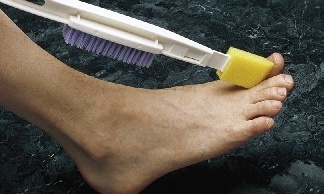
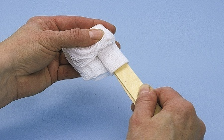
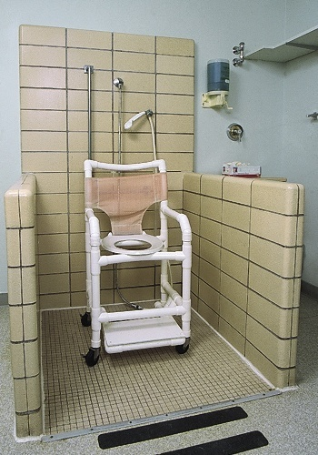
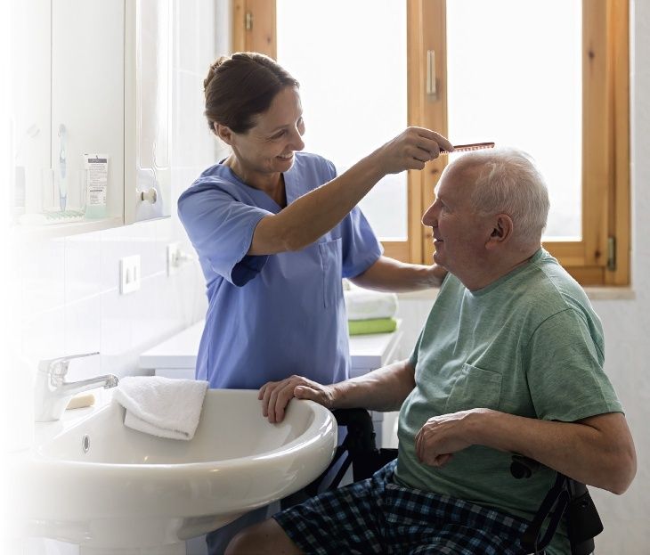

EN 原文Sorrentino's CANADIAN TEXTBOOK for the SUPPORT WORKER Fifth Edition
Mary J. Wilk, RN, GNC(C), BA, BScN, MN Professor, Personal Support Worker Program, Fanshawe College, London, Ontario
Original Author:Sheila A. Sorrentino, PhD, RN Contributing Canadian Experts & Advisory Editors across Ontario, British Columbia, Alberta, and Atlantic Canada.
ELSEVIER
CN 译文《索伦蒂诺加拿大支持工作者教材》 第 5 版
玛丽·J·维尔克（Mary J. Wilk） 注册护士（RN）、加拿大老年护理认证专家（GNC(C)）、文学士（BA）、护理学学士（BScN）、护理学硕士（MN） 加拿大安大略省伦敦市 范莎学院（Fanshawe College）个人支持工作者项目 教授
原著作者：席拉·A·索伦蒂诺（Sheila A. Sorrentino） 博士、注册护士 爱思唯尔（Elsevier Canada）出版公司
二、 Evolve 官方数字化学生学习资源 (Evolve Student Resources)
EN 原文Evolve® — YOU'VE JUST PURCHASED MORE THAN A TEXTBOOK! Enhance your learning with Evolve Student Resources. The companion website for Sorrentino's Canadian Textbook for the Support Worker, 5th edition, offers valuable resources to help you succeed in your course and in clinical practice: - Audio Glossary: Pronunciations and definitions for hundreds of medical terms and key vocabulary words. - Interactive Practice Quizzes: Chapter-by-chapter multiple-choice quizzes to prepare for exams and provincial certification testing. - Clinical Skills Video Clips & Animations: Visual demonstration of complex patient care techniques and body mechanics. - Body Spectrum Electronic Anatomy Colouring Book: Interactive anatomical exploration of organ systems. - Procedure Checklists: Step-by-step competency evaluation rubrics matching provincial vocational learning outcomes.
三、 临床免责与法律声明 (Notice and Clinical Scope Disclaimer)
EN 原文Notice: The content and procedures in this book are based on information currently available. They were reviewed by instructors and practising professionals in various regions of Canada. However, employer policies and procedures may vary from the information and procedures in this book. In addition, research and new information may require changes in standards and practices.
Standards and guidelines from Health Canada, provincial and territorial ministries of health, and regulatory colleges may change as new information becomes available. Other guidelines, including those from public health agencies and employers, must always be followed in clinical practice.
The publisher and the author do not assume any responsibility for any injury and/or damage to persons or property arising out of or related to any use of the material contained in this book. It is the responsibility of the treating caregiver or health care worker, relying on independent professional judgment and working within their legal scope of practice under appropriate supervision, to determine the best approach for the client.
Neither the publisher nor the author is engaged in rendering medical, legal, or other professional services. If medical, legal, or other expert assistance is required, the services of a competent professional person should be sought.
Background & Alignment With Canadian Vocational Standards
EN 原文In keeping with the approach of previous editions, the fifth edition of Sorrentino's Canadian Textbook for the Support Worker serves the diverse needs of students and instructors in community colleges, private career colleges, school boards, and health care agencies across Canada.
Since the publication of the fourth edition, substantial changes have occurred in the Canadian health care landscape. Educational and vocational standards for support workers have been released both nationally and within various provinces. Furthermore, the role of support workers has expanded as health care systems shift focus toward community-based care, home support, and specialized long-term care for complex aging populations.
To reflect these standards and anticipated practice trends, this fifth edition has been rigorously updated, reorganized, and enriched with evidence-based research and clinical guidelines.
CN 译文秉承历版教材严谨务实的学术与教学传统，《索伦蒂诺加拿大支持工作者教材》（第5版）致力于全方位满足加拿大各地公立社区学院（Community Colleges）、私立职业学院（Private Career Colleges）、公立教育局成人职业培训项目及各级卫生保健机构师生的多元化教学需求。
自本书第4版出版以来，加拿大整体医疗卫生体系经历了深刻的结构性变革。联邦及各省相继出台了全新的支持工作者国家职业标准与省级执业教育大纲。伴随着加拿大医疗卫生重心加速向“社区居家照护（Home & Community Care）”倾斜，以及长期照护院舍中高龄复杂慢性病患群体的激增，支持工作者的角色定位与临床技能要求得到了极大的拓展与深化。
【英文】 A stronger emphasis on understanding the role of support workers and their defined scope of practice under provincial legislation and employer policies. The text clearly demarcates what support workers are legally permitted to perform, tasks that require formal delegation by a regulated health professional (e.g., RN or RPN), and unauthorized procedures.
【中文】 更加鲜明地突出了支持工作者的法定执业范围（Scope of Practice）。严格依据各省卫生法规及雇主规章，清晰划定支持工作者被法律允许独立执行的基础照护、必须经由注册护士（RN）或注册实习护士（RPN/LPN）正式书面委派（Delegation）方可协助的受监管操作，以及严禁跨越的医疗红线，切实规避执业法律与医疗安全风险。
【英文】 Completely updated dementia care chapters reflecting clinical guidelines from the Alzheimer Society of Canada and evidence-based training models (such as Gentle Persuasive Approaches - GPA). Special focus is placed on recognizing that responsive behaviours are expressions of unmet physical, emotional, or environmental needs rather than intentional aggression.
【中文】 全面重写失智症（Dementia）专业照护章节，深度整合加拿大阿尔茨海默病协会（Alzheimer Society of Canada）的最新临床指南及广受推崇的温和劝导照护法（Gentle Persuasive Approaches, GPA）。重点引导学员深刻理解：失智症长者的所谓“问题行为/应对行为（Responsive Behaviours，如激越、抗拒照护、日落综合征等）”，本质上是其未被满足的生理痛苦、心理恐惧或环境不适的外在沟通表达，而非故意敌意，应当采取人本主义非药物安抚策略。
【英文】 Expanded content on cultural safety and cultural humility, honoring Canada's Truth and Reconciliation Commission (TRC) Calls to Action regarding Indigenous peoples (First Nations, Inuit, and Métis), as well as embracing Canada’s diverse multicultural, multilingual, and 2SLGBTQ+ communities.
【英文】 The DIPPS principles—Dignity, Independence, Preferences, Privacy, and Safety—serve as the moral and ethical compass throughout every clinical skill and patient interaction in the textbook.
5. 全人心理健康与创伤知情照护（Mental Health & Trauma-Informed Care）
【英文】 Modernized classification of mental health and substance-use disorders aligning with DSM-5 criteria, emphasizing stigma reduction, suicidal behaviour vigilance, and trauma-informed compassionate care approaches.
Front Matter · Student Preface · Pages xxii–xxixHigh-Yield Study System
《加拿大支持工作者教材》（第5版）学生前言与高效学习指南（中英双语对照）
Student Preface & Study Guidelines
第一部分：致未来的支持工作者 —— 您的神圣使命与专业角色
Part 1: A Letter to the Student Support Worker
EN 原文As a support worker, you are a very important member of the health care team because you probably spend more time with your clients than any other member of the team does. Team members rely on your observations, reports, and recordings, especially of any changes in a client. Your clients and their families rely on you to provide professional and safe care. You and the care you give may be the bright spots in a client's day.
This book was designed to help you learn by using its special features, which are described on the following pages. Since the last edition was published, educational and vocational standards for support workers have been released both nationally and within many provinces across Canada. To reflect these new standards, as well as anticipated practice trends, Sorrentino's Canadian Textbook for the Support Worker, fifth edition, has been thoroughly revised, updated, and reorganized to assist you, the student. Even after you graduate, the book will continue to be a useful and reliable resource to you in the field as you gain experience and expand your knowledge.
Part 2: The SQRRR Effective Study System for Healthcare Students
EN 原文Your instructor will probably assign chapters or partial chapters from the textbook to read before or after class. When given a reading assignment, do you read from the first page to the last page without stopping? How much of what you read do you remember? Using an efficient study system will help you understand and retain all the information that you read. A useful study system has these five essential steps:
1. Preview (Survey) 2. Question 3. Read and Record 4. Recite 5. Review
EN 原文Before you start a reading assignment, preview or survey the assignment to get an idea of what it covers and to recall what you already know about the subject. Preview the chapter title, headings, subheadings, and terms or ideas in bold print or italics. Also, survey the learning objectives, key terms, introductory paragraph, boxes, key points, and the review questions at the end of the chapter. Previewing takes only a few minutes. Remember, previewing helps you become familiar with the material.
EN 原文After previewing, you need to form a list of questions to be answered as you read the material. Questions should relate to what might be asked on a test or how the information applies to giving care. Use the title, headings, and subheadings to form questions. Avoid questions that have simple one-word answers. Questions that begin with what, how, or why are most helpful. While reading, if you find that a particular question does not help you understand and retain the material, change the question to make this step more useful.
EN 原文Reading, which is the next step, is more productive after you have determined what you already know and what you need to learn. The purpose of reading is to: - Gain new information - Connect the new information to what you already know
Break the assignment into smaller parts, and as you read each part, try to find answers for the questions you had formulated earlier. Also, mark important information in the text by underlining, highlighting, or making notes, which will remind you later what you need to go back to in order to review and learn. Making notes helps you remember what you have learned. When making notes, write down important information in the text margins or in a notebook. Use words and summary statements that will jog your memory about the material.
After reading the assignment, in order to retain the information, you need to organize it into a study guide—in the form of diagrams, flowcharts, or concept maps that show relationships or steps in a process. Note-taking in outline format is also very useful.
读完一个章节后，为了长期保持记忆，建议将其整理为体系化的“学习指南”——例如绘制展示操作流程的前后步骤图、因果逻辑图或概念框架图。采用层级清晰的提纲式大纲（Outline Format）记录笔记同样极为高效： ` I. 一级主题大标题 (Main heading) 1. 二级分类标题 (Second-level heading) a. 三级要点与操作步骤 (Third-level heading) `
步骤 4 与步骤 5：大声复述与周期复习 (Recite and Review)
EN 原文Recite: Finally, recite and review, using your notes and the study guide, by finding the answers for the questions you formed earlier and any others that may have come up during the reading and as you answered the review questions at the end of the chapter. Answer all questions out loud (recite). If you are unsure about the answers to any of the questions, consult your instructor or re-check the text.
Review: Reviewing is more about when to study than what to study. You already decided what to study during the preview, question, and reading steps. Your instructor may have emphasized key points from the reading assignment in class. The best times to review both the information in your text and your notes from class are: 1. The same day or evening of the class 2. Right after your first study session 3. One week later 4. Regularly before a quiz, test, midterm, or final exam
Studying the information many times over spaced intervals will help transfer it into long-term clinical memory.
针对入户支持工作者（Home Support Worker），剖析在服务对象私人居所中如何因地制宜进行环境安全评估、尊重家庭习俗并独立开展照护。
图解展示：时钟表盘进餐引导法（Figure 27.5） FIGURE 27.5: The numbers on a clock are used to help a visually impaired client locate food. 【临床精义】针对视力障碍（视网膜病变、青光眼、白内障）长者，以时钟点位（例如：6点钟放米饭、10点钟放鸡肉、2点钟放青菜）告知食物位置，极大维护其自主进餐尊严与安全感。
5. 人体力学与安全防护（Body Mechanics & Safety）
医护人员职业健康保护机制，预防腰椎间盘突出与肌肉拉伤。
图解展示：正确与错误人体力学搬运示范（Figure 14.3 & 14.4） FIGURE 14.3 & 14.4: Picking up a box using incorrect (A) and correct (B) posture; Move your rear leg back when pulling. 【临床精义】屈膝下蹲、收紧核心、背部平直，利用大腿肌群发力，严禁弯腰代偿；推拉重物时扩大支撑面并向后撤后腿。
6. 多元文化包容与人际空间（Respecting Diversity & Cultural Safety）
适应加拿大移民多元社会，理解文化背景对身体接触、目光交流与个人空间的深远影响。
图解展示：文化敏感性与身体语言接触（Figure 7.3 & Personal Space） FIGURE 7.3: Culture may influence how a client responds to touch. —— 详细解析不同族裔关于个人距离（Personal Space）与身体接触的心理接受界限。
在加拿大各省从事基层医疗卫生照护的专业从业者，为失去自理能力的长者、残障人士、急慢性病患提供日常生活照料与身心支持。在安省通称 Personal Support Worker (PSW)，在BC省及阿省多称 Health Care Assistant (HCA) 或 Health Care Aide。
To speak or act on behalf of another person or group of people.
代表另一个人或群体发声、申诉或采取行动，捍卫受助者的合法权益与人格尊严。
Caring
/ˈkɛərɪŋ/
关爱 / 仁爱之心p. 16
Concern for clients' and their families' dignity, independence, preferences, privacy, and safety at all times. True caring requires honesty, sensitivity, comforting, discretion, and respect while showing this concern.
A general term for any person receiving care or support services in a community setting: hospital patients, facility residents, and clients in the community.
Care that demonstrates concern for the dignity, independence, individualized care, preferences, privacy, and safety (DIPPS) of clients and their families at all times. Also known as compassionate care or person-centred care.
A health care provider licensed and regulated by the province or territory to carry out nursing techniques and provide client care. Known as a registered practical nurse (RPN) in Ontario.
A facility that provides living accommodations and services; includes assisted-living facilities, long-term care facilities, group homes, and retirement residences.
同时提供生活居所与照护服务的实体机构；涵盖辅助生活机构、长期照护院舍、集体之家以及养老度假寓所等。
Patient
/ˈpeɪʃənt/
患者 / 病人p. 9
A person receiving care in a hospital setting. Also known as a client.
在医院急症或住院环境中接受医疗诊断与救治的人员。在人本关怀体系中亦统称为案主（Client）。
Primary Care Nurse
/ˈpraɪˌmɛri kɛər nɜːrs/
责任制初级责任护士p. 13
A primary care nurse is responsible for the ongoing management of the health of a client. Duties include liaising with other health care team members, the client, and her or his family.
An approach to work that demonstrates respect for others, commitment, competence, and appropriate behaviour.
一种展现对他人尊重、敬业承诺、胜任能力以及得体职业举止的工作方式与态度基石。
Reflective Practice Review
/rɪˈflɛktɪv ˈpræktɪs rɪˈvjuː/
反思性执业自我审查p. 13
A review and self-evaluation of care provided with the goal of identifying ways to improve clinical performance and caregiving.
对自身所提供照护过程的回顾与批判性自我评估，旨在识别不足并持续改进临床执业胜任力与服务品质。
Registered Nurse (RN)
/ˈrɛdʒɪstərd nɜːrs/
注册护士（RN）p. 13
A health care provider who is licensed and regulated by the province or territory to maintain overall responsibility for the planning and provision of client care.
See licensed practical nurse (LPN). The statutory professional title used exclusively in the province of Ontario.
参见持牌实用护士（LPN）。安大略省专用的法定实用护士专业头衔。
Registered Psychiatric Nurse (RPN)
/ˌsaɪkiˈætrɪk nɜːrs/
注册精神科护士（RPN）p. 12
A nurse who is educated and registered in his or her own province to provide care specifically to individuals whose primary needs relate to mental, emotional, and developmental health.
A person living in a live-in facility (often called a long-term care facility).
在寄宿式院舍照护机构（常称长期照护院舍）中长期居住并接受照护的受助长者或人士。
Scope of Practice
/skoʊp əv ˈpræktɪs/
法定执业范围p. 12
The limit and extent of a health care worker's role as determined by your province's educational standards and your employer's policies in order to protect clients from harm. Scope of practice varies from province to province and employer to employer.
See social support. Assisting individuals in returning to and thriving in mainstream society.
参见“社会支持”。协助案主重返并良好适应主流社区与社会生活的赋能过程。
Social Support
/ˈsoʊʃəl səˈpɔːrt/
社会支持p. 3
Equipping a person with the skills and knowledge necessary to successfully live independently outside an institution. Also known as social reintegration.
为案主提供在机构之外成功实现社区独立生活所必需的生活技能与知识储备。亦称社会重新融入。
Support Worker
/səˈpɔːrt ˈwɜːrkər/
支持工作者（PSW / HCA 等）p. 3
A health care worker who provides services to people, both in facilities and in the community, who need help with their daily activities.
在医疗照护机构及社区家庭中，为日常生活活动需要协助的案主提供基础照护与生活支持服务的专业照护人员。
Unregulated Care Providers (UCPs)
/ʌnˈrɛɡjʊleɪtɪd kɛər prəˈvaɪdərz/
未受立法监管的照护者（UCPs）p. 10
A broad term applied to staff members who assist nurses and other health care providers in giving care. Support workers are currently UCPs in most Canadian jurisdictions.
To speak or act on behalf of another person or group of people.
代表另一个人或群体发声、申诉或采取行动，捍卫受助者的合法权益与人格尊严。
Caringp. 16
/ˈkɛərɪŋ/
关爱 / 仁爱之心
Concern for clients' and their families' dignity, independence, preferences, privacy, and safety at all times. True caring requires honesty, sensitivity, comforting, discretion, and respect while showing this concern.
A general term for any person receiving care or support services in a community setting: hospital patients, facility residents, and clients in the community.
Care that demonstrates concern for the dignity, independence, individualized care, preferences, privacy, and safety (DIPPS) of clients and their families at all times. Also known as compassionate care or person-centred care.
A health care provider licensed and regulated by the province or territory to carry out nursing techniques and provide client care. Known as a registered practical nurse (RPN) in Ontario.
A facility that provides living accommodations and services; includes assisted-living facilities, long-term care facilities, group homes, and retirement residences.
同时提供生活居所与照护服务的实体机构；涵盖辅助生活机构、长期照护院舍、集体之家以及养老度假寓所等。
Patientp. 9
/ˈpeɪʃənt/
患者 / 病人
A person receiving care in a hospital setting. Also known as a client.
在医院急症或住院环境中接受医疗诊断与救治的人员。在人本关怀体系中亦统称为案主（Client）。
Primary Care Nursep. 13
/ˈpraɪˌmɛri kɛər nɜːrs/
责任制初级责任护士
A primary care nurse is responsible for the ongoing management of the health of a client. Duties include liaising with other health care team members, the client, and her or his family.
An approach to work that demonstrates respect for others, commitment, competence, and appropriate behaviour.
一种展现对他人尊重、敬业承诺、胜任能力以及得体职业举止的工作方式与态度基石。
Reflective Practice Reviewp. 13
/rɪˈflɛktɪv ˈpræktɪs rɪˈvjuː/
反思性执业自我审查
A review and self-evaluation of care provided with the goal of identifying ways to improve clinical performance and caregiving.
对自身所提供照护过程的回顾与批判性自我评估，旨在识别不足并持续改进临床执业胜任力与服务品质。
Registered Nurse (RN)p. 13
/ˈrɛdʒɪstərd nɜːrs/
注册护士（RN）
A health care provider who is licensed and regulated by the province or territory to maintain overall responsibility for the planning and provision of client care.
See licensed practical nurse (LPN). The statutory professional title used exclusively in the province of Ontario.
参见持牌实用护士（LPN）。安大略省专用的法定实用护士专业头衔。
Registered Psychiatric Nurse (RPN)p. 12
/ˌsaɪkiˈætrɪk nɜːrs/
注册精神科护士（RPN）
A nurse who is educated and registered in his or her own province to provide care specifically to individuals whose primary needs relate to mental, emotional, and developmental health.
A person living in a live-in facility (often called a long-term care facility).
在寄宿式院舍照护机构（常称长期照护院舍）中长期居住并接受照护的受助长者或人士。
Scope of Practicep. 12
/skoʊp əv ˈpræktɪs/
法定执业范围
The limit and extent of a health care worker's role as determined by your province's educational standards and your employer's policies in order to protect clients from harm. Scope of practice varies from province to province and employer to employer.
See social support. Assisting individuals in returning to and thriving in mainstream society.
参见“社会支持”。协助案主重返并良好适应主流社区与社会生活的赋能过程。
Social Supportp. 3
/ˈsoʊʃəl səˈpɔːrt/
社会支持
Equipping a person with the skills and knowledge necessary to successfully live independently outside an institution. Also known as social reintegration.
为案主提供在机构之外成功实现社区独立生活所必需的生活技能与知识储备。亦称社会重新融入。
Support Workerp. 3
/səˈpɔːrt ˈwɜːrkər/
支持工作者（PSW / HCA 等）
A health care worker who provides services to people, both in facilities and in the community, who need help with their daily activities.
在医疗照护机构及社区家庭中，为日常生活活动需要协助的案主提供基础照护与生活支持服务的专业照护人员。
Unregulated Care Providers (UCPs)p. 10
/ʌnˈrɛɡjʊleɪtɪd kɛər prəˈvaɪdərz/
未受立法监管的照护者（UCPs）
A broad term applied to staff members who assist nurses and other health care providers in giving care. Support workers are currently UCPs in most Canadian jurisdictions.
Key terms are important words and concepts that appear in this chapter. Each term is defined below with the page number where it is first introduced or discussed in detail. Master these terms to build a strong foundation for your professional practice as a support worker.
Support workers provide care and assistance to clients of any age who have defined health care needs and who require help with their daily activities, whether they live in a facility or in the community.1 Client is a general term for any person receiving care or support services in a community setting, such as hospital patients, facility residents, and clients in the community. The ultimate goal of support work is to improve the quality of life of the client and family by offering client-centred care and support in a safe, kind, sensitive, caring, and understanding manner.
Support workers can make a difference in people’s lives by alleviating loneliness, providing empathy, ensuring comfort, encouraging independence, and promoting the client’s self-respect (FIGURE 1.1). They support the client and family in a holistic manner by addressing the client’s physical, psychological, social, cognitive, cultural, and spiritual needs and advocate for the client by speaking or acting on the client’s behalf.
FIGURE 1.1 A support worker comforts a client. (iStockphoto/FG Trade.)
图 1.1 支持工作者悉心抚慰案主。（图片来源：iStockphoto/FG Trade）
Support workers may work as part of a health care team or work individually with a client. Legislation, employer policies, and a client’s condition all influence how support workers function and how much supervision they need.
They may collaborate with health care providers or with professionals outside of the health care sector, depending on the needs of their clients. Support workers must use discretion at all times and honour the client’s right to confidentiality whenever discussing the client’s case with co-workers. Support workers are expected to adapt their work style to the setting and to the needs and wishes of the client receiving care.
The nature of support work varies across the country. There are differences in educational programs, work settings, job responsibilities, and terms used to describe support workers.
Some sections of this text may not apply to support work in your particular city, province, or territory. If you are unsure about which parts apply to your area, ask your instructor or employer.
The term support worker refers to the worker who provides personal care and support services. However, assisted-living worker, personal support worker, personal attendant, patient care assistant, resident care aide, resident care attendant, health care aide, home care attendant, home support worker, nursing aide, nursing attendant, community health worker, or continuing care assistant—among other titles—may be used in your province or territory to describe similar (but not always equivalent) jobs.
The Appendix at the end of this book lists the support worker’s titles in each province and territory. Because of the wide variety of titles, the general public may not be aware of what support workers are called in their own province or territory or even within a facility they use. It is the role of support workers, their employing agencies, other health care providers, and their province’s or territory’s Ministry of Health to inform others of their role and how it fits in their current health care structure.
This list may also include several titles that are not equivalent to one another. For example, in Ontario, developmental service workers (DSWs) play a different role and follow different educational standards than personal support workers (PSWs), and yet both are considered to be support workers within the health care team.
In some parts of Canada, the term personal attendant refers to a worker who is supervised directly by the person for whom they provide support services; personal attendants support people with physical disabilities. Educational programs to become a personal attendant are generally shorter than those for support workers.
Support workers work in a variety of settings (see Chapter 3 for definitions and details of workplace settings). In all settings, support workers ensure the safety of their clients, including those who are living with cognitive or mental health challenges.
Services provided by support workers to clients in their homes can enable some clients to live independently or with their families. Support workers may also assist clients with social support, or social reintegration, as
they prepare to move into an assisted-living facility or group home. In long-term care facilities, support workers assist clients with complex health challenges. Support workers also provide comfort and end-of-life care to dying clients so that they can die with dignity.
A support worker’s general responsibilities, depending on the jurisdiction in which they work, can be grouped into six categories: (1) personal care, (2) support for nurses and other health care providers, (3) family support, (4) social support, (5) housekeeping or home management, and (6) documenting and reporting any basic assessments, observations, and care provided in the client’s record or chart.
Personal care responsibilities include assisting with activities of daily living (ADLs). These are the self-care actions that people perform every day to remain independent and to function effectively in society.
Support workers help with daily activities such as eating, bathing, grooming, dressing, and toileting (“elimination”). They assist clients with limited mobility to change positions or move from one place to another and also help promote the client’s safety and physical comfort.
In community settings, support workers also assist clients with instrumental activities of daily living (IADLs), which are the complex and necessary skills needed to successfully live independently. These IADLs may include assisting the client with handling finances, assisting with management of medications, arranging transportation, shopping, preparing meals, assisting with using a telephone or other communication devices, and doing housework and basic home maintenance.2,3
The support worker is not responsible for deciding what should or should not be done for the client. However, while providing personal care, the support worker observes for and reports any changes in the client’s behaviour or health. Such information is important to share with the appropriate person (either the charge nurse or the client’s primary care nurse).
Support for Nurses and Other Health Care Providers
第二大职责：协助护士及其他医疗卫生专业人员
Support workers assist nurses or other health care team members by following the established care plan for each client; for instance, they may be required to clean equipment, measure and report vital signs, or assist with simple wound care. Support workers might also assist with oxygen therapy, heat or cold applications, and range-of-motion (ROM) exercises.
They are often the supervisor’s “eyes and ears,” meaning that because they are the person who spends the most time with the client, they are most likely to observe or hear things that should be reported to the supervisor, who may be a nurse or another type of health care worker. Observing and reporting are very important parts of the support worker’s role and can have a great impact on a client’s care.
Support workers may have to consult with other health care providers, such as social workers or physiotherapists, and may also have to consult with other professionals, such as the client’s employers, clergy, or teachers, depending on the client’s individual care plan.
In many facilities, support workers assist with admissions and discharges by introducing the client and family to the facility and helping the client unpack and settle in. In private homes, support workers help families care for loved ones who are living with health issues or need assistance with ADLs.
Some families may need help with preparing meals and doing household chores; other families may need help with child care. Support worker services often give family caregivers a break from their duties.
Support workers may help clients participate in social activities. These activities provide the client with enjoyment, recreation, and a chance to meet with friends.
They may organize games and outings or may be hired privately to be a client’s companion. Support workers may also be responsible for teaching clients to learn to live independently and to cook, clean, or shop by themselves.
Support workers often do a variety of housekeeping tasks in a facility setting, including making beds, delivering meals, tidying up living areas, and maintaining supplies. In a private home, housekeeping is called home management. Services depend on the needs of
the person and the resources available to provide these services. Duties may include assisting clients with their IADLs, doing light housekeeping, doing laundry, and preparing and serving nutritious meals.
Documenting and Reporting any Basic Assessments or Observations and Care Provided
第六大职责：记录与汇报基础评估、病情观察及照护实务
As part of their professional accountability, all health care workers are legally responsible for reporting and documenting any client care they provide, as well as basic assessments and important observations about their clients. Examples of basic assessments or observations include if the client complains of pain, or if they refuse to eat.
Understanding what is important to report is part of the support worker’s need to think critically (see page 13). Depending on the agency, documentation may be in a written or electronic format (see Chapter 26).
The A Day in the Life boxes on pages 5–9 describe three support workers’ typical workdays—in the community, in a long-term care facility, and in a hospital setting. In each box, the word nurse may mean registered nurse (RN), registered practical nurse (RPN), or licensed practical nurse (LPN), depending on the staffing policies of that particular agency.
教材原版第 5 至 9 页所呈现的“真实工作实录（A Day in the Life）”专栏，生动详实地还原了三位支持工作者在不同执业环境中的典型工作日常——涵盖社区居家照护、长期照护院舍以及急症综合医院。在这些专栏中，出现的“护士（nurse）”一词根据具体机构的人员编制政策，可能指代注册护士（RN）、注册实践护士（RPN）或执业实习护士（LPN）。
NOTE: The timeframes stated below are approximate times only. The actual amount of time to complete the work stated may vary according to a support worker’s assigned workload, a client’s changing state of health, or staffing shortages.
People receiving health care and support services are known by different terms, depending on the setting. A person receiving care in a hospital is usually called a patient.
A person living in a live-in facility is called a resident. A person receiving care or support services in the community is called a client. Client is also an all-encompassing term for people receiving health care or support services: hospital patients, facility residents, and clients in the community.
Whether the individual receiving care is known as a client, patient, or resident, always remember that he or she is a person. Every person is unique, with unique life experiences and situations, desires and opinions. Each will have different needs and different abilities.
Support workers work with people from a variety of cultures or backgrounds (see Chapter 7). Part of the support worker’s job is to accept this diversity among people. The Respecting Diversity boxes that appear throughout this text outline the importance of diversity and how people’s backgrounds influence who they are and what they do.
Clients can be grouped according to their issues, needs, and ages:
受助案主可以根据其存在的健康问题、实际照护需求以及年龄特征，系统化地划分为以下核心群体：
• Older persons. Aging is a normal process and is not an illness or disease. Many older persons enjoy good health. However, body changes normally occur with the aging process. Social and emotional changes may also occur (see Chapter 43). The risks for contracting serious illnesses and becoming disabled increase with age. Most older persons remain at home as long as possible. Others are unable to manage even with assistance and move into a live-in facility. Throughout the text, issues relevant to older persons are discussed.
• People with disabilities. Some people are living with disabilities due to illness, injury, or conditions present at birth. Disabilities may affect physical functioning, mental functioning, or both. Many adults with disabilities live in their own homes. Many work outside their homes. Support workers might help clients living with disabilities with their ADLs or might be responsible for teaching them how to perform the ADLs independently.
残障人士（People with disabilities）：部分个体因后天罹患疾病、意外创伤或先天性发育异常而伴有身心残障。残疾可能损害躯体生理功能、精神认知功能，或兼而有之。许多伴有残障的成年人独立居住在自己的私人家庭中，许多人能够外出胜任全职或兼职工作。支持工作者既可以直接协助残障案主完成日常生活的 ADLs，更有责任赋能案主、耐心指导他们如何逐步建立并掌握独立执行 ADLs 的生活技能。
• People with medical issues. Medical issues include illnesses, diseases, and injuries. These may include short-term (such as a broken bone), long-term (such as diabetes or multiple sclerosis), or progressive and life-threatening (such as some types of cancer) issues.
患有医疗躯体疾病的人群（People with medical issues）：医疗问题涵盖各类急性急症、慢性疾病与躯体意外创伤。这包括短期性医疗问题（如骨折术后康复）、长期慢性进行性疾病（如糖尿病或多发性硬化症），以及持续恶化且危及生命的晚期重症（如终末期恶性肿瘤等）。
• People having surgery. Surgical clients are those being prepared for surgery or who have recently had surgery. Preoperative care includes preparing the client for what to expect after surgery and addressing the client’s fears and anxieties. Needs after surgery relate to relieving pain and discomfort, preventing complications, and helping the client adjust to body changes. People recover from surgeries in hospitals or in their homes.
手术围术期病患（People having surgery）：外科围手术期案主包括正在接受术前准备的准手术病患，以及刚经历过外科手术的术后病患。术前护理的核心在于全面协助病患做好术前生理心理准备，解答其对术后恢复的疑虑，极大程度缓解其内心的恐惧与焦虑情绪。术后护理的重点则聚焦于缓解急性疼痛与躯体不适、严密预防术后感染及深静脉血栓等并发症，并协助病患心理适应躯体改变。手术病患通常在综合医院内度过急性期，随后返回私人家庭进行后期康复。
• People with mental health issues. Mental health issues range from mild to severe. Some people function normally but need help making decisions or coping with life stresses. Others are severely affected and need assistance with ADLs.
伴有心理与精神健康障碍的人群（People with mental health issues）：精神心理健康问题的严重程度从轻度心理适应不良到重度精神障碍不等。部分案主日常机能基本健全，但在做出生活重大决策或应对生活危机压力时需要专业的心理疏导与辅导支持；而另一些罹患严重重症精神疾病的案主，其日常生活生活自理机能受到严重破坏，在日常生活活动（ADLs）上需要专人的全面协助与监护。
p. 10
• People needing rehabilitation. Rehabilitation is the process of restoring a person to the highest possible level of functioning through the use of therapy, exercise, or other methods. The person may need to regain functions lost due to surgery, illness, or accident. Some hospitals have special rehabilitation units. Many people receiving support at home and in long-term care settings require rehabilitation.
• Children. When hospital care is needed, children are admitted to the pediatric unit. In some areas of Canada, support workers are hired to work in pediatric units (FIGURE 1.2). However, most support work for children occurs in community settings and long-term care facilities. Some children who receive care are living with physical or intellectual disabilities. Others need care because a parent has a medical challenge or has just had a new baby. The Focus on Children boxes and Chapter 42 discuss issues related to caring for children.
儿童群体（Children）：当患儿需要住院接受医疗照护时，他们会被收治入儿科病区（pediatric unit）。在加拿大某些省份和地区，支持工作者被直接聘用在医院儿科病区工作（见图 1.2）。然而，针对儿童的大多数支持工作发生在社区家庭和专门的儿童长期照护院舍中。接受照护的部分儿童伴有先天或后天的躯体或智力残障；另一些儿童则是因为其父母身患重病无法履行抚养职责、或家庭刚迎来新生儿需要育婴家政支持。贯穿全书的“聚焦儿童照护（Focus on Children）”专栏以及第 42 章专门系统探讨了儿童照护的特殊临床要求与儿童心理发展理论。
图 1.2 / FIGURE 1.2 · 原书全真图例
FIGURE 1.2 A support worker provides care to a sick child. (iStockphoto/FatCamera.)
• Birth parents and newborns. Complications and difficulties can occur at any time during pregnancy and even up to 6 to 8 weeks following childbirth. Some new birth parents need assistance with their own care or with their newborn’s care. Most support work with birth parents and newborns takes place in the home (see Chapter 41).
产妇与新生儿（Birth parents and newborns）：在怀孕期间乃至分娩产后长达 6 至 8 周的产褥恢复期内，随时可能发生各类严重的母婴身心并发症与产后抑郁。部分新手父母在产后自身的身体康复、伤口护理或新生儿的日常喂养照料上亟需专业协助。针对产妇与新生儿的大多数支持照料工作都在家庭社区环境中开展（详见第 41 章）。
• People requiring special care. Some people who have serious and complex medical conditions need special care and equipment. Hospitals have special care units, including critical care units, coronary care units, kidney dialysis units, burn units, and emergency departments. In some areas of Canada, support workers are hired to work in these units. Support workers might transport people from one unit to another; take specimens to the lab; assist clients with bathing, feeding, mobility, or toileting; and assist other health care providers with special procedures. In some parts of Canada, support workers are not allowed to provide personal care to clients in unstable or critical conditions.
需要特殊高精监护照料的重症病患（People requiring special care）：部分患有极度严重且极其复杂的危重病患，需要高度专业化的特级生命监护与高端医疗设备。医院内部设有专门的特护科室，包括重症监护室（ICU）、冠心病监护室（CCU）、血液透析中心、烧伤整形科以及急诊科（ED）。在加拿大某些司法管辖区，支持工作者被特聘进这些重症病房工作。支持工作者的主要职责可能包括：在各个科室病房之间安全转运病患、迅速将血液体液检验标本送检至检验实验室、协助平稳期病患进行床上擦浴、协助进食、辅助翻身过床以及排泄如厕，并在持牌护士操作高难度临床特殊治疗时提供辅助配台。在加拿大某些省份，法律明令禁止支持工作者向病情极不稳定或生命垂危的重症病患提供直接的个人生活护理。
THE HEALTH CARE TEAM
跨专业医疗卫生团队（The Health Care Team）
A team is a group of people working together toward a common goal. Health care teams include professionals with a variety of skills and knowledge who work together to meet the client’s needs.
Their goal is to provide quality care. Many professionals, including support workers, are involved in the care of one client. Which professionals are involved depends on the needs of the client.
It has a professional organization called a college, which sets education and licence requirements. It also establishes the scope of practice, code of ethics, and standards of conduct for its members.
它拥有一个法定的行业自我监管公会或学会（College，例如安大略省护士学会 CNO、内外科医师学会 CPSO 等）。监管学会依法制定严苛的专业准入教育大纲与执业执照注册标准；同时严格确立其会员的法定执业范围（scope of practice）、职业伦理准则（code of ethics）以及行业执业行为规范。
In the case of a complaint about a member’s conduct, the college investigates and, if necessary, disciplines members guilty of misconduct. Each regulated health care profession has legislation that details the roles and responsibilities of its members. Nursing is one of many regulated health care professions.
Unregulated care providers (UCPs) are health care providers who perform clearly identified services under the direction and supervision of a client, family member, regulated health care provider, or employer. However, UCPs are not regulated through legislation and are not members of an organization or professional college that governs their role.
未受立法监管照护者（Unregulated care providers，简称 UCPs）是指在案主本人、家属、受监管持牌医护专业人员（如注册护士）或用人雇主单位的直接指导与临床监督下，执行明确规定的基础照护服务的医疗辅助从业人员。然而，UCPs 目前尚未被省级立法纳入独立的法定注册监管体系，也不属于任何具有行业行政惩戒权的专业自治学会（College）的会员。
While UCPs do not currently follow any official code of ethics, they must adhere to the codes of behaviour dictated by their employers (see Chapter 4, Box 4.1, for A Sample Code of Ethics for Support Workers, on page 51). At this point, support workers in most provinces and territories are considered to be UCPs.
TABLE 1.1 describes the titles and positions of the common health care team members. It also specifies whether they are regulated or unregulated workers.
TABLE 1.1 Support and Health Care Team Members (Part 1)
表 1.1 跨学科医疗卫生照护团队核心成员职责与法定资质（第1部分：原书第11页全景对照）
Title / 专业头衔
Description / 临床岗位核心职责与执业界定
Regulated / Unregulated 法律监管属性
Aboriginal support worker 原住民支持工作者
Assists Indigenous clients; provides education on diabetes prevention and management; provides guidance on self-care management; facilitates discharges from and admissions to health care facilities; organizes services 协助原住民案主；提供糖尿病预防与管理健康宣教；提供自我照护管理专业指导；协助办理医疗卫生机构的出入院手续；统筹协调各项服务
Unregulated 未受立法监管
Activities director 康乐文娱活动总监
Assesses, plans, and implements recreational activities based on clients’ needs 根据受助案主的身心照护需求，科学评估、统筹规划并组织实施各类文娱康乐活动
Unregulated; provincial or territorial educational requirements vary 未受立法监管（各省/地区学术准入资质要求各有不同）
Dietitian 注册营养师 (RD)
Assesses and plans for nutritional needs; teaches clients about nutrition, food selection, and preparation 全面评估案主的机体营养需求并制定膳食方案；向案主传授营养学知识、指导科学选材配餐与烹饪制作
Regulated 受立法监管
Massage therapist 注册按摩治疗师 (RMT)
Provides hands-on manipulation of the soft tissues of the body for the purposes of decreasing pain and stiffness, improving circulation to affected areas, and optimizing overall health 通过对人体软组织进行专业的临床手法按摩调理，以达到缓解疼痛与关节僵硬、改善受损区域血液循环并提升机体整体健康水平的目的
Regulated in some provinces 在部分省份受立法监管
Nurse practitioner 高级执业护士 (NP)
Diagnoses; treats clients with simple injuries and illnesses; is a registered nurse with advanced education and additional responsibilities for management of client care 拥有法定诊断权；诊治患有单纯创伤和常见疾病的案主；属于接受过高阶研究生教育并对案主医疗照护管理承担额外法定责任的注册护士
Regulated 受立法监管
Occupational therapist 作业治疗师 (OT)
Focuses on rehabilitation; teaches clients skills needed to perform ADLs; designs adaptive equipment for ADLs 聚焦于功能康复；指导案主掌握执行日常生活活动（ADLs）所需的各项实用技能；专门为 ADLs 量身设计自理辅助适老器具
Regulated 受立法监管
Paramedic/Emergency medical technician (EMT)/Advanced care paramedic 急救医士 / 院前急救转运人员
Health care provider trained to provide prehospital assessment, and physical care in emergency situations such as for medical or psychiatric concerns, traumatic injuries, and at accident scenes 经过系统专业急救培训，在急症事故现场针对突发躯体急症、精神危机、严重创伤等紧急状况提供院前评估与紧急生命支持的医护人员
Regulated in some provinces 在部分省份受立法监管
Pharmacist 执业药剂师 (RPh)
Fills medication orders written by physicians; monitors and evaluates drug interactions; consults with physicians and nurses about drug actions and interactions 严格调配执行医师开具的处方用药医嘱；严密监测与评估药物相互作用；就药理作用机制及药物配伍禁忌向医师和护士提供专业咨询
Regulated 受立法监管
Physician 执业医师 (Doctor)
Diagnoses and treats clients with illnesses and injuries 对罹患急慢性疾病与外伤创伤的案主进行临床诊断并制定系统治疗方案
Regulated 受立法监管
Physiotherapist (Physical therapist) 物理治疗师 (PT)
Focuses on rehabilitation; assists clients with musculoskeletal impairments; focuses on restoring function and preventing disability from illness or injury 聚焦于运动康复；协助照护伴有肌肉骨骼系统功能受损的案主；全力致力于恢复肢体运动机能并预防因伤病导致的继发性残障
Regulated 受立法监管
Recreational therapist 文娱康乐治疗师
Focuses on improving quality of the client’s life through leisure and recreation-related activities such as arts and crafts, drama, music, dance, sports, games, and field trips 通过开展工艺手作、戏剧表演、音乐疗愈、舞蹈律动、体育运动、益智游戏及户外参访等闲暇文娱活动，全面提升案主的生命生活质量
Unregulated 未受立法监管
p. 12
TABLE 1.1 Support and Health Care Team Members (Part 2 - Continued)
表 1.1 跨学科医疗卫生照护团队核心成员职责与法定资质（第2部分：原书第12页全景对照）
Title / 专业头衔
Description / 临床岗位核心职责与执业界定
Regulated / Unregulated 法律监管属性
Registered nurse (RN) 注册护士 (RN)
Assesses; makes nursing diagnoses; plans, implements, and evaluates nursing care; tends to clients with unstable health conditions; provides direct client care; administers medications; supervises support workers 全面系统评估；确立护理诊断；制定、执行并评估护理方案；照护病情不稳定的重症案主；提供直接临床护理；执行静脉口服给药；临床督导支持工作者
Assesses; makes nursing diagnoses; plans, implements, and evaluates nursing care; tends to clients with stable health conditions; provides direct client care; administers medications; supervises support workers 临床评估；确立护理诊断；制定、执行并评估护理措施；照护病情平稳的案主；提供直接临床护理；执行规范给药；在一线督导支持工作者
Regulated 受立法监管
Registered psychiatric nurse (RPN) 注册精神科护士
Provides care to individuals whose primary needs relate to mental, emotional, and developmental health; works independently or in cooperation with other health care providers (e.g., psychiatrists, physicians, psychologists, social workers, recreational therapists, and occupational therapists) to develop or implement therapeutic programs 专门为主要健康问题涉及精神、情绪及发育健康的案主提供临床照护；独立工作或与其他医护人员（如精神科医师、临床心理学家、社工、康乐治疗师、作业治疗师）紧密协作，制定并实施系统心理治疗方案
Regulated 受立法监管
Respiratory therapist 呼吸治疗师 (RT)
Focuses on rehabilitation; assists in treatment of lung and heart disorders; gives respiratory treatments and therapies 聚焦于心肺康复；协助治疗急慢性肺部与心脏疾患；实施专业的呼吸道临床雾化、通气与理疗
Regulated 受立法监管
Social worker 专业社会工作者 (MSW/BSW)
Helps clients and families deal with social and emotional issues related to illness and recovery 协助案主及其家庭妥善化解与疾病诊疗和身体康复密切相关的各种社会人际障碍、情绪心理危机与福利链接
Varies according to province or territory 根据省或地区立法而有所差异
Focuses on rehabilitation; evaluates speech and language; treats people with speech, voice, hearing, communication, and swallowing disorders 聚焦于功能康复；系统评估言语与语言功能；专业治疗伴有发音障碍、嗓音疾病、听力减退、沟通障碍以及吞咽困难（swallowing disorders）的案主
Regulated 受立法监管
Spiritual advisor 精神心灵关怀顾问 / 牧师
Assists clients and families with spiritual needs 严格遵照宗教与个人信仰，在案主病重或临终关怀期为案主及其家庭提供深邃的心灵精神抚慰与宗教支持
Determined by religious order 由所属宗教教派或教义规章确立资质
Support worker/Community support worker 支持工作者 / 社区支持工作者 (PSW / HCA)
Assists clients with personal care, family responsibilities, social and recreational activities, and housekeeping or home management; provides personal care and assistance with ADLs 在持牌人员督导下，协助案主完成个人基础生活照料、分担家庭抚养责任、协助参与社交文娱活动，并开展家务或家庭运营保洁；提供直接个人照护并协助完成 ADLs
Unregulated 未受立法监管 (UCP)
Scope of Practice
执业范围与法定边界（Scope of Practice）
Support workers must understand what to do, what not to do, and the limit and extent of a health care worker’s role as determined by their province’s educational standards and employer’s policies in order to protect clients from harm. The term scope of practice is not a copyrighted term, and it is not intended only for regulated professionals. Instead, it is used to identify what a support worker may and may not do in relation to client care.
支持工作者必须深刻理解自己“应该做什么、严禁做什么”，以及由所在省份的教育培训标准和雇主单位规章制度所明确界定的医护人员角色权限的法定界限与外延范围，从而全力保护案主免受任何伤害。“执业范围（scope of practice）”这一术语并非受版权保护的专属词汇，也绝非仅专门用于指代受立法监管的专业人员。相反，它被普遍用于明确界定支持工作者在涉及案主临床照护时“被授权可以执行”与“被明令禁止执行”的法定事项边界。
Never act beyond the legal limits of your role. Also, never perform a function or task that you have not been trained to do. If you perform a task that is outside these limits, you could harm a client and create serious legal problems for yourself and your employer.
The support worker’s scope of practice in any province, territory, city, or municipality is determined from three important sources. Those sources include the following:
支持工作者在加拿大任何省份、地区、城市或市镇的法定执业范围均由以下三大核心法律与管理渊源严格确立：
• 1. Provincial/territorial educational standard of practice: Many provinces now follow either the national or provincial program standards, which dictate what support workers need to be taught in their educational programs. The support worker educational program includes information on the scope of practice for support work in that province or territory. Students will learn about the laws and the support worker’s professional responsibilities in their part of the country. Students should ask their instructors if they require any clarification. (Please visit http://www.novascotiacca.ca/DocumentViewer.aspx?elementId=106908&portalName=ha to view an example of a scope of practice document for the province of Nova Scotia.)
• 2. Employer’s policies: Every employer has written policies that establish what can and cannot be done by support workers. These policies should be read carefully before starting work.
• 3. Supervisor: On the job, the supervisor is the best source of clarification of the employer’s policies. It is far better to ask for direction than risk harming a client, so never hesitate to ask questions or request clarification about any procedure.
专业发展与终身学习（Professional Development and Lifelong Learning）
Being a professional requires critical thinking and reflective practice review. Critical thinking is the ability to think clearly and logically, using reflection and reason, based on knowledge obtained from experience, observation, or education. A reflective practice review is a self-evaluation of care provided with the goal of identifying ways to improve clinical performance and caregiving.
成为一名合格的专业人士需要兼备批判性思维（critical thinking）与反思性执业回顾（reflective practice review）能力。批判性思维是指基于实践经验、细致观察或专业教育所习得的系统知识，运用理性反思与逻辑推演进行清晰周密思考的专业认知能力。反思性执业回顾则是从业者对自己所执行的各项照护工作进行的系统化自我评估与反省，其核心宗旨在于敏锐辨识自身的技能短板与盲区，从而确立持续改进临床表现与提升照护品质的有效路径。
Health care is an ever-changing field. It is the responsibility of every professional in the field to ensure that all clinical skills and knowledge are up to date, since their own health and safety and the health and safety of co-workers and clients are at stake.
Depending on the region, many postgraduate certificate courses and workshops may be available to support workers, such as advanced palliative care, conflict management courses, or medication management. Support workers also need to be aware of the scope of practice in their province or territory, since some, in particular situations, have been asked to perform tasks that are not within the support worker’s scope.
In facilities, in the community, or in private homes, support workers may be supervised by a nurse or other health care provider. A registered nurse (RN) is licensed and regulated by the province or territory to maintain overall responsibility for the planning and provision of client care.
无论在医疗机构、社区环境还是私人家庭中，支持工作者均由注册护士或其他持牌健康专业人员实施专业督导。
Some RNs have university degrees and even postgraduate education. Others have community college diplomas.
RNs assess clients, make nursing diagnoses, develop care plans, and implement and evaluate nursing care. They also carry out physicians’ orders. An RN is usually a team leader of the health care team, which includes RPNs or LPNs (see below), support workers, and other allied health care providers.
A licensed practical nurse (LPN), also known as a registered practical nurse (RPN), is licensed and regulated by the province or territory to carry out basic nursing procedures and provide client care. RPNs and LPNs have a community college diploma, although many also have university degrees and even postgraduate education.
Like RNs, they must hold a current nursing registration in the province that they practise in. RPNs or LPNs function in a decision-making position when caring for stable clients with uncomplicated health issues, but when providing care to clients with serious and unstable health issues, they assist RNs and help with complex procedures. RPNs and LPNs often supervise support workers.
Some clients, particularly in a live-in environment, may be assigned to a primary care nurse, who is responsible for the ongoing management of the health of a client. Duties of this nurse include liaising with other health care team members, the client, and her or his family. In an acute-care environment, the primary care nurse may or may not be directly involved in providing the client care on a daily basis but will oversee the work of those who do, including the support worker.
部分案主（特别是在全日制长期照护院舍中）会被指派一名专属的责任制原发护士（primary care nurse），该护士全权负责案主健康状况的长期动态管理。其神圣职责包括在其他跨学科团队成员、案主本人及其家属之间扮演核心联络人。在急症综合医院中，责任制原发护士可能并不直接参与案主每日的所有琐碎基础生活护理，但她/他必须对直接执行这些照护的团队成员（包括支持工作者）的工作实施全方位监督与质量把控。
In some situations, a support worker may be supervised by a professional other than an RN, RPN, or LPN. For example, in the recreation department
of a long-term care facility, support workers may report to a recreational therapist. In the community, a supervisor may be a social worker, a physiotherapist, or another health care provider.
Some support workers are hired and supervised directly by clients. These support workers must be particularly aware of provincial or territorial legislation that limits the tasks and procedures they can perform.
Professionalism is an approach to work that demonstrates respect for others, commitment, competence, and appropriate behaviour. Being cheerful and friendly, keeping work schedules, performing tasks competently, and being helpful are all part of a professional approach. To be a true professional, you must demonstrate the following:
People rely on you to give efficient care and support. You need to believe that you and your work are valuable and show that you enjoy your work. Be enthusiastic, considerate, courteous, honest, and cooperative.
Speak in a professional manner, and avoid the use of slang terms or profane language. Always think before you speak, do not gossip, and do not complain. Your words reveal your attitude. BOX 1.1 lists some statements to avoid so as not to show a negative attitude and how they can be reworded.
Sense of responsibility. Never blame others for your problems or mistakes at work. Admit your errors, accept constructive criticism, and learn from others.
责任感（Sense of responsibility）：工作中遇到困难或出现过失时，绝不可推诿卸责或指责他人。坦诚承认自己的错误，虚心接受建设性的批评意见，并善于向优秀的团队同仁虚心求教。严格遵守排班安排，保证按时到岗。
Always report to work when scheduled and on time. Everyone on the team, including the client, is affected when even one person is late. Have a plan ready for times when you are urgently needed at home or your transportation is unavailable.
Inform your supervisor immediately if you will be late or unable to work. Also, be sure to finish assigned tasks before you leave for the day. The client’s care cannot be neglected for any reason. In the case that you cannot finish your assignment, promptly explain why to your supervisor.
Professional appearance. A professional, appropriate appearance shows respect for the people in your care, your co-workers, and yourself. It indicates that you take your job seriously. Your appearance includes your clothes, grooming, and hygiene (BOX 1.2 and FIGURE 1.3).
Discretion about client information. Discretion means showing good judgement about what you say, how you say it, when you say it, and where you say it.
审慎对待案主信息（Discretion about client information）：审慎（Discretion）意味着在“说什么、怎么说、何时说、在哪里说”方面展现出高度严谨的职业判断力。您必须敏锐判断哪些信息属于法律必须绝对封存的个人隐私，哪些信息属于团队交接必需共享的临床数据。
You need to judge when information should be kept private and when it should be shared. Information about a client is confidential. Confidentiality means respecting and guarding personal and private information about another person.
Information should be shared only among the health care team members involved in the client’s care. Information about your employer, your co-workers, and other clients is also private. For example, you must
never talk with a client about another client, even if you avoid using names. Also, avoid talking about clients, co-workers, and your employer where you can be overheard; if you need to discuss a client’s care with team members, make sure that other clients, families, and visitors cannot hear you.
People overhearing may think you are talking about them or their family members. This assumption can lead to misinformation and confusion, which can be distressing to those affected.
Lifelong learning. Equipment and techniques for caring for clients can become outdated, and it is the responsibility of all caregivers to keep current with the information that affects the care they give. To keep your knowledge up to date, attend workshops and in-services that are offered by your employer, get clarifications from your supervisor, and read up about new equipment or practices that you are uncertain about.
Advocating for the client. Support workers will often make important observations about the client or family, and these observations must be communicated to the health care team.
为案主发声辩护（Advocating for the client）：在日复一日的亲密接触中，支持工作者往往是最先敏锐捕捉到案主身心异常或家庭动态重大变化的第一人，这些第一手临床观察必须迅速准确地传达给整个跨学科医疗团队！当案主因失语、严重失智或极度虚弱而无法为自己发声诉求时，这种信息的主动反馈尤为关键。
Sharing this information is especially important if a client is unable to speak for themselves. It is also the responsibility of professionals to avoid taking shortcuts in their care, as doing so may seriously harm the client. Shortcuts include taking longer breaks, skipping tasks listed on the client’s care plan, or failing to apply theory on hygiene learned in school to client practice.
FIGURE 1.3 This support worker is well groomed. Her uniform and shoes are clean. Her hair is worn in a simple style and is kept out of her face and off her collar. She is not wearing any jewellery, except a watch. Her name tag is easily visible and approved by her employer. (Courtesy of Mosby.)
Discretion about personal matters. Discretion in support work includes keeping personal matters out of the workplace. Your role is to focus on your clients and the task at hand.
审慎对待个人私事（Discretion about personal matters）：支持工作中的审慎准则要求从业者绝对将个人私生活与职场环境严格剥离！您在工作中的核心职责是全神贯注于您的受助案主以及当班手头的各项照护任务。
Do not discuss with clients your family matters and personal problems or the problems of others (BOX 1.3). No matter how well you think you know a client, remember that your relationship must remain professional. It would be inappropriate to discuss your personal problems with your client.
Using acceptable speech and language. The way you speak at home and in casual social settings may not be appropriate for a work setting.
使用得体规范的语言（Using acceptable speech and language）：您在家中或非正式社交聚会中的日常言谈习惯，在严肃的医疗执业环境中往往并不合时宜。即便您当时只是在私下与同事轻声交谈，周围的其他案主、家属或访客也完全可能无意听闻，并对您所言的内容或轻佻的语气深感冒犯！
Even if you are speaking with a co-worker, others could hear you and be offended by what you say or how you say it. Your speech and language must remain professional while you are on the job. To avoid offending clients or co-workers, never use foul, vulgar, or abusive language.
Also, avoid using slang. Speak gently and clearly; never yell or shout. And never fight or argue with clients, their family members, or your co-workers.
THE GOAL OF SUPPORT WORK: IMPROVED QUALITY OF LIFE THROUGH CLIENT-CENTRED CARE
支持工作的根本宗旨：践行以案主为中心的照护以提升生命质量
Client-centred care (also known as compassionate or person-centred care) or caring means having concern for the dignity, independence, preferences, privacy, and safety of clients and their families at all times. It is important that any communication with or care given to a client be individualized for that client.
以案主为中心的照护（Client-centred care，亦称为同理心关爱照护 compassionate care 或以人为本照护 person-centred care）或全人关爱（caring），意味着在任何时刻、任何操作中，都时刻把案主及其家庭的尊严、独立自主、个人偏好、隐私保护及人身安全置于最高优先级。与案主的每一次沟通交谈、所提供的每一项床旁操作，都必须严格针对该案主独特的生命个体实施个性化定制，这是至关重要的！
The goal of support work is to demonstrate true client-centred care by following this principle and treating clients with kindness, honesty, sensitivity, comfort, discretion, respect, and understanding. Many people who require support are coping with serious illness, disability, personal issues, or challenges, and they depend on the care given to them for survival and improved quality of life. The acronym DIPPS is a reminder of the six principles of client-centred care—Dignity, Independence, Individualized care, Preferences, Privacy, and Safety—which is the goal of support work:
• To preserve their privacy. Clients need to know that their bodies and their affairs are treated respectfully and protected from public view (FIGURE 1.4).
• To be safe from harm. Clients need to live in an environment that is as hazard free as possible. They also need to feel secure about the care provided.
FIGURE 1.4 A client talks privately on a telephone. (Source: Sorrentino, S. A. [2008]. Mosby’s textbook for nursing assistants [7th ed., p. 137]. Mosby.)
When well and able-bodied, most people take the fulfillment of the six needs listed above for granted. When they are living with disabilities or suffer serious illnesses, however, these needs may be more difficult to fulfill.
Those who rely on others for personal care may worry about losing their dignity, and they may not feel free to express their wishes. For example, clients living in long-term care facilities may have to eat what is provided and socialize only at prearranged times.
They may share a room with another client and find that private moments are rare. Safety concerns are serious issues for clients with illnesses or disabilities. For example, they may worry about reaching the bathroom without falling.
Clients with illnesses or disabilities do not all have the same needs. However, most have at least some of the needs just discussed. To help you recognize clients’ needs, Providing Client-Centred Care boxes throughout the text discuss the goal of support work, which is to follow the principles of client-centred or compassionate care when performing procedures with clients (BOX 1.4).
CRITICAL THINKING, DECISION MAKING, AND PROBLEM-SOLVING
批判性思维、临床决策与问题解决能力
Support workers think critically and make many decisions in the course of a workday. For example, they estimate the time each task will take and plan the best way to complete their work on time, taking into account the various needs of the client. Many decisions involve critical thinking in order to solve problems.
• The goal of support work. Solutions to problems should not compromise the six principles of client-centred care: dignity, independence, individualized care, preferences, privacy, and safety, or DIPPS.
支持工作的根本宗旨（The goal of support work）：所制定的任何问题解决方案，都绝不可牺牲或损害以案主为中心的 DIPPS 六大人文关怀原则（尊严、独立、个性化、偏好、隐私、安全）中的任何一项！
• The client’s viewpoint. Involve clients in solving problems that concern them. Examine the problem from the client’s point of view.
• Scope of practice. Learn and observe the rules of your workplace. Know the limits of your role.
法定执业范围（Scope of practice）：熟练掌握并严格恪守您所在工作机构的一切规章制度与操作规程；时刻清楚知晓并坚守自身角色的法定界限底线，绝不擅自越权！
• Supervisor’s viewpoint. Decide if the problem is one that you can handle on your own or one that your supervisor should handle. Your supervisor should provide guidance about which problems you can deal with on your own.
Critical thinking, decision making, and problem-solving are crucial to the support worker’s role but are often difficult when a person is new to the job. To help you with the problem-solving process, this text includes Supporting boxes that present examples of problems faced by support workers and how the problems were solved.
• The ultimate goal of support work is to improve the client’s quality of life by following the principles of client-centred care (DIPPS). The support worker tends to the person’s needs, which include physical needs as well as helping to relieve loneliness, providing comfort, encouraging independence, and promoting the person’s self-respect. Care should always be individualized to each client. A support worker’s services to people in their homes help them remain independent and continue to live with their families. Support workers make a difference in people’s lives.
• Most of a support worker’s responsibilities can be grouped into six categories: (1) personal care, (2) support for nurses and other health care providers, (3) family support, (4) social support, (5) housekeeping or home management, and (6) documenting and reporting any basic assessments, observations, and care provided in the client’s record or chart.
• Depending on their setting, people receiving health care and support services are known by different terms, such as patient (in a hospital), resident (in a live-in facility), or client (in the community).
• The people supported can be grouped according to their problems, needs, and ages.
受助群体可以根据其所患的健康问题、实际照料需求以及年龄特征系统进行专业化分类支持。
• At this point, support workers in most provinces and territories are still considered health care providers not regulated through legislation, or unregulated care providers (UCPs). Support workers are accountable to their supervisors, employers, and clients; they do not presently have an organization or college that governs their role. Regulated care providers are health care providers licensed and regulated by the province or territory to carry out care that is within their scope of practice.
• Professionalism includes having a positive attitude, a sense of responsibility, a professional appearance, being discreet about client information, being a lifelong learner, advocating for the client, being discreet about personal matters, and using acceptable speech and language.
• While discussing the client with co-workers, support workers must use discretion at all times and honour the client’s right to confidentiality. Confidentiality means respecting and guarding personal and private information about another person.
• Part of being a professional, reflective practice reviews consist of a review and self-evaluation of any care provided and identification of ways to improve clinical performance.
• When thinking critically, making decisions, and solving problems, support workers must consider the principles of client-centred care (DIPPS), the client’s viewpoint, their scope of practice, and their supervisor’s viewpoint.
Activities that support workers perform to prevent injuries
支持工作者为防止自身工伤所执行的操作活动
C
Physical exercises that people perform daily to keep themselves fit
人们为了强身健体而每日进行的体育锻炼
D
Self-care activities that people perform daily to remain independent and to function in society
人们为了保持独立自理能力并在社会中正常生活而每日进行的自我照料基础活动
标准权威答案： 选项 D
Clinical Rationale: Official answer from page 19: ADLs are the foundational self-care tasks performed every day (eating, bathing, dressing, toileting, moving).
Which of the following is a way in which support workers assist nurses or other health care team members?
下列哪一项是支持工作者协助护士或其他医疗团队成员的正确方式？
A
Assess the client's needs
独立评估案主的医疗与健康需求
B
Order range-of-motion exercises
下达关节活动度康复锻炼医嘱
C
Witness legal signatures on permission forms
在医疗知情同意书等法律文书上作为见证人签字
D
Report changes in the client's behaviour or health
及时向护士汇报案主行为、身体或健康状况的异常变化
标准权威答案： 选项 D
Clinical Rationale: Official answer from page 19: Support workers assist by observing and reporting any changes in behaviour or health. Assessment and prescribing are beyond the UCP scope.
Clinical Rationale: Official answer from page 19: Support workers in Canada are currently unregulated care providers (UCPs) accountable to employers and supervisors.
The effort you put into performing a task or procedure
您在执行某项操作程序时所付出的辛劳与努力程度
D
The limits of your role to prevent client harm
为保护案主免遭人身伤害而由法律与制度设定的角色与技能法定界限
标准权威答案： 选项 D
Clinical Rationale: Official answer from page 19: Scope of practice defines the legal and institutional boundaries of what a worker is trained and permitted to perform to protect clients.
An approach to work that demonstrates respect for others, commitment, competence, and appropriate behaviour
一种展现对他人尊重、高度敬业承诺、胜任能力以及得体职业举止的工作方式与态度
C
A commitment made by regulated professionals only
仅由受立法监管的医师与护士签署的法定承诺
D
Another term for confidentiality
病历隐私保密原则的同义替代词汇
标准权威答案： 选项 B
Clinical Rationale: Official answer from page 19: Professionalism involves respect, commitment, competence, ethics, and appropriate conduct at all times.
You can use a client's phone to make personal calls.
您可以借用案主家中的私人座机拨打个人私人电话。
B
Friends can visit you at work.
您的亲朋好友可以在您工作上班时间来机构探访您。
C
You must follow your employer's dress code policies.
您必须严格遵守雇主机构制定的员工着装与仪表仪容规范。
D
Sharing your personal problems with a client shows compassion.
向案主倾诉自己的家庭个人烦恼是展现同理心与拉近距离的好方法。
标准权威答案： 选项 C
Clinical Rationale: Official answer from page 19: Adhering to the employer's dress code is a basic professional requirement. Personal calls, personal visitors, and sharing personal problems violate professional boundaries.
In a long-term care facility, the client's information should be shared among:
在长期照护机构中，案主的健康与隐私信息仅被允许在下列哪些人员之间共享？
A
Health care team members involved in the client's care
直接参与该案主日常诊疗照护的医疗团队成员之间
B
Health care team members and friends who visit the client
医疗团队成员以及前来探望该案主的普通朋友之间
C
Family and friends of the client
案主的所有家族亲戚与熟人朋友之间
D
All staff members at the facility
该机构内部工作的所有员工（包括后勤与行政）之间
标准权威答案： 选项 A
Clinical Rationale: Official answer from page 19: Under PHIPA and professional ethics, confidential information may only be shared with healthcare personnel directly involved in that client's care on a need-to-know basis.
Being critical when thinking or speaking of others
在思考或谈论他人时时刻保持挑剔与批评眼光
D
The ability to think clearly and logically, using reflection and reason
运用反思、理性判断与严谨逻辑进行清晰思考的能力
标准权威答案： 选项 D
Clinical Rationale: Official answer from page 19: Critical thinking is disciplined, logical, and reflective thought used to make sound clinical decisions.
Disability, individuality, pity, privacy, scope of practice
残疾、个性、怜悯、隐私、执业范围
标准权威答案： 选项 B
Clinical Rationale: Official answer from page 19: DIPPS represents the 6 pillar principles of client-centred compassionate care: Dignity, Independence, Individualized care, Preferences, Privacy, Safety.
Which statement is false? When solving problems, you should:
关于临床批判性解决照护难题，下列哪项说法是【错误】的？您应当：
A
Consider your scope of practice
时刻牢记并严格考量自身的法定执业范围
B
Consider the principles of client-centred care (DIPPS)
以 DIPPS 人文关怀六大基石作为决策衡量支柱
C
Discuss the problem with the client
充分与案主平等沟通，倾听其内心诉求与真实观点
D
Not involve the client to prevent causing more problems
为了避免引起更多麻烦而坚决把案主排除在沟通与决策之外
标准权威答案： 选项 D
Clinical Rationale: Official answer from page 19: Statement D is FALSE. In client-centred care, the client must ALWAYS be actively involved and consulted in decisions affecting their life.
临床解析： 官方教材第 19 页标准答案 D：说法 D 是错误的！以案主为中心的核心真谛正是让案主享有知情权与决策参与权，绝不可为了省事将案主排除在外。
Chapter 2 Full Text · Pages 20–32 UnabridgedThe Canadian Health Care System
ELSEVIER OFFICIAL TEXTBOOK · CHAPTER 2
The Canadian Health Care System
第二章：加拿大医疗卫生体系 —— 宪制权责、五大基本原则与分级诊疗网络
Chapter 2 Opener · 原书全真图例
Modern Canadian healthcare delivery and support services across diverse communities. (iStockphoto/Warchi)
A principle of the Canada Health Act that states that people must have reasonable access to insured health care services without financial or geographical barriers.
Federal legislation that clarifies the types of health care services that are insured; it outlines five principles that provinces and territories must meet to qualify for federal funding.
A principle of the Canada Health Act that states that all medically necessary health services, including hospital care and physician services, must be fully insured.
A strategy for improving population health by providing information and resources empowering individuals and communities to make informed healthy choices.
Canada's publicly funded national health insurance system, providing comprehensive coverage for medically necessary hospital and physician services at no direct cost.
A principle of the Canada Health Act requiring provincial/territorial health insurance plans to be administered on a non-profit basis by a public authority.
A principle of the Canada Health Act that states that people must have reasonable access to insured health care services without financial or geographical barriers.
Federal legislation that clarifies the types of health care services that are insured; it outlines five principles that provinces and territories must meet to qualify for federal funding.
A principle of the Canada Health Act that states that all medically necessary health services, including hospital care and physician services, must be fully insured.
A strategy for improving population health by providing information and resources empowering individuals and communities to make informed healthy choices.
Canada's publicly funded national health insurance system, providing comprehensive coverage for medically necessary hospital and physician services at no direct cost.
A principle of the Canada Health Act requiring provincial/territorial health insurance plans to be administered on a non-profit basis by a public authority.
Most Canadians believe that quality health care should be available to all Canadian citizens, regardless of their ability to pay for services. Canada’s national health insurance system, known as medicare, which is envied throughout the world, was developed to achieve this goal. Medicare uses provincial or territorial taxes and federal taxes to pay for all medically necessary health services for all permanent residents.
Canada’s publicly funded health care system is best described as an interlocking set of health insurance plans, with the federal government and the 10 provincial and 3 territorial governments sharing responsibilities within Canada’s health care system. The provincial and territorial governments fund health care services with assistance from the federal government. To receive their full share of federal funding for health care, provincial and territorial medicare plans must meet five criteria—comprehensiveness, universality, portability, accessibility, and public administration (see BOX 2.1 on page 22)—that are provided in the federal government’s Canada Health Act.
Medicare provides access to universal, comprehensive coverage for hospital and physician services that are medically necessary. These services are administered and delivered by the provincial and territorial governments to Canadian residents with
no payment necessary upon delivery of the service. However, each province or territory is responsible for developing its own health care policies, so some policy inconsistencies may exist from one province to another.
The responsibility for Indigenous peoples’ health services is shared by federal, provincial, and territorial governments and Indigenous organizations. Together with these organizations and communities, Health Canada carries out many activities to help people of all ages stay healthy and to prevent persistent and contagious diseases.
Improvements have occurred as a result of efforts to extend lifespan and prevent infant deaths. However, gaps still remain in the overall health status of Indigenous peoples compared with that of other Canadians. For example, the occurrence of suicide, injury, and diabetes is higher among First Nations, Métis, and Inuit people than the Canadian average.2,3,4
Many other organizations and groups, including health care providers’ professional associations as well as organizations involved with accreditation, education, research, and voluntary assistance, contribute to health care delivery in Canada.
Public health, too, is a shared responsibility. While public health services are generally delivered at the provincial, territorial, and municipal levels, the federal Public Health Agency of Canada acts as a focal point for disease prevention and control and for emergency response to outbreaks of infectious diseases.
公共卫生（Public health）同样是一项各级政府共同承担的神圣责任。虽然日常公共卫生预防服务主要由省、地区及各市镇基层卫生局直接执行，但联邦层面的加拿大公共卫生署（Public Health Agency of Canada）则扮演着国家疾病预防控制、重大突发传染病疫情应急处置与监测的核心枢纽中枢。
The Evolution of Canada’s Health Care System
加拿大医疗卫生体系的历史演进（The Evolution of Canada’s Health Care System）
In the first part of the twentieth century, individuals in Canada were expected to pay the entire amount of their doctors’ bills and hospital fees. Often, there were no “set fees” for services; that is, for the same treatment, a physician could charge one patient a certain amount and another patient an entirely different fee, depending on what the physician thought the patient could afford to pay. Those who could not afford to pay sometimes had to access charity through community agencies such as the Victorian Order of Nurses, the Red Cross, and local churches (FIGURE 2.1), and some people just went without health care altogether.
在二十世纪上半叶，加拿大居民就医时必须自掏腰包全额支付所有医生诊费与医院账单。在那个年代，医疗收费往往完全没有“统一法定标准”；换言之，面对完全相同的疾病诊疗，医生可以根据自己主观推测该病患能承担多少费用，向一位病人收取某一数额，而向另一位病人收取截然不同的高额账单。那些实在无力支付巨额医药费的赤贫家庭，往往只能向维多利亚护士会（Victorian Order of Nurses）、红十字会或当地教会等民间慈善机构申请微薄的人道主义救济（见图 2.1），甚至许多平民干脆彻底放弃就医、听天由命。
The Great Depression of the 1930s had a dramatic effect on Canada’s health care system. Families struggled to feed, clothe, and house their members and could not possibly pay their medical bills.
A serious illness or stay in a hospital caused financial disaster for many. The cost of care prevented others from even seeking medical treatment, so those who had illnesses and disabilities would instead depend on family members and neighbours to provide care.
In 1947, under Premier Tommy Douglas, Saskatchewan became the first province to introduce a public insurance plan that covered the costs of hospital services (BOX 2.2). By 1972, all provinces and territories had extended their insurance plans to also cover medical services provided outside hospitals.
Again, provincial and territorial governments and the federal government shared the health care expenses roughly equally. Modern medicare began that year, giving all permanent residents free access to the same quality of hospital and medical care, regardless of their personal financial status.
The federal government is responsible for the following:
依据加拿大宪法与《加拿大健康法》，联邦政府依法主要承担以下五项核心法定权责：
• Administering the Canada Health Act and providing provincial funding
统筹监督并严格执行《加拿大健康法》，并向各省依法划拨联邦医疗财政转移支付资金（CHT）；
• Providing direct delivery of health care services to specific groups, such as First Nations people living on reserves; Inuit peoples; serving members of the Canadian Forces and the Royal Canadian Mounted Police (RCMP); eligible veterans; and inmates of federal penitentiaries5
• Developing and carrying out government policy and programs that promote health and prevent disease; for example, the federal government approves drugs, assesses health risks posed by environmental hazards, and provides funds to support public health programs such as prenatal health education6
In the first part of the twentieth century, charitable services were provided by community agencies such as the Victorian Order of Nurses for Canada. (Courtesy VON Canada [Victorian Order of Nurses].)
图 2.1：在二十世纪前半叶，社区慈善医疗护理服务主要由加拿大维多利亚护士会（VON）等民间机构提供。（承蒙加拿大维多利亚护士会 VON Canada 惠赐珍贵历史照片）
p. 24
ensuring that all the provinces and territories provide the same quality and type of care.
Indigenous Health Care Practices and Universal Health Care: A Call to Action
原住民传统医疗实践与全民医疗健康：历史反思与行动呼吁
The Canadian government has recognized that there have been numerous challenges to delivering health care to Indigenous peoples across Canada. Challenges such as geography, lack of organization, language or cultural barriers, and socioeconomic status have resulted in universal health care access only slowly becoming available to Indigenous people (see BOX 2.3 on this page).
However, when health care has been made available, Indigenous health practices have usually been overlooked in favour of non-Indigenous medically focused practices, especially for the prevention and treatment of chronic conditions and promotion of health and wellness. This refusal to accept traditional health practices as being legitimate is a symptom of a bigger problem that has happened across Canada.
There are generations of Indigenous people who have suffered physically and mentally as a result of a historical policy of separating children from their families and schooling them in live-in facilities. These children were forced to forget their Indigenous language, beliefs, and practices. In an important document issued in 2015, the Truth and Reconciliation Commission of Canada: Calls to Action, seven Health Calls to Action were identified as being necessary to redress this legacy of residential schools for Indigenous Canadians (see BOX 2.4 on page 25).
几代原住民同胞由于当年联邦政府推行的残暴寄宿学校（residential schools）强制同化政策，在身心两方面遭受了灭顶般的无尽摧残与创伤：数以万计的原住民儿童被强行夺离父母亲人，关押进全封闭寄宿机构，被暴力强迫遗忘自己的母语、信仰、文化与传统生活方式。在 2015 年由加拿大真相与和解委员会（TRC）发布的划时代历史调查报告《行动呼吁》（Calls to Action）中，明确列出了旨在清算与纠正寄宿学校罪恶遗产所必需的七大医疗卫生行动呼吁（详见第 25 页专栏 2.4）。
Mainstream Western medical practices are now evolving to include forms of medicinal health philosophies and treatments that were once considered to be “alternative” (see “Alternative Health Practices” on page 31). Indigenous health and wellness is based on a holistic model of health.
当今主流的西方现代医学实践正在发生深刻演变，逐步吸纳与包容那些曾几何时被傲慢视作“另类非主流”的整体医学哲学与疗愈疗法（参见第 31 页“替代疗法”章节）。原住民对于健康与福祉的理解，完全建立在一个高度和谐的“全人健康模型（Holistic Model of Health）”之上。
An integral focus of Indigenous healing and wellness is through the balance and interrelationships of the physical, mental, emotional, and spiritual aspects of a being (FIGURE 2.2). This model of health is very similar to current mainstream models of health throughout the world.7
Indigenous healing and wellness while using ceremonies; plant, animal, or mineral-based medicines; energetic therapies; or physical/hands-on techniques (see Chapters 7, 44, and 45).7 New government strategies are now encouraging access to health services for Indigenous people that are culturally sensitive and inclusive.8
Primary, Secondary, and Tertiary Health Care Delivery
初级、二级与三级医疗服务递送架构（Primary, Secondary, and Tertiary Health Care Delivery）
In the past, most health care funding went to hospitals and equipment, and the focus of health care was to make people better after they became ill. The Canadian government has recognized that secondary or tertiary health care delivery, while still important, can be shortened or prevented altogether with adequate preventive measures taken in the primary health care delivery stage. Every province and territory provides primary, secondary, and tertiary health care (FIGURE 2.3).
在以往漫长的岁月中，绝大多数医疗财政预算全部投向了大型综合医院与昂贵的诊疗设备，当时医疗体系的全部焦点仅局限于病患罹患重病后的事后补救性治疗。加拿大政府当今已深刻认识到：二级专科医疗与三级重症医疗虽然至关重要，但若能在初级医疗保健（Primary health care）阶段采取充分前置的预防与干预措施，往往可以大幅缩短住院周期甚至从源头上完全避免昂贵专科医疗的发生。加拿大每一个省份与地区均构建了涵盖初级、二级与三级医疗的完整服务网络（见图 2.3）。
Primary health care delivery is the first point of contact that most people have with the health care system (e.g., through a doctor, a nurse, or another health care provider, or perhaps through
初级医疗服务递送（Primary health care delivery）是绝大多数公众在日常生活中与国家医疗体系发生接触的第一道首诊大门（例如通过家庭医生、执业护士、跨学科基层医护团队，抑或通过
p. 26
phone-based or computer-based services). Primary health care delivery usually takes place in the community, but it can also take place within a hospital. Primary health care delivery offers a wide range of services, focusing mostly on health promotion, early diagnosis of disease or disability, and disease prevention.9
Examples of recent primary health care reforms in Canada include the establishment of more community primary health care centres that provide services throughout the day; the creation of primary health care teams that include family nurse practitioners; increased coordination and integration of comprehensive health services; improvements to the work environments of primary health care providers; and greater emphasis on promoting health, preventing illness and injury, and managing persistent diseases.
Coordinated primary health care teams include family doctors, nurses, nurse practitioners, and other health care providers. These team members can vary according to the needs of the community they serve and the priorities of the province or territory in which they are based. This team approach, along with the introduction of medical telephone call centres that provide advice and after-hours access to primary health care services (telehealth), reduces the use of emergency care units.
Secondary health care delivery includes assessment, diagnosis, treatment, and preventive services that are associated with more complex medical issues. This type of care is generally provided by specialist physicians and other specialized health care providers.
二级医疗服务递送（Secondary health care delivery）涵盖针对更为复杂疑难临床健康问题的全面专科评估、鉴别诊断、专科治疗与预防服务。该级别医疗通常由医学专科医生（Specialist physicians）及其他高级专科医护人员主导递送。
An example of secondary health care delivery would be a referral from a family doctor or nurse practitioner to a medical specialist for a specific medical issue that may require diagnosis and treatment. It can take place in the community (such as the specialist doctor’s office) or in a hospital.9
Tertiary health care delivery is a specialized, highly technical level of health care that takes place in large research and teaching hospitals. Tertiary health care delivery usually takes place within specialized care units such as a critical care unit and requires advanced diagnostic and treatment support services as well as highly specialized personnel.
三级医疗服务递送（Tertiary health care delivery）代表着在大型科研型大学附属教学医院中开展的高度专业化、高技术密集型的医疗救治层级。三级医疗通常依托高度专科化的重症监护病房（如 ICU、CCU）实施，依赖极其尖端的医学影像、基因诊断与复杂手术支持系统，并配备受过最高阶专门训练的资深医疗团队。
It is the most expensive level of health care delivery. A new specialized section of tertiary health care delivery is called quaternary care, which includes experimental medicines or surgical
A First Nations perspective on health and wellness: Balance of Physical, Mental, Emotional, and Spiritual realms within Family, Community, and Land. (Source: First Nations Health Authority [FNHA], 2019).
FIGURE 2.3 A brief comparison of primary, secondary, and tertiary levels of health care.
图 2.3 / 表格比对：加拿大初级、二级与三级分级医疗服务层级全方位对照
Level of Care (分级层级)
Clinical Focus & Description (临床核心定位与职能描述)
Practice Setting & Examples (执业场所与典型范例)
Primary Care 初级保健 / 首诊医疗
Where we go to seek out care for an acute medical problem, such as a broken bone or a bad cough. Focuses on prevention and first-contact assessment. 公众在遭遇急慢性健康问题（如骨折首诊、剧烈咳嗽、发热）时寻求的第一接触点。专注健康宣教、疾病预防与基础首诊。
Care usually takes place in the community. Primary care providers may be family doctors, nurse practitioners, or primary care teams. 通常在基层社区开展。核心服务提供者包括家庭医生、执业护士、跨学科家庭健康团队及社区门诊。
Secondary Care 二级专科转诊医疗
Referral by a primary care provider to a specialist who has more specific expertise in the area requiring treatment. 由初级家庭医生或护士根据病情需要，正式转诊至在特定临床医学领域具有精深专长的高级专科医生处接受明确诊断与治疗。
Care may take place in either the community or hospital. For example, people who have heart problems may be referred to a cardiologist. 可在社区专科诊所或综合医院门急诊/住院病区进行。例如心脏疑难杂症患者被转诊至心内科专科专家处就医。
Tertiary & Quaternary Care 三级重症科研与四级前沿医疗
A specialized, highly technical level of health care requiring specialized care units, such as intensive care units, and advanced treatment services. Quaternary care deals with experimental treatments. 高度专业化、尖端技术密集的高精尖救治，依托重症监护室（ICU）及大型医学中心。四级医疗进一步拓展至全球前沿实验性疗法、罕见病前沿手术及大器官移植。
Care usually takes place in large research and teaching hospitals. 绝大多数集中在大型国家级医科大学附属科研教学医院与国家专科医疗中心。
p. 27
procedures. Because it is so highly specialized, not every health care centre will offer quaternary care.
Over the years, the Canadian health care system has seen a shift in focus from hospital care to home care. Traditionally, people entered the health care system through hospitals. However, over the past two decades, the role and structure of hospitals have changed dramatically.
Operating a hospital requires a tremendous amount of money. Over a third of all health care spending goes into running hospitals. Therefore, in order to cut costs, most provincial and territorial governments have reduced the number of hospitals: hundreds of hospitals have closed, merged, or been converted into other types of health care facilities.
Partly to save money and partly as a result of technological advances, and also to reduce infection rates, clients are now sent home sooner after hospital procedures than they used to be. Each year, fewer clients stay in hospital overnight, and if they do stay overnight, they stay for shorter time periods than they would have in the past.
In order to support patients who leave hospitals early, governments have gradually increased spending on home care. Home care is health care and support services provided to people in their places of residence, including private homes, licensed live-in care facilities, and assisted-living facilities (see Chapter 3). Home care is the most common of the community-based services, and support workers are needed and are actively recruited to work in all home care areas.
Home care was first created to provide care for people who needed at-home assistance after hospital discharge. Today, home care provides community care and support to a wide range of people.
居家照护最初创立的初衷，纯粹是为了向那些刚刚从医院出院、急需院外生活辅助的康复期病患提供家庭照料。
Clients include older persons; families with children; people who are living with mental, physical, or developmental disabilities; people with short-term and long-term medical conditions; and people in the recovery, rehabilitative, or final stages of a life-ending disease. Home care services provide assistance to families who need help with a new baby.
而时至今日，现代居家照护已拓展为面向极其广泛多元的人群提供全方位的社区照护与生活赋能。
They enable people with disabilities to get up in the morning and get ready for school or work. They help people adjust to a disability or recover from an illness (FIGURE 2.4). They enable people who are dying to remain at home rather than be admitted to a hospital.
One major focus of home care is to enable people to remain in their homes, so they can be as healthy as possible and remain independent for as long as possible. For some people, home care replaces hospital or other facility care. For others, home care allows them to maintain their health and independence, thus delaying or preventing admission to a facility.
Support workers provide most home care support services. In most provinces and territories, support services are provided by both public and private agencies that can be either for-profit or not-for-profit organizations.
Every province and territory has a publicly funded home care program. In addition, Health Canada’s Indigenous Services Canada uses contribution agreements with the Canadian government to provide funding for health programs and services for First Nations people on reserves and Inuit people in the North.10
The funding for the specific type of care that a client receives depends on their province’s funding policies. Because the Canada Health Act does not say what services must be provided, each province and territory has defined and funded its own home care system; therefore, the services offered and how they are provided vary across the country (BOX 2.5).
All provinces and territories, however, offer the following:
• Client assessment—determining if the person is eligible for services
• Case coordination and management (see Chapter 10)
Eligibility and hours of services provided will also vary, depending on the province or territory. Some people may want home care services that are not funded by their province or for which they do not qualify. In such cases, they can hire a private agency and pay for these services themselves or through private insurance plans (see “Private Health Insurance” on page 30).
Home care services are classified into the following categories:
在实践中，加拿大居家照护服务通常划分为以下核心业务大类：
• Personal care services: These nonmedical services offered through home care programs assist clients with personal hygiene, mobility, and other activities of daily living (ADLs) and instrumental activities of daily living (IADLs). Personal care services are usually provided by support workers.
贴身个人护理服务（Personal care services）：通过居家照护项目提供的非医疗性质生活照护，核心在于协助案主完成个人卫生清洁、身体移动转运以及其他各项日常生活活动（ADLs）与工具性日常生活活动（IADLs）。贴身护理服务绝大多数由支持工作者直接执行；
• Home support services: These services assist clients with maintaining a clean, safe, and comfortable home environment. They include light housekeeping, laundry, grocery shopping, meal preparation, and respite care for family caregivers.
家庭生活支持服务（Home support services）：协助案主维持一个整洁、安全、无障碍且舒适的家居环境。主要涵盖轻度日常保洁、衣物洗涤烘干、生活必需品代购、健康膳食烹饪配餐、以及为筋疲力竭的家庭主要照顾者提供宝贵的喘息解困照料（Respite care）；
• Professional services: Therapies and treatments provided by the relevant health care providers, which include the following:
• Nursing care
• Physiotherapy
• Occupational therapy
• Speech therapy
• Nutrition counselling
• Social work
• Respiratory therapy
• Paramedic and emergency medical technician (EMT)
• Nail care
• In-home blood testing
• Support for instrumental activities of daily living (IADLs): These services, often provided by support workers, include the following:
• Shopping with a client
• Assisting a client with banking
• Teaching a client how to follow a recipe
Volunteer services such as Meals on Wheels (FIGURE 2.5) and friendly visiting can be provided by anyone who meets the volunteer criteria.
此外，诸如“流动热餐车（Meals on Wheels，见图 2.5）”以及社区爱心上门探访慰藉等志愿慈善服务，可由任何符合资质遴选标准的社区热心志愿者无偿提供。
THE PROVINCIAL OR TERRITORIAL ROLE IN HEALTH CARE
各省及地区政府在医疗照护中的法定治理权责
Each province and territory is responsible for developing and administering its own health care insurance plan. The provincial or territorial government finances and plans its health care services, following the five basic principles outlined in the Canada Health Act.
For example, provincial and territorial governments decide where hospitals or long-term care facilities will be located and organized; how many physicians, nurses, and other service providers will be needed; and how much money to spend on health care services. Provincial and territorial health insurance plans (TABLE 2.1) pay for hospital and physician costs.
HEALTH CARE CHALLENGES, SUPPLEMENTARY SERVICES, AND TRENDS
加拿大医疗卫生体制面临的严峻挑战、补充医疗福利与发展新趋势
Challenges
当今加拿大全民医保面临的重重危机与严峻挑战
The Canadian health care system has come under stress in recent years. Many factors challenge the country’s ability to provide quality, universal health care, and these factors are expected to continue into the future.5 They include the following:
• Worker shortages. Many rural and remote areas face severe shortages of physicians, nurses, and other health care workers. The growing trend of people moving to bigger cities leaves smaller communities in need of educated workers. There is an increasing need for support workers in both rural and urban settings throughout many provinces.
• Aging of the baby boomer generation (those born between 1945 and 1964). Canadian society is aging. For the older population to live safely and with dignity and independence, the costs of our health care system will rise.
• Increasing numbers of Canadians require care. People aged 65 and older are the fastest-growing age group in Canada, and this trend is expected to continue for decades. Many of today’s older persons live with one or more chronic health challenges, have mobility issues, or experience a mental health problem, all of which may require medical intervention.11
Delivery of hot meals to clients in their homes. (U.S. Air Force photo/Airman 1st Class Katrina Heikkinen.)
图 2.5：社区爱心志愿者为行动不便的独居案主直接送热餐上门服务（流动热餐车 Meals on Wheels 示范）。（美国空军一等兵 Katrina Heikkinen 纪实摄影）
TABLE 2.1 Provincial and Territorial Health Insurance Programs
表 2.1：加拿大各省及地区官方健康医疗保险计划名称权威清单 (TABLE 2.1)
Province or Territory (省或地区行政辖区)
Official Health Plan Name (官方法定健康保险计划全称)
Common Status (通用简称与管理属性)
Alberta 阿尔伯塔省
Alberta Health Care Insurance Plan
AHCIP (省卫生厅统管)
British Columbia 不列颠哥伦比亚省
Medical Services Plan
MSP (全面取消个人保费，税收直付)
Manitoba 曼尼托巴省
Manitoba Health
Manitoba Health (全额公费)
New Brunswick 新不伦瑞克省
Medicare
NB Medicare
Newfoundland and Labrador 纽芬兰与拉布拉多省
Newfoundland and Labrador Medical Care Plan
MCP
Northwest Territories 西北地区
NWT Health Care Insurance Plan
NWT Health Care
Nova Scotia 新斯科舍省
Medical Services Insurance
MSI
Nunavut 努纳武特地区
Nunavut Health Care Plan
Nunavut Health
Ontario 安大略省
Ontario Health Insurance Plan
OHIP (涵盖全省千万常住居民)
Prince Edward Island 爱德华王子岛省
Medicare
PEI Medicare
Quebec 魁北克省
Assurance maladie (Medicare)
RAMQ (太阳卡管理机构)
Saskatchewan 萨斯喀彻温省
Saskatchewan Medical Care Insurance Plan
Saskatchewan Health (全民医保发源地)
Yukon 育空地区
Yukon Health Care Insurance Plan
Yukon Health
p. 30
• Aging of health care workers. Health care workers are also aging. Many studies are investigating the effects of different types of work on older bodies. One finding is that older workers have fewer injuries, but the injuries they have tend to be more severe.12
医护劳动力自身的老龄化（Aging of health care workers）：战斗在临床一线的医生、护士与支持工作者自身亦在同步老龄化。大量职业工效学研究深入探讨了不同强度工作对高龄劳工身体机能的影响。一项权威结论表明：老年医护人员发生工伤的绝对频率相对较低，然而一旦发生工伤（如严重腰椎扭伤或骨折），其损伤严重程度往往要高得多且恢复极其缓慢；
• Long waiting lists for surgeries, diagnostics, and medical procedures. Long wait times cause stress and a possible worsening of their condition for many clients in need of treatment.
• Long waiting times for admission to long-term care facilities. Clients who are ill and waiting for long-term care placement must often stay in an acute-care hospital because it is unsafe for them to live at home. Overcrowded hospital units and emergency departments have resulted. To remedy the situation, many hospitals have restructured their care delivery to include continuing care units, where these clients can await long-term care admission.
长期照护养老机构（LTC）排期入院等候时间极其漫长：许多身患重病、失能严重但已度过急性期的案主，由于独居家庭环境极度危险且缺乏照料，在苦候公立养老院床位期间不得不长期滞留在急性期医院的病床上（俗称 ALC 替代级照护滞留病患）。这直接造成了急症医院各专科住院病区与急诊科（ER）床位被严重挤占甚至瘫痪挤兑。为缓解这一严峻矛盾，许多医院重塑了诊疗架构，专门辟出“延续照护病区（Continuing care units）”，供这些案主在其中安全等候养老院的正式床位统筹调配；
• The steadily rising cost of care. Of all the challenges facing the health care system, its rising cost is the greatest. Drugs and technology that help treat diseases and disabilities are better than ever before. However, these advances come at a high price due to the cost of developing them. Building and labour costs, too, are always spiralling upward, and taxpayers bear the burden.
医疗总成本的刚性持续攀升（The steadily rising cost of care）：在全加拿大医疗卫生体制所面临的所有严峻挑战中，医疗开支的失控式飞涨是其中最致命、最严峻的核心危机。用于治疗各类重症与残障的前沿靶向新药、生物制剂与高精尖医疗仪器比以往任何时代都更为卓越；然而，这些划时代的医学科技由于前期极其昂贵的天文数字研发成本，上市价格极其高昂。与此同时，医疗院所的基建维护成本与专业医护劳工薪酬开支亦始终在螺旋式急剧上升，而这所有沉重负担最终全部转嫁在全体纳税人的肩头。
Additional (Supplementary) Services
政府法定补充医疗福利（Supplementary Benefits）
Provinces and territories provide coverage to certain people (e.g., older persons, children, and recipients of social assistance) for services that are not generally covered under the publicly funded health care system. These supplementary health benefits often include prescription drugs, dental care, vision care, medical equipment and appliances (e.g., prostheses, wheelchairs), independent-living assistance, and the services of other health care providers such as chiropractors. The level of coverage varies across the country.5 Additional health insurance, sometimes referred to as benefits, covers services that are not government funded, such as some of the costs of rehabilitation and extended care services.
Those who do not qualify for supplementary benefits under government plans pay for these services with individual, out-of-pocket payments or through private health insurance plans. Many Canadians are covered by private health insurance, paid for by their employers or themselves.
The level of service provided varies according to the plan purchased. Each company may provide its own unique plan. Exactly what is covered and by how much (e.g., ambulance services, drugs, home care) will differ according to the plan.
To help pay for services not covered by provincial or territorial insurance, people can buy extra health insurance policies. Some private insurance coverage is comprehensive; others cover very few services or only a percentage of the costs of services. Some people do not have any private insurance, so they receive no funding other than what is provided by their province or territory.
To reduce some of the pressures placed on our health care system, new ways of providing care have been introduced to Canadians, with the intent of providing quality care while avoiding needless spending. Instead of Canadians’ relying on hospitals and doctors, there is a trend toward providing alternative care in clinics, in health care centres, and through home care. Many families now seek medical services not only from doctors but also from nurse practitioners.
Medical advances have led to more surgical procedures being done through day surgery on an outpatient basis. Some procedures (such as elective cosmetic surgeries) are offered in private clinics. Post-acute services and hospital-alternative services are now more frequently provided in the home and community.5
As a result of health care delivery changes and redistribution of health care funding, the number of acute-care hospital beds has decreased. This decrease, however, has led to hospital overcrowding in some communities where there are not yet sufficient community services.13
Most provinces and territories have tried to control costs and improve delivery by decentralizing decision making on health care delivery to the regional or local board level. Such regional authorities are managed by elected and appointed members who oversee hospitals, long-term care homes, home care, and public health services in their areas. As part of these
为严格把控医疗成本并显著提升服务递送效率，绝大多数省及地区政府积极尝试推行体制“去中心化（Decentralization）”改革，将日常医疗运营决策权全面下放至大区级卫生局（Regional Health Authorities）或基层地方健康管理委员会层面。这类区域卫生管理当局由民选代表与政府任命的专业委员共同管理，全权统筹监管其管辖区域内的综合医院、长期照护养老院、居家照护机构以及属地公共卫生局。作为这些宏观体制
p. 31
reforms, provincial and territorial governments are now focused on two areas:
• Health promotion and disease prevention
• Home care
Alternative health practices are health treatments that have not been taught or practised in traditional medical communities and offer therapies that differ from standard medical practice (see Chapters 23, 44, and 45). They include massage therapies, homeopathy, herbal medicines (including the use of cannabis), and acupuncture.
替代医疗实践（Alternative health practices）特指那些未在传统西方主流医学院校中进行系统讲授或常规实践、所提供的疗法迥异于标准西医常规模式的各类健康疗愈方法（详见第 23、44 及 45 章）。主要涵盖注册按摩理疗（RMT）、顺势疗法（Homeopathy）、传统天然草药学（包括药用大麻在疼痛管理中的合法应用）、以及中医针灸疗法（Acupuncture）。
These practices are gaining widespread acceptance by the same medical community (also known as Western medicine) that once disregarded them and are now often ordered by physicians and used in conjunction with traditional treatments. Many of these services are also now covered by some provincial and territorial health care plans.
Traditionally, the purpose of a health care system has been to diagnose, treat, and cure illnesses. A more recent approach to health care, however, involves developing ways to promote health and prevent diseases from occurring. Preventing illness and injury, while keeping people healthy, is more effective and cheaper than providing treatments in hospitals.
Health promotion refers to strategies that improve or maintain health and independence. Disease prevention refers to strategies that prevent the occurrence of disease or injury. Health promotion and disease prevention are now important functions of Canada’s health care system.
Some sectors of government and industry have policies to promote health and prevent illness by improving the quality of people’s lives. Examples of such policies include the following:
• Immunization programs
• Prenatal and parenting classes
• Information campaigns to reduce drinking during pregnancy, unsafe sex, and tobacco use and to encourage healthy eating and physical activity
• Efforts to improve housing, decrease poverty, monitor drinking water for safety, and protect the environment
Support workers contribute to health promotion and disease prevention and are needed now more than ever because they provide nonmedical care and services that can help prevent major health problems. Take, for example, Mr.
支持工作者（PSW）是国家“健康促进”与“疾病预防”战略最直接的基层践行者与守护基石。
Lukovic, who has been on bedrest for a long time. He is at risk for pressure ulcers, pneumonia, and blood clots.
To prevent these complications, you, as his support worker, help him keep his skin clean and dry, change his position in bed frequently, and help him perform range-of-motion exercises. By doing these important things for Mr. Lukovic, you can help improve his quality of life now and prevent him from developing illness or disability in the future.
• Medicare provides access to universal, comprehensive coverage for medically necessary hospital and physician services. These services are administered and delivered by the provincial and territorial governments and are provided at no additional cost to the client.
• To receive their full share of federal funding for health care, the provincial and territorial health insurance plans must meet the five criteria of the Canada Health Act—comprehensiveness, universality, portability, accessibility, and public administration.
• The Truth and Reconciliation Commission of Canada: Call to Action (2015) document identified seven Calls to Action for health care that are necessary to redress the legacy of residential schools for Indigenous Canadians.
• Health care delivery is divided into primary, secondary, and tertiary delivery categories. Primary care is aimed at preventing illness whenever possible. Tertiary health care delivery is the most expensive to deliver.
• Many factors challenge and stress the Canadian health care system. These factors include (1) severe shortages of physicians, nurses, and other health care workers in rural areas; (2) the aging of the baby boomer generation; (3) long waiting lists; and (4) the steadily rising cost of care and new technology, which is the greatest challenge.
• Supplementary health benefits often include prescription drugs, dental care, vision care, medical equipment and appliances, independent-living assistance, and the services of other health care providers, such as chiropractors. The level of coverage varies across the country.
• In most provinces and territories, support services are provided by for-profit and not-for-profit public and private agencies. Every province and territory has a publicly funded home care program, but the funding per client will vary depending on the province’s funding policies.
• Home care services are classified by (1) personal care services, (2) home support services, (3) nursing and professional services, and (4) support for IADLs.
How do the following issues affect our Canadian health care system: (a) escalating costs of care, (b) privatization of services, (c) continuity of care, and (d) electronic health records?14
Publicly funded through provincial or territorial and federal taxes
由省/地区政府与联邦政府通过各级税收进行公共全额资助的公共医疗保障体系
标准权威答案： 选项 D
Clinical Rationale: Canada's medicare system is publicly funded through tax revenues collected by both the provincial/territorial and federal governments (p. 21, 32). Health care delivery is primarily a provincial responsibility, not strictly federal.
Provincial and territorial governments are responsible for:
在加拿大宪法与医疗体制框架下，各省与地区政府依法承担的核心责任是：
A
Paying the full amount of all medical procedures
为全社会发生的所有非必需医疗美容与昂贵自费手术全额买单
B
Planning, financing, and delivering their own health care insurance plans
统筹规划、自筹资金并具体组织实施各自辖区内的全民医疗保险计划
C
Delivering health care services to Indigenous peoples and military personnel
向在保留地的原住民、军队现役军人直接提供军事与专案医疗服务
D
Delivering health care services to inmates of federal penitentiaries and to the RCMP
直接向联邦重刑犯监狱在押囚犯以及皇家骑警（RCMP）提供专属医疗看护
标准权威答案： 选项 B
Clinical Rationale: Under the Canadian Constitution, provinces and territories are directly responsible for the management, organization, and delivery of health care services to their residents (p. 24, 32). Indigenous health on reserves, military, veterans, federal inmates, and RCMP are federal responsibilities.
The Hospital Insurance and Diagnostic Services Act
1957 年《医院保险与诊断服务法》（HIDS Act）
标准权威答案： 选项 B
Clinical Rationale: The Canada Health Act (1984) is Canada's primary federal health legislation that enshrines the five principles ensuring universal, reasonable access to medically necessary care for all residents without out-of-pocket charges (p. 21, 32).
临床解析： 1984 年全票通过的联邦《加拿大健康法》（The Canada Health Act）确立了当代全民公费医疗的五大支柱原则，严禁医院和医生向病患额外加收诊疗费（Extra-billing）或挂号门槛费，从国家根本大法层面确保了人人都享有公平获得医疗救治的权利。因此选项 B 正确。
QUESTION 04待作答
Canadians who travel to other parts of the country still maintain their provincial or territorial health care coverage. Which principle of medicare does this exemplify?
Clinical Rationale: Portability guarantees that residents are covered by their home province's health insurance plan when moving or temporarily traveling across other Canadian provinces/territories or temporarily abroad (p. 22, 33).
临床解析： 教材第 22 页专栏 2.1 明确界定：便携性（Portability）原则规定：当居民在加拿大境内跨省迁徙、度假或短期出国期间，其原居住省份的医疗保险必须继续为其支付在异地产生的合理必需医疗费用。因此选项 A 正确。
QUESTION 05待作答
The most pressing cause of health care reform has been:
促使加拿大各级政府下定决心推进医疗卫生体制深水区全面改革的最紧迫、最主要的驱动根源是：
A
The Great Depression
二十世纪三十年代的经济大萧条历史影响
B
Lack of accessibility
边远农村地区诊所绝对数量不足
C
Lack of available technology
高科技医疗设备的绝对匮乏
D
Rising costs of providing technology, drugs, and services
高新医疗科技研发、靶向专利药品以及高密度医疗人力服务成本的持续飞速暴涨
标准权威答案： 选项 D
Clinical Rationale: While multiple stresses exist, the escalating cost of care driven by rapid advancements in expensive medical technology, new pharmaceuticals, and human resources is the single greatest catalyst for health reform across Canada (p. 29, 32).
临床解析： 教材第 29 页与第 32 页核心要点开篇明宗指出：虽然老龄化与候诊名单备受关注，但**持续飙升的医疗成本（Rising costs of technology, drugs, and services）**是摆在各省财政面前最致命的挑战，构成了各级政府推行医疗体制结构性大改革的最紧迫原因。因此选项 D 正确。
QUESTION 06待作答
A recent trend in health care is to focus on:
当前加拿大全国医疗卫生改革最新、最鲜明的政策战略趋势是聚焦于：
A
Cutting back on home care services
大幅削减在社区居家照护服务上的财政预算
B
Opening more hospitals in rural areas
在偏远乡村地区盲目大规模兴建大型综合三甲急症医院
C
Cutting back on public health policies
废止公共卫生政策以减少对公民生活方式的干预
D
Public policy that promotes health and prevents disease
大力推行倡导全民健康生活方式、以“健康促进”与“疾病预防”为战略重心的公共卫生政策
标准权威答案： 选项 D
Clinical Rationale: To control runaway hospital budgets, health care policy is shifting decisively toward upstream prevention, health promotion, and community-based wellness initiatives to keep people healthy and out of acute hospital beds (p. 30, 32).
临床解析： 教材第 30 页与第 32 页指出：治病不如防病。为了从源头遏制高昂的医院救治账单，加拿大正在全力将资源关口前移，大力聚焦于**公共政策倡导健康与预防疾病（Health promotion and disease prevention）**。削减居家服务（A）完全相反；盲目建大医院（B）成本难以为继。因此选项 D 正确。
QUESTION 07待作答
Immunization programs are an example of a:
在公共卫生服务体系中，面向全民普及的儿童与长者疫苗免疫接种计划属于下列哪一项的典范？
A
Medicare system
单纯的住院医疗报销系统
B
Disease prevention program
疾病预防项目（Disease prevention program）
C
Home care service
居家贴身生活照护服务
D
Facility-based treatment
大型机构内开展的手术治疗手段
标准权威答案： 选项 B
Clinical Rationale: Immunization programs (vaccines for influenza, COVID-19, measles, HPV) are primary examples of disease prevention strategies designed to stop pathogens before infection develops (p. 31, 32).
临床解析： 免疫接种（Immunization）通过在健康人群体内建立特异性免疫屏障，直接阻断流感、麻疹、肺炎链球菌等传染性致病菌的侵害，是标准的**“疾病预防项目”（Disease prevention program）**。它不属于住院治疗，亦非居家家政照料。因此选项 B 正确。
QUESTION 08待作答
One major focus of home care is to:
在整个加拿大医疗卫生连续体中，大力发展社区居家照护（Home Care）最核心的战略目标是：
A
Diagnose and treat disease
全面替代医院专科门诊，独立完成复杂疑难绝症的病理确诊
B
Enable clients to remain in their own homes
赋能并支持失能长者与慢病案主能够继续安全生活在自己的私人住宅中，延缓或避免过早入院
C
Provide accommodation for people with disabilities
为身体残障人士提供免费的永久性政府集中式福利宿舍
D
Provide accommodation for acutely ill people who do not want to go into the hospital
专门为拒绝前往急症医院救治的突发心梗中风等危急重症患者提供家庭客房收治
标准权威答案： 选项 B
Clinical Rationale: The overarching goal of home care is keeping individuals safe, comfortable, and independent in their own homes for as long as possible, preventing premature admission to high-cost institutions (p. 27, 32).
临床解析： 教材第 27 页与第 32 页核心要点明确界定：居家照护（Home Care）最核心的立足之本，正是通过提供洗澡更衣、备餐服药等贴身协助，**赋能受助者能够长期在自己熟悉的家园中自立生活（Enable clients to remain in their own homes）**，既满足了长者居家养老的温情心愿，又极大地减轻了公共养老院床位的财政重压。因此选项 B 正确。
QUESTION 09待作答
Home care services provided by support workers might include:
在社区居家上门照护中，由支持工作者（PSW）直接执行的合法服务范畴通常涵盖下列哪一项？
A
Vacuuming and dusting
吸尘清扫与桌面除尘等轻度居家卫生保洁（Vacuuming and dusting）
B
Respiratory therapy
独立开立并调试呼吸机参数的高阶呼吸治疗（Respiratory therapy）
C
Assisting the client with physiotherapy
独立评估骨骼关节并自行设计并下达物理治疗临床处方
D
Assisting the client with banking
直接代管案主的银行账户并陪同前往柜台代办个人存取款理财手续
标准权威答案： 选项 A
Clinical Rationale: Light housekeeping duties—such as vacuuming, dusting, laundry, and maintaining clean living spaces—fall within the support worker's home support role (p. 27, 33). Respiratory therapy and physiotherapy are regulated roles. Managing finances/banking crosses professional boundaries and is strictly forbidden.
临床解析： 教材第 27 页明确列举：支持工作者在居家照护中执行轻度家务保洁（IADLs），包括吸尘、除尘、洗衣保洁（选项 A 正确）。呼吸治疗（B）属于受监管呼吸治疗师（RT）执业范围；设计理疗（C）属于物理治疗师（PT）；代替或陪同长者进行个人银行业务（D）严重跨越了财务职业边界（Boundary Violation），被机构严令禁止。因此选项 A 正确。
QUESTION 10待作答
Which statement about Canadian home care programs is correct?
下列关于加拿大现行各省居家照护计划（Home Care Programs）运行现状的描述中，哪一项是完全客观真实的？
A
All home care is free to Canadians.
所有的居家照护上门服务在全国范围内对全体加拿大人全部百分之百完全免费
B
Provincial government funding is shifting to home care.
各省政府的卫生公共财政资金正坚定不移地加速向社区居家照护倾斜转移
C
Hospital care is a cheaper and better alternative for most people.
对绝大多数失能老人而言，长期住在综合医院病房是更加便宜且优质的选择
D
All provinces and territories govern their programs in a similar manner.
全国十个省和三个地区在居家照护的准入审批、拨款额度与考核指标上完全一模一样
标准权威答案： 选项 B
Clinical Rationale: Provincial healthcare systems are actively shifting financial and structural resources toward home care because it delivers compassionate, dignified outcomes at a fraction of the cost of hospital or institutional beds (p. 28, 33). Home care is not wholly free across all provinces, and each province governs funding independently.
临床解析： 教材第 28 页与第 33 页权威阐述：为了应对医疗危机，各省政府正坚决将预算资金从昂贵的急症医院转入社区居家照护（选项 B 正确）。居家照护并非全部免费（通常有额度限制，超额需自费，A 错误）；医院每天运营开支极为昂贵且容易造成院内交叉感染，绝非便宜选择（C 错误）；各省有独立的卫生厅政策，居家照护政策差异巨大（D 错误）。因此选项 B 正确。
QUESTION 11待作答
In Canada's provinces and territories, support services are governed by:
各省或地区的省卫生厅及相关省级立法行政主管部门（The provincial or territorial government）
标准权威答案： 选项 D
Clinical Rationale: Support services, long-term care, and home care programs are governed and regulated by provincial and territorial governments through their respective health acts, ministries of health, and health authorities (p. 24, 33).
临床解析： 教材第 24 页与第 33 页原版答案明确规定：在加拿大联邦制宪制框架下，支持服务、养老院与居家照护的立法监管权由**省和地区政府（The provincial or territorial government）**全权掌握。中介机构只是具体运营承接方，而非法律监管机构。因此选项 D 为唯一正确答案。
Chapter 3 Full Text · Pages 34–46 UnabridgedWorkplace Settings
ELSEVIER OFFICIAL TEXTBOOK · CHAPTER 3
Workplace Settings
第三章：工作场所设置 —— 社区与机构化执业网络全景
Chapter 3 Opener · 原书全真图例
Support workers practise in diverse settings, from private client homes to long-term care homes and acute hospitals. (iStockphoto/monkeybusinessimages)
A live-in facility where residents live in their own apartments and are provided support services (also called supportive housing facilities). A retirement home is one type of assisted-living facility.
A daytime community-based program for people with physical or mental health issues or older persons who need assistance. Also known as adult day program or adult day centre.
Comprehensive inpatient care provided to people who are recovering from surgery, injury, an acute illness, or an exacerbation of a disease process. Also known as subacute care, convalescent care, or transitional care.
The physical, emotional, social, and spiritual care and support given to people who have stopped treatment to cure or control their disease, as well as support to their families.
A live-in facility in which a small number of people with physical or mental disabilities live together and are provided with supervision, care, and support services.
A type of palliative care that provides home, live-in, or inpatient care to a client who has a terminal diagnosis and is no longer seeking life-prolonging care.
A facility for clients with acute illnesses or injuries who require admission and care on a relatively short-term basis, often not even overnight.
专门收治罹患急性创伤或急骤疾病、需要紧急检查、诊断、微创处置或手术监护的专业医疗卫生机构。
Indigenous or First Nations services
/ɪnˈdɪdʒənəs ˈsɜːrvɪsɪz/
原住民与第一民族专属健康服务p. 36
Services aimed at supporting and empowering Indigenous peoples to independently improve access to and deliver services, and address socioeconomic conditions.
A facility that provides accommodations, 24-hour nursing care, and support services to people who cannot care for themselves at home but do not need hospital care.
Services for clients (and their families) living with an illness that cannot be cured, with a goal of improving the client’s quality of life, by managing pain and symptoms.
A live-in facility where residents live in their own apartments and are provided support services (also called supportive housing facilities). A retirement home is one type of assisted-living facility.
A daytime community-based program for people with physical or mental health issues or older persons who need assistance. Also known as adult day program or adult day centre.
Comprehensive inpatient care provided to people who are recovering from surgery, injury, an acute illness, or an exacerbation of a disease process. Also known as subacute care, convalescent care, or transitional care.
The physical, emotional, social, and spiritual care and support given to people who have stopped treatment to cure or control their disease, as well as support to their families.
A live-in facility in which a small number of people with physical or mental disabilities live together and are provided with supervision, care, and support services.
A type of palliative care that provides home, live-in, or inpatient care to a client who has a terminal diagnosis and is no longer seeking life-prolonging care.
A facility for clients with acute illnesses or injuries who require admission and care on a relatively short-term basis, often not even overnight.
专门收治罹患急性创伤或急骤疾病、需要紧急检查、诊断、微创处置或手术监护的专业医疗卫生机构。
Indigenous or First Nations servicesp. 36
/ɪnˈdɪdʒənəs ˈsɜːrvɪsɪz/
原住民与第一民族专属健康服务
Services aimed at supporting and empowering Indigenous peoples to independently improve access to and deliver services, and address socioeconomic conditions.
A facility that provides accommodations, 24-hour nursing care, and support services to people who cannot care for themselves at home but do not need hospital care.
Services for clients (and their families) living with an illness that cannot be cured, with a goal of improving the client’s quality of life, by managing pain and symptoms.
The knowledge of workplace settings and healthcare continuum models requires a precise understanding of professional clinical terminology. The 22 terms outlined below reflect the authentic definitions provided in Chapter 3 of the textbook.
This chapter describes common community-based and facility-based workplace settings for support workers. It also explores benefits and challenges you may encounter in these settings.
Wherever you work, you provide people with vital services that enable them to be as safe, comfortable, dignified, and independent as possible. In any work environment, you should be familiar with the scope of practice for support workers in your province, your municipality, or your agency, and you should always stay within this scope. Agreeing to perform tasks that are beyond your support worker role—such as performing delegated tasks without proper instruction and supervision—can possibly risk legal action against you or your employer.
在任何工作环境中，你都必须熟稔所在省份、所属市镇或用人机构对支持工作者法定执业范围（Scope of practice）的明文界定，并时刻恪守在法定红线之内。擅自承揽超出支持工作者法定角色的越权操作 —— 例如在缺乏正规临床指引与持牌护士直接督导的情况下盲目执行被委派的操作 —— 将可能使你本人或你的用人机构面临极其严重的法律诉讼与追责风险。
WORKPLACE SETTINGS AND SERVICES PROVIDED
工作场所设置与所递送的各项专业服务（WORKPLACE SETTINGS AND SERVICES PROVIDED）
Support workers provide care in many settings. Each setting has different goals and services. Each employer should have a specific and formalized job description for its support workers, and any task the support workers do should fall within this job description.
• Acute care—health care that is provided for a relatively short time (usually days to weeks) and is intended to diagnose and treat an immediate health issue. It is provided mainly in hospitals. An acute illness appears suddenly and lasts a short time, usually less than 3 months. Symptoms can be severe. Examples of acute illnesses are pneumonia and influenza.
• Subacute care (also known as convalescent care or complex continuing care)—health care or rehabilitation for people recovering from surgery or injury or being stabilized after a serious illness or health challenge. A client in subacute care is in stable condition but still needs care requiring complex equipment and procedures. Many hospitals provide subacute care. After a hip replacement, for example, a client may not be ready to go home because they need frequent physiotherapy and dressing changes. Some hospitals have wards that are dedicated to providing subacute care. Eventually, the client is discharged home or to another level of care.
亚急性期延续医疗（Subacute care，亦称康复期照护 convalescent care 或复杂延续性照护 complex continuing care）：指面向外科大型手术术后康复期、严重创伤恢复期、或经历重大急危重症抢救生命体征平稳后的案主所递送的高阶延续医疗与功能康复服务。处于亚急性期的案主虽然生命体征稳定，但仍迫切依赖复杂的专科医疗仪器与临床操作（例如全髋关节置换术后的案主，由于每天需要密集的物理康复训练与频繁的无菌外科伤口换药，短期内无法直接返家独居）。许多医院设有专门的亚急性照护病区，病患经此过渡康复后，最终安全出院返家或转入下一层级机构；
• Long-term care—health and support services provided over the course of months or years to people who cannot care for themselves. Many people who require long-term care are living with chronic illnesses. A chronic illness (also known as persistent illness) is an ongoing illness, slow or gradual in onset, that may or may not grow worse over time. Examples of chronic illnesses are diabetes, multiple sclerosis, and Alzheimer’s disease. Because chronic illnesses cannot be cured, the focus of care is on preventing complications of the illness. These illnesses can sometimes be managed, and complications prevented. In some cases, long-term care is provided for the remainder of the client’s life. The goal of long-term care is to help the resident cope with the challenges of living with a long-term illness or disability while maintaining a good quality of life. Some hospitals provide long-term care, but more often, long-term care is provided in a live-in care setting, such as a long-term care facility, or through home care services.
• Respite care—temporary care of a person who requires a high level of support, care, and supervision. Respite care gives the person’s caregivers a break from their duties. Respite care is often provided by support workers in the client’s home. However, many hospitals and other facilities also offer respite care.
• Rehabilitation services and restorative care—therapies and educational programs designed to restore or improve the client’s independence and functional abilities. These services are for people who are or have been ill, injured, or disabled. Hospitals, live-in facilities, and clinics offer rehabilitation services. Services may include life skills training, occupational therapy and rehabilitation services, behavioural management, speech therapy, physiotherapy, job coaching, and family counselling. Support workers may assist the client with personal care or activities of daily living (ADLs) or assist with program delivery.
康复治疗服务与功能恢复性照护（Rehabilitation services and restorative care）：旨在最大限度恢复或改善案主受损的身体独立性与各项生理机能的系统性综合疗法与宣教专案。专门面向正遭受或曾遭受严重疾病、外伤创伤或身体残障的人士。综合医院、常住机构以及社区门诊均广泛开展康复服务，项目具体涵盖日常生活技能训练、职能作业治疗、异常行为管理干预、言语语言治疗、物理运动理疗、职业重返辅导以及家庭心理咨询。支持工作者在其中协助案主完成个人卫生照护与日常生活活动（ADLs），或在治疗师指导下协助康复训练方案的具体执行；
• Indigenous or First Nations services—services aimed at supporting and empowering Indigenous peoples to independently improve access to and deliver services, and address the socioeconomic conditions in their communities.1 These services are used throughout Canada, and especially in rural and northern communities. Support workers may be employed by a First Nation (self-governing or otherwise) to provide care to their Indigenous
原住民与第一民族专属健康服务（Indigenous or First Nations services）：旨在支持并深度赋权原住民群体自主改善医疗卫生可及性、结合传统原住民草药文化与疗愈仪式直接向社区递送医疗服务，并致力于从根源上改善原住民保留地社区恶劣社会经济条件的专属公共卫生服务。这类服务广泛遍布全加拿大，尤以广袤的乡村与北部极地社区最为集中。支持工作者常受聘于第一民族自治部落政府或属地卫生局，直接向本地原住民
p. 37
clients. The job descriptions for support workers may vary between employers. Some employers expect support workers to provide mainly personal care, while other employer expectations include home management as well as personal care.
• Palliative care—services for clients (and their families) living with an illness that cannot be cured, with a goal of improving the client’s quality of life, by managing pain and other distressing symptoms. Palliative care is an approach to care that emphasizes client goals, relief of pain and suffering, and quality of life.
• End-of-life care—the physical, emotional, social, and spiritual care and support given to people who have stopped treatment to cure or control their disease as well as support to their families. End-of-life care may include palliative care, supportive care, and hospice care (below), which often work together to help the client and the family during the client’s journey near their end of life. End-of-life care is provided through an interdisciplinary approach.
• Hospice—an element of palliative care that provides home, live-in, or inpatient care to a client who has a terminal diagnosis and is no longer seeking life-prolonging care. The philosophy of hospice is to provide support for the client’s emotional, social, and spiritual needs, as well as medical needs, as part of treating the whole person. Hospice workers try to make the client’s last days as painless, comfortable, and dignified as possible. Support workers assist with personal care and ADLs, as well as provide emotional support and encouragement to the client and family (see Chapter 47).
• Mental health care services (also known as psychiatric care services)—services for people with mental health disorders (such as schizophrenia, bipolar disorder, and addictions). Entire facilities, health care centres, and hospital units are devoted to caring for people with mental health disorders and offer both inpatient and outpatient services. Clients are usually encouraged to return to the community rather than stay in a hospital. Assessment and treatment programs enable these clients to function as independently as possible within the community, where they have access to community-based care and support services.
心理精神卫生医疗服务（Mental health care services，亦称精神科诊疗服务 psychiatric care services）：专门面向遭受各类精神心理疾患（如精神分裂症、双相情感障碍、重度抑郁症以及物质与酒精成瘾疾患）折磨的个人与家庭所提供的专业诊疗服务。大量独立的专科医疗机构、社区精神卫生中心以及综合医院的精神科病房专门致力于收治精神障碍案主，提供全套住院与门诊服务。现代精神医学极力倡导去机构化理念，鼓励案主尽早康复并回归主流社区生活，而非长期被动收容于封闭精神病院。系统化的临床评估与社区赋能治疗专案，使这类案主能够在社区环境中维持最大程度的自立机能，并在需要时随时获得社区卫生网络的支持援助。
WORKING IN COMMUNITY-BASED SETTINGS
在基层社区环境中执业（WORKING IN COMMUNITY-BASED SETTINGS）
Community-based settings are places within the community that provide health care and support services. Examples of community-based settings include clients’ homes, group homes, and retirement homes in which clients live as independently as possible.
The most common community setting is the client’s home (FIGURE 3.1). Support workers sometimes assist their clients with social integration, and they may teach their clients important skills such as doing laundry, shopping for groceries, managing their money, doing their own banking, taking a bus, or applying for a job. In many instances, if a client must receive around-the-clock or respite care, or when family members are unable to be there with clients, support workers are hired to provide care to clients on evening, night, or weekend shifts.
As discussed in Chapter 2, the current trend within the Canadian health care system is to decrease hospital costs and to increase resources offered through community-based services. Community-based services include health care and support services provided in community settings, such as schools, community health centres, and doctors’ offices. As part of this trend, the health ministries of all the provinces and territories have initiated more community-based programs to support clients
A client’s living room in a community-based setting. It is easy to see how the client has personalized this room, making it look homey and comfortable. (Source: Sorrentino, S. A., & Remmert, L. [2012]. Mosby’s textbook for nursing assistants [8th ed.]. Mosby.)
图 3.1：社区居家环境中一位受助案主的私人起居客厅。可以清晰地看出案主如何通过个性化陈设装点这一房间，使其充满家庭般的温馨与舒适惬意。（出处：Mosby's Textbook for Nursing Assistants 8th ed.）
p. 38
in living longer and avoiding being hospitalized. The increase in home-based and community-based programs has created an ever-growing demand for support workers; in fact, community-based service providers are hiring more support workers than ever before. Home care agencies, live-in facilities, group homes and retirement residences, day programs, and school boards are all community-based services that hire support workers.
While the majority of support workers who work in private homes are employees of an agency, some are privately employed by the client or the client’s family. Clients can live in a variety of settings, such as retirement homes—which may also be called assisted-living facilities or supportive housing facilities—group homes, or their own houses or apartments.
A retirement home is a facility where older persons who are independently mobile can live independently but receive hospitality services such as meals and housekeeping services. Some may offer additional services such as bathing, dressing, or medication management.2
Home care is a vital part of Canada’s health care system (see Chapter 2). Support workers have a central role within home care. It has been estimated that support workers are responsible for 80% of the total hours worked by all home care workers.3 Support workers are responsible for providing a range of home care services, including assisting with personal care (FIGURE 3.2), ADLs, child care, transportation, and home management.
Support workers providing home care services are hired on a full-time, part-time, or casual basis and must follow their agency’s policies and procedures. Some agencies offer further education, and many offer in-servicing, to keep staff up to date with new procedures. BOX 3.1 describes some of the benefits and challenges associated with working in home care (also see Chapter 8).
Facility-based settings are workplaces that provide clients with accommodations, health care, and support services. Several types of facilities, including hospitals and long-term care facilities, employ support workers.
A hospital is a facility for clients with acute illnesses or injuries who require admission and care on a relatively short-term basis. Some clients require admission for procedures or rehabilitation on an outpatient basis only; these clients would generally not be required to stay overnight for care and observation.
综合医院专门收治罹患急性创伤或急骤疾病、需要紧急检查确诊与短期强化住院医疗的急症病患；
A chronic care, continuing care, or long-term care facility (FIGURE 3.3) is home to people who are not able to live independently or in their own homes and who require the availability of 24-hour nursing services to meet their personal care needs but do not need hospital care. In some provinces, long-term care facilities are called complex care facilities or nursing homes. Support workers also may be employed in mental health facilities, which admit and treat clients with acute or long-term mental health disorders.
A live-in facility is a facility that provides living accommodations, care, and support services. These facilities vary in size and levels of care and support.
Therefore, these facilities provide care in a comfortable, homelike atmosphere (FIGURE 3.4) and ensure that they meet the social and emotional needs of the residents. Clients need live-in care when they require supervision and assistance with some or all of their ADLs
but do not need acute medical care or high-level nursing care. Such clients include the following:
但其身体状况尚不需要急性专科医疗干预或高强度的复杂临床护理。这类案主群体主要包括下列几类：
• Frail older persons
体弱多病的高龄衰弱长者（Frail older persons）；
• Individuals of all ages who are living with physical disabilities, mental health challenges, or both
罹患躯体肢体残障、精神心理障碍或身心复合型健康障碍的各年龄段人群；
• Individuals with substance addiction
处于物质成瘾（如药物、酒精滥用）康复期的案主。
The type of live-in facility appropriate for a client (e.g., assisted-living facility, retirement home, long-term care facility) depends on the individual’s needs and level of independence. Note that the labels given to facilities vary across Canada.
Also called supportive housing facilities, assisted-living facilities are live-in facilities where people live in their own apartments and receive support services. Because they are located in the community, assisted-living facilities are considered to be community-based services.
Residents are usually older persons who require assistance with some of their ADLs and instrumental activities of daily living (IADLs). Usually constructed as multi-storey apartment buildings or condominium complexes, these facilities typically offer residents in-unit kitchens so they can cook their
own meals. Many assisted-living facilities provide a common living area, an activity room, and a games room. Residents usually receive the following support services:
• 24-hour supervision and emergency response services
24 小时全天候安全监护与紧急呼叫应答响应服务；
• Social and recreational programs
定期的社交联谊与文化康乐活动专案；
• One or two daily meals
每天统一供应一至两顿营养配餐；
• Housekeeping and laundry services
定期的公共及私人居室生活保洁与衣物洗熨服务。
Not all residents need or want the same services. Some residents may purchase extra services, such as help with bathing, medication reminders, or physical therapy.
Support workers in assisted-living facilities provide personal care services and assist residents with ADLs and IADLs. They may also be involved in organizing and running recreational and social activities.
Support workers may report to a nurse or other health care professional. In addition, assisted-living facilities generally require support workers to do light housekeeping, prepare meals, and run errands for residents.
A group home is a residential facility housing two or more people who are unrelated and who have support needs (FIGURE 3.5). Most group homes are located in residential neighbourhoods and resemble other homes in the neighbourhood.
Often they house clients with physical or mental disabilities or youth with certain behaviours or in need of protection. Residents might have a private bedroom or share one with a roommate.
Common living areas (e.g., kitchen, living room, and bathrooms) are shared. Residents in group homes receive 24-hour supervision and support services that are tailored to their needs. Usually, the services provided in a group home focus on fostering independence and helping residents integrate into the community.
• Assisting with transportation to medical appointments and community outings
协助并陪同住客往返就医门诊预约及社区户外出行活动；
• Providing emotional support
提供温暖贴心的心理安慰与情感支持；
• Assisting residents to take their medications
协助住客按时按量服药；
• Documenting and reporting daily changes in a resident’s behaviour or health
严谨书面记录并向主管督导汇报住客在日常行为、认知或健康状况上的任何细微变化。
Support workers usually work in shifts to provide 24-hour care. Depending on the size of the home and the needs of the residents, one or two support workers might be on duty at any time.
A retirement residence (or retirement home) is a facility that provides accommodation and supervision for older persons. Residents have their own bedrooms and bathrooms but share common living and dining areas (FIGURE 3.6). They may need help with housekeeping but limited supervision and little to no assistance with personal care.
The goal of a retirement residence is to allow older people to live as independently as possible while providing security, support services, and varying degrees of care, as needed. Regulations governing retirement residences vary. In some provinces and territories, they are usually privately operated and not financed by the government.
In this case, residents are required to pay the full cost. Standards, prices, and services differ from one facility to another. These facilities may be small, converted houses or high-rise apartment buildings.
Support workers are almost always hired directly by the facility or the resident. Support workers hired by a resident provide care for only that person.
They perform functions such as running errands, providing transportation, assisting with activities or social and recreational events, and helping with tasks such as unpacking suitcases or arranging bedrooms. In some provinces, support workers may even be required to assist the residents with taking their medications, including insulin injections.
Residents in retirement homes do not have illnesses or disabilities that prevent them from meeting their own personal care needs, so personal care services are limited to a few simple tasks. For example, a support worker may help a client get in and out of a bathtub. Residents needing more than minimal daily care have to move to a long-term care facility. Some facilities house both a retirement residence and a long-term care facility; residents, therefore, do not have far to move once they need full-time access to nursing and personal care services.
社区成人日间照料专案（Community Day Programs / Adult Day Centres）
An adult community day program (also called adult day centre or adult day program) is a daytime program for people living with physical or mental health issues or for older persons who need assistance. Day programs aim to meet the client’s needs and provide a break for family caregivers.
社区成人日间照料专案（Adult community day program，亦称成人日间中心 adult day centre 或日托专案 adult day program）是指专门面向患有慢性身心健康障碍或需要白天照料看护的老年长者所开设的日间日归型照护服务。日间照料专案的核心宗旨在于全面满足案主白天的社交与康复照料需求，同时为日夜操劳的家庭照顾者提供至关重要的喘息减负（Respite break）。
These programs may be held in hospitals, nursing homes, community and recreational centres, adult day centres, church basements, or other settings. In some provinces, support workers are hired by school boards to assist with clients who are attending school instead of a day program.
Each day program is unique. Some programs offer rehabilitation to people with disabilities. Others offer counselling to people with mental impairment. Many day programs offer recreational activities (FIGURE 3.7), such as arts and crafts, social events, films, and board or card games.
Some provinces hire support workers to work in community day programs, whereas other provinces do not. Support workers in a community day program provide personal care and assistance to people attending the program and may assist with hosting the recreational and social activities.
As always, if you work with a community day program, make sure that you follow all employer policies and procedures. BOX 3.2 lists common benefits and challenges associated with working in a community day program.
A support worker may be hired by, supervised by, and work directly for a client or the client’s family. Clients may hire their own support workers if they need a service that is not provided by local agencies or if their province provides funding assistance directly to them rather than to an agency for their care. BOX 3.3 describes benefits and challenges associated with working directly for clients.
A health care facility is a building designed or established for the delivery of specific care, treatment, and support services. Such facilities provide a range of services.
医疗卫生机构（Health care facility）特指专为提供特定医学治疗、临床护理与专业支持照料而专门设计营建的实体建筑场所。这类设施面向不同健康阶段的公众提供全方位的连续性服务谱系。
Hospitals and Other Facility-Based Care
综合医院及其他封闭式机构化照护（Hospitals and Other Facility-Based Care）
Clients in hospitals usually have acute, often serious illnesses or injuries that require treatment in a timely manner, skilled professional care, and complex equipment. Not all hospitals hire support workers, but in those that do, support workers usually report to and are supervised by a nurse.
Depending on the region and the hospital’s hiring policies, support workers may be employed in any unit in a hospital, including the critical care unit (CCU) and the emergency department (ED), pediatrics, hemodialysis, and maternity units. Their role may be to provide basic care such as feeding, transporting people, taking specimens to the lab, or measuring vital signs.
In some hospitals, they may assist nurses before, during, or after surgical or medical procedures. Support workers may perform other tasks, if requested and supervised by the nurse. They usually do not provide care to clients in unstable conditions but may assist the nurse in moving, turning, or bathing a client in such areas as the CCU or the ED.
在部分医院中，他们还可以在外科微创或内科临床操作前、中、后全力协助护士准备物资。在执业护士的明确指派与严密监督下，支持工作者亦可执行经核准的其他辅助任务。按照法规，支持工作者严禁独立为生命体征不稳定或处于危急重症状态的案主提供护理，但在 CCU 或急诊抢救室等高难度科室，他们可以作为得力助手，协助护士完成危重病患的轴线翻身、搬运过床或床旁擦浴等体力协作。
Health care services are offered both to inpatients (patients who are assigned a bed and admitted to stay in the facility overnight or longer) and to outpatients (patients who do not stay overnight in the facility). Hospitals provide a variety of services, including acute care, subacute care, complex continuing care, respite care, rehabilitation services, palliative care, and mental health services.
Not all hospitals provide all these services. In some cities and towns in Canada, these services are accessed through separate, specialized facilities.
长期照护养老机构（Long-Term Care Facilities / Nursing Homes）
Long-term care facilities (also called nursing homes, homes for the aged, long-term care homes, and special care homes) offer higher levels of care than do retirement residences and assisted-living facilities. They provide accommodations, 24-hour professional nursing care, and support services to clients who cannot care for themselves at home but do not need hospital care.
长期照护养老机构（Long-term care facilities —— 在不同省份亦被称为养老院 nursing homes、长者之家 homes for the aged、长期照护中心 long-term care homes 或特别护理院 special care homes）所提供的专业护理与照料层级，远高于退休公寓和辅助生活设施。它们专为那些因重度失能失智而彻底丧失居家生活自理能力、但同时又不需要占用急性期综合医院高危救治资源的弱势群体，提供集全套居住住宿、24 小时全天候持牌专业护士临床照料、以及贴身生活支持于一体的长期常住环境。
Most residents are frail older persons with many health issues. Some residents, though, are young or middle-aged adults who are living with severe, chronic health conditions or disabilities. The goals of these facilities are to maintain the residents’ health and independence to the greatest extent possible and to meet their physical, emotional, social, intellectual, and spiritual needs.
Residents stay on a ward or in private or semi-private bedrooms. Usually, each room has a bathroom with a toilet and a sink. Tubs and showers are located in the common bathrooms.
Besides nursing care, these facilities offer access to medical and rehabilitative care. They also provide assistance with personal care and ADLs, meals, laundry service, and recreational and social activities. Long-term care facilities are licensed, regulated, and funded by the province or territory in which they are located.
Medicare covers some costs, with the balance paid through a monthly fee by residents. Residents also must pay for personal clothing, toiletries, hairdresser services, special nail care services, and other incidentals. Government or charitable organizations operate some facilities on a not-for-profit basis. Private facilities operate on a for-profit basis. Each facility hires its own staff.
Most long-term care facilities serve many residents living with various physical or other disabilities. Therefore, to function efficiently, these facilities maintain highly structured work environments.
Support workers provide personal care and assist clients with various ADLs (FIGURE 3.8). They make important contributions to the clients’ care plans, and during discussions in family conferences, they provide valuable feedback based on their observations of the client. Some long-term care facilities have subacute care units where a client may be admitted to recover after surgery if not yet able to go home.
由于支持工作者每天与住客朝夕相处时间最长，他们对住客细微身心变化的敏锐床旁观察，对动态修正和完善案主的照护计划具有举足轻重的关键学术贡献；在定期召开的跨学科家庭关爱协调会议（Family conferences）上，支持工作者基于真实临床观察所提供的详实反馈往往是全场最具说服力的决策依据。
部分实力雄厚的大型长期照护机构内部还专门设立了亚急性过渡病区（Subacute care units），专门接收那些在大医院做完骨科或普外科大型手术、病情已相对平稳但短期内尚缺乏居家独立生活能力的老年病患，在此接受为期数周的高强度康复训练与延续护理，直至安全康复返家。
p. 44
Some facilities also have special care units for residents with specific disabilities. For example, a facility may have a dementia care unit for people living with Alzheimer’s disease or other dementias.
部分综合养老机构还专设了高度专业化的特级特殊护理病区（Special care units），专门收治罹患特定重疾或特殊认知障碍的住客。例如，机构内通常设有封闭式或半封闭式的失智专护病区（Dementia care unit，记忆照护区），专门贴身照护罹患阿尔茨海默病或其他进行性痴呆症的长者。
Respite care and palliative care units are also part of some long-term care facilities. Support workers may work in any of these units but may require extra training to do so.
此外，提供短期家庭喘息救济的暂托病区（Respite care units）以及专注于生命末期舒缓减痛的安宁姑息病区（Palliative care units），亦是现代大型长期照护设施的标准核心配置。支持工作者可以受聘分配在上述任何一个专科病区执业，但在正式独立上岗前通常需要接受严格系统的专科针对性进阶培训。
支持工作者还可以选择受聘于养老机构的文娱康乐活动部（Recreation department）。
Support workers may also work in a facility’s recreation department, where they may help organize and carry out recreational outings and activities. Here, they would report to the recreation supervisor. As with working in the community, working in a facility also presents benefits and challenges for the support worker (BOX 3.4) (also see Chapter 8).
• Regardless of where you work, you should be familiar with the scope of practice for support workers that are identified by the educational standards in your province or territory and by the policies of your employer, and you should always stay within this role. If you are asked to perform a delegated task, you are responsible for following the correct steps to ensure client safety (Chapter 1). Agreeing to perform tasks that are beyond your support worker role can risk legal action.
无论你身处何种执业场所，你都必须熟稔所在省或地区教学标准以及用人单位管理规章中对支持工作者法定执业范围（Scope of practice）的严谨界定，并时刻恪守在法定角色红线之内。一旦被指派执行某项委派操作（Delegated task），你必须严格遵循法定步骤程序以确保案主人身绝对安全（详见第 1 章）。擅自承揽超出支持工作者法定角色的越权操作，将使你面临严厉的民事侵权与刑事法律追责风险；
• The current trend within the Canadian health care system is to decrease hospital costs and to increase its community-based services.
• Community-based services include the health care and support services provided outside of a facility and in a community setting such as (1) school boards, (2) community health centres, (3) doctors’ offices, (4) home care agencies, (5) day programs, and (6) live-in facilities.
• You may work directly for a client or the client’s family. Such clients select and supervise their own support workers. Clients may pay support workers from their own resources, or their province may provide funding assistance to them.
• There are positive aspects as well as challenges associated with any type of service, regardless of the setting.
无论身处何种执业场所，任何一种服务模式都并存着无可比拟的职业优势与不容忽视的现实挑战。
CRITICAL THINKING IN PRACTICE
临床实战批判性思维进阶训练（CRITICAL THINKING IN PRACTICE）
As a recently graduated support worker, you must consider many things when determining which workplace setting would be most suitable for you. For example, some elements that you may wish to consider include the following:
• Is the philosophy of care of the agency similar to your own?
• Will you be able to arrive at your workplace punctually? • Does this agency have a set job description for what you would be expected to do? After reading this chapter, can you identify any other aspects that are important for you to consider when deciding on an employment setting?
1. A current trend in the Canadian health care system is to:
A. Increase public spending on hospitals
B. Decrease spending on community-based services
C. Focus on providing more community-based services
D. Promote facility-based services over home care
1. 当代加拿大国家医疗卫生体系演进的最核心战略趋势是：
A. 大幅度增加公立综合医院的基建与床位财政预算
B. 持续削减基层社区卫生服务经费开支
C. 战略重心加速转向大力拓展并提供更多基层社区照护服务
D. 极力推崇机构化院舍医疗以彻底取代社区居家照护
2. Home care is an example of:
A. A community-based service
B. A facility-based service
C. A community day program
D. End-of-life care
2. 社区居家照护（Home care）属于下列哪一种医疗服务属性的典型范例：
A. 社区卫生与支持服务（A community-based service）
B. 机构化院舍医疗服务（A facility-based service）
C. 社区日间日托专案（A community day program）
D. 临终终末期专属照护（End-of-life care）
3. Which work setting provides acute care?
A. Home care
B. Long-term care facilities
C. Assisted-living facilities
D. Hospitals
3. 下列哪一类工作场所是提供急症期医疗救治（Acute care）的核心主阵地：
A. 社区居家照护（Home care）
B. 长期照护养老院（Long-term care facilities）
C. 辅助生活公寓（Assisted-living facilities）
D. 综合医院（Hospitals）
4. Which work setting may provide subacute care?
A. Retirement homes
B. Long-term care facilities
C. Group homes
D. Hospices
4. 除了大型综合医院以外，下列哪一类机构场所亦常设立亚急性期复杂延续照护病区（Subacute care / Convalescent care）：
A. 退休公寓（Retirement homes）
B. 长期照护养老院（Long-term care facilities）
C. 小组之家（Group homes）
D. 临终关怀庇护所（Hospices）
A
Retirement homes
退休公寓
B
Long-term care facilities
长期照护养老院
C
Group homes
小组之家
D
Hospices
临终关怀庇护所
标准权威答案： 选项 B
临床解析： 许多长期照护养老机构专门辟出亚急性期或康复延续病区（Subacute / Convalescent care units），收治刚刚经历大型外科手术、病情已平稳但短期内尚无力自理返家的康复期案主。
QUESTION 05待作答
5. What type of service aims to provide a temporary break to family caregivers?
A. Acute care services
B. Palliative care
C. Respite services
D. Outpatient services
5. 哪一种专门照护服务的最崇高宗旨，是为筋疲力竭的家庭主要照料者提供宝贵的暂时休假与精力恢复解困：
A. 急症期医疗救治（Acute care services）
B. 安宁姑息疗护（Palliative care）
C. 喘息解困照护服务（Respite services）
D. 门诊日间诊疗服务（Outpatient services）
6. Which of the following is an example of a live-in facility?
A. Hospital
B. Methadone clinic
C. Private residence
D. Assisted-living facility
6. 下列哪一处场所属于典型的常住全日制生活院舍（Live-in facility）：
A. 急症综合医院（Hospital）
B. 美沙酮维持治疗门诊（Methadone clinic）
C. 案主私人独居住宅（Private residence）
D. 辅助生活公寓 / 赋能照护生活设施（Assisted-living facility）
7. Residents in retirement facilities generally include:
A. People with mental impairment
B. Young adults with physical or other disabilities
C. Frail older persons with multiple health problems
D. Older persons with limited care needs
7. 入住退休公寓（Retirement residences / Retirement homes）的长者群体通常具有以下哪一人群画像特征：
A. 患有严重认知障碍与重度精神心理障碍的人士
B. 患有严重身体残疾或发展障碍的年轻成年人
C. 患有多重复杂伴随疾病的高危衰弱重度失能老人
D. 仍保持较好独立自理能力、仅需极有限日常协助的老年人
8. Residents in long-term care facilities generally require:
A. 24-hour nursing care and support services
B. Supervision and limited support services
C. Acute care
D. Housekeeping services, but not meal services
8. 入住长期照护养老院（Long-term care facilities）的长者通常具有哪项刚性临床需求：
A. 24 小时不间断的专业持牌护士临床监护与贴身生活支持照护
B. 基础安全监督与极其有限的少量生活辅助
C. 针对突发急病的急性期重症抢救监护
D. 仅需室内基础保洁，完全无需机构提供餐饮配送
9. In which setting is maintaining a homelike atmosphere especially important?
A. Hospital
B. Doctor’s office
C. Community day program
D. Long-term care facility
9. 在下列哪一种执业工作场所中，竭尽全力为案主营建充满温情、温馨舒适的“家庭般生活氛围（Homelike atmosphere）”显得尤为举足轻重：
A. 综合医院急诊病区（Hospital）
B. 家庭医生专科诊所门诊（Doctor's office）
C. 社区日间活动中心（Community day program）
D. 长期照护养老机构（Long-term care facility）
The right and freedom of an individual to direct their own life, make personal choices, and govern their own destiny.
个体掌控自身命运、主导自身日常生活细节、并享有不被外人强制干涉个人决定的神圣自主权利。
unethicalp. 49
/ʌnˈɛθɪkəl/
不道德的 / 违背伦理准则的
Not conforming to approved standards of social morality or established professional codes of conduct.
偏离公认社会道德标准、背离行业职业道德准则或做出侵犯案主合法权益的违纪失德行为。
valuesp. 49
/ˈvæljuːz/
价值观
Qualities, ideals, and standards that an individual considers worthwhile, desirable, and meaningful in life.
个体在内心深处视作至关重要、值得毕生追求且极具崇高价值的品质、理想与人生追求标准。
The term ethics refers to the rules of conduct that guide us when deciding what is right and what is wrong (immoral). These rules come from society’s expectation of how people should conduct themselves. Morals are the fundamental principles of behaviour each person believes to be right or wrong for themselves without concern for legalities or customs.
伦理（Ethics）一词特指在指引我们判定何者为正当（Right）、何者为不当或不道德（Wrong / Immoral）时所恪守的行为守则（Rules of conduct）。这些守则源于整个社会对于人类应当如何立身行事的普遍期望。道德（Morals）则是每个人内心深处坚信对自己而言何者为是、何者为非的根本行为准则，且通常不受法律条文或世俗习俗的约束。
Support workers must be aware that people’s culture and personal circumstances may influence their ethical beliefs, morals, and values, and all of these influence their actions. Values are what an individual considers to be worthwhile or desirable qualities in a person. A belief is a conviction that something is true.
Ethics and morals are often incorrectly used to mean the same thing, and some people think of morals as focusing specifically on standards of behaviour related to sexual activity. Morals and ethics play a part in our everyday lives, and we apply them when making both big and small decisions. Whether we realize it or not, they have a great impact on our personal and professional relationships. As a support worker, when you have to make difficult choices or decisions, you will rely on your ethical beliefs, morals, and values to guide your conduct.
THE INFLUENCE OF CULTURE ON BELIEFS, VALUES, MORALS, AND ETHICS
文化背景对信念、价值观、道德与伦理观念的深远塑造（THE INFLUENCE OF CULTURE ON BELIEFS, VALUES, MORALS, AND ETHICS）
Most people would probably agree that it would be wrong, or unethical, to kill another person. However, what if you were a soldier, fighting to protect your country from a foreign invader?
If you were to learn that, in the past, a client had to kill or injure other people in self-defence, would you consider the client’s act unethical? As Canadians, we are obligated to obey the laws that govern us (addressed in Chapter 5).
As support workers, we should also understand that our clients’ values, beliefs, morals, ethics, and behaviours may have been influenced by their cultures and their life’s circumstances (also refer to Chapter 7). (See the Supporting Mr. Medvjed: How Past Experiences Can Affect One’s Beliefs box.)
Members of the health care team have special responsibilities as they form professional supportive relationships with clients who require care and services. To guide health care workers’ interactions with clients, ethical standards have been established.
Regulated professionals (such as physicians and nurses) are guided by codes of ethics provided by their governing colleges. These codes describe the ideals of the profession as well as standards of conduct that group members must follow.
受法律严格监管的持牌专业医护人员（如执业医师、注册护士等）受其所属法定专业学会与监管公会（Governing colleges）所颁布的正式伦理守则（Codes of ethics）的严密约束。这些守则详尽阐明了该行业的崇高职业理想，并明文规定了全体会员必须严格恪守的执业行为准则。
Support workers do not have a formal code of ethics. However, each agency or facility has its own code of ethics that describes the values and personal qualities that should guide its employees’ work and conduct. While codes of ethics vary among employers, most affirm the goals of support work that are identified in this text: being an advocate in promoting the
client’s dignity, independence, preferences, privacy, and safety, as well as honouring the client’s right to confidentiality (also see Chapter 1). BOX 4.1 illustrates a sample code of ethics for support workers.
医疗卫生伦理四大核心根本原则（THE PRINCIPLES OF HEALTH CARE ETHICS）
Most codes of ethics are based on the principles of health care ethics. Health care ethics is the philosophical study of what is morally right and wrong when providing health care services.
绝大多数职业伦理守则皆深植于医疗卫生伦理的基本原则之上。医疗卫生伦理（Health care ethics）是一门探讨在递送医疗与健康支持服务过程中何为道德正确与何为道德不当的哲学与规范学科。
Ethical decisions are sometimes easy to make, such as assisting an unsteady but ambulatory client who requests your help with toileting. However, at other times, ethical decisions are more difficult. An ethical dilemma is a situation in which there is an apparent conflict between opposing moral choices, and choosing one
would result in going against another moral choice. See BOX 4.2 for examples of ethical dilemmas.
The four basic principles of health care ethics are as follows:
Autonomy (also called self-determination) means having the freedom and choice to make decisions that affect one’s life. As long as a person is mentally competent, they have the right to
make decisions about lifestyle and medical care and services. This concept is critical to health care ethics. Laws have been established to protect the client’s right to autonomy (see Chapter 5). For example, physicians, facilities, and agencies must, by law, ensure that clients give informed consent before any procedure is performed on them.
Clients, therefore, decide what kind of treatment they want or do not want. As a support worker, you must always respect your clients’ choices and preferences. The client has autonomy even in the case of routine tasks; for example, if a client asks you to use his own blue sheets to make his bed, it is important that you do so. Using other sheets shows a lack of respect for the client’s choice.
Even if a client wants a certain hairstyle that you think is unattractive, you must respect her choice. It would be unethical to ignore her preference and style her hair according to your own taste. Respecting a client’s autonomy becomes more complicated if you think their decisions are unsafe. The client has the right to make choices and to take risks. For example, an older client may refuse to use his cane in spite of knowing that he is at risk of
哪怕案主坚持要梳理一种在你个人审美中觉得极其过时难看的发型，你也必须完全尊重其心愿；擅自违背案主偏好而强行按照你自己的个人审美为其打理发型，在职业伦理上是完全错误的越权行为。
然而，当你深知案主的某些自主选择极具安全隐患时，尊重案主的自决权往往会变得错综复杂。在法律与伦理层面上，只要案主心智健全，他们就拥有做出选择并自主承担伴随风险的法定权利（Right to take risks）。例如，一位患有严重骨质疏松的高龄长者，即便明知自己步态蹒跚极易跌倒骨折，却依然顽固拒绝使用拐杖手杖辅助行走，
p. 54
falling. After explaining why he should use the cane, you must accept his decision, whatever it may be.
Always consult with your supervisor if you have concerns about the client’s safety. Respecting your clients’ autonomy also means that you do not judge their choices or lifestyles.
While you base your judgements and opinions on your own values and standards, your clients may have values and standards that are different from yours. For example:
• A daughter decides that her mother needs care in a long-term care facility. In your culture, children usually take care of their aging parents at home. You do not understand why the daughter will not care for her mother at home.
As a caregiver you need to set aside your biases and avoid judging your clients and their decisions on the basis of your values or standards. Do not give advice to clients, and never express your disapproval or opinions about their choices, preferences, politics, religion, or lifestyle.
The principle of justice means that all people should be treated in a fair and equal manner. Justice is an ideal that is central to Canada’s universal health care system—all Canadians, regardless of their ability to pay, receive equal access to the same medical services. Unfortunately, this ideal is not a reality for all people across Canada. Clients who can afford it can buy services that are not readily available to everyone. Examples of such services include private clinics, medical tests and procedures (e.g., magnetic resonance imaging [MRI], hip replacement), and elective procedures (e.g., plastic surgery).
As a support worker, you can uphold the principle of justice by showing concern for all clients, regardless of their conditions or temperaments. For example, some people are easier to work with than others, so you may be tempted to spend less time with a client who is demanding and ungrateful. Or you may wish to avoid a client whose lifestyle is very different from your own. However, doing so would be unjust and unethical. Every client deserves your attention and care equally.
Treating people justly also means that you do not betray their trust. Clients trust that you will handle their possessions with care, respect their privacy, perform your services competently and skillfully, and keep all conversations and health information confidential. Do not snoop in clients’ homes, pry into their personal lives, or gossip with your friends or co-workers about them, either in person or electronically. Share information about the client only with your supervisor and the health care team. Never speak about a client where others may overhear you—for example, in public areas such as dining rooms, lounges, locker rooms, and elevators. Confidentiality is a basic right. It is so important that laws have been passed to protect it (see Chapter 5).
Beneficence means doing or promoting good. The principle of beneficence is central to your work. Support work is about promoting wellness, helping people in their daily lives, and supporting them during difficult times. To apply the principle of beneficence in your work life, always consider meeting the client’s needs to be your most important function. That means the client’s needs come before those of their family.
Consider the following: Mr. Mijovick lives with his son and daughter-in-law in their home and receives home care services. Marcia is assigned to give Mr. Mijovick a bed bath. His son, however, insists that Marcia not bathe Mr.
Mijovick and instead finish early that day because he is expecting a visitor. When deciding what to do, Marcia focuses on Mr. Mijovick’s needs, not on his son’s. She calls her supervisor to report the situation and seek guidance. The concept of beneficence and professionalism are closely related. To meet your clients’ needs, stay within the boundaries of a professional supportive relationship (see Chapter 9). Do not ask clients to do something that is in your interests rather than theirs.
For example, if your child is selling chocolate bars to raise money for a school trip, do not ask your client to buy a chocolate bar. Avoid asking clients to do something for you, even if it aims to benefit others more than yourself or your family.
例如，即便你的孩子正在为学校班级春游义卖筹款售卖巧克力棒，你也绝不可以开销请求案主购买哪怕一块巧克力。切记严禁要求案主为你或你的家庭办任何私事，哪怕这一请求表面上是为了慈善公益或造福第三方（例如，即便你正在为著名的加拿大联合之路慈善基金会 United Way 挨家挨户义捐，也绝不可在照料案主时请求案主掏钱捐款）。
For example, even if you are canvassing for United Way, do not ask your client to contribute. Clients may feel obligated to comply because they are dependent on your care and do not want to risk losing your services or offending you.
因为案主在身体生活上高度依赖你的日常照料，他们往往会产生一种身不由己的被迫服从感，生怕一旦开口拒绝就会冒犯到你，进而担心遭到报复或失去关键生活照料。
支持工作者同样必须坚决杜绝一切形式的利益冲突（Conflict of interest）。
Support workers must also avoid conflict of interest. A conflict of interest occurs when a caregiver’s personal or financial interests conflict with their professional obligations to the client. Examples include accepting gifts, borrowing money from a client, or entering into business transactions with a client. Even the appearance of a conflict of interest can destroy the client’s trust and compromise professional integrity.
The principle of nonmaleficence means seeking to do no harm. In health care, this harm can be intentional or unintentional. Support workers must never intentionally harm a client. Negligence, carelessness, and failing to follow instructions can cause unintentional harm. To apply nonmaleficence, you must work within your scope of practice. Sometimes clients or family members may ask you to perform functions that could be dangerous if not performed correctly. Most often, such requests are made innocently.
不伤害原则（Nonmaleficence）的核心精髓在于竭尽一切所能避免对受助者造成任何伤害。在医疗卫生与支持服务领域，伤害既可能源于蓄意故意（Intentional），亦可能源于无心疏忽（Unintentional）。支持工作者绝不可以蓄意实施任何形式的身体虐待、言语侮辱或情感伤害；然而在临床中，粗心大意、玩忽职守或盲目擅自违抗标准作业流程，同样会导致极度惨烈的非蓄意人身损害。
践行不伤害原则的最关键前提，在于时刻严守法定执业范围（Scope of practice）。在临床一线，案主或其家属有时会随口请求你执行某些一旦操作失误极具致命危险的高阶医疗动作（如无菌伤口复杂换药、调节输液滴速或注射药物等）。
The client may forget that you are not qualified to do certain tasks. Although this confidence in you as a support worker is to be appreciated, it is not safe or wise to take on tasks that you are not trained to do, even if you have the best of intentions. Clients and their family members may also ask you for information about diagnoses or medical, surgical, or treatment plans. You must never reveal these details, whether or not you are asked. In doing so, you could give the wrong information and cause harm or distress. Not only is giving or discussing medical information outside your scope of practice, it is also unethical. Refer all such questions to your supervisor.
To provide safe and effective care, you must keep your skills and knowledge current. Participate in educational programs offered by your employer. Consider enrolling in courses or workshops relevant to your work. Support work is continually changing. What you are trained to do this year may become outdated in a few years. The more knowledge and practice you get, the better and safer your skills will be. As a support worker providing care, you must keep clients as safe as possible. You can protect them from harm by practising infection control techniques (see Chapter 19) and by recognizing common safety hazards and knowing how to prevent accidents (see Chapter 20).
Occasionally, you may come across a situation that involves a conflict between two opposing moral choices, and choosing one would result in going against the other. When confronted with such
an ethical dilemma, you need to know how to determine the right thing to do. When making an ethical decision, carefully consider the four principles of health care ethics.
Collect as much information about the situation as possible. Consider all possible options to resolve the dilemma. Ask yourself these questions about each option:
Another option may reflect the client’s preferences but increase the risk for harm. Because you must protect the client from harm and also avoid serious legal problems for yourself and your employer, if any one option could harm the client, you must involve your supervisor in finding the solution.
See BOX 4.2 for a discussion on how support workers deal with ethical dilemmas, and then read the Supporting Mr. Adamson: Facing an Ethical Dilemma box. What would you do in these situations? Remember to consider the four principles of health care ethics when making your decision.
• The term ethics refers to the principles or values that guide us when differentiating right from wrong and good from bad.
伦理（Ethics）特指在指引我们判定与区分是非对错（Right vs Wrong）以及善恶好坏（Good vs Bad）时所恪守的核心原则与价值观；
• Morals are the fundamental principles of behaviour each person believes to be right or wrong for themselves without concern for legalities or customs.
• Values are qualities that an individual considers to be worthwhile or desirable in a person.
价值观（Values）指一个人所认同的、在人格中具有价值或令人向往向善的内在优秀品质；
• A belief is a conviction that something is true.
信念（Belief）则是坚信某事为绝对真实的内在强烈确信；
• Support workers must be aware that culture and personal circumstances may influence ethical beliefs, morals, and values, and all of these influence one’s actions.
• To make an ethical decision, a support worker should carefully consider the four principles of health care ethics, collect as much information about the situation as possible, and consider all possible options.
临床实战批判性思维进阶训练：强迫进食两难（CRITICAL THINKING IN PRACTICE）
You are assisting a client in a live-in facility with feeding. The client refuses to eat.
你正在一家常住型养老生活设施中协助一位失能长者进食。长者紧闭嘴唇坚决拒绝吃进任何食物。
The client’s wife, who is concerned about his weight loss, has told you to “Force the food into him.” What should you do? Does the client have the right to refuse to eat?
T / F: Ethics apply only to life-and-death situations.
判断正误（T / F）：职业道德与伦理准则，仅仅适用于涉及生死攸关的极端抢救生命紧急情境中。
T
True
正确
F
False
错误
标准权威答案： 选项 F
Clinical Rationale: Ethics apply to everyday situations—from knocking before entering a room and preserving modesty to respecting food preferences—not just extreme life-and-death dilemmas (p. 49, 57).
T / F: Codes of ethics provide rules and answers to ethical dilemmas.
判断正误（T / F）：行业职业伦理守则（Code of Ethics）为医护人员在工作中遭遇的所有伦理道德两难困境，直接提供了现成且绝对唯一的标准答案。
T
True
正确
F
False
错误
标准权威答案： 选项 F
Clinical Rationale: Codes of ethics provide principles, ideals, and professional guidance, but they cannot provide rigid 'recipes' or definitive automatic answers to every complex, unique ethical dilemma (p. 49, 57).
临床解析： 职业伦理守则提供的是宏观的“根本指导原则、职业准绳与道德方向标”（Guiding principles and values），但现实世界中的伦理困境极其复杂多变，守则绝不可能变成一本包治百病、自动吐出标准答案的操作手册（第 49 页、第 57 页）。从业者必须运用临床批判性思维，结合特定情境进行深入的个案推演与团队权衡。因此答案为 F。
QUESTION 03待作答
T / F: Ethics are a guide when deciding between right and wrong, and good and bad.
判断正误（T / F）：伦理准则的核心职能，在于指引我们在纷繁的人类社会行为中甄别是非曲直（Right from Wrong）与善恶美丑（Good from Bad）。
T
True
正确
F
False
错误
标准权威答案： 选项 T
Clinical Rationale: Ethics are defined as the fundamental rules of conduct and principles that guide human actions when differentiating between right and wrong, good and bad (p. 49, 57).
Clinical Rationale: Guarding and respecting a client's private personal and health information (confidentiality) is a foundational tenet of professional ethics and legal statutes (p. 49, 57).
Clinical Rationale: An action that causes no physical harm may still be deeply unethical if it violates autonomy, breaches confidentiality, infantilizes dignity, or acts unjustly (p. 50, 57).
Clinical Rationale: Nonmaleficence means seeking to do no harm and actively removing environmental hazards that could cause accidental injury, falls, or complications (p. 55, 57).
临床解析： 不伤害原则（Nonmaleficence）的核心要义是积极消除任何可能对案主造成身体创伤或痛苦的潜在危害。通过保持环境整洁、消除防滑防烫隐患、牢固锁定床刹，正是为了杜绝案主受到意外身体创伤，属于不伤害原则的典型体现（第 55 页、第 57 页）。因此选项 D 正确。
QUESTION 07待作答
Showing respect and protecting a client's dignity is an example of:
Clinical Rationale: Beneficence means doing and promoting good. Actively demonstrating respect, uplifting a resident's emotional spirit, and nurturing their dignity promotes their holistic well-being (p. 52, 57).
临床解析： 慈惠行善（Beneficence）要求医护人员不仅仅是消极地“不造成伤害”，而是主动采取积极作为去增进案主的身心福祉。通过礼貌问候、体温般的抚慰与誓死捍卫其尊严，是主动向长者倾注善意与关爱，属于行善利他原则的崇高体现（第 52 页、第 57 页）。因此选项 C 正确。
QUESTION 08待作答
Treating all clients with equal care and attention, regardless of their condition or temperament, is an example of:
Clinical Rationale: Justice dictates fairness and equity—treating every single client with impartial care and dedicated attention without bias, favoritism, or prejudice (p. 51, 57).
临床解析： 公平正义原则（Justice）的崇高灵魂正是“一视同仁、不偏不倚”（Fair and equal treatment）。绝不能因为某位长者性格挑剔爱按铃就冷落怠慢，更不能因为某位长者安静不吭声就将其遗忘在角落，公正对待每一个人正是正义原则的最高准绳（第 51 页、第 57 页）。因此选项 B 正确。
Clinical Rationale: Autonomy (self-determination) means recognizing clients as independent persons endowed with the right to make choices and direct their own daily routines (p. 51, 57).
临床解析： 自主自决权（Autonomy）的核心内涵在于承认案主是独立的主权个体，拥有决定自己起居细节与个人生活方式的自由。尊重案主的个性化偏好，正是向长者让渡自决主权、摒弃包办替代的关键体现（第 51 页、第 57 页）。因此选项 A 正确。
QUESTION 10待作答
Which question is least helpful when deciding on an ethical solution to a problem?
Does the solution respect the client's wishes and stated preferences?
这一解决方案是否充分尊重了受助案主本人的核心意愿与明确偏好？
B
Does the solution treat the client justly and fairly?
这一解决方案是否公正、公允且一视同仁地对待了当事案主？
C
Does the solution provide a short-term benefit or a long-term benefit to the client?
这一解决方案究竟能够为受助案主带来短期眼前获益，还是长久长远福祉？
D
Does the solution benefit you?
这一解决方案能否给你个人带来私利或好处？
标准权威答案： 选项 D
Clinical Rationale: Client-centred healthcare ethics mandate that decisions are made strictly in the best interests of the client, never for the personal convenience, financial gain, or selfish benefit of the healthcare worker (p. 54, 57).
临床解析： 选项 D 属于赤裸裸的个人私利诱惑与利己主义！医疗伦理决策的至高灵魂是“以案主为中心”（Client-centred），所有的审视均必须围绕案主的尊严、权利与安危展开；把“自己能否捞到好处”作为决策考量，是严重的利益冲突失德行径，最不应当出现在专业决策考量之中（第 54 页、第 57 页）。因此选项 D 正确。
QUESTION 11待作答
Mr. Will, a client in a long-term care facility, refuses to be lifted into his chair for meals because he says being moved makes him too uncomfortable. As a result, he is developing pressure sores on his buttocks. You know that it is important to change positions frequently (see Chapter 15). Your supervisor has advised that he be 'forced' out of bed, but you wish to respect his wishes. Which of the following should be done first to deal with this ethical dilemma?
Clinical Rationale: Ethical dilemma resolution begins with collaborative communication. Open dialogue among the care team, client, and family allows exploration of root causes (e.g., inadequate pain management before transfers, improper sling sizing) and crafting dignified clinical compromises (p. 56, 58).
临床解析： 选项 C 展现了顶阶专业从业者的问题解决成熟智慧与伦理担当。强行使用暴力硬拽（选项 B）是违法的身体侵害虐待；彻底撒手不管任由压疮恶化致死（选项 A）违背不伤害与行善原则；逃避推诿（选项 D）更是缺乏专业责任感。最佳路径正是搭建沟通桥梁（Discuss concerns with team, client, and family）：探查是否可以通过在搬运前遵医嘱提前口服镇痛药、更换更为舒适柔软的定制移位吊兜、或在床上采取高半卧位就餐等综合折中措施，既消除长者的搬运剧痛，又切实保障了骶尾部减压防压疮的临床目标（第 56 页、第 58 页）。因此选项 C 为唯一正确答案。
Chapter 5 Full Text · Pages 59–76 UnabridgedLegislation & Client Rights
ELSEVIER OFFICIAL TEXTBOOK · CHAPTER 5
Legislation: The Client’s Rights and Your Rights
第五章：法律法规 —— 服务对象的法定权利与照护者的合法权益
Chapter 5 Opener · 原书全真图例
Support workers practise within a complex legal framework designed to protect the rights of both clients and healthcare providers. (iStockphoto/DenisTangneyJr)
A legal document in which a person states wishes about future health care, treatment, and personal care. Also known as an advance care directive, or sometimes a living will.
The person chosen by the now-deceased person to deal with their possessions, as stated in the will. Also known as guardian of property or executor or executrix.
Consent obtained under the legal condition whereby a person is first given complete, accurate, and relevant information so as to fully understand the action or procedure and its potential implications.
Violation of a person’s right not to have their name, photograph, private affairs, health information, or any personal information made public without consent.
A document that lets the reader know one’s preferences about care intended to sustain life and reflects one’s wishes at the time that it was created and signed. (This document has no legal status in Canada.)
参见医疗照护替代决策人（Substitute decision maker for health care）。
proxy
/ˈprɒksi/
医疗代理人p. 67
See substitute decision maker for health care.
参见医疗照护替代决策人（Substitute decision maker for health care）。
regulations
/ˌrɛɡjʊˈleɪʃənz/
实施条例 / 行政规章p. 62
Detailed rules that implement the requirements of a legislative act.
由政府行政主管部门依据上位成文法案授权、为贯彻落实法律条款而制定的详尽操作性技术细则与规章。
right
/raɪt/
权利 / 法定权益p. 61
Something to which a person is justly entitled.
个体基于自然正义或国家宪法法律赋予、完全正当且不可剥夺地依法应当享有的利益与资格。
slander
/ˈslɑːndər/
口头诽谤罪p. 72
The making of false verbal statements that hurt the reputation of a person.
通过口头语言、谣言口播等非持久性言语形式恶意传播虚假言论，贬损伤害他人人格声誉的侵权行为。
substitute decision maker for health care
/ˈsʌbstɪtjuːt dɪˈsɪʒən ˈmeɪkər fɔː hɛlθ keər/
医疗照护替代决策人（授权委托代理人）p. 67
A person authorized to make health care decisions on behalf of a living person who is unable to do so. Also called power of attorney for health care or proxy, depending on the province.
A legal document in which a person states wishes about future health care, treatment, and personal care. Also known as an advance care directive, or sometimes a living will.
The person chosen by the now-deceased person to deal with their possessions, as stated in the will. Also known as guardian of property or executor or executrix.
Consent obtained under the legal condition whereby a person is first given complete, accurate, and relevant information so as to fully understand the action or procedure and its potential implications.
Violation of a person’s right not to have their name, photograph, private affairs, health information, or any personal information made public without consent.
A document that lets the reader know one’s preferences about care intended to sustain life and reflects one’s wishes at the time that it was created and signed. (This document has no legal status in Canada.)
参见医疗照护替代决策人（Substitute decision maker for health care）。
proxyp. 67
/ˈprɒksi/
医疗代理人
See substitute decision maker for health care.
参见医疗照护替代决策人（Substitute decision maker for health care）。
regulationsp. 62
/ˌrɛɡjʊˈleɪʃənz/
实施条例 / 行政规章
Detailed rules that implement the requirements of a legislative act.
由政府行政主管部门依据上位成文法案授权、为贯彻落实法律条款而制定的详尽操作性技术细则与规章。
rightp. 61
/raɪt/
权利 / 法定权益
Something to which a person is justly entitled.
个体基于自然正义或国家宪法法律赋予、完全正当且不可剥夺地依法应当享有的利益与资格。
slanderp. 72
/ˈslɑːndər/
口头诽谤罪
The making of false verbal statements that hurt the reputation of a person.
通过口头语言、谣言口播等非持久性言语形式恶意传播虚假言论，贬损伤害他人人格声誉的侵权行为。
substitute decision maker for health carep. 67
/ˈsʌbstɪtjuːt dɪˈsɪʒən ˈmeɪkər fɔː hɛlθ keər/
医疗照护替代决策人（授权委托代理人）
A person authorized to make health care decisions on behalf of a living person who is unable to do so. Also called power of attorney for health care or proxy, depending on the province.
A legal document stating a person’s wishes concerning the distribution or disposal of their property.
立遗嘱人生前依法设立、详细说明其身故后名下财产分配与处置意愿的具有法律拘束力的文书。
The legal foundation of healthcare practice requires mastering precise statutory and constitutional terminology. The 35 terms outlined below reflect the authentic legal and clinical definitions established in Chapter 5 of the textbook.
You and your clients are entitled to a number of legal rights. The foundation of a good client–worker relationship is a basic understanding of the rights of the client, the worker’s rights, and the legal responsibilities of the worker. As a support worker, how you conduct yourself at work and how you relate to your clients are determined by:
• Your professional code of ethics (see Chapter 4)
你所遵从的行业职业伦理守则与操守准则（详见第 4 章）；
• Your employer’s policies
用人机构或设施制定并颁布的全部规章制度与标准操作规程；
• Federal and provincial or territorial laws
加拿大联邦最高法律以及所在省份或地区的全部现行法律法规。
Whereas ethics could be said to be rules of conduct that guide society when deciding what is right and what is wrong, and what is good and what is bad, legislation tells society what it can and cannot do. Legislation is a body of laws that govern the behaviour of a country’s residents.
In Canada, legislation helps to make sure that all health care clients receive safe and skillful care and enjoy the privacy that all people deserve. Enforced by the courts, legislation also protects clients’ rights and health care providers’ rights.
A right is something to which a person is justly entitled. Some rights, sometimes called moral rights, are based on a sense of fairness or ethics. For example, when you and a classmate arrange to study together, you have the right to expect that the classmate will show up and be prepared to work.
In another example, if you discussed a personal matter with a friend, you have the right to expect that your friend will not repeat this information to others. These rights are not based on written laws. They are based on moral principles: Commitments should be honoured, and secrets should be kept.
Rights that are formally recognized in law are legal rights based on rules and principles outlined in the law and enforced by society. For example, various laws give you the rights to vote, to receive medical care, to own property, and to receive fair treatment if accused of a crime. Laws reflect the values of the society that created them. Canadians enjoy rights and freedoms that enable a life of equality and dignity.
The Canadian Charter of Rights and Freedoms is federal legislation that applies to all Canadians regardless of where they live. As part of the Canadian Constitution, the Charter applies at the federal level, so all provincial and territorial laws must be consistent with its rules.
《加拿大权利与自由宪章》（The Canadian Charter of Rights and Freedoms）是一部适用于全体加拿大国民与居民的最高联邦成文法典，无论其身处国家哪一个行政区划。作为 1982 年《加拿大宪法》不可分割的基石部分，《宪章》在联邦最高层级统领全局，因此全加拿大所有省份及地区的立法与行政规章，必须无条件与其原则保持高度一致，绝不得有任何违宪抵触。
The Charter lists the basic rights and freedoms to which all Canadians are entitled. They include the following:
《宪章》庄严列明了全体人民平等享有的根本权利与自由，涵盖：
• Freedom of conscience and religion
良心自由与宗教信仰自由；
• Freedom of thought, belief, opinion, and expression
思想自由、信仰自由、观点自由与言论表达自由；
• Freedom of peaceful assembly and association (usually these freedoms are associated with the right to form a union or engage in a strike)
和平集会自由与结社自由（在劳工领域，这些自由直接关联到组建工会组织以及合法举行罢工维权的权利）；
• The right to vote
参与民主选举的公民投票选举权与被选举权；
• The right to enter, stay in, or leave Canada
自由出入境、定居或迁离加拿大的迁徙流动自由权；
• The right to life, liberty, and security
不可侵犯的人身生命权、人身自由权与人身安全保障权；
• The right to equality before and under the law, without discrimination based on race, ethnic origin, colour, religion, gender, age, or mental or physical disability
(The Charter is also discussed in Chapters 7 and 12 as this legislation pertains to the topics discussed there.)
Each Canadian province and territory also has a human rights code. These codes reaffirm the principle that all people are entitled to equal rights and opportunities—such as the same type and quality of support services—without discrimination because of race, ethnicity, religion, gender, age, or disability.
医疗卫生服务受助人群的核心法定人权（BASIC RIGHTS OF PEOPLE RECEIVING HEALTH SERVICES）
The Human Rights Act is provincial and territorial legislation based on the Canadian Human Rights Act and applies to its specific province or territory. Each Human Rights Act is intended to (1) prevent discrimination and (2) promote and advance human rights in that jurisdiction. Some of the issues addressed by the Human Rights Act of each province or territory include the following:
各省及地区的《人权法》（Human Rights Act）是依据联邦《加拿大人权法》精神在本行政区设立的地方法规。每一部人权法的核心立法宗旨皆在于：(1) 坚决阻断并消除一切形式的非法歧视；(2) 在其管辖辖区内积极倡导并大力推进人权事业的发展。各省人权法明确规制并严禁歧视的典型核心议题包括：
• Indigenous rights
原住民与第一民族特有法定人权与文化权益；
• Age discrimination
基于生理年龄（尤其是针对衰弱老年人与青少年）的歧视；
• Disability
针对肢体残疾、感官缺陷或认知发育障碍人群的歧视；
• Employment
劳工招募聘用、薪酬待遇与职业发展维度的平等就业权；
• Gender identity
性别认同与性别表达的合法平权保障；
• Hiring practices
用人单位人事招募招聘全流程的公正非歧视操作规范。
p. 62
• Housing
公平租房买房与支持性住房平权保障；
• Pregnancy and breastfeeding
保护女性妊娠怀孕与公共场所母乳喂养不受任何歧视骚扰；
• Racism
严厉打击并严惩任何种族主义与仇恨行径；
• Religious rights
公民宗教信仰与从事合法宗教仪轨活动的权利；
• Sexual harassment
严惩工作场所、医疗环境及公共生活中的任何性骚扰；
• Sexual orientation
坚决捍卫不同性取向群体的完全平等法定权利。
As well, all provinces and territories have legislation that addresses the rights and freedoms of people using health care services. Your clients, however, may be unable to exercise their rights because of illness or injury; physical, cognitive, or mental challenges; or old age, if the client is frail, confused, or isolated.
The laws governing health care have different titles across the country and may differ in details. You should be aware of the acts that govern your province or territory, which can easily be found on the Internet. Provincial and territorial governments constantly revise health care legislation and introduce new laws to protect the rights of people receiving care in facilities and in the community.
Regulations are detailed rules that implement the requirements of the act. Most health care acts consist of general requirements for maintaining health, safety, and well-being.
For example, British Columbia’s Community Care and Assisted Living Act sets out general requirements for the licensing, administration, operation, and inspection of long-term care facilities and also sets out broad standards of care. The Residential Care Regulation, which accompanies the Act, sets out detailed rules for meeting those broad standards of care. BOX 5.1 outlines some of the rules covered in British Columbia’s Residential Care Regulation, as well as regulations in other provinces such as Manitoba, Nova Scotia, Saskatchewan, and Ontario.
例如，不列颠哥伦比亚省（BC 省）所颁布的《社区照护与辅助生活法案》（Community Care and Assisted Living Act），在宏观法理层面上明文规定了长期照护养老机构的行政审批发牌、日常行政管理、运转标准以及政府卫生监督官日常稽查执法的根本要求，并设定了宏观的照护品质基准。而作为该法案法定配套实施规章的《常住照护实施条例》（Residential Care Regulation），则逐条列出了满足上述宏观照护标准所需的极度详尽的技术规程。专栏 5.1 详尽提炼了 BC 省《常住照护实施条例》以及马尼托巴、新斯科舍、萨斯喀彻温与安大略等省份养老法规中所涵盖的典型监管红线。
Some provincial and territorial governments do not have regulations that lay out detailed rules. Instead, they issue standards that expand on their legislation.
部分省及地区政府并未采取制定细则条例的立法技术，而是选择通过官方颁布严格的“行业技术标准（Standards）”来对上位立法进行具象延伸。例如，阿尔伯塔省的长期照护法规便是由名为《延续照护卫生服务标准》（Continuing Care Health Service Standards）的权威文件进行细化规范。
For example, Alberta’s long-term care legislation is accompanied by standards called Continuing Care Health Service Standards. Regardless of whether detailed rules are contained in regulations or standards, all live-in facilities in a province or territory must abide by these rules. Not to do so could result in removal of their licences.
There is no single list of rights afforded to all Canadians receiving care in facilities and in the community. However, some provinces, such as British Columbia, Manitoba and Ontario, have created a bill of rights for clients, which is essentially a summary of the lengthy rules contained in regulations and standards.
在全加拿大国家层面，目前尚未出台一部面向在所有机构与社区接受照料人群的一揽子唯一个人权利法案。然而，包括 BC 省、马尼托巴省以及安大略省在内的多个省份，皆专门出台了正式的《案主 / 住客权利法案》（Bill of Rights）。
For example, consider British Columbia’s Residents’ Bill of Rights for long-term care clients (BOX 5.2). Some facilities and agencies write their own bills of rights based on provincial or territorial laws.
Clients must receive a written list of their rights. As a support worker, you must know the provincial or territorial laws and your employer policy regarding client rights.
• The right to privacy and confidentiality, verbally, in writing, or electronically
享有在口头言语、书面文字以及数字化电子信息全维度获得绝对个人隐私与秘密保障的权利；
• The right to give or withhold informed consent
享有在充分知情前提下自主作出同意或许可、或坚决行使拒绝知情同意的神圣权利；
• The right to autonomy
享有对自身生命起居、个人事务及治疗抉择拥有最高自由支配意志的自主自决权。
The Aphasia Institute of Ontario introduced the first-ever pictographic version of the Ontario Residents’ Bill of Rights in 2005 (FIGURE 5.1). In live-in facilities, it must be posted near the text version of the Residents’ Bill of Rights. This pictogram offers effective ways to communicate with clients who retain thinking and social skills but have difficulty expressing themselves when speaking, understanding the speech of others, and reading and writing.
安大略省失语症研究所（Aphasia Institute of Ontario）于 2005 年在全加拿大首创推出了具有里程碑意义的象形图解版《安大略省住客权利法案》（见图 5.1）。依据法规，在各常住型养老机构内，该图解版本必须紧挨着纯文本法律版权利法案一同张贴在醒目公告栏中。这套色彩鲜明、通俗易懂的象形图示系统，为那些认知思考与社交能力依然健全、但由于脑中风中风或神经病变导致言语表达障碍、听理解障碍、或彻底丧失读写阅读能力的失语症及认知障碍长者，提供了一条无障碍知晓并捍卫自身人权的生命沟通桥梁。
FIGURE 5.1 · 原书全真图例
Pictographic version of the Residents’ Bill of Rights. (Source: Aphasia Institute [2005]. Residents’ bill of rights: Pictograph. Toronto.)
享有获得体面尊严与崇高敬意对待的神圣权利（The Right to Dignity and Respect）
The right to dignity is both an ethical principle and a legal obligation throughout Canada. It is also a guiding principle of caregiving, as emphasized throughout this textbook under the acronym DIPPS (Dignity, Independence, Individualized care, Preferences, Privacy, and Safety). Most health care legislation aims to protect and promote the client’s dignity. For example, British Columbia’s Community Care and Assisted Living Act states that facilities must be operated “in a manner that will maintain the spirit, dignity, and individuality of the client being cared for.” Ontario’s Long-Term Care Act states that the client has the right to be dealt with “in a courteous and respectful manner . . .
that respects the client’s dignity” and in a manner that “recognizes the client’s individuality and that is sensitive to and responds to the client’s needs and preferences, including preferences based on ethnic, spiritual, linguistic, familial and cultural factors.”
Respecting the client’s dignity is a basic and important part of support work. For most people, dignity and independence go together. To respect your clients’ dignity, encourage them to be independent, allowing them to do as much for themselves as possible (FIGURE 5.2). For example, if a frail older man can put on his shoes, let him do so. It may save you time to put his shoes on for him. However, letting him do it himself helps him maintain some independence.
Be careful not to make any assumptions about a client’s abilities, interests, and limitations. By making assumptions, you may discourage them from doing tasks and activities that they can do. Observe what your client is capable of doing, and check the care plan. A client who is dependent in one area is not necessarily dependent in all areas. For example, Mrs. Mukherjee needs help getting out of a chair. However,
Mrs. MacDonald can easily walk by herself, but because of Alzheimer’s disease, she may wander off and needs to be supported in a secure environment. Respecting people’s dignity means relating to them the way you would want to be related to if you were in their position.
Speak respectfully to them, keeping in mind their hearing or sight limitations if they have any (FIGURE 5.3). In support work, how you relate to a client is just as important as the care you provide. Treating clients with dignity provides them with emotional support and greatly contributes to their quality of life. BOX 5.3 lists ways of respecting the client’s dignity.
Listen to the client by facing her at eye level, maintaining appropriate eye contact, and leaning toward her. (Source: Sorrentino, S. A., & Remmert, L. [2012]. Mosby’s textbook for nursing assistants [8th ed., p. 98]. Mosby.)
享有个人隐私权与信息绝对保密权（The Right to Privacy and Confidentiality）
People using health care services have the right to personal privacy. They have the right to receive care in private and in a way that does not expose their bodies unnecessarily. Only staff members involved in the client’s care should see, handle, or examine the client’s body. Information about the client’s care, treatment, and condition is confidential (see Chapter 1). All provinces and territories have legislation that protects the privacy and confidentiality of clients’ health information.
This legislation is usually called a privacy act. Privacy acts provide guidelines to facilities and agencies on how to collect, use, and disclose personal health information. Most agencies require that all staff (and usually volunteers and students) sign an oath of confidentiality, a pledge that promises that the signer will respect and guard personal and private information about a client, family, or agency (see Chapter 9). When in doubt about whether or not to discuss something that you saw in regard to the client, you should always follow your employer’s policies. Some home care agencies use camera cell phones, electronic tablets, or smartphones to document certain information about a client, such as to record the healing progression of a wound, or the presence of bruising on the client.
此类法律在司法实践中统称为《隐私法》（Privacy Act）。《隐私法》为各医疗设施、养老院及社区照护机构制定了收集、使用和披露个人健康信息的法定准则与边界红线。绝大多数雇主机构均明确勒令所有正式雇员（通常亦涵盖义工及实习学员）在入职伊始签署具有法律效力的《保密誓词》（Oath of Confidentiality）——这是一份庄严的法律誓约，签署人承诺对所知晓的关于案主、家庭或雇主机构的一切私密隐私信息予以终身严密保守（参见第 9 章）。当你对所观察到的案主私密情况是否可以对外讨论产生丝毫疑惑时，唯一正确的选择就是毫不妥协地执行雇主机构的保密条例。
In any case, the health care worker must follow the agency’s policies regarding the client’s right to privacy, how to send a client’s information, and how to dispose of this information after the information has been sent, to prevent unauthorized release of information. Most agencies supply their own camera smartphones for this purpose. In this case, the phone is blocked from any social media sites, and it must be turned in after the health care worker’s shift is over. Providing for privacy and confidentiality shows respect for the client and protects the client’s dignity. BOX 5.4 lists measures that show respect for privacy and confidentiality.
Almost everyone now uses some method of electronic communication—we routinely use our home computers, tablets, or smartphones to communicate with and send pictures to others. There are websites dedicated to allowing users to look at pictures or video clips of other people doing things, almost in real time. For instance, when a celebrity was photographed in compromising circumstances with a
woman other than his wife, the image was shared worldwide and resulted in the celebrity’s devastated wife filing for divorce immediately. In today’s age of electronic communication, people tend to forget that everyone has the right to privacy.
In health care, electronic privacy could be defined as a person’s right not to have their image, words, or character description or comments about their reputation made public by electronic means. (See Chapter 9 for more discussion on electronic communication.) It is wrong, both ethically and now legally in most provinces, to post pictures, names, or discussions about your clients, no matter how “nice” you think you are being to that client, on any social media site (see the Supporting Mrs. Jones: Social Media Versus a Client’s Right to Confidentiality box for an example of how one client’s privacy rights were violated).
在医疗卫生支持领域，电子隐私（Electronic Privacy）被严格界定为：个人依法享有其肖像、原话言论、性格特质描述或对其个人声誉的评价决不被他人通过任何电子数字化手段公之于众的权利（有关电子通信合规的更多专题探讨参见第 9 章）。无论你的主观初衷多么“善意温存”，将案主的身影照片、真实姓名或任何照护轶事发布到任何社交媒体上，在伦理上皆属严重失德，在当今绝大多数省份的法律下更属明确的违法侵权行为（参见后文“支持琼斯夫人：社交网络传播 vs 案主隐私保密权”真实案例专栏，剖析案主隐私权如何遭受毁灭性践踏）。
The Right to Give or Withhold Informed Consent
给予或拒绝知情同意的法定权利（The Right to Informed Consent）
All people have the right to decide for themselves whether or not they agree to medical treatment, health care, or personal care services. Such agreement is called consent. All provinces and territories have legislation that describes when and how consent is to be obtained. For consent to be valid, it must be informed consent, which is based on having received accurate and complete information. This information is provided to the client by the facility, agency, or physician.
Consent is not valid if the client has not received this information. Clients have the right to receive information about: the reasons for the treatment, procedure, or care; what will be done; how it will be done; who will do it; the expected outcomes; potential risks and side effects; other treatment options; and the likely consequences of not having the treatment, procedure, or care. The client must be mentally competent to give consent. A person who is confused, mentally incapacitated, or under the influence of medications or alcohol cannot give informed consent. Consent can be verbal, written, or implied.
Verbal consent is spoken aloud. For example, if you ask Mrs. Singh, “May I help you into your chair?” and she says, “Yes, please,” she has given verbal consent. Written consent is given by signing a document. It is usually required for major treatments, surgeries, and
The support worker is never responsible for obtaining written consent or giving medical information. As a support worker, you may or may not be allowed to witness clients’ signatures on consent forms. Know your employer’s policy regarding consent forms.
An advance directive (also known as an advance care directive) is a legal document that allows clients to convey their decisions about their own end-of-life care, whether they live at home or in a live-in facility. This document is signed ahead of time, often when a client is admitted to an extended care facility, and is usually completed as part of advance care planning in consultation with the client, next of kin (usually the substitute decision maker for health care—called the power of attorney or proxy in some provinces), and the agency’s director of care or administrator.
预立医疗指示（Advance Directive，亦称预先照护指示 Advance Care Directive）是一份由当事人在神志清醒状态下亲笔订立的法律文本。它赋予案主充分自主决定未来当其面临临终末期生命阶段时，无论身处居家住所还是长期照护机构，应当接受或拒绝何种维持生命治疗的意志表达。
The substitute decision maker for personal care may—but does not have to—set out the person’s wishes regarding care and treatment. Advance directive documents (and regulations about them) vary from province to province throughout the country.
该指示通常在入住延续性护理机构时提前签署，并作为案主与直系亲属（通常为医疗替代决策人 —— 在部分省份称为授权委托人或健康代理人 Proxy）、机构照护总监或行政主管共同展开的“预先照护规划”（Advance Care Planning）的核心成果。人身照护替代决策人可以 —— 但并非强制法定义务 —— 详细载明当事人对具体诊疗方案的个性化意愿。
Advance directives provide a way for clients to communicate their wishes to their families, friends, and health care providers and are intended to avoid confusion later on, when the clients are perhaps less cognitively aware of their surroundings. In an advance directive, a person can state whether they wish to accept or refuse medical care under certain circumstances. It can address such issues as the following:
• The use of dialysis and breathing machines
• Resuscitation if breathing or heartbeat stops
• Tube feeding
• Organ or tissue donation
A living will is a document that lets the reader know a person’s preferences about care intended to sustain life and reflects a person’s wishes at the time that it is created and signed. Some people who are still living in their own home may want their family and friends to know whether or not they want care that is intended to sustain their life, and some may write these thoughts down in their living will.
Like an advance directive, a living will is also not legally enforceable (see the Supporting Mme. LeBrun: Is a Living Will Enforceable? box) but is used to encourage family members to make decisions that respect the client’s wishes.
Substitute Decision Makers for Personal Care or for Property
人身照料与财产事务之法定替代决策人（Substitute Decision Makers）
Clients under the legal age (usually 18 years) and clients who are unable to make informed decisions for themselves or their property need another person to provide consent on their behalf. The generally accepted legal term for this person in Canada is substitute decision maker.
In most provinces, people refer to the substitute decision maker as having power of attorney. (See Chapter 47 for more information about powers of attorney.)
在全国绝大多数省份，公众习惯将持有此类法定代理权的人称为授权委托书持有人（Power of Attorney，简称 POA；有关授权委托书的精深法理参见第 47 章）。
Substitute Decision Maker for Personal Care
人身生活照护与医疗替代决策人（Substitute Decision Maker for Personal Care）
People with certain mental illnesses, confusion, dementia, or intellectual disabilities may not be able to give informed consent. In some situations, for example, an unconscious client cannot give consent for a procedure. Such situations require a substitute decision maker for health care.
Depending on the province, the title proxy or power of attorney for personal care may be used instead. The substitute decision maker for health care makes health care decisions, such as giving or with-holding consent for treatments, if the client is unable to do so. Usually, the substitute decision maker is a spouse, daughter, son, or legal representative.
视各省法律体例不同，该角色亦被称为医疗健康代理人（Proxy）或人身照护授权委托人（Power of Attorney for Personal Care）。
当案主彻底丧失自决能力时，医疗替代决策人全权代表案主做出至关重要的医疗决策，包括合法给予或严正拒绝某项医疗方案。在现实家庭关系中，替代决策人通常由法定配偶、成年儿女或法院指定的法定监护人担任。
As with consent given by the client, consent given by a substitute decision maker must be informed consent. If your client has a substitute decision maker, this person will consult with the health care team to make decisions on the client’s behalf. All provinces and territories have legislation that addresses substitute decision making.
名下财产与经济事务法定替代决策人（Substitute Decision Maker for Property）
As in situations that require a substitute decision maker for health care, in some cases, the client may be unable to make decisions regarding their belongings. In this case, the client’s interests would be represented
by a substitute decision maker for property. This person may or may not have been chosen by the client when they were able to make such decisions. A substitute decision maker for property cannot make personal care decisions unless a separate document is signed identifying that person also as the substitute decision maker for personal care.
财产法定替代决策人（Substitute Decision Maker for Property）全权代理。这位代理人可能是案主在过去心智健全、具备完全民事行为能力时亲笔指定的；亦可能是在案主丧失能力后由法律程序指派的。
If a client does not have a substitute decision maker for property, the provincial or territorial court may appoint someone to act as one. The appointed person would be legally bound to act in the client’s best interests. Although terms may vary among jurisdictions, a generally accepted term in Canada for the person who acts on behalf of a client in regard to property is an estate trustee (or guardian of property).
需要特别强调的是：财产法定替代决策人绝对无权擅自干预或做出案主的人身医疗照护决策，除非案主在神志清醒时另行正式签署了独立的授权文书，明确赋予同一人兼任人身照料法定替代决策人的双重资格！
若一位失能案主生前从未依法指定财产替代决策人，所在省份或地区的高等法院将依法行使司法管辖权，指定一名法定代理人。由法庭指定的人在法理上承担着必须完全以案主的最大福祉（Best Interests）为唯一行为准则的信托法定法定义务。尽管各省司法术语略有出入，但加拿大全国普遍通用的法律专有名词将代表案主打理监管名下财产的代理人统称为遗产受托人（Estate Trustee，或称财产法定监护人 Guardian of Property）。
Most adults have a will—a legal document that states one’s wishes about where (or to whom) their property should go. It should be written while the client is cognitively intact, witnessed by a lawyer, and kept in the lawyer’s office. Some people also keep copies of their wills in secure, fireproof places, such as a safe or a safety deposit box.
Upon the client’s death, the substitute decision makers for health care or property cannot automatically decide what will happen to the deceased person’s body. Decisions regarding releasing the client’s body for funeral preparations or for burial must be made by the estate trustee who is named in the deceased person’s will, by the deceased person’s spouse or adult children, or by an administrator, the person appointed by the court if there are any conflicts. (If the client dies without leaving a will, the provincial or territorial court will appoint an administrator to divide up the client’s property.) In most provinces and territories, the estate trustee is also known as an executor if the person is a man and an executrix if the person is a woman.
Autonomy, or self-determination, means having the freedom and choice to make decisions that affect one’s life (see Chapter 4) or end-of-life care (see Chapter 47). People using health care services have a right to autonomy when making decisions about their care and lifestyle.
Clients have the right to be involved in issues concerning their admission, discharge, or transfer to or from a facility (see the Focus on Long-Term Care: Autonomy box). They also have the right to participate fully in assessing and planning their own care and treatment, whether receiving care in a live-in facility or at home.
Client rights are based on laws. Like all health care team members, you, as the support worker, must act in a legally appropriate manner. If you break the law
or violate someone’s rights, you are legally responsible (liable) for your actions and could be fined, sued, or even imprisoned. You must obey both criminal laws and civil laws. Criminal laws are concerned with offences against the public and against society in general.
A violation of criminal law is called a crime—for example, theft, murder, rape, or abuse—and a person found guilty of a crime is fined or sent to prison. Civil laws deal with relationships between people. For example, laws relating to business disputes, divorce, or adoption are civil laws. A tort is a wrongful act committed by an individual against another person or the person’s property.
A person who commits such an act can be sued by the injured person. Torts may be intentional or unintentional. An example of an unintentional tort is negligence. Examples of intentional torts are assault, battery, false imprisonment, invasion of privacy, and defamation of character.
实施民事侵权的不法加害人将依法被受害受损方直接送上法庭提起民事诉讼索赔。在法律分类上，民事侵权被严格划分为过失侵权（Unintentional Tort）与故意侵权（Intentional Tort）两大门类。过失侵权最典型的临床司法表现为疏忽过失（Negligence）；而故意侵权则涵盖人身恐吓威胁（Assault）、蓄意殴打侵权（Battery）、非法拘禁剥夺人身自由（False Imprisonment）、非法侵犯他人隐私权（Invasion of Privacy）以及蓄意恶意毁坏名誉罪（Defamation of Character）。
Negligence
临床疏忽过失与民事侵权责任判定（Negligence）
Clients expect their health care providers to do their jobs competently and carefully. Negligence occurs when a person fails to act in a careful or competent manner and thereby harms the client or damages property. Negligence is an unintentional wrong because the person at fault did not intend to cause harm. They either failed to do what a reasonable and careful person would have done or did what a reasonable and careful person would not have done.
The negligent individual may have to pay damages (a sum of money) to the injured person. The causes of negligence are given below:
• Not performing a task or procedure correctly. As a support worker, always perform your tasks and procedures exactly as you have been taught. Not following procedures can result in harming the client.
For example, you are taught to keep a urinary drainage bag below the client’s bladder level. If you keep it above the bladder level, urine will not drain, and the client could develop a urinary tract infection. Such negligence could harm the client, and charges could result. • Performing a task or procedure that you are not qualified to do. You are legally allowed to do only those tasks and procedures that you are qualified
to do. Do not do more than is allowed within your job description, your employer’s policies, and legislation within your province or territory. You may be asked to do something beyond your scope of practice—for example, giving medications. Even if you are assured that you are not liable, you should remember that you are responsible for your own actions. In other words, you may, in fact, be liable. In such a situation, remember that refusing to follow through on a request that is beyond your scope of practice is your right and your duty.
• Making a mistake because of carelessness that causes harm to a client. Everyone makes mistakes sometimes, but a mistake that results from carelessness and causes harm is a negligent act. For example, if you do not mop up a spill, you could cause a client to slip and fall, and your carelessness could be considered negligence. BOX 5.5 contains examples of negligent acts committed by support workers. A client could be harmed even when you do your job competently and carefully. It is important to record every procedure accurately, following your employer’s policy.
What you record may later on protect you from charges of negligence. For example, a client confined to bed develops serious pressure sores. The family thinks she was left lying in the same position too long. Your charting shows that you repositioned her every hour, as stated in her care plan. This proves that you gave the required care and did not cause the pressure sores. If you had not recorded that you repositioned her every hour, it could have been presumed that you did not do it (see Chapter 26 for further discussion of recording).
Assault and battery may result in both civil and criminal charges. Assault is identified in Canada’s Criminal Code and can be defined as intentionally attempting or threatening to touch a client’s body without the client’s consent, causing the client to fear bodily harm. Threatening to “tie down” an uncooperative client is an example of assault. Battery (which is part of tort law) is the actual intentional touching of a client’s body without the client’s consent.
人身威胁恐吓（Assault）与非法殴打侵权（Battery）在司法管辖中可同时引爆严重的民事侵权索赔与公诉刑事指控！人身威胁恐吓在《加拿大联邦刑法典》（Criminal Code of Canada）中被正式定性为刑事犯罪，其法律定义为：未经受害人明确同意，故意企图或口头/肢体威胁触碰他人身体，从而导致当事人产生遭受身体实质创伤的合理恐惧。例如，对一位烦躁不配合照料的长者厉声恐吓“你再乱动我就把你五花大绑捆在床上”，这在法律上即已构成不折不扣的人身威胁恐吓罪！而非法殴打侵权（属于民事侵权法核心领域）则是指在未经案主同意的情况下，蓄意物理接触案主的身躯。
Battery can be committed without an intent to injure; just touching a client without their permission is battery. Force-feeding a client is an example of battery. Another is giving a treatment (such as a blood transfusion) to a person who has refused the treatment, even if the health care provider thinks the treatment will “help” the person. As a support worker you are not required to obtain written consent before you perform a task or procedure.
However, you must always be aware of the client’s wishes. Also, a client who has signed a consent form has the right to withdraw their consent at any time. Always explain the procedure and what you are going to do, and make sure the client agrees to it. Consent may be verbal (“yes” or “okay”) or physical (a gesture such as a nod, turning over for a back rub, or holding out an arm for a blood pressure measurement). If the client objects to or declines your
services, respect their wishes and stop the procedure or task, and immediately inform your supervisor since the client’s decision may affect their well-being. In some provinces and territories, registered health care providers may delegate to support workers duties that are beyond the scope of their practice (see Chapter 10, Chapter 40, and Chapter 45).
If a support worker performs duties that are beyond the scope of their practice, and these duties were never delegated and taught by a registered staff member, the support worker is actually assaulting the client. It is the responsibility of the support worker to understand the responsibilities within their role and to safely act within these boundaries.
False imprisonment is the unlawful restraint of or restrictions on a person’s freedom of movement. For example, preventing a client from leaving a facility is false imprisonment.
So is the unauthorized use of physical restraints (e.g., vest, wrist, or belt restraints) or chemical restraints (e.g., medications that calm a client or make them drowsy) to control a client’s behaviour or movement. Restraints can be used only when all other measures have failed, and then only with a physician’s order and the informed consent of the client or the substitute decision maker (see Chapter 14 for a full discussion on restraints).
Defamation is injuring the name and reputation of a person by making false statements to a third person. Slander is making false statements orally, whereas libel is making false statements in print, writing, or pictures.
Defamation can occur if you make false statements about a client, a coworker, or your employer. You can be sued for defamation if you make statements that hold the person up to ridicule, contempt, or hatred, or that harm the person’s character or reputation. Defamation could include doing any of the following:
• Implying or suggesting that a client has a sexually transmitted infection
• Saying that a client is insane or mentally ill
• Implying or suggesting that a client is corrupt or dishonest
Federal, provincial, and territorial legislation ensures that Canadian workers receive fair wages and work in a fair and safe environment. Laws have been enacted to protect workers’ rights and clarify their requirements and duties.
that addresses human rights, occupational health and safety, employment, labour relations, workers’ compensation, long-term care services, and community services.
Human rights codes protect workers’ basic human rights. This legislation states that employers must treat all workers equally and not discriminate on the basis of a worker’s ethnic background, colour, gender, sexual orientation, religion, age, or disability.
各省《人权法典》（Human Rights Codes）铸就了劳工基本宪法级人权的坚实盾牌。该法严正宣告：雇主必须一视同仁平等相待所有雇员，绝不得基于劳动者的种族血统、肤色、性别认同、性取向、宗教信仰、生理年龄或身心残障实施任何形式的就业歧视！
Employers and employment agencies also cannot discriminate at the request of a client. Human rights legislation declares that workers have the right to be free from harassment (also called workplace bullying) in the workplace by the employer, the client, or a fellow worker (see Chapter 12). Harassment means troubling, tormenting, offending, or worrying a person through one’s behaviour or comments.
All provinces and territories have occupational health and safety (OH&S) legislation. This legislation outlines the rights and responsibilities of workers, employers, and supervisors in creating and maintaining a safe work environment. OH&S legislation, however, is not enforceable in a home care environment and does not protect support workers in home care.
加拿大所有省份及地区均颁布了完备的《职业健康与安全法》（Occupational Health and Safety Act，简称 OH&S）。该法系统划定了雇员、雇主以及一线监督管理人员在创建并维护本质安全工作环境中的法定权利与安全责任。然而必须如实指出的是：现行 OH&S 职安健法案通常无法直接覆盖并强制执行于私人居家照护环境，因而在私人家庭上门服务的一线支持工作者往往面临法律保护的盲区。
Employers must “take every precaution reasonable in the circumstances for the protection of a worker.” Workers have a right to receive (and employers must provide) proper education, instruction, and supervision to ensure their safety. Employers who do not fulfill these duties may be fined. Workers have the right to refuse to work if the work poses a danger to themselves or others.
法律强制勒令雇主必须“在特定情境下采取一切合理防范措施以全力保护劳动者的人身安全”。劳动者依法享有接受（而雇主必须刚性提供）系统安全培训、规程指导与专业督导的权利，以彻底杜绝伤亡事故。任何未能履行上述法定义务的违法雇主将面临巨额法庭罚款！更为关键的是，法律赋予劳动者神圣的危险工作拒绝权（Right to Refuse Unsafe Work）——当劳动者有合理理由相信某项指派工作对其自身或他人人身安全构成现实危险时，有权当场拒绝操作！
In some provinces and territories, however, health care workers cannot refuse to work if by not working they endanger a client’s health or safety. OH&S legislation also details how hazardous materials used in the workplace are to be identified and managed. WHMIS (Workplace Hazardous Materials Information System) is a national plan developed to provide information on the safe use and potential health risks of hazardous materials (see Chapter 20).
Employment standards legislation states the minimum employment standards acceptable within the workplace. This legislation covers basic rules about issues such as minimum wage, how wages are paid, how many hours of work per day and per week are acceptable, what is fair overtime pay, how many holidays and vacation days should be given, and what situations qualify a worker for a leave of absence.
Provinces and territories have legislation that addresses how employers and employees can resolve workplace issues. According to these laws, all employees have a basic right to form or join a trade union of their choice and to participate in lawful union activities.
These unions can negotiate wages and other issues with the employer on behalf of all union members. Labour relations legislation sets out the rules for these negotiations (also called collective bargaining), identifies what obligations must be fulfilled before a legal strike can take place, and identifies unfair labour and employee conduct.
The provinces and territories have workers’ compensation legislation covering how workers are financially compensated for accidental injuries on the job. Generally, an employee is considered to be on the job from the time of reporting to work until the end of the shift.
If travel is work related, accidents that happen while travelling may also be covered by workers’ compensation. This legislation also discusses worker and employer rights when an injury occurs.
All long-term care facilities are regulated by provincial and territorial legislation. These laws address the basic rights of clients and describe requirements for the operation of the facility. Licensing and placement requirements, funding structures, accountability systems, guidelines about creating and maintaining
Community services legislation sets out the rules and procedures for accessing and providing community services, including support work. It defines the different types of community services and details how the services are to be provided.
• As a support worker, your conduct at work is determined by (1) your code of ethics, (2) your employer’s policies, and (3) federal and provincial or territorial laws.
• The Canadian Charter of Rights and Freedoms lists the basic rights and freedoms to which all Canadians are entitled. All provincial and territorial laws must be consistent with its rules.
• All people have the right to be treated with respect and dignity, as reinforced throughout this book by the acronym DIPPS (Dignity, Independence, Individualized care, Preferences, Privacy, and Safety).
• All people have a right to decide whether or not to agree to medical treatment or health care or personal care services—called consent. This right extends further in that people have a right to complete, accurate, and relevant information about the situation and the potential implications for consenting or refusing to consent—called informed consent.
• Wills are legal documents drawn up by people stating how they want their property distributed upon their death. A living will is a written statement that tells the person’s wishes in regard to accepting or refusing medical care in the event that the person is unable to express such a decision and reflects a person’s wishes at the time that it is created and signed. Living wills are not legally enforceable. Advance directives are legal documents that allow clients to communicate their decisions about their own end-of-life care.
• A substitute decision maker, or power of attorney, is a person appointed to make decisions for a client who is unable to make informed decisions about themselves or their property. A substitute decision maker for health care (also known as a proxy in some provinces) makes informed health care decisions if the client is unable to do so. A substitute decision maker for property (known as an estate trustee) makes decisions regarding the client’s belongings if the client is unable to do so.
• Criminal laws are concerned with offences against the public and against society in general (e.g., rape, murder). Civil laws deal with relationships between people. A tort is a wrongful act committed by one person against another person or their property.
• An assault is an intentional attempt or threat to touch a person’s body without consent, causing the person to fear bodily harm. Battery is the actual touching of a person’s body without their consent.
• All clients have a right to privacy, including electronic privacy and confidentiality. Violating this right is an invasion of privacy and is punishable by law.
所有服务对象依法享有隐私权，涵盖电子数据网络隐私与终身保密权。任何践踏侵犯案主隐私的行为皆属违法侵权（Invasion of Privacy），将受到法律的严惩！
• As a worker, you have legal rights to receive fair wages and to work in a safe and fair environment.
Answers to these questions are at the bottom of page 76. Circle the BEST answer. 1. Which statement about the Canadian Charter of Rights and Freedoms is true? A.
The Charter is still awaiting final passage in the courts. B. It lists the basic rights and freedoms to which all Canadians are entitled. C. It protects the right to equality of residents of Canada as long as they are citizens.
A. 宪章目前仍处于最高法院等待最终司法审理通过阶段。
B. 它庄严列明了全体加拿大人依法享有的各项基本权利与自由。（正确答案）
C. 它仅保护拥有本国国籍的加拿大公民的平等权利。
D. It was made to protect all adults over the age of 18. 2. Provincial and territorial human rights codes promote:
A. Freedom from poverty by reducing taxes
D. 它的立法宗旨仅在于保护年满 18 周岁以上的成年人。
2. 省及地区《人权法典》的核心立法宗旨在于积极倡导与推进：
p. 76
B. Unequal treatment with respect to services and facilities
C. The right to vote
D. Equal treatment with respect to age, gender, and ethnicity
3. Which of the following is an example of treating a client with respect and dignity? A. Assuming that the client needs your help before they ask
B. Forgetting to insert the hearing aids for the client
C. Ordering the client’s food at mealtime
D. Being careful with the client’s personal possessions
4. Which of the following is required to help a client give informed consent? A. Asking the client politely to hurry up and make a decision
B. Ignoring details about the potential risks and side effects of the treatment
C. Reassurance that the proposed treatment is the only option
D. Information about the likely consequences of not having the treatment
5. Who decides the kind of recreation activities a long-term care client will do? A. The client’s family
B. The client’s physician or nurse
C. The facility
D.
B. 在公共服务与设施准入方面实行差异化不平等待遇
C. 公民政治选举投票权
D. 基于年龄、性别和种族血统的完全平等待遇。（正确答案）
3. 下列哪项行为是临床上以体面尊严与真诚敬意对待服务对象的典型典范？
A. 在案主尚未主动开口求助前，便武断假定案主无法自理而越俎代庖代劳
B. 疏忽大意遗忘了为案主佩戴耳内助听器
C. 在就餐时刻未经征询便擅自替案主点选配餐食物
D. 悉心爱护并极其谨慎地妥善打理案主的私有财物与个人纪念品。（正确答案）
4. 为切实协助服务对象做出合法有效的知情同意，下列哪项要素是必不可少的？
A. 彬彬有礼地催促案主加快速度、赶紧做决断
B. 刻意向案主隐瞒回避该疗法的潜在严重风险与并发症副作用
C. 斩钉截铁向案主保证当前推荐方案是唯一可行的救命稻草
D. 详尽客观告知若坚决拒绝该项治疗或护理可能引发的严峻转归后果。
The client
6. If a client complains to you about the home care agency’s policy, you should:
A. Inform your supervisor about the complaint
B. Advise the client to speak to your supervisor
C. Ignore the client’s complaint
D. Try to distract the client
7. Which of the following statements about negligence is true? A. It is an intentional tort. B. The client acted in a reasonable manner. C. Harm was caused to a client or a client’s property. D. A prison term may result. 8. The intentional attempt or threat to touch a person’s body without consent is:
A. Assault
B. Battery
C. Defamation
D. False imprisonment
9.
（正确答案）
5. 在长期照护机构中，究竟应当由谁来最终决定案主参与何种文娱康乐活动？
A. 案主的家庭亲属
B. 案主的主诊医师或注册责任护士
C. 长期照护养老机构的院方管理层
D. 服务对象本人！（正确答案）
6. 若居家照护案主向你当面抱怨投诉家庭照料机构的某项管理规章，你的正确应对是：
A. 第一时间将案主的真实抱怨与诉求向你的直属带教护士主管如实汇报。（正确答案）
B. 建议案主自行去给主管打电话沟通
C. 对案主的抱怨充耳不闻、装作没听见
D. 试图通过东拉西扯转移案主的注意力
7. 关于疏忽过失（Negligence）侵权，下列哪项法律陈述是完全真实的？
A. 它在法律上属于故意侵权行为。
The illegal restraint of a person’s movement is:
A. Assault
B. Battery
C. Defamation
D. False imprisonment
10. Mr. Mohammed’s photograph is made public on the Internet without his consent. This is:
A. Battery
B. Unintentional tort
C. Invasion of privacy
D. Libel
11. Informed consent is obtained by the:
A. Client’s family
B. Registered staff
C. Client’s substitute decision maker
D. Support worker
12. The basic rules about wages, work hours, and vacation days are covered in:
A. Labour relations legislation
B. Workers’ compensation legislation
C. Employment standards legislation
D. Regulated health professions legislation
B. 案主在事件中的行为极其理性审慎。
C. 该过失行为对案主身体造成了实质创伤或致使其财产蒙受了损害。（正确答案）
D. 被判定者通常将直接面临有期徒刑等牢狱之灾。
8. 未经他人同意，故意企图或言行威胁触碰其身体并引发其身体伤害恐惧的违法行为被称为：
A. 人身恐吓威胁（Assault）（正确答案）
B. 非法殴打侵权（Battery）
C. 毁坏名誉侵权（Defamation）
D. 非法拘禁罪（False Imprisonment）
9. 违法剥夺或非法限制他人人身自由行动权利的行为被称为：
A. 人身恐吓威胁（Assault）
B. 非法殴打侵权（Battery）
C. 毁坏名誉侵权（Defamation）
D. 非法拘禁罪（False Imprisonment）（正确答案）
10. 照护人员未经穆罕默德（Mohammed）先生同意，擅自将其个人照片公开发布在互联网公域。这在法律上被定性为：
A. 非法殴打侵权（Battery）
B. 无过失非故意侵权
C. 非法侵犯个人隐私权（Invasion of Privacy）（正确答案）
D. 书面名誉诽谤罪（Libel）
11. 在临床诊疗中，知情同意书依法必须由何人负责获取签署：
A. 案主的直系家庭亲属
B. 具备执业注册资质的专业医护人员（如注册医师或注册护士）（正确答案）
C. 案主的法定替代决策人（当案主具备能力时）
D. 一线支持工作者（PSW）
12. 规制工作场所最低时薪、每日最高工时上限与法定带薪休假的核心法律是：
A. 劳资劳工关系法（Labour Relations Legislation）
B. 工伤赔偿法（Workers’ Compensation Legislation）
C. 劳动就业基准法（Employment Standards Legislation）（正确答案）
D. 监管健康专业法（Regulated Health Professions Legislation）
1. Which statement about the Canadian Charter of Rights and Freedoms is true?
A. The Charter is still awaiting final passage in the courts.
B. It lists the basic rights and freedoms to which all Canadians are entitled.
C. It protects the right to equality of residents of Canada as long as they are citizens.
D. It was made to protect all adults over the age of 18.
1. 关于《加拿大权利与自由宪章》（Canadian Charter of Rights and Freedoms），下列哪一项表述是完全正确的？
A. 该宪章目前仍处于最高法院审核阶段、尚未正式生效实施
B. 该宪章列明了全体加拿大人民依法应当享有的神圣基本权利与自由
C. 该宪章仅保护具备加拿大公民身份居民的平等权，非公民不享受
D. 该宪章的设立初衷仅为保护 18 周岁以上的成年人口
A
The Charter is still awaiting final passage in the courts.
该宪章目前仍处于最高法院审核阶段、尚未正式生效实施
B
It lists the basic rights and freedoms to which all Canadians are entitled.
该宪章列明了全体加拿大人民依法应当享有的神圣基本权利与自由
C
It protects the right to equality of residents of Canada as long as they are citizens.
该宪章仅保护具备加拿大公民身份居民的平等权，非公民不享受
D
It was made to protect all adults over the age of 18.
该宪章的设立初衷仅为保护 18 周岁以上的成年人口
标准权威答案： 选项 B
Clinical Rationale: The Canadian Charter of Rights and Freedoms is part of the Canadian Constitution and enshrines fundamental rights and freedoms for all people in Canada.
2. Provincial and territorial human rights codes promote:
A. Freedom from poverty by reducing taxes
B. Unequal treatment with respect to services and facilities
C. The right to vote
D. Equal treatment with respect to age, gender, and ethnicity
2. 加拿大各省及地区人权法典（Human Rights Codes）的核心宗旨是积极促进与保障：
A. 通过削减个人所得税使国民免于经济贫困
B. 在获取公共设施与社区服务时推行有差别的对待
C. 各级联邦与省级议会大选的政治投票权
D. 在年龄、性别、种族族裔等方面享有毫无歧视的平等公正对待
A
Freedom from poverty by reducing taxes
通过削减个人所得税使国民免于经济贫困
B
Unequal treatment with respect to services and facilities
在获取公共设施与社区服务时推行有差别的对待
C
The right to vote
各级联邦与省级议会大选的政治投票权
D
Equal treatment with respect to age, gender, and ethnicity
在年龄、性别、种族族裔等方面享有毫无歧视的平等公正对待
标准权威答案： 选项 D
Clinical Rationale: Provincial and territorial human rights legislation strictly prohibits discrimination based on age, race, colour, religion, gender, disability, and ethnicity.
3. Which of the following is an example of treating a client with respect and dignity?
A. Assuming that the client needs your help before they ask
B. Forgetting to insert the hearing aids for the client
C. Ordering the client’s food at mealtime
D. Being careful with the client’s personal possessions
3. 在日常照护实践中，下列哪一项操作是给予案主崇高敬意与体面尊严（Respect and Dignity）的典型典范：
A. 未经案主同意，便主观预先推断案主必定需要你的协助并强行代办
B. 晨起照料时粗心遗忘为案主正确佩戴助听器
C. 在就餐点餐时擅自替案主做主挑选点单其三餐食谱
D. 极其小心翼翼、无比爱惜地轻拿轻放案主随身携带的每一件心爱私人物品
A
Assuming that the client needs your help before they ask
未经案主同意，便主观预先推断案主必定需要你的协助并强行代办
B
Forgetting to insert the hearing aids for the client
晨起照料时粗心遗忘为案主正确佩戴助听器
C
Ordering the client’s food at mealtime
在就餐点餐时擅自替案主做主挑选点单其三餐食谱
D
Being careful with the client’s personal possessions
极其小心翼翼、无比爱惜地轻拿轻放案主随身携带的每一件心爱私人物品
标准权威答案： 选项 D
Clinical Rationale: Respecting a client's personal property recognizes their identity, dignity, and personal space in care settings.
4. Which of the following is required to help a client give informed consent?
A. Asking the client politely to hurry up and make a decision
B. Ignoring details about the potential risks and side effects of the treatment
C. Reassurance that the proposed treatment is the only option
D. Information about the likely consequences of not having the treatment
4. 为了真正赋能受照护案主做出法律意义上的“知情同意（Informed Consent）”，下列哪一项是法定必须充分告知的核心信息：
A. 礼貌而坚决地催促案主动作快一点、立刻做出最终决定
B. 刻意淡化或隐瞒治疗可能伴随的潜在并发症与不良毒副作用细节
C. 向案主虚假保证当前推荐的处置方案是医学上唯一的绝对救命选择
D. 详尽告知案主一旦选择彻底拒绝接受该项治疗可能产生的各种预期后果与健康风险
A
Asking the client politely to hurry up and make a decision
礼貌而坚决地催促案主动作快一点、立刻做出最终决定
B
Ignoring details about the potential risks and side effects of the treatment
刻意淡化或隐瞒治疗可能伴随的潜在并发症与不良毒副作用细节
C
Reassurance that the proposed treatment is the only option
向案主虚假保证当前推荐的处置方案是医学上唯一的绝对救命选择
D
Information about the likely consequences of not having the treatment
详尽告知案主一旦选择彻底拒绝接受该项治疗可能产生的各种预期后果与健康风险
标准权威答案： 选项 D
Clinical Rationale: Valid informed consent legally requires disclosing the nature, benefits, risks, alternatives, and potential consequences of refusing treatment.
5. Who decides the kind of recreation activities a long-term care client will do?
A. The client’s family
B. The client’s physician or nurse
C. The facility
D. The client
5. 在长期照护养老机构中，最终决定住客参与何种文体康乐活动的法定决策主体应当是：
A. 住客的子女及家庭亲属
B. 住客的主治医师或病区责任护士
C. 养老机构管理层与康乐部主管
D. 住客本人
A
The client’s family
住客的子女及家庭亲属
B
The client’s physician or nurse
住客的主治医师或病区责任护士
C
The facility
养老机构管理层与康乐部主管
D
The client
住客本人
标准权威答案： 选项 D
Clinical Rationale: Under Canadian residents' bills of rights, competent residents possess full autonomy to choose their daily activities, routines, and leisure.
6. If a client complains to you about the home care agency’s policy, you should:
A. Inform your supervisor about the complaint
B. Advise the client to speak to your supervisor
C. Ignore the client’s complaint
D. Try to distract the client
6. 在居家上门照护中，如果案主向你强烈抱怨并投诉用人中介机构的某些规章政策，你最正确的职业处置是：
A. 认真倾听并第一时间主动将案主的投诉如实向你的督导护士书面汇报
B. 耸耸肩建议案主自己去找督导护士理论
C. 左耳进右耳出，彻底无视案主的投诉
D. 顾左右而言他，尝试转移话题转移案主的注意力
A
Inform your supervisor about the complaint
认真倾听并第一时间主动将案主的投诉如实向你的督导护士书面汇报
B
Advise the client to speak to your supervisor
耸耸肩建议案主自己去找督导护士理论
C
Ignore the client’s complaint
左耳进右耳出，彻底无视案主的投诉
D
Try to distract the client
顾左右而言他，尝试转移话题转移案主的注意力
标准权威答案： 选项 A
Clinical Rationale: Support workers act as client advocates and communication links, obligated to report client feedback and complaints to supervisors promptly.
7. Which of the following statements about negligence is true?
A. It is an intentional tort.
B. The client acted in a reasonable manner.
C. Harm was caused to a client or a client’s property.
D. A prison term may result.
7. 关于民事“疏忽过失（Negligence）”，下列哪一项法律表述是完全正确的？
A. 疏忽过失属于主观恶意的故意侵权行为（Intentional tort）
B. 案主本人的行为表现得通情达理且无可挑剔
C. 确实对案主的身体人身或合法财产造成了实际的客观损害后果
D. 必然直接导致被告承担刑事监禁坐牢后果
A
It is an intentional tort.
疏忽过失属于主观恶意的故意侵权行为（Intentional tort）
B
The client acted in a reasonable manner.
案主本人的行为表现得通情达理且无可挑剔
C
Harm was caused to a client or a client’s property.
确实对案主的身体人身或合法财产造成了实际的客观损害后果
D
A prison term may result.
必然直接导致被告承担刑事监禁坐牢后果
标准权威答案： 选项 C
Clinical Rationale: Negligence is an unintentional tort where failure to exercise reasonable care directly causes injury to a person or damage to property.
8. The intentional attempt or threat to touch a person’s body without consent is:
A. Assault
B. Battery
C. Defamation
D. False imprisonment
8. 未经他人同意，蓄意企图或以言语肢体威胁触碰他人身体、造成人身伤害恐惧的行为，在法律上被界定为：
A. 恐吓侵害（Assault）
B. 身体殴打（Battery）
C. 名誉诽谤（Defamation）
D. 非法拘禁（False Imprisonment）
A
Assault
恐吓侵害（Assault）
B
Battery
身体殴打（Battery）
C
Defamation
名誉诽谤（Defamation）
D
False Imprisonment
非法拘禁（False Imprisonment）
标准权威答案： 选项 A
Clinical Rationale: Assault is an intentional act causing reasonable apprehension of imminent harmful or offensive contact; actual physical touching is battery.
10. Mr. Mohammed’s photograph is made public on the Internet without his consent. This is:
A. Battery
B. Unintentional tort
C. Invasion of privacy
D. Libel
10. 未经穆罕默德先生本人的明确知情同意，有人将其私人照料照片公开发布到互联网社交网络上。这一恶劣行径属于：
A. 身体殴打（Battery）
B. 非故意民事过失（Unintentional tort）
C. 侵犯隐私权（Invasion of Privacy / Electronic Privacy Violation）
D. 文字诽谤（Libel）
A
Battery
身体殴打（Battery）
B
Unintentional tort
非故意民事过失（Unintentional tort）
C
Invasion of privacy
侵犯隐私权（Invasion of Privacy / Electronic Privacy Violation）
D
Libel
文字诽谤（Libel）
标准权威答案： 选项 C
Clinical Rationale: Publishing a client's photograph or identifying health information electronically without explicit consent constitutes an invasion of privacy.
11. Informed consent is obtained by the:
A. Client’s family
B. Registered staff
C. Client’s substitute decision maker
D. Support worker
11. 在临床与社区实践中，向案主详尽解释病情并正式获取“知情同意（Informed Consent）”的法定职责人员是：
A. 案主的家属亲属
B. 注册持牌专业医护人员（Registered Staff，如主管医师或注册护士）
C. 案主的财产替代决策人
D. 一线支持工作者（Support Worker）
A
Client’s family
案主的家属亲属
B
Registered staff
注册持牌专业医护人员（Registered Staff，如主管医师或注册护士）
C
Client’s substitute decision maker
案主的财产替代决策人
D
Support worker
一线支持工作者（Support Worker）
标准权威答案： 选项 B
Clinical Rationale: Registered healthcare professionals (physicians, nurses) are legally responsible for explaining treatments, risks, and obtaining informed consent.
12. The basic rules about wages, work hours, and vacation days are covered in:
A. Labour relations legislation
B. Workers’ compensation legislation
C. Employment standards legislation
D. Regulated health professions legislation
12. 关于法定最低时薪标准、每日最长工作工时、加班津贴计算以及带薪年假天数的基础保障法规，明文归属于下列哪一项法律范畴：
A. 劳资关系工会协商立法（Labour Relations Legislation）
B. 工伤事故赔偿补偿立法（Workers’ Compensation Legislation）
C. 劳工用工标准法规（Employment Standards Legislation）
D. 受监管医疗卫生专业人员专门立法（Regulated Health Professions Legislation）
A
Labour relations legislation
劳资关系工会协商立法（Labour Relations Legislation）
B
Workers’ compensation legislation
工伤事故赔偿补偿立法（Workers’ Compensation Legislation）
C
Employment standards legislation
劳工用工标准法规（Employment Standards Legislation）
D
Regulated health professions legislation
受监管医疗卫生专业人员专门立法（Regulated Health Professions Legislation）
标准权威答案： 选项 C
Clinical Rationale: Provincial and territorial employment standards acts establish minimum conditions for wages, hours of work, overtime pay, and paid vacation.
A person’s beliefs, values, or opinions toward engaging in healthy behaviours.
个人对于参与有益健康行为所秉持的内在信念、价值取向或主观认知态度。
cognitive health
/ˈkɒɡnətɪv helθ/
认知健康 / 智力维度健康p. 81
Well-being in the intellectual dimension, achieved through an active, creative mind.
在智力与思维维度的完好状态，通过一生中保持敏锐活跃、充满好奇心与创造力的头脑来实现。
determinants of health
/dɪˈtɜːmɪnənts ɒv helθ/
健康决定因素p. 82
The most important factors—such as lifestyle, environment, human biology, and health services—that determine health status in an individual or a community.
The unfair treatment of people on the basis of such aspects as their physical characteristics, health history, or group membership.
基于个人的身体生理特征、既往健康病史或群体族群归属等因素，而对当事人实施的不公正、差异化排斥对待。
emotional health
/ɪˈməʊʃənl helθ/
情绪健康p. 80
Well-being in the emotional dimension, achieved when people feel good about themselves.
情绪维度的完好状态；当人们拥有强大的自尊、自我接纳与自我调控能力，能良好适应环境时即可达成。
environmental health
/ɪnˌvaɪrənˈmentl helθ/
环境健康p. 84
According to the World Health Organization, “all the physical, chemical, and biological factors external to a person and all the related factors impacting behaviours.”
Well-being in the spiritual dimension achieved through the belief in a purpose greater than the self.
在精神灵性维度的完好状态；通过确信存在超越小我利益的高尚生命意义与追求、心怀仁爱谦逊与宽恕来实现。
stigma
/ˈstɪɡmə/
社会羞辱 / 污名印记p. 91
Social shame associated with a particular circumstance, quality, or person that causes one to feel shame or embarrassment—for example, the stigma of being fired from a job.
The achievement of the best health possible in all dimensions of one’s life.
一个人在生理、情绪、社会、认知和精神灵性所有维度上所达成的最高水准之完好状态。
attitudep. 85
/ˈætɪtjuːd/
健康态度
A person’s beliefs, values, or opinions toward engaging in healthy behaviours.
个人对于参与有益健康行为所秉持的内在信念、价值取向或主观认知态度。
cognitive healthp. 81
/ˈkɒɡnətɪv helθ/
认知健康 / 智力维度健康
Well-being in the intellectual dimension, achieved through an active, creative mind.
在智力与思维维度的完好状态，通过一生中保持敏锐活跃、充满好奇心与创造力的头脑来实现。
determinants of healthp. 82
/dɪˈtɜːmɪnənts ɒv helθ/
健康决定因素
The most important factors—such as lifestyle, environment, human biology, and health services—that determine health status in an individual or a community.
The unfair treatment of people on the basis of such aspects as their physical characteristics, health history, or group membership.
基于个人的身体生理特征、既往健康病史或群体族群归属等因素，而对当事人实施的不公正、差异化排斥对待。
emotional healthp. 80
/ɪˈməʊʃənl helθ/
情绪健康
Well-being in the emotional dimension, achieved when people feel good about themselves.
情绪维度的完好状态；当人们拥有强大的自尊、自我接纳与自我调控能力，能良好适应环境时即可达成。
environmental healthp. 84
/ɪnˌvaɪrənˈmentl helθ/
环境健康
According to the World Health Organization, “all the physical, chemical, and biological factors external to a person and all the related factors impacting behaviours.”
Well-being in the spiritual dimension achieved through the belief in a purpose greater than the self.
在精神灵性维度的完好状态；通过确信存在超越小我利益的高尚生命意义与追求、心怀仁爱谦逊与宽恕来实现。
stigmap. 91
/ˈstɪɡmə/
社会羞辱 / 污名印记
Social shame associated with a particular circumstance, quality, or person that causes one to feel shame or embarrassment—for example, the stigma of being fired from a job.
This chapter examines the concepts and experiences of health and wellness as well as illness and disability and will also explain what optimal health is. A support worker providing supporting care to a client who lives with an illness or disability might be tempted to focus on the medical condition rather than on the whole person.
However, by trying to understand what the person may be experiencing, support workers can provide better, more compassionate care and support. The 27 key terms outlined below reflect the authentic holistic health and clinical definitions established in Chapter 6 of the textbook.
All caregivers need to understand how health practices, lifestyle, and social status can influence a person’s health. As a support worker, you must focus your care and support on improving (or maximizing) a person’s health potential, whatever that potential may be.
The definition of the term health has changed over the years. At the end of the 1800s, health was defined by what it was not: Health was the state of not being sick.
At that time, the leading causes of death were diseases that spread from one person to another. Pneumonia, tuberculosis, and influenza, for example, were frequent killers. Anyone lucky enough to avoid being infected during an outbreak was considered healthy.
During the first half of the twentieth century, vaccinations, antibiotics, health education, and cleaner living conditions reduced the spread of diseases. People were living longer and getting sick less often. But were they healthy?
During the latter part of the twentieth century, people started to realize that health is more than just the absence of disease. As they recognized that health is affected by factors such as lifestyle and environment, discussions of health began to focus more on the person rather than on the absence or presence of disease. A whole person has physical, emotional, social, cognitive, and spiritual dimensions.
Psychosocial health is well-being in the social, emotional, intellectual, and spiritual dimensions of one’s life. A holistic approach to health care takes into account a client’s psychosocial well-being and health as well as their physical health. Few people enjoy perfect psychosocial health throughout their lives. Holism focuses on all these dimensions of health.
Each dimension relates to and depends on the others. Current views on health give importance to holistic health—a state of well-being in all dimensions of one’s life (FIGURE 6.1). Providing holistic health care means caring for all dimensions of the person, not just the physical aspect. A widely accepted definition of health is that of the World Health Organization (WHO): “Health is a state of complete physical, mental, and social well-being and not merely the absence of disease or infirmity.” In more recent years, the WHO has also recognized that health includes the ability to lead a “socially and economically productive life.”
A whole person has physical, emotional, social, intellectual or cognitive, and spiritual dimensions. Optimal (or holistic) health is a state of achievable well-being in all dimensions.
The five dimensions of health—physical, emotional, social, spiritual, and cognitive—all must be considered in a discussion of whole health. These elements are discussed below.
Influenced by genetics and lifestyle, physical health is achieved when the body is strong, fit, and free from disease. The following factors contribute to the physical health of all people, including caregivers:
• Following a nutritious diet according to Canada’s Dietary Guidelines (see Chapter 27)
• Exercising regularly
• Living in a smoke-free environment
• Drinking alcohol moderately or not at all
• Having a good night’s sleep
• Maintaining optimal body weight according to body mass index
• Following safety practices, such as using seat belts and wearing bike helmets
• Seeking medical attention when needed
Support workers have an important role in maintaining clients’ physical health. For instance, they help ensure a clean, safe, and comfortable environment; may prepare nutritious meals; and may assist clients with physical activity.
Emotional health is not merely the absence of negative emotions but the ability to function well in and adapt appropriately to circumstances, whatever they may be. When people feel good about themselves, they are emotionally healthy. They have strong self-esteem, self-control, and self-awareness. They are able to give and receive from others without worrying about being hurt or rejected.
In contrast, emotionally unhealthy people may be depressed or have intense feelings of insecurity. When upset, they may feel overwhelmed and become aggressive. Emotional health varies throughout one’s life. For example, Mr. Szabo was a confident and happy person and enjoyed many social relationships.
However, at the age of 60, a series of tragedies—the death of his wife and the loss of his business—caused him to become depressed and lose his self-esteem. He felt unable to control his life. With the help of a counsellor and his family, Mr. Szabo regained his emotional health. Support workers often care for clients who are experiencing emotional health challenges due to illness, disability, or loss.
Social health is achieved through stable and satisfying relationships. People with strong social health treat others with respect, warmth, and openness. They like and trust others. People with poor social health may show little regard for others and may use others for their own gain. Few people enjoy strong social health all through life. Feelings of isolation and loneliness are common among older persons and people who have lost their partners, friends, or other social relationships.
New immigrants are also at risk for poor social health. Being in an unfamiliar place and not speaking the local language can be very socially isolating. Most people have friends and acquaintances who help them meet their needs. These needs may be practical, such as a ride to work. Others may be deeper, such as the need for:
• Companionship and a feeling of belonging
• Comfort, emotional support, and encouragement
• Reassurance of one’s self-worth
• Help, guidance, and advice
A social support system is an informal group of people who help each other or others outside the group. Research has shown that social support systems help improve overall health.
Indeed, social support may be as important to wellness as a nutritious diet, a smoke-free environment, and regular exercise. Social support systems can provide food, housing, financial aid, and emotional support during crises. They can make it possible for ill and frail people to continue to stay in their homes rather than move to a live-in facility (FIGURE 6.2). Social supports may also help people living with dementia stay in their homes longer. Support workers may be key members of a client’s social support system. As a support worker, you provide practical support, such as help with activities of daily living (ADLs) and home management, and emotional support by practising compassionate care.
Spiritual health is achieved through belief in a purpose greater than the self. It may or may not involve being a member of a formal religion or even believing in a higher being.
People who are spiritually healthy tend to have a clear understanding of what they believe to be right and wrong, and their behaviours often reflect their beliefs. They feel their life has meaning. They are generally more concerned about personal fulfillment than about material things.
Compassion, honesty, humility, forgiveness, and charity are elements of spiritual health. For some people, spiritual health is closely linked to religion. Being able to attend regular religious services may be very important for their spiritual health.
Support workers must respect clients’ expressions of their spirituality. If you work in a live-in facility, you may be responsible for transporting clients to religious services conducted within the building (FIGURE 6.3). Make sure you are not late for this task.
In a private home, you may see symbols of the person’s faith, such as religious icons, displayed in many areas of the house. Always handle these items with respect. People of different cultures may express their spirituality in unique ways (see the Respecting Diversity: Diversity, Health, and Spirituality box).
This older woman is able to stay in her own home because of her strong social support system. She has help from her daughter, her granddaughter, and the support workers who come to her home. (iStockphoto/Halfpoint.)
Cognitive health is achieved by keeping the mind active and creative throughout life. Recall the last time you talked with a child. You may have marvelled at the curiosity the child showed as they asked you endless questions.
Cognitively healthy people maintain this curiosity throughout life. They are interested in what is going on around them. They analyze, reason, and solve problems. They are open-minded and eager to learn.
People with cognitive health challenges may try to avoid participating in community and world events and avoid being involved in the lives of others. They may be embarrassed by their loss of ability to think, reason, or communicate as they once did or may suddenly find themselves confused by world events. They often suffer from poor overall health as well. It should be stressed
that most people with cognitive health challenges experience these changes not as a result of their lifestyle but rather as a result of their declining overall health. Many live-in facilities have recreational programs and activities that promote cognitive and social health.
Residents are encouraged to take part in games and outings that are organized for them. They are encouraged to continue to be intellectually active even when they are in their rooms.
Activities such as reading, doing crossword puzzles, keeping indoor plants, doing crafts, and knitting challenge the mind and keep it active. As a support worker, you can promote your clients’ cognitive health by encouraging them to perform such activities and by talking with them about community and world events (FIGURE 6.4).
Residents attend a religious service in their own long-term care facility. (Source: Sorrentino, S. A., & Gorek, B. [2004]. Mosby’s textbook for nursing assistants [6th ed., p. 86]. Mosby.)
This support worker is ensuring that the client is walking safely while also providing companionship to the client. Note the support worker’s body language. (iStockphoto/Wavebreakmedia.)
Influences on Our Health Beyond Our Immediate Control: The Social Determinants of Health
超出个体主观掌控的宏观力量：健康社会决定因素（The Social Determinants of Health）
Canada is one of the healthiest countries in the world. However, some Canadians are healthier than others and have more opportunities to lead a healthy life. The social determinants of health can have an important influence on health. For example, Canadians with higher incomes are often healthier than those with lower incomes.
Differences in the health status of individuals and groups are called health inequalities. These differences can be due to a person’s genes and the choices they make (for example, whether they exercise or drink alcohol). A person might follow good holistic health practices and encourage everyone in the family to do so as well, but may still become very ill if they get a genetic (inherited) health condition. Similarly, in spite of holistic health practices, people (or even an entire community) could become very ill if they live close to a toxic waste dump or live several hundred kilometres away from the closest hospital and are unable to access health care when they need it.
In Canada, we know that achieving individual health is an important part of a community’s health. To ensure the health of all Canadians, we need to improve not only the quality of health care that is available to Canadians but also their living conditions. Realizing that health may be influenced by factors beyond a person’s immediate control, Health Canada has tried to identify those factors and to focus its efforts on addressing them. These factors are known as the social determinants of health. Canada’s version
在加拿大公共治理中，保障每一位公民的个体健康构成了筑牢整体社会群体健康的基石。为了确保全体国民享有平等的健康权利，我们不仅必须持续提升医疗卫生技术服务的可及品质，更必须从根本上大力改善国民赖以生存的社会物理生活环境！加拿大卫生部（Health Canada）深刻清醒地意识到：决定人类健康命运的关键力量，往往深植于那些超出个体即时主观意志掌控之外的宏观社会结构之中。为此，国家卫生部门系统厘清了这套核心宏观驱动力，并在宏观政策上集中攻坚 —— 这就是著名的健康社会决定因素（Social Determinants of Health）。加拿大官方版本的健康决定因素体系，
p. 83
of these social determinants is slightly different from the WHO’s version (BOX 6.1). The 12 identified social determinants of health focus on the “bigger picture” of the broad range of personal, social, economic and environmental factors that have an impact on individual and population health (see the Case Study: Jason and His Determinants of Health box). Although each of these factors is important in its own right, it is their interrelationship that is of particular importance. The 12 key determinants of health in Canada are described below. 1. Income and social status. Health status improves as you go up the ladder of income and social standing. High income determines living conditions, such as safe housing, and the ability to buy sufficient, nutritious food.
略微不同于世界卫生组织的分类标准（详见专栏 6.1）。被正式确立的 12 项健康社会决定因素，将宏观战略视野牢牢锁定在深刻左右个体与全人类群体健康的个人、社会、经济与环境综合网络之上（详见案例专栏：杰森与影响其健康的决定因素）。尽管每一项因素独立审视皆至关重要，然而它们之间休戚与共、深度咬合的交互共生关系，才真正具有压倒一切的深远公共卫生意义。
加拿大官方确立的 12 项关键健康决定因素详述如下：
1. 经济收入与社会阶层（Income and social status）：国民的健康水平随着个人收入与社会阶层天梯的攀升而呈显著正向递增！丰厚的经济收入直接决定了安全达标的宜居住房条件，以及为全家采购充足高品质营养膳食的购买力。
The healthiest populations are those in societies that are prosperous and have an equitable distribution of wealth. 2. Social support networks. Support from families, friends, and communities is associated with better health. Such social support networks can be very important in helping people deal with and solve problems as well as in maintaining a sense of control over the circumstances of their life. The caring and respect that occur in social relationships result in a sense of satisfaction and well-being and seem to provide protection against health problems. 3. Education and literacy.
全球最健康的群体，永远诞生在那些经济高度繁荣、且全社会财富分配相对公允平等的文明国度之中。
2. 社会支持网络（Social support networks）：源自家庭挚亲、密友社群与基层社区的温情支持，与卓越的健康指标密切相关。强大的社会支持网络在赋能个体从容应对逆境、破解生活难题、以及在严峻生活变故中牢牢维系自我掌控感方面，发挥着无可替代的中流砥柱作用。在健康人际互动中孕育的关爱与敬重，能转化为莫大的心理满足感与幸福体验，甚至在生理机能层面构筑起抵御器质性疾病侵袭的坚固生物护盾。
3. 受教育水平与文化读写素养（Education and literacy）：人群的健康状况随其受教育年限的增长而显著改善。教育素养与个体的社会经济地位息息相关；
Health status improves with level of education. Education is closely connected to socioeconomic status; effective education for children and lifelong learning for adults are key contributors to the health and prosperity of not only individuals but also the country as a whole. Education contributes to health and prosperity by equipping people with knowledge and skills for problem solving, and helps provide a sense of control and mastery over life circumstances. It increases opportunities for job and income security and job satisfaction, and improves people’s ability to access and understand information to keep them healthy. 4. Employment and working conditions. Unemployment, underemployment, stressful work, or unsafe work are associated with poorer health. People
对儿童实施优质的基础通识教育、并为成年人铺设终身学习的发展轨道，不仅是公民个体身心健康与事业繁荣的生命基石，更是铸就整个国家长治久安的核心竞争力！教育不仅赋予人们独立思考与破解复杂难题的知识技能，更能极大稳固个体掌控自身命运的从容自决感。受教育程度直接拓宽了高薪稳定就业的通道，并极大增强了公众主动检索、科学甄别并有效吸收医学健康资讯的健康素养。
4. 职业就业与工作作业环境（Employment and working conditions）：长久失业、不充分就业（打零工）、高强度精神高压工作、或充斥物理危险的恶劣作业场所，均与极差的机体健康水平高度绑定。那些
p. 84
who have more control over their work circumstances and fewer stress-causing demands in their jobs are healthier and often live longer than those in more stressful or riskier jobs and activities. 5. Social supports. The importance of social support extends to the broader community. The strength of social networks within a community, region, province or territory, or country is reflected in the institutions, organizations, and practices that people create to share resources and build attachments with others. 6. Physical environments. All aspects of the physical environment (both natural and human-made) directly affect our environmental health.
The WHO defines environmental health as “all the physical, chemical, and biological factors external to a person and all the related factors impacting behaviours.” It includes the assessment and control of those environmental factors that can potentially affect health. Some aspects of the physical environment include air quality, noise levels, soil and water conditions, climate, safety hazards, and presence of pests. When we can reduce or eliminate harmful influences on our bodies from our physical environment, people within our communities have a greater chance of being healthy. 7. Personal health practices and coping skills. Individuals can take actions to help prevent diseases and promote self-care, cope with challenges, develop self-reliance, solve problems, and make choices that enhance health. Personal health practices are not only the outcome of individual choices. There is a growing recognition that such life “choices” are greatly influenced by the socioeconomic environments in which people live, learn, work, and play.
”它涵盖对可能危害人体健康的各种潜在环境因子的科学评估与严格防范控制。物理生存环境的典型表征涵盖：室外与室内空气质量、工业与交通噪声污染级、土壤重金属与饮用水源洁净度、极端气候、建筑安全隐患以及病媒生物（苍蝇老鼠害虫）滋生等。唯有彻底减少或彻底根绝物理环境中一切侵害人体的有害诱因，广大社区居民才能真正享有远离恶疾的长久保障。
7. 个人健康生活实践与应对技能（Personal health practices and coping skills）：公民个体完全能够通过积极主动的个人实践来防病强身、践行科学自我保健、从容应对生活挑战、淬炼自立自强意志、化解危机并做出增进健康的理性抉择。然而公共卫生学界日益清醒地认识到：个人的健康“选择”绝非孤立存在，它深受个体成长、求学、就业与社交所在的社会经济大环境的深刻左右！
Environments should support and encourage a person to make healthy lifestyle choices in a world where many choices are possible. 8. Healthy child development. A young person’s development is greatly affected by their housing and neighbourhood, family income, the level of parents’ education, access to nutritious foods and physical recreation, genetic makeup, and access to dental and medical care. 9. Biology and genetic endowment. Genetic endowment is a person’s tendency toward a wide range of individual responses that affect health status. It provides people with the potential for easy emotional adaptation to their individual situations. Although socioeconomic and environmental factors are important determinants of overall health, in some circumstances, genetic
一个文明的社会体制，必须倾力打造能够包容、鼓励并赋能公民在多元现实中轻松做出健康生活方式决断的支持性友好环境。
8. 早期儿童健康发育（Healthy child development）：未成年人的身心发育轨迹，深受其家庭居住条件、所在社区治安生态、家庭总收入、父母受教育程度、能否获取充足安全营养食品与文体游乐设施、先天基因遗传素质、以及能否享有均等及时的牙科与医疗保健服务的全方位深层塑造。
9. 生物学特征与遗传基因禀赋（Biology and genetic endowment）：遗传禀赋是指个体在先天基因层面所具有的左右机体健康转归与心理应激反应的多样化生物学潜质。它赋予了人们在面对复杂生存情境时在情绪认知上容易做出适应性调整的生物学潜能。尽管社会经济与外部环境因素构成了健康的宏观决定力量，然而在诸多特定医学情境下，先天的基因遗传密码
p. 85
endowment appears to predispose certain individuals to particular diseases or health problems. 10. Health services. Health services, particularly those designed to maintain and promote health, prevent disease, and restore health and function, contribute to population health.
The WHO Constitution states that it is the right of everyone to have “access to timely, acceptable and affordable health care of appropriate quality.”
11. Gender. Gender refers to the roles, personality traits, attitudes, behaviours, values, and relative power and influence assigned to the sexes by society. “Gendered” norms influence the health system’s practices and priorities. Many health issues are a function of gender-based social status or roles.
12. Culture. People or groups whose cultural practices differ from the dominant cultural practices and values within their socioeconomic environment may face additional health risks. Having different practices and values tends to marginalize these people or groups. This marginalization can result in a loss or devaluation (lessening of the importance) of their language and culture and a lack of availability to culturally appropriate health care and services.
Optimal health, or wellness, is the achievement of the best health possible in all five dimensions of one’s life. It is the perfect balance of body, mind, and spirit. A holistic approach to health care takes into account not only a client’s physical health but also their psychological well-being and health. This approach, including Erikson’s stages of psychosocial development and Maslow’s hierarchy of needs, is discussed further in Chapter 31. Although many people try to achieve wellness, not all people actually experience it, as it is difficult to be healthy in all areas of life all the time. At some point, everyone experiences ill health in one or more dimensions. Seeking wellness is a lifelong process. It involves continually making choices that improve quality of life.
It also involves becoming one’s best self in all areas of life, despite limitations. Therefore, even people with diseases or disabilities can have a high level of wellness. Interestingly, some individuals with excellent physical health may not achieve wellness. For example, Soo Hee is an athlete and in excellent physical shape. She eats well and trains daily. However, she does not make time for friends or family and suffers from loneliness and a lack of meaningful relationships. So she is not content with her life. To achieve wellness, she needs to improve the emotional and social dimensions of her life.
Compare her with Josef, who has diabetes but manages his disease well, feels good about himself, and has strong relationships and an active mind. He feels he has a meaningful, productive life. Despite his illness, he has achieved a high level of wellness. Health can be expressed as being on a continuum (FIGURE 6.5). On one end is optimal (complete) health or wellness, and on the other end is extreme ill health. A person’s place on the continuum shifts, depending on factors such as life circumstances and how the person can adjust to them. Remember that health is not constant throughout life. Everyone experiences physical illness and emotional stress during their lives, and, therefore, most people can be said to have only average health.
Culture and Health, Wellness, Illness, and Disability
多元文化视域下的健康、安康、疾病与残障（Culture and Health）
Throughout history, some cultures have treated their old and sick members as important persons in need of the utmost care and respect; in other cultures, by contrast, people who could not contribute to society were segregated from those who could. In some cases, those who were chronically ill, mentally challenged, or otherwise deemed “unacceptable” were vulnerable to extermination.
However, here in Canada, one of our fundamental principles is to accept all people regardless of their differences. Chapter 7 discusses in detail how to respect diversity among clients.
Others may take drugs, engage in unsafe sex, or drink and drive. A person’s attitude toward health is important as it influences the choices that person makes. In this context, attitude can be defined as a person’s beliefs, values, or opinions toward engaging in healthy behaviours.
A number of personal factors can influence our health, but the five main factors are (1) personal lifestyle choices, (2) stress, (3) personal beliefs about health care, (4) social relationships and belonging, and (5) a sense of control. These are described below. 1. Personal Lifestyle Choices
Some people make the wrong health choices for themselves or their family because they lack the knowledge or education to make the right choices. For example, some parents who are not aware of the importance of eating nutritious foods might demonstrate making poor nutritional choices to their children. These children then grow up with their parents’ habits and lead their own children to make the same poor choices. This example illustrates the importance of teaching healthy lifestyle choices in Canadian schools.
As a health care worker, you should have healthy habits yourself in regard to drinking alcohol or using recreational drugs. For example, more than two alcoholic drinks a day is harmful for most people. Women who have more than 10 drinks a week have higher rates of cancer and other health problems compared with women who drink less. Men who have more than 15 drinks a week also have higher rates of alcohol-related health problems. 2. Stress
We all must deal with stress in our lives. However, it is the manner in which we deal with our stresses that influences our health in the long term. For example, some people deal with their stresses by drinking excessive amounts of alcohol or by smoking cigarettes (unhealthy behaviours), whereas others choose to go jogging or to meditate (healthy behaviours).
3. Personal Beliefs About Health Care
Personal choices and beliefs can influence whether or not a person will seek medical treatment, take prescribed medications or herbal or nonmedicinal supplements, or even accept care from someone who is not a family member. Personal choices and beliefs can also influence when and how a person will accept care. For example, some people may view North American medicines as poisons and therefore distrust any advice from Western doctors, nurses, or support workers. (See “Culture,” one of the determinants of health, on page 85, as well as Chapter 7.)
Whereas mainstream psychology generally focuses on only one part of the person, such as the person’s thinking, feelings, or behaviour, First Nations people include such values as balance, interconnectedness, nature, and spirituality into their view of the delicate balance of health, healing, and spirituality. They believe that interconnectedness is an important part of healing and that balance is important because illness occurs when a person lives in an unbalanced way. First Nations healing practices consider the individual in the context of the family, community, culture, and all of creation. Nature and spirituality, which play a prominent role in First Nations healing practices, have historically been almost nonexistent
而另一些高情商的人，则会理智选择换上跑鞋在林间慢跑、或在静室中闭目冥想瑜伽（这是极具滋养力的良性健康解压方式）。
3. 对待医疗卫生服务的个人内在信念（Personal Beliefs About Health Care）：个体内心的主观信念与价值观念，直接主宰了其在身体抱恙时是否会主动寻求专业医疗救治、是否会按时遵医嘱服用处方药或膳食补充剂、甚至是否愿意接纳非直系亲属专业人员的床旁照料。个人的信念同样决定了他将在何时、以何种方式接纳外部照护。例如，受特定历史创伤或传统观念影响，某些族裔的长者坚信北美现代化学药品本质上是“侵蚀元气的剧毒”，因而对西方现代注册医师、注册护士以及一线支持工作者的任何专业照护指导充满本能的怀疑与拒斥（参见前述第 85 页健康决定因素之“文化”项及第 7 章专题讨论）。与西方主流心理学往往习惯于孤立解剖个体的某一局部（如单纯解剖认知逻辑、情绪感受或外部行为模式）截然不同的是，加拿大第一民族（First Nations）原住民先民将动态平衡、万物互联互通（Interconnectedness）、敬畏自然生态以及神圣灵性融为一体，构建了一套精妙绝伦的健康、疗愈与灵性平衡宇宙观。他们坚信：人与万物的互联共生是机体自我修复的关键基石；疾病之所以降临，本质上是个体的生存方式偏离了天人合一的平衡轨道！原住民的传统疗愈哲学，永远将生病的个体置于家庭血脉、部落社群、传统民族文化乃至大自然一切被造物的宏大宇宙生态中予以整体审视。大自然与神圣灵性在原住民疗愈仪式中占据着至高无上的灵魂地位，然而在过去漫长的岁月里，这些东方与原住民智慧在西方主流还原论医学中却几乎被彻底无视与抹杀；
FIGURE 6.5 · 原书全真图例
We all aspire to optimal health (the far left column) on the continuum of health, but achieving it is rare. (Health Continuum Diagram: Optimal Health -> Good Health -> Average Health -> Poor Health -> Extreme Ill Health).
in mainstream therapies. However, with an ever-increasing understanding of the need for a balanced lifestyle to achieve health, mainstream health practitioners are now focusing on healing by incorporating the physical, emotional, mental, and spiritual aspects as important parts of the whole self. 4. Social Relationships and Belonging
It is important to most of us to be loved and accepted by others.
然而，随着现代全人医学对通过平衡生活方式实现健康真谛的深刻领悟，当今主流医学与前沿护理学界正在全面展开深刻转向 —— 将身体、情绪、智力与精神灵性无缝熔铸为全人疗愈不可分割的生命核心！
4. 亲密社会人际关系与社群归属感（Social Relationships and Belonging）：渴望被他人由衷地关爱、接纳与肯定，是人类最深层的生物与心理本能。然而令人扼腕的是，某些人为了卑微地博取所谓同侪圈子的接纳与认可，往往不惜做出极其自戕的不健康生活抉择！
Some people will make unhealthy lifestyle choices in order to be accepted by others. For example, a teen may engage in sexual activity before she is emotionally ready because she does not want to “lose” her boyfriend. In another example, even though he knows he has a gambling addiction, a man may go to a casino after work because his friends are going. 5.
例如，一名心智尚未完全成熟的少女，仅仅因为极度恐惧失去心仪的男友，便在心理完全未准备好的恐惧中盲目顺从进行高危性接触；又如，一位深知自己患有病态赌博成瘾症的成年男子，仅仅因为下班后狐朋狗友的起哄怂恿，便再次踏入赌场输得精光！
5. 掌控感与自我赋能（Sense of Control）：许多人之所以在不良生活方式中自暴自弃、随波逐流，往往是因为他们在内心深处感到自己软弱无力、根本无力掌控自身命运。
Sense of Control
Some people make unhealthy lifestyle choices because they feel powerless to make the correct ones. For example, a teen may start smoking cigarettes because his friends pressure him to smoke. When educating about healthy behaviours, many health care providers focus on personal empowerment. Personal empowerment means understanding and accepting that you can make your own healthy lifestyle choices, free from the influences of others.
深度透视疾病与残障的临床本质（Understanding Illness and Disability）
Illness
疾病的概念：急性病 vs 慢性持久性疾病（Illness: Acute vs. Persistent）
Illness is the loss of physical or mental health. Some illnesses are minor, such as a cold, an earache, or a case of the flu; other illnesses, such as cancer, stroke, or heart disease, are life-threatening. Illness can be acute or persistent.
An acute illness appears suddenly and lasts for a short period of time, usually less than three months. Symptoms can be severe. Recovery is usually rapid and complete. A common cold or acute appendicitis is an example of an acute illness.
A persistent illness (also known as a chronic illness) is an ongoing, slow, or gradual condition that may continue for months or years, or even for the rest of a person’s life. Some persistent illnesses, such as diabetes or osteoarthritis, can be controlled with medication, diet, and exercise. Others, such as multiple sclerosis (MS) or chronic obstructive pulmonary disease (COPD), may gradually worsen over time. Persistent illness usually cannot be cured completely and requires people to adjust their lifestyle and expectations.
A disability may be congenital (present at birth) or acquired (resulting from illness or injury later in life). Examples of congenital disabilities include spina bifida, Down syndrome, and cerebral palsy. Examples of acquired disabilities include spinal cord injury from a car crash, limb amputation due to diabetes complications, or loss of speech following a stroke.
As a result, his cognitive health has suffered because he can no longer read or pursue his other hobbies; his social health is affected because he can no longer travel to meet friends; his emotional health suffers because he is frustrated and depressed; and his spiritual life is affected because he is angry at God and no longer wants to attend church services. No two clients will experience illness and disability in the same way. Some severely ill clients remain cheerful and calm throughout their illness; some who are not seriously ill complain constantly or grow easily sad or frustrated.
Many clients living with disabilities are not ill, and they do not consider themselves to be ill. Clients who are born with disabilities have never known life any other way, and many clients who get disabilities later in life learn to adjust to their situations and need no further medical care. Although clients’ experiences vary, health care providers have identified some common reactions to a newly diagnosed illness or a recently acquired disability (BOX 6.2). Factors affecting a client’s experience of illness and disability include the following:
• The nature of the illness or condition
• The client’s age
• The client’s level of physical fitness
• The amount and degree of pain and discomfort the client experiences
• The prognosis (the expected course of recovery based on the usual outcome of the illness)
• The client’s emotional, social, cognitive, and spiritual health
• The client’s personality and ability to cope with difficulties
• The client’s cultural background, which may influence how they view the illness, seek treatment, and interact with caregivers and health care workers (see Chapter 7)
• The presence of emotional, social, and financial support
Change and Loss Associated With Illness and Disability
疾病与残障引发的深刻生命改变与多重丧失（Change and Loss）
Clients with a serious illness or a recently acquired disability must cope with change and loss. The following are just a few of the many changes these clients face. Change in Routine
During illness, daily routines almost always change. Time previously spent at work or with friends and family is often now filled with doctors’ appointments, tests, and treatments. For many clients, simple ADLs suddenly become challenges. Such routine matters as getting to the bathroom, making meals, eating, and controlling pain now become serious issues. Change in Work Life
Many clients with serious illnesses or disabilities quit their jobs or limit their workloads.
每一位直面恶性疾病或突发残疾的案主，必须被迫在身心撕裂中艰难应对翻天覆地的剧变与多重深刻丧失。以下仅仅是这些脆弱案主所必须直面的冰山一角：
1. 日常生活作息规律的彻底瓦解（Change in Routine）：重病降临，原有的生活作息往往瞬间化为齑粉。往昔用于职场拼搏、天伦之乐或知己相聚的宝贵光阴，如今完全被无休止的医院专家门诊排队、冰冷穿刺生化检查与痛苦药物放化疗所吞噬。对于无数案主而言，往昔轻而易举的基础日常生活自理活动（ADLs）瞬间沦为难以逾越的万丈高山！诸如独自挪步走到洗手间如厕排便、亲手做一顿热饭、咽下一口饭菜、以及如何克制骨髓中钻心的剧痛，如今皆蜕变为惊心动魄的沉重考验！
2. 职场职业生涯的被迫终结与价值崩塌（Change in Work Life）：身患重病或残疾的案主往往不得不被迫辞职退役、或大幅削减工作强度。
Clients who used to feel rewarded and fulfilled by their work may suddenly feel worthless when they can no longer do it (see the Supporting Mr. Vitale: The Effect of Serious Illness on Self-Esteem box). The loss of work may also result in financial problems and loss of social interactions. Change in Family Life
Serious illness or disability almost always disrupts family life. When one family member is ill, often the lives of everyone in that person’s home change greatly. Every family member must make adjustments to the new situation and take on new roles. For example, Mrs. Kim survived a severe stroke.
对于那些往昔在岗位上大显身手、将自我价值完全寄托于事业成就的案主而言，一旦被剥夺了工作能力，往往瞬间产生强烈的“废人感”与无价值绝望（参见后文“支持维塔莱先生：重大疾病对长者自尊的毁灭性冲击”真实案例）。工作的猝然丧失，不仅直接引爆了严重的家庭生计经济危机，更在瞬息之间切断了其最重要的职场社交网络！
3. 核心家庭角色与权力结构的颠覆重组（Change in Family Life）：重病或残障几乎注定会粗暴撕裂原有的家庭和谐常态。一旦某一位家庭核心支柱不幸倒下，同处一个屋檐下的所有亲属的生活轨迹都将被彻底重写！每一位家庭成员都必须被迫调整心态、仓促顶替走上完全陌生的新角色。例如，金（Kim）夫人在突发重度脑梗死中侥幸捡回一条性命，但她再也无法像往昔那样作为顶梁柱独自赚钱养家并悉心拉扯两位正值青春期的孩子；
She can no longer be the sole provider and caregiver for her teenage children. Her role has changed to that of a person who needs care. While she recovers, her children must take care of her, with help from professional caregivers. The children may have to give up after-school activities or time with their friends. Changes and new roles often create stress. Sometimes the stress on family members is so severe that their own health suffers as a result (see Chapter 11). Change in Sexual Function
Disability and illness often affect sexual function. The client may feel unfit for closeness and love and may
她的角色瞬间从“全家的庇护者”暴跌为“事事需要他人伺候的被照料者”。在她艰难的床旁康复期间，年幼的孩子们不得不在专业医护人员的协助下亲自给母亲端屎端尿、喂饭翻身。孩子们不得不痛苦放弃原本热爱的课后文体社团活动，推掉一切朋友聚会。这种天翻地覆的角色颠倒与责任重荷往往诱发极度的心理焦虑与家庭紧张；在诸多悲剧案例中，家庭直系照护亲属因身心过度透支而诱发自身的重病甚至早逝（详见第 11 章家庭系统深度研析）。
4. 亲密性机能改变与爱的自我怀疑（Change in Sexual Function）：疾病与残障往往直接摧毁人体的性生理功能。身负残疾的案主往往在内心深处产生强烈的自我厌恶，深感自己这具残缺变形的躯体不再配得到爱侣的亲昵温存与真挚爱意，甚至
p. 89
lose interest in sex. Or the adverse effects of medications or the illness itself may render a client physically unable to have sex.
Reproductive surgery, heart disease, stroke, spinal cord injuries, and nervous disorders are some of the conditions that can affect sexual function in people of all genders. Changes in sexual function can significantly affect clients and their partners.
Fear, anger, worry, and depression are common but normal and expected reactions. Time, understanding, and a caring partner will be helpful to the client. Professional counselling may help the client and their partner adjust to the situation.
It is particularly distressing when the onset of the illness or disability is sudden and there is little or no hope for recovery. As the support worker, you must try at all times to enable your clients to be as independent as they can be.
Independence and dignity are closely related. For some clients, loss of independence can lead to loss of dignity, particularly when they need help with personal care.
It can be extremely difficult for some clients to have to depend on others to perform private functions, including bodily functions. Always be sensitive to your clients’ need for privacy and respect.
• Dignity. Needing help with bathing, toileting, and other ADLs can be extremely embarrassing and can affect a client’s dignity. Never expose a client’s body unnecessarily. Be aware of your facial expressions and gestures while you are providing care, as they may reveal that you are disturbed by the client’s disfigurement or body odours. Such a reaction will cause feelings of shame in the client. • Independence. Encourage clients to participate in their care.
Tell them what you are about to do, and ask if they can help. Clients may be able to carry out some of the steps in a procedure themselves. Also, let clients make decisions for themselves if they are able. For example, clients who are paralyzed may not be able to dress themselves, but they can choose what they want to wear. • Individualized care. Recognize that each client is a unique individual with their own specific needs, preferences, cultural background, and life history. Care must be tailored to the individual, not delivered on an assembly-line basis.
• Preferences. Always consult the client about their daily choices, including food choices, clothing, bedtimes, and activity schedules. Honour their personal preferences whenever safely possible. • Privacy. Respect the client’s right to keep their body, health information, and personal affairs private at all times. Always pull curtains, knock before entering, and keep personal health records strictly confidential. • Safety. Ensure that the care provided maintains the client’s physical and emotional safety, preventing falls, infections, pressure ulcers, and psychological trauma.
Some clients experience stigma and discrimination because of their illness or disability. Stigma is social shame associated with a particular circumstance, quality, or person that causes one to feel shame or embarrassment. One person described her experience with stigma as follows: “My arthritis was so bad that I wasn’t able to type any longer. Because of that, I was fired from my job, and now, my former coworkers treat me differently.
I can just feel it. I haven’t been able to face any of them either because I am so ashamed.” A person who is stigmatized by others is thought of as being different in a negative way. Discrimination is the unfair treatment of people on the basis of such aspects as physical characteristics, health history, or group membership. Some clients with AIDS, mental health disorders, or substance abuse disorders are likely to face discrimination.
Sometimes, they are blamed for their conditions and they and their families are deprived of much-needed social support. Such rejection can lead to isolation, loneliness, and depression, as well as feelings of self-blame and guilt. The language that we use can also convey negative or demeaning images of people, especially to those living with disabilities (BOX 6.3). It is important to use language that is inclusive, respectful, and accurate at all times.
Suggested Guidelines for Language to Promote Positive Images of People Living With Disabilities
专栏 6.3：树立残障人士积极尊严形象的官方权威用语准则（第一部分）
General Guidelines
It is important to remember that words have a precise meaning and are not interchangeable. The following guidelines suggest appropriate terminology to use when speaking or referring to people with disabilities. • A disability is a functional limitation or restriction of an individual’s ability to perform an activity. The word disabled is an adjective, not a noun. People are not conditions.
It is therefore preferable not to use the term the disabled but rather people with disabilities. • Avoid categorizing people with disabilities as either super-achievers or tragic figures. Choose words that are nonjudgemental, nonemotional, and are accurate descriptions. Avoid using brave, courageous, inspirational, or special. • Portray people with disabilities as leading typical lives, with typical jobs, homes, and families.
因此，严禁使用将群体物化的粗糙称谓“残疾人”（The disabled），而必须严格规范使用“伴随残障生活的群体 / 伴随残疾的人”（People with disabilities）。
• 坚决戒除“极度悲剧”或“超能奇人”的两极化刻板定型：切忌将残障人士标签化为悲惨可怜的苦难受害者、或神话为感动世界的超级英雄！应始终选用中立客观、剥离情绪色彩且精准反映客观机能的词汇。在专业记录中，切忌滥用“勇敢无畏的”、“坚韧悲壮的”、“令人感佩的”或“特殊特殊的”等带有居高临下施舍意味的情绪化修辞。
• 客观呈现多元常态化生活：如实展现伴随残障的人同样享有普通人的日常工作、温馨居所与家庭天伦之乐。
Sometimes things are done in a different manner, but that doesn’t mean the words used to describe the activity must be different. • Remember that, although some disabilities are not visible, it does not mean they are less real. Individuals with invisible disabilities such as epilepsy, hemophilia, and mental health and learning or developmental disabilities also encounter barriers and negative attitudes. • Focus on the issue rather than the disability. If the disability is not relevant to the context, it is not necessary to report it.
• A whole person has physical, emotional, social, cognitive, and spiritual dimensions.
一个完整的生命全人由生理、情绪、社会、认知和精神灵性五大生命维度共同构建。
• Holism involves considering all dimensions of health (physical, emotional, social, cognitive, and spiritual); optimal (complete) health is a state of achievable maximum well-being in all of these dimensions.
• Health lies on a continuum with optimal health or wellness on one end and extreme ill health on the other end. A person’s place on the continuum shifts depending on factors such as life circumstances and how the person can adjust to them.
• Personal factors that can influence the dimensions of health are (1) personal life skills, (2) stress, (3) personal beliefs about health care, (4) social relationships and belonging, and (5) a sense of control.
• The influences on health that are beyond a person’s immediate control are called determinants of health. The 12 determinants of health focus on the “bigger picture” of where we live—that is, our environment—and the way it affects our health.
Answers to these questions are at the bottom of page 95. Circle the BEST answer. 1. In the 1800s, good health was considered to be:
A. Well-being in all dimensions of life
B. Optimal wellness
C. The absence of disease
D. Physical, emotional, and social well-being
2. A holistic approach to health is one that:
A. Takes a realistic view of a person’s health problems
B. Takes into account the whole person
C. Focuses on the person’s illness or disability
D. Focuses on the person’s physical health
3. Which of the following is one of the five dimensions of health? A. Recreational health
B. Income and social status
C. Emotional health
D.
本组认证练习题的标准答案刊登于第 95 页底部。
请选出最佳答案：
1. 在 19 世纪（1800 年代），人们普遍认为所谓的身体良好健康是指：
A. 在生命所有维度上均处于完好安康状态
B. 最适整体安康境界
C. 机体没有患病或未感染传染病（正确答案）
D. 身体、情绪与社会维度的综合健康
2. 全人健康照护途径（Holistic approach to health）的核心本质是：
A. 对服务对象的健康问题采取现实主义态度
B. 统筹考量服务对象的完整生命全人（正确答案）
C. 聚焦于当事人罹患的特定疾病或残障病灶
D. 仅聚焦于当事人的躯体生理健康
3. 下列哪一项属于全人健康的五大核心维度之一？
Education and literacy
4. Which of the following is one of the key determinants of health? A. Cognitive health
B. Biology and genetic endowment
C. Fear and anxiety
D. Change in sexual functioning
5. Which factor best contributes to good physical health? A. A high-fat diet
B. Smoking outside
C. The regular use of seat belts
D. Avoiding all animal protein
6. People with strong emotional health:
A. Exhibit self-control
B. Read the paper and are curious about life
C. Can become angry easily when provoked
D. Practise good eating habits
7.
A. 文娱康乐健康
B. 收入与社会地位（属于健康决定因素）
C. 情绪健康（正确答案）
D. 教育水平与读写能力（属于健康决定因素）
4. 下列哪一项属于加拿大公认的关键健康决定因素（Determinants of Health）？
A. 认知健康（属于健康维度）
B. 生物学特征与遗传禀赋（正确答案）
C. 恐惧与焦虑心理（属于心理情绪反应）
D. 性功能改变（属于疾病引发的生活改变）
5. 下列哪项生活行为最有助于维持良好的身体生理健康？
A social support system is:
A. A group of people who volunteer in the community
B. A system of social welfare
C. An informal network of people who help each other or others
D. Another term for a health care team
8. An acute illness:
A. Appears suddenly and lasts for a short time
B. Is a slow, progressive illness
C. Results in disability
D. Is another term for influenza
9. Which of the following is true of persistent illness? A. People usually recover. B. The symptoms often appear quickly. C. Most of us have a persistent illness. D. It is a slow, progressive illness.
A. 高脂肪饮食
B. 在室外抽烟
C. 驾乘机动车常规系紧安全带（正确答案）
D. 完全拒绝一切动物蛋白
6. 具备高度情绪健康的人通常表现出下列哪种特征？
A. 表现出良好的情绪自我控制与自我节制力（正确答案）
B. 每天阅读报纸、对生活充满好奇心（属于认知健康）
C. 受到微小激惹便极易大发雷霆
D. 践行良好的膳食习惯（属于生理健康）
7. 在全人健康领域，社会支持系统（Social support system）的精准定义是：
A. 在社区开展志愿服务的义工团体
B. 国家社会公共福利救助体系
C. 成员间彼此互助或帮助外部他人的非正式人际支持网络（正确答案）
D. 专业医疗照护团队的另一种称谓
8. 急性疾病（Acute illness）的典型病理与发病特征是：
A. 发病迅速急骤、病程通常短暂（正确答案）
B. 起病隐匿、呈缓慢进行性恶化
C. 必然直接导致永久性残障
D. 是流行性感冒的专有代名词
9. 关于慢性持久性疾病（Persistent illness / Chronic illness），下列陈述完全正确的是：
A. 患者通常短期内能彻底痊愈
B. 临床症状通常瞬间急性发作
C. 绝大多数正常人群均患有持续性慢性病
D. 它是一种缓慢进展、病程迁延持久的进行性疾病（正确答案）
p. 95
10. Which of the following is a true statement?
A. People respond to illness and disability in much the same way.
B. People’s responses to illness and disability vary.
C. Almost all people with illnesses or disabilities are depressed.
D. Most people with illnesses or disabilities are in denial.
11. The term discrimination means:
A. Denial
B. An artificial opening between the colon and the abdominal wall
C. The unfair treatment of people on the basis of their physical characteristics, health history, or group membership
D. A refusal to admit the truth
10. 关于人们面对重大疾病与身体残障时的心理与行为反应，下列哪项判断是完全客观真实的？
A. 所有人面对疾病与残障时的反应模式基本千篇一律
B. 每个人面对疾病与残障时的心理体验与行为应对因人而异、大相径庭（正确答案）
C. 几乎所有患病或残障人士皆处于严重抑郁状态
D. 绝大多数患病或残障人士均深陷否认病情的心理防御之中
11. 在医疗支持服务与社会法治语境下，“歧视”（Discrimination）的精准学术界定是：
A. 对既定事实的心理否认
B. 结肠与腹壁之间建立的人工造口（属于结肠造口术 Colostomy）
C. 基于当事人的身体外貌特征、健康病史或群体族群归属等施加的不公正差异对待（正确答案）
D. 主观拒绝承认客观真理
Clinical Rationale: In the late 1800s, infectious diseases such as pneumonia, tuberculosis, and influenza were the leading causes of death. Health was defined by what it was not: the state of not being sick. Modern health encompasses all five dimensions of holism.
Takes a realistic view of a person’s health problems
对服务对象的健康问题采取现实主义态度
B
Takes into account the whole person
统筹考量服务对象的完整生命全人（正确答案）
C
Focuses on the person’s illness or disability
聚焦于当事人罹患的特定疾病或残障病灶
D
Focuses on the person’s physical health
仅聚焦于当事人的躯体生理健康
标准权威答案： 选项 B
Clinical Rationale: Holism focuses on the whole person, taking into account all five dimensions of health: physical, emotional, social, spiritual, and cognitive. It does not treat the illness in isolation but supports the entire individual.
Which of the following is one of the five dimensions of health?
下列哪一项属于全人健康的五大核心维度之一？
A
Recreational health
文娱康乐健康
B
Income and social status
收入与社会地位（属于健康决定因素）
C
Emotional health
情绪健康（正确答案）
D
Education and literacy
教育水平与读写能力（属于健康决定因素）
标准权威答案： 选项 C
Clinical Rationale: The five dimensions of health are physical, emotional, social, spiritual, and cognitive (intellectual). Income and education are social determinants of health, not dimensions of the person.
Which of the following is one of the key determinants of health?
下列哪一项属于加拿大公认的关键健康决定因素（Determinants of Health）？
A
Cognitive health
认知健康（属于健康维度）
B
Biology and genetic endowment
生物学特征与遗传禀赋（正确答案）
C
Fear and anxiety
恐惧与焦虑心理（属于心理情绪反应）
D
Change in sexual functioning
性功能改变（属于疾病引发的生活改变）
标准权威答案： 选项 B
Clinical Rationale: Biology and genetic endowment is one of the 12 key determinants of health in Canada. Cognitive health is a dimension of health, while fear and sexual dysfunction are impacts of illness.
临床解析： 生物学特征与遗传禀赋（Biology and genetic endowment）是加拿大公认的 12 项健康社会决定因素之一；认知健康是健康维度，恐惧与性功能改变属于疾病造成的身心影响。
QUESTION 05待作答
Which factor best contributes to good physical health?
下列哪项生活行为最有助于维持良好的身体生理健康？
A
A high-fat diet
高脂肪饮食
B
Smoking outside
在室外抽烟
C
The regular use of seat belts
驾乘机动车常规系紧安全带（正确答案）
D
Avoiding all animal protein
完全拒绝一切动物蛋白
标准权威答案： 选项 C
Clinical Rationale: Following safety practices, such as using seat belts and wearing bike helmets, directly contributes to physical health by preventing injury and trauma. A balanced diet and smoke-free living (not outdoor smoking) are also essential.
Clinical Rationale: Emotionally healthy people have strong self-esteem, self-control, and self-awareness. They adapt well to stress without losing control or becoming overwhelmed and aggressive.
An informal network of people who help each other or others
成员间彼此互助或帮助外部他人的非正式人际支持网络（正确答案）
D
Another term for a health care team
专业医疗照护团队的另一种称谓
标准权威答案： 选项 C
Clinical Rationale: A social support system is an informal group of people (family, friends, neighbors) who help each other or others outside the group, providing emotional, practical, and social assistance.
Clinical Rationale: An acute illness appears suddenly and lasts for a relatively short time, usually ending in recovery or resolution (e.g., cold, acute appendicitis, influenza). Persistent (chronic) illness is slow and long-lasting.
临床解析： 急性疾病起病急骤、症状剧烈，但病程通常短暂（Appears suddenly and lasts for a short time），经恰当治疗后多数能快速痊愈或平复；而慢性持久性疾病才呈现缓慢进行性发展。
QUESTION 09待作答
Which of the following is true of persistent illness?
Clinical Rationale: A persistent (chronic) illness is an ongoing, slow, or progressive condition that cannot be cured completely and requires long-term management and adaptation (e.g., diabetes, COPD, arthritis).
People respond to illness and disability in much the same way.
所有人面对疾病与残障时的反应模式基本千篇一律
B
People’s responses to illness and disability vary.
每个人面对疾病与残障时的心理体验与行为应对因人而异、大相径庭（正确答案）
C
Almost all people with illnesses or disabilities are depressed.
几乎所有患病或残障人士皆处于严重抑郁状态
D
Most people with illnesses or disabilities are in denial.
绝大多数患病或残障人士均深陷否认病情的心理防御之中
标准权威答案： 选项 B
Clinical Rationale: People’s responses to illness and disability vary widely based on their personality, age, severity of condition, coping skills, cultural background, and emotional and social support networks.
An artificial opening between the colon and the abdominal wall
结肠与腹壁之间建立的人工造口（属于结肠造口术 Colostomy）
C
The unfair treatment of people on the basis of their physical characteristics, health history, or group membership
基于当事人的身体外貌特征、健康病史或群体族群归属等施加的不公正差异对待（正确答案）
D
A refusal to admit the truth
主观拒绝承认客观真理
标准权威答案： 选项 C
Clinical Rationale: Discrimination is the unfair treatment of people on the basis of their physical characteristics, health history, disability, or group membership. Support workers must provide respectful, non-discriminatory care to all clients.
A point of view that prevents a person from being impartial.
阻碍一个人保持客观、公允与不偏不倚的主观倾向性立场或先入为主的预设立场。
blended family
/ˈblendɪd ˈfæməli/
重组家庭 / 复合家庭p. 103
A couple with two or more children, one or more of whom is the natural child of one or both members of the couple and at least one is the stepchild of one of the partners.
A term designating a person whose sense of personal identity corresponds to the sex and gender assigned to them at birth or corresponds with their birth sex.
指个人内在心理认同的社会性别与其出生时依据生理特征所指定的生理性别完全相契合的人。
cultural competence
/ˈkʌltʃərəl ˈkɒmpɪtəns/
文化胜任力 / 跨文化能力p. 101
The ability of a person to interact effectively with people from diverse cultural, gender, or socioeconomic backgrounds.
Negative feelings and conduct that can result when people from one culture try to impose their own set of values and behaviours on people from another culture.
Actively inviting and creating a space for cultural expression within health care.
在医疗卫生服务环境中，主动营造并敞开包容接纳不同族群自由表达其传统文化认同与习俗的本质安全空间。
culture
/ˈkʌltʃə(r)/
文化p. 98
The characteristics of a group of people, including language, values, beliefs, customs, habits, ways of life, rules for behaviour, music, and traditions.
The state of different individuals and cultures coexisting.
拥有不同个性特征、族裔背景与文化传统的个体与族群在同一社会生态中和谐共存的宏观状态。
ethnic identity
/ˈeθnɪk aɪˈdentəti/
族裔认同p. 98
The ethnic background a person feels a part of, based usually on similar language and customs.
基于相似的母语方言、风俗习惯与文化脉络，个人在情感与认知上归属于某一特定族群的内在自我认同感。
ethnicity
/eθˈnɪsəti/
族裔特质 / 民族归属p. 98
The sharing of a common history, language, geography, national origin, religion, or identity.
一个群体共同享有的厚重历史脉络、共同语言、地理发源地、国家源流、宗教信仰或精神认同。
ethnocentrism
/ˌeθnəʊˈsentrɪzəm/
民族中心主义 / 族群优越感p. 98
The belief that one’s own culture or ethnic group is better or more important than others’.
盲目确信自身所属的民族文化或族群在道德、智力或文明程度上优越于、且显著重于其他所有族群的自大偏见。
homophobia
/ˌhɒməˈfəʊbiə/
同性恋恐惧症 / 恐同心理p. 100
Negative attitudes toward or intolerance of homosexuality or people who are identified or perceived as being lesbian, gay, bisexual, transgender, questioning their sexuality, or two spirit (see LGBTQ2).
An abbreviation that stands for the group of people who identify themselves as lesbian, gay, bisexual, transgender, transsexual, queer, questioning their sexuality, or two-spirited.
Feelings of superiority over, and intolerance of or prejudice toward, a person or group of people who may have different physical appearance or cultural practices.
An overly simple or exaggerated view of a group of people.
对某一特定族群所持有的极其简单粗糙、以偏概全甚至夸大扭曲的固有僵化看法。
transgender
/trænzˈdʒendə(r)/
跨性别p. 100
A term designating a person whose sense of personal identity and gender does not correspond to that person’s sex at birth or does not otherwise conform to conventional notions of sex and gender.
A point of view that prevents a person from being impartial.
阻碍一个人保持客观、公允与不偏不倚的主观倾向性立场或先入为主的预设立场。
blended familyp. 103
/ˈblendɪd ˈfæməli/
重组家庭 / 复合家庭
A couple with two or more children, one or more of whom is the natural child of one or both members of the couple and at least one is the stepchild of one of the partners.
A term designating a person whose sense of personal identity corresponds to the sex and gender assigned to them at birth or corresponds with their birth sex.
指个人内在心理认同的社会性别与其出生时依据生理特征所指定的生理性别完全相契合的人。
cultural competencep. 101
/ˈkʌltʃərəl ˈkɒmpɪtəns/
文化胜任力 / 跨文化能力
The ability of a person to interact effectively with people from diverse cultural, gender, or socioeconomic backgrounds.
Negative feelings and conduct that can result when people from one culture try to impose their own set of values and behaviours on people from another culture.
Actively inviting and creating a space for cultural expression within health care.
在医疗卫生服务环境中，主动营造并敞开包容接纳不同族群自由表达其传统文化认同与习俗的本质安全空间。
culturep. 98
/ˈkʌltʃə(r)/
文化
The characteristics of a group of people, including language, values, beliefs, customs, habits, ways of life, rules for behaviour, music, and traditions.
The state of different individuals and cultures coexisting.
拥有不同个性特征、族裔背景与文化传统的个体与族群在同一社会生态中和谐共存的宏观状态。
ethnic identityp. 98
/ˈeθnɪk aɪˈdentəti/
族裔认同
The ethnic background a person feels a part of, based usually on similar language and customs.
基于相似的母语方言、风俗习惯与文化脉络，个人在情感与认知上归属于某一特定族群的内在自我认同感。
ethnicityp. 98
/eθˈnɪsəti/
族裔特质 / 民族归属
The sharing of a common history, language, geography, national origin, religion, or identity.
一个群体共同享有的厚重历史脉络、共同语言、地理发源地、国家源流、宗教信仰或精神认同。
ethnocentrismp. 98
/ˌeθnəʊˈsentrɪzəm/
民族中心主义 / 族群优越感
The belief that one’s own culture or ethnic group is better or more important than others’.
盲目确信自身所属的民族文化或族群在道德、智力或文明程度上优越于、且显著重于其他所有族群的自大偏见。
homophobiap. 100
/ˌhɒməˈfəʊbiə/
同性恋恐惧症 / 恐同心理
Negative attitudes toward or intolerance of homosexuality or people who are identified or perceived as being lesbian, gay, bisexual, transgender, questioning their sexuality, or two spirit (see LGBTQ2).
An abbreviation that stands for the group of people who identify themselves as lesbian, gay, bisexual, transgender, transsexual, queer, questioning their sexuality, or two-spirited.
Feelings of superiority over, and intolerance of or prejudice toward, a person or group of people who may have different physical appearance or cultural practices.
An overly simple or exaggerated view of a group of people.
对某一特定族群所持有的极其简单粗糙、以偏概全甚至夸大扭曲的固有僵化看法。
transgenderp. 100
/trænzˈdʒendə(r)/
跨性别
A term designating a person whose sense of personal identity and gender does not correspond to that person’s sex at birth or does not otherwise conform to conventional notions of sex and gender.
This chapter addresses one of the most important values that all support workers—and all caregivers, for that matter—must possess: respect for diversity. Diversity is the state of different individuals and cultures coexisting.
本章聚焦于全体支持工作者——乃至所有照护专业人员——所必须具备的最崇高核心价值观之一：尊重多样性（Respect for Diversity）。多样性（Diversity）是指不同个体与多元文化和谐共存的社会状态。
During your career as a support worker, you will care for and work with people whose lifestyles, beliefs, customs, and rituals are different from your own. It is necessary that you are always respectful of a person’s age, ethnicity, gender, occupation, sexual orientation, and lifestyle.
Respect for diversity is a theme that will be repeated throughout this textbook and will be reinforced throughout your career as a support worker. Canada has a very diverse population, and Canadians are known for embracing this diversity and celebrating it. Unlike the American melting pot, which
illustrates how all peoples and cultures are unified and blended within that country, Canada is known as a cultural mosaic, or a cultural salad, which illustrates a country of many distinct pieces. This reality was enacted into federal laws. In 1971, Prime Minister Pierre Trudeau declared that Canada would adopt a multicultural policy, recognizing and respecting the diversity in languages, customs, religions, and practices of its people. Multiculturalism was recognized by Section 27 of the Canadian Charter of Rights and Freedoms (1982) and became law in 1988 in the Canadian Multiculturalism Act.
This law declared equal rights to all Canadian citizens, ensured Indigenous rights, and identified both French and English as the official languages of Canada, although other languages can be used. As a result, all Canadians are protected by law from discrimination based on the person’s sex, gender, ethnicity, age, sexual orientation, language, religion, origin, caste or class, income or property, beliefs or opinions, and health or disability. Your client (or a co-worker) may be a third-generation Canadian, an Indigenous Canadian, or a new immigrant. Another client (or co-worker) may be in a same-sex relationship, and yet another may voice very different political or religious beliefs from yours.
Each of us has a unique background and culture, and we all have a right to our own personal viewpoints. As a support worker, you must possess good listening skills and be both understanding and accepting of other people’s differences and perspectives. You should also be aware of and respectful toward each client’s cultural background in order to provide the best care possible. Your supportive care should never be less respectful for one client than it is for any other client, for any reason. Lastly, when giving support care, you should never try to change the client to fit in with your care; rather, you need to adapt your care and support to fit the client.
Two terms are often confused when discussing diversity—ethnicity and culture. Because many people find the word race insulting or misleading, this chapter will avoid this term and use ethnicity instead.
While the authors agree that it is not a seamless replacement, it is the one that is usually used. In nearly any part of Canada, you will notice people with different skin colours and facial features that show that they come from different ethnicities and backgrounds.
This variety is an example of the ever-increasing diversity of our country. Racism results when people have feelings of intolerance of or prejudice toward a person or group of people because of their racial or ethnic backgrounds. Ethnocentrism, the belief that one’s own culture or ethnic group is better or more important than others’, may be less obvious than racism, but neither racism nor ethnocentrism is in keeping with the spirit and intention of the Canadian Charter of Rights and Freedoms.
Ethnicity refers to the sharing of a common history, language, geography, national origin, religion, or identity. Examples of ethnic groups include the Irish, the Inuit, and the Chinese.
An ethnic group is not necessarily a nationality. For example, you may have been born in Canada, so your nationality is Canadian, but you may consider your ethnic identity to be Ukrainian because your family came from Ukraine and you still speak its language or practise many Ukrainian ethnic customs. Canada can be proud that it has many ethnic groups within it.
Culture makes a society distinctive. Culture refers to the characteristics of a group of people—the language, values, beliefs, habits, ways of life, implied rules for behaviour, music, and traditions—that are shared or perhaps even passed on from one generation to the next. Culture may be influenced by age, ethnicity, gender, occupation, sexual orientation, or lifestyle, or a combination of these factors.
Cultural characteristics, which are learned by living within a group, influence a person’s attitudes and behaviours. Examples of cultural groups include high school students (numerous subgroups exist within this main group), farmers, and snowboarders. Everyone is part of a culture.
Some people belong to more than one culture at the same time. For example, you might be a college student, belong to a religious organization, have parents with whom you speak another language, and go jogging with a set of friends regularly. Each of these groups of people that you associate with can have its own culture.
Ethnicity is an important influence on a person’s culture, but it is not the only influence. A person might have come from China as a young child, spoken Chinese at home, and loved Chinese food and customs. Having grown up in Canada, however, she might be very different from her parents, who came to this country as adults.
Her ethnicity has influenced her, but so has being schooled in Canada, having outside interests, and making friends from different social, cultural, and religious backgrounds. Because her experiences are different from her parents’ experiences, she has been subject to cultural influences that are different from theirs. Some people have chosen to assimilate their styles of dress, eating habits, or other behaviours when with people from another culture.
Examples of assimilation are a Muslim woman who no longer wears a hijab, or a First Nations person who changes eating habits (see the Supporting Amy Longfeather: How Cultural Habits Can Influence Health box). FIGURE 7.1 shows some of the main factors that shape an individual’s culture. As the figure depicts, every person reacts to the various cultural factors in their own way, and because of this, each person is culturally unique. A person’s culture can change over time as the person leaves one group and joins another or encounters new life experiences.
Unfortunately, prejudice and discrimination do still exist throughout the world. Prejudice is an attitude toward or opinion of a person based on their membership in a group.
It is formed from the word prejudge, which implies that value assumptions regarding a person are formed before even meeting or knowing that person. Similarly, a bias occurs when a person is unable to impartially judge the issues at hand because of a preformed point of view.
Acting on one’s prejudices results in discrimination, the unfair treatment of people on the basis of their physical characteristics, health history, or group membership. An example of discrimination is using the assumption that “All people who are ______ are lazy” to justify why a certain person is not hired.
Types of Prejudice
In an ethnically and culturally diverse society such as Canada’s, prejudice and discrimination can take many forms and occur in many settings, including in health care and supportive care. Prejudice and discrimination are always wrong and are often hurtful, causing psychological, emotional, and even physical harm to the person being discriminated against. Prejudices can develop over a long period or can occur suddenly following a specific experience.
Some people stereotype ethnic or cultural groups by believing that all members of the group share the same characteristics. A stereotype is an overly simple, generalized, or exaggerated view of a group of people. Stereotyping is usually not meant to be malicious, but it is dangerous and usually inaccurate. It ignores the fact that every person within a group is a unique individual.
For example, assuming that all older adults are forgetful, cantankerous, or frail is a stereotype. Ageism refers to feelings of intolerance of or prejudice toward a person or group of people because of their age. Although ageism can be directed against people of any age, it is usually directed against older people. In Canadian society, older adults are often stereotyped as being incompetent, physically frail, cognitively slow, or burdens on their families and the health care system.
This type of discrimination can occur in hiring practices, housing, social interactions, and even within the health care system itself. Sexism is feelings of intolerance or prejudice toward a person or group of people because of their gender. While sexism can affect anyone, women have historically borne the brunt of sexist discrimination. In healthcare settings, sexism might manifest as dismissing women's symptoms as "emotional" or "hysterical" or assuming certain roles can only be performed by one gender.
Some people exhibit homophobia, or negative attitudes toward or intolerance of homosexuality or people who are identified or perceived as being lesbian, gay, bisexual, transgender, questioning their sexuality, or two-spirit (see LGBTQ2). Although discrimination against people in the LGBTQ2 community has decreased, these individuals continue to experience prejudice and even violence.
Many members of the LGBTQ2 community have experienced significant trauma as a result of discrimination, family rejection, and social marginalization. A person’s sexual orientation or gender identity should never affect the quality of care they receive.
Cultural conflict occurs when a person tries to dictate to another person what that person’s culture should be, or when people from one culture try to impose their own set of values and behaviours on people from another culture. An individual living within different cultures at the same time may experience internal cultural conflict when the beliefs and values of one culture clash with those of another.
for an example of cultural conflict experienced by an individual. Cultural Competence and Cultural Safety
Cultural competence is the ability of a person to interact effectively with people from diverse cultural, gender, or socioeconomic backgrounds.
Cultural competence includes having awareness of one’s own cultural values and beliefs; developing positive attitudes toward cultural differences; gaining knowledge of different cultural practices and world views; and developing skills for communication and interaction across cultures. Cultural safety is an environment that is socially, emotionally, and physically safe for people; where there is no assault, challenge, or denial of their identity, of who they are and what they need.
It is about shared respect, shared meaning, shared knowledge, and experience, of learning together with dignity, and truly listening. In health and supportive care, cultural safety means actively inviting and creating a space for cultural expression within care settings. It requires healthcare providers to reflect on their own power and privilege and ensure that their actions do not perpetuate discrimination or trauma.
Cultural competence and cultural safety should be integrated into every aspect of care. An example of cultural safety in practice is creating physical spaces that welcome Indigenous clients, displaying Indigenous art, and honouring traditional healing ceremonies (such as smudging).
Another example is ensuring that interpreters are readily available for clients with limited English or French proficiency. Support workers can foster cultural safety by being humble, asking respectful questions about clients' cultural needs, and continuously striving to understand the perspectives of others.
How to Contribute to a Culturally Competent Workplace
支持工作者如何在多元文化职场中贡献积极力量
it is also important to understand that not everybody from a particular culture demonstrates identical health practices; part of cultural competence is refraining from prejudging a client’s beliefs or behaviours. As support workers, we can contribute to a culturally competent workplace in many ways:
• Recognize that diversity exists not only among our clients but also among our co-workers and colleagues.
• Avoid making assumptions about others based on their ethnicity, accent, or background. • Be willing to learn from clients and colleagues about their unique cultural customs and perspectives. • Demonstrate respect and nonjudgemental acceptance in every professional encounter.
The Effect of Culture on the Family & Types of Families
文化对家庭组织形态的塑造：五大主流现代家庭架构
A person's culture affects how they deal with daily life and how they organize their families and social circles. In Western culture, the most common family structure has traditionally been the nuclear family, consisting of two partners and a child or children living under one roof. However, Canadian family structures are becoming increasingly diverse.
Key Types of Families in Contemporary Canada:
• Nuclear family: Consists of two parents (married or common-law) and their biological or adopted children living in one household. • Single-parent family: A family in which the adult head of household raises children without a partner present. Also known as lone-parent families.
• Blended family: Formed when parents who have children from previous relationships unite, combining children from one or both partners into a new household. • Same-sex family: A family in which both adults living together in a loving, committed partnership are of the same gender, with or without children. • Extended family: Includes parents, children, grandparents, aunts, uncles, cousins, and other relatives living together or maintaining close daily mutual support networks. Western culture emphasizes self-reliance and independence, whereas many Indigenous, Asian, African, and Mediterranean cultures place a powerful emphasis on the extended family and collective interdependence, where major health decisions are made by family consensus rather than by the individual alone.
The Effect of Culture on Religion
In most cultures, religion is an extremely important influence. Religion relates to spiritual beliefs, needs, and practices and may in part determine people’s daily living habits, behaviours, relationships with others, and ethical standards.
Many people rely on religion or spirituality for comfort, strength, and hope during times of illness, stress, pain, or dying. Religions, including Christianity (Catholic, Protestant, Orthodox), Islam, Judaism, Hinduism, Sikhism, and Indigenous spirituality, each have unique holy days, rituals, prayer customs, and dietary laws that must be honoured in daily care.
Daily Prayer Rituals & Seasons:
As shown in FIGURE 7.1, Muslims observe Salah, praying five times daily facing the holy city of Mecca in Saudi Arabia. Before praying, ritual washing (Wudu) is required. Support workers must plan care routines around these sacred prayer windows and ensure clients have privacy and clean washing facilities. Dietary Laws & Fasting:
Religions often prescribe strict dietary guidelines.
For example, observant Jewish clients require Kosher food, prepared in strict accordance with Jewish law, and do not mix meat and dairy. Observant Muslim clients require Halal foods and abstain completely from pork and alcohol. During Ramadan, Muslims fast from dawn until sunset. Hindus and Buddhists often follow strict vegetarian diets, respecting animal life.
Sikhs avoid halal and kosher meats and often practice lacto-vegetarianism. Sacred Items & Spiritual Abuse Prevention:
Clients may possess sacred items such as bibles, rosaries, the Quran, the Torah, prayer shawls (tallit), amulets, tobacco ties, or turbans. Never move, touch, or handle a sacred religious item without first asking the client’s explicit permission! Spiritual abuse occurs when a caregiver attempts to convert, preach to, or demean a client’s religious beliefs. Support workers must never impose their own religious beliefs on clients or demean clients' practices.
The Effect of Culture on Perceptions of Health Care
文化对疾病成因归咎与医疗保健认知的分歧
Culture greatly affects how people view health care and the causes of illness. In Western medicine, illness is typically understood as being caused by biological organisms (such as bacteria and viruses), cellular mutations, trauma, or organ dysfunction.
Western medicine focuses on science, clinical diagnosis, and pharmaceutical or surgical interventions. However, in many other cultures, health and illness are understood through holistic, spiritual, or balance-oriented frameworks.
supernatural forces, an imbalance with nature, or disharmony among mind, body, and spirit. People from these cultures may use charms, rituals, alternative medicines, or traditional or folk medicine that may include ancient remedies and rituals, herbs, acupuncture, massage, or cupping.
Some cultures adhere to the “hot and cold” theory of illness (common in Hispanic, Chinese, Filipino, and some Arab cultures), believing that health is maintained by a balance between opposing forces, and that illnesses must be counteracted by foods or herbs of the opposite temperature property. Folk remedies may help the person, or they may not.
Sometimes, traditional remedies (such as herbal concoctions or coin rubbing) may interact dangerously with prescribed pharmaceuticals or cause skin marks that should not be mistaken for physical abuse. Support workers must observe and report all traditional health practices to the supervisor without judgement.
Reactions to Pain:
Culture significantly shapes how people express and tolerate pain. Some cultures (such as many Northern European, British, and some Asian cultures) encourage stoicism—the belief that one should endure pain silently, without crying, complaining, or showing weakness.
In contrast, other cultures (such as Italian, Middle Eastern, and Hispanic cultures) encourage open, expressive, and vocal sharing of pain and emotional suffering. Never assume that a client who suffers silently feels no pain, or that a client who cries out loudly is exaggerating! Support workers must use validated clinical pain scales, observe physiological cues (such as grimacing, sweating, altered breathing, or elevated heart rate), and provide timely comfort measures.
Communicating across cultures presents many challenges and opportunities. Communication involves not only spoken and written language but also nonverbal cues: eye contact, gestures, facial expressions, tone of voice, physical touch, and the use of personal space.
What is considered polite in one culture can be seen as profoundly rude or offensive in another. Language Barriers & Professional Interpreters:
When caring for clients who speak limited English or French, language barriers can cause immense fear, isolation, and medical errors.
Family members, especially young children, should not be relied upon to translate confidential or complex clinical information. Certified medical interpreters should be utilized whenever possible to ensure accuracy, confidentiality, and informed consent.
regarding who can touch, when touch can occur, and which parts of the body can be touched (FIGURE 7.2). Some cultures—for example, the Spanish, Italian, French, and South American cultures—are known to use touch freely.
People from some other cultures (such as many British, German, and Asian cultures) may feel uncomfortable with touch, viewing it as an invasive breach of modesty or professional boundaries. In some cultures, touching a person’s head is strictly forbidden (in many Buddhist cultures, the head is sacred as the seat of the soul), while in other cultures, touching with the left hand is considered unclean. Always ask for permission before initiating touch, explain what you are going to do, and watch the client's body language closely.
Personal space is the area immediately around you. People need their personal space. (Source: Adapted from Hall, E. T. [1966]. The hidden dimension. Doubleday.)
Personal space is the area immediately around one’s body. If someone stands too close to you, you would probably feel uncomfortable, tense, or threatened. The exact distance requirements vary among individuals and cultures:
• Intimate zone (0 to 45 cm / 0 to 18 inches): Reserved for close comforting, embracing, or intimate personal hygiene care (such as bathing and grooming).
• Personal zone (45 cm to 1.2 m / 1.5 to 4 feet): Used for comfortable conversations among family, close friends, and routine bedside assessments. • Social zone (1.2 to 3.6 m / 4 to 12 feet): Standard distance for formal interactions, group meetings, and casual acquaintances. • Public zone (greater than 3.6 m / greater than 12 feet): Appropriate for public speaking or addressing large gatherings.
Support workers routinely enter a client’s intimate and personal space during hygiene care. Entering this zone without warning can induce panic or aggression. Always alert the client before stepping into their personal space!
Eye Contact
Eye contact has different meanings within different cultures. In Western cultures, eye contact is usually a sign of positive self-concept, openness, interest in others, attention, and honesty, and it also communicates warmth.
Lack of eye contact in Western society may be interpreted as shyness, lack of confidence, dishonesty, or guilt. However, in many Indigenous, Asian, and Middle Eastern cultures, direct or prolonged eye contact is considered disrespectful, rude, or an aggressive challenge to authority.
Among many First Nations peoples, looking down or averting one's eyes when speaking with an elder or a professional is a mark of profound respect and humility. Never force eye contact or assume that looking away indicates dishonesty or disinterest!
Facial Expressions and Gestures:
Some facial expressions, such as a genuine smile, are universally understood as welcoming and kind. However, smiles can also be used in some cultures to mask embarrassment, anxiety, or grief.
Gestures vary dramatically: a 'thumbs up' or the 'OK' sign is positive in North America but offensive or obscene in parts of South America, Greece, and the Middle East. Silence:
Even the use of silence varies among cultural groups.
In North American and Western cultures, silence in conversation often produces acute anxiety or embarrassment, and people feel an urgent impulse to fill the quiet void with chatter. In contrast, in Indigenous, Japanese, and Chinese traditions, silence is deeply respected as a sign of contemplation, emotional maturity, profound wisdom, and mutual respect. When communicating with clients who value silence, do not interrupt their quiet contemplation—learn to be comfortably silent together.
apply the cultural behaviours of a given culture to all members of the group. Individuals may not follow every belief and practice of their culture and religion.
Each person is unique. How to Care for Clients in a Nonjudgemental Way
Sometimes, people do not realize that they are prejudiced until they encounter an unfamiliar situation. Being nonjudgemental means accepting people as they are without evaluating or condemning their beliefs, behaviours, or choices according to one's own cultural standards.
Practical Nonjudgemental Care Guidelines:
• Recognize and accept that your own values are not universal standards of what is 'right' or 'normal.'
• Listen actively without offering unsolicited advice or moral critiques. • When caring for clients whose lifestyles, sexual orientations, or cultural rituals diverge from yours, focus entirely on their comfort, dignity, and clinical needs. • Practise empathy: imagine yourself walking in the client's shoes under their historical and cultural circumstances.
• Canada has a highly diverse population. To provide the best possible care, you should be aware of and respectful toward your client’s cultural background.
• Culture refers to the characteristics—language, values, beliefs, habits, ways of life, implied rules of behaviour, music, and traditions—of a group of people that are shared and perhaps passed on from one generation to the next. A person’s culture can be influenced by their age, ethnicity, gender, occupation, sexual orientation, and lifestyle.
• Cultural competence involves gaining knowledge, self-awareness, and skills to interact effectively with diverse clients, while cultural safety ensures care environments are free from discrimination.
• A person’s culture affects (1) family and social organization, (2) religion and worship, (3) health practices and reactions to illness, and (4) communication.
Answers to these questions are at the bottom of page 111. Circle T if the answer is true, and circle F if the answer is false:
1. Culture influences people’s attitudes and beliefs but not their behaviours. 2. Believing that all members of a group share the same characteristics is an example of stereotyping. 3. Everyone has a culture. 4. Everyone within an ethnic group shares the same culture. 5. Each individual responds differently to cultural influences. 6. A person’s culture remains the same throughout their life. 7. Culture remains the same through generations. Circle the BEST answer:
8. Which statement about culture is correct?
A. Culture is inherited from one’s biological parents. B. Culture is genetically based on racial traits. C. Culture is learned through living within a group. D. Culture never changes over time. 9. Which of the following is an example of ageism? A. Helping an older adult put on a winter coat. B. Assuming that all older adults are confused or incompetent. C. Calling an older client by their preferred respectful title. D. Listening patiently while an older adult speaks.
单项最佳选择题（请选出唯一最佳选项）：
8. 关于文化本质属性，以下哪项陈述完全正确？
A. 文化是从生物学亲生父母处直接遗传而来的。
B. 文化以种族生理特征为遗传基础。
C. 文化是个体在特定社群中通过后天共同生活与浸润而习得的。
D. 文化随着时代推移永远不会发生改变。
9. 以下哪项行为是典型的年龄歧视（Ageism）？
A. 协助一位高龄长者穿上防寒保暖冬衣。
B. 武断认定所有老年人全都思维模糊失智或无能。
C. 使用长者明确期望的尊称称呼对方。
10. Cultural safety in health care requires healthcare providers to:
A. Actively invite and create a space for cultural expression within care. B. Expect clients to assimilate into the prevailing hospital routine. C. Treat all clients exactly the same, ignoring cultural differences. D. Require clients to speak English or French at all times. 11. When providing personal care to Donald Lundy, who has an indwelling catheter, the support worker should:
A. Rush in and empty the drainage bag without speaking to save time. B. Disregard privacy curtains because the procedure is routine. C. Reprimand the client if he reacts defensively to personal space invasion. D. Knock, ask permission, explain the procedure, and maintain the client’s dignity.
D. 在长者说话时全神贯注、极其耐心地倾听。
10. 在医疗卫生体系中践行文化安全（Cultural Safety），严苛要求医护人员：
A. 主动邀请并倾力搭建一个让服务对象能够无拘无束表达自身文化的温馨照护平台。
B. 强硬要求案主主动同化并迎合医院既有的刻板规章日程。
C. 对所有案主机械化一视同仁，彻底无视多元文化差异。
D. 强制要求所有案主在任何时候都必须讲英语或法语。
11. 在为留置导尿管的唐纳德·伦迪先生提供私密照护时，支持工作者必须：
A. 快步冲入病房并不声不响排空引流袋以节省时间。
B. 无需拉拢病床隐私隔帘，因为这只是一项常规护理操作。
C. 若案主因被侵入贴身空间而自卫抵抗，对其严词训斥斥责。
D. 提前敲门、礼貌征求许可、通俗解释每一步操作细节，全力守护案主神圣尊严。
p. 111
12. John wears black leather and lots of jewelry that signifies membership in his motorcycle club, and he prefers to spend time with his other “biker” friends.
Clinical Rationale: False. Culture powerfully influences all aspects of life, including not only attitudes and beliefs, but also specific behaviours, dietary habits, communication styles, family roles, and responses to pain and illness.
Clinical Rationale: True. A stereotype is an overly simplified or exaggerated belief applied indiscriminately to all members of a group, ignoring individual uniqueness and diversity.
Clinical Rationale: True. Every human being is born into and raised within a cultural context that shapes their language, values, beliefs, customs, and daily ways of living. No one is without culture.
Clinical Rationale: False. Intra-group diversity is vast. Members of the same ethnic group vary widely in acculturation, age, socioeconomic status, religion, education, sexual orientation, and personal life choices.
Clinical Rationale: True. People internalize cultural values in unique ways based on their individual personalities, life experiences, level of assimilation, and personal values.
Clinical Rationale: False. Touch is heavily culturally mediated. In some cultures or for certain individuals, casual touching, hugs, or touching the head is considered intrusive, disrespectful, or taboo. Always ask permission and observe nonverbal cues.
Clinical Rationale: False. Culture is dynamic, not static. As individuals migrate, interact with new environments, learn, and grow, their cultural beliefs, practices, and perspectives adapt and evolve continually.
Ethnicity refers to a group of people who share similar interests.
族裔是指一群拥有相似业余兴趣爱好的群体
B
A country usually has one ethnic group.
一个国家内部通常仅包含一个单一民族族裔
C
A person’s culture influences health and illness practices.
个人的文化传统深刻左右其维护健康与应对疾病的日常实践（正确答案）
D
People within an ethnic community always dress and think alike.
同属于一个族裔社群的人其穿着打扮与思想观念必然完全一模一样
标准权威答案： 选项 C
Clinical Rationale: Culture profoundly influences health practices, diet, perceptions of illness, pain expression, reliance on traditional healers or medications, and attitudes toward end-of-life care.
Culture may affect roles and responsibilities within families.
文化能够深刻决定核心家庭内部的角色分工与长幼尊卑职责（正确答案）
C
All people respond to cultural influences in the same way.
所有人面对文化熏陶均会做出完全雷同的响应
D
Canadians view health care and illness usually in the same way.
所有加拿大人在看待医疗卫生与疾病病痛上的观念完全千篇一律
标准权威答案： 选项 B
Clinical Rationale: Family structure and dynamics—including decision-making authority, caregiving responsibilities for elderly parents, and child-rearing patterns—are profoundly shaped by cultural norms.
Clinical Rationale: Support workers must respect clients’ spiritual needs. When a client requests a religious leader or spiritual advisor, report the request promptly to the supervisor or care team so that appropriate arrangements and accommodations can be coordinated seamlessly.
We should all judge people on the basis of their group membership.
我们在日常交往中应当主要依据个人的群体标签来评判一个人
B
In some situations, prejudice is acceptable.
在特定特殊情境下，对他人抱有偏见是完全合情合理的
C
Prejudice frequently leads to respect.
对他人抱有先入为主的偏见往往能促进彼此的崇高敬重
D
Stereotypes are often associated with prejudice.
刻板印象往往与深层的狭隘偏见紧密绑定、互为因果（正确答案）
标准权威答案： 选项 D
Clinical Rationale: Stereotypes (rigid, oversimplified beliefs) directly fuel prejudice (prejudging and hostile attitudes toward individuals based on group identity). Both hinder compassionate, individualized care and must be actively resisted.
Mr. Jones rides a motorcycle and refers to himself as a “biker.” He likes to wear clothing that signifies membership in his motorcycle club, and he prefers to spend time with his other “biker” friends. This description is of a(n) __________ group.
Clinical Rationale: This describes a cultural subculture group. Culture encompasses shared values, rules for behaviour, distinctive clothing, language/slang, symbols, and ways of life that distinguish a group, regardless of ethnic or biological origin.
This chapter deals with four key challenges support workers face in the workplace: (1) handling stress, (2) managing time, (3) making decisions, and (4) solving problems. As a support worker, if you can manage time well, make wise decisions, and solve problems, you will have less stress. Much of what is discussed in this chapter can be used to deal with issues in your personal as well as your professional life. For example, Marissa became a support worker because she likes helping people. She feels great compassion for her clients. Most of the time, she likes her job, but she sometimes worries that she is not doing her best.
She feels stressed and rushed and has trouble making decisions. She discusses her feelings with her supervisor, who encourages her to take a time-management course. Her supervisor also offers to help Marissa become a better decision maker and problem solver. As a result, she is able to recognize when clients are under stress, and she can try to help them reduce their stress. Stress is a normal part of life that everyone experiences at one time or another. Stress is the emotional, behavioural, or physical response to an event or situation. People face various types of stress in their lives, some positive and some negative.
Eustress is a type of stress that is healthy and gives one a feeling of fulfillment or other positive feelings. Acute stress is short in duration, whereas chronic stress is ongoing. Stress affects the whole person. It can have positive or negative effects in all dimensions—the physical, emotional, social, intellectual (cognitive), and spiritual (TABLE 8.1). Chronic stress can lead to burnout—a state of physical, emotional, and mental exhaustion. A person experiencing burnout feels discouraged, negative, and powerless. We discuss the topic of burnout in more detail on page 119.
Stress can be caused by various factors, called stressors. The more frequently the stressor occurs and the longer it lasts, the more likely it is to affect the person’s health. Stressors that last for a few minutes to a few hours—for example, daily irritations—usually create only mild stress.
Stressors that last for months or years, such as persistent illness, disability, or family relationship problems, can cause severe stress. Changes
Whether it is positive or negative, change is always a source of stress. Regardless of age, many people find change difficult, while others seem to embrace it without exhibiting signs of stress.
For example, most older persons have lived through numerous changes and personal difficulties. Many of them are still able to adapt well to new changes in health status or to the loss of partners and friends. Meanwhile, some
younger adults can be very negatively affected by life changes and personal loss. Common life changes include the following:
• Death of a loved one
• Divorce or separation
• Loss of a job or unemployment
• Increase in financial obligations
• Marriage or reconciliation
• Moving to a new home or facility
• Onset of chronic illness or disability
• Birth or adoption of a child
• Retirement from work
TABLE 8.1 outlines how stress impacts each of the five dimensions of health. Support workers must assess clients holistically rather than assuming stress manifests only as physical illness.
年轻人在遭遇人生重大生活变迁或个人重大丧失时，往往会经受更为剧烈的心灵震荡与心理适应危机。在临床流行病学中，诱发严重身心应激的常见核心重大生活变故包括：
• 至亲挚爱之人的离世丧亲（Death of a loved one）
• 婚姻破裂、离婚或伴侣分居（Divorce or separation）
• 遭遇裁员失业或长期失去经济来源（Loss of a job）
• 家庭经济债务与财务支出的骤然暴增（Financial strain）
• 步入婚姻殿堂或伴侣关系破镜重圆（Marriage）
• 搬迁至陌生新居或被强制送入常住型照护机构（Relocation）
• 突发确诊严重慢性器质性疾病或遭遇永久性残障（Chronic illness）
• 喜迎新生儿降生或正式收养抚育儿童（New baby）
• 告别奋斗一生的职业舞台步入退休晚年（Retirement）
表 8.1 全面系统归纳了压力如何全方位渗透并摧残全人健康的五大核心生命维度。支持工作者在床旁评估案主时，必须秉持全人观视野，坚决不可将压力的表现狭隘局限于单一的躯体病理症状！
Pressure and Lack of Control
过度情绪压榨（Pressure）与失控感（Lack of Control）
p. 115
Lack of Control
Some people experience stress when they feel they cannot control what happens to them and to the environment around them and they instead have to depend on someone else. For example, loss of work, economic hardship, violence, illness, discrimination, and death of a loved one all cause stress. Not being able to control one’s own behaviour is also a stressor.
失控感与无力感（Lack of Control）
当人们强烈感到自己根本无法左右发生在自身上的遭遇、无法主宰周遭恶劣环境、并且被迫不得不将自身生存全部依赖于他人鼻息时，内心往往会滋生出极度撕心裂肺的深层压力！失业下岗、经济窘迫赤贫、家庭暴力、突发重病摧残、无端社会歧视、以及挚亲撒手人寰，统统是诱发巨大失控感的致病温床。
For example, Ms. Simpson is a 72-year-old resident with Parkinson’s disease who experiences severe tremors. Her inability to stop her tremors causes her profound frustration and distress.
Conflict, School, and Daily Frustrations
Interpersonal conflict between family members or co-workers is an inescapable stressor. Daily frustrations—traffic jams, missed buses, broken appliances, waiting in long queues—create minor acute stress. When these daily hassles accumulate without relief, they can create a compounding burden.
Stress can be caused by physical and emotional factors. (Source: Adapted from Sorrentino, S. A., & Remmert, L. N. [2012]. Mosby’s textbook for nursing assistants [8th ed., p. 115]. Mosby.)
Not everyone reacts to the same stressor in the same way. A situation that causes one person severe anxiety may be viewed as an exciting, energizing challenge by another. Key factors governing individual stress reactions include:
1. Past experiences: Prior success in handling a similar stressor builds confidence and coping resilience.
2. Temperament and personality: Optimistic, hardy personalities perceive stressors as manageable, whereas pessimistic or anxious temperaments amplify perceived threat. 3. Biological sex and gender roles: Cultural expectations and hormonal differences influence how men and women express and cope with emotional distress.
4. Available social support: Having loving family, loyal friends, or dependable colleagues acts as a vital buffer against stress. 5. Number of concurrent stressors: Dealing with multiple overlapping crises (e.g., caring for a sick parent while facing a divorce) rapidly exhausts coping reserves.
Some behaviours—for example, crying and talking—relieve stress. Some other behaviours—for example, smoking and drinking—are unhealthy and may eventually increase rather than reduce stress.
Some of the common stressors faced by older persons include loss of independence, death of a spouse, relocation to a care facility, chronic illness, and cognitive decline. Children experience stress related to family conflict, divorce, bullying at school, or fear of failure. Support workers must remain vigilant to subtle behavioral indicators of distress in both vulnerable populations.
However, while defence mechanisms may help someone cope with stress in the short term, they do not resolve the underlying problems. If used constantly, they become unhealthy and prevent personal growth.
To validate means to acknowledge, recognize, or confirm the client's feelings. When clients express anger, fear, frustration, or sadness, support workers must validate their emotions rather than dismissing them.
Saying 'Don't worry, everything will be fine' or 'You shouldn't feel that way' invalidates the client and shuts down communication. Instead, competent support workers use validating responses such as: 'I hear how frightened you are right now,' or 'It must be so difficult having to wait for the doctor's test results. I will stay here with you.'
Support workers provide care to vulnerable individuals in demanding, unpredictable environments. To care effectively for others, you must first take diligent care of yourself.
Key strategies include:
• Developing self-awareness: Know your personal stress triggers and early warning signs. • Taking care of physical needs: Prioritize healthy nutrition, adequate hydration, regular physical activity, and restful sleep.
• Thinking positively: Reframe negative self-talk into constructive, solution-oriented perspectives. • Being assertive: Learn to communicate your professional limits and say 'no' respectfully to unreasonable extra tasks. • Practising calming exercises: Deep breathing and muscle relaxation techniques rapidly deactivate sympathetic nervous system overload.
Burnout is a state of physical, emotional, and mental exhaustion resulting from long-term involvement in work situations that are emotionally demanding. Unlike temporary fatigue, burnout does not vanish after a weekend of rest.
It erodes compassion and clinical effectiveness. Key Causes of Burnout:
• Excessive workload and unmanageable patient ratios
• Lack of control or autonomy over one’s daily schedule
• Working in toxic or unsupportive workplace cultures
• Chronic exposure to suffering, pain, and death without debriefing support
• Imbalance between high professional effort and low recognition or reward
• Perfectionism and unrealistic personal expectations.
Time management is an essential professional skill that reduces stress, increases efficiency, and ensures clients receive safe, high-quality care. Poor time management leads to rushed procedures, missed medications, safety hazards, and worker exhaustion. Principles of Clinical Time Management:
1.
Prioritize tasks based on urgency and client safety (e.g., assisting an unsteady client to the toilet takes priority over folding linens). 2. Plan your shift methodically before jumping into tasks.
Goal setting gives direction to your daily workflow and long-term professional development. Effective goals must adhere to the SMART criteria:
• Specific: Clearly state exactly what you intend to accomplish. (e.g., 'I will complete Mr.
Chen's morning sponge bath and range-of-motion exercises by 09:30 AM.'). • Measurable: Include concrete criteria to measure progress and completion. (e.g., 'Walk with Mrs.
Smith for 15 minutes twice daily.'). • Achievable: Realistic and attainable given current resources, time, and client mobility. • Realistic: Feasible within the constraints of your workload and the client's genuine physical tolerance. • Timely: Establish a distinct target time or deadline to maintain focus and accountability.
Culture profoundly influences how people perceive and value time. Western society operates primarily on a monochronic time orientation—viewing time as a linear, scarce commodity that can be 'spent,' 'saved,' or 'wasted.' In this view, punctuality and strict schedules are seen as marks of respect and professionalism.
In contrast, many Indigenous, African, Middle Eastern, and Latin American cultures operate on a polychronic or relational time orientation—prioritizing human relationships and the organic flow of social interactions over rigid clock deadlines. For example, rushing a client through a meal to stay on a rigid schedule may be viewed by the client as profoundly disrespectful. Support workers must balance agency schedules with respectful flexibility for the client's cultural pacing.
Support workers make dozens of clinical decisions during every shift. Decisiveness means making informed, confident choices in a timely manner within your legal scope of practice.
Indecisiveness causes delays, client anxiety, and safety risks. To be decisive: (1) stay focused on client safety, (2) gather necessary facts rapidly, (3) consult your agency's policies and the client's care plan, and (4) trust your training. When a situation exceeds your scope of practice or competence, decisiveness means promptly involving your supervisor without hesitation!
When faced with clinical, logistical, or interpersonal problems, support workers should follow a systematic four-step sequence:
• Step 1: Identify the problem clearly. Before leaping to conclusions, define exactly what the core issue is. Ask yourself: 'What is happening right now, and why is it a problem?'
• Step 2: Analyze the problem thoroughly.
当在临床火线直面错综复杂的身心病理、日常照护流程或人际沟通疑难问题时，专业支持工作者必须严格恪守科学的“四步闭环排险流程”：
• 第一步：精准识别问题实质（Identify the Problem）。在妄下断语之前，必须首先廓清核心问题的本质究竟何在。严肃自省：“眼前究竟发生了什么反常变故？为何这会构成一个亟待干预的临床危机？
Examine the root causes, contributing factors, and perspectives of everyone involved. Is this a medical change, an environmental barrier, or a communication misunderstanding? • Step 3: Find a solution. Brainstorm all potential solutions without immediate judgement.
”
• 第二步：深度剖析深层根因（Analyze the Problem）。抽丝剥茧探寻导致该问题的直接导火索、潜在诱发环境以及各方当事人的真实视角。这究竟是案主机体病理体征的急性恶化？还是物理居住环境的安全隐患？抑或是由于语言跨文化隔阂导致的沟通误会？
• 第三步：构思并筛选最佳对策（Find a Solution）。
Evaluate the pros, cons, safety implications, and ethical alignment of each option with the client's care plan and DIPPS principles. • Step 4: Devise a plan and execute it. Select the best course of action, implement it calmly, and monitor the outcome. If the solution fails, reassess and try an alternative approach.
在不预设立场的前提下发散思维、构思所有可行的应对路径。严格依据案主专属护理计划、机构官方规章以及 DIPPS 六大伦理原则，深度权衡评估每一种方案的利弊风险与安全可靠性；
• 第四步：制定可执行方案并闭环落地（Devise a Plan & Evaluate）。果断拍板选择唯一最优解，沉着冷静推进执行，并在操作完毕后严密追踪评估干预转归！假若该对策未能彻底化解危机，毫不气馁地重新复盘并迅速启动备用预案。
When to Involve Your Supervisor: 10 Trigger Lines
前线支持工作者必须坚决上报直属主管的“十大执业触发红线”
• 1. Sudden changes in a client's physiological condition (e.g., chest pain, shortness of breath, altered consciousness, sudden slurred speech, or unexplained fever).
Conflict is an inevitable reality in human relationships, especially in the fast-paced, high-stress environments of healthcare. Conflict occurs when there is a clash between opposing interests, values, expectations, or communication styles. Left unaddressed, workplace conflict creates resentment, damages team morale, increases medical errors, and compromises client safety.
Causes of Workplace Conflict in Supportive Care:
• Ambiguous job descriptions and unclear distribution of shift duties
• Breakdown in interpersonal communication or gossiping behind co-workers' backs
• Cultural misunderstandings regarding body language, eye contact, or tone of voice
• Extreme physical fatigue, chronic understaffing, and mounting emotional pressure
• Differences in personal values, professional standards, and work ethics. Cultural Differences in Responding to Conflict:
Culture powerfully shapes how people approach disagreement. In Western cultures, open, assertive, and direct confrontation is often seen as the healthiest way to clear the air.
However, in many Asian, Indigenous, and Mediterranean cultures, direct confrontation is considered profoundly rude, aggressive, and disruptive to group harmony. Individuals from these cultures may avoid open conflict to preserve 'face' or express dissatisfaction through silence, withdrawal, or polite intermediaries. Competent support workers must navigate conflict with sensitivity to these diverse communication styles.
Consider the following scenario: A support worker student receives an unexpectedly low grade on a clinical care plan assignment from their instructor. The student feels angry and thinks the instructor is biased.
• Unprofessional response: The student storms into the staff lounge, confronts the instructor loudly in front of colleagues, and accuses the instructor of being unfair. • Professional resolution via the 12-Step Protocol: The student pauses, takes several deep calming breaths, and requests an appointment during office hours.
During the private meeting, the student says: 'I was surprised and disappointed by my grade. Could you please walk me through where my clinical reasoning fell short so I can improve my patient assessments?' The instructor appreciates the maturity, explains the specific criteria, and provides constructive feedback. The relationship is strengthened, and learning is maximized.
• Ways to manage stress include developing self-awareness, taking care of one’s own needs, thinking positively, asserting oneself, asking others for help and support, practising calming exercises, and learning to accept the things that cannot be changed.
• As a support worker, you will need to be able to identify problems that you can solve yourself and ones you need your supervisor’s help to solve. When faced with a problem, identify the problem, analyze the problem, find a solution, and then devise a plan.
• Conflict can occur between you and your co-workers, clients, or clients’ families or within your own family. You need to be aware of how to deal with conflict in any of these situations.
Answers to these questions are at the bottom of page 128. Circle the BEST answer. 1. Stress is:
A. The way you cope with and adjust to everyday living
B. The emotional, behavioural, or physical response to an event or situation
C. A mental or emotional disorder
D. A thought or an idea
2. A stressor is:
A. An event or situation that causes stress
B. A coping strategy
C. A defence mechanism
D. A reaction to stress
3. Which of the following influences a person’s reaction to a stressor? A. Past experiences with the same stressor
B. The person’s gender
C. The person’s temperament or personality
D.
本组自测试题的官方标准答案详见原书第 128 页底端（亦可在章末独立的互动模拟题库中点击作答并查看详尽权威解析）。
单项最佳选择题（请选出唯一最佳选项）：
1. 关于“压力”（Stress）的学术定义，下列哪项完全正确？
A. 个体应对与调适日常生活的行为方式
B. 机体面对特定外在事件刺激或情境时，所爆发出的情绪、行为或躯体生理机能的综合应激响应
C. 一种严重的器质性精神或情绪心理障碍疾病
D. 头脑中闪现的某种纯粹主观思维或念头
2. 关于“压力源”（Stressor）的学术定义，下列哪项是正确的？
All of the above
4. Which of the following can be a physical sign of stress? A. Fatigue
B. Depression
C. Diarrhea
D. Irritability
E. All of the above
F. A, B, and D
5. A defence mechanism is used to:
A. Blame others
B. Avoid facing reality
C. Solve problems
D. Make excuses for behaviour
6. Which of the following is a sign of burnout? A. Increased patience with clients and co-workers
B. Improved appetite
C.
A. 诱发机体产生压力应激反应的一切外在事件、环境或刺激情境
B. 应对压力的积极调适策略
C. 潜意识中的心理防御机制
D. 面对压力时所产生的病理反应结局
3. 下列哪些因素会深刻影响并决定一个人对特定压力源所产生的具体身心反应强度？
A. 既往面对同类压力源时的处理经验储备
B. 个体的生理与社会性别认同
C. 个体的先天神经气质类型与性格心理韧性
D. 以上所有因素均具有深远深刻的影响
4. 在临床观察中，下列哪一项症状属于机体遭受压力冲击时的躯体生理警讯？
A. 无法缓解的慢性顽固性疲劳（Fatigue）
B. 抑郁情绪低落（Depression）
C. 应激性腹泻与胃肠功能紊乱（Diarrhea）
D. 易怒与烦躁不安（Irritability）
E. 以上所有选项均属于压力的表现
F. 仅选项 A、B 和 D
5. 在精神分析学与心理卫生中，人类动用“心理防御机制”的核心主旨在于：
A. 推卸责任并公开指责怪罪他人
B. 逃避直面令内心痛苦不安的残酷现实，从而缓解急性焦虑
C. 从根本上彻底化解并解决现实客观问题
D. 为自身的不当行为寻找冠冕堂皇的借口
6. 下列哪一项临床表现是支持工作者陷入“职业倦怠”的典型危险警讯？
Increased use of sarcasm
D. Getting enough sleep at night
7. Goals should be SMART. What does SMART stand for? A. Simple, monthly, allowable, reasonable, timely
B. Specific, measurable, achievable, realistic, timely
C. Simple, measurable, achievable, reasonable, topical
D. Specific, monthly, allowable, realistic, topical
8. When trying to stay organized and save time, it is best to:
A. Save the important tasks until last
B. Not set yourself a time limit for each task
C. Develop a routine that works for you and the client
D. Remain inflexible
9. The first step in the problem-solving process is to:
A. Call for help
B. Learn to say no assertively
C. Identify the problem
D. Think of as many solutions as you can
A. 对服务对象和同事展现出非同寻常的极高耐心
B. 食欲胃口显著大增且进食规律
C. 言谈话语中充斥着越来越多冷嘲热讽与刻薄挖苦（Sarcasm）
D. 夜间睡眠质量极佳且深长香甜
7. 在临床时间管理中，设定的职业目标必须严格契合“SMART”原则。该缩写代表什么？
A. 简单、按月、可允许、合理、及时
B. 明确具体、可量化衡量、切实可达成、现实可行、有时效限制
C. 简单、可量化、可达成、合理、具时效性
D. 具体、按月、可允许、现实、具时效性
8. 在繁忙高压的临床一线实务中，为了保持井井有条并高效节约时间，最佳实操法则是：
A. 把最至关重要的核心工作任务一直拖延拖压到下班前最后一刻才做
B. 对每一项操作流程绝不预设时间限制，漫无边际拖沓处理
C. 建立并固化一套既高度契合自身专业操作规律、又能充分照顾案主舒适习惯的科学规律日程（Routine）
D. 固执己见，绝不随突发临床变故做出任何弹性调整
9. 在临床执业中遭遇复杂疑难困局时，科学“问题解决四步闭环流程”中迈出的第一步必须是：
A. 惊慌失措大声呼叫求助
B. 以坚决果断的态度学会当场说“不”
C. 精准识别并界定问题的核心实质（Identify the Problem）
D. 立刻绞尽脑汁构思尽可能多的应对方案
p. 128
10. What is an important part of resolving conflict?
A. Communication and good work ethics
B. Focusing on the person, not the problem
C. Avoiding the person with whom you have a conflict
D. Confronting the person with your supervisor for support
10. 在有效化解职场同仁之间或医患人际之间的激烈冲突摩擦时，最至关重要的核心执业法宝是：
A. 保持通畅坦诚的专业沟通素养与崇高的职业伦理操守（Communication & Good Work Ethics）
B. 全神贯注针对具体某个人展开攻击，而非就事论事解决问题
C. 在走廊或病房中时刻刻意躲避与你产生冲突的当事人
D. 立刻拉上直属主管直接在病房走廊与对方当面激烈对质
The way you cope with and adjust to everyday living
个体应对与调适日常生活的行为方式
B
The emotional, behavioural, or physical response to an event or situation
机体面对特定外在事件刺激或情境时，所爆发出的情绪、行为或躯体生理机能的综合应激响应
C
A mental or emotional disorder
一种严重的器质性精神或情绪心理障碍疾病
D
A thought or an idea
头脑中闪现的某种纯粹主观思维或念头
标准权威答案： 选项 B
Clinical Rationale: Stress is defined as the emotional, behavioural, or physical response to an event or situation. It is an adaptive reaction, not a mental disorder in itself (C), and encompasses bodily reactions beyond mere thoughts (D).
Clinical Rationale: A stressor is any event, factor, or situation that triggers the stress response. Coping strategies (B) and defence mechanisms (C) are methods used to handle stress, not the cause itself.
Which of the following influences a person’s reaction to a stressor?
单选题：下列哪些因素会深刻影响并决定一个人对特定压力源所产生的具体身心反应强度？
A
Past experiences with the same stressor
既往面对同类压力源时的处理经验储备
B
The person’s gender
个体的生理与社会性别认同
C
The person’s temperament or personality
个体的先天神经气质类型与性格心理韧性
D
All of the above
以上所有因素均具有深远深刻的影响
标准权威答案： 选项 D
Clinical Rationale: A person's response to a stressor is multifactorial, heavily governed by past experiences, gender, temperament, available social support, cognitive perception, and the nature of the stressor itself.
Clinical Rationale: While diarrhea (C) and fatigue (A) are physical signs, stress impacts both physical and emotional domains. The official publisher answer key establishes E ('All of the above') as the correct answer for the holistic spectrum of stress manifestations.
临床解析： 官方标准答案为【E】。原版教材第 115 页专栏 8.1 与第 116 页明确指出：长期或急性压力会诱发疲劳、胃肠道腹泻痉挛等躯体反应，并与抑郁、易怒等情绪行为反应紧密共存。官方答案判定 E 为最全真选项。
Clinical Rationale: Defence mechanisms are unconscious coping strategies used to protect oneself from anxiety, emotional distress, or conflict by avoiding facing painful reality directly. They do not genuinely solve the underlying problem (C).
Clinical Rationale: Burnout manifests as cynicism, negativity, emotional exhaustion, depersonalization, and increased use of sarcasm. Patience (A), good appetite (B), and sound sleep (D) are indicators of good health, not burnout.
Clinical Rationale: SMART is a proven acronym: Specific (clear and precise), Measurable (quantifiable criteria), Achievable (attainable within capabilities), Realistic (practical resources), and Timely (has a clear deadline).
Develop a routine that works for you and the client
建立并固化一套既高度契合自身专业操作规律、又能充分照顾案主舒适习惯的科学规律日程（Routine）
D
Remain inflexible
固执己见，绝不随突发临床变故做出任何弹性调整
标准权威答案： 选项 C
Clinical Rationale: Developing a consistent, predictable routine tailored to both the worker's efficiency and the client's preferences establishes order, reduces cognitive friction, and maximizes time-saving.
Clinical Rationale: The textbook establishes the universal 4-step problem-solving sequence: Step 1: Identify the problem; Step 2: Analyze the problem; Step 3: Find a solution; Step 4: Devise a plan.
临床解析： 标准答案为【C】。原版教材第 123 页明确定立问题解决四步法：第一步必须是精准识别问题实质（Identify the problem）；若连问题究竟出在哪里都未厘清，后续的盲目构想对策（D）必然南辕北辙。
QUESTION 10待作答
What is an important part of resolving conflict?
单选题：在有效化解职场同仁之间或医患人际之间的激烈冲突摩擦时，最至关重要的核心执业法宝是：
A
Communication and good work ethics
保持通畅坦诚的专业沟通素养与崇高的职业伦理操守（Communication & Good Work Ethics）
B
Focusing on the person, not the problem
全神贯注针对具体某个人展开攻击，而非就事论事解决问题
C
Avoiding the person with whom you have a conflict
在走廊或病房中时刻刻意躲避与你产生冲突的当事人
D
Confronting the person with your supervisor for support
立刻拉上直属主管直接在病房走廊与对方当面激烈对质
标准权威答案： 选项 A
Clinical Rationale: Effective conflict resolution relies fundamentally on clear, respectful communication, active listening, professional work ethics, and focusing strictly on the issue rather than attacking the person (B).
• Explain the methods of and barriers to effective communication.
熟练掌握促进有效沟通的核心实操技巧，并警惕识别各类沟通障碍（Barriers）。
• Explain how messages can be misunderstood.
深入剖析信息传递过程中发生误解、扭曲或脱节的深层主客观诱因。
• Explain the importance of workplace etiquette in maintaining professional relationships.
阐述严格恪守职场礼仪（Workplace Etiquette）在维护专业团队和谐关系中的至高意义。
• Describe ways to prevent and deal with angry behaviours.
熟练掌握防范、识别以及化解受助案主或家属愤怒应激行为的专业实操规程。
• Describe the principles of assertive communication.
全面阐述坚定自信沟通风格（Assertive Communication）的核心准则与临床界限。
• Explain ways to effectively communicate with clients living with dementia.
系统掌握与罹患认知症（阿尔茨海默病等）长者进行无障碍同理关怀沟通的实操黄金法则。
p. 130
FIGURE 9.0 · 原书全真图例
Effective Interpersonal Communication and Therapeutic Rapport.
高效人际沟通、治疗性医患关系建立与非语言沟通规范。
Key Terms · 核心专业术语表（全 26 词速查）
英文术语 / 国际音标
中文对照 / 出处
教材标准学术释义与临床界定
active listening/ˈæktɪv ˈlɪsnɪŋ/
积极倾听 / 敏锐倾听p. 134
A nonjudgemental communication technique that focuses not only on understanding the content of what is being said but also on the underlying emotions and feelings conveyed by the sender. Active listeners concentrate fully on what is being said and pay attention to the client's nonverbal cues.
An important part of nonverbal communication that can reveal a person's physical, mental, or emotional state through powerful messages such as gestures, postures, and facial expressions.
A subconscious practice intended to either delay - or avoid altogether - uncomfortable feelings such as anxiety, guilt, stress, or embarrassment. These practices include denial, displacement, fantasizing, projection, rationalization, regression, repression, suppression, passive-aggressiveness, and submissiveness.
The practice of expressing negative emotions, resentment, or anger toward others through passive, indirect ways (such as through procrastination or manipulation) instead of by verbalizing feelings in an assertive manner.
Websites and applications through which users create virtual communities or networks to share information, ideas, personal messages, and other content.
A nonjudgemental communication technique that focuses not only on understanding the content of what is being said but also on the underlying emotions and feelings conveyed by the sender. Active listeners concentrate fully on what is being said and pay attention to the client's nonverbal cues. (p. 134)
An important part of nonverbal communication that can reveal a person's physical, mental, or emotional state through powerful messages such as gestures, postures, and facial expressions. (p. 134)
A subconscious practice intended to either delay - or avoid altogether - uncomfortable feelings such as anxiety, guilt, stress, or embarrassment. These practices include denial, displacement, fantasizing, projection, rationalization, regression, repression, suppression, passive-aggressiveness, and submissiveness. (p. 141)
The practice of expressing negative emotions, resentment, or anger toward others through passive, indirect ways (such as through procrastination or manipulation) instead of by verbalizing feelings in an assertive manner. (p. 142)
Websites and applications through which users create virtual communities or networks to share information, ideas, personal messages, and other content. (p. 132)
Effective interpersonal communication leads to better relationships with clients, families, and co-workers. It is also necessary for providing safe and effective health care.
Health care team members share information about what has been done for the client, what needs to be done for the client, and the client's response to care and treatment. Through your communication with clients, you find out about their needs, feelings, likes, and dislikes and also express your own thoughts and ideas.
It is important to the communication process that you understand your personal communication experiences. This chapter addresses interpersonal communication between people - co-workers, friends, and family. See Chapter 26 for information on how to report and record client care.
You will be taught the theory of communication in class, but in practice, your life experiences will affect your responses to clients. Remember that what you say and how you say it are of equal importance.
Your words, expressions, or gestures can console or upset a client. As you develop your communication skills, your ability to communicate effectively with your friends, family, and clients will improve.
You will learn how to interpret messages from your clients and how to respond effectively. You will also gain an understanding of ways in which many people use defence mechanisms as a means of coping with - or avoiding - stressful situations. In this chapter, you will also learn the best way to communicate with a client with dementia.
Interpersonal communication is the exchange of information between two people, usually face to face. A message is sent by one person (the sender) and is received and interpreted by another person (the receiver).
Often, the receiver provides information in response to the message (feedback). During the exchange of information, each person usually acts as both a sender and a receiver.
Successful interpersonal communication occurs when the receiver understands the meaning of the message. However, sometimes the receiver does not interpret the message in the way the sender intended, and mistakes and hurt feelings can occur.
At times, the sender may not be aware that the receiver does not understand the message as intended. As well, there is a possibility that the receiver has hearing difficulty or a cognitive problem.
有时发送者甚至根本未曾察觉接收者已经产生了严重误解。
The relationship between the sender and the receiver also affects their communication. Communication is easiest when the people involved understand and respect each other (FIGURE 9.1). Numerous factors can influence both the communication between members of the health care team, clients, and their family members and the interpretation of the message, such as the following:
• Perceptions: Perceptions are how a person views events and understands messages. They are based on an individual's culture, education, and personal background. As a support worker, you need to understand that your client's perceptions may be very different from yours and may require you to adjust your communication style.
• Experience and confidence: Clients can often tell when support workers feel hesitant or uncertain about what they are instructing their clients to do. As a result, the client may hesitate to cooperate with the support worker's instructions and be resistant to care. It is important to try to communicate in an assertive and professional manner at all times.
临床阅历与自信度（Experience and Confidence）：病榻上的案主具有极强的直觉，往往能瞬间嗅出护工言语中的迟疑、心虚或犹豫不决。一旦长者察觉护工底气不足，便会对护理指令产生严重疑虑，甚至拒绝配合照护。因此，你必须在任何时刻都努力展现出坚定自信与从容不迫的专业风范。
• Physical and mental health: Physical and mental conditions can affect not only your client's ability to communicate with you but also your ability to communicate with your client. Chapters 33 through 38 describe some of these conditions and how to better communicate with clients with these conditions.
身心生理病理状态（Physical and Mental Health）：机体的器质性重病、剧烈疼痛或心理精神疾患，不仅会大幅削弱案主清晰表达诉求的机能，更会对护工的沟通提出极高挑战（第33至38章将系统解析各类特异性病症下的沟通技巧）。
• Mood and emotions: Many clients can perceive when their caregiver is angry or upset and will then be hesitant to ask for assistance. As a result, clients can injure themselves trying to do something they should ask for assistance with. As a support worker, you must try to keep your emotions under control at all times. It is also important to be prepared for changes in your client's emotions and respond with appropriate communication. Report and record your observations.
心境与瞬时情绪（Mood and Emotions）：许多案主能敏锐感知到照护者内心的烦躁、愤怒或不悦，从而不敢开口求助。其直接恶果便是案主因害怕遭嫌弃而冒险独自下床，诱发致命跌倒重创！因此，护工必须时刻掌控自身情绪，理性应对案主的情绪骤变，并将关键观察如实汇报与记录。
• Values: Your clients may have values that are different from your own, and these differences can affect their communication with you. As a professional, you must respect your client's methods of communication without making any reference to the difference in values.
• Beliefs and cultural influences: As a support worker, you will be working with clients from different cultures. The health care team will need to research these cultures to be able to communicate appropriately with clients and to respect their dignity and their willingness to share information.
信仰与深层文化烙印（Beliefs and Cultural Influences）：在多元文化社会中，你将照护来自全球各族裔的案主。医疗团队必须主动研习不同文化的风俗与社交禁忌，方能实施合乎礼仪的沟通，守护长者的生命尊严。
• Gender: Males and females communicate in different ways. Numerous books and other sources of information are available to help you understand the differences in communication styles between the genders. Males tend to use less verbal communication and are more likely to initiate conversations and address issues directly. Females tend to disclose more personal information, use more active listening (see page 134), and respond in ways that encourage and maintain conversations.
• Age: People within an age group or culture may use expressions and terms that are not easily understood or may be misinterpreted by others who are not part of that group. For example, the word dude might mean 'male' to a teenager, but an older person who has not heard that expression used recently might think that the 'dude' was a cowboy! In addition, the onset of hearing and vision impairment may make it more difficult for the older person to communicate effectively (see Chapter 34).
• Electronic communication and social media: Electronic communication is the transfer of information through electronic media. Social media includes websites and applications through which users create virtual communities or networks to share information, ideas, personal messages, and other content. More and more people use social media sites and personal cell phones as a means of communicating with others each day. However, an ever-increasing number of people send written messages to their friends rather than speaking to them. While the use of electronic communication has many benefits, messaging and social media sites generally do not require the sender to use body language or other nonverbal forms of communication. In addition, many people use 'cyber-speak,' consisting of abbreviations used when communicating electronically through text messages or social media. Not everybody understands these abbreviations, and some may think they have another meaning (FIGURE 9.2). As a result, the receiver may not be receiving the messages the sender intended to send.
电子通信与网络社交媒体（Electronic Communication & Social Media）：数字化通信彻底改变了人类交往方式。然而纯文本消息完全剥离了面部表情、眼神与语调等至关重要的非语言信号！加之网络缩写流行语（Cyber-speak）泛滥，极易诱发灾难性误解。例如经典案例（图 9.2）：母亲发短信告知‘祖父今天清晨去世了，LOL’，母亲误以为‘LOL’代表‘满怀爱意’（Lots of Love），而子女却惊愕愤怒地解读为‘放声大笑’（Laugh Out Loud），酿成巨大情感悲剧！
To communicate effectively with clients, you need to understand, respect, and be sensitive to each client's unique situation and needs, including a client's culture and religion. You also must understand that stresses, problems, and frustrations can affect how a message is sent and received by both you and your client.
Remember that clients are whole persons who are coping with illnesses or disabilities. They are physical, emotional, intellectual, social, and spiritual human beings. With this in mind, you must try to understand the real meaning behind their words.
Effective communication also requires that your verbal and nonverbal cues do not conflict, that you use language the client can understand, and that you communicate in a professional, caring, and empathetic manner.
In verbal communication, messages are sent through the spoken word. Sometimes, symbols substitute for spoken words; for example, sign language is used to converse with a person who cannot hear.
• Choose your words carefully. Words must have the same meaning for both you and the other person. Try to avoid words with more than one meaning. For example, the words small, moderate, and large mean different things to different people. Is 'small' the size of a pea or the size of a walnut? Instead, use words that are specific and descriptive: Telling your supervisor that a client's temperature is 37.9°C is clearer than saying, 'His temperature is up.'
• Be aware that emotions can affect your communication. A person who is angry or upset can unintentionally convey these feelings when communicating with others. This display of emotion may, in turn, confuse or upset the listener, who is not aware of the background context of why you are communicating in such a manner. It is important to maintain a positive attitude at all times when speaking to clients, their families, or co-workers.
• Use simple, everyday language. You will become familiar with medical terminology as you study and gain experience in health care. However, do not use these medical terms when communicating with clients and their families because these terms may be unfamiliar to them. Also, use correct grammar, and avoid vulgar words and slang. Be aware that culture may influence people's choice of words and how they use them. By using certain words, you may insult or confuse a person from another culture.
• Speak clearly, slowly, and distinctly. Do not mumble or speak quickly. Move your lips as you speak, slow down your speech, and pause between sentences. Do not, however, slow down your speech so much that your client feels embarrassed by it. Ensure the room in which you are communicating is well lit and quiet, so the client can see your facial expressions and body mannerisms. Do not shout or overexaggerate words; doing so will distort your speech.
• Use visual clues. Write your message down for clients who cannot hear but can read, and use objects or pictures to help them understand. For example, show the client the meals they can choose from.
• Control the volume and tone of your voice. How your voice sounds sends a message. Do not shout, because shouting can suggest irritation or anger (FIGURE 9.3). Similarly, do not talk in a harsh or abrupt manner. As well, avoid speaking to adults in high-pitched tones as you might when speaking to children.
• Be brief and concise. Do not add unrelated or unnecessary information. Focus on what you are saying, stay on the subject, and do not use too many words. Instructions that are too wordy may confuse the client and may reduce the possibility of the client understanding them. Speak in short sentences to emphasize your words, as short sentences are more clearly understood.
• Present information in a logical manner. Organize your thoughts before you speak, and present them in sequence (in the right order). Think about what has happened, or what is going to happen, step by step.
Do not pretend to understand. If you do not understand what the client has said, ask them to restate or rephrase the message. Repeat the message, if needed, to indicate that you have understood it.
Voice tone, pitch, and pacing are vital non-verbal signals; avoid speaking in a harsh or overly rapid voice.
语调、音高与节奏是非语言沟通的关键：切忌使用生硬、急促或不耐烦的语气，以免诱发案主焦虑。
Humour is an important, but often underused, technique in communicating with clients and co-workers. Research has shown that laughter shared among clients, family members, and the support worker can reduce tension, increase trust, and promote bonding.
When caring for clients whose first language is not the same as your own, however, you may not be able to use verbal humour, because it may be misunderstood or misinterpreted. Gauge whether the use of humour would be both comfortable for you as a support worker and appropriate for your client.
In nonverbal communication, messages are sent without words through body language, touch, and the use of silence. The meaning and interpretation of messages sent through nonverbal communication varies, depending on both the sender's and receiver's age, gender, life experiences, and culture (see Chapter 7). Using active listening skills to observe your clients' body language can help you understand them better.
Active listening is a nonjudgemental communication technique that focuses not only on understanding the content of what is being said but also on the underlying emotions and feelings conveyed by the sender. A person listens actively by concentrating fully on what is being said and paying attention to the client's nonverbal cues, as well as by conveying interest in the conversation by nodding, making eye contact, and responding when appropriate. This technique helps to develop rapport and fosters a trusting relationship.
For example, a slumped posture and a slow, shuffling walk may indicate that a client is not happy or is not feeling well. Sometimes, clients may say they feel fine, but their facial expressions may indicate that they are in pain. Nonverbal clues often reflect a person's true feelings, and because they are usually involuntary and unconscious, they may send messages more accurately than words can (see the Supporting Mr. Reyes box).
Show respect to a client who is in a bed or wheelchair by sitting or squatting so that you are at eye level. Your general appearance also communicates information.
Some clients and their families may assume that you will provide poor care if you show up in a wrinkled or soiled uniform. Visible tattoos, especially with images such as skulls, dragons, or weapons, and body piercings may startle, frighten, or intimidate some clients.
In some situations, you may need to consciously control your body language when providing care to clients. Do not react visibly, for example, to body odours; often such odours are beyond the control of clients. Your reaction is likely to increase a client's embarrassment and humiliation.
For example, holding a person's hand can provide comfort, and gently stroking a person's shoulder or back can promote rest and relaxation. The use of touch is very personal. While most people respond well to a touch on their hand because it helps them feel less lonely, not everyone would feel comfortable being hugged or patted on the head.
Your touch should be gentle, not hurried or rushed, and should be restricted to 'public' areas of the body, such as the hands or shoulders. It is a good rule to ask permission from a client to hug them. Your employer and the care plan will direct your care.
Touch can mean different things to different people. Pulling away or tensing of the body may indicate that the client does not want to be touched because they are in pain and it hurts to be touched.
Or they may be uncomfortable with touch because of their cultural background. For some people who have experienced torture, spousal or child abuse (physical, sexual, or both), rape, or bullying, any touching from another person may be beyond uncomfortable. It is very important that you ask your clients for permission each time you touch their body or possessions.
The use of silence can convey messages of acceptance, rejection, fear, or the need for quiet and time to think. As a support worker, you may find it difficult to accept silence when you want to comfort your client. Sometimes, however, especially during sad times, you do not need to say anything; just being there shows that you care.
Silence can give you and others time to organize thoughts and choose words. It is also useful when the client is making difficult decisions or is upset and is trying to regain control. In these situations, silence on your part shows respect and empathy for the client (see the Case Study: Silence and Touch During Sad Times box).
• Face the client: Your client will often need to see your facial expressions and body language to be assured that you are listening.
正面身体朝向案主：长者必须清晰看到你的面部表情与身体姿态，方能笃定确信你正在全神贯注倾听其倾诉。
• Make eye contact: Maintain appropriate, culturally sensitive eye contact to signal undivided attention.
保持恰当目光接触：真诚平视，但必须审慎兼顾不同族裔对于眼神凝视的文化习俗与敏感边界。
• Lean toward the client: Do not sit back with your arms crossed. Crossed arms can be interpreted as an indication that you are not open to what the client is telling you.
• Avoid communication barriers: Consciously eliminate all interruptions, premature advice, and distractions (see page 139).
坚决肃清沟通壁垒：自觉克服随意打断、妄加说教、替案主下定论等恶习（详见第139页）。
Paraphrasing
释义复述（Paraphrasing）：三大临床价值与应用
Paraphrasing is restating another person's message in one's own words. A paraphrase usually has fewer words than the original message. Paraphrasing serves three purposes: 1. It shows that you are listening.
2. It lets both you and the sender know that you understood the message. 3. It promotes further communication. People usually respond well to a paraphrased statement.
For example: Mrs. Cummings: 'I was a keen reader when I could see. I miss books so much. Those talking books are hard to follow.' You: 'You love stories, but talking books are not as good as real books.' Mrs. Cummings: 'Exactly. I wish you had time to read to me.'
Empathetic listening requires being attentive to the speaker's feelings. Empathy means being open to and trying to understand the experiences and feelings of others. It involves acknowledging the other person's point of view without judging.
Clients need to know that they are understood. Empathy can help reduce feelings of loneliness and sadness and can create bonds of trust between a support worker and the clients they support. When paraphrasing, you acknowledge the other person's words. When empathizing, you acknowledge their feelings.
Avoid quick, thoughtless responses such as the following: • 'I know how you feel.' (Nobody can ever know how another person feels.) • 'I feel sorry for you.' (This implies pity.) • 'I wouldn't want to be in your shoes.' (This suggests superiority and implies pity.) Consider these two responses to a complaint: Mr. Witowski: 'I can't believe they made me move to this new room. I felt settled in the other room, and now I feel completely disoriented.' Poor response: 'Don't worry, you'll get used to it.' Empathetic response: 'It must feel very frustrating and unsettling to be moved when you were finally feeling comfortable.'
Closed-ended questions are structured so that the response can be restricted to one word such as yes or no or to a few words. Use closed questions when you need specific, factual information quickly. For example: • 'Are you in pain?' • 'Did you take your medication?' • 'Do you prefer tea or coffee?' While closed questions save time, they limit conversation and do not encourage the client to share deeper feelings.
Open-ended questions invite a person to share thoughts, feelings, or ideas. They encourage the client to talk and give you deeper insight into what the client is experiencing.
Open-ended questions usually begin with 'What,' 'How,' or 'Can you tell me about...'. For example: • 'How did you sleep last night?' • 'What are your plans for when you go home?' • 'Can you tell me more about that?' Avoid questions that begin with 'Why,' because 'Why' can sound demanding, judgmental, and accusatory, putting the client on the defensive.
Use open-ended questions in combination with closed questions to find out about a client's needs and preferences and to find out if a client is satisfied with your care. For example, a closed question ('Are you comfortable?') can give you the necessary information. An open-ended question ('Is there anything else I can do to make you more comfortable?') allows the client to expand and express unmet needs.
For example: 'I'm not sure I understand what you mean. Could you explain that again?' Focusing is limiting the conversation to a certain topic. It is useful when a client rambles, wanders off the subject, or jumps from topic to topic. For example, if a client is talking about three different symptoms simultaneously, you can gently refocus: 'You mentioned having difficulty breathing this morning. Let's talk about that first.'
Certain behaviours can also create communication barriers. Improve communication with clients by avoiding the following: interrupting, answering your own questions, giving advice, minimizing problems, using patronizing language, and failing to listen.
• Interrupting: Interrupting a person stops communication and conveys that you do not consider what the person is saying to be important. Wait patiently for the person to finish speaking before responding.
• Answering one's own questions: Asking a question and then immediately providing the answer yourself deprives the client of the opportunity to think and express their own thoughts.
自问自答抢话（Answering One's Own Questions）：刚刚抛出问题，不等案主反应便迫不及待替其作答，彻底剥夺了思维迟缓长者独立思考与主张权利的生命机会。
• Giving advice: Telling a client what they should or should not do suggests that you know better than the client. Support workers are not permitted to give medical, legal, or personal life advice. Guide the client to consult the nurse or doctor.
• Minimizing problems: Making light of a client's concerns or responding with false reassurances (such as 'Don't worry, everything will be fine') dismisses the client's genuine fear and destroys trust.
Using patronizing language makes clients feel small, incompetent, and childlike. Failing to listen sends the message that you do not care about the person. Active, engaged presence is required in every clinical interaction.
Workplace etiquette requires support workers to behave in a professional, ethical, friendly, and respectful manner to all staff and co-workers at all times, including while on breaks. Another breach of workplace etiquette is bullying (also see Chapter 12). Gossip, talking behind people's backs, and spreading rumours poisons the clinical work environment and compromises resident safety.
Even outside the workplace, people who work in health care, as well as those in many other public-service fields, have to be careful in their communications. For example, it will be increasingly important for you, as a professional, to become more selective about what you post on social media sites. Employers may visit sites when considering candidates for employment, and discussing clients online - even without names - is a catastrophic violation of confidentiality and professional legislation.
The support worker communicates calmly with an agitated client, maintaining open posture and comforting reassurance.
支持工作者沉着温和地安抚烦躁案主，保持开放放松体态并给予及时语言安慰。
People subconsciously use defence mechanisms to avoid uncomfortable feelings such as anxiety, guilt, stress, or embarrassment. Defence mechanisms are psychological strategies used to cope with or avoid stressful realities. As a support worker, understanding these mechanisms will help you interpret difficult client behaviours and maintain an empathetic, nonjudgmental approach.
• Denial: Refusal to accept reality or fact. For example, a client newly diagnosed with terminal cancer insists, 'The lab made a mistake with my biopsy; I just have a slight cold.'
• Displacement: Transferring angry feelings from the true source of stress to a safer, less threatening target. For example, a resident who is furious with his physician yells at the support worker for placing his water glass slightly too far away.
• Fantasizing: Using daydreaming or imaginary scenarios to escape from painful reality. For example, a bedridden client with severe spinal injury spends hours detailing how he will run a marathon next spring.
• Projection: Attributing one's own unacceptable feelings, impulses, or faults onto another person. For example, a client who feels intense hostility toward staff accuses the support worker: 'Why do you hate me so much?'
• Rationalization: Creating false but logical-sounding excuses to justify unacceptable behaviour or shortcomings. For example, a client who violates diabetic diet restrictions by eating cake says, 'If the dietary staff gave me better meals, I wouldn't be forced to buy treats.'
• Reaction Formation: Acting in a way that is diametrically opposed to one's true, uncomfortable subconscious feelings. For example, a client who deeply resents having an assigned roommate behaves with over-the-top, exaggerated affection and flatter toward that roommate.
• Regression: Retreating to an earlier developmental stage of behaviour to cope with stress. For example, a 75-year-old client hospitalized for hip surgery throws temper tantrums, weeps inconsolably, and sucks his thumb.
• Suppression: The conscious, deliberate decision to push a painful thought or reality out of mind. For example, a client says, 'I will not think about my biopsy results until Monday morning.'
When a client uses a defence mechanism, remember that it is a subconscious response to fear or stress. Do not argue, contradict, or try to 'break through' the defence.
For example, if a client in denial insists they can walk when their legs are paralyzed, do not say, 'You can't walk, stop lying.' Instead, focus on reality gently and keep them safe: 'I know you want to walk, but right now your safety is my priority. Let me help you into the wheelchair.' Report your observations to the supervisor.
Clients may be angry about having to depend on others for simple daily tasks, angry about their loss of physical function, or terrified about an uncertain future. Sometimes anger is directed at support workers simply because they are present and accessible.
• Clenched fists, tight jaw, or tense facial muscles
双手拳头死死紧握、下颌骨咬肌紧绷凸起、面部神经线条剧烈抽搐；
• Glaring, prolonged hostile eye contact, or refusal to make eye contact
怒目圆睁、极具攻击性的长时间死死瞪视，或咬牙切齿断然拒绝任何眼神交汇；
• Raised voice, shouting, sarcastic comments, or abrupt silence
嗓门陡然飙高、恶语谩骂、极尽冷嘲热讽，或突然陷入令人窒息的死寂冰封；
• Invading personal space by standing uncomfortably close
步步紧逼、极其无礼地强行侵入照护者的个人社交物理安全距离（进入一臂之内）。
p. 143
COMMUNICATING ASSERTIVELY
坚定自信沟通风格：在同理接纳与专业原则之间构筑定海神针
Assertiveness is a style of communication in which thoughts and feelings are expressed positively and directly without offending others. An assertive person appears confident, calm, and composed. Assertive communication stands in sharp contrast to aggressive communication (which attacks, demeans, or violates the rights of others) and passive communication (which involves hesitancy, submissiveness, and failing to stand up for professional standards).
• Step 1: Describe the task. Break the activity down and explain each step in simple, positive words.
第一步：详尽描述任务：将复杂的照护活动拆解为极其微小的微动作，用朴实正向的言语逐一清晰讲解；
• Step 2: Show the client how to do each step. Demonstrate the physical movement slowly and clearly.
第二步：沉稳亲身示范：在案主眼前以极慢的节奏将每一个动作步骤规范演示到位；
• Step 3: Have the client try each step. Encourage the client to attempt the movement at their own pace.
第三步：鼓励案主亲身体验：耐心鼓励案主按照自己的节奏亲自动手尝试每一个微小步骤；
• Step 4: Review the client's success. Celebrate every micro-achievement and review areas for practice.
第四步：复盘并热情肯定微小成就：对案主哪怕取得的一丝微弱进步给予由衷欢呼赞美，温和指导后续强化。
p. 145
COMMUNICATING WITH CLIENTS LIVING WITH DEMENTIA
阿尔茨海默与认知症长者沟通科学：穿透迷雾的心灵同理艺术
It is especially important to pay attention to your verbal and nonverbal messages when communicating with people living with dementia. As clients lose their language skills, they rely more heavily on following the nonverbal cues of others, especially their caregivers. You can assist clients to maintain their sense of dignity and their identity as people by observing the tips in BOX 9.4.
• The communication process is the means by which people exchange information. Communication skills are used in all environments, including at work, school, and home.
• Interpersonal communication is the exchange of information between two people, usually face to face.
人际沟通是两人或多人之间所发生的信息交互，在照护实务中主要体现为面对面的直接互动。
• Messages sent are sometimes misunderstood by the receiver because factors such as perception, experience, physical and mental health, emotions, values, beliefs, culture, gender, and age can influence understanding.
• To communicate effectively with words, you need to choose your words carefully; use simple, everyday language; speak clearly, slowly, and distinctly; control the volume and tone of your voice; be concise; present information in a logical manner; ask one question at a time; determine understanding; and do not pretend to understand.
• Professional communication requires being courteous and ensuring confidentiality at all times.
专业沟通严正要求在任何执业时刻始终保持温和谦逊的礼仪素养，并不折不扣坚守绝对的病历隐私保密天条。
• Workplace etiquette requires support workers to behave in a professional, ethical, friendly, and respectful manner to co-workers at all times, including while on breaks.
• Nonverbal communications are messages sent without words through body language, touch, and the use of silence.
非语言沟通完全依托肢体语言（体态、眼神、手势）、温情触碰以及深沉的静默来传递情感信息。
• Communication methods include active listening, paraphrasing, empathetic listening, asking closed questions, asking open-ended questions, clarifying, and focusing.
• Communication barriers include interrupting, answering one's own questions, giving advice, minimizing problems, using patronizing language, and failing to listen.
• People subconsciously use defence mechanisms to avoid uncomfortable feelings such as anxiety, guilt, stress, or embarrassment. Defence mechanisms include denial, displacement, fantasizing, projection, rationalization, regression, repression, and suppression.
• When teaching clients new tasks, describe to the client the steps in the task, show the client how to do each step, have the client try each step, and review the client's success with each step.
• It is especially important to pay attention to your verbal and nonverbal messages when communicating with people living with dementia. As clients lose their language skills, they rely more heavily on following nonverbal cues.
How do you respond? Can you refuse to do the extra work assigned to you? Do you complain or keep silent about this situation, maintaining a positive attitude? How will you plan, prioritize, and manage the extra work?
Clinical Practice Guidelines: 1. Legal & Professional Duty of Care: In long-term care and healthcare settings, abandoning residents or refusing legally assigned emergency duties without just cause constitutes resident abandonment and professional misconduct. The safety and basic physiological needs of vulnerable residents must be met.
2. Attitude & Etiquette: Venting anger or complaining loudly in front of residents or in hallway corridors terrifies frail residents and destroys team morale. Maintain composure and a supportive attitude.
3. Priority Triaging (SMART Planning): Meet immediately with the charge nurse to review the assignment. Triage tasks strictly: Vital safety care (toileting, positioning, scheduled medications assistance, meals, emergency call lights) MUST be done. Non-essential elective grooming or deep linen changes may be rescheduled with nurse authorization.
Official Answer Key for Chapter 9 Review Questions (Pages 147–148): 1. A | 2. C | 3. B | 4. B | 5. A | 6. D | 7. A | 8. D | 9. D | 10. D | 11. B. Comprehensive clinical rationales are available in the Independent Practice Exam Sheet.
原版教材第9章课后全真自测试题官方权威标准答案（第147–148页）：1. A | 2. C | 3. B | 4. B | 5. A | 6. D | 7. A | 8. D | 9. D | 10. D | 11. B。全部11道试题的中英双语详尽临床考点剖析与执业大纲精解，已完整收录于独立的自测习题库中。
Chapter 9 Practice Exam · Pages 147–14811 Authentic Clinical Questions
During an exchange of information, a message is sent:
在标准的人际信息交换环路中，信息的基本流向永远是：
A
From a sender to a receiver
从发送者（Sender）流向接收者（Receiver）
B
From a receiver to a sender
从接收者逆流向发送者
C
From a sender to a sender
从发送者流向另一个发送者
D
Without feedback
在完全没有任何反馈机制的情况下单向完成
标准权威答案： 选项 A
Clinical Rationale: In the communication process, a message originates with the sender, who encodes and transmits it to the receiver. The receiver then decodes the message and provides feedback. Therefore, the message is sent from a sender to a receiver.
临床实操解析与知识点溯源：
【临床考点解析】：在经典现代沟通理论模型中，信息发起人将思想编码构思为具体信息（Message），作为“发送者”（Sender）将其定向传递给“接收者”（Receiver）。随后接收者通过言语或肢体反馈（Feedback）证实理解，但信息本身的发起与传递方向永远是从发送者流向接收者（选项 A 正确）。选项 B 颠倒了初始发起因果关系；选项 C 逻辑混乱；选项 D 错误，高质量的专业医疗沟通必须依赖闭环反馈。
QUESTION 02待作答
Which is true?
关于临床人际沟通的客观规律，下列哪一项表述完全正确？
A
Verbal communication does not involve the spoken word.
言语沟通完全不包含口头有声词汇
B
Verbal communication is the truest reflection of a person's feelings.
口头言语是一个人内心深处真实情感最真实的写照
C
Messages can be sent by facial expressions, gestures, posture, body movements, appearance, and eye contact.
信息可以通过面部表情、手势动作、站坐体态、身体动作、外貌仪容以及眼神接触强有力地传递
D
All people like to be touched.
所有受助长者都极其渴望并享受被医护人员随时肢体触碰
标准权威答案： 选项 C
Clinical Rationale: Nonverbal communication comprises body language-including facial expressions, gestures, postures, body movements, general appearance, and eye contact-which transmits powerful subconscious messages (Option C is true). Verbal words can be filtered or masked, whereas nonverbal cues often reflect true feelings. Touch is deeply personal and cultural, and not all clients welcome touch.
临床实操解析与知识点溯源：
【临床考点解析】：非语言沟通（Nonverbal Communication）涵盖面部表情、手势、身体姿态、动作、着装仪容与眼神接触等核心要素，能传递极为丰富的深层心理信息（选项 C 正确）。选项 A 荒谬，口头词汇正是言语沟通的核心；选项 B 错误，人类可以通过言语说谎掩饰，非语言肢体体征往往比言语更能吐露灵魂深处的真实状态；选项 D 极其危险，触碰深受个体创伤史与文化习俗严格制约，绝非人人都喜欢。
QUESTION 03待作答
To communicate with your client, Mr. Lam, you should:
为了与受助案主林先生进行有效、专业的临床沟通，支持工作者应当：
A
Use medical words and phrases
大量堆砌高深复杂的医学术语与专业行话以彰显权威
B
Listen to his concerns and report them to the supervisor, who can answer his questions
带着深切同理心积极倾听其内心关切，并及时向能够解答其疑问的主管护士详细汇报
C
Give your opinion when he is sharing fears and concerns
在老人向您倾诉内心恐惧与疑虑时，迫不及待地发表您个人的主观意见与评价
D
Ask closed questions when you need specific information
在需要其深入抒发内心深层情感时，频繁使用封闭式‘是/否’提问
标准权威答案： 选项 B
Clinical Rationale: Support workers must practice active empathetic listening when clients express anxiety, and promptly report those concerns to the nursing supervisor, who has the clinical authority and diagnostic knowledge to answer complex medical questions. Support workers must avoid medical jargon, avoid imposing personal opinions, and use open-ended questions when exploring emotions.
临床实操解析与知识点溯源：
【临床考点解析】：支持工作者的神圣职责是积极倾听（Active Listening）长者的真实痛点与心理恐慌，并作为多学科团队的耳目，将超出自身法定回答权限的疑难问题及时汇报给具备处方与诊断解释权的主管护士（选项 B 正确）。选项 A 违背大白话原则；选项 C 随意表态违背了不加评判的专业伦理；选项 D 混淆了提问工具，抒发深层情感必须使用开放式提问。
QUESTION 04待作答
When talking with Mr. Long, which of the following might indicate that you are listening?
在与龙先生交谈时，支持工作者的下列哪一种肢体行为最能向案主明确传递出‘我正在全神贯注倾听’？
A
You continue making the bed with your back to him.
后背对着龙先生，自顾自继续忙着换铺床单
B
You make direct eye contact with him.
停下手中动作，与龙先生保持坦诚、适度的平视目光眼神接触
C
You cross your arms and look away.
双手交叉紧紧抱在胸前，并把头扭向窗外
D
You roll your eyes at what he has said.
一边听老人说话，一边不以为然地当场翻白眼
标准权威答案： 选项 B
Clinical Rationale: Direct, culturally appropriate eye contact, combined with facing the person and leaning forward, demonstrates attentive active listening. Turning one's back, crossing arms, looking away, or rolling one's eyes conveys disrespect, disinterest, or outright hostility.
临床实操解析与知识点溯源：
【临床考点解析】：适度、真诚的目光接触（Eye Contact）配合正面身体朝向与微微前倾，是人类非语言交往中传递尊重、同理心与绝对专注的最强信号（选项 B 正确）。选项 A 传递出冷漠与事务主义；选项 C 属于典型的心理封闭防卫与排斥；选项 D 翻白眼属于性质极其恶劣的蔑视侮辱长者行为，严重违反执业纪律！
QUESTION 05待作答
You and Ms. Jones are talking about her surgery. Which of the following is a closed question?
你正在与琼斯女士讨论其即将进行的外科手术，下列哪一句话属于标准的“封闭式提问”？
A
"Do you feel better now?"
“您现在感觉好些了吗？”
B
"Tell me what your plans are for home."
“跟我聊聊您出院回家后都有哪些生活打算。”
C
"What will you do when you fully recover?"
“等您彻底康复出院以后，最想去做的第一件事是什么？”
D
"How long will you be off work?"
“您预计这次手术后需要向单位请假休养多长时间？”
标准权威答案： 选项 A
Clinical Rationale: Closed-ended questions are structured so that the response is restricted to a one-word answer, such as 'yes' or 'no'. 'Do you feel better now?' can only be answered with yes or no, making it a classic closed question. The other options are open-ended questions inviting narrative explanation.
临床实操解析与知识点溯源：
【临床考点解析】：封闭式提问（Closed-Ended Question）的逻辑架构将对方的回答严格限定为单字（如‘是/否’、‘好/不好’）或确切短语。“您现在感觉好些了吗？”只能以“是的”或“没有”作答，属于最典型的封闭式提问（选项 A 正确）。选项 B、C、D 均需要长者调动记忆与思维进行发散性语言阐述，均属于开放式提问。
QUESTION 06待作答
Your client tells you she is not happy that she has to use a walker. Which of the following responses shows empathy?
You tell her about the time you had to use crutches.
迫不及待打断老人，开始大谈特谈当年你自己骨折拄拐杖的陈年往事
B
You suggest methods that might help her use her walker more efficiently.
立即掏出说明书，指导老人如何以更高效的技巧推行助行器
C
You quickly try to change the subject to something happier.
急急忙忙强行岔开话题，试图聊点欢天喜地的乐事来冲淡气氛
D
You listen to her and acknowledge her feelings.
以安详的姿态全神贯注倾听其倾诉，并深切共情确认其内心的悲伤感受
标准权威答案： 选项 D
Clinical Rationale: Empathy requires acknowledging the person's feelings and accepting their emotional experience without judgment or distraction. Listening attentively and validating her sadness ('It must feel very frustrating to lose your natural walking mobility') demonstrates empathy. Talking about oneself, offering unsolicited technical advice, or changing the subject minimizes her grief.
临床实操解析与知识点溯源：
【临床考点解析】：同理心共情（Empathy）的核心奥义在于全身心沉浸倾听，并无条件承认、接纳对方内心的真实痛苦（选项 D 正确）。选项 A 喧宾夺主把焦点抢到自己身上；选项 B 急于在工具层面提供所谓建议，完全忽视了长者内心的哀恸；选项 C 强行转换话题是在残忍否认长者的合法悲伤情绪，属于典型的沟通壁垒。
QUESTION 07待作答
Focusing is a useful communication tool when:
在临床沟通实操中，“聚焦引导法”（Focusing）在下列哪一种场景下最具针对性与实用价值？
A
A person is rambling
案主思维极其发散碎碎念、东拉西扯、漫无边际偏离核心照护主题时
B
You want to make sure you understand the message
当你想要确证自己是否已经完全准确理解了信息时
C
You want the person to share thoughts and feelings
当你极力想要鼓励案主全面抒发内在情感与思想时
D
You need information
当你需要快速采集特定的客观事实数据时
标准权威答案： 选项 A
Clinical Rationale: Focusing is a communication technique used to limit the conversation to a specific topic when a client is rambling, wandering off the subject, or jumping erratically between unrelated thoughts. Clarifying ensures message understanding; open-ended questions encourage sharing thoughts; and closed questions obtain specific data.
临床实操解析与知识点溯源：
【临床考点解析】：聚焦引导（Focusing）的定义正是将谈话范围温和地重新收敛并限定于当前关键主题之上，最适用于长者因焦虑或思维迟缓漫无边际胡乱游移（Rambling）的场景（选项 A 正确）。选项 B 属于澄清确认（Clarifying）的功能；选项 C 属于开放式提问的功能；选项 D 属于封闭式提问的功能。
QUESTION 08待作答
Which statement will promote communication?
下列哪一句医护日常沟通用语，能够真正破除壁垒、最大程度激发良性深层沟通？
A
"Don't worry."
“别瞎操心了。”
B
"Everything will be just fine."
“一切都会彻底好起来的，放心吧。”
C
"This is a good facility."
“我们这家养老院在全省可都是数一数二的高级机构。”
D
"I see you are upset. Do you want to talk about this?"
“我看到您此刻内心非常难受不平。您愿意跟我聊聊究竟发生了什么吗？”
标准权威答案： 选项 D
Clinical Rationale: "I see you are upset. Do you want to talk about this?" acknowledges the client's emotion, validates their distress without judgment, and invites voluntary, safe self-expression. Clichés like 'Don't worry' or 'Everything will be fine' offer false reassurance and minimize problems, shutting down genuine communication.
临床实操解析与知识点溯源：
【临床考点解析】：选项 D 首先敏锐捕捉并正面承认了长者的负面情绪（‘我看到您此刻内心非常难受’），随后以尊重的开放式姿态邀请案主倾诉，赋予长者绝对的掌控感与心理安全感，是促进沟通的黄金典范（选项 D 正确）。选项 A 和 B 属于虚伪轻浮的假安慰（False Reassurance），轻描淡写抹杀案主痛苦；选项 C 带有院方辩护说教意味，会直接关闭对话大门。
Clinical Rationale: Both interrupting a speaker (Option A) and giving unsolicited personal advice (Option C) are major barriers to communication. Paraphrasing or repeating what the person says (Option B) is an effective communication technique. Therefore, 'A and C' is the correct answer.
临床实操解析与知识点溯源：
【临床考点解析】：粗暴打断插话（Interrupting）向对方传递出极度不耐烦与轻蔑；而好为人师妄加建议（Giving Advice）在医疗法务上不仅越权，更在心理学上制造了不平等说教壁垒，二者皆属于严重沟通障碍（选项 A 与 C 正确，故选 D）。选项 B 复述对方言语属于促进沟通的释义技术（Paraphrasing），是良性方法而非障碍。
QUESTION 10待作答
A client is angry. Which of the following statements is true?
当受助案主在床旁突然爆发狂怒暴躁情绪时，下列哪一项专业临床认知完全正确？
A
The person probably has a disease that affects thinking and behaviour.
当事人必然罹患了损害其大脑认知与思维的器质性精神重病
B
Drug or alcohol abuse is likely.
案主此刻大概率正处于毒品戒断或重度酒精中毒酗酒状态
C
You should tell the person to calm down and that everything will be fine.
你应该义正言辞命令其‘立即冷静下来，别小题大做，一切都没事’
D
Listening and using silence are important.
全神贯注沉稳倾听，并高度智慧地善用静默相伴，是平息危机的核心法宝
标准权威答案： 选项 D
Clinical Rationale: When a client is angry, empathetic active listening and allowing purposeful silence give the client room to discharge emotional tension safely. Mandating that someone 'calm down' patronizes the client and escalates rage. Assuming drug abuse or cognitive disease without clinical evidence is unprofessional and inaccurate.
临床实操解析与知识点溯源：
【临床考点解析】：愤怒的本质是濒死恐惧与机能丧失屈辱的宣泄。在暴怒当下，支持工作者保持冷静、积极倾听长者的怒吼诉求，并善用沉静的静默（Silence），给予情绪宣泄的安全缓冲垫，是降维化解危机的黄金法则（选项 D 正确）。选项 A 和 B 纯属毫无根据的主观武断定性；选项 C 生硬命令长者‘冷静’只会火上浇油引发毁灭性狂暴。
QUESTION 11待作答
In regard to assertive communication, which of the following is true?
Clinical Rationale: Assertiveness is characterized by a confident, calm, and composed demeanor, expressing thoughts honestly and directly while maintaining complete respect for the rights and dignity of others (Option B is true). Appearing angry describes aggressive communication; appearing timid and apologetic describes passive communication.
临床实操解析与知识点溯源：
【临床考点解析】：坚定自信沟通（Assertiveness）的最高外在特征，便是整个人散发着高度专业自信、内心沉着安详与气定神闲的从容定力（Confident, calm, and composed，选项 B 正确）。选项 A 描述的是攻击型沟通（Aggressive）；选项 C 彻底背离了自信沟通以相互尊重为基石的崇高伦理；选项 D 描述的是软弱被动屈从型沟通（Passive）。
Chapter 10 Working With Others · Pages 149–163Teamwork & Delegation
OBJECTIVES
本章学习目标
• Describe the multidisciplinary health care team, and state the benefits and challenges of working on a team.
详尽描述跨学科医疗照护团队的运作架构，系统阐述团队协作的核心优势与潜在执业挑战。
• Describe the responsibilities of the support worker when working on a team in a facility and in the community.
明确界定支持工作者分别在长期照护机构及社区居家照护团队中所肩负的法定职责与角色边界。
• Define delegation, and differentiate between a task, an authorized task (controlled act), and a delegated task.
A meeting attended by the health care team and family members to discuss the client's care. Also called family conference.
由跨学科医疗团队全体专业成员、受助案主本人及其直系家属共同出席的正式临床协调会议，旨在全面复盘评估照护计划、协商解决棘手矛盾（亦称家庭研讨会 Family Conference）。
case manager/keɪs ˈmænɪdʒər/
社区个案经理 / 团队协调长p. 153
A manager who assesses, monitors, and evaluates the needs of a client in a community care setting and also coordinates the services of the team. Also known as team leader.
在社区居家照护体系中，全权负责登门评估案主全人综合照护需求、动态监控病情变化、考核照护质量、并统筹协调各方专业资源跨部门无缝协作的专职主管（亦称团队领队 Team Leader）。
controlled acts/kənˈtrəʊld ækts/
法定受控医疗操作p. 156
Tasks that must be performed only by those authorized to perform them. Controlled acts are considered to be harmful if performed by unqualified individuals.
A team of health care providers from a variety of backgrounds and specialties who work together to meet the client's needs. Also known as intradisciplinary team, interprofessional team, interprofessional health care team, or multidisciplinary team.
A meeting attended by the health care team and family members to discuss the client's care. Also called family conference. (p. 154)
由跨学科医疗团队全体专业成员、受助案主本人及其直系家属共同出席的正式临床协调会议，旨在全面复盘评估照护计划、协商解决棘手矛盾（亦称家庭研讨会 Family Conference）。
case manager/keɪs ˈmænɪdʒər/
社区个案经理 / 团队协调长
A manager who assesses, monitors, and evaluates the needs of a client in a community care setting and also coordinates the services of the team. Also known as team leader. (p. 153)
在社区居家照护体系中，全权负责登门评估案主全人综合照护需求、动态监控病情变化、考核照护质量、并统筹协调各方专业资源跨部门无缝协作的专职主管（亦称团队领队 Team Leader）。
controlled acts/kənˈtrəʊld ækts/
法定受控医疗操作
Tasks that must be performed only by those authorized to perform them. Controlled acts are considered to be harmful if performed by unqualified individuals. (p. 156)
A team of health care providers from a variety of backgrounds and specialties who work together to meet the client's needs. Also known as intradisciplinary team, interprofessional team, interprofessional health care team, or multidisciplinary team. (p. 154)
In most health care settings, support workers work on a team. A team is a group of people who work together toward a common goal (see Chapter 1). The goal of a health care team is to provide the client with the best possible care and support.
When providing care, team members must consider the whole client and promote health in all five dimensions of the client's life: physical, emotional, social, cognitive, and spiritual (see Chapter 6). Health care team members depend on each other to perform their roles to the best of their abilities. It is also important that all members of the team conduct themselves professionally at all times and use correct terminology when reporting observations about the client (see Chapter 25).
• Independent work with off-site supervisor: You may work alone in a client's private home, with your registered supervisor reachable immediately via mobile calls, secure video chat, or clinical messaging.
• Two-person direct team: You and a single supervisor (nurse, PT, OT, social worker, or facility owner) may constitute the entire clinical presence at the shift.
There are many benefits to the team approach in health care. A group of people is more effective at making correct decisions and solving problems than one person is. The many benefits of a team approach to care include the following: • Opportunities for collaboration.
A team provides opportunities for people with different perspectives and skills to collaborate and share information. • Opportunities for communication. Team members communicate with each other continuously. • A wide range of expertise. Diverse professional backgrounds ensure that no aspect of the client's care is missed.
团队模式的核心优势涵盖：• 跨学科碰撞与协同（Collaboration）：为不同专业视角的专家搭建了实时会商共享的广阔平台；• 高频无死角的紧密沟通（Communication）：团队成员全天候不间断流动互通情报；• 涵盖全领域的渊博专科智慧（Wide Range of Expertise）：确保从机体病变、心理创伤到康复辅具的任何一个细枝末节都绝不会被遗漏！
Principles of Effective Teamwork
卓越高效团队协作的核心基本原则
• Good teamwork requires clear communication: Team members must communicate honestly, clearly, and concisely, keeping each other informed of client progress and unexpected changes.
• Good teamwork requires trust and respect: Members must genuinely value the unique role and indispensable contribution of every colleague, regardless of title.
深厚的互信与职业敬意：发自内心地珍视并敬重每一位同事独特的执业价值，绝无任何职业等级偏见与轻视。
• Good teamwork respects role boundaries: In successful teams, each member understands their exact scope of practice and never performs tasks prohibited by law or policy.
神圣恪守法定角色边界：全体成员深谙自身法定职责范围（Scope of Practice），坚决不逾越雷池一步，绝不擅自越权执行法律与机构明令禁止的操作！
• Good teamwork requires active participation: Every member attends team conferences, shares observations, and actively contributes to problem-solving.
全员全心全意的主动融入：每位成员积极参与个案研讨会，勇于发表客观一线观察，为化解临床瓶颈群策群力。
• Good teamwork resolves conflict constructively: Disagreements are tackled immediately, privately, and professionally rather than simmering into toxic resentment.
This dialogue illustrates the indispensable role of the support worker in the multidisciplinary team. Because support workers spend the most time providing direct care, their objective, detailed, and documented observations guide regulated professionals to adjust treatments and ensure resident safety.
Teams in facilities vary depending on the setting and the nursing care delivery model used by the employer. The three common nursing care models in Canadian healthcare facilities are Functional Nursing, Team Nursing, and Primary Nursing:
• Functional Nursing: Focuses on tasks and jobs. Each team member is assigned specific tasks for all clients. For example, one nurse administers all medications, another nurse does all wound treatments, and support workers do all bathing and vital signs. While organized and efficient, care can become fragmented, and the client may feel treated like a set of tasks rather than a whole person.
• Team Nursing: A team of healthcare providers, led by a registered nurse (the team leader), provides comprehensive care to a specific group of clients. The team leader assigns tasks based on each worker's skills and the clients' changing needs. Team conferences are held daily to discuss care. This model fosters excellent collaboration and responsive, person-centred care.
• Primary Nursing: A registered nurse (the primary nurse) is officially responsible for the client's total care plan 24 hours a day throughout their stay. When the primary nurse is off duty, associate nurses and support workers follow the care plan developed by the primary nurse. This model ensures the highest continuity of care.
In community care, team members do not work under the same roof. Instead, clients receive home care services from a diverse network of community health providers coordinated by a case manager (or care coordinator). The case manager assesses the client's needs, develops the initial care plan, coordinates multidisciplinary services, monitors client stability, and evaluates outcomes.
与大型医疗机构全员集中在同一座大楼内办公截然不同，社区居家照护（Community Care）的团队成员分散在不同区域。受助长者在自家私密居所中所享受到的海量医疗与生活支持服务，全盘由一位专职社区个案经理（Case Manager / Care Coordinator）作为总调度长实施统筹调度。个案经理亲自登门评估长者的全人需求，主导起草初始照护计划，精准核定工时配额，协调护士、护工、康复师跨机构协作，并动态监控病情与照护质量考核。
Because support workers in home care work independently, they must maintain constant, accurate communication with the case manager and nursing supervisor. Any change in the client's physical health, cognitive status, home safety hazards, or family dynamics must be reported immediately.
Working on a team is not always easy. Challenges arise when team members have personality clashes, misaligned expectations, poor communication, or negative attitudes.
Unresolved tension damages workplace culture and directly endangers client safety. When conflicts occur with a co-worker, support workers must resolve them immediately and constructively following professional guidelines (BOX 10.2).
A team in a long-term care facility meets to discuss a client’s care plan. (iStockphoto/jacoblund.)
长期照护机构多学科团队召开案例协调会，研讨案主个性化照护计划。
p. 156
ASSIGNING AND DELEGATING
工作指派与工作委派：法律权责边界与受控医疗行为法典
Assigning and delegating are not the same thing. Assigning means appointing someone to take on a task that is already within that worker's legal scope of practice and established job description. Delegation is a formal legal process by which a regulated nurse authorizes an unregulated care provider (such as a support worker) to perform a specific task that is normally beyond the support worker's legal scope of practice-including controlled acts.
在医疗法学界，工作指派（Assigning）与工作委派（Delegation）存在着本质的法理分水岭！日常指派是指主管安排某位员工去完成一项‘本就属于该岗位法定执业范畴（Scope of Practice）与岗位说明书内’的常规照护任务（如擦浴、协助如厕）。而工作委派则是一项极为严肃的法定程序：是指受法律严格监管的注册护士，通过特定法定豁免机制，将其自身专属排他性执业权限内、原本完全超越支持工作者法定执业权限的高风险操作——包括法定受控医疗操作（Controlled Acts），正式授权转让给某位特定非受监管人员（如 PSW）执行！
Controlled Acts (Authorized Reserved Tasks)
法定受控医疗行为（安省 Controlled Acts / 加拿大各省明细）
In Canada, provincial legislation (such as Ontario's Regulated Health Professions Act [RHPA] and provincial Nursing Acts) designates certain high-risk medical procedures as controlled acts. Controlled acts are procedures that carry an inherent risk of serious harm or death if performed by untrained or unauthorized individuals. Unregulated workers are strictly prohibited from performing controlled acts UNLESS the procedure has been formally and legally delegated by a licensed nurse.
The Process of Delegation (Five Systematic Stages)
工作委派法定程序五大严密闭环阶段（图 10.2 权威解析）
• Stage 1: Assessment of Needs. The nurse assesses the client's condition, needs, and associated risks. The nurse determines if delegation is safe, legal, and clinically appropriate.
第一阶段：全人需求与风险评估（Assessment of Needs）：注册护士亲自登门全面评估案主的生理病理指标与环境风险，严格确认该操作在法律与临床医学上是否适宜委派。
• Stage 2: Planning and Communication. The nurse and support worker discuss the task. The nurse explains the purpose, steps, and expected outcomes, and the support worker agrees to perform it after proper training.
• Stage 3: Teaching and Competency Demonstration. The nurse personally instructs and demonstrates the procedure for this specific client. The support worker performs return demonstrations until the nurse is fully satisfied with competency.
• Stage 4: Guidance, Assistance, and Ongoing Supervision. The nurse supervises the support worker, monitors care delivery, and remains readily available to intervene if complications or unexpected reactions arise.
• Stage 5: Follow-Up, Feedback, and Evaluation. The nurse collects clinical data, evaluates resident outcomes, provides feedback to the worker, and decides whether delegation should continue, be modified, or be terminated.
Your Responsibilities When Performing Delegated Tasks
支持工作者在执行委派任务时的不可推卸法定义务
• Perform the task exactly as taught: Never cut corners, omit steps, or alter the delegated technique.
分毫不差严格执行：严禁擅自删减步骤、凭想当然走捷径或篡改护士传授的标准化操作规程！
• Never perform a delegated task on another client: Delegation is client-specific; performing it on another client is an illegal controlled act.
绝对专属，严禁套用：绝不能擅自为其他案主执行该操作！任何跨案主擅自操作在法律上属于违法执业重罪！
• Observe and report immediately: Monitor the client before, during, and after the task. Report any adverse reactions or unexpected changes to the nurse without delay.
You have a legal and ethical duty to protect clients from harm. By using common sense and answering the questions in BOX 10.5, you protect your clients as well as yourself. You must NEVER refuse a task simply because you do not want to do it or dislike the client; refusing without just cause can be considered resident neglect or insubordination.
• 1. The task is beyond the legal limits of your role or violates provincial legislation or agency policy.
情形一：该项操作明显公然违反省卫生立法与护理法规，或违背雇主机构的书面执业制度政策；
• 2. The task is not in your official job description and has not been legally delegated.
情形二：该项任务完全未包含在你的岗位职责说明书中，且此前未履行过任何合法委派授权流程；
• 3. You have not been trained to do the task on this specific client.
情形三：主管护士此前从未针对‘眼前这位特定案主’对你进行过手把手面对面的培训与实操考核；
• 4. You were trained, but you have not performed the task in a long time and do not feel competent.
情形四：虽然过去曾接受过培训，但由于长期未曾上手操作，你感到手生心慌，无法确保百分之百安全无虞；
• 5. The client's condition has changed, is unstable, or is deteriorating.
情形五：案主病情突发意外剧烈波动、生命体征极不稳定或处于恶化边缘，不再满足委派的前提条件；
• 6. A nurse is not available to supervise, guide, or intervene if an emergency occurs.
情形六：现场没有任何具有资质的护士能够提供实时监护，一旦突发意外大出血将陷入求助无门的绝境！
How to Refuse Professionally
专业坚定的拒绝沟通范式（典范回应）
When refusing a task, do not be angry, hostile, or defensive. Speak calmly, respectfully, and clearly explain the exact professional and legal reason for your refusal. For example: 'Nurse Anderson, I cannot change Mrs. Kowalski's surgical dressing.
According to CNO guidelines and our agency policy, sterile dressing change is a controlled act, and I have not been officially delegated and trained for this procedure on Mrs. Kowalski. While you perform her dressing, I would be happy to assist Mr. Smith with his morning care to save you time.' This response shows professional accountability and collaborative teamwork.
• Common care delivery models in facilities include functional nursing, team nursing, and primary nursing.
机构内主流照护分工交付模型涵盖功能制流水线护理、团队制协同护理以及责任制主干护理。
• In community care, the case manager assesses needs, coordinates services, and monitors client stability.
在社区居家照护体系中，个案经理统筹承担需求评估、资源调度与长者稳定性全周期监护职能。
• Assigning is distributing tasks within a worker's existing scope of practice; delegation authorizes an unregulated worker to perform a task normally restricted to nurses.
• Refusing must be done professionally, respectfully, and based on objective legal and clinical grounds.
拒绝必须秉持温和、坚定、专业的姿态，清晰陈述客观法理事实，绝不意气用事。
CRITICAL THINKING IN PRACTICE
临床批判性思维修炼：蒋先生居家换药请求与跨案主委派法律红线
You are assisting Mr. Chiang with personal care in his home. Mrs. Chiang asks you to change her husband's surgical dressing, stating, 'You do this every day in the hospital, and I don't want to wait for the home care nurse.' Nurses have delegated dressing changes to you for other clients in the past. What should you do?
Clinical Practice Analysis: 1. Absolute Legal Prohibition: You CANNOT change Mr. Chiang's dressing! In Canada, delegation is strictly client-specific and non-transferable. The fact that a nurse delegated wound care to you for a previous client gives you ZERO legal authority to touch Mr. Chiang's wound.
【支持工作者高阶实操指引】：1. 法律绝对禁令：你绝对不能、在任何情况下擅自为蒋先生换药！在加拿大医疗法典下，工作委派具有不可动摇的案主专属性！此前其他护士针对其他案主赋予你的换药资质，在蒋先生身上在法律上等于零！2. 违法渎职后果：未经委派擅自触碰深部手术伤口属于非法行医（Illegal Practice of Nursing）、严重职业渎职！
2. Legal Consequences: Performing an unauthorized controlled act constitutes the illegal practice of medicine/nursing without a licence, gross professional misconduct, immediate termination of employment, and civil/criminal liability if Mr. Chiang develops a surgical site infection or hemorrhage. 3. Professional Action Plan: Politely and firmly explain the law to Mrs. Chiang: 'Mrs. Chiang, I care deeply about Mr. Chiang's safety.
In Ontario, changing a surgical dressing is a controlled medical act. By law, a nurse must perform an individual clinical assessment and officially delegate that procedure for Mr. Chiang before I am permitted to do it. Performing it without authorization would put Mr. Chiang at serious risk of infection. I will call the home care nursing agency right now to check the nurse's arrival time.'
Official Answer Key for Chapter 10 Review Questions (Pages 162–163): 1. A | 2. C | 3. A | 4. B | 5. B | 6. D | 7. B | 8. D | 9. B | 10. A. Complete clinical rationales and competency mapping are available in the Independent Practice Exam Sheet.
原版教材第10章课后全真自测试题官方权威标准答案（第162–163页）：1. A | 2. C | 3. A | 4. B | 5. B | 6. D | 7. B | 8. D | 9. B | 10. A。全部10道试题的中英双语详尽临床考点剖析与执业大纲精解，已完整收录于独立的自测习题库中。
Chapter 10 Practice Exam · Pages 162–1635 Authentic Questions
The membership of a health care team is determined by:
医疗卫生照护团队的成员编组构成，最终由下列哪一项核心要素所决定？
A
The client's needs
受助案主的全人综合健康与照护需求
B
The nurse's needs
主管护士个人的排班与执业偏好
C
The physician's needs
主治专科医生的个人门诊业务诉求
D
The needs of the client's family
案主家属的个人便利诉求
标准权威答案： 选项 A
Clinical Rationale: The composition and membership of a multidisciplinary health care team is always determined by the unique, holistic physical, emotional, cognitive, and social needs of the client (Option A is correct). The client is the central focus of all healthcare delivery.
临床实操解析与知识点溯源：
【临床考点解析】：现代医疗照护秉持崇高的“以人为本/案主中心”（Person-Centred Care）原则。一个医疗团队需要吸纳护士、物理治疗师、营养师还是言语治疗师，完全取决于受助长者当前的疾病病理、功能障碍与全人生活需求（选项 A 正确）。医护人员或家属的个人诉求绝非决定性标准。
QUESTION 02待作答
Which of the following is a benefit of the team approach to health care?
下列哪一项属于团队协同执业模式带给现代医疗保健体系的核心关键益处？
A
Opportunities for confidentiality
提供了更多对外泄露病历隐私的机会
B
Opportunities for delegation
提供了更多将一切脏活累活随意推卸委派的机会
C
Opportunities for collaboration
提供了跨学科多专业智慧协同碰撞与紧密合作的宝贵平台
D
Opportunities for assignment of tasks
提供了单向机械下达行政指令的机会
标准权威答案： 选项 C
Clinical Rationale: A primary benefit of the team approach is the opportunity for interprofessional collaboration, shared decision-making, and pooling diverse clinical expertise to solve complex client problems (Option C is correct). Delegation is a legal procedure, not the core benefit of teamwork itself.
临床实操解析与知识点溯源：
【临床考点解析】：跨学科团队的最大精髓在于打破专业壁垒，为多元背景专家搭建起协同研商（Collaboration）、资源共享与共同决策的崇高平台，其决策科学性远非单打独斗所能比拟（选项 C 正确）。其余选项均歪曲了团队执业的崇高初衷。
QUESTION 03待作答
The following statements are about health care teams and facilities. Which is true?
关于医疗照护机构内部团队运作规律的描述，下列哪一项完全真实准确？
A
Teams are often interdisciplinary.
机构内部的照护团队通常呈现高度的跨学科多元性（Interdisciplinary）
B
Family conferences do not include the client.
照护个案研讨会（家庭会议）通常严禁受助案主本人出席
C
Team members usually work in different locations.
机构团队成员通常分散在彼此隔绝的异地办公
D
Team members have few opportunities to meet.
机构团队成员极度缺乏当面会面沟通的临床机会
标准权威答案： 选项 A
Clinical Rationale: Healthcare teams in hospitals and long-term care facilities are interdisciplinary, incorporating nurses, physicians, support workers, therapists, and dietitians working under one roof (Option A is true). Clients are actively invited to family conferences whenever capable, and facility staff work in close proximity with frequent meetings.
临床实操解析与知识点溯源：
【临床考点解析】：在现代医院与长期照护机构中，照护团队汇聚医生、护士、护工、物理/作业治疗师与社工，属于典型的高密度跨学科协作（Interdisciplinary Team，选项 A 正确）。选项 B 错误，案主是研讨会的核心，只要心智清醒通常主动受邀出席；选项 C 和 D 违背了机构全员在同一屋檐下高频互动的客观事实。
QUESTION 04待作答
In a community setting, who usually assesses, monitors, and evaluates a client's needs and coordinates the services of the health care team?
在社区居家照护体系中，通常由谁全权负责登门评估、动态监护长者需求并总调度多学科团队资源？
A
The family physician
家庭全科医生
B
The case manager
社区专职个案经理（Case Manager / Care Coordinator）
C
The occupational therapist
作业康复治疗师
D
The social worker
社区医务社工
标准权威答案： 选项 B
Clinical Rationale: In community care, the case manager (also called care coordinator) is responsible for assessing client needs, developing and coordinating the care plan, scheduling multidisciplinary services, monitoring stability, and evaluating outcomes (Option B is correct). Physicians prescribe medical treatments but do not coordinate day-to-day community team logistics.
临床实操解析与知识点溯源：
【临床考点解析】：在加拿大安省等社区居家照护网络中，个案经理（Case Manager / 照护协调长）是整个社区居家照护矩阵的总调度枢纽，全面统筹需求评估、服务工时审批与各专业资源调度（选项 B 正确）。家庭医生负责医学诊断处方，但不承担日常照护排班协调。
QUESTION 05待作答
Delegation means:
在医疗执业法理上，“工作委派”（Delegation）的严谨法定定义是指：
A
Giving someone responsibility for providing care
仅仅是交待某人去承担一项常规日常照护
B
Authorizing an unregulated care provider to perform a task
由受监管护士正式依法授权非受监管照护人员（UCP）执行特定受限操作
C
Transferring responsibility to another worker
向另一位同事转嫁自身的法律责任
D
Giving the support worker the power to enforce an act
赋予支持工作者强制执行某项法律法案的行政执法权
标准权威答案： 选项 B
Clinical Rationale: Delegation is defined as a formal legal process by which a regulated professional (such as a registered nurse) authorizes an unregulated care provider (such as a support worker) to perform a task that normally falls outside the unregulated worker's scope of practice, including controlled acts (Option B is correct).
临床实操解析与知识点溯源：
【临床考点解析】：工作委派（Delegation）具有极其严密的法律界定：是指受监管的注册专业护士通过法定豁免程序，正式授权非受监管照护人员（Unregulated Care Provider, UCP / 如 PSW）执行某项原本完全属于护士排他性法定执业范畴的操作（选项 B 正确）。选项 A 是日常指派（Assigning）；选项 C 错误，护士绝不能彻底推卸最终法律责任；选项 D 纯属荒谬空谈。
QUESTION 06待作答
Which factor affects delegation decisions made by a nurse?
注册护士在决定是否将某项高风险操作委派给支持工作者时，必须综合考量下列哪些关键变量？
A
Is the client's condition stable?
长者当前的病情体征是否绝对平稳且高度可预测？
B
Does legislation restrict who can perform this task?
省卫生法案是否严密限制了该操作的执行者资质门槛？
C
What tasks are included in the support worker's job description?
该项任务在支持工作者的正式受雇岗位职责中是否被白纸黑字允许？
D
All of the above.
上述所有选项皆是必须严密考量的核心要素
标准权威答案： 选项 D
Clinical Rationale: Before delegating, a nurse must verify: 1) the client's condition is stable and predictable; 2) provincial legislation permits delegation of the task; and 3) the employer's policies and job description authorize the support worker to perform it. Therefore, 'All of the above' is correct (Option D).
临床实操解析与知识点溯源：
【临床考点解析】：依据安省护士学会（CNO）及加拿大各省护理立法，护士委派前必须历经严密审查：案主病情必须绝对平稳（A）、符合省护理法案规范（B）、且处于机构书面岗位说明书允许范畴内（C）。因此“上述所有选项皆是”（选项 D 正确）。
QUESTION 07待作答
If a nurse delegates a task to you, which of the following is true?
倘若主管护士依法将某项操作委派给你执行，关于最终法律与专业责任的承担，下列哪一项表述完全正确？
A
The nurse is completely responsible for your actions; you are not responsible.
护士独自承担你一切言行的全部法律责任，你个人毫无任何责任
B
The nurse has overall responsibility for your actions; you are also responsible.
护士承担全过程总体监护责任；同时你个人对自身的操作行为规范度亦承担不可推卸的法定责任
C
You are completely responsible for your actions; the nurse is not responsible.
你个人包揽所有全部责任，护士从此免除一切相关责任
D
Neither you nor the nurse is responsible.
你和护士双方在法律上均无需承担任何责任
标准权威答案： 选项 B
Clinical Rationale: In the delegation legal framework, responsibility is shared: The delegating nurse retains overall professional accountability for the decision to delegate, training, and ongoing supervision, while the support worker is personally legally accountable for their own actions and ensuring they perform the task competently and safely as instructed (Option B is correct).
临床实操解析与知识点溯源：
【临床考点解析】：工作委派绝非“甩锅推卸责任”！在法律责任构架中，护士对委派决断、带教考核与动态监护承担总体的执业法定问责（Overall Accountability）；而支持工作者作为心智健全的成年执业者，必须对自身是否严格依规操作、是否如实汇报等具体执行行为承担明确的个人法律责任（Option B 正确）。责任由双方在各自层级上共同承担！
QUESTION 08待作答
A procedure can be delegated to you:
在加拿大现行医疗法律体系下，向支持工作者正式实施受控操作委派的法定授权主体只能是：
A
By any regulated health care provider
任何受监管的健康专业人员（如检验师或药剂师）
B
By a physician
主治专科医生
C
By the client
案主本人
D
By a nurse only
仅能由具有法定资质的执业注册护士（RN / RPN）
标准权威答案： 选项 D
Clinical Rationale: Under Canadian provincial nursing regulations and healthcare legislation governing support workers, delegation of nursing tasks and controlled acts can be performed ONLY by a licensed nurse (RN or RPN). Physicians do not directly delegate nursing procedures to support workers, and clients do not have legal delegating authority (Option D is correct).
临床实操解析与知识点溯源：
【临床考点解析】：在加拿大医疗卫生法典中，对支持工作者（PSW）执行侵入性或受控医疗操作的法定委派权，依法排他性地赋予注册护士群体（RN / RPN）（选项 D 正确）。医生通过医嘱授权护士，但不能跨过护理体系直接向护工委派护理操作；案主可以表达意愿但无权行使法律委派权。
QUESTION 09待作答
A nurse delegates a task to you that you are not comfortable doing. Which of the following is a true statement?
You cannot ask for further training on how to perform the task.
你严禁开口向上级申请更进一步的手把手实操培训
D
You cannot ask the nurse to stay while you perform the task.
你绝对不能要求护士在场陪伴监护你的操作
标准权威答案： 选项 B
Clinical Rationale: Support workers have both the legal right and ethical duty to refuse a delegated task if they do not feel competent, have not received adequate training, or fear harming the client (Option B is true). Blindly performing a task when uncomfortable places the client at catastrophic risk.
临床实操解析与知识点溯源：
【临床考点解析】：支持工作者永远不是没有知觉的机械工具！当缺乏实操胜任底气、感到无法确保案主绝对安全时，坚决拒绝（Refuse to perform the task）是法律赋予你的崇高权利，更是防止医疗事故的崇高防线（选项 B 正确）。强行盲目操作是对长者生命的草菅人命！
QUESTION 10待作答
You are assisting Mr. Chiang with personal care in his home. Mrs. Chiang asks you to change her husband's dressing. Nurses have delegated dressing changes to you for other clients. What should you do?
Tell Mrs. Chiang that you can change the dressing if her husband (your client) asks you to do it.
告诉蒋太太，只要受助案主蒋先生本人亲自开口要求，你就可以立马动手换药
C
Tell Mrs. Chiang that you can change the dressing if she stays in the room during the procedure.
告诉蒋太太，只要她全程留在房间里看着，你就可以为老人换药
D
Tell Mrs. Chiang she has to obtain permission from your supervisor.
甩手不管，命令蒋太太自己去想办法联系你主管获得许可
标准权威答案： 选项 A
Clinical Rationale: Delegation is strictly client-specific and non-transferable. The fact that nurses delegated dressing changes to you for other clients does NOT authorize you to change Mr. Chiang's dressing. You must inform Mrs. Chiang professionally that you cannot perform the procedure without authorization from your supervisor for this specific client, and immediately contact your supervisor (Option A is correct).
临床实操解析与知识点溯源：
【临床考点解析】：这是加拿大安省 PSW 行业执业资格考核中最具杀伤力的法务经典考题！工作委派具有绝对的“案主专属性”（Client-Specific）与不可转让性。其他案主的换药资质绝不能跨案主套用！护工必须向家属清晰解释法理，坚守执业红线，并主动致电主管护士协调（选项 A 正确）。选项 B、C 均属于触犯刑法与卫生法规的严重非法行医违纪行为。
Chapter 11 Working With Clients and Families · Pages 164–173Professional Boundaries
OBJECTIVES
本章学习目标
After reading this chapter, the learner should be able to do the following:
研读并掌握本章知识后，学习者应当能够全面达成以下临床核心技能与理论目标：
• Explain the difference between a professional supportive relationship and a friendship.
阐明专业支持性照护关系与私人社交友谊之间的本质法定与伦理区别。
• Explain why it is necessary for a support worker to maintain a professional boundary.
阐明支持工作者为何必须时刻恪守职业界限，以防范权力失衡与维护服务对象安全。
• Describe common family patterns.
详述当代社会中常见的家庭结构类型、组织形态与多元化特征。
• Explain how the health care team assists the family.
阐述跨学科医疗照护团队如何评估家庭系统、化解应激危机并提供全人支持。
• Explain independence, dependence, and interdependence.
A person—usually a family member or close friend—who assumes the responsibilities of caring for a dependent person, usually in the person's home. p. 170
Awareness of the misfortune and suffering of another person and the desire to take action to reduce or eliminate the source of their distress. p. 166 (166)
觉察他人的不幸与痛苦，并由衷产生采取行动以减轻或消除其痛苦根源的关切与意愿（第 166 页）。
competence/ˈkɒm.pɪ.təns/
业务胜任力 / 专业资质能力
The ability to do a job well. p. 167 (167)
高效、安全且高质量完成本职照护工作的专业能力与综合素养（第 167 页）。
dependence/dɪˈpen.dəns/
依赖 / 依附状态
The state of relying on others for support; being unable to manage without help. p. 168 (168)
在日常生活照料或决策中依赖他人支持、无外界协助便无法自主应对的状态（第 168 页）。
family/ˈfæm.əl.i/
家庭
A biological, legal, or social network of people who provide support for one another. p. 170 (170)
A person—usually a family member or close friend—who assumes the responsibilities of caring for a dependent person, usually in the person's home. p. 170 (170)
professional boundaries/prəˈfeʃ.ən.əl ˈbaʊn.dər.iz/
职业界限 / 专业边界
Appropriate limitations on behaviour, meant to protect the vulnerable client from the caregiver who has access to private knowledge about them. p. 165 (165)
The section entitled Professional Communication (page 138) emphasized the need to communicate on a professional basis with both co-workers and supervisors. This chapter addresses the need to maintain a professional relationship with your clients while at the same time providing compassionate care (also known as person-centred care or client-centred care) (see Chapter 1).
The client is usually part of a family, and your job as a support worker, in many circumstances, affects not only the client but also the client's family. It is therefore important to understand your role in the context of the family. You may get to know some members very well; however, your relationships with your clients and the family must remain professional at all times.
PROVIDING COMPASSIONATE CARE WHILE MAINTAINING A PROFESSIONAL RELATIONSHIP WITH THE CLIENT
在维系对服务对象专业工作关系的同时提供关怀照护
Chapter 1 defined compassionate (or person-centred or client-centred) care as care that demonstrates concern for the dignity, independence, individualized care, preferences, privacy, and safety (DIPPS) of clients and their families at all times.
It is also important to remember that your relationship with your clients and their families is a professional supportive relationship that is established to benefit the client. It is different from a friendship, which is a personal social relationship that benefits both persons involved.
A relationship is the connection between two or more people, and it is shaped by the roles, feelings, and interactions of those involved. Relationships can be either personal or professional. Mixing a professional relationship with a personal relationship is unethical.
As a support worker, you must remember that you are a professional and must maintain professional boundaries. Professional boundaries are appropriate limitations on behaviour, meant to protect the vulnerable client from the caregiver who has access to private knowledge about him or her.
In any relationship in which one person is dependent on the other, the balance of power may not be equal. Being aware and trying to make allowances for potential imbalances of power in your relationships with your clients is an important aspect of maintaining a professional boundary. An important part of the five principles of support work (DIPPS: Dignity, Independence, Individualized Care, Preferences, Privacy, and Safety) is understanding that you do not have a right to force a client to do anything they do not wish to do.
Another is maintaining confidentiality (see Chapter 1). As a support worker, you will be required to care for clients when they are at their most vulnerable (e.g., washing them after toileting). You may learn about their personal health history or financial situation.
Some clients may wish to discuss private matters with you (see the Supporting Mrs. Chase: Maintaining Professional Boundaries box), and they must feel confident that their information will remain private. However, your clients or their family members may consider you to be a friend because of the intimate nature of the information they have disclosed to you, but you must not share your intimate information with them. Always remember to relate to a client as a professional helper, not as a friend.
Friends share compassion, support, common experiences, problems, and advice and choose to spend time together. As a support worker, you are assigned the amount of time you will be providing care, although you may enjoy that time spent with your client. TABLE 11.1 compares professional supportive relationships with friendships.
Although your professional relationship with a client and family is not friendship, you should still show that you care about them. Treat them with compassion and consideration, and recognize that each client is a unique individual. When working with clients and their families, demonstrate the following:
• Respect. Respect is showing acceptance and regard for another person. Accept your client's values, feelings, lifestyle, and decisions. When clients and their families are treated with respect, they feel valued and important, but when treated with disrespect, they feel ashamed, rejected, or hurt. Being respectful to clients means always being courteous and polite. For example, remember to say 'please' and 'thank you,' as appropriate. On the other hand, being overly familiar with clients can be seen as lack of respect. Calling clients by their first names (or nicknames) without permission is an example of behaviour that shows a lack of respect. Failing to recognize a client's need for privacy and independence can also be seen as lack of respect. Respect your client's preferences for how tasks are done. As you perform the tasks, make sure that the client is comfortable, safe, and satisfied. Encourage clients to express preferences, make personal choices, and do as much as they can for themselves.
• Compassion. Compassion is characterized by a person's awareness of the misfortune and suffering of another and the desire to take action to reduce or eliminate the distress. Compassion requires an understanding that bad things can happen to people through no fault of their own. Compassion is not the same as pity. To pity someone may imply that you feel superior to that person (see the Supporting Mark Vickers: Showing Compassion box).
• Empathy. Empathy is the ability to recognize and understand another's emotions (see Chapter 1). Empathy involves being receptive to others and not being judgemental. Unless you have dealt with a similar situation, you can show only compassion; empathy means that you have faced a similar experience. Empathy may be felt in response to a full range of emotions. Eye contact and physical closeness can show empathy, so a smile, a kind word, or a gentle touch can be all that is needed to let your client know that you understand. An empathetic response can decrease a client's loneliness and create feelings of well-being and belonging.
• Sympathy. Sympathy differs from empathy. Empathy was defined in Chapter 1 as the ability to recognize, perceive, and have an understanding of another person's emotions by seeing things from their viewpoint. Sympathy involves feeling pity or compassion for or understanding the difficulties of another person. Some care workers begin to take on the problems of their clients. This can leave them feeling tense, tired, and anxious.
• Competence. Competence is the ability to do a job well. By being competent, you will earn the client's trust. In support work, it is important to provide client-centred care (see Chapter 1) while performing tasks safely and skillfully. You must also be well organized, punctual, and reliable; and you must know your scope of practice and personal limits. At the same time, as a support worker you need to be flexible and responsive to the client's needs. Maintaining competence requires that you keep your knowledge up to date and continue to be able to perform your skills. To do so, you will need to seek and participate in lifelong learning opportunities (see Chapter 1).
• Self-awareness. Self-awareness is an understanding of one's own feelings, moods, attitudes, preferences, biases, qualities, and limitations. You must know yourself well to be genuine and nonjudgemental with others. To be self-aware, you need to examine your own feelings and behaviours in an honest manner (see the Supporting Mr. Raftis: The Need for Self-Awareness box).
Support worker (not client) responsible for establishing and maintaining professional relationship.
由支持工作者（而非服务对象）单方面承担确立并维系职业界限的法定伦理全部责任。
Equal responsibility for establishing and maintaining relationship.
双方共同分担维系友谊、协商边界与解决交往分歧的双向平等责任。
Time Commitment时间投入与接触限制
Support worker gives care within outlined hours of work.
支持工作者仅在工作排班安排的规定工时与任务分配范围内提供照护，下班后严禁私人私下频繁接触。
Personal choice regarding how much time is spent in the relationship.
完全取决于个人的自主意愿与空闲安排，可自由决定投入多少私人时间进行交往。
Adapted from College of Registered Nurses of British Columbia (CRNBC, 2016). Professional versus personal relationships: Knowing the differences. Originally adapted from Milgrom, J. (1992).
INDEPENDENCE, DEPENDENCE, AND INTERDEPENDENCE
独立、依赖与互赖三元动态模型
Independence, dependence, and interdependence are fundamental concepts in professional supportive relationships.
• Independence is the state of not relying on others for control or authority. People who are independent control and direct their own lives and can do things for themselves (see Chapter 1).
The above terms must be considered in relation to one another. No one is completely independent, and no one is completely dependent (with the exception of infants, very young children, and unconscious clients). Most people's relationships have elements of all three traits.
For example, Julie considers herself to be independent. She feels she is in control of her busy and rewarding life as a support worker, wife, and mother of two young boys. She works full time and drives her children to day care.
Julie is independent because she is in control of her career and her home life. However, she also depends on others. Without reliable child care, she cannot work full time. Julie and her husband have an interdependent relationship—they rely on each other for emotional support and companionship and also for help with child-rearing, housework, grocery shopping, and cooking.
An important goal of most clients' care is for the client to achieve or maintain as much independence as possible (FIGURE 11.1). Everyone makes choices about when to do things for themselves and when to rely on others.
These choices coincide with setting goals and priorities. As a support worker, you must respect your client's choices to do some things independently and to accept help with other things, even though you may not fully understand the reasons for these choices.
For example, Elena is hired to help Ms. Godin, who has severe arthritis. Elena's role is to assist Ms. Godin with morning personal care so that she can get ready for work. Elena knows that Ms. Godin is capable of dressing, showering, and preparing breakfast without help. However, each task takes a long time for Ms. Godin.
She chooses to put her energies into her work, not into getting ready for work. Elena respectfully accepts Ms. Godin's choices. Clients, like everyone else, make choices according to their wishes and capabilities and must never feel that you are judging their decisions.
FIGURE 11.1 This client is able to function independently at home. (iStockphoto/ljubaphoto.)
图 11.1 在照护人员的赋能与环境支持下，服务对象能够在居家环境中保持高度的独立自理生活能力。
Self-Esteem
自尊与自我价值感重建
What makes you feel good about yourself? Working hard at your job or school? Playing a sport?
究竟是什么让你对自己感到自信与满意？是在职场或学业中全力以赴？是驰骋于运动赛场？
Caring for your family? How would you feel if you could no longer do these things? As children, we start to develop self-esteem, thinking well of ourselves, as we attain control over our bodies and our environments. Self-esteem generally strengthens when people feel that their lives have meaning for themselves and for others.
Self-esteem is also closely associated with independence (see Chapter 1) and can suffer when independence is limited or lost and when roles and identities change, as they do when a person is no longer in control of their life (see Chapter 6). As a support worker, you need to be sensitive to how clients feel when they lose their independence because of illness or disability.
Clients who have lost their independence need to find ways to rebuild their self-esteem. Some clients are not able to do this and, in turn, become frustrated or depressed, while others are able to find a new purpose in life. For example, at age 17, Ricardo and two friends had been drinking at a party.
On the way home, the driver lost control of the car and hit a telephone pole. Ricardo's two friends died at the scene, and Ricardo ended up with quadriplegia and was in the hospital for 7 months. After his accident, he lost physical abilities that he had taken for granted, such as toileting and transferring.
He became so depressed that he wished he had died with his friends in the accident. Then his high school principal asked him to speak to the students about the dangers of drinking and driving. Ricardo agreed, and since then, he has spoken to students at every school in his community, which has given him a purpose in life.
You can reinforce a client's self-esteem by offering encouragement and praising the client's successes. If the client is not experiencing success yet, you can recognize the efforts made. You might say, 'I can see how hard you are trying.' Give the client honest, constructive feedback in a gentle, supportive fashion.
THE BALANCE OF POWER IN A PROFESSIONAL RELATIONSHIP
专业关系中的权力平衡与失衡防范
Being aware of the balance of power in your relationships with your clients is important so that you avoid any controlling behaviour; it is easy to unconsciously become controlling. In some situations, controlling behaviour may lead to the stronger person abusing the dependent person (see Chapter 12).
For example, Lynn's client, Mrs. Kerr, insists on wearing a blouse with 10 tiny buttons and buttoning them herself. Mrs. Kerr takes 3 minutes to do the first button. Lynn does not have 30 minutes to help Mrs. Kerr dress.
She suggests to Mrs. Kerr that she wear something else, but Mrs. Kerr refuses. She is expecting visitors and wants to look good. Lynn undoes the button, removes the blouse, and hands Mrs. Kerr another garment, saying, 'You will look just as nice in this sweater.'
Instead of imposing your will on your clients, involve them in solving problems that may arise. For example, Lynn could have explained to Mrs. Kerr that her time was limited, and together they could have thought of a solution.
Lynn might have suggested that they take turns doing the buttons. Or she might have suggested that she carry on with doing other tasks (like tidying the room) while Mrs. Kerr dressed herself. Or Lynn could have set some guidelines at the very beginning of the day's schedule: 'Mrs. Kerr, I have 20 minutes today, and this is what we have to accomplish in that time frame.'
Close personal and family relationships are central to the lives of most people and involve some forms of dependency. Spouses depend on one another for emotional support, companionship, and financial support.
紧密亲密的个人与家庭关系构成了绝大多数人生命的核心支柱，并天然伴随着各种形式的相互依存。
Children depend on their parents to meet their physical, emotional, and financial needs. Older parents may depend on their adult children to help them with physical and emotional needs.
As a support worker, you will be working with different types of families. The family is a biological, legal, or social network of people who provide support for one another (see Chapter 7). Families can take many forms and may include people related by blood or marriage or unrelated people who have formed a close personal relationship. Examples of families include the following:
You may have different ideas about what a family is. However, as a support worker, you must always respect your client's definition of family. Your client will determine who they regard as family. Do not impose your values on the person.
In addition to different types of families, you will work with families with different dynamics. There will be functional families that support your client and work as a team, and there will be troubled families who are in conflict over many issues, some of which you may not be aware of.
Every family has different dynamics that are influenced by culture, language, or role changes. In patriarchal families, the major decision maker in the home is the elder male, whereas in matriarchal families, it is the oldest female in the home who makes the family's decisions. It can be very stressful on these families when the head of the household becomes ill.
The care plan that the health care team recommends for the client—and that you, as the support worker, need to follow—adds to the family's stress since having the health team in the client's house interferes with the family's privacy. Be sensitive and aware that the family dynamics may go through changes when illness occurs. Communicate any concerns to your supervisor.
There are many situations in which you help families in your role as a support worker. You may care for new birth parents and their babies. You may care for toddlers or older children when their parent is ill or unavailable.
You may assist or provide needed respite for a primary caregiver, the person (usually a family member or a close friend) who assumes the responsibilities of caring for a person with an illness or a disability in the person's home (see the Focus on Home Care: Assisting the Primary Caregiver box). Whatever the situation, when working with a family, you indirectly support their relationships. By providing a family with basic care and support services, you enable family members to invest more time and energy in their relationships.
Chapter 6 discussed how roles change when illness or disability strikes a family. Very often, one family member becomes the primary caregiver for another family member.
They form a different relationship, with new patterns of dependency, and this shift is rarely easy. The person with the illness or disability may feel angry about having to depend on the caregiver. The caregiver may feel burdened by the new responsibility in addition to other family and work demands.
When illness or disability occurs, the stress on all family members may be great, and members may have to cope with conflict. Conflicts may take the form of expressions of irritation, anger, bickering, or arguments.
Siblings who have not spoken in years may be forced to see one another during a parent's illness. Sometimes, the health care team can help families resolve their difficulties in such situations. Members of palliative care teams are specially trained to help people resolve emotional problems that are causing them distress (see Chapters 8 and 9 for managing stress and conflict).
在此类严峻时刻，医疗照护团队往往能够提供关键支持。特别是安宁缓和医疗团队（Palliative Care Team）的专业成员经过高阶专职培训，能够深度协助家庭疏导并化解引发剧烈身心痛苦的情感症结（参见第 8、9 章关于压力与冲突管理的专业应对）。
FIGURE 11.2
FIGURE 11.2 Tensions may erupt between the client and family members when forced to deal with the challenges of illness and disability. (iStockphoto/vadimguzhva.)
When working with a family, try to be aware of family relationships and any conflicts, communication difficulties, and stressful situations (FIGURE 11.2). It is not part of your role to help families deal with their interpersonal problems, but there are some things you can do in a stressful situation.
You could encourage communication without taking sides, or you could defuse (calm) a tense situation—for example, when angry words have been exchanged between the client and a family member, you may suggest to the family member to go out for a coffee or take a short walk while you attend to the client. Your supervisor expects you to observe and report on family interactions (see the Case Study: Family Conflict box) and also be alert for signs of abuse (see Chapter 12).
Answers to these questions are at the bottom of the page in the printed textbook. In this fluid web edition, all 9 authentic questions have been relocated to the dedicated, interactive Self-Test Quiz Bank for Chapter 11.
Clients of the same age with the same condition are much the same.
相同年龄且罹患相同病症的服务对象在各方面基本相同。
C
Support workers should focus only on the client's physical problems.
支持工作者应仅仅聚焦于服务对象的身体生理问题。
D
People are not influenced by their genetics and their environments.
人的一生不受其遗传基因与所处生存环境的影响。
标准权威答案： 选项 A
Clinical Rationale: Option A is correct. A fundamental principle of client-centred support work (and DIPPS) is that every individual possesses unique values, cultural backgrounds, personalities, life experiences, and coping mechanisms. Even individuals with identical diagnoses respond entirely differently. Option B ignores individuality; Option C violates holistic care; Option D denies basic biological and sociological science.
临床实操解析与知识点溯源：
【权威解析】选项 A 正确。以服务对象为中心的全人照护（DIPPS）核心原则强调：每个人都是具有独特遗传特质、生活史、文化底蕴、心理韧性与人格尊严的独立个体。即便年龄相同、诊断相同的患者，其内心感受与照护偏好也截然不同。选项 B 忽视了个体特异性；选项 C 割裂了身心社灵全人照护；选项 D 违背了生物与社会科学常识。
QUESTION 02待作答
A professional supportive relationship is established for the benefit of the:
在医疗与社区照护体系中，确立专业支持性工作关系的首要目的与核心受益方是：
A
Client and the support worker
服务对象与支持工作者双方
B
Client, the support worker, and the health care team
服务对象、支持工作者及医疗团队三方
C
Client
服务对象（专属唯一受益核心）
D
Client's family
服务对象的家属
标准权威答案： 选项 C
Clinical Rationale: Option C is correct. Unlike a friendship (which is a mutual social relationship established for the equal pleasure and benefit of both parties), a professional supportive relationship exists solely for the benefit and well-being of the client (textbook p. 165). The support worker is paid to meet the client's assessed needs within established boundaries.
临床实操解析与知识点溯源：
【权威解析】选项 C 正确。教材第 165 页明确指出：专业支持性照护关系与私人社交友谊的根本区别在于——私人友谊建立在双方互利互惠、情感平等的交往基础之上；而专业照护关系从确立之初，其唯一宗旨就是为了服务对象（Client）的利益、康复与尊严。支持工作者领取机构薪酬提供服务，绝不能利用工作关系满足个人的情感或社交诉求。
QUESTION 03待作答
A family is:
在现代加拿大支持工作实务中，“家庭（Family）”的科学权威定义是：
A
A mother, father, and children who live together
共同居住生活在一起的父亲、母亲与子女
B
A biological, legal, or social network of people who provide support for one another
由生物血缘、法律连结或社会关系所组成，彼此提供支持的人际网络系统
C
Two or more people who are legally related to each other
具有法定亲属或婚姻法律关系的两人或多人
D
A group of people who live in the same house
居住在同一栋房屋内的所有人员群体
标准权威答案： 选项 B
Clinical Rationale: Option B is correct. The textbook defines a family broadly as 'a biological, legal, or social network of people who provide support for one another' (p. 170). Families take many modern forms (single parents, LGBTQ2+ partners, multigenerational households, blended families). Support workers must honour the client's own definition of who constitutes their family rather than imposing personal traditional models.
临床实操解析与知识点溯源：
【权威解析】选项 B 正确。教材第 170 页对家庭给出了现代包容性定义：“家庭是由生物血缘、法律羁绊或社会关系所构成的、彼此提供物质与情感支持的人际网络系统。”现代加拿大社会涵盖单亲家庭、LGBTQ2+伴侣、重组家庭、隔代抚养等多元形态。从业者必须尊重服务对象对“家人”的自主认定，严禁强加狭隘的传统核心家庭偏见。
Clinical Rationale: Option C is correct. Textbook page 166 states: 'Being respectful to clients means always being courteous and polite. For example, remember to say "please" and "thank you," as appropriate.' Respect is showing acceptance and regard for another person. Calling clients by nicknames without consent or disregarding courtesy shows a distinct lack of respect.
临床实操解析与知识点溯源：
【权威解析】选项 C 正确。教材第 166 页论述道：“对服务对象抱有尊重，意味着时刻保持谦和礼貌。例如适时使用‘请’与‘谢谢’。”尊重体现在接纳并重视对方的人格尊严。未经许可随意直呼长辈乳名或省略基本礼节，均属于缺乏职业尊重的失范表现。
QUESTION 05待作答
Independence is:
在康复照护与支持工作理论中，“独立（Independence）”的精准定义是：
A
Not depending on others for control or authority
在个人生活掌控与决策权威上不依附于他人
B
Being unable to manage without help
没有外部协助便完全无法自主料理生活
C
Relying on others for support
在生活起居与经济上全面依赖他人支持
D
Showing acceptance for another person
对另一个人的生活方式与决策展现无条件接纳
标准权威答案： 选项 A
Clinical Rationale: Option A is correct. Independence is explicitly defined on page 168 as 'the state of not relying on others for control or authority. People who are independent control and direct their own lives and can do things for themselves.' In contrast, Option B and C define dependence.
临床实操解析与知识点溯源：
【权威解析】选项 A 正确。教材第 168 页指出：“独立是指在自我控制权或权威上不依赖他人的状态。具备独立性的人能够自主规划和支配自己的生活，并能够为自己做决定与做事。”选项 B 与 C 属于依赖（Dependence）的定义；选项 D 属于接纳与尊重。
QUESTION 06待作答
When supporting clients from families in conflict, your supervisor expects you to:
在为深陷家庭矛盾与内部冲突的服务对象提供照料时，你的临床主管对你的核心职责要求是：
A
Help family members resolve the conflict
主动介入并充当调解人化解家属矛盾
B
Observe and report on family interactions
客观敏锐观察家庭成员间的互动，并如实向主管汇报
C
Ignore any conflict you witness
对目睹的任何家庭争执与矛盾视而不见、直接忽略
D
Take sides in family arguments
在家庭争吵中坚定站在服务对象一边与其家属辩驳
标准权威答案： 选项 B
Clinical Rationale: Option B is correct. As emphasized on pages 171-172 (and in the Mei case study), support workers are not counsellors or family mediators. It is outside their scope of practice to resolve interpersonal problems. Supervisors expect support workers to remain neutral, defuse tense situations without taking sides, and observe and report signs of distress, conflict, or potential abuse to the supervisor/case manager so licensed professionals (like social workers) can intervene.
临床实操解析与知识点溯源：
【权威解析】选项 B 正确。教材第 171–172 页（及梅的故事案例）严密强调：支持工作者绝非心理咨询师或家庭调解官。擅自介入调停超出执业范围。主管的要求是：保持中立，不偏袒任何一方，冷静缓和紧张局势，敏锐观察家属言行及异常动态并如实记录报告，由社工、个案经理或跨学科团队采取专业干预措施。
QUESTION 07待作答
Conflict in families may be hidden. (T / F)
【正误判断题】家庭内部的矛盾与人际冲突有时可能是高度隐秘、不轻易流于表面的。（对 / 错）
T
True
正确（True）
F
False
错误（False）
标准权威答案： 选项 T
Clinical Rationale: This statement is TRUE (T). Textbook page 171 explicitly notes: 'Conflict may sometimes be hidden. Adult children may care for aging parents with whom they have unresolved conflicts. Siblings who have not spoken in years may be forced to see one another during a parent's illness.' Stress and sudden care burdens can intensify these suppressed tensions.
Clinical Rationale: This statement is FALSE (F). Textbook page 171 explicitly establishes: 'It is not part of your role to help families deal with their interpersonal problems.' Providing therapy or mediating family disputes requires specialized education possessed by social workers, family therapists, or psychologists.
临床实操解析与知识点溯源：
【权威解析】判断：错误（False）。教材第 171 页以清晰的职业防线规定：“帮助家庭处理其人际矛盾绝不是支持工作者角色的一部分（It is not part of your role to help families deal with their interpersonal problems）。”这属于社工、临床心理师及个案经理的专业领域，PSW 严禁越权越界。
QUESTION 09待作答
You should always take your client's side in a disagreement. (T / F)
Clinical Rationale: This statement is FALSE (F). Textbook page 171 reinforces that support workers must never take sides in family arguments. Taking sides destroys the trust between the worker and other family members, escalates interpersonal hostility, compromises objectivity, and violates professional supportive boundary protocols.
临床实操解析与知识点溯源：
【权威解析】判断：错误（False）。教材第 171 页严正强调：支持工作者在面对家属矛盾时，绝对不能在家庭争执中选边站队（Never take sides in family arguments）。偏袒一方会激化矛盾、破坏从业者与主要照料者之间的信任，严重违反职业界限准则。
• Explain what to do if you have an abusive client.
熟练掌握面对攻击性或虐待性服务对象时的自我防卫黄金安全规程与危机脱身法则。
• Identify signs of abuse.
精准识别身体虐待、性侵、情感折磨、经济剥削与照料忽视的典型临床体征与行为警讯。
• Explain your legal responsibilities when reporting abuse.
严格明晰在怀疑或目睹虐待时支持工作者所肩负的法定汇报义务、法律责任红线与保密边界。
• Describe what to do if a client tells you about being abused.
熟练掌握当服务对象主动向你披露受虐经历时的专业倾听、情感支持与规范记录范式。
• Apply the information in this chapter to your clinical practice properly.
将反虐待、防欺凌与维护人身尊严的法律伦理准则切实无缝转化应用于日常一线临床实践。
p. 175
FIGURE 12.0 · 原书全真图例
Growth and Development Across the Human Lifespan: Physical, Cognitive, and Psychosocial Milestones.
人类全生命周期的生长与发育：生理、认知与社会心理发育里程碑。
Key Terms · 核心专业术语表（全 18 词速查）
英文术语 / 国际音标
中文对照 / 出处
教材标准学术释义与临床界定
abuse/əˈbjuːs/
虐待 / 故意伤害175
Physical or mental harm caused deliberately by another person or persons. p. 175
由另一人或多人故意蓄意造成的身体伤害、痛苦或精神心理创伤（第 175 页）。
bullying/ˈbʊl.i.ɪŋ/
欺凌 / 霸凌骚扰176
A type of abuse in which one person or a group of people purposely and repeatedly says or does hurtful things to someone else. Also known as harassment. p. 176
A type of abuse that uses communication technologies such as the Internet, social networking sites, text messaging, and instant messaging with the purpose of repeatedly intimidating or harassing a person. Also known as cyberabuse. p. 176
A term to describe infants, babies, or children who are below the norms for body weight, growth, or cognitive development. It is also used when referring to older persons who are losing weight and experiencing a health decline for no apparent reason. p. 184
Prevented from having control over one's life or health care because of language, life circumstances, or role in society, resulting in being shunned from mainstream society. p. 179
Physical or mental harm caused deliberately by another person or persons. p. 175 (175)
由另一人或多人故意蓄意造成的身体伤害、痛苦或精神心理创伤（第 175 页）。
bullying/ˈbʊl.i.ɪŋ/
欺凌 / 霸凌骚扰
A type of abuse in which one person or a group of people purposely and repeatedly says or does hurtful things to someone else. Also known as harassment. p. 176 (176)
A type of abuse that uses communication technologies such as the Internet, social networking sites, text messaging, and instant messaging with the purpose of repeatedly intimidating or harassing a person. Also known as cyberabuse. p. 176 (176)
A term to describe infants, babies, or children who are below the norms for body weight, growth, or cognitive development. It is also used when referring to older persons who are losing weight and experiencing a health decline for no apparent reason. p. 184 (184)
Prevented from having control over one's life or health care because of language, life circumstances, or role in society, resulting in being shunned from mainstream society. p. 179 (179)
Abuse results when physical or mental harm is deliberately caused by another person or persons. Abuse can be caused by anyone, such as a family member, friend, partner, classmate, co-worker, supervisor, or caregiver.
Abuse can be caused by one person or by two or more people. Unlike random acts of violence, which take place in all societies, abuse implies a relationship between the abuser and the abused, and the abuser or abusers are able to exert power and control over the abused.
Abuse occurs in all age groups, all genders, at all social and economic levels, and in all cultures and communities. Abuse can take place in private or in public, for example, through an information medium such as a phone or the Internet.
As a support worker, you must know how to recognize and report suspected abuse. You need to realize that abuse can occur in workplaces, homes, and community settings as well as in health care facilities. In some cases, the victim is physically, emotionally, or financially dependent on the abuser.
In Chapter 7, we discussed each person's right to be treated with respect and the need to accept people's differences at all times. Showing respect for all clients is especially important in the field of support work.
It is an unfortunate truth, however, that some people (and especially some support workers) do not recognize that all of us have the right to safe, respectful treatment. When clients' rights are ignored, the clients become victims of abuse.
In this chapter, we will discuss the Canadian Charter of Rights and Freedoms, which is the foundation for all of Canada's laws that make abuse illegal. We will also discuss (1) the types of abuses, (2) persons who are at highest risk for abuse, and (3) ways to recognize and to report abuse.
The Canadian government has enacted laws to protect all Canadians, immigrants, and even visitors to Canada, from abuse and discrimination of any kind (BOX 12.1). Since 1982, the most important protection has been the Canadian Charter of Rights and Freedoms, which states that Canada values equality and diversity and that no one should be abused and no one has the right to treat others unfairly.
加拿大政府通过了一系列严密的法案，保护全体加拿大公民、新移民乃至抵达加拿大的所有访客免受任何形式的虐待与歧视（专栏 12.1）。自 1982 年起，最具权威的核心法制屏障当属《加拿大权利与自由宪章》（The Canadian Charter of Rights and Freedoms）。
Knowingly failing to comply with the Charter is illegal and can be considered abuse. The Charter also requires everyone—including government, the police, the courts, and all Canadians—to respect the basic human rights of others.
There are many ways in which people can abuse others of all ages, in various settings. It is also important to note that more than one type of abuse can occur at the same time. Abuse sometimes comes in other forms, such as bullying, or cyberbullying.
• Physical abuse is force or violence that causes pain, injury, and sometimes death. Physical abuse includes pinching, hair pulling, pushing, slapping, hitting, shaking, choking, biting, or kicking. It also includes burning, poisoning, using weapons, or throwing things (e.g., a chair or a hammer) at someone.
• Sexual abuse is unwanted sexual activity such as rape and attempted rape. Unwanted touching, fondling, kissing, and exposure (i.e., the abuser showing their genitals to the victim) are also considered sexual abuse. Sexual harassment—another form of sexual abuse—is any conduct, comment, gesture, threat, or suggestion that is sexual in nature.
• Emotional abuse (psychological abuse) occurs through words or actions that cause mental harm. It usually involves an attack on a person's self-esteem—for example, constantly insulting, humiliating, or rejecting a person, or saying that the person is 'stupid' or 'ugly.' Insults can also be directed at the person's sexual orientation, weight, or ethnic identity (see Chapter 7). All of these can harm the person's sense of worth and self-confidence. Emotional abuse can happen to infants, children, teens, adults, and older adults. Emotional abuse lessens the victim's dignity and self-worth because they are called names, yelled at, insulted, mocked, threatened, or sworn at. The victim may be ignored for long periods or may not be allowed to do preferred activities or visit with family, friends, or others. Threatening to harm someone or something that the victim loves (such as a child or a pet) is another example of emotional abuse.
• Financial abuse is the misuse of a person's money or property, usually for the abuser's financial gain. Financial abuse includes stealing, forging signatures, selling property or possessions without permission, and persuading or tricking victims to change their will or give up control of their finances. Some abusers do not allow their victims access to their own money.
• Neglect is failure to meet the basic needs of a dependent person. Victims of neglect are usually children, people with disabilities, and frail older persons. Neglect occurs when a clean, comfortable, and safe environment is not provided. In some cases, the caregiver may even withhold or deny basic needs such as food, water, or clothing. Personal care, medical care, education, and attention and love may also be denied or withheld. The caregiver may knowingly neglect the victim or unintentionally neglect the person because of an inability to provide adequate care.
• Bullying is a type of abuse in which one person or a group of people purposely and repeatedly says or does hurtful things to someone else. It is also known as harassment. The abuse can include (a) physical bullying, such as hitting, spitting, or breaking someone else's belongings; (b) verbal bullying, such as name calling, threats, and teasing; and (c) social bullying, such as spreading rumours, gossiping, or making others look foolish. It can occur anywhere: schools, nursing homes, and in the workplace (see Workplace Bullying on page 190).
• Cyberbullying (also known as cyberabuse) is a type of abuse that uses communication technologies like the Internet, social networking sites, text messaging, and instant messaging with the purpose of repeatedly intimidating or harassing a person. Cyberbullying is not limited to any one age group. There are a number of types of cyberbullying (BOX 12.2). It is illegal to post untrue statements about a person (see discussion of libel and slander on page 72 in Chapter 5).
Today's advanced technology allows people to take pictures, edit them, and then post them electronically to a social media site. It is illegal to do so without the permission of those pictured (BOX 12.3).
Unfortunately for many, hurtful or embarrassing images can easily be posted anonymously and distributed throughout the world, so it is difficult for victims to easily ignore them. This redistribution of images or messages revictimizes the person over and over, perhaps for weeks, months, or even years in extreme cases.
Abuse can occur in many different kinds of relationships. An abuser can be a caregiver, such as a parent, child, friend, grandparent, step-parent, or relative.
虐待可潜伏并爆发于极其多元的人际关系形态之中。
Sometimes, the abuser is a nonrelative who is close to the person, such as a family friend or a parent's or adult child's partner. All age groups are at risk and all are equally likely to be victims, although some people are at greater risk for abuse (BOX 12.4).
Abuse occurs in all types of families: rich and poor, educated and uneducated. Any individuals can be abused by their spouses or partners; children can be abused by their classmates or by significant others; older persons can be abused by their caregivers or their adult children; or clients can be abused by health care workers. Health care workers can also be abused by their clients.
Abusive relationships are complex, and there is usually no single cause for the abuse. In most cases of abuse by a caregiver, the abuse has been triggered when the abuser felt overwhelmed and felt that no help was available to care for their physically or mentally challenged child or dependent parent. However, in all relationships, a person is more likely to be abusive if they are dealing with the following: Problems with alcohol or drugs; Mental illness (for example, major depression) or severe personality flaws (for example, an explosive temper, inability to control impulses, or lack of empathy for others); Abuse as a child; Going through a period of high stress, such as divorce, unemployment, poverty, or illness.
As a support worker, you are responsible for recognizing the signs of abuse. These signs generally apply to all abusive relationships, in all settings.
However, you are not qualified to judge whether or not your client is being abused. You may think you recognize one or some of the signs (see the Think About Safety: Signs and Symptoms of Abuse box), but such signs do not always mean that abuse has occurred. These signs might, however, suggest that abuse is a possibility.
Watch for signs of abuse or neglect in the course of your daily work with your clients. Immediately report any suspicions or observations to your supervisor.
Spousal abuse is abuse that occurs between intimate partners in a marriage or common-law relationship and may be physical, sexual, emotional, or financial. Usually, more than one type of abuse is present in the relationship. Spousal abuse is abuse in any love-partner relationship, including same-sex relationships. Individuals of all genders can be abused by their partners.
However, women are statistically more severely injured than men are. The incidence of male injury from abuse in a man-woman relationship is not as well known because, in many cases, the male is less likely to report this abuse. Domestic violence rates among intimate couples usually increase when the woman is pregnant or caring for an infant.
People who are abused by their partner often deny the abuse. They also often choose to stay with their partners in spite of serious physical violence.
遭受伴侣残酷虐待的受害者往往在外界询问时本能地否认受虐事实。
Some victims may stay because they are afraid of leaving their abuser, who might have threatened them with harm, death, or denial of child custody. In some circumstances, the victim may stay so that the children can continue to have the financial and other comforts of a two-parent home. Some victims stay because they do not know where to go or how to get help.
Abuse is rarely an isolated, one-time occurrence. Instead, it typically follows a predictable and destructive three-phase cycle that tightens over time:
• 1. Tension-Building Phase: The abuser experiences increasing tension, anger, and irritability over minor daily issues. The abuser may become overly critical, sullen, or verbally abusive. The victim recognizes the mounting danger and often feels as if they are 'walking on eggshells,' desperately trying to please, placate, or avoid antagonizing the abuser in a futile attempt to prevent violence.
第一阶段：紧张积聚期（Tension-Building Phase）。施暴者因日常生活中的琐碎小事积蓄越来越强烈的烦躁、怨气与易怒情绪，开始频繁进行冷嘲热讽、刻意找茬或言语攻击。受害者能够敏锐嗅到空气中一触即发的危险气息，内心时刻处于“如履薄冰（Walking on eggshells）”的极度恐慌中，竭尽全力顺从、讨好或回避对方，试图以自我牺牲来延迟或阻止暴力的全面爆发。
• 2. Abusive Phase (Acute Battering Incident): The tension explodes into acute, uncontrollable physical, sexual, or emotional violence. The abuser deliberately exerts physical force, inflicts injuries, destroys property, or unleashes severe verbal terror. The victim is subjected to trauma, severe pain, and psychological devastation.
• 3. Honeymoon Phase (Calm and Remorse): Following the violent explosion, the abuser suddenly undergoes a dramatic behavioral reversal. The abuser appears deeply remorseful, weeps, begs for forgiveness, buys extravagant gifts, and promises to never hurt the victim again. The abuser becomes exceptionally loving, attentive, and charming, often blaming external stressors (like alcohol or work pressures) for the 'lapse.' Falsely believing that genuine transformation has occurred, the victim forgives the abuser and abandons plans to escape—until tension inexorably begins to build once again.
第三阶段：蜜月宽恕期（Honeymoon Phase / Calm and Remorse）。在狂暴的发泄过后，施暴者态度发生令人咋舌的戏剧性逆转。施暴者展现出痛心疾首的悔恨，痛哭流涕地下跪道歉、恳求宽恕、购买贵重礼物，并信誓旦旦发誓“下不为例、绝不再犯”。在此阶段，施暴者表现出异乎寻常的温柔体贴与深情款款，并习惯性将暴行甩锅给外部压力（如醉酒或工作不顺）。受害者被这种虚假的悔改所迷惑，误以为对方已真正痛改前非，从而选择宽恕并放弃求助或出逃计划——直至紧张的阴云再度不可避免地重新笼罩。
p. 183
CHILD ABUSE
儿童虐待与忽视的深远危害与法定分类
Child abuse occurs when a parent, guardian, or caregiver mistreats or neglects a child, which may result in: Significant emotional or psychological harm; Serious risk of harm to the child. Child abuse is a gross misuse of a caregiver's position of trust and authority over a child.
Children who are abused tend to experience more social problems and perform less well in school than other children. As a result, as adults, they can remain poorly adjusted socially and emotionally.
• Physical and emotional neglect includes failure to provide food, shelter, warm clothing, medical/dental care, hygiene, supervision, or maternal love and bonding.
Failure to thrive is a term used to describe infants, babies, or young children who are well below developmental norms for body weight, height, or cognitive milestones without an identified medical organic disease. While some causes are organic, a primary known etiology of failure to thrive is severe caregiver neglect and emotional deprivation.
生长发育迟缓与消退综合征（Failure to thrive）是一个严峻的儿科医学诊断术语，特指婴儿、幼儿在无明确器质性原发病的前提下，体重增长、身高发育或神经认知发展指标显著低于同龄人群正常生长曲线的最低阈值。尽管少数病例源于器质性吸收障碍，但在绝大多数临床实践中，该综合征的最主要病因正是照护者的极度生活照料忽视与长期情感冷暴力剥夺。
p. 184
One of the many known causes of failure to thrive is caregiver neglect. In extreme cases, it can lead to permanent developmental delays and even the death of the client. Unfortunately, many of the mothers of infants described with failure to thrive were themselves likely also abused in the past.
Abuse of older persons (often referred to as elder abuse) can occur in private homes or in health care institutions. Elder abuse can be physical, emotional, sexual, financial, or neglect. Often, financial abuse is combined with emotional or physical abuse—for example, an adult son who moves in with his aging parent after losing his job and takes control of the parent's home and pension cheques.
长者虐待（Abuse of older persons / Elder abuse）既频繁肆虐于私人居家环境，亦悄然滋生于长期照护院舍等医疗机构之中。长者虐待涵盖身体、情感、性虐待、经济侵占以及生活忽视五大维度。在现实案件中，经济虐待往往与身体暴力或精神恐吓高度捆绑——例如成年子女在失业破产后强行搬回年迈父母家中同住，随后一步步霸占父母的房产所有权并强行扣留老人的养老金支票以供自己挥霍。
Abused older persons sometimes choose not to complain about the abuse. Like abused spouses, they may fear the abuser but are also dependent on them, or may not know where or how to get help. They may fear being forced to move into a long-term care facility if they report their caregiver.
Some older people feel deep shame that their own children are abusing them, or they may feel that they are somehow to blame. Social isolation, lack of language or literacy skills, and cognitive impairment make older adults uniquely vulnerable to abuse.
Abuse can be very obvious, such as roughly handling or force-feeding a client. Or it can be very subtle (not obvious); for example, staff can demean or belittle clients by calling them 'grandma' or 'slugger' or by referring to their incontinence briefs as 'diapers.' These comments are embarrassing for the client and violate the DIPPS (dignity, independence, individualized care, preferences, privacy, and safety) principles. Staff may also neglect clients by ignoring call bells, withholding care, or failing to reposition immobile clients, leading to pressure ulcers.
You should be prepared for the possibility of a client or child telling you about being abused. In such situations, it is important that you support the person and know how to offer immediate help. Follow your employer's guidelines and policies. The following are some general guidelines on how to be supportive:
• Do not judge or express shock. Stay calm and supportive. Do not blame the victim or make promises you cannot keep (such as promising to keep the abuse a secret).
绝不评判或显露震惊慌乱（Do not judge）：保持绝对的沉着冷静与温暖接纳。绝不要流露出责怪受害者的言辞（如问“你当初为什么不反抗”），更严禁做出违背法律伦理的空头承诺——切记：绝对不能向当事人承诺“我会替你完全保密、绝不上报”。
• Reassure the person. Reassure the client that they are not to blame for the abuse, that their safety is paramount, and that help is available.
给予坚定的情感抚慰（Reassure the person）：真诚肯定地告知服务对象：遭受虐待绝不是他们的过错，他们的人身安全是最重要的事情，机构和专业团队一定会全力提供保护与支持。
• Maintain confidentiality within the care team. Inform the client gently that you must report this information to your supervisor/nurse so that proper protection and resources can be coordinated.
Sometimes, health care workers, including support workers, are abused while on the job. You are at risk for physical or verbal abuse from your clients, your clients' family members, or other members of the health care team.
Abuse of staff can take the form of physical assaults (pinching, hitting, biting), verbal threats, racial slurs, or sexual harassment. Health care employers have a legal duty to provide a safe work environment and establish clear zero-tolerance policies for violence and harassment.
Your employer will have specific rules regarding how to report your observations. It is very important to document your observations in writing as soon as possible after the event occurs. When reporting abuse, remember to follow these essential protocols:
• Record only objective facts—do not make assumptions or interpretations. Document exactly what you saw, heard, and smelled, and quote the exact words used by the client using quotation marks.
• Include all 4 essential identification components: (1) Alleged victim's full name, address, phone, age, and gender; (2) Alleged abuser's name, contact information, and relationship to victim; (3) Detailed description of physical/behavioural evidence and suspicions; (4) Exact date, time, and location of the incident.
• Keep permanent personal records: Retain a secure, confidential copy of your dated notes in case legal proceedings or court testimony occur years later.
Workplace bullying involves acts or verbal comments that could mentally hurt or isolate a person in the workplace. Bullying can be carried out by a co-worker, a supervisor, or a group of employees.
Harassment occurs when conduct, comments, or gestures offend or humiliate another person. Sexual harassment can be directed toward women, men, or individuals of all gender identities. Provincial Occupational Health and Safety legislation across Canada strictly mandates that employers protect staff from all forms of workplace harassment and violence (BOX 12.5).
当某些不受欢迎的言行举止或肢体手势冒犯、羞辱或贬低了当事人时，便构成了职场骚扰。性骚扰绝不仅针对女性，在女性占多数的医护职场中亦常针对男性员工，并侵犯所有性别身份群体。加拿大各省《职业健康与安全法案》（Occupational Health and Safety Act）严格确立：雇主负有法定义务保护全体员工免受职场骚扰与暴力的侵害（专栏 12.5）。
p. 191
How to Address and Resolve Workplace Bullying
果断终结与维权反制职场欺凌的四大实操步骤
• 1. Confront the bully directly if safe: Firmly and calmly inform the person that their behaviour is unwelcome, unacceptable, and must stop immediately. You may request a supervisor or union representative to accompany you.
• 2. Maintain a factual daily journal: Record every incident in meticulous detail immediately after it happens. Document exact dates, times, locations, verbatim words spoken, actions taken, and names of all witnesses present. Note the precise emotional and physical impact on your well-being.
• 3. Preserve all digital and documentary evidence: Keep hard and electronic copies of all emails, text messages, shift schedules, memos, or sticky notes related to the harassment. Store these securely outside of the workplace system.
• 4. File a formal complaint and utilize EAP: Submit a formal written grievance to your supervisor, Human Resources department, or union steward according to policy. Access your organization's Employee Assistance Program (EAP) for confidential psychological counseling and trauma recovery support.
• All clients have the right to safe, respectful care.
所有服务对象均享有在安全、充满尊严与尊重的前提下接受专业照护的不可剥夺的基本人权。
• Abuse results when physical or mental harm is caused by someone in a position of trust, such as a family member, a partner, or a caregiver. The main types of abuse include (1) physical, (2) sexual, (3) emotional, (4) financial, and (5) neglect.
• People at highest risk for abuse are (1) marginalized people, especially women; (2) children; (3) older persons; (4) socially or geographically isolated older persons; (5) older persons with reduced cognitive capacity; (6) dependent older persons with disabilities; and (7) older persons cared for by people with substance abuse problems.
• Situations that increase the risk for child abuse include (1) family crisis, (2) presence of nonbiological or transient parental partners, (3) isolation, and (4) caring for children with special needs.
• All health care workers should be aware of what to do if they suspect that one of their clients has been abused or if a client admits to being abused: (1) follow your employer's rules on how to report your observations; (2) record all your observations and make your reports in writing; and (3) keep all notes in case you are asked to remember details in the future.
• When reporting abuse, record only the facts you know or were told by the alleged victim—do not make assumptions. Record the following: (1) the alleged victim's name, address, phone number, age, and gender; (2) the alleged abuser's name, address, phone number, and relationship to the victim; (3) your description of abuse or neglect, suspicions, and evidence obtained; (4) the date, time, and place of the abuse.
• When reporting abuse, it is essential to respect and protect your client's right to privacy. Tell only those who need to know. Do not gossip or tell anyone who is not directly involved.
Answers to all 17 review questions are located at the bottom of Page 193 in the original textbook. In this fluid web edition, all 17 authentic questions have been relocated to the dedicated, interactive Self-Test Quiz Bank for Chapter 12.
All 17 review questions covering the Canadian Charter, cycle of abuse, spousal violence, pediatric trauma, elder abuse red flags, restraint misuse, and physical de-escalation are interactive in the dedicated practice bank.
The Canadian Charter of Rights and Freedoms applies to:
《加拿大权利与自由宪章》（Canadian Charter of Rights and Freedoms）的法定保护范围适用于以下哪一人群？
A
Citizens of Canada
加拿大本国公民
B
Visitors to Canada
前往加拿大境内的国际访客与旅行者
C
New immigrants
新抵加拿大的新移民与永久居民
D
All of the above
上述所有人群均受其全面平等保护
标准权威答案： 选项 D
Clinical Rationale: Option D is correct. Textbook page 176 states explicitly: 'The Canadian government has enacted laws to protect all Canadians, immigrants, and even visitors to Canada, from abuse and discrimination of any kind (BOX 12.1). Since 1982, the most important protection has been the Canadian Charter of Rights and Freedoms.'
临床实操解析与知识点溯源：
【权威解析】选项 D 正确。教材第 176 页明确指出：加拿大政府制定了严格的法律，保护全体加拿大公民、新移民乃至到访加拿大的所有临时访客免受任何形式的虐待与歧视（专栏 12.1）。宪章的人身权利与反虐待保护适用于加拿大境内所管辖的全体人类。
QUESTION 02待作答
The Canadian Charter of Rights and Freedoms states that:
关于人权与反歧视，《加拿大权利与自由宪章》明确宣示的核心法理原则是：
A
Canada values equality and diversity
加拿大高度珍视人人平等与文化包容多元性
B
No one should be abused or has the right to treat others unfairly
任何人都不应遭受虐待，且没有任何人拥有不公正对待他人的特权
C
People who are in jail have no rights
在押服刑人员不再享有任何法定基本人权
D
A and B
A 和 B 均符合宪章核心法理陈述
标准权威答案： 选项 D
Clinical Rationale: Option D is correct. Textbook page 176 states that the Charter 'states that Canada values equality and diversity and that no one should be abused and no one has the right to treat others unfairly.' (Option A and B are both foundational principles of the Charter. Option C is false because even incarcerated individuals retain legal and constitutional protections against cruel and unusual punishment).
临床实操解析与知识点溯源：
【权威解析】选项 D 正确。教材第 176 页原文指出：《宪章》庄严宣告加拿大崇尚人人平等与多元包容，任何人均不应遭受虐待，且没有任何人有权不公对待他人（即 A 与 B 均属其实质内容）。选项 C 错误，即便服刑人员依据宪章仍享有免受残酷或非寻常待遇惩罚的基本人权。
QUESTION 03待作答
Which example of abuse is considered to be physical abuse?
下列哪项照护失范行为在法律与临床上明确被归类为“身体虐待（Physical Abuse）”？
A
Calling the person 'worthless'
当面辱骂长者“一无是处、毫无价值”（属于情感虐待）
B
Taking away access to banking information
剥夺长者查阅自身银行账户信息的权利（属于经济虐待）
C
Not allowing the thermostat to be turned up on very cold days
在极度严寒天气中严禁长者调高室内恒温器温度以蓄意使其受冻
D
Withholding affection
对长者实施冷暴力、刻意剥夺情感关爱（属于情感忽视）
标准权威答案： 选项 C
Clinical Rationale: Option C is correct. Physical abuse involves the deliberate application of force or intentional physical environmental mistreatment causing bodily harm or suffering (p. 176). Deliberately exposing a vulnerable dependent person to freezing indoor temperatures by denying them adequate heat is a direct physical assault on their physiological well-being. Options A and D represent emotional abuse/neglect; Option B is financial abuse.
临床实操解析与知识点溯源：
【权威解析】选项 C 正确。身体虐待是指对他人身体蓄意施加物理暴力或利用恶劣物理环境造成生理痛苦与创伤（教材第 176 页）。在严寒季节恶意切断暖气、禁止调高室温属于蓄意利用极寒物理环境摧残人体生理机能的直接身体虐待。选项 A 与 D 属于情感虐待/忽视；选项 B 属于经济虐待。
QUESTION 04待作答
In which phase during the cycle of abuse does the abuser seem loving and attentive?
在经典的虐待恶性循环机制中，施暴者表现出极具温情、体贴入微并痛哭道歉请求宽恕的阶段是：
A
Honeymoon phase
蜜月宽恕期（Honeymoon phase）
B
Resolution phase
危机解决期（Resolution phase）
C
Tension-building phase
紧张积聚期（Tension-building phase）
D
Abusive incident
急性暴力爆发期（Abusive incident）
标准权威答案： 选项 A
Clinical Rationale: Option A is correct. The cycle of abuse consists of three distinct recurring phases: (1) Tension-building phase (friction and minor arguments grow), (2) Abusive incident (physical, sexual, or emotional explosion), and (3) Honeymoon phase (the abuser apologizes, buys gifts, begs for forgiveness, and acts extraordinarily loving and attentive, falsely convincing the victim that change has occurred).
临床实操解析与知识点溯源：
【权威解析】选项 A 正确。虐待循环理论三大阶段：(1) 紧张积聚期（口角与摩擦升温）；(2) 暴力发作期（身体或精神暴力全面爆发）；(3) 蜜月期（施暴者痛哭道歉、赠送礼物、展现异常温存体贴，承诺洗心革面，从而诱导受害者放弃离开或撤诉，随后再度滑入紧张期）。
QUESTION 05待作答
Who are more likely to be abusive?
根据流行病学与司法临床统计，下列哪类人群具有显著更高的施暴与虐待倾向？
A
Women
女性群体
B
Men
男性群体
C
People who have a problem with alcohol or drugs
存在严重酗酒或药物物质滥用问题的人员
D
Parents with close family and social relationships
拥有紧密家庭纽带与良好社会支持网络的父母
标准权威答案： 选项 C
Clinical Rationale: Option C is correct. Textbook page 180 emphasizes: 'in all relationships, a person is more likely to be abusive if they are dealing with the following: Problems with alcohol or drugs; Mental illness... Abuse as a child; Going through a period of high stress...' Substance abuse impairs impulse control and judgment, greatly heightening abusive risks.
临床实操解析与知识点溯源：
【权威解析】选项 C 正确。教材第 180 页着重强调：在所有人际关系中，深陷酗酒或毒品等物质成瘾的人员，其情绪调节与冲动控制机制严重受损，施暴概率最高。选项 D 的良好社会支持网络反而是强有力的保护屏障。
QUESTION 06待作答
Which statement about spousal abuse is true?
关于配偶虐待（亲密伴侣暴力），下列哪项陈述是完全符合临床事实的真理？
A
You are obligated to press charges against your abusive spouse.
法律强制规定受害配偶必须向法院对施暴者提起刑事指控
B
Abuse involves only violence.
配偶虐待仅局限于肢体物理暴力行为
C
Women and men can be abused.
女性和男性均可能成为亲密伴侣虐待的受害者
D
Only one type of abuse is usually present.
在虐待关系中通常只存在单一维度的虐待形式
标准权威答案： 选项 C
Clinical Rationale: Option C is correct. Textbook page 181 explicitly states: 'Individuals of all genders can be abused by their partners.' While women statistically suffer more severe physical injuries, men also experience abuse (often underreported). Option B is false because emotional, sexual, and financial abuse are prevalent. Option D is false because multiple forms of abuse almost always co-exist.
临床实操解析与知识点溯源：
【权威解析】选项 C 正确。教材第 181 页明确指出：任何性别的人员均可能遭受伴侣的虐待。虽然女性在统计上遭受的身体重伤比例更高，但男性同样会成为身体与精神受虐者。选项 B 错误，虐待包含情感与经济控制；选项 D 错误，多重虐待通常交织共存。
QUESTION 07待作答
Which statement about child abuse is true?
关于虐待儿童的法定汇报责任与临床识别，下列哪项说法是绝对正确的？
A
You must have proof that abuse has occurred before you report it.
在向有关部门汇报前，你必须掌握虐待确实发生的确凿法律证据
B
All victims of child abuse are girls.
所有虐待儿童的受害者均为女童
C
You must report any suspicions of child abuse directly to the child-protection authorities.
根据法定强制报告义务，你必须将任何虐待儿童的合理怀疑立即汇报给儿童保护主管机构
D
Infants are not at risk for child abuse.
婴儿不属于虐待儿童的高危受害群体
标准权威答案： 选项 C
Clinical Rationale: Option C is correct. Under provincial child welfare legislation in Canada, any person (and specifically healthcare professionals) who has reasonable grounds to suspect child abuse has a legal duty to report directly to child protection authorities (e.g., CAS). Proof is NOT required—it is the protection agency's mandate to investigate.
临床实操解析与知识点溯源：
【权威解析】选项 C 正确。加拿大各省法律铁律明确规定：任何医护人员凡对虐待儿童有“合理怀疑（Reasonable Suspicion）”，均负有法定强制直接报告义务，必须立即报告儿童保护局（CAS）。绝不需要先行证实或掌握确凿证据，擅自调查取证反而是违法越权。
QUESTION 08待作答
Children who are both physically and emotionally abused exhibit:
临床追踪研究表明，同时遭受身体暴力与情感心理虐待双重摧残的儿童，往往表现出：
A
More delinquency
显著更高发的违纪越轨与青少年犯罪行为（More delinquency）
B
Greater resilience with their problems
面对生活难题时展现出更强大的心理复原韧性
C
Fewer emotional problems
更少出现焦虑抑郁等情绪障碍
D
Better grades and school attendance
更优异的学业成绩与良好出勤率
标准权威答案： 选项 A
Clinical Rationale: Option A is correct. Research cited in the textbook establishes that dual physical and emotional trauma disrupts healthy cognitive, emotional, and behavioral development, leading to significantly higher rates of behavioral delinquency, conduct disorders, academic failure, and adult maladjustment.
临床实操解析与知识点溯源：
【权威解析】选项 A 正确。教材第 183 页明确阐述：身心双重受虐的患儿其大脑神经发育受阻，自我调节机制崩塌，表现出更严重的违纪越轨行为（Delinquency）、反社会攻击倾向及成年后长期社交障碍。
QUESTION 09待作答
A parent's not providing adequate medical or dental care is called:
父母或监护人未能为未成年儿童提供合理的必要医疗救治或口腔牙科照护，这种失职属于：
A
Emotional abuse
情感虐待
B
Emotional neglect
情感忽视
C
Physical abuse
身体虐待
D
Physical neglect
身体照料忽视（Physical neglect）
标准权威答案： 选项 D
Clinical Rationale: Option D is correct. Physical neglect is the failure to adequately meet a dependent's basic physical requirements for survival and health, including nutrition, shelter, clothing, cleanliness, and necessary medical or dental care (p. 183).
临床实操解析与知识点溯源：
【权威解析】选项 D 正确。教材第 183 页将“身体照料忽视”严格界定为：未能充分满足被扶养人对食物、衣物御寒、安全居所、个人清洁以及必要医疗救治和牙科护理等基础身体需求的严重失职行为。
QUESTION 10待作答
You suspect that a child client is being abused. What should you do?
在社区上门服务中，你敏锐怀疑接受照护的儿童正在遭受家庭虐待。支持工作者的第一规范行动是：
A
Report your concerns to your supervisor.
立即将你观察到的客观事实与疑虑详细汇报给临床主管
B
Tell your best friend.
私下向最好的私人朋友倾诉倾听建议
C
Tell the child's parents.
当场质问并直接告知该儿童的父母
D
Report your concerns to the Kids Help Phone.
私自拨打儿童求助热线反映情况
标准权威答案： 选项 A
Clinical Rationale: Option A is correct. Support workers must immediately report any suspicions of child abuse to their supervisor and follow organizational and provincial mandatory reporting procedures (p. 185). Confronting parents (Option C) can put the child in grave immediate danger.
临床实操解析与知识点溯源：
【权威解析】选项 A 正确。教材第 185 页规范强调：支持工作者怀疑儿童受虐时，必须立即向主管汇报并启动机构与法定的强制报告程序。切忌质问父母（选项 C），这会极度激怒潜在施暴者导致患儿遭受致命报复。
QUESTION 11待作答
Which of the following is an example of abuse of a client?
下列哪项医护人员的操作行为在法律与伦理上直接构成对服务对象的“虐待”？
A
Inappropriate use of restraints
违规、非授权擅自使用身体或药物约束（Restraints）
B
Reviewing the care plan regularly
定期复核与动态更新个性化照护计划
C
Responding to a call bell before taking a coffee break
在工间喝咖啡休息前先回应并处理患者的呼叫铃呼唤
D
Asking clients to try to wash their faces themselves
鼓励长者尝试自行清洗脸部以维持自主功能
标准权威答案： 选项 A
Clinical Rationale: Option A is correct. Inappropriate, unauthorized, or punitive use of physical or chemical restraints restricts freedom of movement, causes severe psychological terror, and is classified legally as physical abuse and false imprisonment (p. 188).
临床实操解析与知识点溯源：
【权威解析】选项 A 正确。违规或未经授权强行使用身体约束具或镇静药物剥夺个体行动自由，属于严重的身体虐待与非法拘禁侵权（第 188 页）。选项 D 属于促进自理独立（DIPPS）。
QUESTION 12待作答
When confronted by an abusive client, you should:
在临床执业中，当面对突然表现出攻击性或暴力威胁的服务对象时，支持工作者的最高安全法则是：
A
Stand next to the person
紧贴站在服务对象身旁以示安抚
B
Stand about 1 m (3 ft) away from the person
站在距长者仅约 1 米（3 英尺）的危险触碰距离内
C
Sharply tell the person to stop
声色俱厉地厉声呵斥对方立即停止暴行
D
Quickly leave the room or house if you think you are in danger
若觉察自身人身安全受到威胁，立即迅速撤离房间或居所脱离险境
标准权威答案： 选项 D
Clinical Rationale: Option D is correct. Safety first: If you feel in danger from an aggressive client, you should protect yourself and quickly leave the room or house (p. 189). The safety box also recommends standing at least 2 m (6 ft) away, keeping an open path to the door, and never arguing.
临床实操解析与知识点溯源：
【权威解析】选项 D 正确。教材第 189 页“Think About Safety”安全防卫指南确立铁律：从业者安全永远是第一要务。一旦预感到暴力危险，必须立即迅速脱离房间或居所并报警或呼叫支援。安全距离至少为 2 米（6英尺），切勿贴身或厉声争吵激化冲突。
QUESTION 13待作答
Which is a sign of physical abuse?
在体格检查与日常个人护理中，下列哪项属于高度提示身体虐待的典型临床体征？
A
Stiff and sore joints
关节僵硬与风湿酸痛（退行性关节炎表现）
B
Old bruises and new bruises
身体同一或多处部位同时存在陈旧性与新生性淤斑
C
Fresh fruit in the fridge
冰箱中存有充足的新鲜水果
D
Confusion and dementia
定向力障碍与老年痴呆症病理改变
标准权威答案： 选项 B
Clinical Rationale: Option B is correct. The presence of injuries in varying stages of healing (e.g., yellowing older bruises alongside dark new bruises) is a classic clinical indicator of recurring, nonaccidental physical trauma (p. 180).
临床实操解析与知识点溯源：
【权威解析】选项 B 正确。教材第 180 页指出：身上同时存在新旧交替、处于不同愈合阶段的淤伤（新伤叠旧伤），是遭受反复、长期蓄意身体暴力的典型法医学体征。
QUESTION 14待作答
Intense fear of bathing or perineal care may be a sign of:
长者或儿童对盆浴、淋浴或会阴部清洁护理表现出极度反常的恐慌与剧烈抗拒，通常高度提示存在：
A
Physical abuse
身体虐待
B
Emotional abuse
情感虐待
C
Sexual abuse
性虐待 / 性侵犯创伤（Sexual abuse）
D
Neglect
照料忽视
标准权威答案： 选项 C
Clinical Rationale: Option C is correct. Intense fear, panic, or agitation triggered specifically during bathing, dressing, or perineal hygiene is a well-established behavioral red flag indicating past or ongoing sexual abuse or genital trauma (p. 180).
临床实操解析与知识点溯源：
【权威解析】选项 C 正确。教材第 180 页在“性虐待体征”中着重标明：对脱衣沐浴或会阴部隐私照料产生极度恐慌、颤抖抗拒或闪回发作，是遭受过性侵犯或正在遭受性虐待的关键行为警讯。
QUESTION 15待作答
Which of the following is a sign of emotional abuse?
下列哪项临床观察现象属于施暴者实施“情感/心理虐待”的典型标志？
A
Isolation from family and friends
强行切断长者与家人朋友的联系、实施人际孤立
B
Bills that are not paid
水电账单逾期未付（经济虐待/忽视）
C
Taking the older adult to the doctor
按时陪同老年人就医随访（尽责照护）
D
Pressure sores
受压部位出现压疮褥疮（身体忽视）
标准权威答案： 选项 A
Clinical Rationale: Option A is correct. Enforcing social isolation, forbidding visits with loved ones, and prohibiting private conversations are hallmark signs of emotional/psychological abuse designed to control and dominate the victim (p. 180).
临床实操解析与知识点溯源：
【权威解析】选项 A 正确。教材第 180 页阐明：情感虐待的经典手段是通过恐吓、严禁会见亲友、禁止私下交谈等手段，使受害者与外部支持系统彻底隔绝，从而达到精神控制的目的。
QUESTION 16待作答
Mr. Deol states, 'My daughter won't give me food until I give her my pension cheque.' This is a sign of:
Clinical Rationale: Option A is correct. Withholding food or basic necessities to extort money or seize control of an older adult's pension cheque or financial assets is a severe form of financial abuse combined with neglect (p. 176, 181).
临床实操解析与知识点溯源：
【权威解析】选项 A 正确。以剥夺基础生存食物为要挟强迫长者交出养老金支票或个人财产，属于典型的以生活剥夺为手段勒索财物的经济虐待（Financial Abuse，教材第 176、181 页）。
QUESTION 17待作答
You suspect an adult client is being abused. What should you do?
在为成年服务对象提供照料时，你怀疑其正在遭受虐待。支持工作者的第一合规法定处置程序是：
A
Call the police
擅自拨打 911 报警
B
Tell the family
擅自向涉嫌施暴的家属进行质询
C
Tell your supervisor
立即向你的临床主管汇报并启动专业调查程序
D
Ask the person if they are being abused
直接当面逼问长者是否正在遭受虐待
标准权威答案： 选项 C
Clinical Rationale: Option C is correct. For adult clients, support workers are required to report suspicions or observations immediately to their clinical supervisor, who has the authority and clinical protocols to coordinate investigations and multidisciplinary interventions (p. 180, 187). Support workers must not confront families or conduct unauthorized police calls unless there is an immediate life-threatening emergency.
临床实操解析与知识点溯源：
【权威解析】选项 C 正确。教材第 180、187 页明确规定：对成年服务对象，支持工作者怀疑其受虐时，必须立即向临床主管汇报，由主管及专业团队依据雇主规程与保护法案协同社工与警方开展多学科介入。切忌擅自质问家属（选项 B）或擅自鲁莽行动。
Chapter 13 Starting Your Career · Pages 194–214Resumé & Interview
OBJECTIVES
本章学习目标
After reading this chapter, the learner should be able to do the following:
研读并掌握本章知识后，学习者应当能够全面达成以下临床核心技能与职业规划目标：
• List the tools needed to prepare for your job search.
列出开启高效求职前必须准备的全部硬件办公工具、通信设施与信息资源。
• Differentiate between a chronological resumé and a functional resumé.
深刻辨析时间倒序型简历与功能型技能矩阵简历的结构差异与适用场景。
• List three sources of advertised positions.
列举获取医疗护理行业公开发布招聘岗位信息的权威三大渠道。
• Identify methods for finding out about unadvertised positions.
A resumé that highlights employment history, starting with the most current employment and working in reverse chronological order (backward) through earlier jobs. p. 197
A letter that is included with a resumé that summarizes the job applied for and reasons for applying for it; it can be solicited or unsolicited. Also called a cover letter. p. 202
A binder or electronic file containing the applicant's certificates, letters of recommendation, awards, proof of volunteering, or other pertinent information. p. 201
A resumé that highlights employment history, starting with the most current employment and working in reverse chronological order (backward) through earlier jobs. p. 197 (197)
参见求职信（Letter of application）。随附在简历前方、概述申请岗位意图与自身核心竞争力的正式公函（第 202 页）。
curriculum vitae (CV)/kəˌrɪk.jə.ləm ˈviː.taɪ/
详尽履历 / 学术生涯简历
A resumé that is lengthened to include a description of achievements, such as teaching experience, research, awards, publications, and degrees. p. 196 (196)
A letter that is included with a resumé that summarizes the job applied for and reasons for applying for it; it can be solicited or unsolicited. Also called a cover letter. p. 202 (202)
A binder or electronic file containing the applicant's certificates, letters of recommendation, awards, proof of volunteering, or other pertinent information. p. 201 (201)
solicited letter of application/səˈlɪs.ɪ.tɪd ˈlet.ər/
应征求职信（针对公开招聘岗位）
A letter of application that responds to an advertised position. p. 202 (202)
针对雇主公开发布招聘广告的具体岗位所专门撰写的应聘求职信（第 202 页）。
unsolicited letter of application/ˌʌn.səˈlɪs.ɪ.tɪd ˈlet.ər/
自荐求职信（探寻潜在隐形岗位）
A letter of application that inquires about potential openings. p. 202 (202)
主动向心仪医疗机构去函自荐、探寻其是否存在未公开招聘空缺的开拓性求职信（第 202 页）。
Finding a job takes discipline, focus, and hard work. For many people, the process is stressful because the end result is uncertain. However, with good preparation and a sound plan, the job search can be exciting and rewarding, as it gives you the opportunity to learn about yourself and to meet new people.
Currently, support workers have a number of options to choose from when deciding the type of environment they would like to work in and who they wish to work for. While most beginning support workers seek employment at an agency or facility, others may choose to be self-employed to have greater flexibility in working around their personal responsibilities. Some support workers may find personal satisfaction being self-employed and employed at an agency, splitting time between both.
Your job search will be more successful if you get organized before you start. Choose a place in your home where you will work, and then make sure that you have the following tools in your workspace:
• A computer and a printer. If you do not own a computer, you should have access to one. Most public libraries have computers and printers available to the public. Most employers post job openings on the Internet and request that resumés be sent by email, through a special section of the company's website, or through a third-party employment website.
• A telephone or cellphone with voice mail. Prospective employers should be able to reach you by telephone. If you have a cellphone, remember to set up your voice mail. The message on your voice mail should sound professional.
• Office supplies. Make sure that you have a supply of good-quality paper, a stapler (in case an employer requests a hard copy of your resumé), and pens.
• Resources. Many excellent books available at the library as well as on Internet websites can provide needed information to help you with your job search. Look for books and websites that can show you how to prepare a resumé and cover letter. Your college library or local public library should have extensive resources on the job search (also, see BOX 13.1).
• Would you prefer to work in a facility or a community setting?
你更倾向于在长期照护院舍/辅助生活机构中工作，还是在社区/私人居家上门照料环境中执业？
• Do you want to be self-employed?
你是否打算以自雇独立执业者的身份接单服务？
• Do you want full-time or part-time work?
你目前寻求的是全职工作岗位还是兼职排班岗位？
p. 196
As discussed in Chapter 3, there are different kinds of support work settings. If you were unsure during your program about where you would like to work, your clinical placements may have helped you make the decision. If you are still undecided, you may want to apply for work in a variety of settings.
Regardless of where you are applying to work, it is a good idea to prepare both resumés, which would be individualized for each position applied for, and a professional portfolio, which you could bring to show interviewers or potential clients.
A resumé is a concise summary of your experience, education, work-related skills, and personal qualities and is the first step toward a job interview. Depending on your work experience, the resumé is usually not longer than three pages.
A resumé introduces you to possible employers, so it must look and sound profession__ABBR_13__ Employers use resumés to decide which job applicants to interview, and even small errors such as spelling mistakes may negatively influence the employer's decision. Some employers may ask for a curriculum vitae, or CV, which is a resumé that is lengthened to include a description of achievements, such as teaching experience, research, awards, publications, and degrees. Here are some important tips for resumés:
• Prepare your resumé well before you begin your job search. This gives you time to do it properly without rushing.
在正式展开求职行动之前提前制作好简历：这能让你拥有充裕的时间反复推敲打磨，避免仓促应付留下硬伤。
• Remember, however, that each job is unique, so make adjustments to your resumé to fit the needs of each employer and setting. Consider what most employers look for in support workers (see Chapter 1).
• Remember to update your resumé frequently to reflect any new courses that you have taken or work experience that you have had since the last time you updated it.
定期动态更新简历：及时将近期完成的继续教育认证课程、新取得的急救证书或最新临床实习经历补充入库。
p. 197
• Store your resumé on a flash drive (memory stick), electronic dropbox, or iCloud so that you have the advantage of being able to access it when you need to print off copies and are away from home.
• Keep a copy of the resumé on your hard drive as well as on a flash drive (memory stick) or external drive. Since more employers expect resumés to be submitted electronically instead of in a printed format, you should always keep an updated resumé on your computer.
• 将个人简历备份于 U 盘（闪存盘）、电子云盘（如 Dropbox）或 iCloud 云端空间中，这样即便离家在外，一旦需要紧急调取或打印纸质版，也能随时随地即时下载。
• 在电脑本地硬盘以及外接移动存储介质上各保留一份完整备份。鉴于越来越多的现代雇主强制要求以电子格式投递简历而非传统纸质邮寄，你的个人电脑中应当时刻存放着最新版本的可编辑与 PDF 格式简历。
Elements of a Resumé
简历的核心构成要素
All resumés include information on the following:
任何标准简历都必须完整包含以下核心板块信息：
• Experience. Employers want to know what you have done that qualifies you for the position. Experience does not have to be paid work. It can come from volunteer work, field placements, special projects, and recreational activities. Stress your skills and accomplishments rather than your duties and responsibilities.
• Education. Employers want to know if you have the educational qualifications required for the position. Your resumé should include the exact name of your certificate, the name of your educational institution, and the year you graduated. Also include additional training and any awards or honours you received.
• Objective. An objective on a resumé states your immediate career goal and briefly lists relevant skills, abilities, and personal qualities. It appears at the top of the first page of your resumé, right after your name and address.
• Profile. A career profile summarizes your qualifications, highlighting particular skills and experience in one brief paragraph. It usually appears on the first page of your resumé, right after your name and address. Most people include either an objective or a profile but rarely both.
• Interests. Most career consultants advise against including a separate section on interests because it takes up valuable space. Instead, they suggest incorporating accomplishments in sports or hobbies into other sections of the resumé and doing so only if it is relevant to the job. For example, you may want to mention your skills in curling to show you are an experienced team player.
Think of the resumé as an advertisement for those of your experiences, skills, and qualities that an employer might be seeking. Start by making a list of the skills and qualities an employer would want in a support worker; then make a list of your own skills and qualities and the experiences that helped you to develop those qualities.
If you are not able to identify your skills and qualities, start by thinking about your experiences. Ask yourself what you learned from each experience and how your experiences have influenced you.
A chronological resumé highlights employment history, starting with your most current employment and working in reverse chronological order (backward) through earlier jobs (FIGURE 13.1). Because of its emphasis on work history, this style of resumé is best for those individuals with the following:
• A steady history of employment in their chosen field
在所选定的专业领域（如长期照护或临床护理）拥有稳定持续的从业履历
• At least 2 years' employment with one employer
在单一雇主机构中拥有至少连续 2 年以上的任职经历
• Few gaps between jobs
各份工作之间几乎没有明显的职业空白期或长时间断档
Functional Resumé
功能型简历的特点与适用人群
A functional resumé highlights skills or functions and briefly lists positions held (FIGURE 13.2). Because it emphasizes skills and abilities, rather than specific jobs, a functional resumé is best for those individuals with the following:
• Long periods during which they were not in the workforce
因全职育儿、深造学习或照顾患病家人而长期离开职场的重返职场者
• Frequent job changes
过往频繁更换工作单位或从事多份短期零工者
A functional resumé should include your employment history with dates. A resumé that excludes this information might suggest that you have something to hide.
You will probably need to prepare several drafts of your resumé before you are satisfied. As you prepare your drafts, ask yourself the following questions:
• Does my resumé highlight the qualifications that are outlined in the job posting? It is important to mention any of your qualities and qualifications that match what the employer is seeking.
• Is the information relevant? You have limited space to make an impression. Mention only those experiences that say something about how well you would perform on the job.
• Have I been completely honest? Emphasize your strengths, but do not misrepresent yourself. It is unethical to lie. Do not change your qualifications, job titles, education, or dates of employment. Do not exaggerate your limited accomplishments if you lack experience. Remember that some employers prefer to hire inexperienced workers because they may be more motivated, more flexible, and easier to train than those with experience.
• Have I expressed myself clearly? Be concise and avoid using long words. Revise your draft to make sure it is clear. Avoid giving information in paragraphs; use bullet points instead. Sentences should be short and direct. Start them with action words and avoid use of the word 'I.' Remember, your resumé should be only one or two pages in length.
• Is my resumé consistent? Set up the page, headings, and sentences in a consistent format. Use bullets, bold type, italic type, or underlining in the same style throughout the document. Do not spell the same word two different ways (e.g., honours and honors). Use the same grammatical form for each point.
• Have I accounted for all my time? Do not leave blocks of time that are unaccounted for.
我是否合理解释了所有的职业时间段？切勿在履历时间轴上留下无法解释的大段空白期（Gaps）。
• Is my resumé correct? Read over the final document several times slowly and carefully. Do not trust your word processor's spell-check feature to catch all spelling errors (e.g., their, they're, and there are not always caught if misused). Some people have problems proofreading their own work because they read what they think they have written rather than what is actually on the page. Begin by reading every word out loud. Make sure that what you have written makes sense as you hear it. If you find that you cannot judge your own work impartially and objectively, ask someone to read it aloud for you. Many employers use your resumé as a predictor for the type of support worker you will be. If there are errors, they may assume that you do not pay attention to your work, and you will not be called for an interview. Follow this step by reading your document backward, starting at the end of the resumé and reading each sentence backward. You are more likely to catch typos and spelling mistakes when you read it this way. When you are satisfied with your resumé, ask at least two reliable people to proofread it.
简历内容是否做到了绝对准确无误？反复慢读细查最终文稿。绝不要盲目迷信文字处理软件的自动拼写检查功能，因为软件根本无法识别上下文语境中的同音错用（例如 their、they're 和 there 的混淆）。许多人难以客观校对自己的作品，因为大脑会下意识地阅读他们“自以为写下的文字”而非“纸面上真正印着的文字”。
科学校对三步法：
第一步：大声朗读每一个单词。倾听耳朵反馈的语流，确保句子通顺达意。若无法做到客观评判，请他人大声为你朗读。
许多雇主会将简历的严谨程度直接视为你未来临床执业态度的预判指标——如果简历漏洞百出，他们会判定你在护理长者时同样粗心大意，从而直接否决面试机会。
第二步：逆向倒读法。从简历的最末尾往前逐字逐句倒读。脱离了连贯语境，你的眼睛将极其敏锐地揪出每一个拼写硬伤和排版笔误。
第三步：同行复核。当自己审视满意后，请至少两位严谨可靠的同行或导师协助最终交叉审校。
Formatting and Printing Your Resumé
简历的视觉排版与纸质打印规范
To make a good impression, your resumé must look neat and professional:
为了给雇主留下无可挑剔的专业第一印象，简历的视觉呈现必须清爽、典雅且庄重：
• Choose a simple, professional-looking font (typeface) such as Times New Roman or Arial in an 11 or 12 font size. Do not choose fancy or script-type fonts.
选用端庄大气的专业标准字体：如 Times New Roman、Arial 或 Calibri，字号严格控制在 11 至 12 磅。严禁选用华而不实的花体或艺术连笔字体。
• Do not use more than one font.
全文严格统一为单一种类字体，切忌在同一文档中混杂多种不同字体。
• Keep the use of graphic devices such as bold or italicized type to a minimum.
• It should be printed single-sided and stapled in the top left-hand corner.
纸质打印必须采用单面打印，并在左上角规范使用一枚订书钉整齐装订。
Most computer programs have preset resumé designs that you can use to format your resumé. Many books and websites also present a variety of designs you can use. Some websites offer services such as formatting your resumé and posting it on the Internet.
Because resumé formats change constantly, it may be worth securing the services of a professional resumé writer. Check the Internet for names in your area. Your school or college may also provide this service through the career centre. If you are submitting your resumé in person or by mail, print it on good-quality white or ivory bond 8½" x 11" paper.
鉴于现代各行业的简历审核标准与 ATS 算法不断演进，通过学院就业指导中心（Career Centre）寻求专业顾问的审校与润色服务往往极为有益。如果你需要现场面呈或邮寄纸质简历，务必使用质地优良的高克重白色或象牙白标准信纸（8½" x 11" Bond Paper）。
Never use designed or patterned paper. If your resumé runs to two pages, staple the pages together. Never fold the corners down together. Paper clips can be used to hold your pages together, but many employers prefer staples.
Many interviewers or clients appreciate or even expect to see a portfolio when interviewing an applicant for the first time. A portfolio is a binder or electronic file containing the applicant's certificates, letters of recommendation, awards, proof of volunteering, or other pertinent information. Items should be included in the order they were obtained, with the most recent item appearing first, the second most recent after that, and so on.
This way, the interviewer does not have to sift through the contents of the portfolio. Its purpose is to easily reveal information about the applicant to the interviewer. Your completed portfolio should contain the following:
• Current CPR (Level C or HCP) and First Aid Certificates
有效期内的标准急救（Standard First Aid）与医护专业人员基础生命支持心肺复苏术（CPR Level C/HCP）证书。
• Immunization and Serology Records (including 2-step Mantoux TB test)
完整的免疫接种疫苗记录与血清学抗体报告（包括两步结核菌素皮试 2-Step TB Test 阴性证明与流感/COVID-19 接种证明）。
• Police Record Check with Vulnerable Sector Screening (VSS)
由属地警局出具的无犯罪记录证明及极其严格的脆弱群体筛查报告（VSS）。
• Letters of Reference and Recommendation
由带教临床主管护士、实习导师或前雇主出具的亲笔签署推荐信。
• Clinical Placement Evaluation Summaries
临床一线实习带教成绩单、技能实操考核鉴定与带教老师评语总表。
• Awards, Honours, and Proof of Volunteer Work
学术优异荣誉证书、志愿社区照护义工服务时长证明及各类继续教育专业证书。
Hardcopy Portfolio
纸质版活页档案夹规范
Some employers ask for applicants to bring in copies of these items so they can browse through it during the interview. Each item (and a photocopy) within the portfolio should be placed in a plastic page protector and inserted into the binder in an organized manner.
It is easiest when the items are sorted according to categories and labelled page dividers separate each section. The interviewer or potential client may wish to keep photocopies of some of the pages contained in your portfolio.
Some employers may request a copy of your portfolio to be sent electronically prior to an interview, so it is also advisable that you prepare an electronic portfolio. Each of the above items should be carefully scanned and placed in order, and the electronic portfolio should be made available as either an electronic file or a link that can be sent to the employer.
随着现代数字化招聘的普及，许多雇主会在面试前要求应聘者提前发送电子版能力档案。因此，预先制作好数字化档案集同样至关重要。上述所有证书与证明均应采用专业高清扫描仪规范扫描并按逻辑顺序合并，生成一份精美统一的 PDF 电子文档或加密云端访问链接，以便随时便捷地发送给招聘方。
FINDING AND FOLLOWING LEADS
多渠道发掘与追踪求职机遇
The main sources for advertised positions are online job sites, local newspapers, and college career services.
• Employment advertisements. Check national, local, and community newspapers (including electronic versions) daily for job advertisements.
• The Internet.
Many health care facilities post job openings on their websites. To search the Internet, use a search engine and type in search words such as 'Health Care,' 'Retirement Homes,' 'Nursing Jobs/Careers,' and so on for the area that you wish to work in. General job search websites such as Monster, Indeed, and Workopolis (see BOX 13.1 on __ABBR_7__ 196) also post health care positions.
Some positions are not advertised. To find out about unadvertised positions, try the following:
• College career services. Some colleges offer career counselling and placement services to students and members of the community.
Employers post job openings on the bulletin boards at the college or on the college website.
• Contact people you know. Friends, acquaintances, and professional contacts may help you to find work and advance your career. Make a list of people you know in the health care field, including course instructors and employers you worked for in your program placement.
Ask these people if any positions are available at their workplace. They may be aware of jobs posted on bulletin boards or jobs that may become available.
• Check with your district home care program. The websites of your health district may list agencies that are used to deliver home care in the community as well as list contact information of local long-term care and retirement home agencies.
• Look in the Yellow Pages (www.yellowpages.ca). Look under the headings 'Home Health Care,'
主动联系他们，虚心探询其单位是否有潜在的人员需求。他们往往能提前获知尚未对外公开的内部用人动向。• 咨询属地卫生局居家照料主管机构：查阅属地卫生局（Health Region/District）官方网站，上面通常完整列出了受政府资助在社区内开展居家照料的签约定点机构名单，以及本地所有持牌长期照护院和退休长者之家的联系方式。• 查阅加拿大黄页（www.yellowpages.ca）：检索“居家医疗照护（Home Health Care）”分类目录……
p. 202
...'Home Care,' 'Home Health Services,' 'Community Health Care,' 'Retirement Homes,' 'Nurses and Nurses Registries,' 'Nursing Homes,' and 'Nursing Services.'
• Check your local library. Libraries often have lists of health care facilities and agencies.
• Attend job fairs.
Job fairs are often held at community colleges or elsewhere in the community and may be advertised in the local newspapers, on local cable channels, or at your college.
• Check with your Canada Employment Centre. These centres often have information about local area employers and about specific job openings.
• 积极参与现场招聘会（Job Fairs）：社区学院、会展中心或社区服务站经常举办专场招聘会，这些活动通常会通过地方报纸、地方电视台或学院内部通知广泛预告。• 咨询加拿大就业服务中心（Canada Employment Centre / Service Canada）：各地的官方就业服务中心掌握着极为丰富的本地用人单位名录与即时岗位空缺资源。
SELECTING REFERENCES
求职推荐人/证明人的遴选与授权原则
A reference is a person who can speak to a potential employer about your skills, abilities, and personal qualities. Determine who you want as references early in the job search. Do not use family members or friends as references.
Previous employers are usually the best people to use as references. Other possibilities are people in positions of authority, such as teachers and camp directors. Here are some basic tips about references:
• Ask for the reference. Do not use someone as a reference without asking the person. Explain the type of work you are looking for. Do not assume the person will speak positively about you. Ask the person what they would say are your strengths and weaknesses. Be reasonably certain the person will speak positively about you before listing that person as a reference. If you are applying for more than one position, be sure to ask if the person would give you a reference for each position.
• Make sure contact information is correct. Make sure you have accurate phone numbers or email addresses for your references to give prospective employers.
核准联络信息的绝对精确：反复核对并确保向雇主提供的推荐人工作电话、分机号与电子邮箱准确无误。
• Keep your references informed. Let your references know when you are going for a job interview so that they can be prepared for a phone call from your prospective employer. A reference who is prepared is more likely to give you a good reference.
• Follow up. Keep your references informed about your job search. If you got the job, thank them for their help. If you did not get the job, let them know.
A letter of application, also called a cover letter, is included with a resumé. There are two kinds of letters of application:
1. A solicited letter of application responds to an advertised position (__ABBR_17__13.3).
求职信（Letter of application，通常亦称为 Cover letter / 附信）是随简历一同呈递的重要公函。求职信主要分为两大类：
1. 应征型求职信（Solicited Letter of Application）：专门用于针对已公开发布的具体招聘广告作出应征回应（图 13.3）。
2. An unsolicited letter of application inquires about potential job openings (__ABBR_17__13.4). A letter of application should not simply summarize the information in your resumé.
2. 自荐型求职信（Unsolicited Letter of Application）：用于主动向尚未公开招人的心仪机构探询潜在用人机遇（图 13.4）。求职信绝不能沦为简历内容的简单机械重复！求职信必须采用与简历完全相同的统一字体排版，其核心焦点必须牢牢锁定在“你能为雇主带来何种独特价值”上，深刻阐明你的技能储备与实践历练如何与目标岗位的临床痛点紧密咬合。
It should be typed in the same font as your resumé and focus on what you can offer by summarizing how your skills and experiences are relevant to the job you are seeking. A good letter of application is persuasive, professional, and personalized. Try to find out the specific person who is responsible for hiring for the position, and direct your correspondence to that person. Most administrators do not like to receive applications or resumés from job seekers when there is a designated individual and department to deal with recruitment and hiring.
If a letter of application is solicited, study the advertisement carefully to determine what exactly the employer is looking for. Describe your experiences and skills that match what the employer wants.
Consider if you have skills and qualities that are not listed in the advertisement but that could contribute to the position advertised. Even if you are new to support work, your course should have provided you with information about those qualities. If you write an unsolicited letter, find out as much as you can about the employer first.
As mentioned earlier in this chapter, many agencies and facilities have websites that contain information about their health care goals and practices. For example, a facility's website might emphasize respect, compassion, and innovation as important goals. In your letter, you could indicate experiences in which you have demonstrated these qualities.
Use a standard letter format to organize your letter.
严格按照商业与医疗行业标准公函格式编排你的求职信。
p. 203
p. 204
p. 205
Front Matter
求职信信头规范要素（Front Matter）
• Contact information. Put your mailing address at the top left-hand corner of the page (Note: Many people choose to only include their email and phone number, instead of their home address).
• Today's date. Include today's date on the left-hand side of the letter beneath your return address.
发信当日日期：紧随个人寄信人地址正下方靠左对齐，规范注明发信当天的公历日期。
• Name, title, and address of prospective employer. Include the contact person's name, title, and address aligned with the left-hand margin. Ensure that this information is correct. You may have to call the facility or agency to confirm it. If you are unable to find out the person's name, you may have to exclude this information.
• Paragraph one. Identify the job, indicate how you learned about it, and explain your purpose for writing. In unsolicited letters, use this opening paragraph to ask about potential opportunities.
• Paragraph four. Use the concluding paragraph to ask for an interview. If the letter is unsolicited, say that you will contact the reader at a future date. Refer the reader to the enclosed resumé.
• Signature block. End the letter in a professional manner by typing 'Sincerely' or 'Yours truly.' Leave some space, and either type your name or insert your electronic signature at the end of the letter. Sign in ink above the typed name. Add your phone number and email address after your name. Type 'Enclosure' at the bottom of the page to indicate that your resumé is enclosed.
You will probably have to write several drafts to create a convincing letter. First, concentrate on putting down your main points on an outline. As you revise the content of the letter, ask yourself the following questions:
• Have I emphasized relevant skills and qualities? Mention experiences that demonstrate the skills, qualities, and attitudes necessary to support work. For example, if you have worked as a sales clerk, emphasize your positive interactions with clients.
• Have I emphasized accomplishments and skills? Rather than simply listing the tasks performed, explain what your experience has taught you. You might say 'Working as a sales clerk taught me how to interact with the public in a warm, courteous, and respectful manner.'
• Have I used an appropriate tone? Your letter should be written in a respectful, capable, and professional tone. Be persuasive without being boastful. If you lack experience, avoid an apologetic tone.
• Does my letter sound and look professional? Proofread your letter carefully and have at least two reliable people also read it. Sometimes, it helps to read your letter out loud, trying to listen for grammar and sentence structure errors. Create it on a computer. Use a standard business letter format, and print out the letter on high-quality paper (if submitting a paper copy). Double-check that your contact information is correct. You want to be completely sure that a prospective employer can reach you.
Delivering a Hard Copy of Your Letter of Application and Resumé
纸质求职材料的线下送达与跟进策略
Some employers request that the applicant deliver the resumé by ground mail (__ABBR_0__, Canada Post) or in person. Hand-deliver your letter of application and resumé whenever possible to make sure it arrives on time. Another method of delivery is courier.
Make sure that it is directed to the correct department or room, especially if you are applying to a large employer such as a hospit__ABBR_13__ Follow up with a telephone call to find out if the letter reached the appropriate person. If you respond to an advertisement, send out your letter and resumé as soon as possible. Sometimes the earliest applicants get more attention simply because their applications arrived first.
Many employers request that letters and resumés be submitted by email (BOX 13.2). Because software programs vary, your resumé could lose its formatting, or the prospective employer could have difficulty opening your attachment.
This issue can be avoided by sending your resumé in PDF format. Some employers refuse to accept electronic attachments, which can be infected with a virus, so you may be asked to copy and paste your letter into the body of your email. If you send your letter and resumé by email, send a hard copy as well. (However, if the employer asks the applicant not to submit a hard copy, you need to abide by this request.)
彻底根治这一隐患的最佳法则就是将文档统一切换并导出为不可篡改的通用 PDF 格式。部分机构出于网络安全考虑，其企业防火墙会自动拦截所有外来附件，在此种情况下，雇主可能会要求应聘者将求职信与简历纯文本直接复制粘贴在邮件正文之中。若无特殊声明，在发送电邮之后补寄一份精致的纸质打印版亦是体现诚意的传统做法（但若招聘公告中明确强调“请勿邮寄纸质材料”，则必须严格遵从其指示）。
Tips for Conveying Professionalism Electronically
数字化求职沟通中的专业形象塑造法则
• Your email background should be electronically neutral. Do not have a patterned or designed background.
邮件排版背景必须保持绝对中性与纯白：严禁选用任何花哨图案、卡通底纹或彩色壁纸作为邮件背景。
• Ensure that your email address is a professional one. Never create a childish or offensive email address. If your current email address is not a professional one, consider creating a new email address to use for potential employers.
• Never use abbreviations that are used on social media sites, known as 'cyber-speak' (short forms for words or phrases, such as 'LOL' or 'CU later'). In any communication for professional purposes, whether on paper or online, you should use full sentences, appropriate punctuation, and correct and appropriate spelling and grammar.
• Ensure that your resumé is in the correct file format (e.g., Microsoft Word or Adobe Acrobat). If you are unsure, contact the agency to find out or send the resumé in both formats.
确保简历文件格式精准无误：通常首选 Adobe Acrobat (PDF) 格式以固化排版，若机构指定要求 Word 文档，则严格遵照执行；无法确定时可礼貌致电咨询。
• Do not have attachments or postscripts that open automatically (that indicate that you listen to a particular radio station, for example).
杜绝在邮件末尾挂载任何未经授权的自动播放插件、宗教标语、电台推广签名或花哨动态表情签名档。
COMPLETING A JOB APPLICATION FORM
工作申请表（Application Form）填写真实性铁律
For some positions, you are expected to complete a preset job application form when employers need to find out specific information about their applicants. Institutions may use forms as a way to test applicants' reading, comprehension, and writing skills.
It is a good idea to attach your resumé to the job application form, even when one is not required. Most application forms ask for information about the following:
• Your legal eligibility to work in Canada
• Your education
• Your work-related skills
• Your employment history
• Names and phone numbers of employers
• Reasons for leaving previous jobs
• The names and phone numbers of three references
Remember that the completed application form says something about you. It should be professional looking and have no spelling or grammar mistakes or unfilled columns. Do a thorough job of filling out the form. If possible, take two copies of the form home with you.
Use one as a rough copy and the other as your final copy. Ask someone reliable to read and check the final copy. If you make an error on the final copy, use correction fluid or tape to make the correction. Application forms often require detailed information, such as the reason for leaving a job.
You must answer every question truthfully. If you have been fired, or if you have an inconsistent work history, consider attaching a note of explanation. Some employers require you to submit an online application form. Be just as careful with an online application as you would be with a hard copy. Ask someone reliable to read it over before you send it.
若过往曾经历被动解雇，或履历中存在一段特殊空白期，切忌编造谎言，应在表格后附上一封坦诚严谨的补充说明函（Note of Explanation），阐述自己在挫折中汲取的宝贵教训与专业升华。若雇主采用在线网络表单申报（Online Application），其审慎程度绝不应有丝毫打折。在最终点击提交（Submit）按键前，同样务必邀请值得信赖的同行协助把关通读。
p. 207
Using Social Networking Sites
社交网络平台应聘与个人数字足迹审查
The use of Internet social networking sites to apply for jobs or to post work availability is now very common. However, there are some important points to remember when posting information electronically:
• Manage your identity. You wish employers to be able to contact you, but some identifying information such as a personal address may be misused by some people.
• Pay attention to the professionalism of your social media page or personal website since employers will read it. Pictures of you and your friends drinking at a party, for example, will convince some employers not to contact you.
You will not be hired as a support worker unless someone first interviews you and decides you are the right person for the job. During the interview, a prospective employer or client is trying to determine the following:
The interview is a key factor in any job search. From the interview, prospective employers decide if you have essential personal qualities such as compassion, respect, and enthusiasm. They can also judge if you are a good listener, if you speak clearly, and if you are at ease with others.
Interviewers may ask questions to find out the following: Can you handle the stress of working with seriously ill people? What would you do if a client fell? Bring your portfolio with you to your interview in case the interviewer wants photocopies of any of the pages.
• Your reference list. Most employers will require you to provide at least three references. Print off a list of references and a hard copy of your resumé, and attach them together.
Your reference list should always be in the same font as the rest of your resumé.
• The interviewer. Put yourself in the interviewer's place. Review your letter of application and resumé. Why do you think you were selected for an interview?
What concerns might the interviewer have about you? For example, if you are young and inexperienced, the interviewer may be concerned about your maturity level. If you have never remained in a job for more than a year, the interviewer may be concerned about your commitment. Be prepared to address these issues.
Occasionally, an agency may want to fill several positions, especially if it is short-staffed. In order to save time and trouble for the people who are doing the interviewing, the agency may group two or more applicants together in a room and ask each applicant specific questions. After one applicant has answered the question, the other applicants are invited to respond.
Following this group interview, the applicants may then be interviewed individually. The benefit for you of this interview type is that you might feel less nervous to know that 'you are not alone.' However, it can be intimidating to think that your answers are being compared with the answers of the other applicants in the room. Remember that, in this respect, it is no different from an individual interview because responses of various applicants will always be compared. It is important to watch your body language and your responses during this type of interview.
Try to watch each of the applicants as that person answers questions. You want to appear friendly and polite. Do not ever cut someone off while that person is speaking. This type of interviewing is a good technique for interviewers to identify a 'team player' who has effective communication skills (see Chapter 9).
For some interviews, there is only one applicant but two or more interviewers, who will take turns asking the applicant questions. The interviewers usually read from a written list of prepared questions. Occasionally, the interviewers may ask the applicant an unscripted question for clarification of something the applicant has said.
This type of interview is usually very thorough, and the applicant may leave the room feeling overwhelmed. You should be aware that the interviewers are trying to determine if you can handle questions well and if you can answer them in an honest and sincere manner. They may ask you questions that test your ability to solve problems.
这种联合评审往往极其严谨深入，许多候选人走出考场时会感到心力交瘁。你必须清醒认识到：考官团正在系统评估你在多方凝视的高压环境下是否依然能够保持诚实、沉着与真挚。他们会高频抛出考验临床决策的复杂情境题——这类提问通常以“如果发生以下情况，你会怎么做……”（What would you do if...）开头。
These questions typically begin with 'What would you do if...' The interviewers want to know how well you can apply what you have learned in your support worker education to the scenarios that they present to you. These responses can be easily practised with a friend or a classmate. It is important to make eye contact with the interviewer who is speaking as a question is being asked (see Chapter 9). Remember, too, to use words and body language that show that you are friendly and approachable.
Practice will give you confidence. When practising, focus on making eye contact with the interviewer, as well as on your listening skills, relaxation techniques, and responses to questions you think might be asked.
唯有充分的刻意练习才能孕育临危不乱的绝对自信。
Sit down only when invited to sit. Sit up comfortably straight without slouching. Try to remember your interviewer's name.
Since listening is essential in support work, an employer is unlikely to hire a poor listener as a support worker. Be a good listener during the interview by avoiding the following:
• Failing to concentrate on what the interviewer is saying
• Failing to ask for clarification if the question is unclear
You will probably listen more attentively if you feel relaxed in the interview. Deep-breathing exercises and other relaxation techniques can help you relax (see Chapter 8).
Most interviewers ask similar questions. See BOX 13.3 for a list of commonly asked questions. Practise your responses to these questions in front of a mirror or with a friend.
Plan ahead so that things go smoothly on the interview day.
• Decide what you are going to wear and make sure that the clothing is clean and pressed. Get a haircut if you need one. If beards or mustaches are worn, they must be neatly trimmed and be professional in appearance.
Beards worn for religious reasons are permitted.
• If the route to the venue of the interview is unfamiliar, do a 'practice run' so that you will not get lost on the interview day. Leave yourself at least 30 minutes to spare in case of traffic delays on the way to the interview.
• In addition to your portfolio, bring notepaper and a pen that works.
• Do some research about the facility or agency by checking available websites. Doing so shows initiative and interest in working there.
• Plan a few informed questions to ask during your interview (see page 211).
In an interview, first impressions are cruci__ABBR_13__ Poor impressions can be difficult to change, no matter how well you do later in the interview. From the moment you meet a prospective employer, you need to present a calm and professional image.
This advice applies even when you stop by to pick up an application form. Pay attention to your grooming, your clothing, and your conduct, whether interviewing physically in person or via a teleconferencing platform such as Zoom.
• Make sure your hair is clean, neat, and away from your face.
头发务必清洗干净、梳理整齐，长发应利落束起，绝不遮挡面部与双眼。
• Brush and floss your teeth. If you are a heavy coffee drinker or a smoker, bring breath mints with you but do not have them in your mouth during the interview.
面试前务必刷牙并使用牙线。常饮咖啡或吸烟者可携带薄荷清口含片，但严禁在面试进行时含在口中！
• Be careful not to wear too much makeup.
女性妆容务必保持自然淡雅职业妆，严禁浓妆艳抹。
• Wear minimal jewellery. Avoid large bracelets, rings, and earrings.
佩戴饰品降至最低限度：严禁佩戴晃荡作响的大手镯、夸张戒指或大耳环。
• Remove body ornaments that are not religious in origin, such as nose rings and eyebrow studs. Tattoos that may be offensive in nature should be covered.
• Do not wear any perfume, cologne, or heavily scented lotions. Many health care facilities are strictly scent-free environments because strong scents can trigger asthma attacks, severe allergies, or nausea in vulnerable clients and staff.
• Make sure your nails are trimmed. If you wear nail polish, use a neutral colour.
指甲修剪短平圆润；若涂指甲油，仅限透明或极淡雅的中性肉粉色，严禁破损斑驳或艳丽长甲。
• Keep any facial hair trimmed and well groomed.
面部胡须保持极度整洁、精心修剪。
• If possible, wash and thoroughly dry your hands before you shake hands with the interviewer, especially if your palms perspire when you are nervous.
面试前彻底清洁擦干双手；对容易因紧张而手心出汗者尤为关键，确保握手时干爽温暖。
Clothing
职业着装黄金准则（Clothing）
• Men should wear clothing that is professional in appearance and businesslike, such as a shirt and dress pants, socks, and shoes. Women should wear a dress, blouse or sweater with either a skirt or tailored pants. Do not wear jeans, T-shirts, or shorts. Your outfit should fit properly, be in good repair, and be wrinkle-free.
• Wear clothing that fully covers undergarments such as panties, bras, or boxer shorts. Ensure these cannot be seen through the clothing.
衣物必须严密遮蔽所有内衣裤，确保内衣线条或颜色在任何光线下都不会透过外衣显现。
• Avoid clothing that is tight fitting or revealing.
坚决杜绝任何紧身衣、过短裙摆或领口过低的暴露着装。
• Try clothing on at home and practise sitting and walking in the clothing in front of a mirror, if possible. Inspect yourself in front of a full-length mirror.
提前在家试穿并在全身镜前模拟入座、行走与弯腰，确保在坐姿下裙摆长度依然得体、衣扣无紧绷压迫感。
• If wearing pantyhose or tights, make sure that there are no holes or runs. Carry an extra pair in case you need to change them.
若穿着丝袜，确保没有任何勾丝或破洞；随身公文包中多备一双全新备用丝袜以防万一。
• Shoes should be in good repair and well-polished. Avoid casual shoes, such as running shoes or sandals, and shoes with very high heels.
鞋履必须完好无损且擦拭锃亮。绝对不要穿着运动鞋、跑鞋、凉鞋或过细过高的恨天高高跟鞋。
Conduct
候考与现场举止行为守则（Conduct）
• Arrive in the reception area 5 to 10 minutes before the interview. If being interviewed online, be ready at least 5 minutes before the interview.
• Do not bring anyone with you. If someone has driven you to the place, ask the person to wait outside. If interviewing online, ensure that you are in a room where you will not be interrupted.
• If you feel nervous, take deep breaths to calm yourself.
若觉心慌紧绷，采用深沉腹式呼吸缓慢调匀气息，迅速平复心神。
Interview Tips
临场互动黄金细节
Being adequately prepared should help you feel relaxed during the interview. If you feel calm, you are more able to focus on details that may help you get the job. Some of these are discussed below.
• Smile, make eye contact, and nod when introducing yourself to your interviewer.
Maintain physical distance while there are enforced pandemic precautions (see Chapter 19).
• Do not use the interviewer's first name. The exception is if you are asked by the interviewer to do so. However, do address the interviewer by name.
• Project a confident image. Whether sitting or standing, practise good posture, breathe deeply to relax, and avoid nervous habits such as picking at your fingernails or fiddling with your hair.
在实行传染病感控防疫期间，严格保持安全社交距离（详见第 19 章）。• 尊称考官姓氏（如 Mr. Smith、Dr. Brown），除非考官主动明确要求，绝不可擅自直呼其名（First Name）。• 传递笃定自信的气场：身姿端正，杜绝抠指甲、搓手、摸鼻子或摆弄头发等下意识紧张小动作。严密避免胸前交叉双臂等防御性肢体语言；双手自然平叠于大腿膝盖上方。
Be aware of gestures and body language that might be perceived negatively, such as crossed arms. Look the interviewer in the eye, and keep your hands folded in your la__ABBR_7__
• Make appropriate eye contact when speaking (see Chapter 9).
• Listen carefully. If you listen carefully, you should be able to answer questions concisely and directly. Do not be afraid to ask the interviewer to repeat a question.
• Take your time. Some people talk quickly when they are nervous. Slow down, take a deep breath, and think about the question before you answer. An answer given too quickly may sound rehearsed.
• Answer questions honestly. You must be honest in your answers. If you do not understand a question or are unsure of an answer, say so. Do not try to hide aspects of your past that you think may disqualify you from the job.
Instead, explain how you have learned from past mistakes. For example, if you were fired from your last position, explain the reason and give examples of how you have corrected the behaviour.
• Speak positively about your previous job. Do not demean, ridicule, appear upset with, or speak critically about your previous employer, regardless of the circumstances, as doing so may suggest a negative attitude or an aversion to authority.
• Use experiences to support opinions. When you are asked for your opinion, support your answer with examples from your experience. For instance, after saying, 'I think it's important for support workers to know their scope of practice,' describe a situation that illustrates this point. If you are inexperienced, use an example from your course of study.
• Ask the right questions. Most interviewers conclude by asking if you have any questions.
不要试图掩盖过往可能不利的履历，而应重点阐明自己如何从过往的挫折或解雇经历中深刻反思、痛定思痛并彻底纠正了相关行为。• 始终对前任雇主保持积极正面的评价：无论过往发生过何种恩怨，在面试考场中绝对不要贬损、嘲讽、抱怨或尖刻抨击前雇主！否则考官会瞬间判定你消极负面、心胸狭隘且极难服从管理权威。• 观点必须依托真实案例强力支撑：被问及专业见解时，立即辅以真实生动的临床或生活案例。例如阐述“我认为严守工作职责范畴（Scope of Practice）至关重要”后，紧接着分享自己在实习中如何礼貌婉拒超越职责派药并立即上报督导护士的真实范例。• 提出高质量的专业反向问题：面试尾声考官通常会询问：“你还有什么想问我们的吗？
The questions you prepared in advance may have been answered during the interview. Rather than trying to think up new questions, it is acceptable to say something like, 'No, I don't have any questions. You have addressed all the questions that I had during our discussion.' If you do have a question, make sure that it is appropriate. Do not ask questions about the salary, benefits, hours, and vacation times. It is suitable, though, to ask about these when you are offered the position.
• Concluding the interview. At the end of the interview, thank the interviewer for their time. Show confidence and enthusiasm by saying something like, 'I am really interested in working for your facility, and I am sure I could be a productive member of your staff.' Whatever you say, it is important to be genuine.
Send a brief thank-you note after an interview. Write the note as soon as possible, no later than the day following the interview. The thank-you note will indicate that you are enthusiastic and courteous, and it might set you apart from other candidates.
The note can be handwritten or prepared on a computer. If you write the note by hand, use a plain white note card. Write at least one draft before you write the final copy. Ask someone else to read the note before you send it.
Mail the note rather than sending it by email. This approach shows the employer you are prepared to make an effort. Express your thanks for the interview and reinforce your interest in the position. Sign your name on the card (see __ABBR_17__13.5 for a sample note).
You may be offered the position at the end of the interview or within a few days following the interview. Or you may wait weeks before hearing anything. Instead of sitting by the phone and waiting, continue to explore other opportunities. Even if you are not offered a job, the interview experience will have been worthwhile if you learn something from it.
Review the interview process by asking yourself the questions in BOX 13.4. If you are not offered the job, contact the employer to find out why. Ask if you can talk to the person who interviewed you, either in person or on the phone. Most employers are willing to talk to people who are genuinely interested in improving their skills.
Approach this conversation as a learning opportunity; do not sound angry, bitter, or accusatory. Accepting an Offer. A conditional offer is often made in the form of a letter of hire, which your employer will show you at the end of the interview, during a subsequent meeting, or by mail. Signing the conditional offer (and emailing, faxing, or mailing it back) indicates that you have accepted the position. Before you accept an offer of employment, find out as much as you can about the terms of your employment.
请务必将此视作千金难买的学习契机，言辞间切勿流露出任何怨怼、愤懑或质疑的负面情绪。正式接受录用（Accepting an Offer）：在医疗卫生界，雇主通常会出具一份正式的书面录用函（Letter of Hire）并明确列明“条件性录用”。签署并回传该函件即代表你正式确认接受职位。在落笔签署之前，务必穷尽所能核实查清所有的聘任条款！
p. 212
Terms of Employment
雇佣合同核心条款（Terms of Employment）精细核定
At the time of the job offer, make sure that you clarify your wages, your hours of work, requirements, and expectations. If, for example, a car is required for the position, find out the employer's policy on car mileage and repairs.
Many employers publish procedure manuals that should address your questions. If the job is a contract position, find out the length of the contract, the terms of the contract, and what is and is not included in the contract prior to accepting the offer. If you are hired directly by a client or a client's family, you must specify the terms of your employment.
The client may be required to contribute to Employment Insurance and Canada Pension Plan. The client may also be required to submit your taxes directly to the government. Before you accept employment directly with a client, read Revenue Canada's booklet Employee or Self-Employed (Catalogue Number RC4110), which is available online or at your local Canada Revenue Agency office.
在私人居家聘用中，长者及其家属作为雇主，可能在法律上负有为你代扣代缴就业保险金（EI）和加拿大养老金计划（CPP）的法定责任，并负责将所得税直接汇缴给国税局。在正式接受长者家庭的直接聘用之前，务必精读加拿大税务局（CRA）发布的权威法律指导手册《受雇员工还是自雇经营？》（Employee or Self-Employed，官方出版物编号 RC4110，可随时在 CRA 官方网站免费下载或在属地税务所领取），以明确界定自身身份，避免陷入严重的税务合规法律纠纷。
Conditional Offer
医疗卫生行业条件性录用（Conditional Offer）审查
In the health care field, an offer of employment is often conditional, meaning that you must meet certain conditions or requirements before you are hired. These conditions usually include a health report signed by your family physician that confirms that you are in good health, and a police record check that shows that you do not have a criminal record. You are responsible for providing all required documents.
Note that there may be a fee to obtain these documents. Some employers may also require that you have certain equipment necessary to perform the job. For example, in community settings, a cellphone may be essenti__ABBR_13__
Most employers hire new staff for a probationary (trial) period that lasts 3 to 6 months. During this time, both you and the employer can decide if you are the right fit for the job. Within this period, the employer can end your employment at any time or you can leave without the usual 2 weeks' notice, although giving notice will possibly get you a reference.
Benefits do not usually begin until the end of the probationary period. If you work part-time, you may not be eligible for benefits. Be especially careful to find out about benefits if you are working directly for a client in the client's home.
How to Refuse or Leave a Job Without Leaving a Negative Impression
辞职或婉拒职位时的职业操守与得体沟通
Occasionally, you might decide that you cannot work at an agency or facility (or you decide to leave the agency or facility). Quitting a job is a difficult thing to do, as it is important that the employer has a good impression of you. Many employers spend a lot of time and effort, both of which cost money, to train their employees and are understandably not happy when they leave, especially after a short period. Remember, you might want to return to that employer in the future! Ask to meet with your supervisor in person, and show up for this meeting dressed professionally. Remember, this meeting is the last chance you have to make a good impression! It is important to give an employer adequate notice when you intend to leave. Two weeks' notice is considered to be the minimal amount of notice to give; most employers would prefer more time than that, if at all possible.
Employers are more likely to provide a good reference when sufficient notice is given and the employee continues to be reliable through the duration of employment. Refusing a job or leaving a job because you are going back to school, have been hired at another agency on a full-time basis (assuming your current position is part-time), are moving to another city, or are pregnant and have decided not to work for some time is easy to convey to an employer. It is important—whatever the reason—that you be honest, tactful, and pleasant to the employer. If, however, you are leaving because you do not like the atmosphere of the workplace or you are unhappy with the agency or facility in any way, you need to be able to state your feelings tactfully as well. Prepare what you are going to say ahead of time. If necessary, write down your thoughts on small index cards so that you can refer to them. Always begin by stating what you liked about the workplace. Be as fair as possible, remembering that you wanted to work there once!
When stating what you do not like about the agency or facility, be as specific as possible. Instead of stating, 'Well, I don't like the staff,' you can be more specific (and therefore more helpful) if you can say, 'I do not agree with the afternoon staff who put residents in bed by 6:30 __ABBR_7__m. I think the residents should have a say as to when they are put in bed, and their families should be involved in the decision process.' Remember, you must always be honest. Do not lie or exaggerate a story to win favour with the supervisor. Your statements inform the supervisor of the issues that exist in the agency or facility. If you are a valued employee, the supervisor might ask if you would reconsider your decision to leave. This is a choice only you can make. Regardless of whether your decision is to stay or leave, you should always be professional and pleasant when conveying it.
Circle T if the answer is true, and circle F if the answer is false. Answers to these questions are at the bottom of the page. All 20 interactive practice questions have been independently segregated into the dedicated Chapter 13 Quiz Bank below.
It is best to prepare your resumé before you begin your job search. (T / F)
【正误判断题】在正式展开求职行动之前便将个人简历精心准备就绪，是最佳的求职策略。（对 / 错）
T
True
正确（True）
F
False
错误（False）
标准权威答案： 选项 T
Clinical Rationale: This statement is TRUE (T). Textbook page 195 states: 'Your job search will be more successful if you get organized before you start.' Preparing your workspace, resumé drafts, and portfolio beforehand prevents hasty errors when job openings arise.
Clinical Rationale: This statement is TRUE (T). Textbook page 196 and 200 emphasize that tailoring your resumé to highlight the specific skills and qualifications outlined in each individual job posting significantly increases your chances of securing an interview.
Clinical Rationale: This statement is FALSE (F). While a Career Profile (summary of qualifications) is highly recommended for experienced workers, an Objective is optional and often omitted in modern resumés (especially when redundant with the cover letter). A resumé does NOT need both.
A chronological resumé is best for those with a steady work history in their chosen field. (T / F)
【正误判断题】时间倒序型简历最适合在所选专业领域内拥有连续稳定工作经历的求职者。（对 / 错）
T
True
正确（True）
F
False
错误（False）
标准权威答案： 选项 T
Clinical Rationale: This statement is TRUE (T). Textbook page 197 states that a chronological resumé highlights employment history in reverse order, which is ideal for individuals who have a continuous, stable track record in healthcare without significant gaps.
A functional resumé should not include employment history. (T / F)
【正误判断题】功能型简历应当完全聚焦于技能展示，不应当包含任何工作履历历史。（对 / 错）
T
True
正确（True）
F
False
错误（False）
标准权威答案： 选项 F
Clinical Rationale: This statement is FALSE (F). A functional resumé highlights skills and competencies at the top, but it still concludes with a concise, brief list of positions held and employment history (p. 197, 199). Omission of all employment history raises red flags.
Clinical Rationale: This statement is FALSE (F). Healthcare resumés must look professional, clean, and uncluttered. Extensive graphics, clip art, or complex layouts distract recruiters, look unprofessional, and often fail automated Applicant Tracking Systems (ATS) (p. 198).
Clinical Rationale: This statement is TRUE (T). Asking references what they plan to say ensures they are comfortable providing an enthusiastic, positive recommendation and helps you anticipate how your strengths will be portrayed to prospective employers (p. 202).
A letter of application should summarize the information from your resumé. (T / F)
【正误判断题】求职信的核心功能应当是对个人简历中所记载的全部信息进行完整概述总结。（对 / 错）
T
True
正确（True）
F
False
错误（False）
标准权威答案： 选项 F
Clinical Rationale: This statement is FALSE (F). A cover letter should NOT simply rehash or summarize the resumé. Instead, it highlights your enthusiasm, explains why you want to work for that specific agency, and showcases 1 or 2 key accomplishments matching their specific needs (p. 202).
A solicited letter of application inquires about potential job openings. (T / F)
【正误判断题】应征求职信（Solicited letter of application）的用途是向机构探寻是否存在潜在的隐形工作空缺。（对 / 错）
T
True
正确（True）
F
False
错误（False）
标准权威答案： 选项 F
Clinical Rationale: This statement is FALSE (F). A solicited letter responds to an ADVERTISED position. An UNSOLICITED letter is the one that inquires about unadvertised potential openings (p. 202).
A letter of application should list duties held in previous positions. (T / F)
【正误判断题】求职信应当详细罗列求职者在过往工作岗位中所承担的所有日常具体工作职责。（对 / 错）
T
True
正确（True）
F
False
错误（False）
标准权威答案： 选项 F
Clinical Rationale: This statement is FALSE (F). Detailed job duties belong in the resumé under employment history. The cover letter connects your strengths to the employer's mission and requests an interview (p. 202).
Clinical Rationale: This statement is FALSE (F). Healthcare demands absolute precision, accuracy, and documentation diligence for patient safety. Employers consider spelling or grammar errors as evidence of carelessness and will immediately disqualify such candidates (p. 203).
Clinical Rationale: This statement is FALSE (F). Healthcare job interviews require formal, conservative business attire. Jeans (even clean and designer) are strictly unprofessional and inappropriate for an interview (p. 208, 210).
Clinical Rationale: This statement is TRUE (T). Textbook page 210 explicitly instructs: 'Do not bring anyone with you.' Bringing a friend, spouse, or parent signals a lack of independence, professional maturity, and confidence.
临床实操解析与知识点溯源：
【权威解析】判断：正确（True）。教材第 210 页以黑体明确规定：“切勿携带任何人陪同面试（Do not bring anyone with you）。”带亲友陪同会给雇主留下极度缺乏独立性、心智不成熟且缺乏自信的极其糟糕印象。
QUESTION 14待作答
The ability to listen is one of the most important skills for an interview. (T / F)
Clinical Rationale: This statement is TRUE (T). Listening attentively ensures you understand the interviewer's questions fully before speaking and demonstrates respect, focus, and empathy—essential clinical traits (p. 209).
Clinical Rationale: This statement is TRUE (T). Bringing thoughtful, prepared questions about orientation, resident care philosophies, and team structure (BOX 13.4) shows initiative, preparation, and sincere engagement (p. 210, 211).
It is usually not necessary to practise answering questions before an interview. (T / F)
【正误判断题】在参加正式面试之前，通常根本没有必要进行出声模拟与回答问题的实操演练。（对 / 错）
T
True
正确（True）
F
False
错误（False）
标准权威答案： 选项 F
Clinical Rationale: This statement is FALSE (F). Practicing responses aloud to common clinical questions (BOX 13.3) is critical to reduce anxiety, organize thoughts coherently, and build fluent confidence (p. 207, 209).
临床实操解析与知识点溯源：
【权威解析】判断：错误（False）。教材第 207、209 页着重指出：面试前的出声实战演练（Practising your responses）至关重要。演练能大幅平复临场焦虑紧张，打磨表达条理性，避免临场语塞或口无遮拦。
QUESTION 17待作答
Assume you can address the interviewer by that person's first name. (T / F)
Clinical Rationale: This statement is FALSE (F). Always address interviewers formally (e.g., 'Mr. Smith', 'Ms. Davis', 'Dr. Lee') unless they explicitly invite you to use their first name. Presuming familiarity is disrespectful (p. 209, 210).
Clinical Rationale: This statement is TRUE (T). Asking about salary and vacation in initial interviews creates the impression that you care only about compensation rather than resident care. Such details are discussed after a job offer is made (p. 211).
Never admit in an interview that you have been fired from a previous position. (T / F)
【正误判断题】在求职面试中，无论如何也绝不能承认自己曾被前任雇主解雇过。（对 / 错）
T
True
正确（True）
F
False
错误（False）
标准权威答案： 选项 F
Clinical Rationale: This statement is FALSE (F). If asked directly, you must be honest. Lying on an application or in an interview is grounds for immediate termination later. Frame the dismissal constructively as a past learning and growth experience without bad-mouthing the former employer (p. 211).
Clinical Rationale: This statement is FALSE (F). A conditional offer is NOT firm; it is legally contingent upon satisfying specific prerequisites (e.g., passing vulnerable sector criminal checks, medical/immunization clearance, reference checks). If conditions fail, the offer is revoked (p. 213).
The way in which body parts (head, trunk, arms, and legs) are positioned in relation to one another, whether lying, sitting, or standing. Also known as posture. p. 218
A front-lying position on the abdomen, with the head turned to one side. p. 237
腹部朝下趴卧、头部偏向一侧的卧床体位（第 237 页）。
semi-Fowler's position/ˈsem.i ˈfaʊ.lɚz pəˈzɪʃ.ən/
低半坐卧位 / 半福氏卧位231
A semi-sitting position in bed; the head of the bed is elevated 30 to 45 degrees. p. 231
床上的一种半坐卧体位；床头升起角度为 30 至 45 度（最常见舒适休养体位，第 231 页）。
Sims' position/sɪmz pəˈzɪʃ.ən/
西姆斯卧位（半侧卧半俯卧位）237
A left-side-lying position; the right leg is sharply flexed so that it is not on the left leg, and the left arm is positioned along the client's back. p. 237
A strong strap that is secured around the client's waist or hips to help and support the client to stand, sit, and walk. It is removed after the activity is completed. p. 241
A small pad or folded sheet placed on top of the bottom sheet and extending from the client's head to above the knees. Also known as a sliding pad, turning sheet, transfer sheet, or lift pad. A turning pad is sometimes (inaccurately) referred to as a drawsheet. p. 222
The way in which body parts (head, trunk, arms, and legs) are positioned in relation to one another, whether lying, sitting, or standing. Also known as posture. p. 218 (218)
A front-lying position on the abdomen, with the head turned to one side. p. 237 (237)
腹部朝下趴卧、头部偏向一侧的卧床体位（第 237 页）。
semi-Fowler's position/ˈsem.i ˈfaʊ.lɚz pəˈzɪʃ.ən/
低半坐卧位 / 半福氏卧位
A semi-sitting position in bed; the head of the bed is elevated 30 to 45 degrees. p. 231 (231)
床上的一种半坐卧体位；床头升起角度为 30 至 45 度（最常见舒适休养体位，第 231 页）。
Sims' position/sɪmz pəˈzɪʃ.ən/
西姆斯卧位（半侧卧半俯卧位）
A left-side-lying position; the right leg is sharply flexed so that it is not on the left leg, and the left arm is positioned along the client's back. p. 237 (237)
A strong strap that is secured around the client's waist or hips to help and support the client to stand, sit, and walk. It is removed after the activity is completed. p. 241 (241)
A small pad or folded sheet placed on top of the bottom sheet and extending from the client's head to above the knees. Also known as a sliding pad, turning sheet, transfer sheet, or lift pad. A turning pad is sometimes (inaccurately) referred to as a drawsheet. p. 222 (222)
To shift body weight onto feet while attempting to stand. p. 240 (240)
在尝试站立或移动时，能够将自身生理体重平稳转移并支撑于双脚之上的生理能力（第 240 页）。
As a support worker, you will find that your daily activities often include lifting, moving, and carrying items—for example, lifting grocery bags, pushing wheelchairs, moving the client's bed, or carrying garbage and laundry bags. You also move, turn, and reposition clients in their beds. You will assist clients from the bed to another supporting surface such as a chair or wheelchair and back again.
In some settings, you may be required to lift a client while providing care. Note that some agencies have a no-lift policy. In such an agency, you will be responsible for following agency policies when lifting clients mechanically.
You must always protect yourself and the client during moving, positioning, and transferring activities. Use your body correctly at all times. Knowing and using good posture and balance, as well as proper body mechanics and lifting techniques, will help you prevent injuries.
Practising and performing warm-up exercises prior to initiating any moving, positioning, or transferring activities can reduce the risk of injuring yourself. Many workplaces encourage all staff to practice 10-minute warm-up and stretching exercises at the start of their workday to help prevent personal injuries. Exercise regularly to maintain your fitness and muscular endurance.
Health care workers maintain wide base of support and bend at knees to protect the spine. (iStockphoto/kali9.)
医护照护人员保持双足宽支撑基底面、屈膝下蹲，保护脊柱免受扭力劳损。
The term body mechanics refers to the movement of the body. Proper body mechanics include moving in an efficient and careful way and having good posture and balance, as well as using the strongest and largest muscles for work. (Review the structure and function of the musculoskeletal system in Chapter 6.)
Good body mechanics reduce strain on muscles, joints, and ligaments and help prevent injury to yourself and the client.
• Body alignment (posture) is the way in which body parts (head, trunk, arms, and legs) are positioned in relation to one another. Good body alignment allows the body to move with strength and efficiency and reduces strain on muscles, tendons, ligaments, and joints. Good posture is necessary whether standing, sitting, or lying down.
• Base of support is the area on which an object rests. A wide base of support provides more stability than a narrow base of support. When you stand, your feet are your base of support. To provide a broad base of support, stand with your feet about shoulder-width apart.
支撑面/支撑基底（Base of support）：指物体或人体与接触支撑面相贴合、并承担垂直重力的整个受力区域。宽阔的支撑面能提供极高的物理稳定性，而狭窄的支撑面则极易因重心微偏而失衡倒地。当你站立时，双脚及其之间的地面区域构成了你的支撑面。要建立宽阔稳固的支撑面，必须双脚分开约与肩同宽站立。
• Centre of gravity is the point in the body in which weight is evenly distributed or balanced on either side. In humans, the centre of gravity is in the pelvis. The line of gravity is an imaginary vertical line that extends from the centre of gravity to the base of support. For balance, the line of gravity must pass through the base of support.
重心与重力线（Centre & Line of gravity）：重心是指人体各部分所受重力合力的作用点，在此点上身体各方向的质量达到完美平衡。正常人体站立时，物理重心位于骨盆骨骼中央腔内（约第二骶椎水平）。重力线是一条穿过人体重心、垂直向下延伸至地面的假想垂直垂线。物理学平衡定律断言：重力线必须牢牢穿过两脚构成的支撑面内部，身体方能保持绝对稳定平衡；一旦重力线偏移出支撑面边界，人体将瞬间失衡跌倒。
• Pelvic tilt is a standing position whereby the pelvis is tilted by tightening the stomach muscles and flattening out the small of the back. This provides a strong, stable core that protects the spinal cord and lumbar vertebrae during manual tasks.
• Lunge (or stride) stance is a position whereby one foot is placed in front of the other foot, keeping both feet about shoulder-width apart. This stance widens your base of support from front to back and allows you to shift weight smoothly between feet.
FIGURE 14.3 Picking up a box using incorrect (A) and correct (B) body mechanics. In A, the person bends at the waist with straight legs, straining the lower back muscles and spine. In B, the person bends the knees and hips, keeps the back straight, maintains a wide base of support, and holds the load close to the centre of gravity.
【图 14.3 搬起重物箱时的错误与正确身体力学姿态对比】：
在错误姿态 A 中，操作者双腿笔直站立而直接弯腰前倾，重物远离身体重心，全部拉力死死集中于下腰部细小肌肉与腰椎关节，极易瞬间造成急性闪腰与髓核突出。
在正确姿态 B 中，操作者双膝与双髋深度屈曲下蹲，背部始终保持挺直对线，双脚开立建立宽阔支撑面，双手将重物紧紧抱贴于骨盆重心处，依靠大腿股四头肌和臀肌强大收缩稳健蹬地站起。
p. 220
Think About Safety—cont'd
Some clients, such as those who are unconscious, paralyzed, or very weak, are unable to move at all or even help when others move them. In some cases, assistive devices may be necessary—for example, a turning pad (see page 222) or a mechanical lift (see page 240). Occasionally, two or three workers are needed to move a client safely.
Sit/stand devices and mechanical lifts are designed to protect both the worker and the client. When operating any device, make sure you have been properly trained and follow all manufacturer guidelines. Always tell the client what you are doing before you begin, even if the client is comatose or unresponsive.
FOCUS ON HOME CARE: Getting Help With Moving and Repositioning a Client
居家护理聚焦：单人执业环境下的移位与翻身筹划
Some clients you care for may have mechanical lifting devices in their homes. However, unlike in long-term care facilities, where assistance with lift devices is always available, usually you will not have a co-worker to help you move home care clients.
In that case, plan your duties ahead of time with your supervisor. If a mechanical lift requires two people to operate safely, do not attempt to operate it alone. In home care, family members who have been officially trained in using the lift can sometimes act as your second person, but only if approved in the care plan.
Rough handling, pulling, or sudden jerking movements can cause skin tears, severe hematomas, or even bone fractures. Always handle older clients with extreme gentleness, provide full support under joints, and use low-friction devices to eliminate all direct skin-on-bed dragging.
COMFORT AND SAFETY MEASURES FOR MOVING AND POSITIONING CLIENTS IN BED
卧床移动与体位摆放中的舒适安全防护与病理机制
Moving and positioning clients in bed requires care to protect the client's skin and joints. When clients are moved in bed, their skin must be protected from friction and shearing:
• Friction is the rubbing of one surface against another.
When a client is moved across bed sheets, friction occurs. The skin rubs against the sheet, scraping off the epidermis and leading to skin tears, open sores, and infections.
• Shearing is when the skin sticks to a surface while deeper tissues (muscles and bones) slide in the direction the body is moving.
Shearing happens when a client slides down in bed or is pulled up without being lifted. The tiny blood vessels that feed the skin and tissues are stretched, kinked, and torn. Blood flow is completely choked off, leading to rapid, deep-tissue ischemia, cellular death, and catastrophic Stage 3 or 4 pressure injuries (decubitus ulcers).
FIGURE 14.7 A client in poor alignment after sliding down in bed—shoulders are slouched, head and neck are forward, and the spine is curved. This posture restricts lung expansion and creates immense shearing forces over the sacrum and coccyx.
• Move the client in small steps. Several small movements are much easier on both the client's skin and the worker's back than one single large, jarring movement.
A turning pad (also called a sliding pad, turning sheet, transfer sheet, or lift pad) is a folded sheet or pad placed on top of the bottom sheet. It extends from the client's head to above the knees (or mid-thigh).
It is used to move, turn, and reposition the client in bed without touching or pulling the client's skin directly. Although sometimes inaccurately referred to as a drawsheet, a true turning pad must be strong enough to support the person's full body weight.
__ABBR_17__14.10 Slider sheets have replaced turning pads in many agencies. Notice placement of the handles, which makes grasping the sheet easy for workers. (Monica Schroeder/Science Source.)
__ABBR_17__14.9 A turning pad is used in some agencies to move the client up in bed.
Hold it close to the client near the client's shoulders and buttocks. Follow your agency's policies regarding whether to place your palms inward or upward when grasping the pad.
Slider sheets (or slider sheet systems) are made of low-friction slick fabrics that slide against one another with almost zero resistance. When one layer of the slider sheet moves over the base layer, the client glides smoothly across the bed with minimal physical effort from caregivers. Slider boards are smooth, rigid plastic boards placed under the slider sheet or transfer sheet, particularly useful when bridging the gap between a bed and a stretcher or wheelchair.
Overhead bed trapeze attached to bed frame enabling client self-repositioning.
安装于床头的多功能吊架手拉杆（Trapeze），便于案主自主提升躯干协助翻身。
p. 224
TURNING AND MOVING CLIENTS IN BED
卧床案主翻身与床上移动技术全览
Turning clients onto their sides helps prevent complications from bed rest, including pressure injuries, respiratory infections, and muscle contractures. Certain care procedures—for example, giving a bed bath, changing linens, or inspecting the skin—require turning the client onto their side.
There are two primary methods of turning a client in bed:
1. Standard Bed Turning: Clients who are not severely injured or recovering from neck, back, or spinal surgery may be turned in segments or with a turning pad onto their side (see Turning the Client, page 232). 2.
此外，众多基础护理与临床检查（如床上擦浴、更换床单布草、骶尾部与背部皮肤压疮筛查）均必须在侧卧位下展开。在床上翻身实务中存在两大主要技术流派：
1. 常规床边翻身法（Standard Bed Turning）：适用于无脊柱创伤或非颈胸腰椎术后的常规病患，可通过分段协助法或借助移位单平稳翻转为侧卧位（详见第 232 页）。
Log-Rolling: Clients with arthritic spines or recovering from neck, back, or spinal surgery often need to keep their spinal column in perfectly straight alignment to prevent catastrophic paralysis or nerve damage. The client must be rolled as one rigid unit, with absolute care taken to prevent any twisting or bending of the spinal column. This special procedure requires three trained caregivers.
Friction-reducing slider sheets placed under client for smooth lateral transfers.
低阻力滑行床单（Slider Sheets）垫于案主身下，成倍减轻照料者搬运阻力。
p. 225
PROCEDURE: Log-Rolling the Client (Requires Three Team Members)
临床实操规程：脊柱创伤案主轴线翻身法（Log-Rolling，强制三人协同）
PRE-PROCEDURE / 操作准备阶段
操作准备阶段（Pre-Procedure）
• 1. Review the client's care plan and surgical orders for any specific restrictions.
1. 严密查阅案主的照护计划与外科术后医嘱，核实有无特定侧别翻身限制。
• 2. Perform hand hygiene. Gather required equipment: 3 to 4 positioning pillows, supportive positioning wedges.
2. 规范执行手部卫生。备齐操作用物：3 至 4 个医用支撑软枕、海绵定位楔形枕。
• 3. Identify the client and explain the entire procedure thoroughly to promote trust and cooperation.
3. 双重核对查对案主身份；向其详尽解释整套操作流程，消除恐惧并争取配合。
• 4. Provide for privacy: pull cubicle curtains, close room doors.
4. 落实隐私保护：拉闭床周隔帘，关紧病房房门。
• 5. Raise the bed to a comfortable working height. Lock all bed wheels securely.
5. 将病床整体升至舒适的操作高度（齐操作者髋部）；踩下并锁死全部病床脚轮制动刹车。
• 6. Lower the head of the bed until the mattress is completely FLAT (0 degrees).
6. 摇平床头，使整张床垫处于绝对水平状态（0 度，平卧是维持脊柱直线的先决条件）。
• 7. Lower the bed rail on the side where the three caregivers are standing.
7. 降下三位照护人员站立一侧的床边安全护栏。
PROCEDURE STEPS (PART 1) / 操作执行阶段（一）：协同入轨
操作执行阶段（一）：三人站位与轴线位移
8. Position of Caregivers:
• Caregiver 1 (Team Leader) stands at the client's head, neck, and shoulders.
• Caregiver 2 stands at the client's waist and hips.
• Caregiver 3 stands at the client's thighs and lower legs. 9.
First Step: Move the client as a unit to the side of the bed opposite the turn:
Caregiver 1 places one arm under the client's neck and head, and the other arm under the upper back/shoulder. Caregiver 2 places arms under the lower back and buttocks. Caregiver 3 places arms under the thighs and calves. On the count of three from Caregiver 1, all three move the client simultaneously in a straight line toward themselves.
10. Place a firm pillow lengthwise between the client's knees and lower legs to prevent hip adduction and maintain pelvic alignment. 11. Place the client's arms across their chest.
12. Caregiver 1 and Caregiver 2 move to the other side of the bed (raise the bed rail before moving around!). 13. Roll the client onto their side as ONE RIGID UNIT: Caregivers place hands on the shoulders, hips, and knees. On the count of three, all three turn the person simultaneously toward the raised bed rail.
The spine MUST NOT bend, twist, or flex at any moment (__ABBR_17__14.12C). 14. Caregiver 3 supports the back while Caregiver 1 and 2 place support pillows behind the client's back to keep the spine supported. 15. Ensure a pillow remains between the knees, ankles, and supporting the upper arm.
PROCEDURE: Moving the Client Up in Bed (Using a Turning Pad / Lift Sheet)
临床实操规程：协助案主向床头移动（使用翻身移位单/中单，双人法）
PRE-PROCEDURE / 操作准备阶段
操作准备阶段（Pre-Procedure）
• 1. Review care plan. Perform hand hygiene. Confirm client identity.
1. 查阅最新照护计划；规范执行手部卫生；查对确认案主身份。
• 2. Explain the procedure. Request assistance from a co-worker (2 caregivers required).
2. 向案主清晰解释操作；请求一名同事协助（强制要求两名照护人员分立病床两侧）。
• 3. Provide for privacy: pull cubicle curtains and close room doors.
3. 落实隐私屏障：拉严隔帘，关闭房门。
• 4. Raise the bed to a comfortable working height. Lock all bed wheels securely.
4. 将病床升至操作者腰胯水平的操作高度；踩死病床脚轮刹车。
• 5. Lower the head of the bed until flat (if tolerated by the client's cardiovascular/respiratory condition).
5. 摇平床头至水平位（若案主心肺功能允许平躺；平床能消除重力阻碍，使上移极其省力）。
• 6. Move the pillow up against the headboard to protect the client's head from bumping into the hard surface.
6. 将枕头移至床头板处紧密竖立，作为防撞软垫保护案主头部不发生磕碰。
• 7. Lower the side rails on both sides where workers are standing.
7. 降下操作者站立侧的双侧床栏。
PROCEDURE STEPS / 操作执行阶段
操作执行阶段：协同抓握与重心前移
8. Stand on opposite sides of the bed, facing toward the head of the bed in a wide lunge/stride stance (one foot forward, pointing toward head of bed).
9. Roll or fold the sides of the turning pad close to the client's body:
• Grasp the rolled pad firmly with palms UPWARD (supinated grip) near the client's shoulders and hips. 10.
Ask the client (if able) to flex their knees and place soles flat on the bed, and cross arms over chest. 11. On the count of three by the leader:
• Both workers shift their body weight from their back foot to their front foot while pulling the turning pad and client smoothly up toward the head of the bed in unison.
• The client pushes with their legs and feet at the same moment.
Unroll and smooth the turning pad completely flat on both sides. It is critical to straighten out the pad and bottom sheet, as any wrinkles, folds, or bunches underneath the client create high localized pressure points that rapidly cause pressure sores. 14. Tuck the sides of the pad under the mattress if indicated by agency policy, or leave them free as slider flaps according to manufacturer instructions.
• 5. Lower bed headrest until flat. Lower the bed rail on the transfer side.
5. 摇平床头床尾；降下病床与平车相接侧的床栏。
• 6. Move stretcher alongside the bed. Push the stretcher firmly against the bed until there is ZERO gap.
6. 将平车紧密推靠在病床侧缘，确保两者紧密贴合、严丝合缝、毫无空隙。
• 7. Lock the wheels of BOTH the bed and the stretcher securely.
7. 踩下并彻底锁死病床与平车两台设备的所有车轮制动踏板！
PROCEDURE STEPS / 操作执行阶段
操作执行阶段：滑移过床三人协同
8. Caregiver 1 and Caregiver 2 stand on the far side of the stretcher, leaning forward across the stretcher. 9. Caregiver 3 stands on the far side of the bed.
10. If using a transfer board, insert the board under the client's turning pad, spanning the seam between bed and stretcher. 11. Caregivers on the stretcher side firmly grasp the turning pad near the shoulders and hips.
12. On the count of three from Caregiver 1:
• Caregivers 1 and 2 pull the client smoothly onto the stretcher using the turning pad while shifting their weight backwards.
• Caregiver 3 simultaneously pushes the client smoothly from the bed side, keeping the body in perfect alignment. 13. Center the client safely in the middle of the stretcher mattress.
POST-PROCEDURE: Securing the Stretcher & Transport Protocols
操作后安全门禁：平车护栏闭锁与推行安全规范
• 14. Immediately raise the side rails on BOTH sides of the stretcher until they CLICK and lock firmly into place. Never leave a client unattended with rails down!
• 16. Cover the client comfortably with a clean blanket to ensure warmth and protect modesty.
16. 为案主盖好保暖棉被并掖好被角，防风保暖并严密维护其个人尊严。
• 17. Unlock the stretcher wheels. Transport the client feet first (pushing from the head end) so the client faces forward and you can continuously monitor their face.
• 18. Reverse the entire procedure when returning the client from the stretcher back into the bed (raising stretcher slightly higher than bed for effortless return).
They also move their legs back and forth and in circles to stimulate circulation. The procedure is also part of preparing for walking.
这一端坐适应程序是案主从长期卧床迈向平稳站立行走不可逾越的关键桥梁。
The physician orders the position and the length of time the client stays in it. For example, the order might be 'Dangle 10 minutes tid.'
Clients in bed are positioned in basic bed positions to promote comfort, breathing, and circulation and to prevent complications such as pressure sores and contractures. The basic bed positions include:
• Fowler's position
• Semi-Fowler's position
• High Fowler's position
• Low Fowler's position
• Supine position
• Lateral position
• Prone position
• Sims' position
Pillows are used to support the head and neck, lower back, and under the lower legs to flex the knees slightly. High Fowler's position elevates the bed head to 60 to 90 degrees (used for dyspneic clients and for eating), Semi-Fowler's position elevates the bed head to 30 to 45 degrees, and Low Fowler's position elevates the bed head to 15 to 30 degrees. Clients with a stroke (cerebrovascular accident, __ABBR_16__) require special positioning in Fowler's position: support the affected arm and hand with pillows to prevent shoulder subluxation and edema.
PROCEDURE: Moving the Client to the Side of the Bed (Single Caregiver Method)
临床实操规程：单人分段式协助案主向床边移动（Moving to Side of Bed）
PRE-PROCEDURE / 操作准备阶段
操作准备阶段（Pre-Procedure）
• 1. Review care plan. Perform hand hygiene. Confirm client identity.
1. 查验照护计划；规范洗手；查对案主身份。
• 2. Explain procedure. Provide privacy by closing curtains and doors.
2. 解释操作流程；拉闭隔帘，关闭房门保护隐私。
• 3. Raise bed to comfortable working height. Lock all bed wheels.
3. 升高病床至舒适工作高度；踩死床轮制动踏板。
• 4. Lower head of bed until completely flat (0 degrees).
4. 摇平床头至完全水平平卧位。
• 5. Lower the side rail near you. The far-side rail MUST remain RAISED and locked.
5. 降下靠近自己一侧的床栏；对侧远端床栏必须维持高位锁闭状态，构筑防滚落安全屏障。
PROCEDURE STEPS / 操作执行阶段：分段式三步拉移
操作执行阶段：上身、腰臀、下肢三段顺次移位
6. Move Upper Body (Head, Neck, and Shoulders):
• Place your arm closest to the head of the bed under the client's neck and opposite shoulder, supporting the head with your forearm.
• Place your other arm under the client's mid-back.
• Stand with a broad lunge stance. On the count of three, shift your weight from front foot to back foot, smoothly pulling the client's head, neck, and shoulders toward you.
7. Move Middle Body (Mid-Back and Buttocks):
• Place one arm under the client's waist and the other arm under the thighs/buttocks.
• On the count of three, shift your body weight backwards, pulling the client's waist and buttocks toward you in alignment with the upper body. 8.
Move Lower Body (Thighs, Calves, and Feet):
• Place one arm under the client's thighs and the other arm under the calves/ankles.
• On the count of three, shift your weight backwards, smoothly pulling the legs toward you. 9. Check alignment: The client's body must be completely straight and aligned parallel to the edge of the bed.
9. 全身对线核验：俯视审视案主全身，头、胸、骨盆与双腿必须呈一条笔直直线，平齐贴近操作侧床沿。
p. 233
USING A TURNING PAD TO MOVE TO THE SIDE OF THE BED
使用翻身移位单向床边移动（极度简便双人/单人法）
When a turning pad is present under the client, moving to the side of the bed is even safer and easier:
10. Stand on the side of the bed to which you are moving the client. 11. Grasp the turning pad firmly close to the client's shoulders and hips.
12. In a wide lunge stance, shift your weight from your front foot to your back foot on the count of three, smoothly gliding the pad and client across the bed toward you in one synchronous movement. 13. Straighten out the pad to remove all wrinkles.
POST-PROCEDURE / 操作后安全门禁与交接
操作后安全门禁与交接（Post-Procedure）
• 14. Raise the side rail immediately before turning or leaving the bedside.
14. 若紧接着进行侧卧翻身，或需暂时离开床旁，必须立即升起并锁闭近侧安全床栏！
• 15. Adjust pillows and bedding to ensure client comfort.
15. 整理软枕与盖被，确保案主舒适。
• 16. Lower the bed to its lowest position. Place call bell within reach.
16. 将电动病床降至最低高度；将呼叫铃交于手心。
• 17. Decontaminate hands. Document procedure and client tolerance.
17. 规范执行手部消毒；在病历单上详细记录移动时间、体位及耐受反应。
p. 234
PROCEDURE: Helping the Client Sit on the Side of the Bed (Dangle the Legs)
临床实操规程：协助案主在床边端坐并双腿下垂试耐受（Dangling）
PRE-PROCEDURE / 操作准备阶段
操作准备阶段（Pre-Procedure）
• 1. Review doctor orders for dangling duration. Perform hand hygiene. Confirm client identity.
1. 查核医生关于端坐时长的医嘱；洗手；双重核对案主身份。
• 2. Explain procedure. Gather robe and nonskid shoes/socks.
2. 详尽解释流程；准备长外袍与防滑鞋袜。
• 3. Provide privacy. Raise bed to working height. Lock wheels.
3. 关闭门帘保护隐私；升高床位；踩死脚轮刹车。
• 4. Position the client in Fowler's or semi-Fowler's position to start acclimating blood pressure.
Place your other arm behind the client's thighs, just above the knees. 9. In a wide lunge stance, on the count of three:
• Pivot on your feet toward the foot of the bed while pulling the client's legs over the side of the bed.
• Simultaneously tilt and lift the client's upper shoulders and trunk into an upright sitting position using your arm behind their neck.
• The weight of the client's legs swinging down helps pull the trunk upright like a natural see-saw pivot!
VITAL MONITORING DURING DANGLING & EMERGENCY PROTOCOLS
端坐期间生命体征监测与眩晕应急抢救流程
10. Support the client in sitting: Stand immediately in front of the client to block them from falling forward. Ensure the client does not lean backward. 11.
Put on the client's robe and nonskid footwear while they sit comfortably. 12. Check vital signs and symptoms continuously: Ask the client: 'How do you feel? Do you feel dizzy, light-headed, or faint?
Is your vision clear?'
13. Check the radial pulse and respirations. Note skin color (pale, ashen, or cyanotic). 14. EMERGENCY RETREAT: If the client becomes dizzy, faint, pale, short of breath, or reports nausea:
• IMMEDIATELY lie the client back down in bed!
• Support shoulders and swing legs back onto the mattress.
• Elevate legs slightly or lower bed flat.
• Never attempt to proceed with standing or walking!
• Ring the emergency call bell and report findings to the nurse immediately.
• 15. When the prescribed dangling time is complete and the client remains stable and symptom-free, reverse the procedure to return the client safely to bed.
Good body alignment in the supine position requires that the head, neck, and spine are in a straight line. To position a client in the supine position:
• Place a small, flat pillow under the head and shoulders to support the cervical spine without flexing the neck forward.
• Place a small pillow or rolled towel under the small of the back to support the natural lumbar curve.
• Place small pillows under the arms to keep them parallel to the sides with palms facing down.
• Place a pillow under the lower calves to keep the HEELS COMPLETELY FLOATING off the mattress (__ABBR_17__14.17). Floating heels eliminates all pressure on the calcaneus, preventing deep heel decubitus ulcers.
• Use a footboard or high-top shoes to prevent footdro__ABBR_7__
In the lateral position, the client lies on one side or the other. This position relieves pressure on the back, sacrum, and heels.
侧卧位指案主向身体左侧或右侧侧身卧倒的体位。该体位能够彻底释放后背、骶尾骨及双足跟的长期垂直压迫。
Good alignment requires that the spine is straight and not curved. To position a client in the lateral position (__ABBR_17__14.18):
• Place a pillow under the head and neck to align with the spine.
• Place a pillow behind the client's back.
侧卧位优良对线要求整条脊柱呈笔直水平线，严禁发生侧弯扭曲。
Roll the pillow lengthwise and tuck it firmly against the back to prevent the client from rolling backward.
• Position the upper shoulder and arm comfortably supported by a pillow in front of the chest, keeping the chest open and breathing unrestricted.
• Flex the upper hip and knee. Place a large pillow lengthwise between the knees and ankles. The pillow must separate both the knees and the medial/lateral malleoli (ankles) completely, preventing direct bone-on-bone pressure necrosis.
In the prone position, the client lies on the abdomen with the head turned to one side (__ABBR_17__14.20). Good alignment in the prone position requires that the head, spine, and legs are in a straight line.
Many clients, especially older persons and those with arthritis, respiratory disorders, or cardiac conditions, cannot tolerate the prone position because it restricts chest expansion and hyperextends the neck. To position a client in the prone position:
• Place a small, flat pillow under the head, or turn the head to one side without a pillow if comfortable.
• Place a flat pillow under the abdomen to reduce the strain on the lower back and to promote comfort and breathing.
• Position the arms comfortably either flexed near the head or extended parallel to the body.
• Place a pillow under the lower legs to flex the feet slightly and keep the toes completely elevated off the mattress. If the client is tall, you may choose to position the feet over the lower edge of the mattress so that the toes hang freely in a natural anatomical position.
Sims' position is a left-side-lying position (__ABBR_17__14.19). The client's upper right leg is sharply flexed so that it is not resting on the lower left leg.
The lower left arm is positioned comfortably behind the client's back, and the right arm is bent comfortably in front of the head and supported with a pillow. Sims' position is used for administering enemas, suppositories, and colon/rectal examinations. Because the sigmoid colon and rectum naturally slope downward and forward in this left semi-prone posture, gravity assists the gentle, painless flow of enema solution without spilling.
Postural supports and positioning devices are used to maintain good body alignment, provide comfort, and prevent irreversible musculoskeletal deformities, contractures, and pressure injuries. Common assistive positioning devices include:
• Footboard (or high-top sneakers/splints). A padded board placed across the foot of the bed against the soles of the client's feet. It maintains the ankles in a 90-degree dorsiflexion angle, completely preventing footdrop (plantar flexion contracture of the calf muscles).
• Trochanter roll. A bath blanket or towel rolled tightly into a cylinder (about 12 to 14 inches long) and placed firmly against the client's lateral hip and upper thigh. It prevents external rotation of the hip joints when the client is supine, particularly critical following hip replacement surgery or stroke.
• Abduction pillow (wedge). A triangular or trapezoidal firm foam wedge placed between the client's legs and secured with velcro straps. It keeps the hips and legs in continuous abduction following total hip arthroplasty, strictly preventing accidental hip adduction that causes prosthesis dislocation.
• Hand rolls and wrist splints. Foam cylinders, rolled washcloths, or plastic resting splints placed in the client's palm. They keep the fingers, thumb, and wrist in a natural functional grasping position, preventing severe claw-like flexion contractures of the fingers.
• Bed cradle. A metal arch placed over the bed to keep heavy top blankets and quilts from resting directly on the client's legs and feet, preventing pressure on fragile skin and preventing forced plantar flexion.
Sitting in a chair improves mental alert and social interaction, promotes lung expansion and circulation, and prevents bed rest complications. However, poor sitting posture creates severe pressure over the ischial tuberosities and sacrum and restricts diaphragmatic breathing.
Good posture in a chair requires that the client's back and buttocks are pressed firmly against the back of the chair. Adhere to the golden '90-90-90 Degree Rule':
• Hips flexed at 90 degrees with the spine straight and shoulders back.
• Knees flexed at 90 degrees.
• Ankles flexed at 90 degrees with feet resting completely FLAT on the floor or on the wheelchair footrests.
• Never allow the feet to dangle unsupported in the air. Dangling legs compress the popliteal blood vessels, cutting off venous circulation and causing blood clots (DVT).
FIGURE 14.23 Elevated armrest. Note how the client's paralyzed or swollen arm is fully supported by an elevated arm trough or contoured pillow with the hand positioned higher than the elbow. This elevates the limb to promote venous return and prevent severe gravity-dependent edema and painful shoulder subluxation.
__ABBR_17__14.25 Repositioning the client in a wheelchair. Clients often slide down in a wheelchair, which rounds their spine, causes shearing over the sacrum, and creates an extreme fall risk. Never attempt to pull a client up into a chair by their arms, shoulders, or armpits!
Pulling under the axillae dislocates fragile shoulder joints. Correct Repositioning Method (Two Caregivers):
1. Lock wheelchair brakes and ensure footrests are folded u__ABBR_7__
2. One caregiver stands behind the wheelchair, reaches under the client's forearms, and grasps the client's crossed wrists or uses a transfer belt.
3. The second caregiver stands in front, supports under the client's knees, and pushes the knees backward while the rear caregiver lifts and pulls the client's trunk back into the chair. 4. If the client can assist, have them lean forward, place feet flat on the floor, and push with their legs on the count of three while you guide their hips back into the chair.
__ABBR_17__14.26 Different examples of transfer belts. A transfer belt (gait belt) is a webbed nylon or canvas strap secured snugly around the client's waist or hips. It provides secure grip handles for caregivers to support, guide, and steady the client during standing, pivoting, transferring, and walking.
It gives the worker control of the client's centre of gravity without grasping clothing or pulling limbs.
• Snugness Rule: The belt must be applied snugly around the waist over clothing. You must be able to slide TWO flat fingers comfortably between the belt and the client's body. A belt that is too loose will slide up over the ribs and breast tissue during transfer; a belt that is too tight restricts breathing.
• Critical Contraindications: NEVER apply a transfer belt to a client who has abdominal wounds or recent abdominal/thoracic incisions, an abdominal aortic aneurysm, a colostomy or ileostomy, a gastrostomy feeding tube, a severe hernia, or fractured ribs.
A transfer board (slide board) is a smooth, rigid board made of polished wood or slick synthetic plastic. It is placed between two surfaces of equal height (e.g., bed and wheelchair, wheelchair and commode) to bridge the physical gap. Clients with good upper body and arm strength but paralyzed or non-weight-bearing lower limbs (e.g., paraplegia, bilateral amputees) can place hands on the board and glide their buttocks smoothly across the board without standing up.
Transfer gait belt secured snugly around waist with buckle slightly off-centre for comfort and control.
安全转移移位带（Transfer Belt）平整系于腰部，扣环偏向侧面以提供稳固受力支点。
PRE-PROCEDURE / 操作准备阶段
操作准备阶段（Pre-Procedure）
• 1. Review care plan. Check for contraindications (incisions, ostomies). Perform hand hygiene.
1. 查阅最新照护计划；核查有无腹部切口造口等禁忌症；规范洗手。
• 2. Explain procedure. Gather transfer belt.
2. 解释操作；备好干净完好的移位安全带。
• 3. Ensure client is sitting upright in bed or chair, properly clothed in daytime wear or robe.
3. 确保案主处于平稳端坐状态，身着合身衣物或长晨袍。
PROCEDURE STEPS / 操作执行阶段：穿戴与锁定
操作执行阶段：围套、穿扣与两指验紧
4. Wrap the belt smoothly around the client's natural waistline over clothing:
• For women with large breasts, place the belt beneath the breast tissue around the ribs/waist.
• If the client has a protruding abdomen, position the belt lower across the hips/pelvis. 5. Thread the metal or plastic buckle through the teeth or latch securely.
6. Position the buckle off-center (slightly to the left or right of the midline):
• Never position the buckle over the client's spine or directly over the navel, which causes bruising during movement. 7. Tighten the belt until snug.
Perform the TWO-FINGER TEST:
• Slide two flat fingers between the belt and the client's body. The belt must feel snug and firm without pinching. 8. Tuck the excess belt strap neatly through the loops or under the belt to prevent tripping hazards.
MANUAL LIFTS VS. MECHANICAL LIFTS: THE NO-MANUAL-LIFT MANDATE
徒手硬抬 (Manual Lift) 致命危害与机构零搬抬禁令
A manual lift involves physically picking up a client who cannot weight-bear, without the assistance of a mechanical lift. Manual lifting of totally dependent clients is now recognized as one of the most hazardous tasks in the entire health care industry:
• Why Manual Lifting Is Unsafe: When you manually lift a person, you are supporting a deadweight that can suddenly shift, spasm, or collapse without warning. The immense sudden vertical and rotational loading exceeds the physiological tolerance of the human lumbar spine (L4-L5 and L5-S1 discs).
• Catastrophic Injury Profile: Manual lifting causes irreversible disc herniation, spinal stenosis, torn sacroiliac ligaments, and chronic permanent disability that ends nursing careers prematurely.
For clients, manual lifting causes traumatic skin tears, rib fractures, and high-velocity dropped falls.
• Provincial OH&S Legislation & No-Lift Policies: Throughout Canada, Workers' Compensation Boards (WCB / WSIB) and occupational health legislation hold employers and workers strictly liable for workplace injuries. Most agencies have enacted rigid No-Manual-Lift Policies that strictly mandate: NO worker shall manually lift a dependent client; all lifts must utilize mechanical equipment (ceiling lifts, floor hydraulic/electric lifts, or sit-to-stand units). Failure to follow no-lift regulations can result in disciplinary action, termination of employment, and denial of worker injury compensation.
PROCEDURE: Transferring the Client to a Chair or Wheelchair (Using a Transfer Belt)
临床实操规程：床至轮椅安全转移全流程（使用移位安全带，健侧主导）
PRE-PROCEDURE / 操作准备阶段
操作准备阶段（Pre-Procedure）
• 1. Review care plan. Perform hand hygiene. Identify the client.
1. 查阅最新照护计划；规范洗手；双重核对确认案主身份。
• 2. Explain procedure. Provide privacy by closing doors and curtains.
2. 向案主清晰解释步骤；拉好隔帘，关好房门。
• 3. Ensure client is wearing nonskid footwear (shoes or grip socks).
3. 检查并确保案主脚上穿好防滑底鞋或防滑袜（绝不可赤脚或穿丝袜！）。
• 4. Position the chair or wheelchair:
• Place the wheelchair alongside the bed at a 45-degree angle (or parallel) near the head of the bed.
• Ensure the chair is placed on the client's UNAFFECTED (strong) side!
• Lock BOTH wheelchair brakes securely. Fold up or remove footrests completely.
Ceiling track lift motorized system for zero-lift patient transfers.
天花板轨道电动移位机（Ceiling Lift）：实现临床“零负重”安全升降转移。
p. 245
PROCEDURE STEPS: Standing, Pivoting, and Seating
操作执行阶段：起立、旋转与安全入座
7. Caregiver Stance and Knee-Blocking:
• Stand directly in front of the client in a wide, stable lunge stance.
• Place your feet slightly outside the client's feet.
• Place your knees against the client's knees (knee-to-knee blocking) to prevent the client's knees from buckling or collapsing during standing. 8.
Grasp the Transfer Belt:
• Reach around the client's waist and grasp the transfer belt on both sides with an UNDERHAND GRIP (palms facing upward). An underhand grip provides far superior lifting leverage and prevents slipping. 9.
Instructions to the Client:
• Ask the client to place their hands on your shoulders (or push down on the mattress). Warn the client: NEVER put hands around my neck! 10. Standing Up (On Count of Three):
• Rock together smoothly for momentum: 'One, two, three, stand!'
• On 'three,' straighten your knees and hips while shifting your weight backwards, smoothly pulling the client up into a standing position.
• Keep your knees braced against the client's knees to provide continuous stability.
11. Pivoting Toward the Chair:
• Pause for a brief second to ensure the client is not dizzy and has balance.
• Pivot by shuffling your feet in small steps, turning the client as a unit toward their strong side until their back is centered directly in front of the chair seat.
• The backs of the client's legs must physically touch the front edge of the wheelchair cushion! 12.
Sitting Down:
• Ask the client to reach back with their hands and grasp the armrests of the wheelchair.
• Bend your knees and hips smoothly in a squat, lowering the client gently into the seat while maintaining your hold on the transfer belt. Never let the client drop heavily into the chair! 13.
绝对严禁猛然脱手任由案主重重摔跌入椅子！
Positioning in the Chair:
• Ensure the client's buttocks and spine are pressed fully against the back of the chair (reposition if necessary using the 2-person method on page 240).
• Unbuckle and remove the transfer belt immediately. Smooth all clothing wrinkles underneath the thighs and buttocks.
• Lower and unfold the footrests. Place the client's feet completely flat on the footrests.
Support worker blocks client’s feet with knees slightly flexed during standing pivot transfer.
站立旋转转移术：支持工作者双脚外侧卡紧案主双足外侧，屈膝提供杠杆支撑。
p. 247
POST-PROCEDURE / 操作后安全门禁与交接
操作后安全门禁与交接（Post-Procedure）
• 14. Unlock the wheelchair brakes if transporting the client, or leave them safely locked if the client remains seated in place.
14. 若需推行轮椅，松开刹车；若案主在床旁坐位休养，必须确认刹车持续保持锁死状态。
• 15. Hand the call bell to the client within easy, comfortable reach.
15. 将呼叫铃交到案主健侧手中，确认呼叫功能正常。
• 16. Cover the client with a blanket if cold. Position overbed table in front.
16. 为案主盖好保暖膝毯；将床旁移动桌推至轮椅前方方便使用。
• 17. Decontaminate hands. Record the transfer, time, destination, and client tolerance in the clinical chart.
17. 规范执行手消毒；在病历单上详实记录转移时间、方式、轮椅坐姿及案主耐受反应。
• 18. Reverse the entire procedure step-by-step when transferring the client from the chair back into the bed (again ensuring the strong side leads toward the bed).
Assisting client to sit safely into wheelchair with armrests grasped securely.
协助案主坐入轮椅：指导案主双手握紧轮椅远侧扶手，平稳缓慢落座。
p. 248
PROCEDURE: Transferring the Client to and from the Toilet or Commode
临床实操规程：马桶及床旁座便椅安全转移全流程（To and From Toilet）
PRE-PROCEDURE / 操作准备阶段
操作准备阶段（Pre-Procedure）
• 1. Review care plan. Perform hand hygiene. Confirm client identity.
1. 查阅最新照护计划；规范洗手；双重核对确认案主身份。
• 2. Explain procedure. Gather transfer belt, nonskid shoes, and gloves.
2. 解释操作；备好移位安全带、防滑鞋及一次性医用手套。
• 3. Provide privacy: close bathroom door and curtains.
3. 落实隐私屏障：关闭卫生间房门。
• 4. Position wheelchair in the bathroom:
• Place the wheelchair at a 90-degree or 45-degree angle to the toilet, ensuring the client's STRONG (unaffected) side is closest to the toilet!
• Lock BOTH wheelchair brakes securely. Fold up footrests.
• 5. Put on clean gloves. Ensure the transfer belt is securely fastened around the client's waist.
5. 戴好无菌或清洁手套；检查并确认案主腰间的移位安全带已规范系牢（两指原则）。
p. 249
PROCEDURE STEPS: Toileting Transfer and Perineal Care
操作执行阶段：起立退裤、抓杆就位与会阴清洁
6. Stand in front of the client in a lunge stance with knee-to-knee blocking. Grasp the transfer belt with an underhand gri__ABBR_7__
7. On the count of three, assist the client into a standing position. 8. Pivot the client until their back is directly in front of the toilet, and the backs of their legs touch the toilet bowl.
9. Lower the client's pants and underwear: While the client holds securely onto the wall-mounted grab bar with their strong hand, use one of your hands to pull down the client's pants and undergarments to the knees. 10. Have the client grasp the grab bars on both sides of the toilet. Lower the client gently onto the toilet seat while holding the transfer belt. 11. Cover the client with a robe or towel for modesty and warmth.
12. Privacy and Supervision: If the client is stable and safe to be left alone, place the call bell and toilet paper within reach, tell the client you will wait immediately outside the door, and step outside. Check on the client every 2 to 3 minutes. If the client is confused or at high fall risk, NEVER leave the bathroom! 13. After elimination, put on clean gloves. Provide perineal care (wipe from front to back, using clean wipes for each stroke) if the client cannot do so independently.
14. Stand in front of the client. Grasp the transfer belt while the client grasps the wall-mounted grab bars with both hands. 15. On the count of three, assist the client into a standing position. 16.
Support the client while they hold the grab bar, and pull up their underwear and pants securely. Fasten zippers and buttons. 17. Pivot the client by shuffling small steps toward the wheelchair until their back is directly in front of the wheelchair cushion. 18. Lower the client gently into the wheelchair seat as described on page 246.
19. Perform hand hygiene: Assist the client to wash their hands at the sink, or provide a moist disinfectant hand towelette to decontaminate hands thoroughly. 20. Remove gloves. Perform hand hygiene. Unbuckle the transfer belt, position footrests, and transport client back to room.
There are different kinds of lifts, such as the full mechanical sling lift (see __ABBR_17__14.34 on pages 252–253) and the sit-to-stand lift (see __ABBR_17__14.35 on page 254). Knowing how to use one type of lift does not mean that you know how to use others.
Always follow the manufacturer's instructions. Employers usually provide special training for the use of mechanical lifts.
必须时刻严格遵循该特定设备的制造商说明书。
You may also be required to take yearly refresher courses to keep your skills current. If you have not used a certain type of lift before, it is your legal responsibility to ask your supervisor to demonstrate it before you use it. Before using any mechanical lift:
• Make sure you are certified and trained in its operation.
• Inspect the lift and sling for any tears, fraying, or mechanical defects.
• Check the client's weight against the lift's maximum working weight limit.
• AT LEAST TWO CAREGIVERS are MANDATORY to operate a mechanical lift!
PROCEDURE: Moving the Client to a Stretcher (Advanced Three-Person Slide Board Method)
临床深阶实操规程：三人协同平车滑移转运法（使用滑移板与移位单）
When a client is completely immobile, comatose, or post-surgical, transferring from bed to stretcher requires a rigorous three-person synchronized slide method using a rigid slide board and low-friction slider sheet.
• Team Leader (Caregiver 1) stands at the head of the stretcher, continuously stabilizing the head and issuing synchronous commands.
• Caregiver 2 stands at the mid-stretcher, pulling the slide sheet over the board.
• Caregiver 3 stands on the bed side, guiding and pushing the client's hips smoothly onto the board.
• Bed height is adjusted so the bed mattress is approximately 1 cm HIGHER than the stretcher mattress. This creates a minute downward gravitational gradient that eliminates resistance.
Gently turn the client slightly onto their side away from the stretcher, insert the slide board halfway under the turning pad, and lower the client flat so they rest securely on the board. 3. On the count of three from Caregiver 1:
• Caregivers 1 and 2 lean back, transferring their weight to their rear foot while pulling the slider sheet.
• Caregiver 3 pushes smoothly across the bridge.
• The client glides effortlessly in a straight line across the board onto the stretcher in less than 2 seconds without experiencing any jarring vertical forces.
• 1. Gently tilt the client's shoulders and hips away from the stretcher edge just enough to slide out the rigid transfer board. Smooth all sheets flat.
1. 案主平稳落入平车后，三人协同使其身体轻微侧倾，顺势抽出刚性滑移板，迅速展平身下全部单被。
• 2. IMMEDIATELY pull up and lock BOTH side rails on the stretcher until they CLICK firmly into their safety brackets. Never turn your back with rails down!
• 3. Buckle safety transport straps across the client's chest and thighs as required by hospital transport policy.
3. 扣好横跨案主胸腹部及大腿的专用安全转运约束带。
• 4. Cover the client with warm blankets. Push the stretcher feet-first so the client can see the direction of travel and the caregiver at the head end maintains continuous visual monitoring of their face and airway.
PROCEDURE: Transferring the Client Using a Mechanical Lift (Two Caregivers Required)
临床实操规程：使用电动/液压机械升降机安全转移案主（强制两人协同）
PRE-PROCEDURE / 操作准备阶段
操作准备阶段（Pre-Procedure）
• 1. Review care plan. Perform hand hygiene. Confirm client identity.
1. 查核照护计划；规范洗手；双重核对确认案主身份。
• 2. Inspect the mechanical lift and sling. Check weight capacity and battery charge.
2. 细致检查升降机机身与悬吊兜带；核验承重上限与电池充沛状态。
• 3. Explain procedure. Provide privacy by closing doors and curtains.
3. 详尽向案主解释流程；拉好围帘保护隐私。
• 4. Raise bed to working height. Lock bed wheels. Lower side rails.
4. 升高病床至操作高度；踩死病床刹车；降下床栏。
PROCEDURE STEPS (PART 1) / 操作执行阶段（一）：兜带铺展与挂钩入锁
操作执行阶段（一）：兜带铺展与挂钩入锁
5. Applying the Sling in Bed:
• Turn the client onto their side away from you.
• Place the folded sling under the client from the back of the neck/head to below the knees.
• Roll the client to the other side and pull the sling through so it lies flat and wrinkle-free under the entire body. 6.
Positioning the Mechanical Lift:
• Position the wheelchair or chair next to the bed with brakes securely locked.
• Wheel the mechanical lift into position, with its base legs placed under the bed.
• WIDEN THE BASE LEGS: Step on the pedal or pull the lever to open the lift base to its MAXIMUM WIDTH for total stability! 7. Lowering the Swivel Bar and Attaching Hooks:
• Lower the overhead boom and swivel bar over the client (hold the bar so it does not strike the client's head!).
• Hook the shoulder straps to the top hooks and the leg straps to the bottom hooks, crossing the leg straps between the thighs according to manufacturer guidelines.
• Ensure all hook openings face AWAY from the client's body.
PROCEDURE STEPS (PART 2): Lifting, Moving, and Lowering into Chair
操作执行阶段（二）：起吊悬空、平移对准与安全降落
8. Lifting the Client:
• Re-check all hooks and straps. Explain that you are about to lift.
• Press the 'UP' button on the electric remote (or pump the hydraulic handle slowly).
• Lift the client just high enough so their buttocks clear the bed mattress by 2 to 3 inches.
• Caregiver 1 operates the controls while Caregiver 2 guides and steadies the client's body by holding the sling handles (NEVER touch or push the client's arms or legs directly).
9. Moving to the Chair:
• Slowly roll the mechanical lift away from the bed and guide the client toward the wheelchair.
• Position the client directly over the wheelchair seat with their back pressed against the chair back. 10.
Lowering into the Chair:
• Press the 'DOWN' button slowly to lower the client into the seat.
• Caregiver 2 pushes gently on the client's knees to guide the pelvis and buttocks all the way back into the seat as they touch down. 11. Detaching the Sling:
• Unhook the sling straps from the swivel bar. Raise the boom up and wheel the lift away safely.
• Leave the sling in place under the client if designed as an in-chair breathable sling, or remove gently according to agency protocol.
• Put on footrests, check alignment, position call bell, and wash hands.
• Using good body mechanics will help you protect yourself and your client from injury during moving, positioning, transferring, and lifting activities.
• Body mechanics refers to movement of the body in an efficient and careful way, the use of good posture and balance, and the use of the longest and largest muscles of the body.
• Body alignment is the way the body parts are positioned in relation to one another. Good body alignment allows the body to move with strength and efficiency, reduces strain on muscles and joints, and prevents injury.
• When positioning clients, ensure that they are left in a safe, wrinkle-free, and comfortable position. Ensure that pillows, padding, or stabilizers are used correctly.
• Know what turning pads are and how to use them properly. They must be positioned from the head to the mid-thigh, keeping the client's neck in a stable position.
• Most agencies have a no-lift policy because of the serious risk for back injury to the workers. The DIPPS principles should always be observed whenever a client is moved, positioned, transferred, or lifted at any time.
Circle T if the answer is true, and circle F if the answer is false. Questions 1 to 17 are presented here on page 257; Questions 18 to 28 are on page 258.
Answers to all questions are printed at the bottom of page 258. All 28 interactive practice questions have been independently segregated into the dedicated Chapter 14 Quiz Bank below.
Questions 18 to 20 (True/False) and Questions 21 to 28 (Multiple Choice: Circle the BEST answer) continue here. All 28 questions are fully interactive in the dedicated Chapter 14 Quiz Bank below with full clinical rationales and page references.
Clinical Rationale: This statement is FALSE (F). Textbook page 218 clarifies that the way body parts are positioned in relation to one another is 'body alignment' (or posture). 'Body mechanics' refers to the movement of the body in an efficient and careful way using proper balance and posture.
Clinical Rationale: This statement is TRUE (T). Textbook page 218 states that proper body mechanics reduce stress and strain on muscles and joints, preventing musculoskeletal disorders for workers and preventing traumatic falls or shearing injuries for clients.
Body mechanics involve the use of small muscles. (T / F)
【正误判断题】身体力学的核心发力机制主要依托于人体细小的肌肉群。（对 / 错）
T
True
正确（True）
F
False
错误（False）
标准权威答案： 选项 F
Clinical Rationale: This statement is FALSE (F). Textbook page 218 emphasizes that proper body mechanics involve using the LONGEST and LARGEST muscles of the body (shoulders, upper arms, thighs, and hips). Small back muscles are easily strained and should NOT be used to lift heavy loads.
Base of support is the area on which an object rests. (T / F)
【正误判断题】支撑面（Base of support）是指物体或人体立足其上并承受重力的基底区域。（对 / 错）
T
True
正确（True）
F
False
错误（False）
标准权威答案： 选项 T
Clinical Rationale: This statement is TRUE (T). Textbook page 218 defines base of support as 'the area on which an object rests.' In humans, feet shoulder-width apart provide a stable base of support.
You should keep objects far away from the body when lifting, moving, or carrying them. (T / F)
【正误判断题】在搬抬、移动或搬运重物时，应当将重物保持在远离身体的位置。（对 / 错）
T
True
正确（True）
F
False
错误（False）
标准权威答案： 选项 F
Clinical Rationale: This statement is FALSE (F). Textbook page 219 states you must hold heavy objects CLOSE to your body and your centre of gravity. Holding loads far away dramatically increases the moment arm and exerts catastrophic strain on the lumbar spine.
You should face the direction you are working in to prevent unnecessary twisting. (T / F)
【正误判断题】搬移操作时应当始终正对工作发力方向，以避免发生不必要的脊柱扭转。（对 / 错）
T
True
正确（True）
F
False
错误（False）
标准权威答案： 选项 T
Clinical Rationale: This statement is TRUE (T). Textbook page 219 instructs workers to always face the direction of work and turn by pivoting with the feet rather than twisting the back.
Clinical Rationale: This statement is TRUE (T). Textbook page 219 states that sliding, pushing, or pulling is safer and requires far less effort than lifting, as you do not have to overcome the full downward force of gravity.
Sliding the client reduces friction and shearing. (T / F)
【正误判断题】直接在床单上拖拽滑动服务对象能够有效减少摩擦力与剪切力。（对 / 错）
T
True
正确（True）
F
False
错误（False）
标准权威答案： 选项 F
Clinical Rationale: This statement is FALSE (F). Textbook page 221 explains that dragging or sliding a person directly across bed linens creates severe friction and shearing. To reduce friction and shearing, you roll the person or lift them using a turning pad or low-friction slider sheet.
Clinical Rationale: This statement is TRUE (T). Textbook page 221 notes that the care plan outlines specific doctor orders regarding position restrictions (e.g., hip replacement restrictions, spinal precautions), and you must verify them with your supervisor.
Clinical Rationale: This statement is TRUE (T). Textbook page 222 states that you must always screen the person, close doors/curtains, and keep the client properly covered with a bath blanket or clothing to maintain dignity and privacy.
Clinical Rationale: This statement is FALSE (F). Textbook page 222 explicitly specifies that a turning pad must extend from the client's HEAD (or crown) to above the knees (or mid-thigh). Placing it below the shoulders leaves the head and neck completely unsupported.
A client should be moved to the side of the bed before being turned to the side-lying position. (T / F)
【正误判断题】在协助卧床案主翻转为侧卧位之前，应当先将其整体平移至病床的对侧床边。（对 / 错）
T
True
正确（True）
F
False
错误（False）
标准权威答案： 选项 T
Clinical Rationale: This statement is TRUE (T). Textbook page 224 and page 232 explain that moving the person near the side of the bed first ensures that when they are rolled onto their side, they will end up safely centered in the middle of the bed rather than precariously close to the edge.
Clinical Rationale: This statement is FALSE (F). Textbook page 224 defines log-rolling as turning the person as a single UNIT in alignment with one synchronized motion. Rolling in segments twists the spine, which log-rolling is specifically designed to prevent.
Clients with spinal cord injuries are log-rolled. (T / F)
【正误判断题】患有脊髓损伤或接受脊柱手术的案主，必须强制采用轴线翻身法实施体位变换。（对 / 错）
T
True
正确（True）
F
False
错误（False）
标准权威答案： 选项 T
Clinical Rationale: This statement is TRUE (T). Textbook page 224 states that clients with neck, back, or spinal surgery or spinal cord injuries must be log-rolled to keep the entire spinal column in straight alignment without any torque.
Clinical Rationale: This statement is FALSE (F). Textbook page 236 explains that the supine position is a flat back-lying position (bed is flat at 0 degrees). Elevating the head of the bed 45 to 60 degrees creates Fowler's position.
Clinical Rationale: This statement is TRUE (T). Textbook page 237 confirms Sims' position is a semi-prone left-side-lying position where the right leg is sharply flexed and the left arm is positioned along the client's back.
Clinical Rationale: This statement is FALSE (F). Textbook page 241 clarifies that a transfer belt is a separate supportive strap secured around the client's waist for manual transfers and ambulation. Mechanical lifts use specialized slings, not transfer belts.
A client is being transferred from the bed to a chair. He needs nonskid footwear. (T / F)
【正误判断题】当协助服务对象从病床向椅子转移时，案主必须穿戴防滑鞋袜。（对 / 错）
T
True
正确（True）
F
False
错误（False）
标准权威答案： 选项 T
Clinical Rationale: This statement is TRUE (T). Textbook page 244 mandates nonskid footwear (shoes or socks with rubber treads) to provide traction on the floor and prevent catastrophic slipping and falling during standing or pivoting.
You are going to transfer a client from the bed to a chair. You should move the person from the direction of the affected side of the body. (T / F)
【正误判断题】在协助偏瘫案主从床向椅子转移时，应当从其患侧（无力侧）方向引导移动。（对 / 错）
T
True
正确（True）
F
False
错误（False）
标准权威答案： 选项 F
Clinical Rationale: This statement is FALSE (F). Textbook page 244 and page 258 Question 27 emphasize that you must always transfer toward the client's STRONG (unaffected) side first. Moving toward the strong side allows the client to bear weight and lead with their functional limbs.
Having the head, trunk, arms, and legs aligned with one another
使头部、躯干、双臂和双腿彼此处于协调共线、对称直立的力学对齐状态
C
Using muscles, tendons, ligaments, joints, and cartilage correctly
正确运用肌肉、肌腱、韧带、关节和软骨
D
The back-lying or supine position
处于背侧仰卧平躺的特定卧位
标准权威答案： 选项 B
Clinical Rationale: The correct answer is B. Textbook page 218 defines body alignment as the way in which body parts (head, trunk, arms, and legs) are positioned in relation to one another. Option A defines base of support.
临床实操解析与知识点溯源：
【权威解析】标准答案：B。教材第 218 页核心术语定义：身体对线即人体的头、胸腹躯干与四肢在空间中处于生理力线对称共振的状态。选项 A 是支撑面的定义。
QUESTION 22待作答
Support workers are at great risk for:
【单项选择题】支持工作者在日常临床照护工作中面临发生率最高的职业工伤风险是：
A
Friction and shearing
皮肤摩擦力与深层剪切创伤
B
Arm and hand injuries
手臂与手部软组织损伤
C
Back injuries
急慢性下背部及腰椎间盘损伤
D
Falls
自身行走滑倒跌伤
标准权威答案： 选项 C
Clinical Rationale: The correct answer is C. Textbook page 218 explicitly notes that support workers and health care aides have one of the highest rates of back injuries among all occupations due to lifting, moving, and transferring dependent clients.
A client's skin rubs against the sheet. This is called:
【单项选择题】当服务对象的表皮层在粗糙的床单表面上反复来回蹭动时，这种物理力学作用被称为：
A
Shearing
剪切力（Shearing）
B
Friction
摩擦力（Friction）
C
Transferring
移位（Transferring）
D
Posture
体姿（Posture）
标准权威答案： 选项 B
Clinical Rationale: The correct answer is B. Textbook page 221 distinguishes friction (the rubbing of one surface against another, such as skin against sheets) from shearing (when skin sticks to a surface while underlying muscles and bones slide in the opposite direction).
Clinical Rationale: The correct answer is C. Textbook page 221 establishes the universal clinical standard: bedbound clients must be repositioned at least every 2 hours to relieve pressure and preserve skin integrity.
Clinical Rationale: The correct answer is B. Textbook page 236 defines the back-lying position as the supine position (also called dorsal recumbent position).
临床实操解析与知识点溯源：
【权威解析】标准答案：B。教材第 236 页定义：背侧贴床平卧被称为仰卧位（Supine position / Dorsal recumbent position）。
QUESTION 26待作答
A client is positioned in a chair. The feet:
【单项选择题】协助服务对象在轮椅或普通座椅中采取正确坐姿时，其双脚必须保持的标准化状态是：
A
Must be flat on the floor
必须平稳着地、全脚掌平贴于地面（或轮椅脚踏板上）
B
Are crossed
双腿跷起形成二郎腿交叉
C
Dangle
在半空中自然悬空晃荡
D
Must be positioned on pillows
必须整体搁置在软枕上方
标准权威答案： 选项 A
Clinical Rationale: The correct answer is A. Textbook page 239 states that proper sitting posture requires the client's feet to rest flat on the floor or on the footrests of a wheelchair (hips, knees, and ankles at 90-degree angles).
When transferring a client to bed, a chair, or the toilet:
【单项选择题】在协助偏瘫或患肢无力案主向床、座椅或马桶转移时，必须严格执行的法则机制是：
A
The client's unaffected side is moved first.
必须首先朝向案主的健侧（未受损/强壮侧）启动转移
B
The affected side is moved first.
首先朝向案主的患侧（无力受损侧）启动转移
C
Pillows are used for support.
必须全程使用软枕进行承托
D
The transfer belt cannot be used.
严禁使用移位安全带
标准权威答案： 选项 A
Clinical Rationale: The correct answer is A. Textbook page 244 confirms that the chair or wheelchair should be positioned so that the client's unaffected (strong) side leads the transfer, ensuring safety and utilizing the client's intact strength.
The wheelchair is positioned so that the client's unaffected side is near the toilet.
轮椅的摆放位置必须确保案主的健侧贴近马桶一侧
D
The client uses the towel bars for support.
案主可以抓住卫生间墙壁上的毛巾挂杆作为受力支撑拉手借力
标准权威答案： 选项 D
Clinical Rationale: The correct answer is D. Textbook page 248 warns that towel racks and toilet paper holders are NOT weight-bearing grab bars; they will pull out of the drywall under body weight and cause catastrophic falls. Only securely bolted, anchored safety grab bars may be used.
Turning downward (e.g., turning the palm of the hand down).
使前臂回旋从而使手掌心朝向地面，或将身体翻转向下俯卧的旋转动作。
range of motion (ROM)/reɪndʒ əv ˈmoʊ.ʃən/
关节活动度（ROM）p. 264
Moving a joint to the extent possible without causing pain.
在不引起案主剧烈疼痛的前提下，关节所能顺利完成的最大正常生理活动范围与弧度。
rotation/roʊˈteɪ.ʃən/
旋转p. 264
Turning of the joint around an axis.
骨骼或关节围绕其中心长轴进行的纵向环转运动。
supination/ˌsuː.pəˈneɪ.ʃən/
旋后 / 仰掌p. 264
Turning upward (e.g., turning the palm of the hand up).
使前臂向外翻转从而使手掌心朝向天花板，或将身体翻转向上面朝天花板的动作。
syncope/ˈsɪŋ.kə.pi/
晕厥 / 昏厥p. 261
A brief loss of consciousness; fainting caused by temporary cerebral ischemia.
因脑部一过性广泛供血灌注不足引起的短暂意识丧失并伴随姿势肌张力丧失的临床发作（昏厥）。
abduction/æbˈdʌk.ʃən/
外展
Movement of a body part away from the midline of the body. (p. 264)
身体某部位或肢体向远离人体正中矢状线方向的运动。
active ROM exercises/ˈæk.tɪv ɑːr.oʊ.em ˈek.sɚ.saɪzɪz/
主动关节活动度训练
Exercises done by the client independently without assistance. (p. 264)
由案主完全凭借自身肌肉收缩力量独立完成的关节全范围屈伸活动。
active-assistive ROM exercises/ˈæk.tɪv əˈsɪs.tɪv ɑːr.oʊ.em/
主动辅助关节活动度训练
Exercises involving the client's participation as much as possible, with a support worker assisting in the movements the client cannot perform alone. (p. 264)
Movement of a body part toward the midline of the body. (p. 264)
身体某部位或肢体向靠近人体正中矢状线方向的向心运动。
ambulation/ˌæm.bjəˈleɪ.ʃən/
步行 / 行走机能
The act of walking. (p. 266)
人体依靠下肢以站立姿态行进的步行生理动作与机能表现。
atrophy/ˈæt.rə.fi/
萎缩
A decrease in the size or a wasting away of tissue. (p. 261)
由于营养不良、缺乏使用或神经去支配导致机体组织或器官体积缩小、机能退化。
bed rest/bed rest/
卧床休息
A medical order to stay in bed to treat a health problem, reduce physical activity, reduce pain, encourage rest, regain strength, or promote healing. (p. 260)
由医师签发的一项医疗医嘱，旨在限制体力消耗、减轻疼痛、促进机体修复、蓄积体能并加速临床愈合。
brace/breɪs/
支具 / 矫形器
An apparatus worn to support or align weak body parts or to prevent or correct problems with the musculoskeletal system; also called an orthotic. (p. 278)
Turning downward (e.g., turning the palm of the hand down). (p. 264)
使前臂回旋从而使手掌心朝向地面，或将身体翻转向下俯卧的旋转动作。
range of motion (ROM)/reɪndʒ əv ˈmoʊ.ʃən/
关节活动度（ROM）
Moving a joint to the extent possible without causing pain. (p. 264)
在不引起案主剧烈疼痛的前提下，关节所能顺利完成的最大正常生理活动范围与弧度。
rotation/roʊˈteɪ.ʃən/
旋转
Turning of the joint around an axis. (p. 264)
骨骼或关节围绕其中心长轴进行的纵向环转运动。
supination/ˌsuː.pəˈneɪ.ʃən/
旋后 / 仰掌
Turning upward (e.g., turning the palm of the hand up). (p. 264)
使前臂向外翻转从而使手掌心朝向天花板，或将身体翻转向上面朝天花板的动作。
syncope/ˈsɪŋ.kə.pi/
晕厥 / 昏厥
A brief loss of consciousness; fainting caused by temporary cerebral ischemia. (p. 261)
因脑部一过性广泛供血灌注不足引起的短暂意识丧失并伴随姿势肌张力丧失的临床发作（昏厥）。
Exercise and Activity Foundations
机能活动与运动康复生理基础
Being active is important for physical and mental well-being. Most people move about and function without help, but illnesses, surgery, injuries, pain, and aging can cause weakness and limit activity.
Clients may be weakened by chronic illnesses, have to stay in bed for a long time, have permanent paralysis, or have progressive disorders (__ABBR_0__, multiple sclerosis, Parkinson's disease, arthritis, muscular disorders—see Chapter 33), causing decreases in activity. Inactivity, whether mild or severe, affects not only the normal functions of all body systems but also the client's mental well-being.
Deconditioning is the loss of muscle size, strength, and function (muscle atrophy) that results from immobility and inactivity. Deconditioning can occur at any age—from infants to older persons; however, older clients become deconditioned more quickly.
So each client must be encouraged to be as active as possible. If a client cannot move without assistance, it is important that you assist the client to move in order to prevent permanent loss of joint function.
It is also important to remember that support workers can sustain injuries while assisting clients with exercise and activity. You need to practise proper body mechanics at all times (see Chapter 14).
Choosing healthy lifestyle habits such as performing muscle stretches daily before assisting clients, as well as paying attention to your posture and body mechanics at all times, may decrease your own risk for injury. Physiotherapists and occupational therapists are responsible for assessing the client's joint function and for suggesting exercises or mobility aids that can assist the client in regaining muscle strength and function. The care plan tells you about the client's activity level and the exercises they are to perform.
Bed rest is ordered by the physician to treat a health problem and often also to do the following: • Reduce physical activity • Reduce pain • Encourage rest • Regain strength • Promote healing.
The activities allowed for each client will be specified in the care plan. Check with your supervisor if you have questions. The following types of bed rest are common:
• Strict bed rest—The client must remain in bed at all times and be assisted with all activities of daily living (ADLs) as needed. If the client is continent, they must use a bedpan or urinal.
绝对卧床休息（Strict bed rest）：案主必须 24 小时绝对卧床，严禁以任何理由下床！日常生活活动（ADLs）全部由护理人员在床上协助完成。若案主神志清醒排泄自控，大小便必须严格在床上使用便盆（Bedpan）或尿壶（Urinal）解决。
• Bed rest with commode privileges—Some ADLs are allowed, such as self-feeding, oral hygiene, bathing, shaving, and hair care. The client can use the bedside commode for elimination needs; the care plan will state whether the client must receive assistance.
允许使用床旁座便椅卧床（Bed rest with commode privileges）：允许案主在床上完成部分轻微自理（如自主进食、口腔清洁、擦浴、刮胡及梳发）。排泄时允许从床侧短距离转移至床旁便椅（Bedside commode）上入厕；护理计划会明确注明转移时是否必须有工作人员在旁托扶防护。
• Bed rest with bathroom privileges (bed rest with BRP)—The client can use the bathroom for elimination needs.
允许入卫生间卧床（Bed rest with BRP）：除在床上静卧休养外，案主被允许短途步行进入室内独立卫生间如厕排泄。
Always ask your supervisor what bed rest means for each client.
支持工作者必须向主管护士彻底问清并确认该卧床医嘱对当前案主的具体执行边界与活动红线。
Complications of Bed Rest and Immobility
长期卧床与肢体制动的全身系统并发症病理机制
Long-term bed rest and immobility can cause serious health complications, affecting every system in the body. Immobility is an excessive lack of exercise and activity. Pressure ulcers, constipation, fecal impaction, urinary tract infections, renal calculi (kidney stones), blood clots (thrombi), and pneumonia (infection of the lung) are some of the complications that can occur with immobility.
Contractures and muscle atrophy occur in the musculoskeletal system. A contracture is the lack of joint mobility caused by the abnormal shortening of a muscle. Contractures can form in as little as 48 to 72 hours if the client is unable to move the muscle and joint and it has not been exercised by a caregiver.
The contracted muscle becomes fixed into position, deformed, and unable to stretch. Contractures are not reversible. Common sites are the fingers, wrists, elbows, toes, ankles, knees, and hips.
发生挛缩的肌肉将永久固着在畸形体位上，丧失任何延展弹性。挛缩一旦形成便不可逆转！
Contractures can also occur in the neck and spine. The person with a contracture suffers permanent deformity and disability. Muscle atrophy is a decrease in size or a wasting away of muscle. These complications from lack of activity must be prevented to maintain normal body movement.
Orthostatic hypotension and blood clots can occur from a lack of mobility. Orthostatic hypotension (or postural hypotension) is a drop in blood pressure when the client stands u__ABBR_7__ When the client moves from lying or sitting to a standing position, the blood pressure drops, and the client experiences dizziness, weakness, and spots before their eyes, followed by syncope (fainting), which is a brief loss of consciousness.
长期缺乏活动亦会重创心血管系统，诱发体位性低血压与下肢深静脉血栓。
BOX 15.1 lists measures that can be taken to prevent orthostatic hypotension, such as changing positions slowly. You can help prevent complications from bed rest by providing good care and encouraging your client to move their limbs as much as possible, depending on the care plan.
Make sure the client is in good body alignment. Reposition the client at least once every 2 hours, following the care plan. Also, help with range-of-motion (ROM) exercises, according to the care plan.
Severe hand and wrist contractures resulting from immobility and lack of range of motion.
长期制动缺乏关节活动度导致的严重手部与腕部关节挛缩畸形。
Body alignment and positioning are discussed in detail in Chapter 14. Supportive devices are often used to support and maintain the client in a certain position:
• Bed boards placed under the mattress (FIGURE 15.3) to prevent the mattress from sagging. They are usually made of plywood and are covered with canvas or other material. The two sections of the bed boards help raise the head of the bed and the foot of the bed.
• Footboards—placed at the foot of mattresses (FIGURE 15.4) to prevent plantar flexion, which can lead to footdrop. In plantar flexion, the foot (plantar) is bent (flexion) with the toes pointed away from the leg. Footdrop occurs when the foot permanently falls down at the ankle (permanent plantar flexion). Footdrop is nonreversible. The footboard is placed in such a way that the soles of the feet are flush against it, and the feet are in good alignment, as in the standing position. Footboards also serve as bed cradles and keep top linens off the feet.
• Trochanter rolls prevent the hips and legs from turning outward (external rotation) (FIGURE 15.5). They are made by folding sheets to the desired length and rolling them up. The loose end is placed under the client, from hip to knee, and the roll is tucked alongside the body. Pillows or sandbags also are used to keep the hips and knees in alignment.
• Hand rolls or hand grips prevent contractures of the thumb, fingers, and wrist. Commercial hand rolls are commonly available (FIGURE 15.6). Foam rubber sponges, rubber balls, and finger cushions (FIGURE 15.7) also are used.
手卷或手握把（Hand rolls / hand grips）：用于阻断中风偏瘫案主手掌由于屈肌痉挛诱发的大拇指、四指及腕关节不可逆性屈曲挛缩（鹰爪手畸形）。临床常备标准化医用手卷握把（图 15.6）、记忆海绵垫、弹性橡胶球及专用分指护垫（图 15.7）。
• Splints keep the wrist, thumb, and fingers in normal position. They are usually secured in place with Velcro. Some have foam padding (FIGURE 15.8).
Exercise helps prevent contractures, muscle atrophy, and other complications of bed rest. Some exercise occurs with ADLs and from turning and moving in bed without assistance. However, additional exercises are needed for muscles and joints.
Trochanter roll positioned along hip and thigh preventing external hip rotation.
大转子卷轴（Trochanter Roll）紧贴案主髋部与大腿外侧，防止髋关节外旋。
A trapeze is used for exercises to strengthen arm muscles. The trapeze is suspended from an overbed frame (FIGURE 15.9). The client grasps the bar with both hands to lift the trunk off the bed. The client can also use the trapeze to move up and turn in bed (see Chapter 14).
Moving a joint to the extent possible without causing pain is the range of motion (ROM) of that joint. ROM exercises are very important because they prevent problems such as joint contractures and muscle atrophy. ROM exercises involve exercising the joints through their complete ROM (BOX 15.2). Clients who need these exercises usually do them at least twice a day. ROM exercises are active, passive, or active-assistive.
在不引发案主急性疼痛的前提下，驱动关节沿其解剖轴完成最大极限幅度的生理活动，即为该关节的活动度（Range of Motion, ROM）。ROM 训练具有无可替代的临床价值，它是全面遏制关节僵硬畸形与骨骼肌失用性萎缩的最根本手段。ROM 训练要求将受训关节轻柔推移穿过其全范围弧度（专栏 15.2）。
Music can help some clients to relax while ROM exercises are performed. It is important to ask your clients if they would like to have music played, which could relax them or motivate them.
• Active-assistive ROM exercises involve the client's participation as much as possible, with a support worker assisting in the exercises the client is not able to perform.
After performing ROM exercises with the client, report and record the following: • The time the exercises were performed • The joints exercised • The number of times the exercises were performed on each joint • Complaints of pain or signs of stiffness or spasm • The degree to which the client took part in the exercises.
Bed trapeze bar strengthens upper body and allows client to assist during turning.
床头吊架促进案主上肢肌力锻炼并增强卧床翻身自理能力。
p. 266
AMBULATION
协助案主步行（Ambulation）机能训练与准备
Ambulation, the act of walking, helps prevent deconditioning if done regularly. A number of clients need help walking. Some clients become strong enough to walk independently, but some continue to need help, possibly even permanently.
After bed rest, activity is usually increased slowly and in steps. First, the client dangles the legs over the side of the bed. The next step is to sit in a bedside chair, followed by walking about in the room and then in the hallway.
Ambulation is not a problem if complications (such as contractures and muscle atrophy) have been prevented by proper positioning and exercise. Your facility may use a gait (transfer) belt when helping clients who are weak or unsteady. Encourage the client to use handrails along the wall for additional support.
若在卧床期通过科学体位与 ROM 训练有效扼制了挛缩与萎缩，步行训练通常可平稳展开。机构普遍要求对步态不稳或肌力虚弱者规范使用移位步态带（Gait belt），并积极鼓励案主利用走廊墙壁扶手（Handrails）获取额外的安全侧向支承。
Performing Range-of-Motion Exercises
临床标准化操作规程：执行全身关节活动度（ROM）训练
Advocate on behalf of the client's quality of life by promoting: Dignity • Independence • Individualized Care • Preferences • Privacy • Safety (see BOX 1.4, on page 17).
PRE-PROCEDURE:
1. Ensure that your own muscles are warmed up by performing ROM exercises on your own joints daily and before beginning this procedure. Practise good posture and body mechanics throughout this skill. This may greatly reduce the risk for personal injury while providing client care. Ask the client if they would like background music playing during the exercise. 2. Identify the client, according to employer policy. 3. Explain the procedure to the client. 4. Perform hand hygiene.
5. Obtain a bath blanket or use the top sheet to cover the client. Only the part of the body you are exercising should be exposed. 6. Provide for privacy. 7. Raise the bed to a comfortable working height. Follow the care plan for bed rail use. This is done to reduce the risk for back strain to the worker. PROCEDURE:
8. Lower the bed rail closer to you.
9. Place the client in the supine position. 10. Cover the client with a sheet. Fan-fold top linens to the foot of the bed. Fan-folded linens are easier to grasp and to straighten out than rolled-up linens. 11. Exercise the neck ONLY if allowed by your employer and if your supervisor instructs you to do so (__ABBR_16__15.10). It is important to follow the client's care plan. Some ROM exercises (especially involving the neck) can cause serious client injury. Exercising the neck when it is not allowed can cause injury to your client.
11. Exercise the neck (Continued - if instructed by supervisor and allowed by policy):
a. Place your hands over the client's ears to support the head. Support the jaws with your fingers.
b. Rotation—turn the head from side to side.
__ABBR_15__ Lateral flexion—move the head to the right and to the left. Stop if the client complains of discomfort.
d. Repeat b and c five times or the number of times stated on the care plan. 12. Exercise the shoulder (__ABBR_16__15.11):
Exercising each joint will reduce the risk for joint stiffening and loss of mobility.
a. Grasp the wrist with one hand.
Grasp the elbow with your other hand.
b. Flexion—raise the arm straight in front and over the head.
__ABBR_15__ Extension—bring the arm down to the side.
d. Hyperextension—move the arm behind the body. (Do this if the client sits in a straight-backed chair or is standing.)
e. Abduction—move the straight arm away from the side of the body.
f. Adduction—move the straight arm to the side of the body.
g. Internal rotation—bend the arm at the elbow. Place it at the same level as the shoulder. Move the forearm down toward the body.
h. External rotation—move the forearm toward the head.
i. Repeat b through h five times or the number of times stated on the care plan.
13. Exercise the elbow (__ABBR_16__15.12):
a. Grasp the client's wrist with one hand. Grasp the elbow with your other hand.
b. Flexion—bend the arm so that the hand touches the same-side shoulder.
__ABBR_15__ Extension—straighten the arm.
d. Repeat b and c five times or the number of times stated on the care plan. 14. Exercise the forearm (__ABBR_16__15.13):
a. Pronation—turn the hand so that the palm is down.
b. Supination—turn the hand so that the palm is u__ABBR_7__
i. 上述动作各重复 5 次，或按护理计划执行。13. 肘关节活动度训练（图 15.12）：
a. 一手握住手腕，另一手紧紧托扶肘关节背侧。b. 肘屈曲（Flexion）：弯曲手肘，使案主手掌指尖触碰同侧肩膀。c. 肘伸展（Extension）：轻柔平缓地将手臂重新完全拉直平放。d. 重复屈曲与伸展动作 5 次。14. 前臂回旋训练（图 15.13）：
a. 前臂旋前/俯掌（Pronation）：回旋手腕使案主手心朝下贴紧床面。b. 前臂旋后/仰掌（Supination）：回旋手腕使案主手心朝上翻向天花板。
p. 268
Performing Range-of-Motion Exercises (Continued)
操作规程：前臂、腕关节、拇指与手指关节活动度训练
14. Exercise the forearm (Continued):
__ABBR_15__ Repeat a and b five times or the number of times stated on the care plan. 15. Exercise the wrist (__ABBR_16__15.14):
a. Hold the wrist with both hands.
b. Flexion—bend the hand down toward the inner arm.
__ABBR_15__ Extension—straighten the hand level with the forearm.
d. Hyperextension—bend the hand back.
e. Radial flexion (deviation)—turn the hand toward the thumb side.
f. Ulnar flexion (deviation)—turn the hand toward the little finger side.
g. Repeat b through f five times or the number of times stated on the care plan. 16.
14. 前臂训练（续）：
c. 重复旋前与旋后动作 5 次。15. 腕关节活动度训练（图 15.14）：
a. 双手分别握持腕关节近端与掌骨远端形成稳定支承。b. 腕屈曲（Flexion）：将手掌向下朝着前臂内侧方向弯屈。c. 腕伸展（Extension）：将手掌拉平，与前臂保持同一直线。d. 腕背伸/过伸（Hyperextension）：将手掌向后上方轻缓反折。e. 桡偏/桡屈（Radial flexion）：将手掌向大拇指外侧方向偏转折动。f. 尺偏/尺屈（Ulnar flexion）：将手掌向小拇指内侧方向偏转折动。g. 上述动作各重复 5 次。
Exercise the thumb (__ABBR_16__15.15):
a. Hold the client's hand with one hand. Hold the thumb with your other hand.
b. Abduction—move the thumb out from the inner part of the index finger.
__ABBR_15__ Adduction—move the thumb back next to the index finger.
d. Opposition—touch each fingertip with the thumb.
e. Flexion—bend the thumb into the palm of the hand.
f. Extension—move the thumb out to the side of the fingers.
g. Repeat b through f five times or the number of times stated on the care plan. 17. Exercise the fingers (__ABBR_16__15.16):
a. Abduction—spread the fingers and thumbs apart.
b.
16. 拇指独立关节活动度训练（图 15.15）：
a. 一手稳定握住案主手掌，另一手轻柔捏住案主大拇指。b. 拇指外展（Abduction）：将拇指从食指边缘向外侧水平移开。c. 拇指内收（Adduction）：将拇指移回紧紧靠拢食指边缘。d. 拇指对指（Opposition）：用大拇指指尖依次轻柔触碰食指、中指、无名指与小指指尖。e. 拇指屈曲（Flexion）：将大拇指横向跨越掌心向小指根部弯屈贴拢。f. 拇指伸展（Extension）：将大拇指从掌心向外彻底张开拉直。g. 上述动作各重复 5 次。17. 四指关节活动度训练（图 15.16）：
a. 手指外展（Abduction）：将全部手指如同孔雀开屏般大幅张开散开。b. 手指内收（Adduction）：将全部手指紧密向中指靠拢合拢。
Adduction—bring the fingers and thumbs together.
__ABBR_15__ Extension—straighten the fingers so that the fingers, hand, and arm are straight.
d. Flexion—make a fist.
e. Repeat a through d five times or the number of times stated on the care plan. 18. Exercise the hip (__ABBR_16__15.17):
a. Support the leg. Place one hand under the knee. Place your other hand under the ankle.
b. Flexion—raise the leg with knee straight or slightly bent.
__ABBR_15__ Extension—straighten the leg and lower it to the bed.
d. Abduction—move the straight leg away from the body.
e. Adduction—move the leg toward the other leg.
c. 手指伸展（Extension）：轻柔将全部手指完全展平伸直。d. 手指屈曲（Flexion）：协助手指完全握拢成一个饱满的拳头。e. 上述动作各重复 5 次。18. 髋关节大活动度训练（图 15.17）：
a. 支撑下肢：一手稳稳托在案主膝盖窝下方，另一手稳稳托住踝关节后跟下方。b. 髋屈曲（Flexion）：保持下肢平直或膝盖微曲，徐徐将大腿向上抬向胸腹部。c. 髋伸展（Extension）：将整条下肢徐徐放平落回床面。d. 髋外展（Abduction）：将整条平直下肢平滑地向外侧移开远离身体正中线。e. 髋内收（Adduction）：将下肢平滑向内移回，并拢靠向另一侧健腿。
p. 269
Performing Range-of-Motion Exercises (Continued)
操作规程：髋关节、膝关节、踝关节与足部关节活动度训练
18. Exercise the hip (Continued):
f. Internal rotation—turn the whole leg inward toward the other leg.
g. External rotation—turn the whole leg outward away from the body.
h. Repeat b through g five times or the number of times stated on the care plan. 19. Exercise the knee (__ABBR_16__15.18):
a. Support the knee.
18. 髋关节训练（续）：
f. 髋内旋（Internal rotation）：双手托住腿部，将整条大腿及足尖向身体正中线方向向内翻旋。g. 髋外旋（External rotation）：将整条大腿及足尖向外侧方向徐徐翻旋。h. 上述各动作重复 5 次。19. 膝关节屈伸训练（图 15.18）：
a. 一手托住膝关节背侧，另一手稳妥托住踝部足跟。b. 膝屈曲（Flexion）：弯屈膝盖，将足跟平滑拉向臀部方向。
Place one hand under the knee. Place your other hand under the ankle.
b. Flexion—bend the leg at the knee, bringing the heel toward the buttocks.
__ABBR_15__ Extension—straighten the leg flat on the bed.
d. Repeat b and c five times or the number of times stated on the care plan. 20. Exercise the ankle (__ABBR_16__15.19):
a. Support the foot and ankle. Place one hand under the foot.
c. 膝伸展（Extension）：将膝关节轻缓拉平伸直落回床面。d. 屈伸动作重复 5 次。20. 踝关节背屈与跖屈训练（图 15.19）：
a. 支撑足踝：一手托握足底前部，另一手稳固托扶脚后跟与踝关节骨突。b. 踝背屈（Dorsiflexion）：握住脚掌前部向上推压，使脚趾朝向小腿迎面骨方向弯屈翘起，同时向下轻压足跟拉伸跟腱。
Place your other hand under the ankle.
b. Dorsiflexion—pull the foot forward, bending it up at the ankle toward the shin. Push down gently on the heel at the same time.
__ABBR_15__ Plantar flexion—turn the foot down, pointing the toes away from the leg like stepping on a ped__ABBR_13__
d. Repeat b and c five times or the number of times stated on the care plan. 21. Exercise the foot (__ABBR_16__15.20):
a. Continue to support the foot and ankle.
b. Pronation—turn the outside of the foot up and the inside down.
__ABBR_15__ Supination—turn the inside of the foot up and the outside down.
c. 踝跖屈（Plantar flexion）：将脚掌向下压曲，脚趾如跳芭蕾或踩油门般朝远方绷紧下压。d. 背屈与跖屈各重复 5 次。21. 足部内外翻转训练（图 15.20）：
a. 维持足踝稳定支撑。b. 足旋前/外翻（Pronation）：转动足部，使足外侧缘向上翘起，足内侧缘向下落入。c. 足旋后/内翻（Supination）：转动足部，使足底内侧缘向上翻转，足外侧缘朝向地面。
p. 270
Performing Range-of-Motion Exercises (Continued)
操作规程：足趾活动度训练与收尾复位护理
21. Exercise the foot (Continued):
d. Repeat b and c five times or the number of times stated on the care plan. 22. Exercise the toes (__ABBR_16__15.21):
a. Flexion—curl the toes downward.
b. Extension—straighten the toes upward.
__ABBR_15__ Abduction—spread the toes apart.
d. Adduction—pull the toes together.
e. Repeat a through d five times or the number of times stated on the care plan. 23. Cover the leg with sheet.
21. 足部内翻与外翻训练（续）：
d. 重复上述动作 5 次。22. 足趾关节活动度训练（图 15.21）：
a. 足趾屈曲（Flexion）：轻柔将全部脚趾向脚底方向弯屈卷拢。b. 足趾伸展（Extension）：将全部脚趾向上平展拉直。c. 足趾外展（Abduction）：将相邻脚趾之间向外侧张开分离。d. 足趾内收（Adduction）：将全部脚趾重新合拢并拢。e. 上述动作各重复 5 次。
24. Raise the bed rail, if used. Go to the other side of the bed. Lower the bed rail near you if it is u__ABBR_7__
25. Repeat steps 12 through 22 on the other side of the body. POST-PROCEDURE:
26. Ensure your client is covered comfortably with bed linens. 27. Provide for safety and comfort. 28. Place the call bell within reach.
This is an easy, safe way for the client to contact staff, if necessary. 29. Return the bed to its lowest position. Follow the care plan for bed rail use. This is done to reduce the risk of the client falling. 30. Remove privacy measures (open curtains and door). 31. Perform hand hygiene. Report and Record your actions and observations according to employer policy. Actions, observations, and basic assessments should be recorded and reported for legal reasons and to keep the rest of the health care team informed.
28. 将呼叫铃（Call bell）放置于案主健侧触手可及之处，确保其能够随时一键呼救。29. 将病床摇降至离地面最低安全高度；依照护理计划管理床栏，最大化杜绝坠床重伤风险。30. 撤除隐私遮挡（拉开隔帘、打开房门）。31. 执行流动水洗手手部卫生。交班汇报与护理文书书写（Report and Record）：
严格依照雇主规程书写护理记录单。详细记录操作时间、受训关节、活动频次、疼痛主诉、痉挛及配合度，确保医疗证据链严密闭环。
Ambulation Safety and CVA Client Guidelines
步行安全防范、中风偏瘫案主站位保护与个人自主选择
Before beginning the walk, remove any obstacles in the path. If necessary, place a chair nearby in case the client needs to rest. Also, make sure the client is wearing nonskid footwear.
If your client has suffered a cerebrovascular accident (CVA, or stroke) and has weakness or paralysis on one side of the body, the side of the client on which you walk will depend on the care plan, your employer's policy, and the walking environment. Generally, clients who have weakness on one side and are using a cane or handrails use the unaffected side for support while the support worker protects the affected side. If there are no handrails or walking aids, the support worker should walk on the affected side of the client to assist, walking slightly behind the client's side (see __ABBR_16__15.22).
Remember that the client may need to stop and rest periodically while ambulating. Encourage personal choices in walking. After helping the client with ambulation, report and record the following: • How well the client tolerated the activity • Any complaints of pain or discomfort • The distance walked.
Obesity and Lifestyle and Their Effect on Ambulation
肥胖与不良生活方式对步行机能与骨关节炎（OA）的病理冲击
People who are overweight subject their joints to increased wear, which in turn can contribute to the development of osteoarthritis (OA). The most common type of arthritis, OA causes the cartilage within the joints of the body to be worn away, resulting in pain and disfigurement in the joints (see Chapter 33).
Obesity and a sedentary lifestyle are the main contributors to OA. Excess weight puts stress on weight-bearing joints, such as knees and hips, and increases the risk for cartilage breakdown. People who are overweight are encouraged to lose weight in order to reduce the load on their joints.
Advocate on behalf of the client's quality of life by promoting: Dignity • Independence • Individualized Care • Preferences • Privacy • Safety (see BOX 1.4, on page 17).
PRE-PROCEDURE:
1. Ensure that your own muscles are warmed up by performing ROM exercises on your own joints daily and before beginning this procedure. Practise good posture and body mechanics throughout this skill. Warm-up exercises have been proven to reduce the chance of pain and personal injury while providing care. 2. Identify the client, according to employer policy. 3. Explain the procedure to the client. 4.
Perform hand hygiene. 5. Collect the following supplies: • Robe and nonskid shoes (ensures client will not slip and body is covered) • Paper or sheet to protect bottom linens • Gait (transfer) belt if used in your agency (helps prevent falls by providing a secure hold). 6. Provide for privacy. PROCEDURE:
7. Lower the bed to its lowest position. Lock the bed wheels. Lower the bed rail near you, if used. 8.
Fan-fold top linens to the foot of the bed. Fan-folded linen is easier to grasp to cover your client than rolled-up linens at the end of the bed. 9. a. Place paper or sheet on the bed to protect linens from shoe soiling. b. Put the shoes on the client. It may be easier to put on shoes when your client is sitting on the side of the bed. 10. Help the client to dangle the legs over the side of the bed (see Chapter 14). 11. Help the client put on a robe if the client is not dressed.
8. 将上层盖被整齐呈扇形折叠（Fan-fold）推至床尾，以便后续快速展开盖被。9. a. 在床垫下端铺垫隔离纸垫保护被褥；b. 协助案主穿上防滑平底鞋（亦可在床沿端坐时穿鞋）。10. 协助案主平稳挪移至床沿，双腿下垂于床侧试耐受（Dangling，详见第 14 章），静待血压回升稳定。11. 为未穿外衣的案主穿好保暖晨袍或开衫。
p. 272
Helping the Client to Walk (Continued)
操作规程：步行协同站位、步态纠正指导与安全回床
12. Depending on your employer's policy, apply the gait belt (see the procedure Applying a Transfer Belt on page 242 in Chapter 14). 13. Help the client stand up (see the procedure Transferring the Client to a Chair or Wheelchair on page 241 in Chapter 14). If the client is wearing a gait belt, grasp it on each side. Alternatively, place your arms under the client's arms around to the shoulder blades. If the client is too weak to stand, safely seat the client back on the bed. 14. Stand at the client's side while the client gains balance. Hold the belt at the side and back, or have one arm around the client's back for support. It is important to have a secure grasp on the client to help prevent a fall. 15. Encourage the client to stand erect with the head up and back straight. This position helps improve the client's sense of balance. 16. Help the client walk. Walk to the side and slightly behind the client. Provide support with the gait belt (__ABBR_16__15.22), or have one arm around the client's back to support the client.
Check the care plan regarding how to safely provide support. 17. Encourage the client to walk normally. The heel should strike the floor first. Discourage shuffling, sliding, or walking on tiptoes. 18. Walk the required distance if the client can tolerate the activity. Do not rush the client. As a support worker, you want to encourage any effort your clients make. Discouraged clients may be less inclined to ambulate again. 19. Help the client return to bed:
a. Have the client stand at the side of the bed.
b. Pivot the client a quarter turn. The backs of the knees should touch the bed. If the client has a one-sided weakness (perhaps from a stroke), the client should always lead or pivot from the unaffected side.
__ABBR_15__ Grasp the sides of the gait belt.
d. Lower the client onto the bed as you bend your knees. Remove gait belt and robe.
e. Help the client lie down in bed comfortably.
20. Help the client to the centre of the bed. 21. Remove shoes. Remove paper from bottom sheet if used. POST-PROCEDURE:
22. Provide for safety and comfort. 23. Place the call bell within reach. 24. Follow the care plan for bed rail use. 25. Remove privacy measures. 26. Return the robe and shoes to their proper place. This shows respect for your client's possessions. 27. Perform hand hygiene. Report and Record your actions and observations, according to employer policy.
19. 协助安全回床复位：
a. 护送案主回到床侧端站立；
b. 协助案主旋转 90° 直角转身，直至双侧腘窝（膝盖后弯处）触碰到床垫边缘；若为脑中风偏瘫案主，必须严格以健侧主导旋转！c. 双手反扣移位带两侧；
d. 操作者屈膝下沉重心，平缓护送案主坐下入床。解开并取下移位带及晨袍；
e. 托扶其双腿与肩膀，协助其平稳仰卧就寝。20. 协助案主挪动至床垫中央最佳舒适体位。21. 脱下鞋袜收纳，撤除床单下方的防污纸垫。操作后收尾整理与安全复位（POST-PROCEDURE）：
22. 评估案主舒适度并整理被服；
23. 将呼叫铃交至案主健侧手中；
24. 依护理计划拉起复位安全床栏；
25. 撤除屏风隔帘恢复室内采光；
26. 将睡袍与鞋履整齐摆放归位，体现对案主私有财产的崇高尊重；
27. 执行流动水洗手手部卫生。交班汇报与护理文书书写（Report and Record）：
依规详细记录步行时间、实际迈步米数、步态平稳度、脉搏呼吸变化、面色及有无虚脱眩晕主诉。
FIGURE 15.22 · 原书全真图例
Support worker assists with ambulation walking slightly behind and to the client’s affected side.
行走协助：支持工作者站在案主患侧偏后方，一手抓紧移位带提供即时保护。
p. 273
Helping the Falling Client
临床标准化操作规程：协助失控跌倒案主顺势滑移保护技术
Advocate on behalf of the client's quality of life by promoting: Dignity • Independence • Individualized Care • Preferences • Privacy • Safety (see BOX 1.4, on page 17).
PROCEDURE:
1. Stand with your feet apart. Keep your back straight. A broad base of support will prevent you from losing your balance while performing this procedure. 2. Bring the client close to your body as quickly as possible. Use the gait belt if the client is wearing one. If not, wrap your arms around the client's waist. You can also hold the client under the arms (__ABBR_16__15.23, A). This will ensure that the client does not fall forward on their face, and you can slide the client down your leg.
3. Move your leg so the client's buttocks rest on it. This position allows you to slide the client to the floor safely. Move your leg near the client (__ABBR_16__15.23, B). 4. Lower the client to the floor, letting them slide down your leg. Bend at your hips and knees as you lower the client (__ABBR_16__15.23, C). Do not bend from the waist. This helps prevent injury to you or the client. 5.
此支点能够将下坠重力转化为斜向滑动力。4. 屈髋屈膝顺势滑降至地面：操作者深屈髋关节与双侧膝关节，缓慢平稳下沉身体重心，引导案主顺着操作者的大腿轻柔滑移降至地板（图 15.23 C）。严禁直腿弯腰！全程以躯干与手臂死死护住案主头部与后颈，防止其头颅猛烈撞击硬质地面。5. 跌倒落地后紧急处置铁律：
a. 机构环境：切忌擅自扶起案主！严禁案主起身或移动！
After the fall:
a. If you are in a facility, call for a nurse. Stay with the client, and do not move.
b. If you are in a home care setting, check for obvious signs of injury. If there are obvious signs of injury, do not move the client; call 9-1-1, and then call your supervisor. Keep the client warm and calm until help arrives.
__ABBR_15__ The nurse will then assess if any injury has occurred to the client or to you.
d. Many community agencies have policies against individual caregivers' helping clients off the floor unless the clients have the mobility to do so on their own. Policies exist to prevent injuries or to reduce their severity. Report and Record your actions and observations, according to employer policy. Include: How the fall occurred, how far the client walked, how activity was tolerated before the fall, complaints before the fall, and amount of assistance needed. Complete an incident report.
大声呼叫主管护士到场，操作者必须全程跪地陪伴守护；
b. 居家环境：现场快速系统排查肉眼可见的骨折、畸形、出血与意识丧失。一旦发现剧烈压痛、肢体畸形或疑似颅脑颈椎损伤，绝对不可挪动案主！立即拨打 9-1-1 急救电话，随后通报主管护士；用毛毯为案主盖好保暖，安抚其情绪直至急救医护人员破门接管；
c. 主管护士全面评估案主及工作人员双方是否受伤；
d. 社区机构严厉禁令：在多数社区长者照护机构中，严禁支持工作者单枪匹马将跌倒在地的长者强行从地面拉起，除非案主自身具备在无外力拉拽下自主起立的肌力！该禁令旨在防范强行拖拽造成二次骨折脱位及腰部急性拉伤。详细记录与事故报告（Report and Record）：
详尽记录跌倒发生的具体微观经过、此前步行距离、跌倒前有无头晕软弱先兆、操作者给予的保护动作。按法规要求完整填报正式意外事故报告单（Incident report）。
p. 274
Anatomy of Falling: Why Instinctive Catching Fails
跌倒力学图解：为何徒手硬拉硬拽会导致更致命伤害
FIGURE 15.23 illustrates the three sequential mechanics of safely easing a falling client:
A: Bring the client close to your body to unify centers of gravity and prevent facial or thoracic impact.
B: Move your forward leg so the client's buttocks rest securely on your thigh, converting vertical acceleration into controlled friction.
C: Lower the client smoothly to the floor by bending at hips and knees, shielding the cranium and cervical spine from impact.
A client may start to fall when standing or walking. If the client is weak, light-headed, or dizzy, fainting may occur. Falling may be caused by slipping or sliding on spills, waxed floors, or throw rugs or by wearing improper shoes (see Chapter 20).
When a client is falling, the support worker's instinct is to try to prevent the fall. However, trying to prevent a fall could cause greater harm. You could injure yourself and the client as you twist and strain to stop the fall. Or you could lose your balance, and both you and the client could fall, causing head, hip, and knee injuries to occur.
Instead, if a client starts to fall, ease the client to the floor. By doing so, you control the direction of the fall and also protect the client's head (see __ABBR_16__15.23 on page 274). Your response after the fall will depend on whether you work in a facility with help readily available or in a private home, where you will likely be working alone (see the Focus on Home Care: When a Client Falls box).
If a client falls in a facility, do not move the client or allow the client to get u__ABBR_7__ Remain calm, and reassure the client. Stay with the client and do not move the client. Call for the charge nurse to check the client for injuries, and, later, complete an incident report, as required by facility policy.
Walking aids support the body and are ordered by the physician, nurse, or physiotherapist. The type ordered depends on the client's physical condition, the amount of support needed, and the type of disability.
Crutches are used when the client cannot use one leg or when one or both legs need to gain strength. Some clients with permanent leg weakness use crutches, usually Lofstrand crutches (__ABBR_16__15.24), which are made of met__ABBR_13__ A metal band fits around the forearm.
Axillary crutches, made of wood or metal, extend from the underarm (axilla) to the ground (__ABBR_16__15.25). A regulated health care provider teaches the client to use crutches safely.
A client who needs crutches must learn to walk, climb upstairs and climb downstairs, and sit and stand using the crutches. Safety is important, as the client using crutches is at risk for falls. Follow these safety measures:
• Check the crutch tips. Report worn or torn crutch tips to your supervisor, and replace them according to policy. If the tips are wet, dry them thoroughly with a towel or paper towels.
• Make sure the client wears well-fitted, flat, nonskid street shoes. Loose clothing may get caught between crutches and underarms or block the person's view of the feet and tips.
Canes are used to help support a side of the body that is unsteady or weak, and to provide balance. Single-tip and four-point (quad) canes (__ABBR_16__15.26) are available. A cane is held on the strong (unaffected) side of the body. (For example, if the left leg is weak, the cane is held in the right hand.) Four-point canes give more support than single-tip canes do but are harder to move.
The cane tip should be placed about 15 to 25 cm (6 to 10 in.) to the side of the foot and about 15 to 25 cm (6 to 10 in.) in front of the foot on the unaffected side. The grip is level with the hi__ABBR_7__ The person walks as follows: 1. The cane is moved forward 15 to 25 cm (6 to 10 in.) (__ABBR_16__15.27, A).
（例如：若案主左下肢中风偏瘫无力，手杖必须绝对握在右手！）。
2. The affected leg (opposite the cane) is moved forward even with the cane (__ABBR_16__15.27, B). 3. The unaffected leg is brought forward and ahead of the cane and the affected leg (__ABBR_16__15.27, C).
A walker is a four-point walking aid (__ABBR_16__15.28). It gives more support than a cane does. Most people feel safer and more secure with a walker than with a cane.
There are different kinds of walkers. The standard walker is picked up and moved about 15 to 20 cm (6 to 8 in.) in front of the client. The client then moves the affected leg and foot and then the unaffected leg and foot up to the walker (__ABBR_16__15.29, A and B).
A wheeled walker (also called a rollator) has wheels on the front legs and rubber tips on the back legs (__ABBR_16__15.30 on page 278). The client pushes the walker ahead about 15 to 20 cm (6 to 8 in.) and then walks up to it. The rubber tips on the back legs prevent the walker from rolling away.
Lofstrand (forearm) crutches and standard axillary crutches fitted accurately to prevent nerve damage.
加拿大前臂拐杖（Lofstrand Crutches）与腋下拐杖：严格调节高度防止腋神经受压受损。
p. 278
Braces and Orthotics
矫形支具（Braces / Orthotics）与局部皮肤压疮巡查防护
Wheeled walkers often have a padded seat in the front which allows the client to sit and rest when required. Baskets, pouches, and trays can be attached to walkers (see __ABBR_16__15.28). The attachment is used to carry needed items. These help the client to be more independent and not have to rely on others.
The attachment also keeps the hands free to grip the walker securely. The client uses the walker for support when moving from a standing to a sitting position. Assist clients with walkers, as needed (BOX 15.4). A brace (orthotic) is an apparatus—metal, plastic, or leather—worn to support or align affected body parts or to prevent or correct problems with the musculoskeletal system (see Chapters 32 and 33).
A brace is applied over the ankle, knee, or back (__ABBR_16__15.31). An ankle-foot orthosis (AFO) is positioned in the shoe (__ABBR_16__15.32); then the foot is inserted, and the device is secured in place with a Velcro stra__ABBR_7__ Skin and bony points under the braces should be kept clean and dry to prevent skin breakdown. Report redness or signs of skin breakdown and any complaints of pain or discomfort. In facilities, the nurse assesses the skin under braces during every shift. The care plan tells you when to apply and remove a brace.
Standard four-point wheeled walker providing wide base of stability for gait retraining.
四轮助行架（Walker）为步态康复训练案主提供极其宽阔的前向稳定支撑。
p. 279
p. 280
CHAPTER REVIEW: KEY POINTS
第 15 章全真核心知识点权威总结回顾
• Being active is important for physical and mental well-being. Inactivity, whether mild or severe, affects not only the normal functions of all body systems but also the client's mental sense of well-being.
• Bed rest is ordered by a physician to reduce physical activity, reduce pain, encourage rest, regain strength, promote healing, or a combination of these.
• A support worker must keep in mind important safety measures when moving a client from a lying position to sitting, from sitting to standing, and from standing to walking, and while using walking aids.
• Your role as a support worker may include providing range-of-motion exercises to your client to reduce the effects of bed rest and to maintain or improve the mobility of joints.
• If your client starts to fall while walking, you must protect your client and yourself from injury by easing the client safely down your leg to the floor.
A client's care plan instructs the staff to perform ROM exercises on the client's right arm and leg every 2 hours. How could these exercises be done? What can happen if they are not performed effectively and often enough?
Clinical Analysis & Protocol:
1. Integration into Daily Care: ROM exercises can be seamlessly integrated with scheduled repositioning rounds (which must occur at least every 2 hours), after incontinence care, or during dressing/bathing activities.
【专家临床思维精析与实务应对】：
1. 融入日常护理节律：每 2 小时的 ROM 训练应当与机构强制执行的“每 2 小时翻身与体位重置（Repositioning）”轮转机制无缝捆绑。在协助案主更换失禁卧具、擦浴更衣或翻身垫枕时，同步开展患侧上肢与下肢各关节的屈伸回旋。
Communicating with the client, playing preferred relaxing music, and warming up the joints can ensure compliance and comfort. 2.
操作前营造舒缓氛围，结合轻柔背景音乐，将枯燥的训练转化为高质量的身心互动。
Pathological Consequences of Neglect: Muscle contractures can begin forming in as little as 48 to 72 hours in immobile joints. Skipping or rushing through ROM causes muscle fibres to shorten, tendons to fibrose, and cartilage to degenerate. The joint becomes permanently frozen into an abnormal flexion posture (__ABBR_0__, footdrop, clenched fist, elbow flexion contracture), causing permanent deformity, intractable pain, severe hygiene challenges in skin folds, and total loss of independent function.
Clinical Rationale: The correct answer is B. Textbook page 260 explicitly states that bed rest is ordered by a physician to reduce physical activity, reduce pain, encourage rest, regain strength, and promote healing. It is not an order to rob the client of all independence (C is false), and immobility from bed rest is a primary cause of contractures (D is false).
Clinical Rationale: The correct answer is B. Textbook page 263 confirms that footboards are placed at the foot of mattresses so that the soles of the feet are flush against it, maintaining the feet in normal anatomic alignment and preventing plantar flexion, which can lead to permanent footdrop.
Clinical Rationale: The correct answer is C. Textbook page 263 states that trochanter rolls prevent the hips and legs from turning outward (external rotation). They are made by rolling up folded sheets or towels and tucking them alongside the client from hip to knee.
The loss of muscle strength as a result of inactivity
因长期缺乏活动而导致的肌肉力量减退
B
The lack of joint mobility caused by the shortening of a muscle
因肌肉异常短缩纤维化而导致的关节活动度丧失与永久畸形
C
A decrease in the size of a muscle
肌纤维体积与横截面积的病理性缩小
D
A blood clot in the vascular system
深静脉血管系统中形成的血液凝块（血栓）
标准权威答案： 选项 B
Clinical Rationale: The correct answer is B. Textbook page 261 defines a contracture as the lack of joint mobility caused by the abnormal shortening of a muscle, resulting in a permanent deformity. Muscle strength loss is weakness, muscle size decrease is atrophy (C), and blood clot is thrombus (D).
Passive range-of-motion (ROM) exercises are performed by:
【单项选择题】被动关节活动度训练（Passive ROM exercises）在临床实操中的实施主体是：
A
The client independently
由案主本人完全自主独立完成
B
A health care team member (or caregiver)
由医疗护理团队成员（或照护工作者）双手施加外力完成
C
The client with the assistance of someone else
由案主自身发力并在他人协助下共同完成
D
The client with the use of a trapeze
由案主借助床上悬吊提臂架拉动完成
标准权威答案： 选项 B
Clinical Rationale: The correct answer is B. Textbook page 264 explains that passive ROM exercises involve a health care team member moving the joints of the client through their range of motion without the client actively participating in joint movement. Active-assistive is described in C, and Active is described in A.
Exercising only the joints indicated by your supervisor
严格仅仅训练主管与护理计划指定要求活动的关节
标准权威答案： 选项 C
Clinical Rationale: The correct answer is C. Textbook page 266 Box 15.3 emphasizes: 'Do not force a joint beyond its present range of motion or to the point of pain.' Forcing a stiffened joint causes serious soft tissue tears, joint dislocation, and muscle strain.
Moving the body part toward the midline of the body
使身体部位朝向人体正中线靠拢
D
Moving the body part away from the midline of the body
使身体部位向远离人体正中线方向移开
标准权威答案： 选项 A
Clinical Rationale: The correct answer is A. Textbook page 260 and Box 15.2 define flexion as bending a body part. Straightening is extension (B), moving toward midline is adduction (C), and moving away from midline is abduction (D).
Get any available pair of crutches from physical therapy
从理疗室随手拿取一副未经尺寸调节的拐杖
D
Ensure that the bolts on the crutches are tight
全面检查并确保金属拐杖上的所有调节螺栓牢牢拧紧锁定
标准权威答案： 选项 D
Clinical Rationale: The correct answer is D. Textbook page 276 lists safety measures for crutches: check crutch tips, check wooden crutches for cracks and metal crutches for bends, and ensure all bolts are tight. Loose clothing (A) can catch and cause falls; slippers (B) are dangerous slip hazards; crutches must be individually fitted (C is wrong).
Clinical Rationale: The correct answer is B. Textbook page 276 states that a cane is held on the strong (unaffected) side of the body. For example, if the left leg is weak, the cane is held in the right hand, so that as the cane and weak leg advance together, they create a wide, stable base of support.
Clinical Rationale: This statement is FALSE (F). Textbook page 276 explicitly notes: 'Four-point canes give more support than single-tip canes do but are harder to move.'
Clinical Rationale: This statement is FALSE (F). Textbook page 276 specifies the correct 3-step gait: 1. The cane is moved forward first 15 to 25 cm. 2. The affected leg is moved forward even with the cane. 3. The unaffected leg is brought forward ahead of the cane.
Clinical Rationale: This statement is TRUE (T). Textbook page 277 confirms that with a standard walker, the walker is moved about 15 to 20 cm in front of the client, and then the client moves the affected leg and foot, followed by the unaffected leg, up to the walker.
Clinical Rationale: This statement is FALSE (F). Textbook page 274 warns: 'When a client is falling, the support worker's instinct is to try to prevent the fall. However, trying to prevent a fall could cause greater harm.' The worker could injure their own back and both could crash violently. Instead, the worker must ease the client down their leg to the floor.
Clinical Rationale: This statement is TRUE (T). Textbook page 278 states that skin and bony points under braces should be kept clean and dry to prevent skin breakdown, and must be assessed for redness, irritation, and discomfort every shift.
A program designed for individuals who do not need acute hospital care but cannot yet manage at home or are struggling in their home to regain strength, endurance, functioning, and independence.
The process of restoring a person to the highest possible level of functioning through the use of therapy, exercise, and other methods to maintain or slow the decline of functioning.
Robotics and technology used in rehabilitation medicine that include wheelchair biomechanics, new technologies to assess spinal structure and function, assistive robotics, and the use of virtual reality.
Care aimed at preventing health deterioration, maintaining or improving a client's quality of life, and restoring the client to their previous functional level as much as possible.
A program designed for individuals who do not need acute hospital care but cannot yet manage at home or are struggling in their home to regain strength, endurance, functioning, and independence. (p. 293)
The process of restoring a person to the highest possible level of functioning through the use of therapy, exercise, and other methods to maintain or slow the decline of functioning. (p. 283)
Robotics and technology used in rehabilitation medicine that include wheelchair biomechanics, new technologies to assess spinal structure and function, assistive robotics, and the use of virtual reality. (p. 285)
Care aimed at preventing health deterioration, maintaining or improving a client's quality of life, and restoring the client to their previous functional level as much as possible. (p. 283)
Injury or health challenges can affect a person's ability to lead a productive life. For example, after a stroke, some people are unable to walk or to communicate like they once could. Those clients may benefit from rehabilitation care and restorative care services.
People may require rehabilitative and restorative care following an acute injury or illness, or it may be part of the treatment for a lifelong disability, chronic condition or illness, or degenerative condition. Rehabilitation refers to a broad range of interventions that address the client's medical care needs, therapeutic needs, psychosocial needs, or a combination of these needs and would be part of a client's care plan. It is delivered in homes, community-based locations, long-term care homes, and hospitals.
Rehabilitative care is the process of restoring a person to the highest possible level of functioning through the use of therapy, exercise, and other methods. The aim of such care is to slow the decline of functioning or support clients in maintaining or functioning at a higher capacity to maintain their quality of life and independence.
For some clients, the goal is to return to work, while some others may work toward resuming the self-care needs and perform the activities of daily living (ADLs) that they were able to perform in the past. This type of care is usually provided by nurses, physiotherapists, physiotherapy assistants, and support workers.
对于年轻伤患，终极目标往往是重返工作岗位（Return to work）；而对众多失能长者而言，目标则是重新掌握洗漱穿衣等日常生活自理活动（ADLs）。
Restorative care is also aimed at preventing health deterioration and maintaining or improving a client's quality of life, but it is also aimed at restoring the client to their previous functional level whenever possible. Whereas more health care providers are on the team for a client in rehabilitative care, restorative care usually involves only the client and family, nurses, and support workers. Therapists and other professionals may be consulted as needed.
Most clients largely want to reduce their reliance on others and to become more independent. The goals of rehabilitation and restorative care for any client are based on the client's condition, and may include the following:
• To restore function to former levels. A full restoration of function is the goal for most clients with acute or temporary conditions. For example, a healthy client with a simple leg fracture aims for full recovery.
促使机能完全恢复至病前水平（To restore function to former levels）：对于遭遇急性暂时性创伤的大多数健康个体而言，彻底恢复伤前全部机能是最直接的目标。例如一位骨质健康的年轻长者发生单纯性下肢闭合性骨折，康复目标就是百分之百回归无痛行走与负重。
• To improve functional abilities. A return to former levels of functioning is not possible for some clients. Instead, they aim to improve their abilities to the best extent possible. For example, they may want to work on mobility skills or carrying out ADLs independently.
• To learn new skills. Some clients need to learn new skills to adjust to their disability or limitations. For example, Mr. Liptak's larynx was surgically removed because of cancer, and he is not able to speak anymore. His goal is to learn to communicate using, for example, sign language or electronic speech devices.
习得全新适应性代偿技能（To learn new skills）：部分案主需要掌握前所未有的生活方式以适应终身性身体缺损。例如利普塔克先生（Mr. Liptak）因喉癌晚期接受了全喉切除手术而永久丧失发声功能，其康复核心目标就是系统研习手势手语、食管发音法或使用电子人工喉进行有效人际交流。
• To prevent further disability and illness. Complications that cause further disability and illness must be prevented. For example, immobility can lead to pressure ulcers or contractures, so proper skin care, exercise and activity, good alignment, and frequent repositioning are essential.
阻断继发性二次残疾与合并症（To prevent further disability and illness）：必须动用一切临床手段掐断由制动引发的恶性循环！例如长期卧床极易并发压疮、不可逆关节挛缩与深静脉血栓，必须通过定时翻身垫枕、被动 ROM 训练与皮肤减压予以彻底防范。
p. 284
Individualized Rehabilitation Goals: Five Client Profiles
个性化康复目标规划：五位不同年龄与病损案主案例分析
Consider the rehabilitation goals of the following clients across different lifespans and clinical challenges:
深入体悟以下五位具有代表性的服务对象，其因年龄、原发病理与生活诉求差异而展现出的鲜明康复目标：
• Chantal, 17, was in a car accident, which left her with hemiplegia (paralysis of one side of the body). She needs to maintain her current range of motion (ROM), adapt to a wheelchair, and perform self-care.
• Mr. Cunningham, 27, is addicted to cocaine. His goals include restoring healthy physical and psychological functions and preventing a relapse into addiction. He will learn how to avoid situations in which drugs are present, and he will be encouraged to join Narcotics Anonymous (NA).
• Mr. Khan, 49, has had a heart attack (myocardial infarction). His goal is to prevent another heart attack. His rehabilitation program should include counselling, which will recommend exercise, healthy eating, and stress management techniques.
• Mr. Egri, 68, had a stroke that resulted in hemiplegia and severe speech impairment. He needs to learn communication methods and to restore function. Prevention of another stroke through medication, exercises, and a healthy diet is a goal as well. His family needs to learn how to help with his care.
• Mrs. Boucher, 82, fractured her hip in a fall. Her goal is to remain in her own home. She needs to restore her ability to function at former levels. She also needs to take measures to prevent another fall.
布歇太太（Mrs. Boucher，82 岁）：跌倒导致股骨颈骨折手术。她的最高人生诉求是“继续住在自己熟悉的家中安享晚年（Aging in place）”。她需要重塑步态平衡能力以找回伤前自理水准，并全面排查居家跌倒隐患。
Emphasis on the Whole Person
身心社智灵：全人康复（The Whole Person）五大生命维度
Illness and disability can affect a client's physical, emotional, social, intellectual, and spiritual health, so restorative care is aimed at the whole person. It addresses all dimensions of health, not just the physical one: • Physical health: Monitored continuously; ROM exercises prevent contractures; pain management avoids opioid misuse. • Emotional and social health: Family counselling; community re-entry. • Intellectual health: Cognition, memory, speech, organization. • Spiritual health: Pastoral counselling respecting faith.
Hospitals: Most hospitals have dedicated rehabilitation units for inpatients and outpatients focusing on stroke, brain and spinal cord trauma, cardiac/pulmonary rehab, and complex surgical wound healing. Currently, the use of robotics in rehabilitation has been the focus of worldwide research.
At the University of Alberta's Faculty of Rehabilitation, an interdisciplinary group focuses on rehabilitation robotics (__ABBR_16__16.1), researching wheelchair biomechanics, spinal assessment, assistive robotics, and virtual reality (VR) simulation environments. In the future, adaptive robotic exoskeletons in homes and clinics will be standard care.
例如加拿大阿尔伯塔大学（University of Alberta）康复医学系跨学科科研团队，致力于研发轮椅生物力学底盘、脊柱受力传感器、外骨骼智能助行机器人以及沉浸式虚拟现实（Virtual Reality, VR）神经反馈系统。未来，家用轻量化外骨骼机器人将彻底融入社区居家康复日常。
Specialized Facilities: Focus on specialized domains such as psychiatric disorders, trauma centers, and addiction retreat centers. Long-Term Care Facilities: Provide restorative care driven by PSWs and nurses to keep residents functioning. Community and Home Care: Home-based rehabilitation allows clients to recover in familiar surroundings, while adult day programs teach life skills, social interaction, and vocational re-entry.
2. 专科康复医疗中心（Specialized Facilities）：深耕特定专科领域，如专科戒毒脱瘾中心、重性精神康复疗养院或工伤职业康复中心。3. 长期照护院舍（Long-term Care）：以护士与支持工作者为主导开展“恢复性照护”，保全长者自主进食与如厕机能。4. 社区居家照护与日间中心（Community & Home Care）：使长者免除住院离家之苦，在熟悉的家庭环境中重塑自理；日间照料中心则提供生活技能重塑、同侪社交与职业复训。
p. 286
FIGURE 16.1 · 原书全真图例
Rehabilitation robotics and modern motorized assistive equipment restoring mobility.
前沿康复机器人与电动助行辅具协助截瘫案主重获站立与行走功能。
p. 287
THE REHABILITATION PROCESS
康复医疗流程、周期性与全人协同
Rehabilitation can be a short process; for example, a healthy client with a shoulder injury may need to do only a few simple exercises regularly for a few weeks until recovery is complete. However, rehabilitation is often a long, difficult process. The Case Study: Rehabilitation Following a Brain Injury box shows the rehabilitation process for a client who has experienced a serious brain injury.
Rehabilitation requires a multidisciplinary team effort. Members of the team can vary, depending on the client's needs and the setting where the rehabilitation is being conducted. The team usually includes the client, family members, physicians, nurses, occupational therapists, physiotherapists, physiotherapy assistants, support workers, and others—who all can help the client regain function and independence.
The team meets often to discuss the client's progress, and changes are made in the rehabilitation care plan, as needed. The client and family attend the meetings whenever possible. The importance of family involvement and support throughout the client's rehabilitation process cannot be overemphasized.
All aspects of rehabilitation are interconnected. For example, following a stroke, __ABBR_3__ Silva learns how to care for himself (physical health) and how to follow instructions (intellectual health), which increases his self-esteem (emotional health); family and friends visit often (social health), and his spiritual advisor visits every week (spiritual health). The rehabilitation team encourages the client to control as many aspects of care as possible—being a key member of the rehabilitation team gives the client some control.
Rehabilitation of clients also involves their family members, who need to learn about the illness, injury, or disability and how to care for their loved ones. Family support and involvement in the client's care can play a crucial part of the client's rehabilitation success. Care often involves helping the client practise new skills.
The family also learns new skills—for example, how to communicate with a spouse who has lost the ability to speak, how to cope with the behaviour of a teenager with a mental health disorder, or how to dress a child with physical disabilities. Counselling is provided, as needed, to help the family cope with changes affecting them. Families dealing with the rehabilitation of a member with a chronic health problem will need constant support from team members because the challenges to a normal family life can be overwhelming, and family members need to know that the team is listening to their concerns.
The professionals on the rehabilitation team choose the therapy and training needed to meet the client's goals. The client is taught how to improve a skill or how to perform a task and practises what was learned either independently or with a caregiver or a family member.
You may be required to help clients practise skills or tasks. The client's therapy and training may involve learning to use self-help devices. Specific equipment to meet the client's needs is obtained, and the client is taught how to use it:
• Prostheses—Prostheses are artificial replacements for missing body parts (e.g., feet, knees, lower limbs, upper limbs, hands, breasts, and eyes). The goal for a prosthesis is to be like the missing body part in function and appearance. Artificial limbs are made from wood, aluminum, and plastic, and most are powered by the client's own muscles in the stump or nearby muscles. Physiotherapists strengthen these muscle groups. Support workers help clients adapt to wearing the prosthesis and provide skin care to the amputation stump.
• Orthotics—An orthotic is an apparatus worn to support and align parts of the musculoskeletal system and prevent or correct problems associated with it (e.g., splints, foot supports, knee and back braces). The client learns to put on, use, and care for the orthotic. Support workers assist with application and safe mobility practice.
• Eating and drinking devices—These include glass holders with adapted grips, plate guards (curved raised rims that prevent food from sliding off the plate), and utensils with curved, weighted handles or palm cuffs for clients with tremors or grip deficits.
• Self-care devices—These include electronic toothbrushes, long-handled combs, hair washers, long-handled sponges for bathing, and bathing mitts with built-in soap holders (FIGURE 16.2), as well as devices that assist with dressing, cooking, and telephone communication.
__ABBR_16__16.3 illustrates ingenious self-care assistive devices designed to restore daily functional autonomy:
A. A button hook and zipper pull: Used by clients with fine motor deficits or hemiplegia to button and zip clothing independently with one hand. B.
A sock assist: A flexible plastic mold where a sock or stocking is fitted over the curved core; the client drops it to the floor and pulls on cords to slide the foot into the sock without bending the hip past 90 degrees. C. A shoe remover (shoehorn/boot jack): Enables taking off shoes without strain on hips and knees.
D. Reachers: Lightweight mechanical grabbers that allow clients to retrieve objects from high shelves or off the floor without bending or risking falls. E. A doorknob turner: An extended lever sleeve attached over circular doorknobs to increase mechanical leverage for clients with severe arthritis.

FIGURE 16.2 · 原书全真图例
Adaptive dining utensils: curved handles, plate guards, weighted forks for tremor and joint limitation.
进食辅助器具：弯柄调羹、餐盘防溢挡圈、加重手柄叉，赋能关节僵硬案主自主进食。
Devices to Aid Mobility
助行辅具与轮椅转移过桥滑板（Transfer Board）
Devices to aid mobility include crutches, canes, walkers, and braces, as well as wheelchairs for some clients (see Chapter 15). If possible, clients in a wheelchair learn how to transfer themselves to and from the chair using a transfer board (FIGURE 16.4), which helps a person move from one seat to another without weight-bearing on the legs. The client also learns to transfer to and from the bed, toilet, bathtub, sofas, and cars.
Some clients need specialized life-sustaining medical equipment: • Enteral nutrition feeding tubes (see Chapter 28) for clients with permanent dysphagia. • Mechanical ventilation (see Chapter 39) for clients with cervical spinal cord trauma or neuromuscular diseases (e.g., ALS). Some clients are eventually weaned from the ventilator, while others must adapt to lifelong mechanical ventilation in home settings.
ASSISTING WITH REHABILITATION AND RESTORATIVE CARE
支持工作者在康复与恢复性照护中的协助职责与同理心
As a support worker, you will encounter a number of clients who are undergoing some form of rehabilitation or restorative care, some of whom will be adjusting to overwhelming change in their lives. Rehabilitation is often slow and frustrating because improvement may not be seen for weeks or months. Some clients improve quickly at first, but the pace of improvement may then slow (plateau phase), causing great frustration and hardship to clients, so you must be patient, supportive, and empathetic (see the Providing Compassionate Care box).
__ABBR_16__16.4 demonstrates the safe application of the transfer board by a wheelchair client:
Panel A: Transfer from a wheelchair to a bed. The wheelchair is positioned at a 30 to 45 degree angle to the bed, wheels locked, armrest and footrest removed on the transfer side. One end of the transfer board is placed securely under the client's buttocks, bridging the gap to the bed mattress.
The client pushes down with arms and slides smoothly across the board. Panel B: Transfer from a wheelchair to a bathtub. The transfer board bridges from the wheelchair seat to a dedicated bath bench inside the tub, allowing safe entry without stepping over the tub rim.
Adaptive self-care tools: long-handled reachers, sock aids, and sliding transfer board.
生活辅助器具系列：长柄取物器、穿袜器与轮椅滑动移位板（Transfer Board）。
p. 292
p. 293
OVERALL BENEFITS OF REHABILITATION AND RESTORATIVE CARE
康复与恢复性照护对长者家庭及加拿大医疗体系的综合长远效益
Rehabilitation and restorative care can be very beneficial to clients and their families. These benefits include slowing a client's decline of functioning, maintaining or improving functioning, restoring the client to the previous functional level as much as possible, and preserving the client's quality of life and independence. However, there are a number of systemic socioeconomic benefits that rehabilitation and restorative care provide to Canadians and the healthcare system:
• Shorter or no hospital stays for clients: Rather than staying in an acute-care hospital for weeks or months, clients can transition home or to short-stay facilities in their communities. In Canada, reablement programs have been widely established for individuals who do not require acute medical beds but struggle to manage at home independently, allowing them to stay in their own homes longer. Respite programs provide temporary relief to family caregivers.
• Telehealth in remote and northern regions: Health care providers provide remote clinical instructions and biomechanical assessments through videoconferencing, allowing clients in rural and northern communities to remain in their homes.
• Less disruption for families: Discharging clients closer to home enables families to visit frequently without draining financial resources on long-distance travel and lodging.
• Massive taxpayer cost savings: Acute hospital beds are extraordinarily expensive to taxpayers. Delivering high-quality restorative care in outpatient and home settings saves millions of healthcare dollars, allowing funds to be reallocated to other critical healthcare priorities.
• Rehabilitation care is the use of therapy, exercise, and other methods to restore a person to the highest possible level of functioning. It may address acute injuries (short-term) or chronic conditions (long-term), maintaining function or slowing functional decline.
• Restorative care is aimed at preventing health deterioration, maintaining or improving quality of life, and restoring previous functional levels as much as possible. It is primarily provided by nurses and support workers in daily care.
• Every client has an individualized care plan with unique goals and multidisciplinary team members. Support workers have the most ongoing contact with clients, making their input at conferences and reports vital.
• Therapy and rehabilitation are essential to help clients reach their personal goal of independence. The care plan establishes the support worker's exact role in each step of functional training.
• Family members are vital members of the rehabilitation team. They must learn about the condition, acquire new caregiving skills, and receive continuous emotional and respite support from the healthcare team.
• Psychosocial elements deeply affect clients' reactions to their conditions. Emotional stages such as shock, denial, anger, depression, and gradual acceptance must be met with patience, compassion, and non-judgmental listening.
__ABBR_3__ Lazar has right-sided weakness following a recent stroke. You are his support worker, assigned to help him with his care plan of restorative exercises after his discharge from the rehabilitation hospit__ABBR_13__ Today, __ABBR_3__ Lazar is reluctant to participate in any of his usual exercises and, instead, has angrily told you to leave his house.
He also said, 'What is the point of doing all of this when I can't do it and it hurts to try?' You are unsure of what to do or say to him. Should you leave immediately, as he has asked you to? Should you call your supervisor?
Professional Clinical Response & Rationale:
1. Do NOT Leave Immediately: Leaving immediately abandons a vulnerable client in severe emotional distress and risks safety (__ABBR_0__, fall, despair, unmanaged pain). Acknowledge that anger and frustration are natural, documented stages of grief and adjustment to disability. 2.
Apply Empathetic De-escalation & Active Listening: Remain calm, calm your voice, and validate his feelings: '__ABBR_3__ Lazar, I hear how exhausting and painful this has been for you, and it is completely understandable that you feel frustrated today.' Sit down at eye level, remove pressure to perform the exercises immediately, and offer him a brief rest period. 3. Explore Pain & Comfort Barriers: Inquire gently about his physical pain: 'Where does it hurt most today? Did you take your prescribed pain relief before our session?' Often, non-compliance stems from untreated acute physical pain. 4.
Call Supervisor & Document: Reassure the client that his choices are respected today. Step into another room to call your supervisor. Report his severe frustration, pain complaints, and refusal of exercises. The supervisor can consult the physiotherapist to reassess pain management or adapt the exercise intensity. Document the verbatim dialogue, client affect, vital signs, and supervisor directives objectively.
• Question 08: The call bell is on Mr. Graziano's right side. Since his right side is affected, you move it to the left side of the bed. You have provided compassionate care to Mr. Graziano by:
Which of the following is a common goal of rehabilitation?
【单项选择题】在临床康复医疗实践中，以下哪一项陈述构成了现代康复护理最普遍、最核心的临床治疗目标？
A
To restore function to former levels
促使受损肢体与机体生理机能最大限度恢复至病前水平
B
To prepare for upcoming major surgery
为即将实施的择期大型外科手术做术前体能准备
C
To prepare for relocation to a long-term care facility
为案主搬迁入住全护理长期照护机构做安置准备
D
To prepare the immune system for chemotherapy
为案主接受恶性肿瘤化疗药物治疗做好免疫调节准备
标准权威答案： 选项 A
Clinical Rationale: The correct answer is A. Textbook page 283 explicitly lists the common goals of rehabilitation: 'To restore function to former levels' is the primary goal for most clients, especially following acute injuries or illnesses.
临床实操解析与知识点溯源：
【权威解析】标准答案：A。教材第 283 页明确阐释：康复护理最首要的共同目标是促使机体功能最大化恢复至患病或受创伤前的健康水平（To restore function to former levels），帮助案主尽早重返家庭与自立社会生活。
Clinical Rationale: The correct answer is D. Textbook page 284 highlights in the Focus on Older Persons box that rehabilitation often takes longer and progresses more slowly for older clients due to age-related physiological declines, slower tissue healing, pre-existing chronic comorbidities, and lower tolerance for fast-paced programs.
Clinical Rationale: The correct answer is A. Textbook page 288 (Jeffrey Than Case Study team table) and page 285 define the role of the physiotherapist as evaluating physical strength, joint flexibility, and balance, and prescribing gross motor mobility exercises.
Only physical health and musculoskeletal functions
仅仅关注案主的躯体肌骨健康与伤肢活动度
C
The whole person across all health dimensions
涵盖身、心、社、智、灵各大维度的“完整的人（The whole person）”
D
Only emotional and psychological health
仅仅关注案主的心理情绪宣泄与精神安抚
标准权威答案： 选项 C
Clinical Rationale: The correct answer is C. Textbook page 284 states under 'Emphasis on the Whole Person' that restorative care and rehabilitation are aimed at the whole person, addressing physical, emotional, social, intellectual, and spiritual dimensions of health.
临床实操解析与知识点溯源：
【权威解析】标准答案：C。教材第 284 页明确强调全人理念（Emphasis on the Whole Person）：康复绝非单纯修补受损的肢体与肌肉，而是将服务对象视为一个拥有独立人格的完整人（The whole person），全方位干预其生理健康、心理情绪、社会交往、智力认知及精神信仰五大生命维度。
QUESTION 05待作答
Rehabilitation takes place:
【单项选择题】关于现代医疗服务体系中开展康复护理与功能训练的具体执业场所，以下概括最准确的是：
A
Only in specialized long-term care facilities
仅仅能够在专科长期照护机构内部展开
B
Only in acute-care general hospitals
仅仅在急性综合性三甲医院病房中开展
C
Only in highly specialized rehabilitation institutes
仅仅局限于高精尖专科康复医疗中心内
D
In a variety of facility and community settings
广泛分布于医院病房、专业机构、长期照护院舍及社区居家等多元化环境中
标准权威答案： 选项 D
Clinical Rationale: The correct answer is D. Textbook pages 284-285 state that rehabilitation services are offered across a continuum: hospitals, specialized facilities, long-term care homes, adult day programs, and in clients' private homes in the community.
Postponed until he can fully use his right side again
暂停自理训练，直至其患侧肢体完全恢复自主肌力后再开始
D
Supervised directly by his personal attending physician
必须由其主治主诊开业医师在床旁亲自直接监督执行
标准权威答案： 选项 A
Clinical Rationale: The correct answer is A. Textbook page 286 (and page 292 under Independence) clarifies that rehabilitation aims to foster self-sufficiency; clients must be actively encouraged and given time to perform ADLs to the extent possible on their own.
Tell him that music is strictly prohibited in the facility
严肃告诫他在医疗机构病区内严禁播放任何音乐
B
Choose some relaxing classical music for him yourself
由工作人员根据自己的审美为他擅自挑选播放轻音乐
C
Ask him to choose the specific music he prefers
温和询问案主并由其本人自主决定想要聆听的音乐类型与曲目
D
Ask a physiotherapist or physician to prescribe the music
请主管物理治疗师或开业医师下达处方批准音乐类型
标准权威答案： 选项 C
Clinical Rationale: The correct answer is C. Textbook page 292 emphasizes 'Preferences' under Providing Compassionate Care: 'Ask clients about their preferences, and allow for personal choice whenever possible. Freedom of choice helps clients feel in control.'
临床实操解析与知识点溯源：
【权威解析】标准答案：C。教材第 292 页“个人偏好与自主选择权（Preferences）”核心原则：在照护过程中时刻赋予案主自决权与选择权（如挑选自己钟爱的民谣、戏曲或经典乐曲），能够显著提升其对自身生活的掌控感与心理尊严，工作人员绝不可主观包办替代（选项 B 错误）。
QUESTION 08待作答
The call bell is on Mr. Graziano's right side. Since his right side is affected, you move it to the left side of the bed. You have provided compassionate care to Mr. Graziano by:
Providing for his physical safety and emergency access
切实捍卫案主的生命安全与紧急求救无障碍通道
C
Allowing personal choice in room layout
保障案主在病房陈设上的个人自主选择权
D
Promoting and safeguarding his personal privacy
维护并全面保障案主的个人身体与隐私信息
标准权威答案： 选项 B
Clinical Rationale: The correct answer is B. Textbook page 292 states under 'Safety': 'In facility settings, make sure that the call bell and overbed table are placed on the client's unaffected side.' Ensuring the paralyzed client can physically reach and activate the call bell in an emergency is a fundamental safety measure.
Interrupt and focus his attention on learning an easier new task
打断他的动作，引导其转去学习其他更为简单的任务
B
Encourage him patiently and warmly as he completes the task
保持充沛耐心并在旁给予热情的鼓励支持，陪伴其自主完成该动作
C
Ask him to sit down, rest, and let you finish dressing him
劝他坐下休息放弃尝试，由你接手迅速替他穿好衣物
D
Tell him he will learn the next task much more quickly
安抚他下一次掌握新动作时一定会比现在快很多
标准权威答案： 选项 B
Clinical Rationale: The correct answer is B. Textbook page 292 under 'Dignity' and 'Independence' emphasizes: 'Never show your impatience... Give praise when even a little progress is made... Do not rush the client and allow them time to complete each task.' Encouraging him to finish on his own fosters neuroplasticity, self-esteem, and true functional independence.
A white or yellow substance that naturally occurs as an accumulation of dead skin cells and oily secretions around the foreskin in males and clitoris in females.
A white or yellow substance that naturally occurs as an accumulation of dead skin cells and oily secretions around the foreskin in males and clitoris in females. (p. 328)
Personal hygiene promotes comfort, safety, and health. It includes activities to clean the skin, teeth, mouth, genital area, and anus. Good hygiene helps keep teeth, skin, and mucous membranes intact and healthy.
When microbes enter the body through breaks in skin or mucous membranes, infections can result. Therefore, intact skin and mucous membranes are the body's first line of defence against disease. As well as keeping the body clean and healthy, personal hygiene prevents body and breath odours, promotes relaxation, and increases circulation.
Support workers often assist clients with personal hygiene. Some clients need only minimal assistance, whereas some others may need hygiene care done for them.
Illness, disability, and changes associated with aging affect a person's ability to practise hygiene for themselves. Many factors complicate hygiene and skin care, such as perspiration, elimination, vomiting, drainage from wounds or body openings, bed rest, and activity.
As well, culture and personal choice affect hygiene practices (see the Respecting Diversity: Personal Hygiene Practices of Different Cultures box). Most clients have established hygiene routines—for example, a bath at bedtime or in the morning, brushing their teeth and washing their face and hands on awakening, and so on. Usually, these and other hygiene measures are done before and after meals and at bedtime.
The care plan lists what personal hygiene measures are needed for a client and when to provide them. You are required to assist with personal hygiene whenever needed (see the Focus on Long-Term Care: Daily Care box). If you have questions, check with your supervisor.
Clients may feel frustrated, angry, or embarrassed because they need help with such personal care. Remember the priorities of support work when assisting with hygiene. Promote DIPPS—dignity, independence, individualized care, preferences, privacy, and safety—to help the client feel more at ease during hygiene procedures (see the Providing Compassionate Care: Assisting With Personal Hygiene box).
Oral hygiene (mouth care) keeps the mouth and teeth clean; prevents mouth odours, infections, and cavities (dental caries); increases comfort; and makes food taste better. It also prevents periodontal disease (gum disease, pyorrhea), which is an inflammation of the tissues around teeth.
Oral care is an essential part of maintaining overall physical health and should never be overlooked! There are a number of excellent resources that are available on the internet that focus on ways to provide good oral care to clients who are ill, older, or in long-term care, such as Brushing Up on Mouth Care from Dalhousie University (http://brushingu__ABBR_7__ca).
Poor oral hygiene allows the buildup of biofilm. Biofilm—which contains saliva, microbes, and other substances—is a thin film that sticks to teeth and leads to tooth decay or cavities. When biofilm hardens, it is called tartar.
Tartar builds up at the gum line near the neck of the tooth, which leads to periodontal disease. Gums become red and swollen and bleed easily. As the disease progresses, bone is destroyed, and teeth become loosened, eventually resulting in tooth loss. The presence of bleeding gums during oral hygiene procedures is usually a sign of inflammation and means more mouth care is needed, not less.
Illness and disease often cause a bad taste in the mouth. Some medications and diseases cause a whitish coating on the mouth and tongue, and some others cause redness and swelling of the mouth and tongue.
Recent research is identifying a relationship between periodontal disease and other diseases. Scientists have found that bacteria that grow in the oral cavity can be aspirated into the lungs and cause respiratory diseases such as pneumonia. Periodontal disease can also increase a person's risk of heart disease.
Some studies have shown that clients with oral disease are at greater risk for thickening of the carotid arteries, which leads to heart disease. Your supervisor and the care plan will tell you the type of mouth care and assistance needed for the client.
Oral hygiene is given to the client on awakening, after each meal, and at bedtime. Some medications may cause mouth dryness, which in turn, makes swallowing difficult.
Some clients practise oral hygiene before meals in order to promote salivation and to improve the taste of their food. When giving oral hygiene, you will come in contact with the client's mucous membranes. The mouth contains many microbes, so you need to wear gloves and follow Standard Practices.
For oral hygiene, a toothbrush, toothpaste, dental floss, and mouthwash are needed. Ensure that the toothbrush has soft bristles, and replace toothbrushes every 3 months. Use toothpaste that contains fluoride.
Clients with dentures need a denture cleaner, a denture cup, and a denture brush or toothbrush. Use only products that are recommended for cleaning dentures to avoid damaging the dentures. For clients with sore, tender mouths and for unconscious clients, sponge swabs are used for mouth care.
However, be careful to always check that the foam pad is tight on the stick. If the foam pad comes off the stick, the client could choke on it. Lip moisturizers are often used to relieve dry lips.
• Presence of sores or white patches on the oral mucosa or tongue
颊黏膜、舌面或硬腭上出现溃疡创面、红色糜烂或奶酪样白色假膜斑块（鹅口疮念珠菌感染）
• Loose teeth or cracked, broken, or poorly fitting dentures
自然牙齿明显松动移位；义齿基托出现裂纹、卡环断裂变形或佩戴后极易脱落晃动
• Rough, sharp edges on teeth or dentures that may cut the tissues
牙齿残根残冠存在锐利尖角或义齿边缘毛糙锐利，极易划破黏膜形成顽固创伤性溃疡
• Foul-smelling mouth odour (halitosis) not relieved by brushing
经过标准刷牙漱口后仍旧无法消除的恶臭、腐败性口气或烂苹果味（酮症酸中毒预警）
• Complaints of pain, burning, or discomfort during eating or drinking
案主在进食咀嚼、饮水吞咽或触碰时表达强烈的口腔疼痛、灼热感或刺痛不适
p. 301
PROCEDURE: Brushing the Client's Teeth
标准化临床操作规程：协助案主刷牙（术前准备与体位安置）
PRE-PROCEDURE (Steps 1 - 7)
操作前准备规程（第 1 至 7 步）
• 1. Identify the client, according to employer policy. (This eliminates the possibility of mistaking one client for another.)
1. 严格核对案主身份：按照机构政策核对腕带或双重识别码。（杜绝张冠李戴搞错案主。）
• 2. Explain the procedure to the client.
2. 向案主清晰解释即将实施的操作内容、目的及配合要领。
• 3. Perform hand hygiene.
3. 规范执行手卫生（流动水洗手或速干手消毒剂）。
• 4. Collect supplies: Toothbrush (soft-bristled), Toothpaste (fluoride), Mouthwash/solution, Dental floss, Lip moisturizer, Straw, Kidney basin or bowl, Water glass with cool water, Face towel, Paper towels, Medical gloves. (Collecting all necessary equipment beforehand ensures you will not leave your client's side and saves time and energy.)
• 5. Place paper towels on the overbed table (in facilities) or on a work area within easy reach. Arrange items on top. (This helps protect work areas.)
5. 在床旁移动桌或触手可及的工作台上铺好纸巾，将用物整齐摆放在纸巾上方。（防止污染清洁台面。）
• 6. Provide for privacy. Close doors, drapes, and privacy curtains.
6. 誓死守护隐私：关闭居室房门、拉上窗帘及床旁隔帘。
• 7. Raise the bed to a comfortable working height. (This helps reduce your risk of back strain.)
7. 将床铺升降至符合人体力学的舒适工作高度。（有效降低工作人员腰背部肌劳损风险。）
PROCEDURE (Steps 8 - 16)
操作执行阶段动作规范（第 8 至 16 步）
• 8. Lower the bed rail near you if it is up.* (This helps prevent your risk for back strain.)
8. 放下靠近操作者一侧的床档护栏。*（消除伸展阻碍，保护脊柱力学。）
• 9. Assist the client to a sitting or side-lying position facing you. (This helps prevent aspiration.)
9. 协助案主取直立端坐位或面向操作者的侧卧位。（决定性体位：彻底消除仰卧误吸呛咳隐患。）
• 10. Place a towel over the client's chest. (This protects clothing and bed linens from spills.)
10. 将面巾毛巾平铺在案主颈部及胸前。（防止水分与飞沫浸湿衣物及被褥。）
• 11. Put on clean medical gloves.
11. 戴上清洁医用检查手套。
• 12. Moisten the toothbrush with water from the water glass. Apply a small pea-sized amount of toothpaste.
12. 用水杯中的温凉水浸湿牙刷刷毛，挤上豌豆粒大小的牙膏。
• 13. Hold the basin under the client's chin, or place it within easy reach.
13. 将弯盘平稳托置于案主颌下，或放在长者最易触及的舒适位置。
• 14. Position the toothbrush bristles at a 45-degree angle to the gum line. (This effectively cleans the sulcus and removes biofilm.)
14. 将刷毛与牙龈边缘呈 45 度角放置。（巴氏刷牙法核心要领：确保刷毛轻柔探入龈沟清除菌斑。）
• 15. Brush the outer surfaces of the upper and lower teeth using short, gentle back-and-forth and circular strokes.
15. 以短距离、轻柔的前后颤动与微小圆周动作，依次刷净上颌与下颌牙齿的外侧唇颊面。
• 16. Brush the inner surfaces of the teeth in the same gentle manner. Tilt the brush vertically to clean behind front teeth.
PROCEDURE: Brushing the Client's Teeth (Steps 17 - 23)
操作执行阶段动作规范（第 17 至 23 步）
• 17. Brush the client's tongue gently, if needed. (Dentists recommend brushing the tongue to remove bacteria, but it can cause some clients to gag, so follow the care plan.)
• 9. Position the client so that they can brush with ease (high Fowler's sitting position or dangling on the bedside).
9. 协助长者取最舒适自主操作的高半坐卧位（High Fowler's）或床旁端坐垂腿位。
• 10. Place a towel over the client's chest to protect garments from splashes.
10. 将毛巾平铺在案主胸前防止水渍溅湿衣物。
• 11. Adjust the overbed table in front of the client so that supplies are within easy, strain-free reach.*
11. 将床旁移动桌横跨调节至案主正前方，确保所有用物均处于长者无需过度前倾即可轻松拿取的范围。*
• 12. Encourage independence by letting the client perform oral hygiene. This includes brushing teeth, rinsing the mouth, flossing, and using mouthwash. The client spits into the kidney basin or small bowl.
• 13. Inspect the tongue, gums, teeth, and mucous membranes for signs of redness, sores, swelling, bleeding, or loose teeth. (It is important to use your observational skills as part of providing safe care.)
• 14. Remove towel, dry chin, remove gloves, and perform hand hygiene.
14. 撤下胸前毛巾，沾干长者面部，脱去手套并洗手。
• 15. Adjust overbed table away from client to a comfortable position.
15. 将床旁桌移开至床侧安全位置。
• 16. Reposition client comfortably.
16. 协助案主恢复舒适安逸的休息体位。
POST-PROCEDURE (Step 17)
终末处置规程（第 17 步）
17. Follow steps 24 through 31 in the procedure Brushing the Client's Teeth on page 302 (safety check, call bell placement, bed lowest position, cleaning equipment, disinfecting surface, removing privacy, handling dirty linen, hand hygiene, recording and reporting).
Flossing also removes food that is lodged between teeth. It should be done at least daily, such as before or after meals, at bedtime, or at any other time.
牙线还能彻底剔除嵌塞在牙缝中的纤维性食物残渣。
The Canadian Dental Association suggests that getting into the habit of daily flossing may be easier while doing something else, like watching TV or listening to music, for example. You may be required to floss for clients who cannot do it themselves. Follow the care plan (see the Focus on Children: Flossing and Focus on Older Persons: Flossing boxes).
• 4. Collect supplies: Kidney basin or small bowl, Water glass with cool water, Dental floss, Face towel, Paper towels, Medical examination gloves.
4. 备齐专用用物：弯盘或小水碗、凉开水杯、医用牙线、面巾毛巾、防护纸巾以及医用一次性手套。
• 5. Arrange items on paper-towel-lined work area within easy reach.
5. 在工作台纸巾上整齐码放用物。
• 6. Provide for privacy (doors and curtains closed).
6. 严密保护隐私（关闭房门拉上隔帘）。
• 7. Raise bed to comfortable working height. Lower bed rail near you if up.*
7. 升降床铺至舒适工作高度，放下近侧床档。*
p. 305
PROCEDURE: Flossing the Client's Teeth (Execution Steps 8 - 15)
协助案主牙线剔牙动作规范（第 8 至 15 步）
• 8. Position client in sitting position or side-lying facing you. Place towel over chest.
8. 协助长者取坐位或侧卧位面向操作者，胸前铺好毛巾。
• 9. Put on gloves. Break off an 45 cm (18 inch) piece of dental floss. Wrap ends around the middle fingers of each hand until you have about 7.5 to 10 cm (3 to 4 inches) between your hands.
• 10. Hold the floss taut between your thumbs and index fingers (FIGURE 17.3).
10. 用双手拇指和食指紧紧绷紧中间段牙线（图 17.3）。
• 11. Start at the upper right back tooth. Work around to the upper left back tooth. Move to the lower left back tooth and work around to the lower right back tooth. (Following a consistent pattern ensures no tooth is missed.)
• 12. Gently slide the floss between the teeth down to the gum line. NEVER snap or force the floss between teeth, as this can severely cut and injure the gums!
• 13. Curve the floss around the side of the tooth in a C-shape. Gently slide it up and down against the tooth surface, moving slightly below the gumline to lift plaque.
• 14. Move the floss to the adjacent tooth surface in the same space, repeat C-shape up-and-down strokes, then gently slide floss out.
14. 将牙线转向同一间隙的相邻牙面，同样呈 C 形贴面上下刮擦，随后轻柔滑出牙缝。
• 15. Unroll a fresh, unused portion of floss from your finger before moving to the next tooth space. Allow the client to rinse with water into the kidney basin periodically.
16. Remove towel, dry face, discard gloves, perform hand hygiene.
16. 撤走毛巾，轻柔沾干面颊，脱掉手套洗手。
17 - 24. Perform full post-procedure protocol: assist client with mouthwash, provide comfort, place call bell within reach, return bed to lowest position, sanitize equipment, wipe bedside tables, handle dirty linen, wash hands, and record observations (gum bleeding, loose teeth) in chart.
Some agencies allow support workers to provide personal care to unconscious clients (see Chapter 47). It is important to follow the agency policy and your scope of practice if you are uncertain about the care you are allowed to provide.
部分医疗与长照机构允许经过高级考核认证的支持工作者为深昏迷案主提供生活护理（参见第 47 章）。若对自身能否实施此类高危护理存在任何不确定，必须严守机构规章与个人执业范围（Scope of Practice）。
Unconscious clients need special mouth care procedures. They cannot eat or drink, they may breathe with their mouths open, and they may receive oxygen therapy (see Chapter 39), all of which cause mouth dryness and crusting on the tongue and mucous membranes. Oral hygiene helps keep the mouth clean and moist and prevents infection.
The care plan will tell you what cleaning agent to use. Use sponge swabs to apply the cleaning agent. To prevent cracking of lips, apply a lubricant (check the care plan) to the lips after cleaning.
Unconscious clients usually cannot swallow and need to be protected from choking and aspiration (inhaling fluid or an object into the lungs), which increases the risk for pneumonia and death. To prevent aspiration, position the client on one side, with their head turned well to the side (__ABBR_16__17.4) so that excess fluid runs out of the mouth, and when cleaning the mouth, use only a small amount of fluid. Sometimes, oral suctioning is needed (see Chapter 39).
Keep the client's mouth open with a padded tongue blade. If one is not available, make a padded tongue blade, as shown in __ABBR_16__17.5. Do not use your fingers to hold the client's mouth open, as the client could bite down on them.
Remember, breaks in your skin from bites or any other reason will create a portal of entry for microbes and may become infected. Unconscious clients cannot speak, but they may still be able to hear. Always talk to the client and explain what you are doing, just as you would with a conscious client.
PROCEDURE: Providing Mouth Care to an Unconscious Client
标准化临床操作规程：昏迷案主口腔护理（全套无菌动作规范）

FIGURE 17.4 · 原书全真图例
Oral hygiene for the unconscious client: head turned securely to side with kidney basin preventing aspiration.
昏迷案主特殊口腔护理：头部严格偏向一侧，弯盘紧贴颊部引流防止误吸。
PRE-PROCEDURE (Steps 1 - 8)
术前准备与物品核验（第 1 至 8 步）
• 1. Identify the client, according to employer policy.
1. 严格按照机构标准核对腕带确认案主身份。
• 2. Explain the procedure to the client. (Assume the client can hear you!)
2. 向长者温和清晰地解释操作内容。（坚信案主仍保有听觉感知！）
• 3. Perform hand hygiene.
3. 规范执行手卫生。
• 4. Collect supplies: Cleaning agent specified in care plan, Sponge swabs, Padded tongue blade, Water glass with cool water, Kidney basin or small bowl, Lip moisturizer, Face towel, Paper towels, Medical examination gloves.
• 5. Check sponge swabs: Ensure foam pad is firmly attached to stick! (Choking hazard if loose!)
5. 严密检查海绵棉签：用力拽拉确认海绵垫与塑料杆紧密牢固一体！（杜绝脱落窒息！）
• 6. Place paper towels on work surface and arrange supplies.
6. 工作台上铺好纸巾整齐陈列用物。
• 7. Provide for privacy (doors and drapes closed).
7. 严密关闭居室门帘守护隐私。
• 8. Raise bed to comfortable working height. Lower bed rail near you if up.*
8. 调节床铺至工作高度，放下近侧床档。*
PROCEDURE: Execution (Steps 9 - 17)
操作执行阶段防误吸手法（第 9 至 17 步）
• 9. Position the client in a side-lying position near you. Turn the client's head well to the side. (This ensures that fluid drains by gravity out of the mouth and not into the lungs.)
• 10. Place a towel under the client's chin and over the pillow. Place kidney basin under the client's chin.
10. 在枕头及长者颌下铺设面巾毛巾，将弯盘紧紧托置于下颌角下方。
• 11. Put on clean examination gloves.
11. 戴上清洁医用检查手套。
• 12. Gently open the client's mouth with the padded tongue blade. Insert the padded tongue blade between the upper and lower teeth on one side. Turn it gently on its side to hold mouth open.
12. 动作极其轻柔地将棉纱压舌板自一侧臼齿磨牙区插入上下牙列之间，稍稍侧转竖起以维持颌骨张开。
• 13. Dip a sponge swab into the cleaning solution. Squeeze out ALL excess fluid against the inner side of the container! (Excess fluid causes aspiration!)
• 21 - 32. Perform full post-procedure comfort and safety: Explain actions to client, reposition client comfortably on side (or according to turning schedule), place call bell within reach (in case consciousness returns!), lower bed to lowest level, raise bed rail if required, clean and disinfect basin, discard linen, perform hand hygiene, and record mouth care and mucous membrane condition.
Mouth care is given and dentures are cleaned as often as natural teeth are. Dentures are very costly, so handle them carefully. They are slippery when wet and break or chip easily if dropped onto a hard surface (floor, sink).
Denture cleaning agents will include the manufacturer's instructions on how to use them and the water temperature required. Ensure that the dentures are soaked for the recommended time, as damage can occur if dentures are soaked in the cleansing agent for longer than recommended. Also, very hot water causes warping.
Depending on where you are employed, storage of dentures that are not going to be worn after cleaning varies. Some dentists and denturists recommend dentures be stored in a container and covered with water. If not covered with water, they can war__ABBR_7__ Other dentists and denturists recommend storing them dry. Some clients remove their dentures at bedtime.
Some clients do not wear their dentures all the time; they may wear them for eating and remove them after meals. Remind them not to wrap dentures in tissues or napkins, as there is a risk of their being discarded by mistake. Most clients clean their own dentures, but some may need help to collect the cleaning items or to get to the bathroom. You are required to clean dentures only for those clients who cannot do it themselves. It is also important to clean the denture-soaking container at regular intervals.
Some agencies recommend soaking with the use of denture-cleaning soaking tablets, while other agencies do not permit the use of such tablets. It is important to follow agency policies at all times with regard to cleaning dentures. Generally, clients do not like being seen without their dentures and remove them only for cleaning. After you have cleaned the dentures, return them to the client as quickly as possible. Provide privacy for clients who clean their own dentures.
• 4. Collect supplies: Denture brush or soft toothbrush, Denture cleaning agent, Denture cup labeled with client's name, Kidney basin or bowl, Mouthwash or solution, Sponge swabs, Gauze squares, Face towel, Paper towels, Medical gloves.
• 5. Place paper towels on work area and arrange equipment.
5. 台面铺纸巾整齐陈列用物。
• 6. Provide for privacy (doors and curtains closed).
6. 严密遮挡居室守护隐私。
• 7. Raise bed to comfortable working height. Lower bed rail near you.*
7. 升降床铺至适宜工作高度，放下近侧床档。*
p. 310
PROCEDURE: Providing Denture Care (Execution)
标准化临床操作规程：活动假牙护理执行规程（摘取、水槽垫巾与刷洗）
Removing and Transporting Dentures (Steps 8 - 12)
义齿摘取手法与安全转运（第 8 至 12 步）
• 8. Position client in sitting position. Place towel over chest.
8. 协助长者取端坐位，胸前平铺毛巾保护衣服。
• 9. Put on gloves. Ask client to remove dentures if able. If not, assist with removal.
9. 戴好手套。若长者有能力自理，礼貌请其自行取下假牙；若案主无力完成，由工作人员手法摘取。
• 10. Remove Upper Denture: Grasp upper denture with thumb and index finger using a gauze square. Move it up and down slightly to break the palatal suction seal. Once seal is broken, gently tilt and slide it out. Place in kidney basin.
10. 摘取上颌全口义齿：隔着无菌纱布块用拇指与食指捏住门牙基托，轻轻上下微动数次以打破腭侧负压吸附密封（Break the seal）；一旦松动吸力解除，轻柔侧转滑出口腔，平稳置入弯盘中。
• 11. Remove Lower Denture: Grasp lower denture with thumb and index finger, turn slightly, and lift it out of the client's mouth. Place in kidney basin.
11. 摘取下颌义齿：同样用拇指与食指捏住下前牙基托，稍稍侧转抬起脱离牙槽嵴，轻柔取出置入弯盘。
• 12. Raise bed rail near you if used. Take basin, denture cup, brush, and cleaning agent to the sink.
12. 遵医嘱拉起床档。手托盛有义齿的弯盘、专用义齿杯、假牙刷及清洁剂平稳移步至清洗水槽。
Cleaning Dentures at the Sink (Steps 13 - 18)
水槽缓冲防摔刷洗铁律（第 13 至 18 步）
• 13. LINE THE SINK WITH A TOWEL, AND FILL IT HALFWAY WITH WATER! (The towel and water cushion the denture in case it drops and prevents catastrophic breakage!)
• 14. Rinse dentures under warm/cool running water. Return them to the denture cup.
14. 在温凉流动自来水下冲掉表面唾液食物残渣，暂时放回义齿杯。
• 15. Apply the denture cleaning agent or recommended toothpaste to the denture brush.
15. 将专用义齿清洁剂挤在假牙刷上。
• 16. Brush dentures thoroughly as shown in FIGURE 17.8: (A) Brush outer surfaces with back-and-forth motions; (B) Position brush vertically with upward strokes for inner surfaces; (C) Brush chewing occlusal surfaces. Check for sharp edges, chips, or cracks.
• 17. Rinse dentures thoroughly under running water. Use warm or cool water—NEVER USE HOT WATER! (Hot water causes plastic/resin dentures to warp permanently!)
• 23. Assist client to rinse mouth with mouthwash. Hold kidney basin under chin.
23. 协助案主用漱口水漱口吐入弯盘，保持口腔清爽。
• 24. Ask client to insert dentures if able. If not, insert upper denture first by tilting it and pressing firmly against roof of mouth; then insert lower denture.
• 30. Return bed to lowest position; follow care plan for bed rail use.*
30. 床铺降至最低位，依规拉起必要床档。*
• 31 - 35. Clean and disinfect equipment, discard disposables, remove privacy curtains, manage dirty linen, perform hand hygiene, and record denture care and oral assessments.
Bathing helps keep skin as well as the genital and anal areas clean by removing microbes, dead skin, perspiration, and excess oils. A bath is refreshing and relaxing, stimulates circulation, and exercises body parts.
During baths, you are able to make important observations about clients, and you have time to get to know them. A client may require a complete bath or a partial bed bath, a tub bath, or a shower, depending on the client's condition, self-care abilities, and personal choice. In facilities, bathing usually occurs after breakfast or the evening me__ABBR_13__ The client's choice of bath time should be respected whenever possible.
Bathing frequency is a matter of personal choice or employer policy. For example, some clients who live in their own homes may prefer to bathe daily, but in long-term care facilities, legislation may call for clients to have a complete bath once or twice a week and a partial bath daily and as needed.
Besides personal choice, bathing frequency is affected by weather, physical activity, and illness. Bathing may need to be more frequent because of increased perspiration caused by high environmental temperatures or a fever. Some illnesses and dry skin may limit bathing to once every 2 or 3 days.
Note that, in some cultures, only a family member is allowed to bathe a person. Bathwater that is too hot can scald a frail, thin person. Many agencies, therefore, require two people to check each client's bathwater temperature using a digital thermometer and then record the temperature in the client's chart.
The following table details the standard clinical skin care products used across Canadian acute and long-term care settings, highlighting therapeutic purposes and safety considerations.
• 【Soaps】
• Purpose: Clean the skin. Remove oil, dirt, dead skin cells, skin oil, some microbes, and perspiration.
• Considerations: Tend to dry and irritate the skin. Dry skin is easily injured and causes itching and discomfort. Skin must be rinsed well to remove all soap. Not needed for every bath; plain water can clean the skin in areas that do not develop body odour. Plain water is often used for older persons and clients with very dry skin. Some soaps contain bath oil.
• 【Bath oils】
• Purpose: Keep the skin soft and prevent drying.
• Considerations: Liquid bath oil can be added to bathwater. Bath oils can cause showers and tubs to become extremely slippery; safety precautions are necessary to prevent falls. Oils can also cause irritation to the delicate mucous membranes of the urethra and vagina. Never add bath oils directly to tub water for frail clients.
• 【Creams and lotions】
• Purpose: Protect skin from the drying effect of air and evaporation.
• Considerations: Do not feel greasy but leave a protective film on the skin. Should not contain alcohol because alcohol will dry and irritate the skin. Most are pleasantly scented. Lotion is used for back massages; applying lotion to bony points helps prevent skin breakdown. Apply lotion to the back, elbows, knees, and heels after bathing. CRITICAL: Never apply to an area receiving radiation therapy, as the heavy metals/aluminum in the lotion could cause catastrophic radiation skin burns!
• 【Powders】
• Purpose: Absorb moisture and prevent friction when two skin surfaces rub together.
• Considerations: Not recommended by many agencies because their use encourages the growth of microbes (caking when moist) and can cause respiratory distress. If used, they are usually applied under the breasts, under the arms, in the groin area, and sometimes between the toes. To apply powder, turn away from the client and sprinkle a small amount onto your hands or a cloth; apply in a thin, even layer. Never shake or sprinkle powder directly onto the client; inhaled powder can severely irritate the airway and lungs. Never use near clients with respiratory disease (COPD, asthma). Never use on an area receiving radiation therapy.
• 【Deodorants and antiperspirants】
• Purpose: Deodorants mask and control body odours. Antiperspirants reduce the amount of perspiration.
• Considerations: Applied to the axillae (underarms). Should not be applied to irritated, broken, or freshly shaved skin. They are NOT a substitute for bathing.
• Complaints of pain, discomfort, itching, or burning.
案主在触碰移动时的主诉：疼痛、不适、顽固瘙痒或灼痛。
• Colour of the skin, lips, nail beds, and sclera (whites of the eyes) for pallor, cyanosis, or jaundice.
全身肤色、口唇黏膜、甲床及巩膜（眼白）色泽：警惕苍白、缺氧发绀青紫或肝胆黄染。
• Presence of rashes, noting their exact anatomical location, size, and appearance.
皮疹筛查：精确记录其发生解剖部位、形态分布及是否有水疱丘疹。
• Dry, flaky, cracked, or scaling skin.
重度干燥、脱屑、皲裂或角化硬皮。
• Bruises (ecchymosis), skin tears, or open wounds (noting size, colour, and location).
皮下瘀斑（青紫血肿）、皮肤撕裂伤或开放性破溃创面（详细记录长宽尺寸、基底颜色与位置）。
• Pale, reddened, or non-blanchable areas, particularly over bony prominences (sacrum, heels, hips).
骨突受压部位（骶尾骨、大转子、双足跟、肩胛骨）的苍白或持续性受压不褪色红斑（压疮 1 期预警！）。
• Drainage or bleeding from surgical wounds, body cavities, or natural openings.
手术切口、引流管口或身体自然孔道的渗血、异常分泌物与脓性渗出液。
• Swelling (edema) of feet, ankles, and legs; pedal pulse and capillary refill.
双下肢、双足踝及双足背的水肿凹陷体征；足背动脉搏动与毛细血管再充盈时间。
• Corns, calluses, bunions, or ingrown toenails on feet.
双足鸡眼、胼胝（老茧）、拇外翻及嵌甲感染迹象。
THE COMPLETE BED BATH
全套床上擦浴（Complete Bed Bath）之适应人群与尊严准备
The complete bed bath involves washing the entire body while the client is still in bed. It is given to clients who cannot bathe themselves—clients who are unconscious, paralyzed, in casts or traction, or weak from severe illness or major surgery. Ask your supervisor about the client's ability to assist with the bath and about any activity or position limitations.
Remember to follow Standard Practices. Also, remember to allow the client to make choices during the bath. A bed bath is a new experience for many clients.
Some may be embarrassed that another person can see their body, and some fear exposure and loss of privacy. Explain to the client how a bed bath is given and that you will cover the person's body for privacy. The bed bath procedure below applies to adults.
• 11. Remove client's sleepwear under the bath blanket. (If client has affected/weak arm, remove from unaffected side first!)
11. 在大浴毯遮盖下协助脱去睡衣。（若长者一侧肢体偏瘫无力，脱衣原则：先脱健侧，再脱患侧！）
• 12. Adjust pillow under head comfortably.
12. 整理头部枕头确保舒适。
• 13. Raise bed rail near you if used.*
13. 离开床旁打水前拉起侧床档。*
Water Temperature & Eye/Face Cleansing (Steps 14 - 23)
水温测试与眼面部清洗动作规范（第 14 至 23 步）
• 14. Fill wash basin two thirds with warm water. TEST WATER TEMPERATURE with a bath thermometer (FIGURE 17.9) to ensure it is 43.3°C to 46.1°C (110°F to 115°F) for adults. Have client test water with hand if able.
• 19. Wash around the far eye first with plain warm water (NO SOAP!). Wipe from INNER canthus to OUTER canthus. Repeat for near eye using a FRESH, CLEAN corner of the mitt. (Wiping inner-to-outer prevents pushing microbes into the tear duct!)
• 26. Clean the axilla (armpit) thoroughly with soap and water. Rinse and pat dry.
26. 用温水香皂彻底清洗腋窝皱褶，冲净皂液并仔细沾干。
• 27. Place the wash basin on the bed over the towel. Support the client's wrist and immerse the client's hand in the basin. Wash hand and between fingers thoroughly. Rinse and pat dry. Repeat steps 24 - 27 for the near arm and hand.
• 28. Fold the bath blanket down to the client's pubic area, keeping a towel across the chest for modesty.
28. 将大浴毯向下折叠至耻骨联合上方，胸部覆盖大毛巾以保暖并维护尊严。
• 29. Wash the chest and abdomen with soap and water using gentle circular motions. Pay special attention to the skin folds under the breasts in female clients. (Moisture under breasts breeds severe fungal infections/candida!)
PROCEDURE: Giving a Complete Bed Bath (Part 3: Legs, Feet & Water Change)
标准化床上擦浴动作规范（第三部分：双下肢、双足浸泡与中途换水铁律）
• 31. Expose the far leg by folding the bath blanket diagonally. Place a bath towel lengthwise under the leg.
31. 将大浴毯呈对角线向中线折起，仅暴露出远侧下肢，下方纵向垫放大浴巾。
• 32. Flex the client's knee and support the leg with your arm. Wash the leg from ankle to hip using long, smooth upward strokes. (Upward strokes promote venous return!)
• 35. Wash the foot thoroughly with soap, cleaning between all toes. Inspect heels and bony prominence for pressure injury redness. Lift foot out, rinse, and pat dry meticulously between all toes! (Moisture between toes causes athlete's foot/tinea pedis!) Repeat steps 31 - 35 for the near leg and foot.
• 36. WATER CHANGE CRITICAL RULE: Change the bathwater now! Empty, rinse, and disinfect the basin. Refill with fresh, clean warm water (43.3°C - 46.1°C / 110°F - 115°F), test temperature with thermometer, and put on clean gloves. (Water must be changed whenever it becomes cool, soapy, or dirty before washing the back and perineum!)
PROCEDURE: Giving a Complete Bed Bath (Part 4: Back, Nails & Completion)
标准化床上擦浴动作规范（第四部分：背部清洗、背部按摩、指甲修剪与终末处置）
FIGURE 17.14 · 原书全真图例
Bed bath technique: bath towel draped horizontally across chest safeguarding client modesty and warmth.
床上擦浴手法：大浴巾横向遮盖胸部，全程捍卫长者身体隐私与防寒保暖。
• 37. Help the client turn onto their side facing away from you. Ensure client is positioned comfortably and supported with pillows if needed.
37. 协助案主翻身取侧卧位背向操作者，腰背部或胸腹下可垫软枕支撑。
• 38. Place a bath towel lengthwise along the client's back.
38. 将大毛巾纵向平铺在长者背部床单上。
• 39. Wash the back of the neck, shoulders, back, and buttocks with long, firm circular strokes. Pay meticulous attention to the gluteal fold (crease between buttocks). Rinse and pat dry thoroughly.
39. 自颈后、双肩胛骨、背部脊柱两侧一直擦洗至整个臀部。细致清洗双臀间股沟褶皱，彻底冲净并沾干。
• 40. Give a relaxing 3- to 5-minute back massage with warmed lotion (see Procedure: Giving a Back Massage, on page 328). Inspect sacrum and coccyx for pressure sores.
• 41. Provide Perineal Care (see Procedures on pages 330 and 333). Change water, washcloths, and gloves before performing peri-care. (Clean from cleanest to dirtiest!)
• 42. Apply deodorant and skin lotion per the care plan. Dress client in clean gown/sleepwear (dress affected/weak side first!).
42. 遵照计划涂抹止汗露与护肤乳。协助换上整洁病号服（穿衣原则：先穿患侧，再穿健侧！）。
• 43. Make an occupied bed with fresh linens (see Chapter 18). Groom hair and nails.
43. 为案主更换全套洁净床单被套（卧床更换床单技术，参见第 18 章）。梳理头发，修剪指甲。
• 44 - 52. Complete post-procedure comfort and safety checks: call bell placed within reach, bed lowered to lowest position, rails adjusted per plan, equipment cleaned/disinfected, dirty linen bagged, hand hygiene, and record all skin assessments.
For a towel bath, usually an oversized towel is used, which is saturated with a warm, no-rinse skin cleansing solution. The saturated warm towel is placed over the client's body, and the client's skin is massaged through the towel.
Towel baths are soothing and quick, and they are particularly comforting for clients who suffer from joint pain, arthritis, or dementia. Bag baths are commercially prepared kits containing 8 to 10 disposable, pre-moistened washcloths that are saturated with a no-rinse, skin-softening, antimicrobial cleansing solution.
The package is warmed in a special microwave or warming oven before use. A fresh, clean warm washcloth is used for each distinct anatomical part of the body and then discarded in the trash (never in the toilet). Bag baths eliminate the risk of pathogen transmission via contaminated wash basins and save significant nursing time.
The partial bath involves bathing the face, hands, axillae (underarms), back, buttocks, and perineal area. These are the areas that accumulate the greatest amount of perspiration, bacteria, dead skin cells, and body odours. Other areas of the body are not bathed during a partial bath.
Partial baths are given to clients who cannot tolerate a complete bath, to older persons whose skin is too dry for daily full bathing, and to clients on days when a complete bath or shower is not scheduled. Most clients can perform parts of the partial bath independently while sitting on the edge of the bed or in a sturdy chair in the bathroom. Support workers provide assistance as needed, ensuring privacy, maintaining safety, and promoting the client's independence.
• 5. Eliminate drafts and ensure privacy (doors and curtains closed).
5. 关闭门窗阻断冷风，拉严隔帘守护隐私。
• 6. Fill basin two thirds with warm water. Test temperature with thermometer (43.3°C - 46.1°C / 110°F - 115°F for bed; 40.5°C / 105°F if in bathroom). Have client test water.
• 7. Position client comfortably in bed (high Fowler's) or assist to chair in bathroom.
7. 协助长者取床上高半坐卧位，或协助其安全转移至卫生间防滑靠背椅上。
PROCEDURE: Execution (Steps 8 - 18)
局部擦浴执行要诀（第 8 至 18 步）
• 8. Cover client with bath blanket; remove sleepwear.
8. 盖好大浴毯，在浴毯遮蔽下脱去睡衣。
• 9. Place towel over chest; position overbed table within easy reach.
9. 胸前垫好毛巾，将水盆及用物推至案主正前方。
• 10. Let client wash face, ears, and neck, or assist if needed.
10. 放手让案主自主洗净面部、双耳及颈部，必要时由工作人员协助。
• 11. Assist client to wash hands and axillae thoroughly with soap and water; rinse and pat dry.
11. 协助长者用香皂温水彻底洗净双手、指缝及双侧腋窝；冲洗干净并完全沾干。
• 12. Help client wash chest and abdomen, paying careful attention to under-breast folds in females.
12. 协助清洗胸腹部，女性重点洗净并沾干双侧乳房下皱褶。
• 13. Assist client onto side or lean forward to wash and dry the back and buttocks.
13. 协助案主侧卧或身体前倾，由工作人员为其彻底清洗擦干背部及臀部。
• 14. Give a warm back massage with lotion for 3 to 5 minutes.
14. 用温热润肤露为案主实施 3 至 5 分钟背部舒缓推拿按摩。
• 15. Provide Perineal Care: Ask if client can wash peri-area. If able, leave washcloth, towel, and privacy (stand outside curtain within hearing distance!). If unable, put on gloves and perform peri-care (front-to-back!).
• 18. Groom hair and assist back to bed or comfortable armchair.
18. 梳理头发，协助长者返回整洁床单位或轮椅上休息。
POST-PROCEDURE (Steps 19 - 26)
局部擦浴终末处置规程（第 19 至 26 步）
19 - 26. Perform standard post-procedure protocol: ensure client safety and comfort, place call bell within reach, return bed to lowest position, sanitize and return basin, dispose of dirty linen, perform hand hygiene, and record partial bath and skin observations in chart.
Tub baths and showers are refreshing and relaxing. However, they carry significant safety risks for ill, weak, or older clients. Tubs and shower floors become slippery from water and soap, and falls are a constant danger.
As well, the warm water causes peripheral blood vessels to dilate (open wider), which draws blood away from the brain and causes a sudden drop in blood pressure. This can make the client feel dizzy, faint (syncope), or weak. Therefore, STRICT SAFETY PRECAUTIONS must be followed at all times:
• Check bathwater temperature with a calibrated digital thermometer before the client enters. Temperature MUST be approximately 40.5°C (105°F). (Never let the client enter while water is still running into the tub!)
• Place heavy-duty, non-skid bath mats on the tub/shower floor AND on the bathroom floor where the client steps out.
浴缸内壁底部、淋浴地面以及长者迈出浴缸的浴室地面上，必须全方位严密铺设重型吸盘防滑地垫。
• Lock ALL wheels on shower chairs or wheelchair commodes before transferring the client into or out of them.
在协助案主坐上或离开淋浴轮椅/坐便椅之前，必须将座椅的所有脚刹万向轮死死踩死锁定！
• Keep the shower door unlatched/unlocked, and ensure the emergency call bell is hanging within instant arm's reach of both client and worker.
浴室房门严禁上锁反锁！确保墙壁上的紧急呼叫绳/呼叫铃垂悬在长者与工作人员触手可及的黄金位置。
p. 321
Specialized Tubs: Whirlpool Tubs and Hydraulic Patient Lifts
特种水疗浴缸：漩涡浴缸与液压升降机转移系统
Many long-term care facilities are equipped with specialized institutional tubs, such as whirlpool tubs with built-in hydraulic or mechanical lifts (__ABBR_16__17.19). A whirlpool tub has water jets that circulate warm water around the client's body, providing gentle hydromassage that relaxes spastic muscles, cleanses fragile skin without mechanical friction, and dramatically improves peripheral circulation. For clients who cannot bear weight or step over tub walls, a mechanical hydraulic lift with a specialized water-permeable sling or molded chair is used.
The client is secured in the lift seat with safety lap belts, elevated smoothly from their wheelchair or bed, swung over the tub opening, and gently lowered into the pre-warmed water. Once the bath is completed, the client is raised, drained, wrapped immediately in pre-warmed towels, and transferred safely back. Modern tubs also feature built-in disinfection cycles that must be run between clients to eliminate bacterial cross-contamination (__ABBR_0__, Pseudomonas aeruginosa).
Some facilities use portable tubs or side-drop tubs (__ABBR_16__17.20 and __ABBR_16__17.21). These tubs allow the entire side wall of the tub to be lowered electronically to the height of a stretcher or bed.
The bedridden client is transferred horizontally onto the tub mattress using a friction-reducing slider, the side wall is raised and locked watertight, and warm water is pumped in. This allows bedbound clients who have severe contractures or fractures to experience the therapeutic benefits of immersion bathing without painful joint bending or stressful lifting.
Hydraulic motorized tub chair lift smoothly lowering client safely into temperature-regulated bath.
液压电动助浴升降椅：平稳将行动不便长者转运入预先调温的恒温浴缸。
Institutional shower rooms are designed to accommodate clients with various physical limitations (__ABBR_16__17.22):
• Shower Chairs (__ABBR_16__17.22A): Heavy-duty, water-resistant molded plastic chairs with armrests and non-skid rubber feet. Used for clients who can transfer but cannot stand safely for the duration of a shower.
• Roll-in Shower Commode Chairs (__ABBR_16__17.22B): Wheeled chairs with a perineal cutout seat and locking casters.
The client can be dressed in their room, wheeled directly into a curbless roll-in shower stall, washed, and wheeled out, minimizing painful and dangerous physical transfers.
• Shower Trolleys / Stretchers (__ABBR_16__17.22C): Padded, waterproof rolling stretchers with drainage hoses and side rails. Used for completely bedbound, immobilized clients who must remain supine during a shower. In community and home settings, support workers often assist clients using adapted equipment: handheld showerheads with flexible hoses, non-slip shower benches that span over the tub ledge, and wall-mounted grab bars.
长者可在居室床旁直接转移落座，系好安全带后由工作人员推入无门槛平步淋浴间（Roll-in shower）直接冲洗，洗毕推回，将高风险的搬动转移次数压缩至绝对最少！• 淋浴平车 / 冲凉担架（Shower trolleys/stretchers，图 17.22C）：配备四周防护栏、防水软垫及底部重力排水软管的平推床。专门用于完全丧失坐位平衡、必须全程保持仰卧位的特重度昏迷或高位截瘫长者。在居家社区照护中，支持工作者常借助以下改装辅助具：配备长软管的手持花洒喷头（可由长者自主控制水流方向）、横跨浴缸内外侧边缘的跨越式淋浴坐板（Bath transfer bench），以及墙面防滑承重扶手。
• 5. Clean and disinfect the tub or shower chair according to agency policy. (Prevents transmission of nosocomial pathogens!)
5. 严格按照机构感染控制规范对浴缸内壁或淋浴椅实施喷洒消毒与冲洗。（杜绝耐药菌院感交叉传播！）
• 6. Place a bath mat on the bathroom floor. Place a non-skid mat in the tub or shower if not built-in.
6. 在浴室地面案主落脚处铺设厚吸水地垫；在浴缸内铺牢吸盘防滑垫。
• 7. Close windows and eliminate drafts. Ensure bathroom temperature is comfortably warm.
7. 关闭窗户排除穿堂风，确认浴室温暖如春。
• 8. Prepare bathwater: Fill tub halfway with water, OR turn on shower and adjust water flow. TEST TEMPERATURE WITH BATH THERMOMETER (must be approximately 40.5°C / 105°F). Have client test with hand.
• 10. Assist client to the bathroom. Client must wear non-skid footwear and a robe.
10. 协助长者前往浴室，长者必须穿戴防滑鞋及保暖晨袍。
• 11. Assist client to undress. Maintain privacy by covering with a bath blanket or towel.
11. 协助脱去衣服，全程用大浴巾严密包裹遮蔽胴体维护隐私。
• 12. Assist client into the tub or shower safely: (A) For Tub: Client grasps tub grab bar, steps over rim with stronger foot first, then weaker foot; lowers smoothly into water. (B) For Shower: Seat client securely in shower chair; lock ALL wheels! Fasten safety belt if present.
• 18. Place a bath towel over client's shoulders while water drains to prevent chilling.
18. 在排水期间，立即在大浴缸长者肩背部披盖干大浴巾防寒保温。

FIGURE 17.22 · 原书全真图例
Accessible zero-threshold barrier-free shower stall equipped with wall grab bars and waterproof shower bench.
无障碍轮椅淋浴隔间：配备安全防滑抓杆、紧急呼叫铃与防水加固淋浴坐凳。
p. 324
PROCEDURE: Assisting With a Tub Bath or Shower (Steps 19 - 32)
协助盆浴或淋浴终末规程与出浴安全（第 19 至 32 步）
• 19. Assist client out of tub or shower. (For tub: Client uses grab bars, raises to sitting/standing, and steps over rim onto bath mat. For shower: Dry client while seated, assist to stand.)
• 20. Wrap client immediately in a dry bath blanket or large warm towels to prevent chilling.
20. 立即用干燥大浴毯或预热的大毛巾将长者周身紧密包裹，杜绝吹风受凉。
• 21. Assist client to dry thoroughly. Pat skin dry gently; pay special attention to under breasts, skin folds, and between toes.
21. 协助彻底沾干全身水分：用毛巾轻压吸干，重点吸净双乳下皱褶、腹部皮褶及脚趾指缝。
• 22. Apply lotion, deodorant, or powder (sprinkled onto hands away from client) per care plan.
22. 遵照计划涂抹润肤乳、除臭剂或爽身粉（背向长者先倒在自己掌心）。
• 23. Help client put on clean clothes/sleepwear and non-skid footwear.
23. 协助换上洁净保暖衣物及防滑鞋。
• 24. Assist client back to room; help into bed or comfortable chair.
24. 护送长者返回居室，安顿其在床单位或扶手椅上休息。
• 25 - 32. Perform full post-procedure cleaning: Drain and disinfect tub/shower chair, discard linen in laundry hamper, place call bell within reach, wash hands, and record bathing observations in chart.
Bathing can be a terrifying and disorienting ordeal for clients living with dementia, Alzheimer's disease, or severe cognitive impairment. They may not understand what is happening, why they are being undressed, or where they are being taken.
Rushing water, noisy exhaust fans, cold bathroom tiles, and forced exposure can trigger catastrophic fear reactions. As a result, clients may resist care, scream, become agitated, or strike out at caregivers.
The guidelines in BOX 17.1 apply when you are bathing clients with dementia. The client's care plan lists measures to help the client through the bathing procedure.
Such measures may include:
• Never rush the client; maintain a slow, gentle, unhurried pace.
• Keep the bathroom warm, softly lit, and quiet (turn off noisy fans; play soothing familiar music).
• Keep the client covered with warm towels at all times; expose and wash only one small body part at a time.
• Introduce water gradually: place a warm washcloth on the client's chest or hands before using spray.
• Hand the client a washcloth or small soft towel to hold; this provides security and keeps hands occupied.
• If the client becomes combative or terrified, STOP IMMEDIATELY! Never argue, force, or restrain the client. Calmly step back, speak in soothing tones, redirect, and try again later (re-approaching technique).
• Scale down to a partial bath, towel bath, or no-rinse bed bath if immersion causes extreme terror.
Incontinence During Bathing and Emergency Management
沐浴中突发大小便失禁处置与心脑血管虚脱应急救援
Some clients with urinary or fecal incontinence may urinate or defecate during a bath or shower. Warm water relaxes the pelvic floor muscles and sphincters, which can trigger voiding or a bowel movement. If this happens:
• Remain completely calm, professional, and matter-of-fact.
NEVER show disgust, irritation, or anger, as the client will feel deeply humiliated!
• For Tub Baths: If feces are passed into the tub, the bath must be terminated immediately. Drain the tub, assist the client safely out, transfer to a shower chair, and wash and rinse them thoroughly in the shower stall. Disinfect the tub following agency biosafety protocols before any other use.
• For Showers: Wash stool down the drain with the handheld spray, wash the client's perineal area thoroughly with soap and water, rinse, and complete the shower.
If a client shows signs of fainting (syncope), dizziness, or weakness while in the tub or shower:
1. Turn off the water immediately. 2. Support the client to prevent falling. If client is in a shower chair, keep them seated and lower their head toward their knees.
3. Pull the emergency call cord immediately to summon nurse assistance. 4. NEVER attempt to pull an unconscious or dead-weight client out of a tub alone, as you will injure your back and drop the client! 5. Drain the tub water immediately so the client does not slip under water and drown!
A back massage relaxes muscles and stimulates circulation. It is given after the bath and with HS care. Massages are particularly soothing for bedridden clients who have stiffness and discomfort from prolonged lying.
The massage typically lasts 3 to 5 minutes. Check the care plan before giving a back massage. Back massages are CONTRAINDICATED in clients who have certain conditions, such as:
• Fractured ribs or severe spinal disease/instability
• Open skin wounds, burns, or healing surgical incisions on the back
• Suspected deep vein thrombosis or pulmonary embolism
• Severe cardiovascular diseases (heart attack or congestive heart failure), where systemic stimulation causes dangerous cardiac strain.
Position the client in the prone position (on the stomach) if tolerated. If the prone position is uncomfortable or contraindicated (as is common for older persons with respiratory illness or arthritis), place the client in a side-lying (lateral) position with the spine supported.
Always WARM THE LOTION before applying it to the client's back! Cold lotion applied directly to skin causes sudden chilling, shock, and muscle tensing. Warm the lotion container in warm water, or squirt lotion into your palms and rub your hands together vigorously to warm it before touching the client.
涂抹润肤乳前必须彻底预热（WARM THE LOTION）！若将冰冷的瓶装润肤露直接倒在长者裸露的背部皮肤上，冰冷的触感会瞬间引发躯体惊厥性打颤、血管骤缩与肌肉剧烈痉挛！可预先将润肤乳瓶浸泡在温水盆中加温，或挤出适量乳液于工作人员自己的手掌心，通过双手掌心快速用力对搓摩擦将其完全搓热温热后，再极其轻柔地接触长者的背部皮肤。
• 5. Provide for privacy (doors and curtains closed).
5. 严密关闭门窗隔帘守护私密。
• 6. Raise bed to comfortable working height. Lower bed rail near you.*
6. 调节床铺至工作高度，放下近侧床档。*
• 7. Position client in prone or side-lying position facing away from you.
7. 协助案主取俯卧位或面向远侧的舒适侧卧位。
• 8. Expose only the back and buttocks. Cover the rest of the body with the bath blanket. Lay a towel lengthwise along the bed.
8. 仅暴露出背部及臀部受压区，其余身体全部用浴毯严密包裹保暖，身旁垫好大毛巾。
Massage Execution (Steps 9 - 18: 3 to 5 Minutes)
推拿动作执行规范（第 9 至 18 步：标准持续 3 至 5 分钟）
• 9. Warm lotion in your hands by rubbing palms together vigorously.
9. 挤取乳液于双手掌心，快速用力对搓摩擦将乳液充分搓热。
• 10. Apply lotion to the back with long, smooth, firm strokes: Start at buttocks, move upward along both sides of spine to shoulders, sweep across shoulders, and stroke down the outer edges of the back to the buttocks. (Effleurage stroke).
• 11. Repeat long gliding strokes for at least 1 minute without breaking contact with skin.
11. 循环往复长推，持续至少 1 分钟，全流程双手掌面始终紧贴皮肤，不可中途突兀抬手脱离！
• 12. Knead the skin and underlying muscle tissues (Petrissage stroke): Using your thumb and fingers, gently pick up and roll muscles across the shoulders, upper back, and buttocks.
• 13. Apply circular friction strokes over bony prominences (sacrum, scapulae) using the flats of your fingertips. (Inspect for non-blanchable erythema/pressure ulcers!)
13. 用指腹在肩胛骨及骶尾骨等骨突周围实施轻柔同心圆摩擦。（细致检视是否有早期受压红斑！）
• 14. Fast, light tapping strokes (Tapotement) may be used ONLY if permitted by the care plan (NEVER on kidneys or fragile bones!).
• 15. End the massage with long, slow, calming gliding strokes from shoulders to buttocks.
15. 以缓慢、轻柔、逐渐减力的下行长推轻抚手法收尾，抚慰中枢神经。
• 16. Pat excess lotion gently with the towel.
16. 用干毛巾轻轻沾去背部多余浮油。
• 17. Straighten client's gown, reposition comfortably, and cover with bed linens.
17. 抚平衣物，协助恢复安睡体位，盖好被褥。
• 18. Remove towel and bath blanket.
18. 撤走大毛巾及浴毯。
POST-PROCEDURE (Steps 19 - 24)
背部按摩终末处置规程（第 19 至 24 步）
19 - 24. Ensure safety: call bell within reach, bed in lowest position, rails per plan, store lotion, hand hygiene, and record massage duration, skin observations (redness over sacrum), and client relaxation response.
Perineal care involves cleansing the genital and anal areas. The perineal area is warm, moist, and dark, making it an ideal breeding ground for pathogenic microorganisms. Natural body secretions (sweat, smegma, vaginal discharge) and excretions (urine, feces) collect in the skin folds of the groin, labia, scrotum, and perianal region.
If not removed, they cause severe odor, skin breakdown (incontinence-associated dermatitis), and lethal ascending infections. Perineal care is given daily during the bath and whenever the area becomes soiled with urine or feces. It is particularly essential for clients who have indwelling urinary catheters, who have had rectal or genital surgery, who are in postpartum recovery, or who suffer from urinary or fecal incontinence.
STANDARD PRACTICES AND INFECTION CONTROL: When providing perineal care, you will come in contact with mucous membranes, urine, feces, and secretions. You MUST wear clean medical gloves and wash hands before and after care.
标准预防与感控铁律：在执行会阴护理全过程中，工作人员必然直接接触案主的生殖器黏膜、尿液、潜在粪便排泄物及分泌液。必须全程规范佩戴一次性医用检查手套，并在穿戴前及脱卸后严格执行流动水洗手！绝密工作方向原则：永远严格恪守自最洁净区域向最污染区域单向擦拭（WORK FROM CLEANEST TO DIRTIEST）！• 女性案主清洁黄金路径：严格自前向后（Front to Back）——从前方的尿道外口（最洁净），向后方擦向肛门直肠区（最污染）！
CRITICAL WORKING DIRECTION: ALWAYS WORK FROM THE CLEANEST AREA TO THE DIRTIEST AREA!
• For Female Clients: Clean from front to back—from the urethral meatus (cleanest) toward the anus (dirtiest)!
• For Male Clients: Clean the tip of the penis (urethral meatus) first in circular motions, then wash down the shaft, then the scrotum, and the anus last!
• MEDICAL RATIONALE: Fecal matter contains high concentrations of Escherichia coli (E. coli) and enterococci. Wiping from back-to-front pushes these lethal enteric organisms directly into the sterile urethra and urinary bladder, causing catheter-associated urinary tract infections (CAUTIs), severe acute pyelonephritis (kidney infection), and life-threatening urosepsis!
• 7. Raise bed to comfortable working height. Lower bed rail near you.*
7. 床铺升至工作高度，放下近侧床档。*
• 8. Cover client with bath blanket and slide top bedcovers to foot of bed.
8. 盖好大浴毯，将原被褥轻柔推至床尾。
• 9. Position client in dorsal recumbent position (on back with knees flexed and hips externally rotated). Position waterproof pad under client's buttocks.
• 10. Drape client with the bath blanket in a DIAMOND SHAPE: Place one corner between client's legs, one corner at each side, and one corner over chest. (Wrap side corners around legs and tuck under feet. Only the genital area is exposed when the bottom corner is lifted!)
• 19. Rinse the washcloth, or take a fresh washcloth. Rinse the labia and urethral area thoroughly using the exact same front-to-back, single-stroke, fresh-surface technique.
• 20. Pat the perineal area dry meticulously with a clean towel, working from front to back. (Pat dry gently; never rub!)
20. 用干燥软毛巾自前向后轻柔沾干会阴水分，严禁来回摩擦！
• 21. Cover the perineal area with the bath blanket bottom corner to maintain warmth and dignity.
21. 立即将大浴毯底角拉回盖好下身，恢复保暖与尊严。
• 22. Raise the bed rail near you if bed rails are used.*
22. 遵医嘱暂时拉起操作侧床档。*
p. 332
PROCEDURE: Female Perineal Care (Part 2: Anal Area & Post-Procedure)
女性会阴护理（第二部分：肛周清洗、沾干与终末处置）
• 23. Help the client turn onto their side facing away from you. (Side-lying position provides excellent visualization of the anal area.)
23. 协助案主翻身取面向远侧的侧卧位。（侧卧位能清晰暴露会阴后部及肛门直肠区。）
• 24. Lower the bed rail near you if up.
24. 放下近侧床档。
• 25. Apply soap/cleanser to a fresh washcloth mitt.
25. 全新毛巾打上温水香皂。
• 26. Clean the perianal area: Wipe from the vagina/perineum backward to the anus with single strokes. Use a clean surface of the washcloth for every stroke! Clean the buttocks and anal fold thoroughly.
• 27. Rinse the anal area thoroughly with a clean, wet washcloth using the same front-to-back technique.
27. 用洁净温水毛巾自前向后将肛周所有皂液彻底冲净。
• 28. Pat dry meticulously with a dry towel. (Moisture around anus causes severe skin excoriation!)
28. 用干毛巾彻底沾干肛周，绝不留水分。（肛周潮湿极易引起红肿破溃溃烂！）
• 29. Remove waterproof pad. Apply moisture barrier cream if indicated in care plan.
29. 抽出臀下污染防水垫，按医嘱涂抹氧化锌护臀隔离霜。
• 30. Remove gloves, perform hand hygiene, put on clean gloves, and help client dress in clean underwear/brief and clothes.
30. 脱掉手套洗手，换戴新手套，协助穿上洁净内裤/纸尿裤及衣服。
• 31. Reposition client comfortably, remove bath blanket, pull up bed linens.
31. 协助恢复舒适卧位，撤出浴毯，盖好整洁被褥。
• 32. Complete post-procedure protocol: Call bell placed, bed lowered, equipment disinfected, linen disposed, hand hygiene, and record peri-care observations (e.g., vaginal discharge, erythema, hemorrhoids) in chart.
• 9. Position client supine (on back). Position waterproof pad under client's buttocks.
9. 协助男性案主取平卧位，在臀部下方平铺防水隔尿垫。
• 10. Drape client with bath blanket, exposing only the genital area. Put on gloves.
10. 用大浴毯严密遮蔽躯干及双腿，仅暴露出外生殖器区域。戴好医用手套。
Execution: Penis and Meatus Cleansing (Steps 11 - 18)
阴茎龟头与尿道口同心圆动作规范（第 11 至 18 步）
• 11. Grasp the penis gently with one gloved hand.
11. 一手戴手套极其轻柔地托握住阴茎体部。
• 12. FOR UNCIRCUMCISED MALES: Gently retract the foreskin (prepuce) back toward the base of the penis to expose the glans and coronal sulcus. (Never force a tight foreskin!).
• 13. Clean the tip of the penis (urethral meatus) first: Using a washcloth mitt with warm water and soap, wipe in CIRCULAR MOTIONS starting at the urethral meatus and working outward toward the edge of the glans. (FIGURE 17.26).
Male Perineal Care (Anal Area & Post-Procedure Steps 20 - 28)
男性会阴护理（肛周清洗与终末处置第 20 至 28 步）
• 20. Help client turn onto side facing away from you to expose buttocks and anal area.
20. 协助长者翻身侧卧背向操作者，暴露出臀部及肛周。
• 21. Clean the anal area from perineum backward toward anus. Use a fresh washcloth section for every stroke! Rinse and pat dry thoroughly.
21. 用温水香皂自会阴部向后清洗肛周及臀沟，每一单次擦洗必须换用毛巾全新面！冲净并沾干。
• 22. Remove waterproof pad, change gloves, and assist client with clean clothes.
22. 撤出隔尿垫，换新手套，穿好衣物。
• 23 - 28. Complete standard post-procedure comfort and safety protocol (reposition client, call bell within reach, bed lowered, equipment sanitized, hand hygiene, and record penile/scrotal observations in chart).
Menstrual care is essential for female clients who are menstruating. Menstrual fluid contains blood and cellular debris, which serve as a rich culture medium for bacteria. Unpleasant odours and skin irritation result if hygiene is neglected.
Sanitary pads (sanitary napkins) must be changed at least every 3 to 5 hours, and whenever soiled or saturated. Always follow Standard Practices and wear gloves when changing pads. Remove the soiled pad from front to back to avoid spreading fecal pathogens to the vagina or urethra.
Wrap the soiled pad in toilet paper or disposal bag and place it in a waste container (never flush pads down the toilet!). Provide perineal care with warm water and soap each time a pad is changed. Pat dry thoroughly and assist with applying a fresh pad from front to back, handling only the outer edges.
• Personal hygiene involves activities to clean the skin, teeth, mouth, genital area, and anus. Intact skin and mucous membranes are the body's primary defense against deadly systemic pathogens.
• Oral hygiene keeps the mouth and teeth clean; prevents mouth odours, infections, and cavities; increases comfort; and makes food taste better. Periodontal disease is directly linked to respiratory aspiration pneumonia and cardiovascular disease.
• For unconscious clients, aspiration is a lethal hazard! Always position the client on one side with the head turned well to the side, use minimal fluid on sponge swabs, and never insert fingers between teeth (use a padded tongue blade). Perform care at least every 2 hours.
• Dentures are costly and break easily when wet and slippery. Always line the sink with a soft towel and fill it halfway with water before cleaning dentures. Never use hot water, as it warps dentures.
• Bathing cleanses the skin, stimulates circulation, relaxes the body, and provides an invaluable opportunity for comprehensive head-to-toe clinical skin assessments. Always pat dry and never rub.
• When providing perineal care, always work from the cleanest area to the dirtiest area (front-to-back from urethral meatus toward anus) using a clean portion of the washcloth for every single stroke to prevent E. coli urinary tract infections. For uncircumcised males, gently retract the foreskin, clean the glans, and IMMEDIATELY return the foreskin to its natural position to prevent lethal paraphimosis gangrene!
Circle T if the answer is true, and circle F if the answer is false. (Questions 1 - 15). Circle the BEST answer (Questions 16 - 18). Answers are found on page 336.
Hygiene is needed for comfort, safety, and health.
个人日常卫生是维护案主躯体舒适、生命安全与机体健康的必要保障。（判断正误）
T
True
正确
F
False
错误
标准权威答案： 选项 T
Clinical Rationale: Intact skin and mucous membranes are the body's primary defense against disease. Good hygiene preserves tissue integrity, prevents body and breath odours, and stimulates circulation.
Culture and personal choice affect hygiene practices.
多元文化习俗与个人生活偏好会显著影响个人的卫生习惯与沐浴方式。（判断正误）
T
True
正确
F
False
错误
标准权威答案： 选项 T
Clinical Rationale: Hygiene practices are deeply influenced by culture, religion, and personal habits (e.g., Hindu daily bathing rules, modesty in Asian cultures, Islamic ritual washing).
Mrs. Lam's toothbrush has hard bristles. They are good for oral hygiene.
林夫人的牙刷刷毛质地坚硬。硬毛牙刷对促进口腔卫生非常有利。（判断正误）
T
True
正确
F
False
错误
标准权威答案： 选项 F
Clinical Rationale: Hard bristles scratch and wear down tooth enamel and cause gum lacerations, bleeding, and recession. Dentists and dental hygienists strictly recommend soft-bristled toothbrushes.
Unconscious clients are kept in the supine position for mouth care.
在为昏迷或无意识案主实施口腔护理时，案主应始终保持仰卧位。（判断正误）
T
True
正确
F
False
错误
标准权威答案： 选项 F
Clinical Rationale: Keeping an unconscious client in the supine position places them at grave risk for choking and fatal aspiration! The client MUST be positioned on their side with the head turned well to the side.
You use your fingers to keep an unconscious client's mouth open for oral hygiene.
在为昏迷案主做口腔清洁时，你可以直接用自己的手指撑开案主的上下牙齿。（判断正误）
T
True
正确
F
False
错误
标准权威答案： 选项 F
Clinical Rationale: NEVER put your fingers between an unconscious client's teeth! A sudden, involuntary bite reflex can bite through your fingers, causing severe fracture and creating an infection risk. Always use a padded tongue blade.
Mr. Burnham has a lower denture. It is placed on a hard surface and washed in warm water.
伯纳姆先生佩戴下颌活动假牙。假牙应直接放置在坚硬水槽台面上并用温水冲洗。（判断正误）
T
True
正确
F
False
错误
标准权威答案： 选项 F
Clinical Rationale: Dentures are slippery and break easily if dropped on a hard surface! The sink must ALWAYS be lined with a soft washcloth/towel and filled halfway with water before washing dentures.
Clinical Rationale: Bath oils soften the skin and slow moisture evaporation, but they do NOT cleanse dirt or remove microbes. Moreover, they make tubs dangerously slippery, greatly increasing fall risks.
Clinical Rationale: Powders absorb moisture and prevent friction where skin surfaces touch (under breasts, axillae, groin). However, they must be used sparingly and never shaken near the client's airway.
Clinical Rationale: Deodorants mask or control body odours; they do NOT reduce perspiration. Antiperspirants are the products that reduce perspiration volume by constricting sweat duct openings.
Weak clients can be left alone in the shower if they are sitting.
虚弱的案主只要平稳坐在淋浴椅上，工作人员就可以暂时离开淋浴间让其独处。（判断正误）
T
True
正确
F
False
错误
标准权威答案： 选项 F
Clinical Rationale: Weak or frail clients must NEVER be left unattended in the shower or bathroom, even if seated in a shower chair. A sudden drop in blood pressure, muscle weakness, or seizure can cause them to slide or fall.
A back massage relaxes muscles and stimulates circulation.
背部舒缓按摩能有效促使肌肉松弛，并强力促进背部及受压部位的局部血液循环。（判断正误）
T
True
正确
F
False
错误
标准权威答案： 选项 T
Clinical Rationale: A 3- to 5-minute back massage promotes general relaxation, relieves muscle tension, stimulates peripheral blood flow, and aids in the prevention of pressure injuries.
Clinical Rationale: Perineal care removes urine, feces, smegma, and vaginal discharge. Proper front-to-back technique prevents pathogen migration into the urethra and bladder.
The foreskin is returned to its normal position after cleaning.
在为未环切男性清洗完毕龟头后，必须第一时间立即将翻起的包皮推回复位。（判断正误）
T
True
正确
F
False
错误
标准权威答案： 选项 T
Clinical Rationale: CRITICAL LIFE-SAFETY STEP: The retracted foreskin must be returned immediately over the glans to prevent paraphimosis—a medical emergency where the tight foreskin ring strangles blood flow, leading to penile gangrene.
Sanitary pads should be changed at least every 3 to 5 hours.
女性经期卫生巾应至少每隔 3 至 5 小时彻底更换一次。（判断正误）
T
True
正确
F
False
错误
标准权威答案： 选项 T
Clinical Rationale: Sanitary pads must be changed at least every 3 to 5 hours (or more frequently if heavy flow) to prevent bacterial overgrowth, unpleasant odor, and severe skin maceration/breakdown.
When providing mouth care to an unconscious client, the client should be positioned:
在为昏迷或意识丧失的案主实施口腔护理时，案主应采取何种安全保护体位？
A
On the back
仰卧位
B
On the side
完全侧卧位（头偏向操作者一侧）
C
Sitting up
直立端坐位
D
On the stomach
完全俯卧位
标准权威答案： 选项 B
Clinical Rationale: The client must be positioned in a side-lying (lateral) position with the head turned well to the side facing you. This allows gravity to drain excess fluid out of the mouth, preventing lethal aspiration.
Clinical Rationale: Bathing cleanses the body of microbes, perspiration, dead skin, and excess oil; stimulates circulation and exercises joints; refreshes and relaxes the client; and provides an ideal assessment window.
Clinical Rationale: Soap is a cleansing agent that emulsifies oils and lifts dirt, dead epidermal skin cells, and perspiration. It does NOT moisturize (it actually dries the skin), remove pigment, or remove hair.
Rinsing her skin thoroughly to remove all of the soap
用洁净温水彻底冲洗擦净皮肤，杜绝残留任何肥皂
C
Washing from the dirtiest area to the cleanest area
从最脏最污染的部位向最干净的部位擦洗
D
Rubbing the skin dry
用力揉搓皮肤以尽快擦干
标准权威答案： 选项 B
Clinical Rationale: All soap residue MUST be thoroughly rinsed away to prevent severe pruritus (itching) and chemical dermatitis. Covers should be maintained for warmth and privacy; washing proceeds from clean to dirty; and skin must be patted dry, NEVER rubbed.
Water for Mr. Arnold's complete bed bath should be approximately:
为阿诺德先生实施全套床上擦浴时，准备的洗澡水标准温度应大约维持在：
A
37.8°C (100°F)
37.8°C (100°F)
B
40.5°C (105°F)
40.5°C (105°F)
C
43.4°C (110°F)
43.4°C (110°F)
D
48.9°C (120°F)
48.9°C (120°F)
标准权威答案： 选项 C
Clinical Rationale: Water temperature for a complete bed bath is usually 43.3°C to 46.1°C (110°F to 115°F) for adults. Bed bath water cools down rapidly in a wash basin, so approximately 43.4°C (110°F) is optimal. Note that tub baths and showers are lower (40.5°C / 105°F).
You are going to give Mrs. Li a back massage. How long should it last?
你准备为李夫人实施背部舒缓按摩。一次标准的临床背部按摩通常应当持续多长时间？
A
3 to 5 minutes
3 至 5 分钟
B
1 to 2 minutes
1 至 2 分钟
C
10 minutes
10 分钟
D
6 to 7 minutes
6 至 7 分钟
标准权威答案： 选项 A
Clinical Rationale: A standard clinical back massage given during daily care or HS care should last between 3 to 5 minutes. This is sufficient to warm tissues, stimulate blood circulation, relieve muscular tension, and promote relaxation without fatiguing the client.
Hair loss. It can occur because of genetics, aging, illness, medications, or medical treatments such as chemotherapy.
毛发脱落。可因遗传因素、衰老进程、慢性疾病、药物副反应或化疗等医学治疗所致。
anti-embolic stockings
抗血栓弹力袜 / 医用循序减压袜 (TED)p. 368
Close-fitting, circular knitted, elastic stockings that are designed to prevent swelling in lower extremities or blood clots by increasing venous return to the heart. Also called compression stockings or thromboembolic devices (TED).
Excessive amount of dry, white flakes that appear on the scalp, in the hair, or on the shoulders.
出现在头皮、头发中或落于双肩上的过多干燥白色角质脱落鳞屑。
hirsutism
多毛症p. 338
Excessive and increased hair growth, often on parts of the body where hair is normally absent or minimal, such as facial hair on women.
毛发过度且异常增生，常见于正常情况下无毛或少毛的身体部位（例如女性面部出现浓密体毛）。
ingrown hair
毛发内生 / 须部假性毛囊炎p. 348
A hair that curls into the side wall of the hair follicle or into the skin surface, which causes the skin to become inflamed. Also known as razor bumps.
Toenails that grow inward at the side of the nail bed, penetrating surrounding soft tissue and potentially causing pain and infection.
向甲床两侧组织内部异常生长的脚趾甲，刺入周围软组织并极易引发剧烈疼痛与继发细菌感染。
lice
虱子（寄生昆虫）p. 339
Small, insectlike parasites that live on the human body, most commonly on skin, hair, and the genital area.
寄生在人体表面（最常见于头皮、毛发、身体皮肤及生殖器区域）的微小昆虫样吸血寄生虫。
parasite
寄生虫 / 寄生生物p. 339
An organism that lives on or in another organism and derives its nutrients from it at the host's expense.
附着生活于宿主体表或体内，并以宿主营养为生、给宿主造成损害的生物体。
pediculosis
虱病（寄生虫感染）p. 339
Infestation with lice on any part of the human body.
人体任何部位遭受虱子寄生感染并引发剧烈瘙痒等症状的寄生虫病状态。
pediculosis capitis
头虱病p. 339
Infestation of the scalp (capitis) with lice, commonly accompanied by visible nits (lice eggs) attached to hair shafts.
头皮（capitis）与头发遭受头虱侵染，常伴有牢固附着在发干上的肉眼可见虱卵（虮子）。
pediculosis corporis
体虱病p. 339
Infestation of the body (corporis) with lice, frequently related to poor hygiene and clothing contamination.
躯体皮肤及衣物缝隙遭受体虱侵染，通常与个人卫生条件受限或贴身衣物严重污染直接相关。
pediculosis pubis
阴虱病（蟹虱病）p. 339
Infestation of the pubic (pubis) hair with lice, often spread through close sexual or physical contact.
阴毛（pubis）区域遭受阴虱侵染，常见于密切身体接触或共用床上用品等途径传播。
podiatrist
足病专科医师p. 352
A physician who specializes in the evaluation, diagnosis, and surgical/medical treatment of diseases, disorders, and injuries of the foot.
专门从事足部疾病、功能紊乱及创伤的评估、诊断、药物与外科手术治疗的专科注册医师。
razor bumps
剃须红疹（须部毛囊炎）p. 348
See ingrown hair. Small, inflamed red bumps that appear on the skin after shaving when cut hair curls back into the skin.
参见毛发内生。剃须后截断的毛发回卷刺入皮肤毛囊壁所形成的微小炎性红肿丘疹。
alopeciap. 338
脱发 / 秃发症
Hair loss. It can occur because of genetics, aging, illness, medications, or medical treatments such as chemotherapy.
毛发脱落。可因遗传因素、衰老进程、慢性疾病、药物副反应或化疗等医学治疗所致。
anti-embolic stockingsp. 368
抗血栓弹力袜 / 医用循序减压袜 (TED)
Close-fitting, circular knitted, elastic stockings that are designed to prevent swelling in lower extremities or blood clots by increasing venous return to the heart. Also called compression stockings or thromboembolic devices (TED).
Excessive amount of dry, white flakes that appear on the scalp, in the hair, or on the shoulders.
出现在头皮、头发中或落于双肩上的过多干燥白色角质脱落鳞屑。
hirsutismp. 338
多毛症
Excessive and increased hair growth, often on parts of the body where hair is normally absent or minimal, such as facial hair on women.
毛发过度且异常增生，常见于正常情况下无毛或少毛的身体部位（例如女性面部出现浓密体毛）。
ingrown hairp. 348
毛发内生 / 须部假性毛囊炎
A hair that curls into the side wall of the hair follicle or into the skin surface, which causes the skin to become inflamed. Also known as razor bumps.
Toenails that grow inward at the side of the nail bed, penetrating surrounding soft tissue and potentially causing pain and infection.
向甲床两侧组织内部异常生长的脚趾甲，刺入周围软组织并极易引发剧烈疼痛与继发细菌感染。
licep. 339
虱子（寄生昆虫）
Small, insectlike parasites that live on the human body, most commonly on skin, hair, and the genital area.
寄生在人体表面（最常见于头皮、毛发、身体皮肤及生殖器区域）的微小昆虫样吸血寄生虫。
parasitep. 339
寄生虫 / 寄生生物
An organism that lives on or in another organism and derives its nutrients from it at the host's expense.
附着生活于宿主体表或体内，并以宿主营养为生、给宿主造成损害的生物体。
pediculosisp. 339
虱病（寄生虫感染）
Infestation with lice on any part of the human body.
人体任何部位遭受虱子寄生感染并引发剧烈瘙痒等症状的寄生虫病状态。
pediculosis capitisp. 339
头虱病
Infestation of the scalp (capitis) with lice, commonly accompanied by visible nits (lice eggs) attached to hair shafts.
头皮（capitis）与头发遭受头虱侵染，常伴有牢固附着在发干上的肉眼可见虱卵（虮子）。
pediculosis corporisp. 339
体虱病
Infestation of the body (corporis) with lice, frequently related to poor hygiene and clothing contamination.
躯体皮肤及衣物缝隙遭受体虱侵染，通常与个人卫生条件受限或贴身衣物严重污染直接相关。
pediculosis pubisp. 339
阴虱病（蟹虱病）
Infestation of the pubic (pubis) hair with lice, often spread through close sexual or physical contact.
阴毛（pubis）区域遭受阴虱侵染，常见于密切身体接触或共用床上用品等途径传播。
podiatristp. 352
足病专科医师
A physician who specializes in the evaluation, diagnosis, and surgical/medical treatment of diseases, disorders, and injuries of the foot.
专门从事足部疾病、功能紊乱及创伤的评估、诊断、药物与外科手术治疗的专科注册医师。
razor bumpsp. 348
剃须红疹（须部毛囊炎）
See ingrown hair. Small, inflamed red bumps that appear on the skin after shaving when cut hair curls back into the skin.
参见毛发内生。剃须后截断的毛发回卷刺入皮肤毛囊壁所形成的微小炎性红肿丘疹。

FIGURE 18.0 · 原书全真图例
Hair care and grooming promote personal hygiene, physical circulation, and psychological well-being.
头发梳理与个人仪容修饰促进卫生清洁、头皮血液循环以及受助者的心理自尊与尊严感。
Personal grooming—which involves having clean hair, nails, and clothes—is important to all people, whatever their nationality or culture. Good grooming not only helps promote emotional well-being and self-confidence but also helps prevent infection and increase comfort.
Clients’ degree of attention to their own grooming varies. Some are satisfied if their hair is just clean, whereas some others are very particular about the way it is washed and styled.
Some clients may be content to have their hands just cleaned, while others may want their nails to be cleaned, manicured, and polished as well. With regard to body hair, shaving and beard grooming are important to most clients.
When you provide grooming care, keep in mind that it should be done in a considerate manner, respecting the client’s dignity and right to privacy. Most workers understand that certain acts of grooming (such as shaving legs or underarms) need to be done in private, but they neglect to provide the same privacy when shaving a client’s face.
Unfortunately, illness and disability can interfere with hair care, especially when clients are too ill to care for their hair themselves. It is the support worker’s responsibility to assist with hair care (or any grooming for that matter) whenever needed, as stated on the client’s care plan.
The care plan should address the individual client’s hair care needs. Culture, personal choice, skin and scalp condition, physical and mental health, and self-care abilities should always be taken into consideration for providing hair care. Related information should also be indicated on the client’s care plan.
Alopecia—hair loss, which may be complete or partial. Male-pattern baldness occurs due to aging or heredity. In women, hair thins with aging. Cancer treatments (radiation therapy to the head and chemotherapy) often cause alopecia in clients. Other causes include skin disease, stress, poor nutrition, pregnancy, some medications, and hormone changes. In many cases (but not all), the hair grows back once these issues have been resolved.
Hirsutism (from Latin hirsutus, meaning 'shaggy, hairy')—excessive and increased hair growth in women in locations where the occurrence of visible, coarse hair is normally minimal or absent (such as on the face or neck). It refers to a male pattern of body hair and is, therefore, usually a cosmetic and psychological concern. However, hirsutism may be a sign of an underlying medical condition, such as polycystic ovary syndrome (PCOS) or adrenal gland disorders.
Dandruff is an excessive amount of dry, white flakes from the scal__ABBR_7__ It is a common scalp disorder that affects many people. Dandruff flakes off and appears in the hair and on the shoulders.
头皮屑（Dandruff）是指头皮脱落的过多干燥白色表皮角质角化鳞屑，属于极常见的头皮皮肤问题。
Itching often accompanies dandruff. Frequent shampooing with medicated dandruff shampoo usually corrects the condition. Brushing the hair regularly also helps remove flakes and stimulates scalp circulation.
Pediculosis is the infestation with lice. Lice are small, insectlike parasites that live on the human body, most commonly on skin, hair, and the genital area.
A parasite is an organism that lives on or in another organism and derives its nutrients from it. Lice feed on human blood and can produce severe itching and skin irritation.
There are three common types of lice infestations seen in clinical settings:
临床医疗照护环境中常见的虱病主要分为以下三种类型：
Pediculosis capitis (head lice)—infestation of the scalp with lice. Female lice attach their eggs (called nits) to hair shafts near the scalp. Nits are small, oval, grayish-white or translucent specks that resemble dandruff but cannot be easily brushed or shaken out because they are firmly glued to the hair shaft.
Pediculosis corporis (body lice)—infestation of the body with lice. Body lice live and lay eggs in the seams of clothing and bedding, moving to the skin only to feed on blood. This condition is most commonly associated with crowded living conditions, poverty, and inadequate hygiene facilities.
Pediculosis pubis (crab lice)—infestation of the pubic hair with lice, commonly called 'crabs' because of their crab-like appearance under a microscope. They can also occasionally infest coarse chest hair, armpit hair, beards, and eyelashes. Pubic lice are usually spread through close physical or sexual contact.
FOCUS ON LONG-TERM CARE: Hair Care & Infection Control
长期照护专栏：机构头发护理与虱病感染控制防线
In long-term care facilities, reports of head lice must be taken very seriously to prevent widespread outbreaks. If you observe signs of lice (such as constant scratching of the head, rash or bites on the neck/scalp, or visible nits attached to hair), report this immediately to the supervising nurse. Standard and contact precautions may be initiated, and medicated shampoos or lotions will be ordered. All bed linens, towels, and clothing must be washed in hot water and dried on high heat to destroy parasites and eggs.
Hair varies greatly in texture, curl pattern, thickness, and moisture requirements among different cultures and ethnicities. Clients who have had chemical treatments (permanents ['perms'], chemical straighteners, or dyes) may have dry, somewhat fragile hair that breaks easily. Handle chemically treated hair very gently to prevent breakage.
Curly, coarse, or tightly coiled hair (such as Black textured hair) requires specialized care. This hair type tends to be very dry and fragile because natural sebum from the scalp has difficulty travelling down the coily hair shaft.
Using fine-tooth combs will snag, tear, and pull out curly or coiled hair. Always use a wide-tooth comb or a natural boar-bristle brush, and apply appropriate moisturizers or leave-in oils as directed in the care plan.
FOCUS ON CHILDREN: Grooming Preferences & Self-Esteem
儿童与青少年专栏：发型偏好、自主选择与自尊心守护
Hairstyles are very important to adolescents as well as other school-aged children. Hair is a major form of personal expression, identity, and peer belonging. Do not make judgements about any child’s or youth’s hairstyle, cut, or color. Style hair in a manner that pleases both the young client and their parents, and never impose your own hairstyle preferences or cultural biases onto the client.
To brush or comb long, thick, or tangled hair effectively without causing pain: First, part the hair down the middle into two major sections (Figure 18.2, A). Then part each section into two smaller, manageable subsections (Figure 18.2, B). Hold a section of hair firmly above where you are combing to prevent pulling on the scalp. Always start brushing near the hair ends, working all tangles out of the tips first, then gradually move higher with each stroke until the entire section is smooth (Figure 18.3).
Black textured hair produces less sebum compared with the hair of White people. To add moisture to dry hair, use products that contain rich natural moisturizers, such as leave-in conditioners, shea butter, and styling oils. Note that commercial products advertised generically for 'curly hair' are often formulated for loose waves and are not suitable for coarse, tightly coiled Black hair.
Styling hair in corn braids (cornrows) is a common and meaningful cultural practice among many Black communities. The braids are tightly woven against the scalp and are left intact even during shampooing. NEVER undo, alter, or braid hair without the client’s explicit consent and confirmation with your supervisor/care plan. Caring for corn braids differs from a single large braid: a single loose braid is typically undone at night so the client does not experience discomfort lying on a hard lump, whereas corn braids remain in place for weeks.
Dreadlocks are coils or ropes of hair formed by twisting, rubbing, or matting hair together in a specific, permanent manner. They should NEVER be combed out! Dreadlocks are washed using special residue-free shampoos; frequency depends on physical activity and sweat accumulation (usually once a week or more often if the client perspires heavily). Gently massaging the scalp for a few minutes each day releases natural oils and maintains scalp comfort.
Women who wear hijabs require thoughtful care to keep their hair strong and healthy, as their hair and scalp are not routinely exposed to fresh air and sunlight (vitamin D synthesis). To maintain hair health while rigorously safeguarding the client's privacy and dignity:
经常佩戴希贾布头巾的女性案主需要格外周到的护理以保持毛发强韧健康，因为其头皮与发丝长期被头巾包裹，较少直接暴露于新鲜空气与阳光照射（维生素 D 合成受限）。在严格捍卫案主最高隐私与文化尊严的同时维护头发健康：
Provide absolute privacy at all times. Ensure doors are closed, privacy curtains are drawn, and male staff do not enter unannounced.
全程提供绝对的私密空间。确保房门紧闭、隔离帘完全拉拢，坚决杜绝男性工作人员未经预告贸然进入。
Do not tie hair up while it is wet; allow it to air-dry completely prior to replacing the hijab.
湿发状态下切勿扎紧头发；在重新佩戴头巾前，必须让头发彻底自然风干或用温风吹干以防霉菌滋生。
Encourage the client to get safe sunlight exposure on the hair and scalp for at least 30 minutes each week in a secure, private setting.
在完全受控的私密阳台或房间内，鼓励案主每周让头皮发丝接受至少 30 分钟安全的自然日光照射。
Wash inner underscarves frequently with hypoallergenic detergent.
定期使用温和低过敏洗衣剂彻底清洗贴身内衬头巾。
Avoid tying the hair too tightly to prevent traction alopecia (hair root damage from chronic pulling).
避免过紧盘扎头发，防止慢性牵拉破坏毛囊导致牵拉性脱发（Traction alopecia）。
Who Can Cut a Client’s Hair?
谁有法定资质为案主理发剪发？（严厉执业禁令）
You should NEVER cut a client’s hair unless you have been specifically instructed to do so in the care plan and proper consent has been obtained. In long-term care facilities, the client or substitute decision-maker (SDM) must sign a written consent form. Unauthorized cutting of a client's hair violates personal autonomy and can lead to legal liability and severe emotional trauma.
Clean hair enhances comfort, self-esteem, and general well-being. How often hair is shampooed depends on the client’s hair condition, culture, personal preference, and mobility.
Shampooing is usually performed once or twice a week, but can be done daily if requested by the client and permitted by the care plan. Hair should always be washed if it is dirty, sweaty, or has foreign matter in it.
The method used to shampoo a client’s hair depends on the client's condition, safety requirements, and available equipment. The four standard methods include:
Children are often frightened of getting shampoo or water in their eyes and ears. Use gentle, tear-free baby/child shampoo. Have the child hold a folded, dry washcloth over their eyes during rinsing, or use a plastic shampoo visor shield. Never leave a child unattended near water, even for a single second.
When shampooing at a sink, the client can sit facing the sink or facing away from the sink. Sitting facing away from the sink with the neck resting on a folded towel on the edge of the sink is often most comfortable, similar to a hair salon.
However, you must place a folded towel on the sink rim to pad the edge and protect the client’s cervical spine and carotid arteries. Do not hyperextend the neck of older adults, as this can compress vertebral arteries and cause dizziness or stroke.
• Consult the Care Plan: Confirm method, shampoo type, frequency, and positioning restrictions.
• Water Temperature: Check water temperature with a bath thermometer or inner wrist (usually 40.5°C / 105°F). Never let hot water touch the client!
• Eye and Ear Protection: Shield the client’s eyes with a dry washcloth. Place cotton balls gently in ears if ordered, ensuring they do not slip deep inside.
• Massage Gently: Use the pads of your fingertips to massage the scalp. NEVER use fingernails, as scratching can break the skin and cause infection.
• Thorough Rinsing: Rinse thoroughly until the hair is 'squeaky clean'; leftover shampoo causes severe scalp itching and flaking.
• Immediate Drying: Towel dry immediately and blow dry on low/warm heat (never hold blow dryer in one spot to prevent thermal burns).
FOCUS ON HOME CARE: Shampooing Hair in Home Settings
社区居家照护专栏：居家环境洗发巧思与安全保障
In home care, you must adapt to the client's home environment. If a hand-held shower sprayer or sink spray attachment is available, it makes rinsing much easier and more comfortable. If no sprayer is available, use a plastic pitcher to gently pour warm water over the hair. Always ensure the bathroom floor remains completely dry to prevent lethal slip-and-fall accidents for both you and your client.
When a client cannot leave the bed, shampooing in bed becomes necessary. A specialized plastic shampoo tray (often called a shampoo trough) is placed directly under the client's head.
The trough has a drain hose that directs wastewater into a drainage pail placed on a chair or the floor beside the bed. Waterproof pads, plastic sheeting, and bath towels are layered beneath the tray and client’s shoulders to guarantee that the mattress and bed linen remain 100% dry throughout the procedure.
16. Apply a small amount of shampoo into your palms and rub hands together to distribute.
16. 倾倒适量洗发露于自己掌心，双掌轻柔搓揉起泡后再均匀涂抹于案主头发上。
p. 346
PROCEDURE: SHAMPOOING IN BED (Part 2: Execution & Completion)
标准化临床操作规程：卧床案主床上洗发术（第 2 部分：揉搓、冲洗、吹干与终末处置）
PROCEDURE STEPS 17 - 27 (洗发揉搓与冲洗吹干)
操作执行步骤 17 - 27
17. Work up a rich lather using the pads of your fingertips. Start at the hairline and work toward the back of the head. Massage the entire scalp gently; NEVER scratch with fingernails.
Clients shave for comfort, personal cleanliness, and self-esteem. Men generally shave their faces daily or every other day, whereas women may shave legs or underarms according to personal and cultural preferences.
Shaver Types: Safety Blade Razors vs Electric Shavers
剃须刀两大类型辨析：安全刀片剃须刀 vs 电动剃须刀
Safety Blade Razors: Disposable or cartridge safety razors provide a very close, smooth shave. However, blade razors can cause accidental nicks, scratches, and bleeding. Blade razors require warm water and shaving cream/foam to soften the hair cuticles.
Electric Shavers: Electric rotary or foil shavers are faster, easier to use, and eliminate the risk of accidental bleeding and skin nicks. Electric shavers are used when clients are confused, prone to sudden tremors, or taking medications that impair blood clotting.
Clients taking anticoagulant medications (blood thinners such as warfarin [Coumadin], heparin, rivaroxaban [Xarelto], or apixaban [Eliquis]) have impaired blood clotting. For these clients, a tiny razor nick can cause prolonged, profuse, uncontrollable bleeding! You MUST NEVER use a safety blade razor on clients receiving anticoagulant medications or those with severe bleeding disorders. Always verify the care plan and use an ELECTRIC SHAVER exclusively.
Electric shavers must be kept meticulously clean to ensure effective shaving and prevent bacterial skin infections. After each use, open the shaver head and brush out collected hair stubble using the small cleaning brush provided.
Periodically disinfect the cutting foil and rotary heads according to manufacturer instructions. NEVER share an electric shaver between different clients in a facility; shavers must be dedicated for single-client use only.
An ingrown hair (also known as razor bumps or pseudofolliculitis barbae) is a hair that curls back into the side wall of the hair follicle or penetrates back into the skin surface. This causes the skin to develop painful, inflamed red bumps, pustules, and potential scarring. It occurs most commonly in men with curly or coarse facial hair, particularly Black men.
Always soften the beard thoroughly with warm water and moisturizing lather prior to shaving.
剃须前必须使用温热湿毛巾充分热敷敷脸至少 3-5 分钟，彻底水化软化胡须毛鳞片。
Always shave IN THE DIRECTION of hair growth; never shave against the grain.
必须始终顺应胡须的天然生长方向进行单向轻柔剃除；坚决严禁逆向刮拔！
Never pull or stretch the skin tightly while shaving, as this causes the cut hair to retract below the skin surface.
刮脸时切忌过分暴力绷紧紧绷皮肤，否则毛发在被截断后会缩回毛囊皮面之下，增大向内卷曲穿刺概率。
Use an electric foil shaver or specialized razor bump guard if recommended on the care plan.
若个案照护计划有要求，推荐使用带有防刮网罩的专用防红疹电动剃须刀。
p. 349
FIGURE 18.6: Anatomy of an Ingrown Hair
图 18.6：毛发内生与毛囊炎微观病理解剖示意
Figure 18.6 illustrates how a sharply cut curved hair curves backward and penetrates into the surrounding epidermis and dermis, eliciting a foreign-body inflammatory reaction with localized swelling, erythema, and micro-abscess formation.
When using a safety blade razor, follow these precise anatomical directions: On the face and cheeks, shave DOWNWARD in the direction of hair growth (from cheekbone toward jawline). On the neck, hair frequently grows upward; therefore, shave UPWARD from the lower neck toward the chin.
Shave in short, smooth, gentle strokes. Rinse the razor frequently in warm water to clear accumulated hair and shaving cream.
每次刮拭动作应维持在短幅、均匀、轻柔的节奏；频繁在温水盆中摆动冲洗刀头，清除积聚的胡渣与泡沫。
Emergency First Aid for Shaving Nicks and Bleeding
剃须意外微小划伤与出血的临床第一应急处置
Accidental nicks can happen even with experienced caregivers. If a nick occurs: Your IMMEDIATE FIRST ACTION is to apply DIRECT, FIRM PRESSURE to the bleeding site using a clean tissue or sterile gauze pad.
即便是经验丰富的专业护工，偶发的皮肤微细划伤亦难以绝对避免。一旦发生划伤出血：你的首要第一应急处置动作是立即使用干净纸巾或无菌纱布在出血点实施直接压迫止血（Apply Direct Pressure）！
Maintain direct pressure continuously for at least 2 to 3 minutes until bleeding stops completely. Do not leave the client to fetch supplies before applying pressure. Once bleeding is controlled, apply antiseptic if directed, inform the supervising nurse, and document the incident.
1. Identify the client according to employer policy to ensure correct client care.
1. 严格核对案主手腕识别带与姓名，杜绝认错案主。
2. Explain the procedure to the client to alleviate anxiety and obtain consent.
2. 向案主清晰解释剃须流程与步骤，缓解其紧张焦虑并征得配合。
3. Consult the care plan: verify shaving method (safety razor or electric shaver), styling preferences, and confirm absence of anticoagulant medications.
4. Collect supplies: wash basin with warm water (40.5°C / 105°F), safety razor or clean electric shaver, shaving cream/foam, bath towel, 2 washcloths, aftershave lotion or balm, mirror, disposable gloves, and a clean waste container.
5. Practice proper hand hygiene and put on disposable examination gloves.
5. 严格执行手部卫生规范，穿戴一次性医用检查手套。
6. Provide privacy: close room door and draw privacy curtains around the bed or chair.
6. 落实私密防护：关闭房门并拉拢床旁隔帘，即使剃须亦须严密遮挡。
7. Assist the client into a comfortable sitting position (semi-Fowler's or high-Fowler's position in bed, or seated comfortably in a wheelchair).
7. 协助案主取舒适的坐位或半坐卧位（床上抬高床头成半福氏位或高福氏位，或在轮椅/靠背椅上端坐）。
PROCEDURE STEPS 8 - 14 (热敷软化与刮拭手法)
操作执行步骤 8 - 14
8. Place a bath towel across the client's chest and shoulders to protect clothing and bed linens.
8. 将一条干爽大毛巾平整铺展于案主胸前及双肩，严密防护衣物与被褥不受沾染。
9. Wet a washcloth with warm water (40.5°C) and apply it gently to the client’s face for several minutes. This thoroughly softens the beard and hydrates skin.
Nail and foot care promotes comfort, cleanliness, and disease prevention. Clean, neatly trimmed nails prevent clients from accidentally scratching themselves or tearing fragile older skin. Foot care prevents foul odors, reduces fungal infections (such as athlete's foot / tinea pedis), softens rough calluses, and provides an invaluable window for early detection of peripheral vascular disease and diabetic skin breakdown.
Nails are hard and brittle when dry, making them difficult to cut and prone to splitting. Always soak fingernails in warm water (40.5°C / 105°F) for 10 to 20 minutes and toenails for 15 to 20 minutes prior to cleaning and trimming. Soaking softens the keratin nail plate, softens surrounding cuticles, and loosens trapped subungual dirt.
ABSOLUTE CLINICAL PROHIBITION: Never Cut Nails of Diabetic Clients!
绝对法定执业红线：严禁为糖尿病及严重循环障碍案主剪甲！
You MUST NEVER cut or trim the fingernails or toenails of clients with DIABETES MELLITUS or those with SEVERE PERIPHERAL ARTERIAL DISEASE / POOR CIRCULATION. In diabetic clients, peripheral neuropathy dampens pain sensation, and peripheral vascular disease causes poor tissue oxygenation and healing. A tiny inadvertent nick or skin tear can rapidly develop into a severe bacterial infection, non-healing foot ulcer, gangrene, and necessitate limb amputation! For these clients, you may soak and wash the feet, but all nail trimming must be referred exclusively to a REGISTERED NURSE or specialized PODIATRIST.
10. Help client place feet into the basin. Allow feet to soak for 15 to 20 minutes, replenishing warm water as necessary to keep it warm.
10. 协助案主将双脚轻柔浸入温水中浸泡 15 至 20 分钟，适时补充温水维持恒定舒适水温。
p. 354
PROCEDURE: PROVIDING NAIL AND FOOT CARE (Part 2: Cleaning & Trimming)
标准化临床操作规程：指甲与足部护理（第 2 部分：指缝清洁、平直剪甲与推平甲缘）
PROCEDURE STEPS 11 - 19 (手指浸泡与平直修剪)
操作执行步骤 11 - 19
11. While the feet are soaking, place an overbed table in front of client. Fill the small basin with warm water (40.5°C) and place the client’s fingers into it to soak for 10 to 15 minutes.
12. Clean under the fingernails using the blunt, slanted end of an orange stick wrapped in a wisp of cotton. Wipe the stick on a washcloth after each nail.
12. 取橘木棒平头端缠绕薄棉花，极其轻柔地沿甲下缘刮除甲垢，每清理一指立即在湿毛巾上擦净。
13. Remove fingers from water. Pat hands and fingers completely dry with a soft towel, paying careful attention to skin between fingers.
13. 将双手从水中移出，用干毛巾轻柔沾干手掌及手指水分，特别注意吸干各指缝间的残留潮气。
14. Clip fingernails STRAIGHT ACROSS with nail clippers (Figure 18.9). NEVER clip down into the curved sides of the nail bed, as this causes painful ingrown nails!
15. Use the beveled flat end of the orange stick to gently push back the softened cuticles.
15. 使用橘木棒的斜面扁平端，轻柔平稳地将软化后的甲周表皮（角质层）向甲根推平平整。
16. Remove feet from the foot basin one at a time. Wash feet with mild soap and washcloth. Rinse thoroughly and pat dry completely, especially BETWEEN ALL TOES.
18. Apply moisturizing lotion to feet and heels to prevent cracking, but NEVER apply lotion BETWEEN THE TOES (excess moisture encourages fungal growth).
19. Help the client put on clean, dry socks and non-skid slippers or supportive shoes.
19. 协助案主穿上干燥洁净的纯棉袜子及防滑软鞋或支撑性良好的防跌倒室内鞋。
p. 355
PROCEDURE: PROVIDING NAIL AND FOOT CARE (Part 3: Shaping & Documentation)
标准化临床操作规程：指甲与足部护理（第 3 部分：打磨平整、终末处置与异常体征记录）
FIGURE 18.8 · 原书全真图例
Nail and foot care: soak feet in warm water for 15 to 20 minutes to soften thick nails and clean thoroughly.
指甲与足部护理：温水浸泡足部15至20分钟，软化坚硬角质指甲并洗净污垢。
PROCEDURE STEPS 20 - 27 (砂纸板打磨成型与终末归位)
操作执行步骤 20 - 27
20. Once fingernails are dry, use an emery board or fine nail file to smooth rough edges. File in ONE DIRECTION, gently rounding the corners slightly to prevent snags. Never saw back and forth aggressively.
21. Apply moisturizing hand lotion or cream to hands and gently massage into wrists and palms.
21. 倒取适量润肤乳液涂于案主双手，自指腹向手腕轻柔推拿按摩以促进末梢微循环。
22. Empty, clean, disinfect, and dry both basins. Store equipment in proper clean storage area.
22. 排空并刷洗消毒大小盆具，彻底擦干后归置于专用洁净器械柜中。
23. Discard soiled linens in the dirty laundry hamper. Wipe and clean overbed table.
23. 将湿毛巾及看护垫投入污衣分类袋中；使用含氯消毒湿巾彻底擦拭消毒床旁桌。
24. Remove gloves safely and perform thorough hand hygiene.
24. 规范脱卸一次性手套，彻底洗手并进行免洗手部消毒。
25. Ensure client comfort: place call bell within easy reach, adjust lighting, and reposition safely.
25. 增进舒适安宁：将呼叫铃递至案主手中，调整柔和光线与舒适体位。
26. Report any abnormalities to the nurse immediately: extremely thick or yellowish fungal nails, ingrown toenails, calluses, corns, cracks, non-blanchable red spots on heels, or cold pale feet.
27. Document care delivered objectively in the client’s permanent health record.
27. 在案主永久健康照护档案中客观详实记录所实施的护理内容与体检观察。
FIGURE 18.9 · 原书全真图例
Clip nails straight across or in a gentle natural curve, smoothing rough edges with an emery board.
平剪或顺应自然弧度微剪指甲，用金刚砂磨甲板单向轻柔打磨边缘，严禁剪入甲沟皮肉。
p. 356
CHANGING CLOTHING, INCONTINENCE BRIEFS, AND HOSPITAL GOWNS
更换衣物、成人失禁纸尿裤与病员服实务
Clients dress and undress at least once a day, and more often if clothing becomes soiled from food, perspiration, or incontinence. Wearing clean, attractive, well-fitting clothes that the client has chosen promotes comfort, positive body image, independence, and dignity. Support workers assist with dressing and undressing to the extent required by the client’s condition, always encouraging the client to do as much as possible for themselves.
• Provide Privacy: Keep the client covered with a bath blanket or towel. Expose only the body part you are dressing or undressing.
• Client Choice: Allow the client to select what to wear. Offer choices between 2 or 3 outfits to avoid overwhelming them.
• Independence: Encourage the client to do as much as possible. Let them button buttons, pull zippers, or put on shoes if able.
• THE UNIVERSAL CLINICAL RULE: DAF & RUF
1. DAF: DRESS AFFECTED FIRST (Dress the weak/paralyzed/injured side first).
2. RUF: REMOVE UNAFFECTED FIRST (Remove clothing from the strong/unaffected side first).
• Support the Limbs: Always gently support fragile joints and limbs at the elbows, knees, or ankles. Never pull, twist, or force a limb into a sleeve.
5. Provide privacy: close room door and draw privacy curtains.
5. 关闭房门并拉拢床周隔帘，确保绝对私密。
6. Adjust bed to a safe, comfortable working height; lock bed wheels; position client in supine position.
6. 提升病床至舒适工作高度，锁定制动轮，协助案主取仰卧平卧位。
7. Cover the client with a bath blanket. As you pull the bath blanket up over the client, fanfold the top bed linens down to the foot of the bed. DO NOT EXPOSE THE CLIENT.
8. Unfasten all buttons, zippers, snaps, ties, or velcro closures on the garment. If the client is able to unbutton front buttons themselves, encourage them to do so.
9. REMOVE THE GARMENT FROM THE UNAFFECTED (STRONG) ARM FIRST (RUF Rule). Gently support the unaffected wrist and elbow, gather the sleeve, and slide it down the arm and off the hand (Figure 18.12).
10. Gently turn the client slightly onto their affected side (or raise their shoulders if permitted), gather the loose clothing from behind their back, and slide the garment across to the affected side.
11. REMOVE THE GARMENT FROM THE AFFECTED (WEAK) ARM LAST. Gently support the paralyzed or painful joint and slide the sleeve smoothly off the arm and hand. Because the garment is already free from the rest of the body, it slides off easily without pulling or straining the affected limb.
12. Fold the soiled garment and place it directly into the dirty laundry hamper.
12. 将脱下的脏衣物折叠后直接放入床旁脏衣篓内。
13. Immediately adjust the bath blanket to ensure the client remains warmly covered and completely private.
13. 立即重新整理拉拢大浴毯，确保案主躯干时刻保持温暖与私密。
p. 359
PROCEDURE: UNDRESSING THE CLIENT (Part 3: Pants and Pullover Garments)
标准化临床操作规程：协助案主脱卸衣物（第 3 部分：裤装脱卸、套头衫脱卸与体位配合）
PROCEDURE STEP 14: REMOVING PANTS OR SLACKS (下身裤装脱卸流程)
步骤 14：下身裤装与长裤脱卸规程
a. If the client can raise their hips: ask client to bend knees, plant feet firmly on the mattress, and lift hips (bridge position). Slide pants down over the buttocks and hips beneath the bath blanket.
a. 若案主能够主动抬臀：指导其双膝屈曲、双足平蹬于床面并向上抬起臀部（桥式运动）。照护者在浴毯遮掩下顺势将裤腰从臀部上方滑脱至大腿中部。
b. If the client CANNOT raise their hips: turn client onto the unaffected side, slide the pants down over the hip on the accessible side; then turn client onto the other side and slide the pants down off the opposite hip.
b. 若案主完全无法抬起臀部：协助其取侧卧位，先将一侧裤腰拉下臀部；随后协助其翻向另一侧，将对侧裤腰拉脱臀部。
c. Once pants are below the hips, SLIDE THE PANT LEG OFF THE UNAFFECTED LEG FIRST (RUF Rule).
c. 裤子降至膝下后，【先从健侧（健康下肢）脱下裤腿】（贯彻 RUF 铁律）。
d. Finally, gently support the affected ankle and SLIDE THE PANT LEG OFF THE AFFECTED LEG LAST.
d. 最后双手轻柔托护患侧足踝，【最后脱下患侧下肢的裤腿】。
PROCEDURE STEP 15: REMOVING PULLOVER SHIRTS OR SWEATERS (套头衫脱卸规范)
步骤 15：套头针织衫与 T 恤脱卸流程
a. Unbutton any neck buttons or zippers. Gather the garment upward from the waist to underarms.
a. 解开领口纽扣或拉链。将衣身下摆从腰部自下而上整齐聚拢推至腋窝处。
b. Remove the sleeve from the UNAFFECTED ARM FIRST (RUF).
b. 【先从健侧手臂脱下衣袖】（RUF 准则）。
c. Gather the collar, stretch the neck opening wide, and lift it over the client's head smoothly without rubbing their nose or eyes.
c. 聚拢领口并充分向外撑开，平稳顺畅地越过案主头部向上脱出，绝不可摩擦撞击其面部与眼鼻。
d. Slide the sleeve off the AFFECTED ARM LAST.
d. 【最后顺势滑脱患侧手臂衣袖】。
p. 360
UNDRESSING POST-PROCEDURE (脱衣后处置)
脱衣终末处置
17. Place the call bell within easy reach of the client.
17. 将呼叫铃固定在案主随手可触及处。
18. Proceed directly to bathing, dressing in clean clothing, or changing incontinence briefs as ordered.
18. 紧接着展开下一步护理：进行全身擦浴、更换洁净衣物或更换失禁纸尿裤。
PROCEDURE: CHANGING AN INCONTINENCE BRIEF (Part 1)
标准化临床操作规程：更换成人失禁纸尿裤（第 1 部分：术前准备、评估与侧卧翻身）
Incontinence briefs (disposable adult briefs / absorbent pads) are worn by clients with urinary or fecal incontinence to absorb moisture, protect clothing, and maintain skin dryness. Wet or soiled briefs must be changed PROMPTLY to prevent incontinence-associated dermatitis (IAD) and skin breakdown.
3. Practice hand hygiene, put on gloves, raise bed to safe working height, and cover client with a bath blanket.
3. 严格洗手穿戴手套，升高床面至人体力学操作高度，大浴毯覆盖遮盖案主躯干。
4. Unfasten the adhesive or velcro tape tabs on both sides of the soiled brief. Fold tabs back onto themselves so they do not stick to the client's fragile skin.
15. Gently assist the client to turn onto their side facing away from you.
15. 极其轻柔地协助案主向背向你的对侧翻转成完全侧卧位。
16. Roll the soiled brief and underlying soiled pad inward into a tight roll against the client's back and buttocks. Keep the dirty surface rolled inward.
16. 将污染的纸尿裤及下层脏看护垫紧密向内卷折成条状，紧靠案主背臀部，确保脏污面全部包裹在内。
17. PERFORM THOROUGH PERINEAL CARE (Peri-Care): Clean the perineal and rectal area meticulously using warm water, skin cleanser, and soft washcloths.
18. ALWAYS WIPE FROM FRONT TO BACK (from urethral meatus toward the anus) using a fresh clean surface of the washcloth for every stroke to prevent E. coli infection.
19. Rinse if using soap, then PAT THE ENTIRE AREA COMPLETELY DRY with a soft towel. NEVER RUB.
19. 若使用香皂清洗须彻底用温清水冲净，随后用软毛巾【轻柔沾干全区水分】。严禁粗暴摩擦受损表皮。
20. Inspect the perineum, buttocks, sacrum, and coccyx for signs of skin breakdown: non-blanchable erythema (redness), maceration, rash, or skin tears.
29. Unfold the clean brief lengthwise and fold it in half cup-shaped along the center. Place the back edge of the clean brief against the client's back, aligning the waist with the natural waistline.
30. Tuck the front half of the clean brief under the rolled-up soiled brief beside the client's back.
30. 将干净纸尿裤的中段前部塞入紧挨在案主背后的脏纸尿裤卷轴下方。
31. Roll the client smoothly onto their back over the brief rolls, then turn them slightly toward you.
31. 极其平稳地协助案主翻越纸尿裤卷轴平卧，随后轻推使其身体微转向靠近你的一侧。
32. Remove the soiled brief and soiled underpad from the bed and place them immediately into the biohazard waste bag.
32. 从对侧床面彻底抽出卷折的脏纸尿裤与脏垫，立即装入密封垃圾袋中封闭。
33. Unroll and smooth the clean brief flat against the bed on the opposite side.
33. 将干净纸尿裤的对侧后翼展平拉顺在床单上，杜绝任何褶皱结块。
34. Return client to supine position. Pull the front of the brief up smoothly between the legs over the lower abdomen.
34. 协助案主平卧。双手平稳将纸尿裤前端自两腿之间向上拉出，平整覆盖下腹部。
35. Fasten the bottom tabs angled slightly UPWARD toward the waist, then fasten the top tabs angled DOWNWARD toward the hips. Ensure brief fits snugly around thighs without pinching or gaps.
1. Identify client; explain procedure; provide privacy by closing door and drawing curtains.
1. 核对案主识别带；沟通解释穿衣规程；关闭房门并拉拢隔帘严密遮挡。
2. Assist client in selecting clothing: offer a choice between 2 or 3 outfits that are clean, comfortable, and weather-appropriate.
2. 协助案主挑选衣物：呈送 2 至 3 套干净得体且适应当季气温的服装供其自主选择，守护自决权。
3. Practice hand hygiene.
3. 严格执行手部卫生清洁。
4. Collect selected clean clothing, undergarments, socks, and non-skid shoes.
4. 备齐精选的干净外套、内衣裤、袜子及防滑支撑鞋。
5. Raise bed to safe working height; ensure client is in supine position covered with bath blanket.
5. 调升床面至人体工效学舒适高度，确保案主平卧且躯干被浴毯严密覆盖保暖。
PROCEDURE STEPS 6 - 8 (贯彻 DAF 铁律 —— 穿衣先穿患侧)
操作执行步骤 6 - 8
6. PUT THE SLEEVE ON THE AFFECTED (WEAK / PARALYZED) ARM FIRST (DAF Rule: Dress Affected First).
6. 【坚决先为患侧（偏瘫/无力/疼痛侧）手臂穿上衣袖】（DAF 黄金铁律：穿衣先穿患侧）。
7. Gather the sleeve of the clean garment into an accordion fold with one hand. Reach through the sleeve from the wrist opening to grasp the client’s hand.
7. 用一只手将干净衣袖自袖口向肩部风琴样聚拢折叠；从袖口伸入握住案主患侧手掌。
8. Gently draw the gathered sleeve up over the client's hand, wrist, and forearm to the shoulder, supporting the fragile elbow joint throughout.
8. 极其轻柔地将聚拢的衣袖顺势向上拉过案主手腕与前臂直至肩头，全程平稳托扶其脆弱的肘关节力线。
p. 364
PROCEDURE: DRESSING THE CLIENT (Part 2: Upper Body Garments & Back Smoothing)
标准化临床操作规程：协助案主穿衣程序（第 2 部分：健侧袖管套入、拉平后背与系扣）
PROCEDURE STEPS 9 - 13 (健侧穿衣与后背平展)
操作执行步骤 9 - 13
9. Gently assist the client to turn slightly toward the affected side (or raise their head and shoulders if permitted). Smooth the garment flat across the client's back without wrinkling.
9. 协助案主身体轻微转向患侧（或轻抬肩背）；将衣身后片平顺展平拉过其背部，杜绝产生任何硌背硬褶。
10. Turn client slightly toward you onto their back or side. PUT THE SLEEVE ON THE UNAFFECTED (STRONG) ARM LAST.
10. 协助案主平卧或微转向靠近你的一侧。【最后为健侧（健康健壮侧）手臂穿上衣袖】。
11. Encourage the client to reach their strong arm into the sleeve independently if able. Because the unaffected arm moves freely, it slides into the sleeve effortlessly.
11. 鼓励案主自主将健侧手臂伸入袖管内。因健侧肢体活动自如，能够轻松主动配合套入衣袖。
12. Fasten all front buttons, snaps, or zippers. Encourage the client to button as many buttons as they are able, assisting only with difficult buttons.
15. PULL THE PANT LEG OVER THE UNAFFECTED (STRONG) LEG LAST. Assist the client to insert their strong foot and slide the pant leg up.
15. 【最后为健侧下肢套入裤腿】。协助案主将健足伸入裤管并拉至大腿等高处。
16. If the client can bridge (lift hips): have them bend knees and lift hips while you smoothly pull the pants up over buttocks and waist under the bath blanket.
16. 若案主能抬臀：指导其双膝屈曲抬臀，照护者在浴毯遮蔽下将裤腰顺畅提拉至臀部及腰间。
17. If client CANNOT lift hips: turn client from side to side, pulling pants up over the upper hip on each side alternately.
17. 若无法抬臀：协助案主左右交替侧卧，分步交替将两侧裤腰逐一拉过臀部骨突处。
18. Fasten waist buttons, zippers, or ties securely.
18. 系牢裤腰纽扣、拉链或松紧带，松紧度以能容纳两指为宜。
19. Put on clean socks: gather each sock, slip over toes, and pull up smoothly without wrinkles over heel and calf.
19. 穿上洁净纯棉袜子：聚拢袜筒套过脚趾，平顺拉过足跟与小腿，抚平足底褶皱。
20. Put on supportive, non-skid slippers or shoes. Fasten velcro or tie laces securely to prevent tripping.
20. 穿上硬底支撑性防滑鞋，贴紧魔术贴或系紧鞋带，彻底杜绝松脱绊倒隐患。
21. Remove bath blanket; adjust clothing neatly; hand mirror to client to admire their appearance.
21. 撤出大浴毯；抚平衣着；呈递面镜让案主自我审阅仪容，给予真诚赞赏提振自尊。
22. Reposition client safely; lower bed; place call bell within reach; perform hand hygiene; document care.
22. 协助安全体位；降床至最低；放置呼叫铃；彻底洗手；客观记录穿衣自理度与皮损评估。
p. 366
PROCEDURE: CHANGING THE GOWN OF A CLIENT WITH AN IV (Part 1)
标准化临床操作规程：静脉输液（IV）案主病员服更换（第 1 部分：评估、先脱无IV侧与防牵拉原则）
Clients receiving intravenous (IV) therapy require special precautions when changing gowns to prevent dislodging the IV catheter, kinking tubing, or altering the intravenous infusion rate.
PROCEDURE: CHANGING GOWN WITH AN IV (Part 2: Bag Transfer & Flow Rate Check)
标准化临床操作规程：静脉输液案主更衣（第 2 部分：输液袋穿袖实操、重力滴速核查与记录）
PROCEDURE STEPS 14 - 21 (输液袋穿套与滴速安全确认)
操作执行步骤 14 - 21
14. Remove the IV solution bag from the IV pole. Keep the bag ABOVE the client’s heart level at all times to prevent backflow of blood into the tubing!
15. Pass the IV bag and tubing through the sleeve of the soiled gown from inside to outside (Figure 18.20, C). Immediately re-hang the bag on the pole.
16. Take the clean gown: gather the sleeve of the arm for the IV. Remove the IV bag from the pole again, pass it through the clean sleeve FROM OUTSIDE TO INSIDE, and immediately hang it back on the IV pole.
17. Slide the clean sleeve down the IV tubing, over the client’s hand and IV insertion site, and up onto the shoulder, supporting the arm gently.
17. 引导洁净袖管顺着输液管路滑下，轻柔滑过案主手部与留置针敷贴，套入上臂与肩头。
18. Have the client insert the arm without the IV into the other sleeve. Fasten the neck and back ties or snap the sleeves closed.
18. 协助案主将另一侧健全手臂套入对侧袖管。系好后背系带或扣紧肩袖按扣。
19. Check the IV drip chamber to ensure solution is dripping at the prescribed rate. If the IV pump alarms, drips stop, or blood appears in the tubing, NOTIFY THE NURSE IMMEDIATELY.
Anti-embolic stockings (also called thromboembolic devices [TED] or compression stockings) and elastic bandages exert continuous, graduated pressure on the veins of the lower extremities. This graduated pressure (tightest at the ankle and gradually decreasing up the leg) compresses superficial veins, forcing blood into deep veins and promoting rapid venous return toward the heart. This prevents venous stasis, reduces dependent leg edema (swelling), and dramatically reduces the catastrophic risk of deep vein thrombosis (DVT) and fatal pulmonary embolism (PE).
Golden Clinical Rule: Morning Application While Supine in Bed
黄金临床穿戴铁律：晨起平卧床上时穿戴
Anti-embolic stockings MUST BE APPLIED IN THE MORNING BEFORE THE CLIENT GETS OUT OF BED, while the client is still lying flat in the supine position. When a person sits up or stands, gravity immediately causes blood and interstitial fluid to pool in the lower legs and feet, causing swelling. If stockings are applied after swelling has occurred, they become extremely difficult to put on and will trap pooled fluids, causing severe discomfort and tissue ischemia.
1. Identify client; explain procedure; provide privacy; position client supine with legs elevated slightly on pillows for 10-15 minutes if they were already out of bed.
5. Grasp the folded stocking at the ankle and gently gather it up the leg in smooth, even stages without rolling or twisting.
5. 双手均匀握住踝部翻折边缘，分段向上轻柔提拉抚平至小腿肚或大腿指定高度，坚决杜绝扭曲歪斜。
6. ENSURE THE STOCKING IS COMPLETELY SMOOTH WITH ZERO WRINKLES! Wrinkles act like tourniquets, restricting arterial blood flow and causing pressure ulcers.
7. Ensure the inspection opening (toe hole) is situated comfortably under or over the toes as designed by the manufacturer.
7. 确保足端专用的血运观察孔位于脚趾下方或上方正确设计位置，供定时检查。
8. Repeat procedure for the second leg.
8. 以完全相同的严谨规程为对侧下肢穿戴完毕。
9. CHECK CIRCULATION IN TOES AT LEAST EVERY 2 TO 4 HOURS: Assess toe warmth, skin color, capillary refill (< 3 seconds), swelling, pedal pulses, and client reports of numbness or tingling.
12. Perform capillary refill test: press firmly on the client's great toenail until it blanches white, release pressure, and count seconds until pink color returns. Color MUST return within 2 to 3 seconds.
13. Check bandage tension: slip two fingers flat beneath the bandage at the top and bottom. If you cannot slip fingers underneath, the bandage is dangerously tight and MUST BE REAPPLIED.
14. Ensure the bandage is smooth and free of wrinkles or loose sagging edges.
14. 抚平全周，断言绷带完全平顺服帖，无任何勒痕硬皱或松弛下坠。
15. Re-check neurovascular status in toes every hour for the first 4 hours, and then at least every 4 hours thereafter.
15. 包扎后前 4 小时内每小时复查一次趾端血运，之后至少每 4 小时常规复查一次。
16. Remove and re-wrap elastic bandages at least twice daily or according to the specific care plan.
16. 遵照照护计划，每日至少解开绷带两次，检查全腿皮肤完整性并重新规范包扎。
17. Provide comfort: place call bell within reach; return bed to lowest level.
17. 整理床周；递交呼叫铃；降床至最低安全位。
18. Remove gloves and perform thorough hand hygiene.
18. 脱手套洗手消毒。
19. Report any signs of circulatory compromise immediately to the supervising nurse: cold, cyanotic (blue/purple) toes, prolonged capillary refill, complaints of pain, numbness, tingling, or skin irritation.
When assisting with grooming and dressing, always remember to focus on the whole person rather than merely completing a mechanical task. Grooming touches the very core of personal dignity, self-worth, and cultural identity. Being clean, neatly coiffed, well-shaven, and wearing clothes of one’s own choosing validates the person’s humanity and individuality.
Different cultures and religions hold distinct values regarding bodily exposure, hair grooming, and facial hair. For example: in Orthodox Jewish and Muslim traditions, women observe strict modesty and must keep their hair covered in the presence of unrelated men.
In Sikhism, the Kesh (uncut hair) is a sacred article of faith that must never be cut, and the Kangha (wooden comb) is used daily to maintain hair neatness beneath the turban. As a support worker, practice cultural humility: never judge, never impose your personal values, and always consult the client and family on how to best honor their cultural practices.
Dignity: Being clean and well-groomed helps clients maintain positive self-esteem and pride in their appearance. Always treat the client with courtesy, provide privacy during intimate procedures, and never speak down to them.
Independence: Always invite and encourage the client to participate in their grooming and dressing to the maximum extent possible, even if it takes extra time. Self-care fosters cognitive engagement and physical motor retention.
Individualized Care: Every client has unique grooming needs, skin sensitivities, and hair textures. Adapt your care techniques specifically to match the individual client’s care plan.
Preferences: The client has the sacred right to choose their clothing, hairstyle, shaving style, and daily routine timing. Respect their choices even if they differ from what you would choose.
Safety: Test water temperatures; apply DAF and RUF rules to prevent joint dislocations; never cut nails of diabetic clients; eliminate wrinkles in TED stockings; lock bed wheels; and practice strict medical asepsis.
Critical Thinking Case Reflection: Mr. Henderson's Grooming Dilemma
临床思辨实战研析：亨德森先生的仪容困境与自主权守护
Case Scenario: __ABBR_3__ Henderson is an 82-year-old resident with mild vascular dementia and left-sided hemiparesis following a stroke. He insists on wearing a brightly patterned vintage suit jacket and mismatched trousers every Sunday, and insists on attempting to comb his own hair despite severe tremors. A junior staff member attempts to hide his favorite jacket and take over combing his hair to 'save time and make him look norm__ABBR_13__'
Clinical Decision: How should you intervene?
2. Provide adaptive aids (__ABBR_0__, wide-handled brush with strap) so he can safely comb his hair, guiding his hand gently (hand-under-hand technique) to foster independence. 3. Respectfully educate the junior colleague on DIPPS principles: efficiency must NEVER triumph over client dignity and autonomy.
Hair is brushed and combed daily, starting at the hair ends to remove tangles and moving toward the scalp. Never cut a client's hair without written authorization.
Shampooing methods depend on the client's condition and care plan. Bedridden clients are shampooed in bed using a specialized shampoo trough.
洗发方式取决于案主全身机能状态与照护计划。长期卧床者使用医用导水洗发槽在病床上安全洗发。
Safety blade razors must NEVER be used on clients taking anticoagulant medications (blood thinners) or those with bleeding disorders; use an electric shaver exclusively. If nicked, apply direct pressure immediately.
The universal dressing golden rules: DAF (Dress Affected First) and RUF (Remove Unaffected First). Always remove unaffected side first; dress affected side first.
穿脱衣物核心黄金铁律：DAF（穿衣先穿患侧）与 RUF（脱衣先脱健侧）。先脱健康侧，先穿受损侧。
Anti-embolic (TED) stockings and elastic bandages promote venous blood return to the heart and prevent deadly deep vein thrombosis (DVT). Stockings must be applied in the morning while supine in bed before swelling occurs. Bandages are wrapped from distal to proximal with toes exposed.
Review Questions 1 through 7 test core principles of hair care, brushing techniques, shampooing, shaving safety, first aid for nicks, and facial shaving directions. Complete questions in the independent interactive quiz bank #sec-ch18-quiz.
Alopecia is the medical term for hair loss. It may be partial or complete and can result from genetic factors, chemotherapy, medications, or systemic illness.
When brushing hair that is not matted or tangled, start at:
为头发没有严重纠结或打结的案主梳头时，应当从何处开始梳理？
A
The forehead, and brush backward
从额头开始向后梳理
B
The hair ends
从发梢末端（hair ends）开始轻柔梳理
C
The scalp, and brush toward the hair tips
从头皮发根直接用力梳向发梢
D
The back of the neck, and brush forward
从后颈部开始向前梳理
OFFICIAL ANSWER: B · 教材官方权威解析
Standard nursing protocol requires starting at the hair ends to gently untangle tips before gradually moving upward toward the scalp. This prevents pulling, scalp trauma, and hair breakage.
Brushing stimulates blood circulation to the scalp and distributes natural sebum (oils) along the entire hair shaft, keeping the hair soft, shiny, and conditioned.
The specific shampooing method (shower, sink, bed) and frequency are determined by the nurse in the client's care plan based on their mobility, physical stability, medical devices, and personal preferences.
When shaving Mr. Lee with a blade razor, you need to do the following:
在使用安全刀片剃须刀为李先生刮胡子时，你必须做到以下哪一项？
A
Remove any existing beard or moustache.
直接刮除其现存的络腮胡或小胡子
B
Moisten the beard before shaving to soften it.
剃须前先充分湿润并热敷面部胡须以软化毛发
C
Shave perpendicular to the direction of hair growth.
垂直于胡须生长方向进行横向刮除
D
Shave when the skin is dry.
在皮肤完全干燥状态下直接干刮
OFFICIAL ANSWER: B · 教材官方权威解析
Moistening the beard with warm water and lather softens the hair cuticles, allowing the razor blade to glide smoothly and substantially reducing skin pulling, abrasions, and accidental nicks.
Mr. Lee is nicked during shaving. Your first action should be to:
在刮脸过程中李先生的面部不慎被刀片微小划伤出血。你的首要应急处置措施是：
A
Practise proper hand hygiene
立即离开床旁去洗手台洗手
B
Apply direct pressure
立即使用干净纱布或纸巾实施直接压迫止血（Apply direct pressure）
C
Tell your supervisor
立即跑出房间向主管护士汇报
D
Apply a bandage
直接在出血点贴上创可贴
OFFICIAL ANSWER: B · 教材官方权威解析
When a nick occurs, the immediate clinical priority is to control bleeding by applying direct, continuous pressure to the wound with a clean tissue or sterile gauze pad.
在颈部区域由下向上、顺应毛发生长朝下巴方向刮拭（Down to up from neck to chin）
OFFICIAL ANSWER: D · 教材官方权威解析
Facial hair on the cheeks grows downward (shave down), but neck hair frequently grows upward toward the chin. Therefore, the razor should stroke upward from the neck toward the chin to follow natural hair growth and avoid razor bumps.
You should never attempt to trim nails on clients who are:
支持工作者绝对严禁擅自为患有何种疾病的案主修剪指甲或趾甲？
A
Alert and oriented
神志清楚且定向力正常的案主
B
Diabetic
糖尿病（Diabetic）案主
C
Paralyzed
单纯偏瘫偏侧肢体无力案主
D
Awake
清醒状态下的案主
OFFICIAL ANSWER: B · 教材官方权威解析
Support workers must NEVER cut the nails of clients who have diabetes or poor peripheral circulation. Minor nicks can lead to severe infections, non-healing ulcers, gangrene, and potential amputation. Nail care for diabetics must be performed by a registered nurse or podiatrist.
Anti-embolic compression stockings exert graduated physical pressure on leg veins, preventing venous stasis, promoting venous return to the heart, and dramatically lowering the risk of deep vein thrombosis (DVT) and pulmonary embolism.
晨起案主尚未下床、下肢尚未发生充血水肿之前（Before the client gets out of bed）
B
When the client is standing
案主站立在床旁时
C
After the client’s shower or tub bath
案主沐浴彻底擦干之后
D
Before the client goes to sleep
夜间就寝前
OFFICIAL ANSWER: A · 教材官方权威解析
Stockings must be applied in the morning while the client is still lying flat in bed before standing up. Once the legs are lowered or the client stands, gravity causes blood and interstitial fluid to pool in the lower extremities.
肢体必须维持良好功能位与力线对齐（The body needs to be in good alignment）
B
The fingers or toes are covered.
将手指或脚趾完全封闭包裹严实
C
It is applied from the largest to the smallest part of an extremity.
从肢体粗大近端向狭细远端方向缠绕
D
It is applied from the upper to the lower part of the extremity.
自上向下缠绕
OFFICIAL ANSWER: A · 教材官方权威解析
The limb must be supported in normal anatomical alignment during bandaging. Bandages are applied from the distal to proximal end (smallest to largest part) toward the heart, leaving fingers/toes exposed to assess circulation.
When dressing a client who has hemiplegia (paralysis) on the right side, you should place the client’s right arm inside the sleeve:
为右侧偏瘫（hemiplegia）无力的案主穿衣服时，你应当何时将案主的右臂穿入衣袖？
A
First
第一步优先穿入患侧（First）
B
Last
最后穿入
C
Not place her arm in a sleeve
不将患臂穿入衣袖
D
You should not be dressing clients with hemiplegia.
支持工作者不得为偏瘫案主穿衣
OFFICIAL ANSWER: A · 教材官方权威解析
The universal clinical rule is DAF/RUF: Dress Affected First (DAF), Remove Unaffected First (RUF). Putting the sleeve on the paralyzed or weak side first eliminates painful overstretching of the non-functioning joint.
FALSE. Facial hair is a core aspect of personal identity, culture, and religious belief. You must NEVER shave or alter facial hair without the explicit consent of the client and confirmation from the nurse/care plan.
When dressing a client, you should dress the unaffected side first.
为偏瘫或肢体受损的案主穿衣服时，你应当首先为健侧（健康无力侧）穿上衣服。（判断正误 T/F）
T
True
正确
F
False
错误
OFFICIAL ANSWER: F · 教材官方权威解析
FALSE. Always remember: DAF (Dress Affected First). Dressing the affected (weak) limb first allows the garment to be placed easily without painful pulling. The unaffected side is dressed last because it can move freely.
Clothing is removed from the unaffected side first.
脱衣服时，应当首先从案主的健侧（健全未受损侧）开始脱卸。（判断正误 T/F）
T
True
正确
F
False
错误
OFFICIAL ANSWER: T · 教材官方权威解析
TRUE. RUF (Remove Unaffected First). Removing clothing from the unaffected limb first creates generous slack in the garment, allowing it to slide smoothly off the affected side without strain.
TRUE. DIPPS and client-centred care mandate that clients have the right to personal choice and autonomy regarding what to wear, which reinforces dignity and self-esteem.
Wigs should never be washed. They should only be dry-cleaned.
假发绝对不可以进行水洗清洁，只能送去专业机构干洗。（判断正误 T/F）
T
True
正确
F
False
错误
OFFICIAL ANSWER: F · 教材官方权威解析
FALSE. Many synthetic and human hair wigs are designed to be gently washed in cool water with specialized wig shampoo according to manufacturer instructions. Dry-cleaning chemicals can actually destroy wig fibers.
Chapter 19 Preventing Infection · Pages 376–415Medical & Surgical Asepsis, Hand Hygiene & PPE
ELSEVIER OFFICIAL TEXTBOOK · CHAPTER 19
Preventing Infection
感染预防与控制实务：微生物学基础、感染链阻断、手卫生、个人防护装备（PPE）与无菌术
FIGURE 19.0 · 原书全真图例
Infection prevention practices protect both clients and health care workers in clinical settings.
感染预防与控制实践在临床环境中全面守护案主与支持工作者的生命安全与健康。
Infection prevention is one of the most critical responsibilities of the support worker. Microorganisms are present everywhere in the environment, and clients receiving care are often particularly vulnerable to serious illnesses caused by pathogens.
By mastering the principles of medical asepsis, proper hand hygiene, appropriate personal protective equipment (PPE) usage, and infection control protocols, you serve as the first line of defense in breaking the chain of infection.
The practice of reducing or eliminating potential pathogens (bacteria, viruses, fungi, and parasites). There are two levels of asepsis: (1) medical asepsis and (2) surgical asepsis.
Single-celled microbes that naturally occur on living, dead, or inanimate objects.
细菌：天然存在于有生命的机体、死亡组织或无生命物体表面的单细胞微生物。
Biohazardous Waste
生物危害废弃物p. 410
Items that may be harmful to others because they are contaminated with blood, body fluids, secretions, or excretions; bio means 'life' and hazardous means 'dangerous'.
生物危害废弃物：因受到血液、体液、分泌物或排泄物污染而可能对他人生理健康造成严重危害的物品。
Carriers
病原携带者p. 389
Persons who are able to transfer a pathogen to others without getting an active infection themselves.
病原携带者：自身不表现出活动性感染症状，但体内携带病原体并能将其传播给易感人群的个体。
Clean Technique
清洁技术p. 389
See medical asepsis. Practices that reduce the number of pathogens and prevent their spread.
清洁技术：参见“内科无菌术”。旨在减少病原体数量并防止其扩散的防护技术。
Clostridium difficile (C. difficile)
艰难梭菌（C. diff）p. 381
A bacterium that causes diarrhea and colitis. It is the most common cause of infectious diarrhea in hospitalized people and long-term care facilities.
To establish a habitat; for example, bacteria grow on or in specific regions of the body and survive as part of that person's normal flora without causing disease.
定植：在宿主体表或体内特定区域建立栖息繁殖地，作为正常菌群的一部分共生存活而不引发急性病理损害。
Communicable Disease
传染病p. 382
A disease caused by microbes that spreads easily from person to person. Also known as contagious disease.
传染病：由病原微生物引起、极易在人与人之间相互传播扩散的疾病。亦称接触传染病。
Communicable Phase
传染期p. 383
The period when a person is infectious and can spread pathogens to others.
传染期：宿主体内病原体具有传染性、能够向外界排菌并传染给他人的临床时段。
Contamination
污染p. 389
The process of being exposed to microorganisms, including pathogens, or having pathogens present on equipment or supplies.
污染：物体、皮肤黏膜或环境接触到包括病原体在内的微生物的过程，或器械物品附着有病原微生物的状态。
COVID-19
新型冠状病毒肺炎（COVID-19）p. 385
A highly contagious coronavirus disease (caused by SARS-CoV-2) that resulted in a worldwide pandemic, with severe impacts on vulnerable groups.
A form of life so small it can be seen only with a microscope. Also known as a microbe.
微生物：肉眼无法直接看清、必须借助显微镜方能观察到的微小单细胞或无细胞生物生命形式。
Multidrug-Resistant Organism (MRO)
多重耐药菌（MRO）p. 380
A strain of bacteria that is resistant to three or more classes of antibiotics.
多重耐药菌（MRO）：对临床上三种或以上常用不同类别抗菌药物同时具有耐药性的细菌菌株。
Nonpathogen
非病原体（非致病微生物）p. 379
A microbe that does not usually cause infection or disease and is generally harmless or beneficial to humans.
非病原体（非致病微生物）：正常情况下不引起机体感染或疾病、通常对人类机体无害乃至有益的共生微生物。
Normal Flora
正常菌群p. 379
The microorganisms (primarily bacteria and yeast) that naturally live on the surface of skin, mucous membranes, and gastrointestinal tract without causing harm under healthy conditions.
正常菌群：自然定植于健康人体皮肤表面、黏膜及消化道内部，与宿主维持动态共生平衡的微生物群落。
Pandemic
大流行（全球大流行）p. 384
An epidemic that spreads quickly across multiple countries, continents, or worldwide.
大流行（全球大流行）：在跨国境、跨大洲乃至全球范围内迅速暴发扩散的大规模传染病流行事件。
Parasites
寄生虫p. 379
Organisms that derive nourishment and protection from another living organism, known as the host, often causing damage.
Guidelines used in the care of all clients to prevent transmission of infections from blood, all body fluids, secretions, excretions, non-intact skin, and mucous membranes.
The validated process that destroys all forms of microbial life, including bacterial endospores, using pressurized steam (autoclave), dry heat, or gas.
Specific infection control precautions tailored for clients known or suspected to be infected with highly transmissible pathogens (Contact, Droplet, Airborne).
A persistent bacterial infection caused by Mycobacterium tuberculosis, typically transmitted through airborne droplet nuclei and primarily affecting the lungs.
A biological preparation (containing weakened or killed pathogens, or parts of them) that stimulates the body's immune system to provide active acquired immunity.
The practice of reducing or eliminating potential pathogens (bacteria, viruses, fungi, and parasites). There are two levels of asepsis: (1) medical asepsis and (2) surgical asepsis.
Single-celled microbes that naturally occur on living, dead, or inanimate objects.
细菌：天然存在于有生命的机体、死亡组织或无生命物体表面的单细胞微生物。
Biohazardous Wastep. 410
生物危害废弃物
Items that may be harmful to others because they are contaminated with blood, body fluids, secretions, or excretions; bio means 'life' and hazardous means 'dangerous'.
生物危害废弃物：因受到血液、体液、分泌物或排泄物污染而可能对他人生理健康造成严重危害的物品。
Carriersp. 389
病原携带者
Persons who are able to transfer a pathogen to others without getting an active infection themselves.
病原携带者：自身不表现出活动性感染症状，但体内携带病原体并能将其传播给易感人群的个体。
Clean Techniquep. 389
清洁技术
See medical asepsis. Practices that reduce the number of pathogens and prevent their spread.
清洁技术：参见“内科无菌术”。旨在减少病原体数量并防止其扩散的防护技术。
Clostridium difficile (C. difficile)p. 381
艰难梭菌（C. diff）
A bacterium that causes diarrhea and colitis. It is the most common cause of infectious diarrhea in hospitalized people and long-term care facilities.
To establish a habitat; for example, bacteria grow on or in specific regions of the body and survive as part of that person's normal flora without causing disease.
定植：在宿主体表或体内特定区域建立栖息繁殖地，作为正常菌群的一部分共生存活而不引发急性病理损害。
Communicable Diseasep. 382
传染病
A disease caused by microbes that spreads easily from person to person. Also known as contagious disease.
传染病：由病原微生物引起、极易在人与人之间相互传播扩散的疾病。亦称接触传染病。
Communicable Phasep. 383
传染期
The period when a person is infectious and can spread pathogens to others.
传染期：宿主体内病原体具有传染性、能够向外界排菌并传染给他人的临床时段。
Contaminationp. 389
污染
The process of being exposed to microorganisms, including pathogens, or having pathogens present on equipment or supplies.
污染：物体、皮肤黏膜或环境接触到包括病原体在内的微生物的过程，或器械物品附着有病原微生物的状态。
COVID-19p. 385
新型冠状病毒肺炎（COVID-19）
A highly contagious coronavirus disease (caused by SARS-CoV-2) that resulted in a worldwide pandemic, with severe impacts on vulnerable groups.
A form of life so small it can be seen only with a microscope. Also known as a microbe.
微生物：肉眼无法直接看清、必须借助显微镜方能观察到的微小单细胞或无细胞生物生命形式。
Multidrug-Resistant Organism (MRO)p. 380
多重耐药菌（MRO）
A strain of bacteria that is resistant to three or more classes of antibiotics.
多重耐药菌（MRO）：对临床上三种或以上常用不同类别抗菌药物同时具有耐药性的细菌菌株。
Nonpathogenp. 379
非病原体（非致病微生物）
A microbe that does not usually cause infection or disease and is generally harmless or beneficial to humans.
非病原体（非致病微生物）：正常情况下不引起机体感染或疾病、通常对人类机体无害乃至有益的共生微生物。
Normal Florap. 379
正常菌群
The microorganisms (primarily bacteria and yeast) that naturally live on the surface of skin, mucous membranes, and gastrointestinal tract without causing harm under healthy conditions.
正常菌群：自然定植于健康人体皮肤表面、黏膜及消化道内部，与宿主维持动态共生平衡的微生物群落。
Pandemicp. 384
大流行（全球大流行）
An epidemic that spreads quickly across multiple countries, continents, or worldwide.
大流行（全球大流行）：在跨国境、跨大洲乃至全球范围内迅速暴发扩散的大规模传染病流行事件。
Parasitesp. 379
寄生虫
Organisms that derive nourishment and protection from another living organism, known as the host, often causing damage.
Guidelines used in the care of all clients to prevent transmission of infections from blood, all body fluids, secretions, excretions, non-intact skin, and mucous membranes.
The validated process that destroys all forms of microbial life, including bacterial endospores, using pressurized steam (autoclave), dry heat, or gas.
Specific infection control precautions tailored for clients known or suspected to be infected with highly transmissible pathogens (Contact, Droplet, Airborne).
A persistent bacterial infection caused by Mycobacterium tuberculosis, typically transmitted through airborne droplet nuclei and primarily affecting the lungs.
A biological preparation (containing weakened or killed pathogens, or parts of them) that stimulates the body's immune system to provide active acquired immunity.
Understanding standardized infection control terminology is essential for accurate clinical communication and adherence to healthcare facility protocols across Canada.
Foundational Concepts: Asepsis and Biological Hazards
感控基础概念：无菌术级别与生物危害物界定
Asepsis refers to the practice of reducing or eliminating potential pathogens, including bacteria, viruses, fungi, and parasites. In clinical practice, asepsis is divided into two distinct levels: medical asepsis (clean technique) and surgical asepsis (sterile technique).
Biohazardous waste encompasses any items or disposable supplies contaminated with blood, body fluids, secretions, or excretions that may transmit disease. These materials must be handled with rigid protective precautions and discarded into designated biohazard receptacles.
Infection can be a serious safety and health hazard. Some infections cause only minor symptoms, whereas others are much more serious. They may delay a person's recovery, create long-term health problems, or even cause death in some situations.
Older persons, people with health challenges, and people with disabilities are at increased risk of developing infections. Infections can easily spread from worker to client, from client to client, or from client to worker.
All members of the health care team must take every precaution to protect clients and themselves from infection. As a support worker, in order to prevent infection, you must understand how infections spread and also must follow your employer's infection-control policies. Proper hand hygiene—the easiest way to reduce the risk for infection spread—should always accompany any other infection-control efforts.
A microorganism (microbe), sometimes called a 'germ' or 'bug,' is a form of life (organism) that is so small (micro) it can be seen only with a microscope. Microbes live and grow everywhere—in and on water, air, food, soil, plants, animals, and inanimate (nonliving) objects such as clothing, furniture, medical equipment, and personal care items. Microbes also live and grow on and in people—on the skin and in the mouth, nose, respiratory tract, stomach, and intestines.
Most microbes usually do not cause infection or disease; these are called nonpathogens. Microbes that are harmful and can cause infection or disease are called pathogens. Within health care settings, the four types of microbes that cause the greatest risk for infection are bacteria, viruses, fungi, and parasites.
1. Bacteria: Single-celled microbes that naturally occur on living, dead, or inanimate objects. They multiply rapidly. Some bacteria produce endospores, which are protective shells that protect them from heat, drying, and disinfectants.
2. Viruses: Infectious particles that are much smaller than bacteria. They cannot grow or reproduce on their own; they must invade living host cells and hijack the host cellular machinery to replicate.
3. Fungi: Microbes that live only on organic matter, such as plants and animals. Common fungal infections include ringworm, athlete's foot (tinea pedis), and candida (thrush or yeast infections).
4. Parasites: Organisms that derive nourishment and protection from another living organism (the host), often causing tissue damage or nutritional depletion (e.g., lice, scabies, intestinal worms).
BOX 19.1: Requirements of Microbes to Live and Grow
专栏 19.1：微生物生存与繁衍的六大基本环境条件
Microbes require specific physical and biological conditions to survive and reproduce: (1) A reservoir (host) to provide nutrients; (2) Water and moisture—dry environments inhibit most vegetative microbes; (3) Oxygen—aerobic microbes require oxygen, while anaerobic microbes thrive in its absence; (4) Warmth—most pathogens thrive at human body temperature (37°C); (5) Darkness—ultraviolet light and direct sunlight kill many microbes; (6) Appropriate pH—most human pathogens prefer a slightly alkaline to neutral environment.
Normal flora consists of microbes (primarily bacteria and yeast) that play a number of essential roles in human health: they aid digestion, synthesize certain essential vitamins (such as vitamin K and B complex), and help suppress infections by outcompeting harmful pathogens. However, if a bacterium from normal flora is transferred to an unnatural body site, it can cause severe disease. For example, Escherichia coli (E. coli) normally colonizes the large intestine safely, but if introduced into the bladder or bloodstream, it causes acute urinary tract infection (UTI) or septic shock.
The Crisis of Multidrug-Resistant Organisms (MROs)
多重耐药菌（MRO / 超级细菌）的临床危机与成因
Antibiotics are powerful medications that kill or inhibit bacteria. However, over-prescription, misuse, and incomplete courses of antibiotic therapy have caused bacteria to adapt and mutate, producing multidrug-resistant organisms (MROs). An MRO is a strain of bacteria that has developed resistance to three or more distinct classes of common antibiotics.
MROs are often referred to in the public media as 'superbugs.' Because standard frontline and second-line antibiotics fail against these pathogens, infections caused by MROs require specialized, highly toxic, and costly medications, resulting in extended hospitalization, higher healthcare costs, and elevated mortality.
Staphylococcus aureus ('staph') is a common bacterium found naturally on the skin and in the nasal passages of approximately one-third of the population. MRSA is a strain that has become resistant to methicillin and other penicillin-related antibiotics. MRSA can cause severe skin abscesses, pneumonia, bloodstream infections, and surgical site infections. It spreads predominantly by direct skin-to-skin contact or by touching contaminated environmental surfaces.
Enterococci are bacteria that normally live harmlessly within the human digestive tract and female genital tract. VRE strains are resistant to vancomycin, an antibiotic considered one of modern medicine's last lines of defense. When enterococci develop resistance and cause clinical infections (such as bacteremia, endocarditis, or deep wound infections), available therapeutic options are dangerously limited.
Clostridium difficile is a spore-forming, anaerobic bacterium that causes mild to life-threatening watery diarrhea and pseudomembranous colitis. It is the leading cause of healthcare-associated infectious diarrhea across Canadian hospitals and long-term care homes. C. diff spores are encased in a tough protein shell that resists drying, heat, and alcohol-based hand rubs. Hands MUST be washed with soap and running water to physically wash away the spores.
An infection is an illness or disease state resulting from the invasion, multiplication, and toxic effects of pathogens in body tissues. Pathogens can be transmitted through contact with an infected individual, an asymptomatic carrier, or contaminated inanimate surfaces (fomites). A communicable disease (contagious disease) is an infectious disease that easily spreads from person to person.
Clinically, infections are categorized according to anatomical extent: (1) A local infection is confined to a specific body part or localized tissue region (e.g., an infected burn on the hand, a boil, or otitis media). (2) A systemic infection involves the entire body or multiple organ systems, with pathogens circulating in the bloodstream (e.g., sepsis, generalized viral syndromes).
Common indicators of infection include: • Fever and chills; • Increased pulse rate (tachycardia) and elevated respiratory rate (tachypnea); • Pain, tenderness, or aching at the affected site; • Fatigue, lethargy, and loss of energy; • Anorexia (loss of appetite); • Nausea, vomiting, and diarrhea; • Generalized skin rash; • Sores on oral or genital mucous membranes; • Redness (erythema), warmth, and swelling (edema) of a body part; • Purulent drainage or foul-smelling discharge; • Burning sensation during urination (dysuria), urgency, or frequency; • New onset or worsening cough, sore throat, or nasal congestion.
INFECTION IN OLDER PERSONS & HEALTHCARE TRANSMISSION
老年人感染的非典型征象与医疗机构相关感染（HAI）
SPECIAL FOCUS & PROTOCOL
FOCUS ON OLDER PERSONS: Atypical Signs of Infection
老年照护重点聚焦：感染的隐匿性与非典型临床表现
Older adults frequently do not exhibit the classic signs and symptoms of infection. Baseline body temperature declines with age; therefore, a serious, life-threatening infection may present with only a normal or minimally elevated temperature, or even hypothermia. Pain perception is often diminished, and immune responses are blunted. In many frail older clients, the ONLY observable sign of a severe infection (such as a urinary tract infection or pneumonia) is an acute change in behaviour, sudden confusion (delirium), restlessness, disorientation, or unexpected falls.
A healthcare-associated infection (HAI), previously called a nosocomial infection, is an infection acquired by a client while receiving care in a healthcare facility (hospital, rehabilitation unit, or long-term care home). HAIs represent a significant patient safety failure, often caused by poor hand hygiene compliance, improper sterile technique during catheterizations, or cross-contamination from shared diagnostic equipment.
The incubation period is the time elapsed between initial exposure to a pathogen and the appearance of the first diagnostic signs and symptoms. During this period, the host may feel entirely healthy but may already shed pathogens into the environment during the communicable phase.
An epidemic occurs when a disease affects a significantly larger number of people than normal within a localized community. A pandemic is an epidemic that spreads rapidly across extensive geographic areas, international borders, multiple continents, or worldwide. Throughout modern history, pandemics caused by influenza strains and coronaviruses have tested public health infrastructure.
Influenza is a highly contagious respiratory infection caused by influenza viruses (predominantly types A and B) spread through airborne droplets and contaminated surfaces. Symptoms arise acutely, including high fever, severe myalgia (muscle aches), dry cough, prostration, and sore throat. Influenza can rapidly progress to primary viral pneumonia or secondary bacterial pneumonia in frail older adults.
The Coronavirus Disease 2019 (COVID-19), caused by the SARS-CoV-2 novel coronavirus, emerged in late 2019 and rapidly escalated into a historic global pandemic. In less than a year, COVID-19 infected tens of millions of people and claimed millions of lives worldwide. In Canada, long-term care homes and congregate care settings were hit disproportionately, resulting in catastrophic loss of life among vulnerable seniors.
Core Infection Control Measures during Pandemic Conditions
大流行背景下支持工作者必须恪守的四道核心防线
Physical Distancing: Maintaining a physical separation of at least 2 metres (6 feet) from others to drastically reduce the likelihood of inhaling large respiratory droplets.
Universal Continuous Masking: Wearing a well-fitted medical mask throughout the entire shift in all clinical care environments to provide source control and personal protection.
Rigorous Eye and Facial Protection: Using goggles or a full-face shield whenever within 2 metres of clients to protect mucous membranes from droplets and spray.
Active Daily Health Screening: Mandatory daily self-assessment for symptoms and immediate self-isolation when symptomatic or exposed, protecting frail clients from worker-to-client transmission.
Figure 19.1 graphically demonstrates the violent physical force of an unmasked sneeze. High-speed imaging reveals that a single sneeze can discharge upwards of 40,000 droplets containing millions of viral and bacterial particles at speeds exceeding 150 kilometres per hour, propelling them across distances far greater than 2 metres under turbulent cloud conditions.
Larger respiratory droplets fall quickly onto surfaces within 1 to 2 metres due to gravity, contaminating bedrails, bedside tables, and medical devices. Smaller droplet nuclei, however, can remain suspended in the air currents for hours and can be inhaled deep into the alveoli of unsuspecting individuals.
The Chain of Infection: Infection cannot occur unless all six links in the chain remain connected.
感染链（The Chain of Infection）：唯有当六大环节全部闭环连接时感染方能发生；阻断其中任何一环即可切断感染传播！
THE CHAIN OF INFECTION
感染链（Chain of Infection）六大闭环环节深入解析
For an infection to develop and spread, six sequential biological conditions must be satisfied. This cycle is known as the Chain of Infection (FIGURE 19.2). As a support worker, your clinical interventions are purposefully designed to BREAK one or more of these links, thereby stopping transmission entirely.
临床感染的发生与播散必须依序满足六大生物学生态环节，这一闭环被确立为“感染链（The Chain of Infection）”（图 19.2）。作为支持工作者，您所执行的各项感控操作与护理规程，核心目的正是精准【阻断（BREAK）】其中的一个或多个环节，从而彻底遏止感染的进一步蔓延。
1. Pathogen (Infectious Agent): The disease-causing microbe (bacteria, virus, fungus, parasite). Break the link: Cleaning, disinfection, sterilization, and antimicrobials.
2. Reservoir: The natural habitat where the microbe lives, multiplies, and survives (humans, animals, standing water, medical equipment). Break the link: Proper waste disposal, skin hygiene, environmental sanitization.
3. Portal of Exit: The anatomical route through which the pathogen leaves the reservoir (respiratory tract via coughing/sneezing, GI tract via feces/emesis, urinary tract, broken skin, blood). Break the link: Cough etiquette, wound dressings, moisture-resistant barriers.
3. 排泄门户（Portal of Exit）：病原体脱离储存宿主向外播散的解剖学通道（呼吸道咳嗽喷嚏、消化道粪便呕吐物、泌尿道排泄、破损皮肤黏膜及血液暴露）。阻断策略：呼吸卫生礼仪、覆盖伤口敷料、穿戴防渗隔离衣。
4. Mode of Transmission: The mechanism by which the pathogen travels from reservoir to host (contact, droplet, airborne, vehicle, vector). Break the link: HAND HYGIENE, PPE, isolation precautions, single-use equipment.
4. 传播途径（Mode of Transmission）：病原体由传染源向新宿主转移的物理路径（接触传播、飞沫传播、空气传播、共同媒介物及媒介生物）。阻断策略：严格手卫生、规范穿戴 PPE、隔离防护、专人专用耗材。
5. Portal of Entry: The anatomical portal through which the microbe gains access to the new host (inhalation into lungs, ingestion, non-intact skin, mucous membranes of eyes/mouth, urinary catheter). Break the link: Aseptic catheter care, intact skin maintenance, wearing facial protection.
5. 侵入门户（Portal of Entry）：微生物侵入易感宿主体内的生理孔道（呼吸道吸入肺部、消化道吞咽、破损伤口皮肤、眼口黏膜、留置导尿管侵入）。阻断策略：严格执行无菌导尿与管路护理、保护皮肤屏障完好性、佩戴护目镜与口罩。
6. Susceptible Host: A vulnerable person whose natural immune and anatomical defenses cannot prevent infection. Break the link: Immunization/vaccination, optimal nutrition and hydration, rest, skin care.
Pathogens cannot travel on their own; they require specific transmission mechanisms to reach a susceptible host. Health Canada and provincial infection control bodies categorize transmission into five major routes:
1. Contact Transmission: Divided into direct contact (physical body surface-to-body surface touching, e.g., turning a client, shaking hands) and indirect contact (touching a contaminated inanimate object or fomite, e.g., soiled bed linen, commode, contaminated door handles).
2. Droplet Transmission: Large respiratory droplets generated when an infected person coughs, sneezes, or talks forcefully, travelling through the air over short distances (less than 2 metres) onto the conjunctiva, nasal mucosa, or mouth of a nearby host (e.g., influenza, pertussis, mumps).
3. Airborne Transmission: Small droplet nuclei or evaporated residue containing microbes that remain suspended in the air for prolonged periods and travel on ambient air currents throughout rooms or ventilation systems (e.g., pulmonary tuberculosis, measles/rubeola, varicella/chickenpox).
4. Vehicle Transmission: Ingestion of contaminated common sources such as water, food, milk, or medications (e.g., Salmonella food poisoning, hepatitis A, contaminated total parenteral nutrition solutions).
5. Vectorborne Transmission: Transmission by insects or animal vectors that mechanically carry pathogens or act as biological hosts (e.g., Lyme disease transmitted by blacklegged ticks, West Nile virus transmitted by mosquitoes, malaria).
Asepsis is the absence of disease-producing microbes. Practices that decrease the number of pathogens and prevent their spread from one person or place to another are known as medical asepsis, or clean technique.
In contrast, surgical asepsis, or sterile technique, refers to practices that keep equipment and supplies completely free of ALL microorganisms—both pathogens and nonpathogens, as well as bacterial endospores.
Clean from the cleanest area to the dirtiest area to avoid spreading contaminants across previously clean surfaces.
实施环境与身体擦拭清洁时，必须始终遵循“由最洁净区域向最脏污染区域（Clean to Dirty）”推进的单向流向原则。
Dispose of single-use items immediately after use in appropriate, puncture-resistant, or biohazardous containers.
一次性耗材使用完毕后必须立即废弃至指定的密封防穿刺垃圾桶或生物危害专用黄色收集袋中。
p. 390
FEBRILE RESPIRATORY ILLNESS (FRI) MANAGEMENT
发热性呼吸道疾病（FRI）管理与工作场所呼吸卫生礼仪
Febrile Respiratory Illness (FRI) is a comprehensive diagnostic term used across Canadian public health frameworks to describe an acute respiratory illness characterized by new onset of fever (temperature ≥ 38.0°C) accompanied by one or more respiratory symptoms, such as new or worsening cough, sore throat, arthralgia, or dyspnea.
To minimize airborne and droplet pathogen spread, every health care worker, client, and visitor must strictly observe respiratory hygiene: (1) Cover your nose and mouth with a disposable tissue when coughing or sneezing; (2) Discard used tissues immediately into the nearest waste container; (3) If no tissue is readily available, cough or sneeze directly into your upper sleeve or inner elbow—NEVER into your bare hands; (4) Perform hand hygiene immediately after contact with respiratory secretions.
Preventing transmission requires systematic decontamination across three escalating tiers of antimicrobial efficacy: cleaning, disinfection, and sterilization. Understanding the clinical distinction between these processes ensures appropriate equipment handling.
1. Cleaning: The removal of organic matter, blood, secretions, and visible soil from items using friction, detergent/soap, and water. Cleaning MUST precede disinfection and sterilization, because organic soil acts as a physical shield protecting microbes from chemical agents.
2. Disinfection: The elimination of virtually all recognized pathogenic microorganisms, but NOT necessarily all microbial forms (e.g., bacterial endospores), on inanimate objects using chemical germicides (e.g., bleach, quaternary ammonium compounds, hydrogen peroxide).
3. Sterilization: The validated process that completely destroys and eradicates all microbial life, including viable bacterial endospores and viruses, using pressurized steam autoclaves, ethylene oxide gas, or dry heat ovens.
Hand hygiene is the single most important and cost-effective preventive measure support workers can perform to break the chain of infection and prevent the spread of healthcare-associated infections. Contaminated hands are the primary vehicle for pathogen transfer in health care settings.
1. Handwashing with Soap and Running Water: Mandatory when hands are visibly soiled with blood, bodily fluids, proteinaceous material, or when caring for clients with spore-forming organisms like Clostridium difficile.
1. 肥皂流水洗手（Handwashing with Soap and Water）：当双手出现肉眼可见的血迹、体液、污浊分泌物污染时，或者照护患有产芽孢菌（如艰难梭菌 C. difficile）感染的案主后，必须强制使用肥皂与流动水机械冲洗！
2. Waterless Alcohol-Based Hand Rubs (ABHR): The preferred standard for routine clinical situations when hands are not visibly soiled. ABHR is faster, more microbicidal against most vegetative bacteria and viruses, and significantly less drying to skin than repeated soap washing.
3. Turn on the water using a paper towel (if faucets are not automatic or pedal-operated). Adjust water to warm—not hot, as hot water strips skin lipids and increases chapping.
Rub your fingertips against your palm with rotary friction to clean subungual spaces beneath nails.
将五指指尖并拢放在另一侧手掌心进行旋转揉搓，利用机械摩擦力彻底清除指甲缝隙及甲下微生态污垢。
FIGURE 19.11 · 原书全真图例
Turn off the faucet handles using a clean, dry paper towel to avoid re-contaminating freshly washed hands.
清洗完毕后，必须使用干燥清洁的纸巾包覆水龙头手柄进行关闭，坚决防止刚洗净的双手再次受污染。
6. Friction: Rub hands vigorously for at least 15 to 20 seconds. Interlace fingers to clean interdigital spaces, rub the backs of each hand, wash thumbs with rotational friction, and cleanse wrists.
7. Clean under fingernails: Rub fingertips against the opposite soapy palm (FIGURE 19.9) or use an orange stick. Subungual regions harbor the densest colonies of transient flora.
8. Rinse thoroughly: Hold hands down toward the sink drain so running water flows from wrists downward through fingertips, carrying away dislodged pathogens.
10. Turn off the faucet: Use a fresh, dry paper towel as a physical barrier to turn off manual faucet handles (FIGURE 19.11). Never touch the faucet with bare, clean hands!
Alcohol-based hand rub (ABHR) dispensers are located at point-of-care stations outside every client room in modern healthcare facilities. Formulated with 60% to 90% ethanol or isopropanol with added skin emollients, ABHR is rapidly lethal to most vegetative bacteria (including MRSA and VRE), mycobacteria, and enveloped viruses like influenza and SARS-CoV-2.
CRITICAL WARNING: The Clostridium Difficile and Norovirus Exception
临床红线警示：艰难梭菌（C. diff）与诺如病毒免水手消禁用原则
Alcohol-based hand rubs DO NOT DESTROY BACTERIAL SPORES (such as Clostridium difficile) or non-enveloped viruses (such as Norovirus). When caring for a client known or suspected to have C. difficile infection or acute viral gastroenteritis with diarrhea/vomiting, support workers MUST WASH WITH SOAP AND WATER. The mechanical lather and flowing water physically dislodge and rinse the resilient spores down the drain.
酒精类免水手消毒液【绝对无法杀灭细菌芽孢】（如艰难梭菌 C. difficile 芽孢），对无包膜病毒（如诺如病毒 Norovirus）的灭活效力也极度低下！当您照护已知或疑似确诊艰难梭菌感染、或急性病毒性胃肠炎腹泻呕吐的案主时，【必须强制使用肥皂与流动流水洗手】！唯有肥皂机械去污与流动水冲洗，方能将这些具有顽固抗性的芽孢从皮肤表面彻底冲刷剥离入下水道！
p. 397
FIGURE 19.12 · 原书全真图例
Removing gloves: A, Grasping outside edge below cuff; B, Peeling downward turned inside out; C, Slipping ungloved fingers inside cuff; D, Turning inside out into a ball.
Gloves are the most frequently used component of PPE. However, an improperly removed glove will contaminate the worker's bare fingers and wrists, entirely defeating its protective purpose. Figure 19.12 outlines the gold-standard four-step sequence to remove contaminated gloves safely:
Step B (Peel Off Inside-Out): Peel the glove downward away from the hand, turning it completely inside out as it comes off. Hold the removed inside-out glove crumpled tightly in your remaining gloved hand.
Step C (Skin-to-Skin): Slide two clean, ungloved fingers carefully under the inside cuff of the remaining glove without touching its contaminated exterior.
Step D (Encase and Discard): Peel the second glove downward over the first crumpled glove, turning it inside out so both contaminated surfaces are contained inside. Discard into the biohazardous waste and perform hand hygiene immediately.
FOCUS ON HOME CARE: INFECTION CONTROL IN THE COMMUNITY
社区居家照护聚焦：家庭环境中的感染防控实务
SPECIAL FOCUS & PROTOCOL
Infection Control Realities in Client Homes
案主家庭环境中的感控特殊考量与实用规程
In home care, you do not have hospital-grade sanitizers or pedal sinks. Support workers must adapt medical asepsis creatively: (1) Bring your own supply of alcohol-based hand rub and paper towels; (2) In homes, family cloth towels are often damp and laden with bacteria—never use a shared family towel to dry your hands after client care; use clean disposable paper towels; (3) Place your nursing equipment bag on a clean barrier (e.g., disposable plastic sheet or clean paper towel), never directly on a contaminated carpet or floor; (4) Prepare fresh diluted household bleach solutions (1 part 5% bleach to 9 parts water, 1:10 dilution) daily for surface disinfection.
Disinfection is the process of destroying vegetative pathogens on inanimate surfaces. When using hospital-grade chemical disinfectants (such as accelerated hydrogen peroxide wipes, sodium hypochlorite solutions, or quaternary ammonium formulations), support workers must understand that disinfection is NOT instantaneous.
Contact time—also called dwell time or wet time—is the exact amount of time a disinfectant must remain visibly wet on a surface to kill the targeted pathogens as certified by Health Canada. If a disinfectant has a 3-minute contact time, the surface must remain wet for 3 full minutes. Wiping the surface dry prematurely with a cloth or blowing it dry inactivates the chemical prematurely, leaving viable pathogens alive on the equipment.
所谓接触时间（Contact time / 亦称滞留时间或湿润时间），是指经加拿大卫生署权威认证、消毒剂在受体表面保持肉眼可见的湿润状态以充分杀灭目标病原体所需的法定时间。例如某种消毒湿巾标定接触时间为 3 分钟，那么擦拭过的物体表面就必须自然维持湿润整整 3 分钟！若过早用干布擦去或吹干，会导致化学反应提前终止，致使器械表面依然残存大量具有侵袭力的存活病菌！
p. 400
FIGURE 19.13 · 原书全真图例
Hold soiled linens and contaminated equipment firmly away from your body and uniform when transporting them.
搬运污浊被服与使用过的污染器械时，必须始终将其稳稳托在身前并与自身躯干及制服保持明显间距。
HANDLING CONTAMINATED LINEN AND EQUIPMENT
污染被服与医疗废弃物的无接触安全转运规程
Figure 19.13 depicts the correct posture when carrying soiled linens or basins. Soiled linens are saturated with body fluids, dead squamous epithelial cells, and microorganisms. If hugged against the chest or uniform during transport, pathogens readily transfer onto your clothing, which then cross-contaminates subsequent clients throughout your shift.
Roll dirty linens inward so the dirtiest surface is tucked inside the bundle.
向内卷折污浊被服，使最脏的一面紧紧包裹于衣包中心内部。
Place soiled linens immediately into the laundry hamper; never drop them onto the floor or bedside furniture.
拆卸下的脏床单必须立即直接投入污衣收集袋中，绝对严禁随手堆放在地板上或床旁桌面上。
Carry laundry hampers or laundry bags held away from your uniform (FIGURE 19.13).
手提或搬运污衣袋时，务必使其悬空远离自身制服外侧（图 19.13）。
p. 401
THE TWO-TIER ISOLATION PRECAUTION ARCHITECTURE
现代化双层级隔离预防体系（Isolation Precautions）架构
Isolation precautions are evidence-based clinical protocols designed to prevent the transmission of infectious agents within healthcare settings. The Public Health Agency of Canada and hospitals structure isolation precautions into two hierarchical tiers:
Tier 1: Standard Practices (Routine Practices). Applied in the care of ALL clients at all times, regardless of diagnosis or presumed infection status. Founded on the principle that all blood, bodily fluids, secretions, excretions (except sweat), non-intact skin, and mucous membranes contain transmissible infectious agents.
Tier 2: Transmission-Based Practices. Additional precautions instituted for clients documented or suspected to be infected with highly transmissible or epidemiologically important pathogens. Categorized into Contact Precautions, Droplet Precautions, and Airborne Precautions.
1. Contact Precautions: Used for clients infected or colonized with epidemiologically important organisms spread by direct or indirect contact (e.g., MRSA, VRE, C. difficile, norovirus, scabies). Requires: Private room (or cohorting); Gloves upon entering the room; Gown upon entering if contact with client or environment is anticipated; Dedicated client equipment (stethoscope, blood pressure cuff remain in room).
2. Droplet Precautions: Used for clients known or suspected to be infected with pathogens transmitted by respiratory droplets generated during coughing, sneezing, or talking (e.g., influenza, pertussis, mumps, rubella). Requires: Private room; Surgical mask and eye protection (goggles or face shield) worn whenever within 2 metres of the client; Client must wear a surgical mask if transported outside the room.
3. Airborne Precautions: Used for clients infected with pathogens transmitted by airborne droplet nuclei that remain infectious over long distances and time (e.g., pulmonary tuberculosis, measles, varicella/chickenpox, disseminated shingles). Requires: Airborne Infection Isolation Room (AIIR) with negative pressure ventilation and 6 to 12 air changes per hour exhausting to outside; Properly fit-tested N95 respirator mask donned BEFORE entering the room; Door must remain closed at all times.
The order in which personal protective equipment (PPE) is put on (donned) and removed (doffed) is vital to preventing self-contamination. Microorganisms on the outside of used equipment must never touch your face, skin, or clean personal clothing.
Step 6: Perform Hand Hygiene once again immediately upon exiting the area.
第六步：离开隔离病区后立即再次执行彻底手卫生！
p. 404
MASKS AND FACIAL PROTECTION PROTOCOLS
医用口罩与面部屏障防护原则与防潮失效判定
Masks provide a barrier against the spread of respiratory pathogens. They protect the wearer from breathing in large airborne droplets and infectious sprays, and they protect clients from pathogens exhaled or coughed out by the healthcare worker.
• A mask must fit snugly over BOTH the mouth and nose; wearing a mask under the nose completely negates protection; • The metal strip across the bridge of the nose must be pinched firmly to conform to facial contours; • DO NOT TOUCH the front of the mask while wearing it; touching the filter transfers captured bacteria directly onto your hands; • A MASK IS CONTAMINATED ONCE IT BECOMES MOIST. Normal breathing exhales moisture; once damp, the microscopic pores lose electrostatic charge and capillary wicking permits pathogens to pass freely in both directions. Discard moist masks immediately; • Never let a mask hang loosely around your neck.
The mucous membranes of the eyes (conjunctiva) are extremely permeable to respiratory viruses and bloodborne pathogens. Standard eyeglasses DO NOT provide adequate eye protection because they lack top, bottom, and side shields against splashes. Approved medical goggles or full-face shields must be worn whenever there is risk of sprays, splashes, or respiratory droplet projection.
Isolation gowns must be made of fluid-resistant material. The gown must fully cover the support worker's torso from the neck down to the knees, and arms from the shoulders down to the wrists, wrapping completely around the back to prevent uniform exposure during body repositioning or hygiene care.
Unlike surgical masks that fit loosely, an N95 respirator is engineered to achieve an airtight facial seal. Support workers must undergo professional qualitative or quantitative fit-testing annually to ensure the specific brand, model, and size correctly seals against their individual facial anatomy. Facial hair (beards) prevents an airtight seal and prohibits N95 use under occupational health regulations.
Positive User Seal Check: Cup both hands gently over the respirator without disturbing its position. Exhale sharply. If air leaks out around the nose or edges, adjust the noseband and straps until no leakage is felt.
正压气密性自检（Positive Seal Check）：双手轻轻拢住口罩外部（勿移动其位置），剧烈快速呼气。若感觉空气从鼻梁或脸颊边缘漏出，微调鼻夹与松紧带直至完全感觉不到任何漏气。
Negative User Seal Check: Cup hands gently over the respirator and inhale deeply. The mask should collapse inward slightly against your face without air rushing in around the perimeter.
负压气密性自检（Negative Seal Check）：双手轻盖口罩深吸一口气。合格的口罩应当向内发生轻微凹陷贴紧面颊，且面部边缘绝无任何外界空气涌入感。
p. 407
FIGURE 19.15 A · 原书全真图例
Donning a mask: Step A, Position the mask comfortably over your nose and mouth.
佩戴口罩：步骤 A，将口罩展开，端正覆盖于自己的鼻梁与嘴唇上方。
FIGURE 19.15 B · 原书全真图例
Donning a mask: Step B, Tie the upper strings comfortably behind your head above ears.
佩戴口罩：步骤 B，将上方两条系带绕过双耳上方，在后脑勺中央牢固系结。
FIGURE 19.15 C · 原书全真图例
Donning a mask: Step C, Tie the lower strings around the base of your neck.
佩戴口罩：步骤 C，拉下口罩下缘包裹下巴，将下方两条系带在颈部后方系结。
FIGURE 19.15 D · 原书全真图例
Donning a mask: Step D, Pinch the metal strip over your nose bridge for a custom fit.
佩戴口罩：步骤 D，用双手指腹按捏鼻梁金属软条，使其完全塑形贴合鼻骨。
p. 408
FIGURE 19.16 · 原书全真图例
Gowning technique: A, Inserting arms into sleeves; B, Fastening neck ties; C, Overlapping gown across back; D, Fastening waist ties securely.
Figure 19.16 illustrates the complete gowning procedure. Gowns protect clothing from microbial contamination and body fluid soiling. The back overlap technique shown in Step C is mandatory in Canadian hospitals to prevent gaps where contaminated bed edges or client wheelchairs could touch personal attire.
图 19.16 详细解构了标准化穿隔离衣程序。隔离衣的核心功能是建立严密的防液体与微生物屏障。步骤 C 所示的“后背双重交叉重叠包裹”手法，是加拿大各大医疗机构中强制推行的规程，坚决消除因后背裸露导致工作服刮蹭受污染病床或轮椅的隐患。
p. 409
FIGURE 19.17 · 原书全真图例
Glove cuffs pulled up completely over gown wrists, sealing the boundary between PPE elements.
手套长袖口必须向上充分提拉、完全包覆住隔离衣的弹性袖口，封死两套防护装备间的缝隙。
FIGURE 19.18 A · 原书全真图例
Wall-mounted puncture-resistant sharps disposal container positioned at eye level.
墙挂式防穿刺利器收集盒：固定于视线平视高度，防止倾倒造成针刺暴露。
FIGURE 19.18 B · 原书全真图例
Portable rigid sharps container for bedside procedures: drop immediately without recapping.
床旁便携式坚硬利器收集盒：针头使用后必须立即单手投入，严禁回套针帽！
SHARPS SAFETY AND BLOOD-BORNE PATHOGEN DEFENSE
锐器安全使用规范与血源性病原体职业暴露防范
Sharps injuries are the most hazardous occupational hazard facing healthcare personnel. Contaminated needles, razor blades, and lancets transmit bloodborne viruses including Hepatitis B (HBV), Hepatitis C (HCV), and Human Immunodeficiency Virus (HIV).
NEVER RECAP A USED NEEDLE: Attempting two-handed recapping is the primary cause of puncture injuries.
【绝不回套针帽】：试图用双手给用过的针头盖回针帽是导致意外刺伤最主要的事故诱因！
Drop sharps immediately into puncture-resistant containers (FIGURE 19.18) at the point of care.
使用完毕的利器必须在床旁【即刻就近单手垂直投入】防穿刺锐器收集盒中（图 19.18）。
Discard sharps containers when they reach the designated fill line (usually two-thirds to three-quarters full); NEVER force a needle into an overfilled container.
Double-bagging technique: Worker inside room places contaminated bag into a clean bag held open by worker outside.
标准双层袋装技术：隔离病房内的工作人员将受污染内层袋，稳妥滑入由门外清洁人员撑开的洁净外层袋中。
DOUBLE-BAGGING TECHNIQUE FOR CONTAMINATED WASTE
双人协同双层袋装法（Double-Bagging）操作要领
Double-bagging is required when the outside of a contaminated waste or laundry bag becomes visibly soiled, wet, torn, or when hospital policy mandates it for strict airborne/contact isolation rooms. This technique ALWAYS requires two staff members working in tandem:
Worker 1 (Contaminated / Inside): Remains inside the client's room wearing full PPE. Worker 1 securely seals and knots the contaminated inner bag without trapping excess air.
工作人员 1（污染区人员）：全套穿戴 PPE 留在案主病房内，将受污染的内层袋排尽空气后严密封口并打死结。
Worker 2 (Clean / Outside): Stands outside the doorway in clean uniform. Worker 2 takes a clean outer bag, turns the top cuffs outward over their hands to form protective cuffs, and holds the bag wide open.
Surgical asepsis, or sterile technique, eliminates all microorganisms from an area or object. It is required during sterile dressing changes, catheterizations, injections, and surgical operating procedures. As a support worker, understanding these uncompromising rules allows you to assist safely without causing catastrophic infections.
Donning sterile gloves: A-G, From grasping the folded cuff to inserting hands and maintaining sterile-to-sterile contact.
标准戴无菌手套全流程（步骤 A 至 G）：从裸手捏住翻折袖口内面，到戴手套手指伸入另一侧外壁完成双手穿戴。
CLINICAL PROCEDURE: DONNING STERILE GLOVES
标准化临床操作规程：无菌手套穿戴分解七步法
Figure 19.21 breaks down the precise sequence required to don sterile gloves without contaminating their outer surfaces. The inner cuff is turned down, exposing the inner lining (clean).
Bare hands touch ONLY the inside surface of the cuff. Once one hand is gloved, the gloved fingers slip under the sterile outer fold of the second glove (sterile touching sterile).
The 2.5-cm (1-inch) margin around the perimeter of a sterile field is strictly considered CONTAMINATED.
无菌铺单边缘 2.5 厘米（1 英寸）的外圈区域在外科实践中严格判定为【已污染区域】！
THE 2.5-CM MARGIN AND SURGICAL CONSCIENCE
无菌区 2.5 厘米边缘污染法则与外科无菌良知（Surgical Conscience）
Figure 19.22 defines the foundational physical boundary of every sterile field. A 2.5-centimetre (1-inch) border around all edges of the sterile drape is considered contaminated because it abuts nonsterile air currents and furniture edges. All sterile instruments and dressings MUST be placed well inside this 2.5-cm boundary line.
Honesty is the most essential ingredient of sterile technique. 'Surgical conscience' means that whenever you accidentally touch, graze, or even suspect you might have contaminated a sterile item, you MUST immediately speak up, discard the compromised item, and restart with fresh sterile supplies. Never conceal a breach in technique out of embarrassment or haste—a single undetected bacterium can lead to sepsis and fatal client outcomes.
Hand hygiene is the single most effective action healthcare workers perform to break the chain of infection.
手卫生是医护工作人员阻断感染传播链条所执行的最简便、最有效的第一核心措施。
Standard Practices must be applied to ALL clients at all times, treating all blood and bodily substances as potentially infectious.
常规预防措施必须全天候面向所有案主执行，预设一切血液与体液均具备潜在传染性。
Older persons often present atypically: sudden confusion or behaviour changes may be the sole indicators of infection.
老年人感染常缺乏典型高热：突发的认知混乱、谵妄或行为性格改变往往是其唯一的警示指征。
Never use alcohol hand rub for Clostridium difficile or Norovirus; physical soap-and-water washing is required.
照护艰难梭菌或诺如病毒感染案主后严禁仅依赖免水手消；必须使用肥皂和流动水机械冲洗。
SPECIAL FOCUS & PROTOCOL
CRITICAL THINKING IN PRACTICE: Clinical Case Scenario
临床批判性思维案例研讨：护士违规未穿 PPE 进入接触隔离病房
Scenario: You are working on a transitional care floor. A staff nurse walks into the room of a client who has a prominent red sign on the door stating 'CONTACT PRECAUTIONS (MRSA)'. The nurse is NOT wearing any personal protective equipment (neither gown nor gloves) and is about to adjust the client's intravenous infusion pump. What should you do? What PPE was required? What precautions are needed entering, while in, and upon leaving the room?
Professional Action: Speak up immediately and politely remind the nurse before client or equipment contact occurs: 'Excuse me, this room requires Contact Precautions; gloves and gown are stocked in the cart outside.' Required PPE: Gloves and a fluid-resistant gown. On entry: Perform hand hygiene, don gown, don gloves covering cuffs.
Inside: Touch only necessary items, avoid touching your own face. On exit: Doff gloves and gown inside room, discard into biohazard bin, perform hand hygiene immediately upon stepping outside.
The complete interactive self-assessment quiz bank for Chapter 19 is independently compiled into the dedicated Chapter 19 Practice Exam Bank. Support workers are encouraged to complete all 27 true/false and multiple-choice questions to reinforce competencies before practical clinical placements.
By definition, a pathogen is a disease-causing microbe that is capable of invading body tissue and causing infection.
根据医学定义，病原体即是具备侵袭宿主组织并引发感染或疾病的有害致病微生物。
QUESTION 02待作答
Multidrug-resistant organisms are easily treated with antibiotics and, because of that, are not a risk in facilities.
多重耐药菌（MRO）很容易用抗生素治疗，因此在医疗护理机构中不构成威胁。
T
True
正确
F
False
错误
【官方权威答案与考点精解】
标准官方答案：F
Multidrug-resistant organisms (MROs) have developed resistance to multiple classes of antibiotics, making them extremely difficult to treat and posing high mortality risks in health care facilities.
Older persons often do not show the usual signs of infection.
老年人通常不表现出典型的感染症状。
T
True
正确
F
False
错误
【官方权威答案与考点精解】
标准官方答案：T
Due to age-related immune changes and lower baseline body temperature, older persons may not develop high fevers. Often, the only early sign of infection in an older adult is confusion or a subtle change in behaviour.
A person who is colonized by a pathogen cannot transfer the pathogen to others.
体内定植有病原体的人无法将该病原体传播给他人。
T
True
正确
F
False
错误
【官方权威答案与考点精解】
标准官方答案：F
Colonized individuals (carriers) harbour pathogens and can readily transmit them to susceptible individuals even though they do not display active illness themselves.
The presence of illness and the use of invasive devices increase the risk of infection.
基础疾病的存在以及侵入性医疗设备的使用会显著增加感染风险。
T
True
正确
F
False
错误
【官方权威答案与考点精解】
标准官方答案：T
Chronic illness compromises the body's immune defenses, and invasive devices (such as indwelling catheters and IV lines) bypass the skin barrier, creating direct portals of entry for pathogens.
Hand hygiene must be performed BOTH before AND after client contact (WHO Four Moments for Hand Hygiene). Doing only one is insufficient to break the chain of infection.
You should hold your hands and forearms up during the handwashing procedure.
在内科流动水洗手操作过程中，您应当将双手和前臂向上抬起。
T
True
正确
F
False
错误
【官方权威答案与考点精解】
标准官方答案：F
During medical asepsis handwashing, hands must be kept LOWER than the elbows so dirty water drains downward off the fingertips into the sink, preventing contaminated water from running back onto clean arms.
Adequate duration (at least 15 to 20 seconds of vigorous mechanical friction) is crucial to dislodge and remove transient flora and pathogens from all skin crevices.
Chemical disinfectants (such as quaternary ammonium compounds, chlorine bleach, or hydrogen peroxide solutions) are the primary agents used to disinfect surfaces and noncritical items.
Unused items in a client's room can be used for another client.
某个案主房间内未拆封使用的多余物品可以直接拿去给另一位案主使用。
T
True
正确
F
False
错误
【官方权威答案与考点精解】
标准官方答案：F
Once personal care items or medical supplies enter a client's room, they are considered contaminated by the room environment and cannot be transferred to another client.
Healthcare isolation precautions are structured into two comprehensive tiers: Tier 1 (Standard/Routine Practices applied to all) and Tier 2 (Transmission-Based Practices for specific routes).
Standard Practices are used only when the client has a specific contagious disease.
常规预防措施仅在案主确诊患有特定接触传染病时才使用。
T
True
正确
F
False
错误
【官方权威答案与考点精解】
标准官方答案：F
Standard Practices must be used during the care of ALL clients at all times, regardless of whether a contagious diagnosis has been identified.
常规预防措施是面向所有案主的通用基石，无论其是否确诊传染病，均假设所有血液与体液均具有潜在传染性。
QUESTION 13待作答
Transmission-Based Practices are guidelines that help keep pathogens within one area, usually the client's room.
基于传播途径的隔离措施是将病原体局限在特定区域（通常是案主病房）内的指南规范。
T
True
正确
F
False
错误
【官方权威答案与考点精解】
标准官方答案：T
Transmission-Based Practices establish dedicated containment barriers (such as negative pressure rooms, closed doors, and designated PPE) to prevent pathogens from spreading beyond the contaminated zone.
基于传播途径的隔离措施通过设立针对性的物理屏障，将高致病性微生物彻底围堵在案主独立病房之内。
QUESTION 14待作答
Gloves are worn at all times.
手套必须在所有照护活动中全程佩戴。
T
True
正确
F
False
错误
【官方权威答案与考点精解】
标准官方答案：F
Gloves should only be worn when there is anticipated contact with blood, body fluids, mucous membranes, non-intact skin, or contaminated surfaces. Constant glove use without clinical indication breeds false security and cross-contamination.
Moisture degrades the filtration efficiency of a mask and creates a wick through which microorganisms can travel between the wearer and the environment. A moist mask must be discarded immediately.
Goggles, masks, and gowns are worn when there is a risk of splashing blood or body fluids.
当存在血液或体液飞溅的飞溅风险时，必须穿戴护目镜、口罩和隔离衣。
T
True
正确
F
False
错误
【官方权威答案与考点精解】
标准官方答案：T
Full protective barrier equipment (facial barrier plus fluid-resistant gown) is strictly required whenever clinical care could generate splashes, sprays, or droplets of bodily substances.
当操作可能产生喷溅或液滴时，面部黏膜防护与防渗漏隔离衣构成了防护工作者免受血液暴露侵害的核心壁垒。
QUESTION 17待作答
You do not need to report a sharps injury if the bleeding is not severe.
如果针刺锐器伤出血不严重，就不需要向上级报告。
T
True
正确
F
False
错误
【官方权威答案与考点精解】
标准官方答案：F
ANY sharps injury—regardless of bleeding severity—is a potential medical emergency involving blood-borne pathogen exposure (HBV, HCV, HIV) and must be reported immediately for post-exposure prophylaxis.
One worker inside the contaminated room seals the inner contaminated bag and places it into an outer clean bag held open by the second clean worker standing outside the doorway.
'Sterile' means completely devoid of ALL living microorganisms—both pathogens AND nonpathogens, as well as bacterial endospores. The presence of any living microbe renders the item nonsterile.
A sterile item can touch only another sterile item.
一件无菌物品只能与另一件绝对无菌的物品发生接触。
T
True
正确
F
False
错误
【官方权威答案与考点精解】
标准官方答案：T
This is the cardinal rule of surgical asepsis: sterile touching sterile remains sterile; sterile touching clean or contaminated immediately becomes contaminated.
The 2.5-cm edge around a sterile field is considered contaminated.
无菌铺单边缘 2.5 厘米（1 英寸）的外圈区域被视为受污染区域。
T
True
正确
F
False
错误
【官方权威答案与考点精解】
标准官方答案：T
The 2.5-cm (1-inch) border of a sterile drape is exposed to nonsterile table edges and air currents, so it is strictly treated as contaminated. Sterile supplies must only be placed well inside this margin.
High heat (such as boiling water or autoclaving) denatures microbial proteins and is lethal to most bacteria, viruses, and fungi.
高温能够破坏蛋白质空间结构并使其变性凝固，是杀灭绝大多数病原微生物及其营养体最普遍、最有效的方式。
QUESTION 23待作答
Aseptic practices:
无菌操作实践的主要作用是：
A
Destroy spores
破坏所有细菌芽孢
B
Reduce the number of microbes
减少微生物数量并阻断传播
C
Are a link in the chain of infection
构成感染链条中的一个环节
D
Destroy all microbes—pathogens and nonpathogens
毁灭所有微生物（包括致病菌与非致病菌）
【官方权威答案与考点精解】
标准官方答案：B
Medical aseptic practices work primarily by reducing the microbial bioburden to a level where the immune system can manage them, and by preventing pathogen transfer between individuals.
Standard Practices are the foundational infection control guidelines designed to be applied universally to every client under care, regardless of diagnosed infection status.
常规预防措施是临床护理的基础底线，无条件面向所有案主执行，不因年龄、病种或外观清洁度而豁免。
QUESTION 25待作答
Gloves are always worn in the following situations:
在下列哪种情况下必须始终佩戴手套：
A
When washing a person's face
为案主清洗面部时
B
When the client has a cold
当案主患普通感冒时
C
While washing spilled juice from the floor
擦拭地板上洒落的果汁时
D
If you bite your fingernails (non-intact skin on hands)
如果您自己咬指甲（手部皮肤有破损或非完整皮肤）
【官方权威答案与考点精解】
标准官方答案：D
Support workers who have cuts, abrasions, chapped skin, or bite wounds on their hands have broken skin integrity, which creates a portal of entry for pathogens and requires glove protection during all care tasks.
Proper use of personal protective equipment involves the following:
个人防护装备（PPE）的规范使用要求包括：
A
Reusing your disposable gloves after your break
茶歇休息后重新戴回用过的一次性手套
B
Using waterless hand sanitizer on disposable gloves for reuse
在一次性手套上涂抹免水消毒液以便反复使用
C
Removing personal protective equipment after leaving the work area
离开工作区域之后再脱下个人防护装备
D
Wearing gloves when touching contaminated items or surfaces
在接触受污染物品或表面时规范佩戴手套
【官方权威答案与考点精解】
标准官方答案：D
Gloves act as an essential barrier and must be worn whenever handling contaminated equipment, soiled linen, or biohazardous surfaces, and must be removed and discarded immediately after use.
手套是阻断接触感染的核心屏障，接触任何污染表面必须佩戴，且严禁清洗、消毒或重复利用一次性手套。
QUESTION 27待作答
Circle the words that indicate signs and symptoms of infection: fever, vomiting, pain, tenderness, constipation, hunger, redness, fatigue, bluish skin around the mouth, a change in behaviour, bleeding, swelling, loss of appetite.
标准官方答案：Fever, vomiting, pain, tenderness, redness, fatigue, a change in behaviour, swelling, loss of appetite
Official answer from page 415: Fever, vomiting, pain, tenderness, redness, fatigue, a change in behaviour, swelling, and loss of appetite are classic signs of local or systemic infection.
Sorrentino's Canadian Textbook for the Support Worker (5th Edition)
一、 本书背景与翻译价值
本书《Sorrentino's Canadian Textbook for the Support Worker》（作者：Mary J. Wilk）是全加拿大个人支持工作者（Personal Support Worker, PSW / 医护助理 HCA / 护理员）培训领域的权威黄金教材，被加拿大各省学院、职业培训机构及医疗卫生局广泛采用为执业资格认证的核心统编教材。


![图 1.4 / FIGURE 1.4: FIGURE 1.4 A client talks privately on a telephone. (Source: Sorrentino, S. A. [2008]. Mosby’s textbook for nursing assistants [7th ed., p. 137]. Mosby.)](images/ch1/ch01_p16_X1.jpg)

![FIGURE 2.1: In the first part of the twentieth century, charitable services were provided by community agencies such as the Victorian Order of Nurses for Canada. (Courtesy VON Canada [Victorian Order of Nurses].)](images/ch2/ch02_p23_X1.jpg)


![FIGURE 3.1: A client’s living room in a community-based setting. It is easy to see how the client has personalized this room, making it look homey and comfortable. (Source: Sorrentino, S. A., & Remmert, L. [2012]. Mosby’s textbook for nursing assistants [8th ed.]. Mosby.)](images/ch3/ch03_p37_X1.jpg)


![FIGURE 5.1: Pictographic version of the Residents’ Bill of Rights. (Source: Aphasia Institute [2005]. Residents’ bill of rights: Pictograph. Toronto.)](images/ch5/ch05_p64_X1.jpg)

![FIGURE 5.3: Listen to the client by facing her at eye level, maintaining appropriate eye contact, and leaning toward her. (Source: Sorrentino, S. A., & Remmert, L. [2012]. Mosby’s textbook for nursing assistants [8th ed., p. 98]. Mosby.)](images/ch5/ch05_p65_X2.jpg)


![FIGURE 6.3: Residents attend a religious service in their own long-term care facility. (Source: Sorrentino, S. A., & Gorek, B. [2004]. Mosby’s textbook for nursing assistants [6th ed., p. 86]. Mosby.)](images/ch6/ch06_p82_X1.jpg)


![FIGURE 7.2: Personal space is the area immediately around you. People need their personal space. (Source: Adapted from Hall, E. T. [1966]. The hidden dimension. Doubleday.)](images/ch7/ch07_p107_X1.jpg)

![FIGURE 8.1: Stress can be caused by physical and emotional factors. (Source: Adapted from Sorrentino, S. A., & Remmert, L. N. [2012]. Mosby’s textbook for nursing assistants [8th ed., p. 115]. Mosby.)](images/ch8/ch08_p115_X1.jpg)